Date: 2019-12-25 22:11:21 CET, cola version: 1.3.2
Document is loading...
All available functions which can be applied to this res_list object:
res_list
#> A 'ConsensusPartitionList' object with 24 methods.
#> On a matrix with 21104 rows and 75 columns.
#> Top rows are extracted by 'SD, CV, MAD, ATC' methods.
#> Subgroups are detected by 'hclust, kmeans, skmeans, pam, mclust, NMF' method.
#> Number of partitions are tried for k = 2, 3, 4, 5, 6.
#> Performed in total 30000 partitions by row resampling.
#>
#> Following methods can be applied to this 'ConsensusPartitionList' object:
#> [1] "cola_report" "collect_classes" "collect_plots" "collect_stats"
#> [5] "colnames" "functional_enrichment" "get_anno_col" "get_anno"
#> [9] "get_classes" "get_matrix" "get_membership" "get_stats"
#> [13] "is_best_k" "is_stable_k" "ncol" "nrow"
#> [17] "rownames" "show" "suggest_best_k" "test_to_known_factors"
#> [21] "top_rows_heatmap" "top_rows_overlap"
#>
#> You can get result for a single method by, e.g. object["SD", "hclust"] or object["SD:hclust"]
#> or a subset of methods by object[c("SD", "CV")], c("hclust", "kmeans")]
The call of run_all_consensus_partition_methods() was:
#> run_all_consensus_partition_methods(data = mat, mc.cores = 4, anno = anno)
Dimension of the input matrix:
mat = get_matrix(res_list)
dim(mat)
#> [1] 21104 75
The density distribution for each sample is visualized as in one column in the following heatmap. The clustering is based on the distance which is the Kolmogorov-Smirnov statistic between two distributions.
library(ComplexHeatmap)
densityHeatmap(mat, top_annotation = HeatmapAnnotation(df = get_anno(res_list),
col = get_anno_col(res_list)), ylab = "value", cluster_columns = TRUE, show_column_names = FALSE,
mc.cores = 4)
Folowing table shows the best k (number of partitions) for each combination
of top-value methods and partition methods. Clicking on the method name in
the table goes to the section for a single combination of methods.
The cola vignette explains the definition of the metrics used for determining the best number of partitions.
suggest_best_k(res_list)
| The best k | 1-PAC | Mean silhouette | Concordance | Optional k | ||
|---|---|---|---|---|---|---|
| SD:kmeans | 2 | 1.000 | 1.000 | 1.000 | ** | |
| SD:skmeans | 3 | 1.000 | 0.984 | 0.992 | ** | 2 |
| SD:mclust | 2 | 1.000 | 1.000 | 1.000 | ** | |
| SD:NMF | 2 | 1.000 | 1.000 | 1.000 | ** | |
| CV:kmeans | 2 | 1.000 | 1.000 | 1.000 | ** | |
| CV:mclust | 2 | 1.000 | 1.000 | 1.000 | ** | |
| CV:NMF | 2 | 1.000 | 0.999 | 1.000 | ** | |
| MAD:kmeans | 2 | 1.000 | 0.998 | 0.998 | ** | |
| MAD:skmeans | 2 | 1.000 | 0.997 | 0.999 | ** | |
| MAD:mclust | 2 | 1.000 | 1.000 | 1.000 | ** | |
| MAD:NMF | 2 | 1.000 | 0.997 | 0.998 | ** | |
| ATC:kmeans | 2 | 1.000 | 1.000 | 1.000 | ** | |
| ATC:skmeans | 3 | 1.000 | 0.985 | 0.993 | ** | 2 |
| ATC:pam | 3 | 0.984 | 0.953 | 0.980 | ** | 2 |
| ATC:hclust | 3 | 0.961 | 0.956 | 0.978 | ** | 2 |
| ATC:mclust | 6 | 0.941 | 0.875 | 0.944 | * | 2,3,4 |
| ATC:NMF | 3 | 0.932 | 0.925 | 0.966 | * | 2 |
| SD:hclust | 6 | 0.928 | 0.781 | 0.868 | * | |
| CV:skmeans | 3 | 0.909 | 0.936 | 0.967 | * | 2 |
| CV:hclust | 4 | 0.642 | 0.681 | 0.881 | ||
| MAD:hclust | 3 | 0.497 | 0.844 | 0.896 | ||
| SD:pam | 2 | 0.418 | 0.752 | 0.877 | ||
| MAD:pam | 2 | 0.283 | 0.674 | 0.851 | ||
| CV:pam | 6 | 0.173 | 0.401 | 0.682 |
**: 1-PAC > 0.95, *: 1-PAC > 0.9
Cumulative distribution function curves of consensus matrix for all methods.
collect_plots(res_list, fun = plot_ecdf)
Consensus heatmaps for all methods. (What is a consensus heatmap?)
collect_plots(res_list, k = 2, fun = consensus_heatmap, mc.cores = 4)
collect_plots(res_list, k = 3, fun = consensus_heatmap, mc.cores = 4)
collect_plots(res_list, k = 4, fun = consensus_heatmap, mc.cores = 4)
collect_plots(res_list, k = 5, fun = consensus_heatmap, mc.cores = 4)
collect_plots(res_list, k = 6, fun = consensus_heatmap, mc.cores = 4)

Membership heatmaps for all methods. (What is a membership heatmap?)
collect_plots(res_list, k = 2, fun = membership_heatmap, mc.cores = 4)

collect_plots(res_list, k = 3, fun = membership_heatmap, mc.cores = 4)
collect_plots(res_list, k = 4, fun = membership_heatmap, mc.cores = 4)
collect_plots(res_list, k = 5, fun = membership_heatmap, mc.cores = 4)
collect_plots(res_list, k = 6, fun = membership_heatmap, mc.cores = 4)
Signature heatmaps for all methods. (What is a signature heatmap?)
Note in following heatmaps, rows are scaled.
collect_plots(res_list, k = 2, fun = get_signatures, mc.cores = 4)
collect_plots(res_list, k = 3, fun = get_signatures, mc.cores = 4)
collect_plots(res_list, k = 4, fun = get_signatures, mc.cores = 4)
collect_plots(res_list, k = 5, fun = get_signatures, mc.cores = 4)
collect_plots(res_list, k = 6, fun = get_signatures, mc.cores = 4)
The statistics used for measuring the stability of consensus partitioning. (How are they defined?)
get_stats(res_list, k = 2)
#> k 1-PAC mean_silhouette concordance area_increased Rand Jaccard
#> SD:NMF 2 1.000 1.000 1.000 0.451 0.550 0.550
#> CV:NMF 2 1.000 0.999 1.000 0.451 0.550 0.550
#> MAD:NMF 2 1.000 0.997 0.998 0.452 0.550 0.550
#> ATC:NMF 2 1.000 1.000 1.000 0.451 0.550 0.550
#> SD:skmeans 2 1.000 1.000 1.000 0.451 0.550 0.550
#> CV:skmeans 2 1.000 1.000 1.000 0.451 0.550 0.550
#> MAD:skmeans 2 1.000 0.997 0.999 0.452 0.550 0.550
#> ATC:skmeans 2 1.000 1.000 1.000 0.451 0.550 0.550
#> SD:mclust 2 1.000 1.000 1.000 0.451 0.550 0.550
#> CV:mclust 2 1.000 1.000 1.000 0.451 0.550 0.550
#> MAD:mclust 2 1.000 1.000 1.000 0.451 0.550 0.550
#> ATC:mclust 2 1.000 1.000 1.000 0.451 0.550 0.550
#> SD:kmeans 2 1.000 1.000 1.000 0.451 0.550 0.550
#> CV:kmeans 2 1.000 1.000 1.000 0.451 0.550 0.550
#> MAD:kmeans 2 1.000 0.998 0.998 0.451 0.550 0.550
#> ATC:kmeans 2 1.000 1.000 1.000 0.451 0.550 0.550
#> SD:pam 2 0.418 0.752 0.877 0.243 0.728 0.728
#> CV:pam 2 0.118 0.250 0.735 0.285 0.828 0.828
#> MAD:pam 2 0.283 0.674 0.851 0.394 0.604 0.604
#> ATC:pam 2 1.000 1.000 1.000 0.451 0.550 0.550
#> SD:hclust 2 0.518 0.549 0.844 0.247 0.728 0.728
#> CV:hclust 2 0.763 0.940 0.965 0.110 0.922 0.922
#> MAD:hclust 2 0.519 0.753 0.849 0.250 0.645 0.645
#> ATC:hclust 2 1.000 1.000 1.000 0.451 0.550 0.550
get_stats(res_list, k = 3)
#> k 1-PAC mean_silhouette concordance area_increased Rand Jaccard
#> SD:NMF 3 0.727 0.739 0.883 0.432 0.781 0.601
#> CV:NMF 3 0.699 0.719 0.870 0.424 0.781 0.601
#> MAD:NMF 3 0.653 0.733 0.868 0.441 0.778 0.596
#> ATC:NMF 3 0.932 0.925 0.966 0.458 0.788 0.614
#> SD:skmeans 3 1.000 0.984 0.992 0.480 0.784 0.607
#> CV:skmeans 3 0.909 0.936 0.967 0.481 0.784 0.607
#> MAD:skmeans 3 0.868 0.924 0.963 0.487 0.781 0.601
#> ATC:skmeans 3 1.000 0.985 0.993 0.426 0.811 0.656
#> SD:mclust 3 0.792 0.926 0.938 0.405 0.811 0.656
#> CV:mclust 3 0.795 0.881 0.934 0.424 0.818 0.670
#> MAD:mclust 3 0.729 0.837 0.822 0.430 0.798 0.632
#> ATC:mclust 3 1.000 0.953 0.981 0.363 0.827 0.685
#> SD:kmeans 3 0.705 0.969 0.865 0.348 0.784 0.607
#> CV:kmeans 3 0.703 0.714 0.821 0.249 0.976 0.957
#> MAD:kmeans 3 0.720 0.955 0.848 0.327 0.784 0.607
#> ATC:kmeans 3 0.763 0.974 0.926 0.342 0.811 0.656
#> SD:pam 3 0.301 0.685 0.855 0.218 0.996 0.995
#> CV:pam 3 0.116 0.325 0.658 0.188 0.748 0.704
#> MAD:pam 3 0.258 0.528 0.816 0.139 0.981 0.968
#> ATC:pam 3 0.984 0.953 0.980 0.350 0.856 0.738
#> SD:hclust 3 0.531 0.892 0.902 0.674 0.729 0.648
#> CV:hclust 3 0.618 0.819 0.930 0.633 0.973 0.971
#> MAD:hclust 3 0.497 0.844 0.896 0.549 0.855 0.785
#> ATC:hclust 3 0.961 0.956 0.978 0.298 0.867 0.758
get_stats(res_list, k = 4)
#> k 1-PAC mean_silhouette concordance area_increased Rand Jaccard
#> SD:NMF 4 0.606 0.637 0.801 0.1289 0.909 0.741
#> CV:NMF 4 0.560 0.580 0.780 0.1268 0.929 0.795
#> MAD:NMF 4 0.560 0.619 0.777 0.1231 0.922 0.773
#> ATC:NMF 4 0.755 0.760 0.890 0.0602 0.955 0.876
#> SD:skmeans 4 0.767 0.670 0.844 0.1125 0.937 0.810
#> CV:skmeans 4 0.720 0.665 0.818 0.1062 0.939 0.818
#> MAD:skmeans 4 0.706 0.639 0.814 0.1064 0.935 0.804
#> ATC:skmeans 4 0.823 0.769 0.885 0.1387 0.890 0.694
#> SD:mclust 4 0.754 0.786 0.815 0.1296 0.949 0.865
#> CV:mclust 4 0.662 0.714 0.855 0.1035 0.888 0.716
#> MAD:mclust 4 0.732 0.779 0.809 0.1095 0.928 0.797
#> ATC:mclust 4 0.904 0.930 0.954 0.0896 0.941 0.846
#> SD:kmeans 4 0.624 0.784 0.823 0.1075 0.955 0.864
#> CV:kmeans 4 0.704 0.663 0.790 0.1303 0.770 0.567
#> MAD:kmeans 4 0.585 0.846 0.813 0.1412 0.944 0.831
#> ATC:kmeans 4 0.555 0.834 0.840 0.1344 1.000 1.000
#> SD:pam 4 0.328 0.646 0.838 0.0937 0.974 0.965
#> CV:pam 4 0.128 0.308 0.661 0.0807 0.954 0.927
#> MAD:pam 4 0.260 0.555 0.799 0.0620 0.948 0.912
#> ATC:pam 4 0.849 0.895 0.936 0.2124 0.856 0.644
#> SD:hclust 4 0.784 0.857 0.904 0.1238 0.982 0.967
#> CV:hclust 4 0.642 0.681 0.881 0.5041 0.879 0.865
#> MAD:hclust 4 0.738 0.705 0.872 0.1610 0.986 0.974
#> ATC:hclust 4 0.870 0.913 0.947 0.0723 0.959 0.901
get_stats(res_list, k = 5)
#> k 1-PAC mean_silhouette concordance area_increased Rand Jaccard
#> SD:NMF 5 0.553 0.505 0.709 0.0593 0.913 0.726
#> CV:NMF 5 0.538 0.564 0.721 0.0544 0.898 0.691
#> MAD:NMF 5 0.551 0.498 0.715 0.0680 0.869 0.589
#> ATC:NMF 5 0.642 0.692 0.820 0.0473 0.991 0.973
#> SD:skmeans 5 0.646 0.620 0.715 0.0576 0.931 0.767
#> CV:skmeans 5 0.596 0.584 0.731 0.0573 0.956 0.848
#> MAD:skmeans 5 0.610 0.556 0.707 0.0589 0.947 0.811
#> ATC:skmeans 5 0.810 0.750 0.831 0.0472 0.946 0.807
#> SD:mclust 5 0.781 0.835 0.910 0.0654 0.872 0.636
#> CV:mclust 5 0.628 0.562 0.767 0.0814 0.872 0.622
#> MAD:mclust 5 0.843 0.838 0.919 0.0865 0.857 0.557
#> ATC:mclust 5 0.800 0.745 0.892 0.0851 0.970 0.909
#> SD:kmeans 5 0.635 0.773 0.787 0.0919 0.964 0.880
#> CV:kmeans 5 0.631 0.840 0.831 0.0784 0.892 0.684
#> MAD:kmeans 5 0.590 0.796 0.815 0.0671 0.993 0.974
#> ATC:kmeans 5 0.652 0.555 0.638 0.0876 0.945 0.846
#> SD:pam 5 0.318 0.621 0.826 0.0767 1.000 1.000
#> CV:pam 5 0.138 0.382 0.672 0.0608 0.877 0.804
#> MAD:pam 5 0.299 0.588 0.804 0.0370 1.000 0.999
#> ATC:pam 5 0.780 0.850 0.909 0.0443 0.970 0.884
#> SD:hclust 5 0.840 0.744 0.854 0.0675 0.960 0.923
#> CV:hclust 5 0.662 0.632 0.866 0.1683 0.972 0.964
#> MAD:hclust 5 0.760 0.744 0.870 0.0710 0.938 0.887
#> ATC:hclust 5 0.844 0.881 0.929 0.0251 0.988 0.967
get_stats(res_list, k = 6)
#> k 1-PAC mean_silhouette concordance area_increased Rand Jaccard
#> SD:NMF 6 0.536 0.354 0.646 0.0372 0.912 0.695
#> CV:NMF 6 0.543 0.466 0.673 0.0350 0.960 0.854
#> MAD:NMF 6 0.553 0.383 0.655 0.0401 0.927 0.711
#> ATC:NMF 6 0.593 0.582 0.769 0.0253 0.943 0.839
#> SD:skmeans 6 0.632 0.521 0.647 0.0414 0.942 0.784
#> CV:skmeans 6 0.598 0.514 0.640 0.0414 0.948 0.816
#> MAD:skmeans 6 0.612 0.513 0.648 0.0423 0.940 0.773
#> ATC:skmeans 6 0.736 0.635 0.760 0.0275 0.987 0.950
#> SD:mclust 6 0.701 0.720 0.819 0.0512 0.968 0.864
#> CV:mclust 6 0.670 0.550 0.754 0.0547 0.885 0.595
#> MAD:mclust 6 0.741 0.701 0.842 0.0389 0.963 0.832
#> ATC:mclust 6 0.941 0.875 0.944 0.0474 0.922 0.746
#> SD:kmeans 6 0.684 0.511 0.765 0.0420 0.982 0.936
#> CV:kmeans 6 0.564 0.791 0.810 0.0573 0.989 0.960
#> MAD:kmeans 6 0.664 0.620 0.774 0.0429 0.972 0.897
#> ATC:kmeans 6 0.681 0.522 0.692 0.0594 0.834 0.507
#> SD:pam 6 0.307 0.606 0.828 0.0483 0.926 0.901
#> CV:pam 6 0.173 0.401 0.682 0.0462 0.632 0.586
#> MAD:pam 6 0.320 0.577 0.808 0.0303 0.956 0.921
#> ATC:pam 6 0.771 0.774 0.903 0.0179 0.993 0.969
#> SD:hclust 6 0.928 0.781 0.868 0.0375 0.962 0.924
#> CV:hclust 6 0.686 0.606 0.862 0.1097 0.952 0.936
#> MAD:hclust 6 0.819 0.786 0.868 0.0392 0.979 0.957
#> ATC:hclust 6 0.854 0.879 0.916 0.0139 0.997 0.992
Following heatmap plots the partition for each combination of methods and the lightness correspond to the silhouette scores for samples in each method. On top the consensus subgroup is inferred from all methods by taking the mean silhouette scores as weight.
collect_stats(res_list, k = 2)
collect_stats(res_list, k = 3)
collect_stats(res_list, k = 4)
collect_stats(res_list, k = 5)
collect_stats(res_list, k = 6)
Collect partitions from all methods:
collect_classes(res_list, k = 2)
collect_classes(res_list, k = 3)
collect_classes(res_list, k = 4)
collect_classes(res_list, k = 5)
collect_classes(res_list, k = 6)
Overlap of top rows from different top-row methods:
top_rows_overlap(res_list, top_n = 1000, method = "euler")
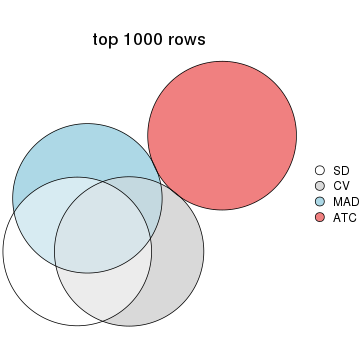
top_rows_overlap(res_list, top_n = 2000, method = "euler")
top_rows_overlap(res_list, top_n = 3000, method = "euler")
top_rows_overlap(res_list, top_n = 4000, method = "euler")
top_rows_overlap(res_list, top_n = 5000, method = "euler")

Also visualize the correspondance of rankings between different top-row methods:
top_rows_overlap(res_list, top_n = 1000, method = "correspondance")

top_rows_overlap(res_list, top_n = 2000, method = "correspondance")
top_rows_overlap(res_list, top_n = 3000, method = "correspondance")
top_rows_overlap(res_list, top_n = 4000, method = "correspondance")
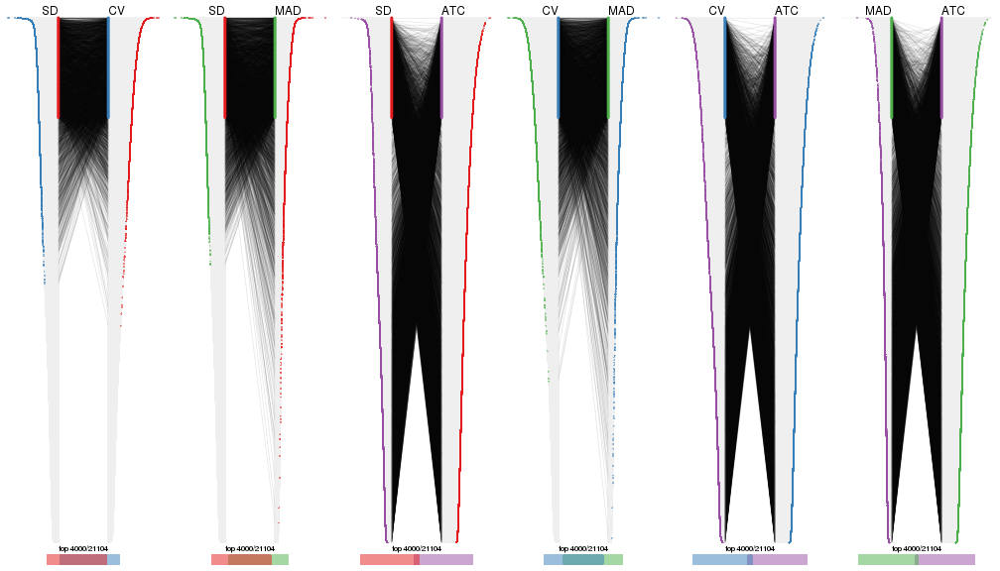
top_rows_overlap(res_list, top_n = 5000, method = "correspondance")
Heatmaps of the top rows:
top_rows_heatmap(res_list, top_n = 1000)
top_rows_heatmap(res_list, top_n = 2000)
top_rows_heatmap(res_list, top_n = 3000)
top_rows_heatmap(res_list, top_n = 4000)
top_rows_heatmap(res_list, top_n = 5000)
Test correlation between subgroups and known annotations. If the known annotation is numeric, one-way ANOVA test is applied, and if the known annotation is discrete, chi-squared contingency table test is applied.
test_to_known_factors(res_list, k = 2)
#> n other(p) k
#> SD:NMF 75 0.40947 2
#> CV:NMF 75 0.40947 2
#> MAD:NMF 75 0.40947 2
#> ATC:NMF 75 0.40947 2
#> SD:skmeans 75 0.40947 2
#> CV:skmeans 75 0.40947 2
#> MAD:skmeans 75 0.40947 2
#> ATC:skmeans 75 0.40947 2
#> SD:mclust 75 0.40947 2
#> CV:mclust 75 0.40947 2
#> MAD:mclust 75 0.40947 2
#> ATC:mclust 75 0.40947 2
#> SD:kmeans 75 0.40947 2
#> CV:kmeans 75 0.40947 2
#> MAD:kmeans 75 0.40947 2
#> ATC:kmeans 75 0.40947 2
#> SD:pam 67 0.02085 2
#> CV:pam 33 0.15907 2
#> MAD:pam 64 0.62339 2
#> ATC:pam 75 0.40947 2
#> SD:hclust 60 0.00248 2
#> CV:hclust 75 0.15195 2
#> MAD:hclust 67 0.04669 2
#> ATC:hclust 75 0.40947 2
test_to_known_factors(res_list, k = 3)
#> n other(p) k
#> SD:NMF 66 0.08998 3
#> CV:NMF 62 0.07280 3
#> MAD:NMF 64 0.08335 3
#> ATC:NMF 74 0.06635 3
#> SD:skmeans 75 0.07622 3
#> CV:skmeans 74 0.09934 3
#> MAD:skmeans 74 0.05886 3
#> ATC:skmeans 75 0.00822 3
#> SD:mclust 74 0.01099 3
#> CV:mclust 73 0.03462 3
#> MAD:mclust 73 0.02292 3
#> ATC:mclust 73 0.08151 3
#> SD:kmeans 75 0.07622 3
#> CV:kmeans 66 0.14733 3
#> MAD:kmeans 75 0.07622 3
#> ATC:kmeans 75 0.00822 3
#> SD:pam 66 0.00588 3
#> CV:pam 41 0.30928 3
#> MAD:pam 53 0.89926 3
#> ATC:pam 73 0.11455 3
#> SD:hclust 74 0.18116 3
#> CV:hclust 70 0.29451 3
#> MAD:hclust 70 0.10058 3
#> ATC:hclust 75 0.26071 3
test_to_known_factors(res_list, k = 4)
#> n other(p) k
#> SD:NMF 59 0.042544 4
#> CV:NMF 55 0.014933 4
#> MAD:NMF 58 0.051139 4
#> ATC:NMF 70 0.046686 4
#> SD:skmeans 51 0.210770 4
#> CV:skmeans 56 0.063008 4
#> MAD:skmeans 49 0.193841 4
#> ATC:skmeans 63 0.085910 4
#> SD:mclust 72 0.063405 4
#> CV:mclust 66 0.001680 4
#> MAD:mclust 70 0.000146 4
#> ATC:mclust 74 0.048606 4
#> SD:kmeans 65 0.003632 4
#> CV:kmeans 66 0.027785 4
#> MAD:kmeans 75 0.000467 4
#> ATC:kmeans 75 0.008224 4
#> SD:pam 59 0.009131 4
#> CV:pam 40 0.229188 4
#> MAD:pam 45 NA 4
#> ATC:pam 73 0.280745 4
#> SD:hclust 71 0.079791 4
#> CV:hclust 60 0.310895 4
#> MAD:hclust 54 0.081971 4
#> ATC:hclust 75 0.434198 4
test_to_known_factors(res_list, k = 5)
#> n other(p) k
#> SD:NMF 46 0.024249 5
#> CV:NMF 52 0.005459 5
#> MAD:NMF 46 0.036023 5
#> ATC:NMF 67 0.044370 5
#> SD:skmeans 46 0.017985 5
#> CV:skmeans 46 0.301535 5
#> MAD:skmeans 43 0.537971 5
#> ATC:skmeans 66 0.049329 5
#> SD:mclust 73 0.000177 5
#> CV:mclust 50 0.009922 5
#> MAD:mclust 69 0.000119 5
#> ATC:mclust 64 0.081180 5
#> SD:kmeans 75 0.000467 5
#> CV:kmeans 72 0.074726 5
#> MAD:kmeans 72 0.002300 5
#> ATC:kmeans 58 0.003714 5
#> SD:pam 58 0.022609 5
#> CV:pam 45 0.573764 5
#> MAD:pam 50 0.299887 5
#> ATC:pam 72 0.291343 5
#> SD:hclust 57 0.133388 5
#> CV:hclust 55 0.394402 5
#> MAD:hclust 52 0.059436 5
#> ATC:hclust 74 0.290542 5
test_to_known_factors(res_list, k = 6)
#> n other(p) k
#> SD:NMF 28 0.069993 6
#> CV:NMF 33 0.020224 6
#> MAD:NMF 40 0.028010 6
#> ATC:NMF 56 0.002161 6
#> SD:skmeans 39 0.101626 6
#> CV:skmeans 39 0.201092 6
#> MAD:skmeans 39 0.250848 6
#> ATC:skmeans 50 0.318354 6
#> SD:mclust 66 0.000957 6
#> CV:mclust 55 0.002541 6
#> MAD:mclust 63 0.005633 6
#> ATC:mclust 73 0.010935 6
#> SD:kmeans 47 0.000948 6
#> CV:kmeans 70 0.077828 6
#> MAD:kmeans 61 0.001441 6
#> ATC:kmeans 39 0.583000 6
#> SD:pam 55 0.086958 6
#> CV:pam 32 NA 6
#> MAD:pam 50 0.561649 6
#> ATC:pam 67 0.159016 6
#> SD:hclust 64 0.009323 6
#> CV:hclust 56 0.600986 6
#> MAD:hclust 58 0.808119 6
#> ATC:hclust 74 0.416985 6
The object with results only for a single top-value method and a single partition method can be extracted as:
res = res_list["SD", "hclust"]
# you can also extract it by
# res = res_list["SD:hclust"]
A summary of res and all the functions that can be applied to it:
res
#> A 'ConsensusPartition' object with k = 2, 3, 4, 5, 6.
#> On a matrix with 21104 rows and 75 columns.
#> Top rows (1000, 2000, 3000, 4000, 5000) are extracted by 'SD' method.
#> Subgroups are detected by 'hclust' method.
#> Performed in total 1250 partitions by row resampling.
#> Best k for subgroups seems to be 6.
#>
#> Following methods can be applied to this 'ConsensusPartition' object:
#> [1] "cola_report" "collect_classes" "collect_plots"
#> [4] "collect_stats" "colnames" "compare_signatures"
#> [7] "consensus_heatmap" "dimension_reduction" "functional_enrichment"
#> [10] "get_anno_col" "get_anno" "get_classes"
#> [13] "get_consensus" "get_matrix" "get_membership"
#> [16] "get_param" "get_signatures" "get_stats"
#> [19] "is_best_k" "is_stable_k" "membership_heatmap"
#> [22] "ncol" "nrow" "plot_ecdf"
#> [25] "rownames" "select_partition_number" "show"
#> [28] "suggest_best_k" "test_to_known_factors"
collect_plots() function collects all the plots made from res for all k (number of partitions)
into one single page to provide an easy and fast comparison between different k.
collect_plots(res)
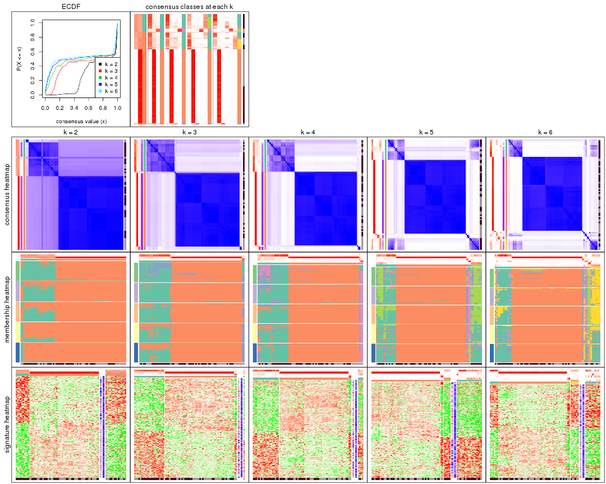
The plots are:
k and the heatmap of
predicted classes for each k.k.k.k.All the plots in panels can be made by individual functions and they are plotted later in this section.
select_partition_number() produces several plots showing different
statistics for choosing “optimized” k. There are following statistics:
k;k, the area increased is defined as \(A_k - A_{k-1}\).The detailed explanations of these statistics can be found in the cola vignette.
Generally speaking, lower PAC score, higher mean silhouette score or higher
concordance corresponds to better partition. Rand index and Jaccard index
measure how similar the current partition is compared to partition with k-1.
If they are too similar, we won't accept k is better than k-1.
select_partition_number(res)

The numeric values for all these statistics can be obtained by get_stats().
get_stats(res)
#> k 1-PAC mean_silhouette concordance area_increased Rand Jaccard
#> 2 2 0.518 0.549 0.844 0.2466 0.728 0.728
#> 3 3 0.531 0.892 0.902 0.6741 0.729 0.648
#> 4 4 0.784 0.857 0.904 0.1238 0.982 0.967
#> 5 5 0.840 0.744 0.854 0.0675 0.960 0.923
#> 6 6 0.928 0.781 0.868 0.0375 0.962 0.924
suggest_best_k() suggests the best \(k\) based on these statistics. The rules are as follows:
suggest_best_k(res)
#> [1] 6
Following shows the table of the partitions (You need to click the show/hide
code output link to see it). The membership matrix (columns with name p*)
is inferred by
clue::cl_consensus()
function with the SE method. Basically the value in the membership matrix
represents the probability to belong to a certain group. The finall class
label for an item is determined with the group with highest probability it
belongs to.
In get_classes() function, the entropy is calculated from the membership
matrix and the silhouette score is calculated from the consensus matrix.
cbind(get_classes(res, k = 2), get_membership(res, k = 2))
#> class entropy silhouette p1 p2
#> GSM15684 2 0.9710 -0.482 0.400 0.600
#> GSM15685 2 0.9710 -0.482 0.400 0.600
#> GSM15686 1 0.9850 0.221 0.572 0.428
#> GSM15687 1 0.9922 0.205 0.552 0.448
#> GSM15688 2 0.9944 -0.631 0.456 0.544
#> GSM15689 2 0.9988 -0.709 0.480 0.520
#> GSM15690 2 0.9129 -0.103 0.328 0.672
#> GSM15691 2 0.9732 -0.503 0.404 0.596
#> GSM15692 2 0.9954 -0.641 0.460 0.540
#> GSM15693 2 0.0376 0.813 0.004 0.996
#> GSM15694 2 0.0000 0.814 0.000 1.000
#> GSM15695 2 0.0376 0.813 0.004 0.996
#> GSM15696 2 0.0376 0.813 0.004 0.996
#> GSM15697 2 0.0376 0.813 0.004 0.996
#> GSM15698 2 0.0376 0.813 0.004 0.996
#> GSM15699 2 0.0376 0.813 0.004 0.996
#> GSM15700 2 0.0672 0.811 0.008 0.992
#> GSM15701 2 0.0000 0.814 0.000 1.000
#> GSM15702 2 0.0376 0.813 0.004 0.996
#> GSM15703 2 0.0376 0.813 0.004 0.996
#> GSM15704 2 0.0376 0.813 0.004 0.996
#> GSM15705 2 0.0000 0.814 0.000 1.000
#> GSM15706 2 0.0000 0.814 0.000 1.000
#> GSM15707 2 0.0376 0.813 0.004 0.996
#> GSM15708 2 0.0938 0.809 0.012 0.988
#> GSM15709 2 0.0938 0.809 0.012 0.988
#> GSM15710 2 0.0000 0.814 0.000 1.000
#> GSM15711 2 0.0000 0.814 0.000 1.000
#> GSM15712 2 0.0672 0.811 0.008 0.992
#> GSM15713 2 0.0000 0.814 0.000 1.000
#> GSM15714 2 0.0000 0.814 0.000 1.000
#> GSM15715 2 0.1184 0.806 0.016 0.984
#> GSM15716 2 0.0376 0.813 0.004 0.996
#> GSM15717 2 0.0672 0.809 0.008 0.992
#> GSM15718 2 0.9795 -0.533 0.416 0.584
#> GSM15719 2 0.2043 0.776 0.032 0.968
#> GSM15720 1 0.9933 0.778 0.548 0.452
#> GSM15721 1 0.9996 0.762 0.512 0.488
#> GSM15722 1 0.9933 0.773 0.548 0.452
#> GSM15723 1 0.9988 0.773 0.520 0.480
#> GSM15724 2 1.0000 -0.747 0.496 0.504
#> GSM15725 1 0.9988 0.773 0.520 0.480
#> GSM15726 1 0.9996 0.762 0.512 0.488
#> GSM15727 1 0.9983 0.778 0.524 0.476
#> GSM15728 1 0.9954 0.782 0.540 0.460
#> GSM15729 2 0.0376 0.813 0.004 0.996
#> GSM15730 2 0.0000 0.814 0.000 1.000
#> GSM15731 2 0.0376 0.813 0.004 0.996
#> GSM15732 2 0.0376 0.813 0.004 0.996
#> GSM15733 2 0.0938 0.809 0.012 0.988
#> GSM15734 2 0.0000 0.814 0.000 1.000
#> GSM15735 2 0.0376 0.813 0.004 0.996
#> GSM15736 2 0.0938 0.809 0.012 0.988
#> GSM15737 2 0.1184 0.806 0.016 0.984
#> GSM15738 2 0.1184 0.806 0.016 0.984
#> GSM15739 2 0.0000 0.814 0.000 1.000
#> GSM15740 2 0.0376 0.812 0.004 0.996
#> GSM15741 2 0.9881 -0.571 0.436 0.564
#> GSM15742 1 0.9963 0.779 0.536 0.464
#> GSM15743 2 0.9998 -0.737 0.492 0.508
#> GSM15744 1 0.9970 0.780 0.532 0.468
#> GSM15745 2 0.9983 -0.704 0.476 0.524
#> GSM15746 2 0.9954 -0.660 0.460 0.540
#> GSM15747 2 0.0938 0.809 0.012 0.988
#> GSM15748 2 0.0000 0.814 0.000 1.000
#> GSM15749 2 0.0376 0.813 0.004 0.996
#> GSM15750 2 0.0376 0.813 0.004 0.996
#> GSM15751 2 0.1184 0.806 0.016 0.984
#> GSM15752 2 0.1184 0.806 0.016 0.984
#> GSM15753 2 0.0938 0.809 0.012 0.988
#> GSM15754 2 0.0000 0.814 0.000 1.000
#> GSM15755 2 0.1184 0.806 0.016 0.984
#> GSM15756 2 0.0938 0.809 0.012 0.988
#> GSM15757 2 0.0938 0.809 0.012 0.988
#> GSM15758 2 0.0672 0.809 0.008 0.992
cbind(get_classes(res, k = 3), get_membership(res, k = 3))
#> class entropy silhouette p1 p2 p3
#> GSM15684 1 0.7564 0.740 0.672 0.232 0.096
#> GSM15685 1 0.7564 0.740 0.672 0.232 0.096
#> GSM15686 3 0.6332 0.964 0.088 0.144 0.768
#> GSM15687 3 0.6529 0.965 0.092 0.152 0.756
#> GSM15688 1 0.8040 0.581 0.608 0.300 0.092
#> GSM15689 1 0.6388 0.804 0.752 0.184 0.064
#> GSM15690 2 0.9589 -0.285 0.344 0.448 0.208
#> GSM15691 1 0.8072 0.736 0.648 0.208 0.144
#> GSM15692 1 0.8067 0.617 0.616 0.284 0.100
#> GSM15693 2 0.0661 0.972 0.008 0.988 0.004
#> GSM15694 2 0.0237 0.975 0.004 0.996 0.000
#> GSM15695 2 0.0424 0.974 0.008 0.992 0.000
#> GSM15696 2 0.0424 0.974 0.008 0.992 0.000
#> GSM15697 2 0.0424 0.974 0.000 0.992 0.008
#> GSM15698 2 0.0424 0.974 0.008 0.992 0.000
#> GSM15699 2 0.0424 0.974 0.008 0.992 0.000
#> GSM15700 2 0.0592 0.973 0.000 0.988 0.012
#> GSM15701 2 0.0237 0.975 0.004 0.996 0.000
#> GSM15702 2 0.0237 0.975 0.000 0.996 0.004
#> GSM15703 2 0.0661 0.972 0.008 0.988 0.004
#> GSM15704 2 0.0475 0.975 0.004 0.992 0.004
#> GSM15705 2 0.0237 0.975 0.004 0.996 0.000
#> GSM15706 2 0.0237 0.975 0.004 0.996 0.000
#> GSM15707 2 0.0424 0.974 0.008 0.992 0.000
#> GSM15708 2 0.0747 0.971 0.000 0.984 0.016
#> GSM15709 2 0.0747 0.971 0.000 0.984 0.016
#> GSM15710 2 0.0237 0.975 0.004 0.996 0.000
#> GSM15711 2 0.0000 0.975 0.000 1.000 0.000
#> GSM15712 2 0.0747 0.973 0.000 0.984 0.016
#> GSM15713 2 0.0475 0.976 0.004 0.992 0.004
#> GSM15714 2 0.0237 0.975 0.004 0.996 0.000
#> GSM15715 2 0.0892 0.969 0.000 0.980 0.020
#> GSM15716 2 0.0424 0.974 0.008 0.992 0.000
#> GSM15717 2 0.0829 0.970 0.012 0.984 0.004
#> GSM15718 1 0.7413 0.758 0.684 0.224 0.092
#> GSM15719 2 0.1774 0.944 0.024 0.960 0.016
#> GSM15720 1 0.4232 0.757 0.872 0.084 0.044
#> GSM15721 1 0.4209 0.814 0.856 0.128 0.016
#> GSM15722 1 0.6882 0.750 0.732 0.172 0.096
#> GSM15723 1 0.6463 0.791 0.756 0.164 0.080
#> GSM15724 1 0.4931 0.817 0.828 0.140 0.032
#> GSM15725 1 0.4136 0.804 0.864 0.116 0.020
#> GSM15726 1 0.4209 0.814 0.856 0.128 0.016
#> GSM15727 1 0.4446 0.800 0.856 0.112 0.032
#> GSM15728 1 0.4558 0.776 0.856 0.100 0.044
#> GSM15729 2 0.0237 0.975 0.000 0.996 0.004
#> GSM15730 2 0.0000 0.975 0.000 1.000 0.000
#> GSM15731 2 0.0424 0.974 0.008 0.992 0.000
#> GSM15732 2 0.0424 0.974 0.000 0.992 0.008
#> GSM15733 2 0.0747 0.972 0.000 0.984 0.016
#> GSM15734 2 0.0237 0.975 0.004 0.996 0.000
#> GSM15735 2 0.0424 0.974 0.008 0.992 0.000
#> GSM15736 2 0.0747 0.971 0.000 0.984 0.016
#> GSM15737 2 0.0892 0.969 0.000 0.980 0.020
#> GSM15738 2 0.0892 0.969 0.000 0.980 0.020
#> GSM15739 2 0.0237 0.975 0.004 0.996 0.000
#> GSM15740 2 0.0661 0.972 0.008 0.988 0.004
#> GSM15741 1 0.8548 0.543 0.568 0.312 0.120
#> GSM15742 1 0.5884 0.780 0.788 0.148 0.064
#> GSM15743 1 0.5330 0.818 0.812 0.144 0.044
#> GSM15744 1 0.5153 0.767 0.832 0.100 0.068
#> GSM15745 1 0.6286 0.801 0.772 0.136 0.092
#> GSM15746 1 0.6827 0.796 0.728 0.192 0.080
#> GSM15747 2 0.0747 0.971 0.000 0.984 0.016
#> GSM15748 2 0.0424 0.975 0.000 0.992 0.008
#> GSM15749 2 0.0661 0.972 0.008 0.988 0.004
#> GSM15750 2 0.0424 0.974 0.000 0.992 0.008
#> GSM15751 2 0.0892 0.969 0.000 0.980 0.020
#> GSM15752 2 0.0892 0.969 0.000 0.980 0.020
#> GSM15753 2 0.0747 0.971 0.000 0.984 0.016
#> GSM15754 2 0.0000 0.975 0.000 1.000 0.000
#> GSM15755 2 0.0892 0.969 0.000 0.980 0.020
#> GSM15756 2 0.0747 0.971 0.000 0.984 0.016
#> GSM15757 2 0.0829 0.974 0.004 0.984 0.012
#> GSM15758 2 0.0829 0.970 0.012 0.984 0.004
cbind(get_classes(res, k = 4), get_membership(res, k = 4))
#> class entropy silhouette p1 p2 p3 p4
#> GSM15684 1 0.7928 0.6207 0.600 0.144 0.168 0.088
#> GSM15685 1 0.7928 0.6207 0.600 0.144 0.168 0.088
#> GSM15686 4 0.2222 0.9400 0.060 0.016 0.000 0.924
#> GSM15687 4 0.3387 0.9387 0.040 0.024 0.048 0.888
#> GSM15688 1 0.7684 0.3522 0.580 0.220 0.164 0.036
#> GSM15689 1 0.6700 0.6796 0.664 0.100 0.208 0.028
#> GSM15690 3 0.8105 0.0000 0.156 0.252 0.540 0.052
#> GSM15691 1 0.8249 0.6151 0.576 0.124 0.132 0.168
#> GSM15692 1 0.8755 0.1207 0.364 0.236 0.356 0.044
#> GSM15693 2 0.0564 0.9834 0.004 0.988 0.004 0.004
#> GSM15694 2 0.0188 0.9864 0.004 0.996 0.000 0.000
#> GSM15695 2 0.0376 0.9852 0.004 0.992 0.004 0.000
#> GSM15696 2 0.0376 0.9852 0.004 0.992 0.004 0.000
#> GSM15697 2 0.0376 0.9852 0.000 0.992 0.004 0.004
#> GSM15698 2 0.0376 0.9852 0.004 0.992 0.004 0.000
#> GSM15699 2 0.0376 0.9852 0.004 0.992 0.004 0.000
#> GSM15700 2 0.0524 0.9838 0.000 0.988 0.008 0.004
#> GSM15701 2 0.0188 0.9864 0.004 0.996 0.000 0.000
#> GSM15702 2 0.0188 0.9864 0.000 0.996 0.004 0.000
#> GSM15703 2 0.0564 0.9834 0.004 0.988 0.004 0.004
#> GSM15704 2 0.0376 0.9862 0.000 0.992 0.004 0.004
#> GSM15705 2 0.0188 0.9864 0.004 0.996 0.000 0.000
#> GSM15706 2 0.0188 0.9864 0.004 0.996 0.000 0.000
#> GSM15707 2 0.0376 0.9852 0.004 0.992 0.004 0.000
#> GSM15708 2 0.0657 0.9820 0.000 0.984 0.012 0.004
#> GSM15709 2 0.0657 0.9820 0.000 0.984 0.012 0.004
#> GSM15710 2 0.0188 0.9864 0.004 0.996 0.000 0.000
#> GSM15711 2 0.0000 0.9866 0.000 1.000 0.000 0.000
#> GSM15712 2 0.0672 0.9832 0.000 0.984 0.008 0.008
#> GSM15713 2 0.0376 0.9867 0.004 0.992 0.000 0.004
#> GSM15714 2 0.0188 0.9864 0.004 0.996 0.000 0.000
#> GSM15715 2 0.0779 0.9796 0.000 0.980 0.016 0.004
#> GSM15716 2 0.0376 0.9852 0.004 0.992 0.004 0.000
#> GSM15717 2 0.0712 0.9800 0.008 0.984 0.004 0.004
#> GSM15718 1 0.7881 0.6352 0.604 0.136 0.172 0.088
#> GSM15719 2 0.1509 0.9514 0.008 0.960 0.020 0.012
#> GSM15720 1 0.2161 0.6673 0.932 0.004 0.048 0.016
#> GSM15721 1 0.2021 0.7235 0.932 0.056 0.000 0.012
#> GSM15722 1 0.6739 0.5304 0.636 0.120 0.232 0.012
#> GSM15723 1 0.6243 0.6543 0.712 0.100 0.160 0.028
#> GSM15724 1 0.2744 0.7260 0.908 0.064 0.020 0.008
#> GSM15725 1 0.2099 0.7177 0.936 0.044 0.008 0.012
#> GSM15726 1 0.2021 0.7235 0.932 0.056 0.000 0.012
#> GSM15727 1 0.2317 0.7156 0.928 0.036 0.032 0.004
#> GSM15728 1 0.3366 0.6605 0.872 0.008 0.100 0.020
#> GSM15729 2 0.0188 0.9864 0.000 0.996 0.004 0.000
#> GSM15730 2 0.0000 0.9866 0.000 1.000 0.000 0.000
#> GSM15731 2 0.0376 0.9852 0.004 0.992 0.004 0.000
#> GSM15732 2 0.0376 0.9851 0.000 0.992 0.004 0.004
#> GSM15733 2 0.0657 0.9823 0.000 0.984 0.012 0.004
#> GSM15734 2 0.0188 0.9864 0.004 0.996 0.000 0.000
#> GSM15735 2 0.0376 0.9852 0.004 0.992 0.004 0.000
#> GSM15736 2 0.0657 0.9820 0.000 0.984 0.012 0.004
#> GSM15737 2 0.0779 0.9796 0.000 0.980 0.016 0.004
#> GSM15738 2 0.0779 0.9796 0.000 0.980 0.016 0.004
#> GSM15739 2 0.0188 0.9864 0.004 0.996 0.000 0.000
#> GSM15740 2 0.0524 0.9830 0.008 0.988 0.000 0.004
#> GSM15741 1 0.9056 0.0348 0.336 0.272 0.332 0.060
#> GSM15742 1 0.5029 0.6601 0.788 0.064 0.132 0.016
#> GSM15743 1 0.3574 0.7268 0.876 0.064 0.044 0.016
#> GSM15744 1 0.3344 0.6628 0.876 0.008 0.092 0.024
#> GSM15745 1 0.5716 0.7091 0.764 0.048 0.112 0.076
#> GSM15746 1 0.6953 0.6794 0.660 0.104 0.192 0.044
#> GSM15747 2 0.0657 0.9820 0.000 0.984 0.012 0.004
#> GSM15748 2 0.0336 0.9856 0.000 0.992 0.000 0.008
#> GSM15749 2 0.0564 0.9834 0.004 0.988 0.004 0.004
#> GSM15750 2 0.0376 0.9851 0.000 0.992 0.004 0.004
#> GSM15751 2 0.0779 0.9796 0.000 0.980 0.016 0.004
#> GSM15752 2 0.0779 0.9796 0.000 0.980 0.016 0.004
#> GSM15753 2 0.0657 0.9820 0.000 0.984 0.012 0.004
#> GSM15754 2 0.0000 0.9866 0.000 1.000 0.000 0.000
#> GSM15755 2 0.0779 0.9796 0.000 0.980 0.016 0.004
#> GSM15756 2 0.0657 0.9820 0.000 0.984 0.012 0.004
#> GSM15757 2 0.0657 0.9848 0.004 0.984 0.012 0.000
#> GSM15758 2 0.0712 0.9800 0.008 0.984 0.004 0.004
cbind(get_classes(res, k = 5), get_membership(res, k = 5))
#> class entropy silhouette p1 p2 p3 p4 p5
#> GSM15684 1 0.2952 0.44409 0.872 0.088 0.004 0.036 0.000
#> GSM15685 1 0.2952 0.44409 0.872 0.088 0.004 0.036 0.000
#> GSM15686 4 0.5179 0.82191 0.056 0.000 0.092 0.748 0.104
#> GSM15687 4 0.1934 0.82017 0.040 0.000 0.020 0.932 0.008
#> GSM15688 1 0.8591 -0.10324 0.364 0.184 0.128 0.020 0.304
#> GSM15689 1 0.2625 0.40449 0.900 0.040 0.048 0.000 0.012
#> GSM15690 3 0.5356 0.00000 0.036 0.144 0.744 0.024 0.052
#> GSM15691 1 0.5062 0.36490 0.760 0.064 0.004 0.120 0.052
#> GSM15692 1 0.8383 0.00459 0.460 0.116 0.120 0.044 0.260
#> GSM15693 2 0.0566 0.98427 0.012 0.984 0.004 0.000 0.000
#> GSM15694 2 0.0290 0.98674 0.008 0.992 0.000 0.000 0.000
#> GSM15695 2 0.0404 0.98575 0.012 0.988 0.000 0.000 0.000
#> GSM15696 2 0.0404 0.98575 0.012 0.988 0.000 0.000 0.000
#> GSM15697 2 0.0162 0.98577 0.000 0.996 0.004 0.000 0.000
#> GSM15698 2 0.0404 0.98575 0.012 0.988 0.000 0.000 0.000
#> GSM15699 2 0.0404 0.98575 0.012 0.988 0.000 0.000 0.000
#> GSM15700 2 0.0404 0.98310 0.000 0.988 0.012 0.000 0.000
#> GSM15701 2 0.0290 0.98674 0.008 0.992 0.000 0.000 0.000
#> GSM15702 2 0.0324 0.98676 0.004 0.992 0.000 0.004 0.000
#> GSM15703 2 0.0566 0.98427 0.012 0.984 0.004 0.000 0.000
#> GSM15704 2 0.0162 0.98670 0.004 0.996 0.000 0.000 0.000
#> GSM15705 2 0.0290 0.98674 0.008 0.992 0.000 0.000 0.000
#> GSM15706 2 0.0290 0.98674 0.008 0.992 0.000 0.000 0.000
#> GSM15707 2 0.0404 0.98575 0.012 0.988 0.000 0.000 0.000
#> GSM15708 2 0.0566 0.98146 0.000 0.984 0.012 0.004 0.000
#> GSM15709 2 0.0566 0.98146 0.000 0.984 0.012 0.004 0.000
#> GSM15710 2 0.0290 0.98674 0.008 0.992 0.000 0.000 0.000
#> GSM15711 2 0.0162 0.98689 0.004 0.996 0.000 0.000 0.000
#> GSM15712 2 0.0510 0.98260 0.000 0.984 0.016 0.000 0.000
#> GSM15713 2 0.0162 0.98705 0.004 0.996 0.000 0.000 0.000
#> GSM15714 2 0.0290 0.98674 0.008 0.992 0.000 0.000 0.000
#> GSM15715 2 0.0727 0.97930 0.000 0.980 0.012 0.004 0.004
#> GSM15716 2 0.0404 0.98575 0.012 0.988 0.000 0.000 0.000
#> GSM15717 2 0.0671 0.98145 0.016 0.980 0.004 0.000 0.000
#> GSM15718 1 0.3307 0.44302 0.864 0.080 0.004 0.040 0.012
#> GSM15719 2 0.1205 0.95745 0.040 0.956 0.004 0.000 0.000
#> GSM15720 5 0.4965 0.58316 0.404 0.004 0.024 0.000 0.568
#> GSM15721 1 0.5153 -0.47480 0.508 0.024 0.000 0.008 0.460
#> GSM15722 5 0.7587 0.30009 0.188 0.096 0.124 0.028 0.564
#> GSM15723 5 0.7240 0.41328 0.332 0.068 0.068 0.024 0.508
#> GSM15724 1 0.5086 -0.34104 0.576 0.024 0.004 0.004 0.392
#> GSM15725 5 0.5002 0.44507 0.484 0.016 0.000 0.008 0.492
#> GSM15726 1 0.5153 -0.47480 0.508 0.024 0.000 0.008 0.460
#> GSM15727 5 0.5054 0.50017 0.472 0.012 0.008 0.004 0.504
#> GSM15728 5 0.5409 0.60025 0.332 0.004 0.040 0.012 0.612
#> GSM15729 2 0.0324 0.98676 0.004 0.992 0.000 0.004 0.000
#> GSM15730 2 0.0162 0.98689 0.004 0.996 0.000 0.000 0.000
#> GSM15731 2 0.0404 0.98575 0.012 0.988 0.000 0.000 0.000
#> GSM15732 2 0.0162 0.98567 0.000 0.996 0.000 0.004 0.000
#> GSM15733 2 0.0613 0.98181 0.000 0.984 0.008 0.004 0.004
#> GSM15734 2 0.0290 0.98674 0.008 0.992 0.000 0.000 0.000
#> GSM15735 2 0.0404 0.98575 0.012 0.988 0.000 0.000 0.000
#> GSM15736 2 0.0566 0.98146 0.000 0.984 0.012 0.004 0.000
#> GSM15737 2 0.0727 0.97930 0.000 0.980 0.012 0.004 0.004
#> GSM15738 2 0.0727 0.97930 0.000 0.980 0.012 0.004 0.004
#> GSM15739 2 0.0290 0.98674 0.008 0.992 0.000 0.000 0.000
#> GSM15740 2 0.0566 0.98401 0.012 0.984 0.004 0.000 0.000
#> GSM15741 1 0.8504 -0.01092 0.472 0.176 0.104 0.052 0.196
#> GSM15742 5 0.6711 0.53683 0.328 0.060 0.056 0.012 0.544
#> GSM15743 1 0.4877 -0.18859 0.640 0.024 0.004 0.004 0.328
#> GSM15744 5 0.5470 0.60816 0.364 0.004 0.032 0.016 0.584
#> GSM15745 1 0.4396 0.10316 0.744 0.016 0.004 0.016 0.220
#> GSM15746 1 0.2884 0.39974 0.896 0.044 0.028 0.008 0.024
#> GSM15747 2 0.0566 0.98146 0.000 0.984 0.012 0.004 0.000
#> GSM15748 2 0.0162 0.98612 0.000 0.996 0.004 0.000 0.000
#> GSM15749 2 0.0566 0.98427 0.012 0.984 0.004 0.000 0.000
#> GSM15750 2 0.0162 0.98567 0.000 0.996 0.000 0.004 0.000
#> GSM15751 2 0.0727 0.97930 0.000 0.980 0.012 0.004 0.004
#> GSM15752 2 0.0727 0.97930 0.000 0.980 0.012 0.004 0.004
#> GSM15753 2 0.0566 0.98146 0.000 0.984 0.012 0.004 0.000
#> GSM15754 2 0.0162 0.98689 0.004 0.996 0.000 0.000 0.000
#> GSM15755 2 0.0727 0.97930 0.000 0.980 0.012 0.004 0.004
#> GSM15756 2 0.0566 0.98146 0.000 0.984 0.012 0.004 0.000
#> GSM15757 2 0.0854 0.98403 0.008 0.976 0.012 0.004 0.000
#> GSM15758 2 0.0671 0.98145 0.016 0.980 0.004 0.000 0.000
cbind(get_classes(res, k = 6), get_membership(res, k = 6))
#> class entropy silhouette p1 p2 p3 p4 p5 p6
#> GSM15684 6 0.5543 0.6942 0.348 0.084 0.004 0.000 0.016 0.548
#> GSM15685 6 0.5543 0.6942 0.348 0.084 0.004 0.000 0.016 0.548
#> GSM15686 5 0.1151 0.7120 0.012 0.000 0.000 0.000 0.956 0.032
#> GSM15687 5 0.5393 0.7089 0.000 0.000 0.124 0.020 0.628 0.228
#> GSM15688 1 0.8523 -0.2287 0.332 0.172 0.076 0.292 0.012 0.116
#> GSM15689 6 0.5583 0.6126 0.400 0.036 0.060 0.000 0.000 0.504
#> GSM15690 3 0.2795 0.0000 0.028 0.100 0.864 0.004 0.004 0.000
#> GSM15691 6 0.7336 0.5294 0.292 0.056 0.000 0.068 0.120 0.464
#> GSM15692 4 0.6880 -0.0356 0.056 0.064 0.028 0.424 0.016 0.412
#> GSM15693 2 0.0551 0.9761 0.004 0.984 0.008 0.000 0.000 0.004
#> GSM15694 2 0.0291 0.9800 0.004 0.992 0.000 0.000 0.004 0.000
#> GSM15695 2 0.0436 0.9775 0.004 0.988 0.004 0.000 0.000 0.004
#> GSM15696 2 0.0436 0.9775 0.004 0.988 0.004 0.000 0.000 0.004
#> GSM15697 2 0.0436 0.9794 0.000 0.988 0.004 0.004 0.004 0.000
#> GSM15698 2 0.0436 0.9775 0.004 0.988 0.004 0.000 0.000 0.004
#> GSM15699 2 0.0436 0.9775 0.004 0.988 0.004 0.000 0.000 0.004
#> GSM15700 2 0.0748 0.9760 0.000 0.976 0.016 0.004 0.004 0.000
#> GSM15701 2 0.0291 0.9800 0.004 0.992 0.000 0.000 0.004 0.000
#> GSM15702 2 0.0146 0.9804 0.000 0.996 0.000 0.000 0.004 0.000
#> GSM15703 2 0.0551 0.9761 0.004 0.984 0.008 0.000 0.000 0.004
#> GSM15704 2 0.0436 0.9802 0.000 0.988 0.000 0.004 0.004 0.004
#> GSM15705 2 0.0146 0.9792 0.004 0.996 0.000 0.000 0.000 0.000
#> GSM15706 2 0.0436 0.9801 0.004 0.988 0.004 0.000 0.004 0.000
#> GSM15707 2 0.0291 0.9786 0.004 0.992 0.000 0.000 0.000 0.004
#> GSM15708 2 0.1148 0.9696 0.000 0.960 0.020 0.004 0.016 0.000
#> GSM15709 2 0.1053 0.9715 0.000 0.964 0.020 0.004 0.012 0.000
#> GSM15710 2 0.0291 0.9800 0.004 0.992 0.000 0.000 0.004 0.000
#> GSM15711 2 0.0000 0.9799 0.000 1.000 0.000 0.000 0.000 0.000
#> GSM15712 2 0.0837 0.9765 0.000 0.972 0.020 0.004 0.004 0.000
#> GSM15713 2 0.0291 0.9802 0.004 0.992 0.000 0.004 0.000 0.000
#> GSM15714 2 0.0146 0.9792 0.004 0.996 0.000 0.000 0.000 0.000
#> GSM15715 2 0.1262 0.9674 0.000 0.956 0.020 0.008 0.016 0.000
#> GSM15716 2 0.0436 0.9775 0.004 0.988 0.004 0.000 0.000 0.004
#> GSM15717 2 0.0665 0.9738 0.008 0.980 0.008 0.000 0.000 0.004
#> GSM15718 6 0.5876 0.6871 0.360 0.080 0.000 0.016 0.020 0.524
#> GSM15719 2 0.1230 0.9536 0.008 0.956 0.008 0.000 0.000 0.028
#> GSM15720 1 0.3065 0.5575 0.852 0.000 0.008 0.104 0.008 0.028
#> GSM15721 1 0.1806 0.6056 0.928 0.020 0.000 0.000 0.008 0.044
#> GSM15722 4 0.5594 0.2844 0.204 0.088 0.020 0.660 0.004 0.024
#> GSM15723 4 0.5923 0.0613 0.432 0.060 0.000 0.460 0.012 0.036
#> GSM15724 1 0.2846 0.5402 0.864 0.020 0.012 0.004 0.000 0.100
#> GSM15725 1 0.0767 0.6205 0.976 0.012 0.000 0.000 0.008 0.004
#> GSM15726 1 0.1806 0.6056 0.928 0.020 0.000 0.000 0.008 0.044
#> GSM15727 1 0.2115 0.6196 0.916 0.012 0.012 0.052 0.000 0.008
#> GSM15728 1 0.5078 0.3069 0.628 0.000 0.024 0.296 0.004 0.048
#> GSM15729 2 0.0405 0.9794 0.000 0.988 0.004 0.000 0.008 0.000
#> GSM15730 2 0.0146 0.9802 0.000 0.996 0.000 0.000 0.004 0.000
#> GSM15731 2 0.0436 0.9775 0.004 0.988 0.004 0.000 0.000 0.004
#> GSM15732 2 0.0551 0.9783 0.000 0.984 0.004 0.004 0.008 0.000
#> GSM15733 2 0.1173 0.9700 0.000 0.960 0.016 0.008 0.016 0.000
#> GSM15734 2 0.0436 0.9801 0.004 0.988 0.004 0.000 0.004 0.000
#> GSM15735 2 0.0436 0.9775 0.004 0.988 0.004 0.000 0.000 0.004
#> GSM15736 2 0.1148 0.9696 0.000 0.960 0.020 0.004 0.016 0.000
#> GSM15737 2 0.1262 0.9674 0.000 0.956 0.020 0.008 0.016 0.000
#> GSM15738 2 0.1262 0.9674 0.000 0.956 0.020 0.008 0.016 0.000
#> GSM15739 2 0.0436 0.9801 0.004 0.988 0.004 0.000 0.004 0.000
#> GSM15740 2 0.0520 0.9764 0.008 0.984 0.008 0.000 0.000 0.000
#> GSM15741 6 0.7315 -0.2889 0.056 0.116 0.020 0.360 0.024 0.424
#> GSM15742 1 0.5988 0.1202 0.544 0.060 0.012 0.332 0.000 0.052
#> GSM15743 1 0.3402 0.4365 0.800 0.020 0.012 0.000 0.000 0.168
#> GSM15744 1 0.4692 0.3275 0.648 0.000 0.004 0.300 0.016 0.032
#> GSM15745 1 0.4146 0.0301 0.672 0.012 0.000 0.004 0.008 0.304
#> GSM15746 6 0.5698 0.5827 0.424 0.040 0.028 0.020 0.000 0.488
#> GSM15747 2 0.1148 0.9696 0.000 0.960 0.020 0.004 0.016 0.000
#> GSM15748 2 0.0551 0.9789 0.000 0.984 0.008 0.004 0.004 0.000
#> GSM15749 2 0.0551 0.9761 0.004 0.984 0.008 0.000 0.000 0.004
#> GSM15750 2 0.0767 0.9765 0.000 0.976 0.008 0.004 0.012 0.000
#> GSM15751 2 0.1262 0.9674 0.000 0.956 0.020 0.008 0.016 0.000
#> GSM15752 2 0.1262 0.9674 0.000 0.956 0.020 0.008 0.016 0.000
#> GSM15753 2 0.1148 0.9696 0.000 0.960 0.020 0.004 0.016 0.000
#> GSM15754 2 0.0000 0.9799 0.000 1.000 0.000 0.000 0.000 0.000
#> GSM15755 2 0.1262 0.9674 0.000 0.956 0.020 0.008 0.016 0.000
#> GSM15756 2 0.1053 0.9715 0.000 0.964 0.020 0.004 0.012 0.000
#> GSM15757 2 0.1053 0.9742 0.004 0.964 0.020 0.000 0.012 0.000
#> GSM15758 2 0.0665 0.9738 0.008 0.980 0.008 0.000 0.000 0.004
Heatmaps for the consensus matrix. It visualizes the probability of two samples to be in a same group.
consensus_heatmap(res, k = 2)
consensus_heatmap(res, k = 3)
consensus_heatmap(res, k = 4)
consensus_heatmap(res, k = 5)
consensus_heatmap(res, k = 6)
Heatmaps for the membership of samples in all partitions to see how consistent they are:
membership_heatmap(res, k = 2)
membership_heatmap(res, k = 3)
membership_heatmap(res, k = 4)
membership_heatmap(res, k = 5)
membership_heatmap(res, k = 6)
As soon as we have had the classes for columns, we can look for signatures which are significantly different between classes which can be candidate marks for certain classes. Following are the heatmaps for signatures.
Signature heatmaps where rows are scaled:
get_signatures(res, k = 2)
get_signatures(res, k = 3)
get_signatures(res, k = 4)
get_signatures(res, k = 5)
get_signatures(res, k = 6)
Signature heatmaps where rows are not scaled:
get_signatures(res, k = 2, scale_rows = FALSE)
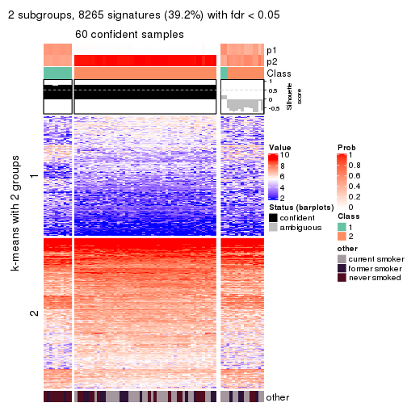
get_signatures(res, k = 3, scale_rows = FALSE)
get_signatures(res, k = 4, scale_rows = FALSE)
get_signatures(res, k = 5, scale_rows = FALSE)
get_signatures(res, k = 6, scale_rows = FALSE)
Compare the overlap of signatures from different k:
compare_signatures(res)
get_signature() returns a data frame invisibly. TO get the list of signatures, the function
call should be assigned to a variable explicitly. In following code, if plot argument is set
to FALSE, no heatmap is plotted while only the differential analysis is performed.
# code only for demonstration
tb = get_signature(res, k = ..., plot = FALSE)
An example of the output of tb is:
#> which_row fdr mean_1 mean_2 scaled_mean_1 scaled_mean_2 km
#> 1 38 0.042760348 8.373488 9.131774 -0.5533452 0.5164555 1
#> 2 40 0.018707592 7.106213 8.469186 -0.6173731 0.5762149 1
#> 3 55 0.019134737 10.221463 11.207825 -0.6159697 0.5749050 1
#> 4 59 0.006059896 5.921854 7.869574 -0.6899429 0.6439467 1
#> 5 60 0.018055526 8.928898 10.211722 -0.6204761 0.5791110 1
#> 6 98 0.009384629 15.714769 14.887706 0.6635654 -0.6193277 2
...
The columns in tb are:
which_row: row indices corresponding to the input matrix.fdr: FDR for the differential test. mean_x: The mean value in group x.scaled_mean_x: The mean value in group x after rows are scaled.km: Row groups if k-means clustering is applied to rows.UMAP plot which shows how samples are separated.
dimension_reduction(res, k = 2, method = "UMAP")
dimension_reduction(res, k = 3, method = "UMAP")
dimension_reduction(res, k = 4, method = "UMAP")
dimension_reduction(res, k = 5, method = "UMAP")
dimension_reduction(res, k = 6, method = "UMAP")
Following heatmap shows how subgroups are split when increasing k:
collect_classes(res)
Test correlation between subgroups and known annotations. If the known annotation is numeric, one-way ANOVA test is applied, and if the known annotation is discrete, chi-squared contingency table test is applied.
test_to_known_factors(res)
#> n other(p) k
#> SD:hclust 60 0.00248 2
#> SD:hclust 74 0.18116 3
#> SD:hclust 71 0.07979 4
#> SD:hclust 57 0.13339 5
#> SD:hclust 64 0.00932 6
If matrix rows can be associated to genes, consider to use functional_enrichment(res,
...) to perform function enrichment for the signature genes. See this vignette for more detailed explanations.
The object with results only for a single top-value method and a single partition method can be extracted as:
res = res_list["SD", "kmeans"]
# you can also extract it by
# res = res_list["SD:kmeans"]
A summary of res and all the functions that can be applied to it:
res
#> A 'ConsensusPartition' object with k = 2, 3, 4, 5, 6.
#> On a matrix with 21104 rows and 75 columns.
#> Top rows (1000, 2000, 3000, 4000, 5000) are extracted by 'SD' method.
#> Subgroups are detected by 'kmeans' method.
#> Performed in total 1250 partitions by row resampling.
#> Best k for subgroups seems to be 2.
#>
#> Following methods can be applied to this 'ConsensusPartition' object:
#> [1] "cola_report" "collect_classes" "collect_plots"
#> [4] "collect_stats" "colnames" "compare_signatures"
#> [7] "consensus_heatmap" "dimension_reduction" "functional_enrichment"
#> [10] "get_anno_col" "get_anno" "get_classes"
#> [13] "get_consensus" "get_matrix" "get_membership"
#> [16] "get_param" "get_signatures" "get_stats"
#> [19] "is_best_k" "is_stable_k" "membership_heatmap"
#> [22] "ncol" "nrow" "plot_ecdf"
#> [25] "rownames" "select_partition_number" "show"
#> [28] "suggest_best_k" "test_to_known_factors"
collect_plots() function collects all the plots made from res for all k (number of partitions)
into one single page to provide an easy and fast comparison between different k.
collect_plots(res)
The plots are:
k and the heatmap of
predicted classes for each k.k.k.k.All the plots in panels can be made by individual functions and they are plotted later in this section.
select_partition_number() produces several plots showing different
statistics for choosing “optimized” k. There are following statistics:
k;k, the area increased is defined as \(A_k - A_{k-1}\).The detailed explanations of these statistics can be found in the cola vignette.
Generally speaking, lower PAC score, higher mean silhouette score or higher
concordance corresponds to better partition. Rand index and Jaccard index
measure how similar the current partition is compared to partition with k-1.
If they are too similar, we won't accept k is better than k-1.
select_partition_number(res)
The numeric values for all these statistics can be obtained by get_stats().
get_stats(res)
#> k 1-PAC mean_silhouette concordance area_increased Rand Jaccard
#> 2 2 1.000 1.000 1.000 0.4510 0.550 0.550
#> 3 3 0.705 0.969 0.865 0.3481 0.784 0.607
#> 4 4 0.624 0.784 0.823 0.1075 0.955 0.864
#> 5 5 0.635 0.773 0.787 0.0919 0.964 0.880
#> 6 6 0.684 0.511 0.765 0.0420 0.982 0.936
suggest_best_k() suggests the best \(k\) based on these statistics. The rules are as follows:
suggest_best_k(res)
#> [1] 2
Following shows the table of the partitions (You need to click the show/hide
code output link to see it). The membership matrix (columns with name p*)
is inferred by
clue::cl_consensus()
function with the SE method. Basically the value in the membership matrix
represents the probability to belong to a certain group. The finall class
label for an item is determined with the group with highest probability it
belongs to.
In get_classes() function, the entropy is calculated from the membership
matrix and the silhouette score is calculated from the consensus matrix.
cbind(get_classes(res, k = 2), get_membership(res, k = 2))
#> class entropy silhouette p1 p2
#> GSM15684 1 0 1 1 0
#> GSM15685 1 0 1 1 0
#> GSM15686 1 0 1 1 0
#> GSM15687 1 0 1 1 0
#> GSM15688 1 0 1 1 0
#> GSM15689 1 0 1 1 0
#> GSM15690 1 0 1 1 0
#> GSM15691 1 0 1 1 0
#> GSM15692 1 0 1 1 0
#> GSM15693 2 0 1 0 1
#> GSM15694 2 0 1 0 1
#> GSM15695 2 0 1 0 1
#> GSM15696 2 0 1 0 1
#> GSM15697 2 0 1 0 1
#> GSM15698 2 0 1 0 1
#> GSM15699 2 0 1 0 1
#> GSM15700 2 0 1 0 1
#> GSM15701 2 0 1 0 1
#> GSM15702 2 0 1 0 1
#> GSM15703 2 0 1 0 1
#> GSM15704 2 0 1 0 1
#> GSM15705 2 0 1 0 1
#> GSM15706 2 0 1 0 1
#> GSM15707 2 0 1 0 1
#> GSM15708 2 0 1 0 1
#> GSM15709 2 0 1 0 1
#> GSM15710 2 0 1 0 1
#> GSM15711 2 0 1 0 1
#> GSM15712 2 0 1 0 1
#> GSM15713 2 0 1 0 1
#> GSM15714 2 0 1 0 1
#> GSM15715 2 0 1 0 1
#> GSM15716 2 0 1 0 1
#> GSM15717 2 0 1 0 1
#> GSM15718 1 0 1 1 0
#> GSM15719 2 0 1 0 1
#> GSM15720 1 0 1 1 0
#> GSM15721 1 0 1 1 0
#> GSM15722 1 0 1 1 0
#> GSM15723 1 0 1 1 0
#> GSM15724 1 0 1 1 0
#> GSM15725 1 0 1 1 0
#> GSM15726 1 0 1 1 0
#> GSM15727 1 0 1 1 0
#> GSM15728 1 0 1 1 0
#> GSM15729 2 0 1 0 1
#> GSM15730 2 0 1 0 1
#> GSM15731 2 0 1 0 1
#> GSM15732 2 0 1 0 1
#> GSM15733 2 0 1 0 1
#> GSM15734 2 0 1 0 1
#> GSM15735 2 0 1 0 1
#> GSM15736 2 0 1 0 1
#> GSM15737 2 0 1 0 1
#> GSM15738 2 0 1 0 1
#> GSM15739 2 0 1 0 1
#> GSM15740 2 0 1 0 1
#> GSM15741 1 0 1 1 0
#> GSM15742 1 0 1 1 0
#> GSM15743 1 0 1 1 0
#> GSM15744 1 0 1 1 0
#> GSM15745 1 0 1 1 0
#> GSM15746 1 0 1 1 0
#> GSM15747 2 0 1 0 1
#> GSM15748 2 0 1 0 1
#> GSM15749 2 0 1 0 1
#> GSM15750 2 0 1 0 1
#> GSM15751 2 0 1 0 1
#> GSM15752 2 0 1 0 1
#> GSM15753 2 0 1 0 1
#> GSM15754 2 0 1 0 1
#> GSM15755 2 0 1 0 1
#> GSM15756 2 0 1 0 1
#> GSM15757 2 0 1 0 1
#> GSM15758 2 0 1 0 1
cbind(get_classes(res, k = 3), get_membership(res, k = 3))
#> class entropy silhouette p1 p2 p3
#> GSM15684 1 0.3551 0.917 0.868 0.132 0.000
#> GSM15685 1 0.3816 0.918 0.852 0.148 0.000
#> GSM15686 1 0.5560 0.875 0.700 0.300 0.000
#> GSM15687 1 0.5650 0.871 0.688 0.312 0.000
#> GSM15688 1 0.5291 0.901 0.732 0.268 0.000
#> GSM15689 1 0.3412 0.918 0.876 0.124 0.000
#> GSM15690 1 0.5733 0.879 0.676 0.324 0.000
#> GSM15691 1 0.4178 0.921 0.828 0.172 0.000
#> GSM15692 1 0.5016 0.901 0.760 0.240 0.000
#> GSM15693 2 0.5882 1.000 0.000 0.652 0.348
#> GSM15694 2 0.5882 1.000 0.000 0.652 0.348
#> GSM15695 2 0.5882 1.000 0.000 0.652 0.348
#> GSM15696 2 0.5882 1.000 0.000 0.652 0.348
#> GSM15697 2 0.5882 1.000 0.000 0.652 0.348
#> GSM15698 2 0.5882 1.000 0.000 0.652 0.348
#> GSM15699 2 0.5882 1.000 0.000 0.652 0.348
#> GSM15700 3 0.0592 0.984 0.000 0.012 0.988
#> GSM15701 2 0.5882 1.000 0.000 0.652 0.348
#> GSM15702 3 0.0237 0.992 0.000 0.004 0.996
#> GSM15703 2 0.5882 1.000 0.000 0.652 0.348
#> GSM15704 2 0.5882 1.000 0.000 0.652 0.348
#> GSM15705 2 0.5882 1.000 0.000 0.652 0.348
#> GSM15706 2 0.5882 1.000 0.000 0.652 0.348
#> GSM15707 2 0.5882 1.000 0.000 0.652 0.348
#> GSM15708 3 0.0000 0.995 0.000 0.000 1.000
#> GSM15709 3 0.0000 0.995 0.000 0.000 1.000
#> GSM15710 2 0.5882 1.000 0.000 0.652 0.348
#> GSM15711 2 0.5882 1.000 0.000 0.652 0.348
#> GSM15712 3 0.0592 0.984 0.000 0.012 0.988
#> GSM15713 2 0.5882 1.000 0.000 0.652 0.348
#> GSM15714 2 0.5882 1.000 0.000 0.652 0.348
#> GSM15715 3 0.0000 0.995 0.000 0.000 1.000
#> GSM15716 2 0.5882 1.000 0.000 0.652 0.348
#> GSM15717 2 0.5882 1.000 0.000 0.652 0.348
#> GSM15718 1 0.3551 0.917 0.868 0.132 0.000
#> GSM15719 2 0.5882 1.000 0.000 0.652 0.348
#> GSM15720 1 0.1753 0.921 0.952 0.048 0.000
#> GSM15721 1 0.0237 0.921 0.996 0.004 0.000
#> GSM15722 1 0.3116 0.919 0.892 0.108 0.000
#> GSM15723 1 0.2711 0.922 0.912 0.088 0.000
#> GSM15724 1 0.1529 0.918 0.960 0.040 0.000
#> GSM15725 1 0.0237 0.921 0.996 0.004 0.000
#> GSM15726 1 0.0237 0.921 0.996 0.004 0.000
#> GSM15727 1 0.1289 0.919 0.968 0.032 0.000
#> GSM15728 1 0.3038 0.919 0.896 0.104 0.000
#> GSM15729 3 0.0747 0.979 0.000 0.016 0.984
#> GSM15730 2 0.5882 1.000 0.000 0.652 0.348
#> GSM15731 2 0.5882 1.000 0.000 0.652 0.348
#> GSM15732 3 0.0892 0.973 0.000 0.020 0.980
#> GSM15733 3 0.0000 0.995 0.000 0.000 1.000
#> GSM15734 2 0.5882 1.000 0.000 0.652 0.348
#> GSM15735 2 0.5882 1.000 0.000 0.652 0.348
#> GSM15736 3 0.0000 0.995 0.000 0.000 1.000
#> GSM15737 3 0.0000 0.995 0.000 0.000 1.000
#> GSM15738 3 0.0000 0.995 0.000 0.000 1.000
#> GSM15739 2 0.5882 1.000 0.000 0.652 0.348
#> GSM15740 2 0.5882 1.000 0.000 0.652 0.348
#> GSM15741 1 0.5016 0.902 0.760 0.240 0.000
#> GSM15742 1 0.2959 0.920 0.900 0.100 0.000
#> GSM15743 1 0.0237 0.921 0.996 0.004 0.000
#> GSM15744 1 0.2711 0.921 0.912 0.088 0.000
#> GSM15745 1 0.0892 0.923 0.980 0.020 0.000
#> GSM15746 1 0.3816 0.920 0.852 0.148 0.000
#> GSM15747 3 0.0000 0.995 0.000 0.000 1.000
#> GSM15748 2 0.5882 1.000 0.000 0.652 0.348
#> GSM15749 2 0.5882 1.000 0.000 0.652 0.348
#> GSM15750 3 0.0000 0.995 0.000 0.000 1.000
#> GSM15751 3 0.0000 0.995 0.000 0.000 1.000
#> GSM15752 3 0.0000 0.995 0.000 0.000 1.000
#> GSM15753 3 0.0000 0.995 0.000 0.000 1.000
#> GSM15754 2 0.5882 1.000 0.000 0.652 0.348
#> GSM15755 3 0.0000 0.995 0.000 0.000 1.000
#> GSM15756 3 0.0000 0.995 0.000 0.000 1.000
#> GSM15757 3 0.0000 0.995 0.000 0.000 1.000
#> GSM15758 2 0.5882 1.000 0.000 0.652 0.348
cbind(get_classes(res, k = 4), get_membership(res, k = 4))
#> class entropy silhouette p1 p2 p3 p4
#> GSM15684 1 0.5695 0.00139 0.624 0.000 0.040 0.336
#> GSM15685 1 0.5793 -0.06756 0.600 0.000 0.040 0.360
#> GSM15686 4 0.6906 0.69690 0.264 0.000 0.156 0.580
#> GSM15687 4 0.6606 0.70980 0.224 0.000 0.152 0.624
#> GSM15688 4 0.4606 0.70953 0.264 0.000 0.012 0.724
#> GSM15689 1 0.5271 0.00862 0.640 0.000 0.020 0.340
#> GSM15690 4 0.5361 0.72530 0.208 0.000 0.068 0.724
#> GSM15691 4 0.6549 0.49245 0.436 0.000 0.076 0.488
#> GSM15692 4 0.4877 0.71485 0.328 0.000 0.008 0.664
#> GSM15693 2 0.1716 0.94902 0.000 0.936 0.000 0.064
#> GSM15694 2 0.0921 0.95452 0.000 0.972 0.000 0.028
#> GSM15695 2 0.0921 0.95452 0.000 0.972 0.000 0.028
#> GSM15696 2 0.0336 0.95652 0.000 0.992 0.000 0.008
#> GSM15697 2 0.0707 0.95602 0.000 0.980 0.000 0.020
#> GSM15698 2 0.2611 0.91697 0.000 0.896 0.008 0.096
#> GSM15699 2 0.2412 0.92505 0.000 0.908 0.008 0.084
#> GSM15700 3 0.5619 0.92184 0.000 0.248 0.688 0.064
#> GSM15701 2 0.0188 0.95571 0.000 0.996 0.000 0.004
#> GSM15702 3 0.4746 0.92033 0.000 0.304 0.688 0.008
#> GSM15703 2 0.1716 0.94902 0.000 0.936 0.000 0.064
#> GSM15704 2 0.0188 0.95652 0.000 0.996 0.000 0.004
#> GSM15705 2 0.1118 0.95324 0.000 0.964 0.000 0.036
#> GSM15706 2 0.0707 0.95305 0.000 0.980 0.000 0.020
#> GSM15707 2 0.0336 0.95721 0.000 0.992 0.000 0.008
#> GSM15708 3 0.3907 0.95651 0.000 0.232 0.768 0.000
#> GSM15709 3 0.4134 0.95179 0.000 0.260 0.740 0.000
#> GSM15710 2 0.0000 0.95631 0.000 1.000 0.000 0.000
#> GSM15711 2 0.1211 0.95163 0.000 0.960 0.000 0.040
#> GSM15712 3 0.5247 0.92463 0.000 0.284 0.684 0.032
#> GSM15713 2 0.0592 0.95402 0.000 0.984 0.000 0.016
#> GSM15714 2 0.1557 0.94699 0.000 0.944 0.000 0.056
#> GSM15715 3 0.4158 0.95274 0.000 0.224 0.768 0.008
#> GSM15716 2 0.1022 0.95335 0.000 0.968 0.000 0.032
#> GSM15717 2 0.2676 0.92097 0.000 0.896 0.012 0.092
#> GSM15718 1 0.5812 -0.00663 0.624 0.000 0.048 0.328
#> GSM15719 2 0.3377 0.89727 0.000 0.848 0.012 0.140
#> GSM15720 1 0.2546 0.61559 0.912 0.000 0.028 0.060
#> GSM15721 1 0.0000 0.62401 1.000 0.000 0.000 0.000
#> GSM15722 1 0.5847 0.35992 0.628 0.000 0.052 0.320
#> GSM15723 1 0.5041 0.48771 0.728 0.000 0.040 0.232
#> GSM15724 1 0.2413 0.61611 0.916 0.000 0.020 0.064
#> GSM15725 1 0.0000 0.62401 1.000 0.000 0.000 0.000
#> GSM15726 1 0.0000 0.62401 1.000 0.000 0.000 0.000
#> GSM15727 1 0.2706 0.61230 0.900 0.000 0.020 0.080
#> GSM15728 1 0.5573 0.42665 0.676 0.000 0.052 0.272
#> GSM15729 3 0.5090 0.89353 0.000 0.324 0.660 0.016
#> GSM15730 2 0.0469 0.95460 0.000 0.988 0.000 0.012
#> GSM15731 2 0.1022 0.95335 0.000 0.968 0.000 0.032
#> GSM15732 3 0.6452 0.86165 0.000 0.260 0.624 0.116
#> GSM15733 3 0.4974 0.94255 0.000 0.224 0.736 0.040
#> GSM15734 2 0.0592 0.95395 0.000 0.984 0.000 0.016
#> GSM15735 2 0.1022 0.95335 0.000 0.968 0.000 0.032
#> GSM15736 3 0.4353 0.95577 0.000 0.232 0.756 0.012
#> GSM15737 3 0.4353 0.95577 0.000 0.232 0.756 0.012
#> GSM15738 3 0.4353 0.95577 0.000 0.232 0.756 0.012
#> GSM15739 2 0.1118 0.95029 0.000 0.964 0.000 0.036
#> GSM15740 2 0.1792 0.94146 0.000 0.932 0.000 0.068
#> GSM15741 4 0.5326 0.66966 0.380 0.000 0.016 0.604
#> GSM15742 1 0.5420 0.43969 0.684 0.000 0.044 0.272
#> GSM15743 1 0.0336 0.62106 0.992 0.000 0.000 0.008
#> GSM15744 1 0.4707 0.51601 0.760 0.000 0.036 0.204
#> GSM15745 1 0.1109 0.60521 0.968 0.000 0.004 0.028
#> GSM15746 1 0.5290 -0.16195 0.584 0.000 0.012 0.404
#> GSM15747 3 0.3907 0.95651 0.000 0.232 0.768 0.000
#> GSM15748 2 0.3142 0.89941 0.000 0.860 0.008 0.132
#> GSM15749 2 0.1716 0.94902 0.000 0.936 0.000 0.064
#> GSM15750 3 0.5361 0.93070 0.000 0.224 0.716 0.060
#> GSM15751 3 0.3907 0.95651 0.000 0.232 0.768 0.000
#> GSM15752 3 0.4228 0.95628 0.000 0.232 0.760 0.008
#> GSM15753 3 0.4576 0.94890 0.000 0.260 0.728 0.012
#> GSM15754 2 0.0592 0.95654 0.000 0.984 0.000 0.016
#> GSM15755 3 0.3907 0.95651 0.000 0.232 0.768 0.000
#> GSM15756 3 0.4482 0.94792 0.000 0.264 0.728 0.008
#> GSM15757 3 0.4826 0.94401 0.000 0.264 0.716 0.020
#> GSM15758 2 0.2805 0.92936 0.000 0.888 0.012 0.100
cbind(get_classes(res, k = 5), get_membership(res, k = 5))
#> class entropy silhouette p1 p2 p3 p4 p5
#> GSM15684 4 0.5554 0.567 0.360 0.000 0.004 0.568 NA
#> GSM15685 4 0.5409 0.578 0.348 0.000 0.004 0.588 NA
#> GSM15686 4 0.5650 0.521 0.076 0.000 0.000 0.464 NA
#> GSM15687 4 0.5456 0.529 0.060 0.000 0.000 0.484 NA
#> GSM15688 4 0.5961 0.537 0.180 0.000 0.048 0.668 NA
#> GSM15689 4 0.5146 0.520 0.400 0.000 0.008 0.564 NA
#> GSM15690 4 0.6138 0.559 0.124 0.000 0.032 0.632 NA
#> GSM15691 4 0.6336 0.562 0.256 0.000 0.012 0.568 NA
#> GSM15692 4 0.5451 0.601 0.144 0.000 0.040 0.716 NA
#> GSM15693 2 0.3480 0.843 0.000 0.752 0.000 0.000 NA
#> GSM15694 2 0.2286 0.868 0.000 0.888 0.000 0.004 NA
#> GSM15695 2 0.2286 0.868 0.000 0.888 0.000 0.004 NA
#> GSM15696 2 0.1502 0.875 0.000 0.940 0.000 0.004 NA
#> GSM15697 2 0.1764 0.876 0.000 0.928 0.000 0.008 NA
#> GSM15698 2 0.3783 0.814 0.000 0.740 0.000 0.008 NA
#> GSM15699 2 0.3642 0.824 0.000 0.760 0.000 0.008 NA
#> GSM15700 3 0.4968 0.844 0.000 0.160 0.732 0.012 NA
#> GSM15701 2 0.0290 0.868 0.000 0.992 0.000 0.000 NA
#> GSM15702 3 0.4688 0.776 0.000 0.312 0.660 0.008 NA
#> GSM15703 2 0.3480 0.843 0.000 0.752 0.000 0.000 NA
#> GSM15704 2 0.0865 0.874 0.000 0.972 0.000 0.004 NA
#> GSM15705 2 0.1965 0.866 0.000 0.904 0.000 0.000 NA
#> GSM15706 2 0.1484 0.858 0.000 0.944 0.000 0.008 NA
#> GSM15707 2 0.0955 0.874 0.000 0.968 0.000 0.004 NA
#> GSM15708 3 0.1908 0.883 0.000 0.092 0.908 0.000 NA
#> GSM15709 3 0.3430 0.859 0.000 0.220 0.776 0.000 NA
#> GSM15710 2 0.0771 0.873 0.000 0.976 0.000 0.004 NA
#> GSM15711 2 0.2338 0.852 0.000 0.884 0.000 0.004 NA
#> GSM15712 3 0.5241 0.804 0.000 0.252 0.672 0.012 NA
#> GSM15713 2 0.1205 0.860 0.000 0.956 0.000 0.004 NA
#> GSM15714 2 0.2719 0.849 0.000 0.852 0.000 0.004 NA
#> GSM15715 3 0.2068 0.883 0.000 0.092 0.904 0.004 NA
#> GSM15716 2 0.2763 0.859 0.000 0.848 0.000 0.004 NA
#> GSM15717 2 0.3759 0.803 0.000 0.764 0.000 0.016 NA
#> GSM15718 4 0.5606 0.568 0.360 0.000 0.004 0.564 NA
#> GSM15719 2 0.4511 0.758 0.000 0.628 0.000 0.016 NA
#> GSM15720 1 0.1484 0.766 0.944 0.000 0.000 0.048 NA
#> GSM15721 1 0.1892 0.742 0.916 0.000 0.000 0.080 NA
#> GSM15722 1 0.6046 0.524 0.624 0.000 0.048 0.260 NA
#> GSM15723 1 0.5064 0.657 0.736 0.000 0.032 0.164 NA
#> GSM15724 1 0.0613 0.765 0.984 0.000 0.004 0.008 NA
#> GSM15725 1 0.1892 0.742 0.916 0.000 0.000 0.080 NA
#> GSM15726 1 0.1892 0.742 0.916 0.000 0.000 0.080 NA
#> GSM15727 1 0.1393 0.763 0.956 0.000 0.012 0.024 NA
#> GSM15728 1 0.5429 0.618 0.700 0.000 0.040 0.196 NA
#> GSM15729 3 0.5201 0.713 0.000 0.344 0.608 0.008 NA
#> GSM15730 2 0.1205 0.861 0.000 0.956 0.000 0.004 NA
#> GSM15731 2 0.2806 0.858 0.000 0.844 0.000 0.004 NA
#> GSM15732 3 0.6358 0.687 0.000 0.136 0.556 0.016 NA
#> GSM15733 3 0.3980 0.861 0.000 0.092 0.816 0.012 NA
#> GSM15734 2 0.1484 0.858 0.000 0.944 0.000 0.008 NA
#> GSM15735 2 0.2806 0.858 0.000 0.844 0.000 0.004 NA
#> GSM15736 3 0.3079 0.876 0.000 0.092 0.868 0.012 NA
#> GSM15737 3 0.3079 0.876 0.000 0.092 0.868 0.012 NA
#> GSM15738 3 0.3079 0.876 0.000 0.092 0.868 0.012 NA
#> GSM15739 2 0.2069 0.854 0.000 0.912 0.000 0.012 NA
#> GSM15740 2 0.3282 0.824 0.000 0.804 0.000 0.008 NA
#> GSM15741 4 0.5311 0.621 0.148 0.000 0.028 0.720 NA
#> GSM15742 1 0.5733 0.562 0.652 0.000 0.032 0.244 NA
#> GSM15743 1 0.2233 0.720 0.892 0.000 0.000 0.104 NA
#> GSM15744 1 0.3825 0.712 0.828 0.000 0.020 0.104 NA
#> GSM15745 1 0.2629 0.679 0.860 0.000 0.000 0.136 NA
#> GSM15746 4 0.4030 0.569 0.352 0.000 0.000 0.648 NA
#> GSM15747 3 0.2193 0.883 0.000 0.092 0.900 0.008 NA
#> GSM15748 2 0.4264 0.757 0.000 0.620 0.000 0.004 NA
#> GSM15749 2 0.3480 0.843 0.000 0.752 0.000 0.000 NA
#> GSM15750 3 0.4353 0.848 0.000 0.092 0.792 0.016 NA
#> GSM15751 3 0.2068 0.883 0.000 0.092 0.904 0.004 NA
#> GSM15752 3 0.2068 0.883 0.000 0.092 0.904 0.004 NA
#> GSM15753 3 0.4345 0.853 0.000 0.212 0.748 0.012 NA
#> GSM15754 2 0.1831 0.863 0.000 0.920 0.000 0.004 NA
#> GSM15755 3 0.1908 0.883 0.000 0.092 0.908 0.000 NA
#> GSM15756 3 0.3944 0.851 0.000 0.224 0.756 0.004 NA
#> GSM15757 3 0.4437 0.856 0.000 0.192 0.756 0.016 NA
#> GSM15758 2 0.4108 0.819 0.000 0.684 0.000 0.008 NA
cbind(get_classes(res, k = 6), get_membership(res, k = 6))
#> class entropy silhouette p1 p2 p3 p4 p5 p6
#> GSM15684 4 0.3073 0.5402 0.152 0.000 0.000 0.824 0.008 0.016
#> GSM15685 4 0.3073 0.5402 0.152 0.000 0.000 0.824 0.008 0.016
#> GSM15686 6 0.3586 0.9594 0.028 0.000 0.000 0.216 0.000 0.756
#> GSM15687 6 0.3571 0.9592 0.020 0.000 0.000 0.216 0.004 0.760
#> GSM15688 4 0.7492 0.1442 0.120 0.000 0.004 0.332 0.320 0.224
#> GSM15689 4 0.4463 0.5373 0.212 0.000 0.000 0.712 0.064 0.012
#> GSM15690 4 0.7623 -0.0145 0.092 0.000 0.020 0.368 0.252 0.268
#> GSM15691 4 0.6654 0.2567 0.176 0.000 0.016 0.548 0.060 0.200
#> GSM15692 4 0.7150 0.2987 0.072 0.000 0.028 0.496 0.224 0.180
#> GSM15693 2 0.4213 0.1013 0.000 0.684 0.000 0.008 0.280 0.028
#> GSM15694 2 0.2225 0.5118 0.000 0.892 0.000 0.008 0.092 0.008
#> GSM15695 2 0.2225 0.5118 0.000 0.892 0.000 0.008 0.092 0.008
#> GSM15696 2 0.1375 0.5587 0.000 0.952 0.008 0.008 0.028 0.004
#> GSM15697 2 0.1590 0.5517 0.000 0.936 0.008 0.008 0.048 0.000
#> GSM15698 2 0.3962 0.2264 0.000 0.732 0.000 0.012 0.232 0.024
#> GSM15699 2 0.3775 0.2548 0.000 0.744 0.000 0.012 0.228 0.016
#> GSM15700 3 0.4672 0.7924 0.000 0.104 0.752 0.004 0.092 0.048
#> GSM15701 2 0.0972 0.5519 0.000 0.964 0.008 0.000 0.028 0.000
#> GSM15702 3 0.4515 0.6556 0.000 0.304 0.640 0.000 0.056 0.000
#> GSM15703 2 0.4243 0.1262 0.000 0.688 0.000 0.008 0.272 0.032
#> GSM15704 2 0.0260 0.5628 0.000 0.992 0.008 0.000 0.000 0.000
#> GSM15705 2 0.2658 0.4431 0.000 0.864 0.008 0.000 0.112 0.016
#> GSM15706 2 0.2070 0.4952 0.000 0.892 0.008 0.000 0.100 0.000
#> GSM15707 2 0.0405 0.5628 0.000 0.988 0.008 0.004 0.000 0.000
#> GSM15708 3 0.1141 0.8455 0.000 0.052 0.948 0.000 0.000 0.000
#> GSM15709 3 0.3175 0.8147 0.000 0.164 0.808 0.000 0.028 0.000
#> GSM15710 2 0.0767 0.5597 0.000 0.976 0.008 0.004 0.012 0.000
#> GSM15711 2 0.2980 0.3451 0.000 0.800 0.008 0.000 0.192 0.000
#> GSM15712 3 0.5272 0.6893 0.000 0.196 0.636 0.004 0.160 0.004
#> GSM15713 2 0.1970 0.5029 0.000 0.900 0.008 0.000 0.092 0.000
#> GSM15714 2 0.3624 0.1799 0.000 0.756 0.008 0.000 0.220 0.016
#> GSM15715 3 0.1542 0.8452 0.000 0.052 0.936 0.008 0.000 0.004
#> GSM15716 2 0.2924 0.4529 0.000 0.840 0.000 0.012 0.136 0.012
#> GSM15717 2 0.4675 -0.3470 0.000 0.624 0.008 0.028 0.332 0.008
#> GSM15718 4 0.3196 0.5368 0.156 0.000 0.000 0.816 0.008 0.020
#> GSM15719 5 0.4786 0.0000 0.000 0.468 0.000 0.028 0.492 0.012
#> GSM15720 1 0.2116 0.7249 0.912 0.000 0.004 0.056 0.024 0.004
#> GSM15721 1 0.2219 0.7024 0.864 0.000 0.000 0.136 0.000 0.000
#> GSM15722 1 0.7007 0.3965 0.512 0.000 0.028 0.088 0.256 0.116
#> GSM15723 1 0.5963 0.5717 0.656 0.000 0.024 0.080 0.152 0.088
#> GSM15724 1 0.0862 0.7252 0.972 0.000 0.000 0.016 0.004 0.008
#> GSM15725 1 0.2219 0.7024 0.864 0.000 0.000 0.136 0.000 0.000
#> GSM15726 1 0.2219 0.7024 0.864 0.000 0.000 0.136 0.000 0.000
#> GSM15727 1 0.0984 0.7241 0.968 0.000 0.000 0.012 0.012 0.008
#> GSM15728 1 0.6161 0.5253 0.624 0.000 0.024 0.072 0.192 0.088
#> GSM15729 3 0.5266 0.5727 0.000 0.312 0.576 0.000 0.108 0.004
#> GSM15730 2 0.2020 0.4999 0.000 0.896 0.008 0.000 0.096 0.000
#> GSM15731 2 0.3081 0.4292 0.000 0.824 0.000 0.012 0.152 0.012
#> GSM15732 3 0.6244 0.4639 0.000 0.068 0.488 0.004 0.364 0.076
#> GSM15733 3 0.3559 0.8168 0.000 0.052 0.840 0.008 0.056 0.044
#> GSM15734 2 0.2213 0.4898 0.000 0.888 0.008 0.000 0.100 0.004
#> GSM15735 2 0.3081 0.4292 0.000 0.824 0.000 0.012 0.152 0.012
#> GSM15736 3 0.2559 0.8410 0.000 0.052 0.896 0.008 0.020 0.024
#> GSM15737 3 0.2479 0.8384 0.000 0.052 0.900 0.012 0.012 0.024
#> GSM15738 3 0.2479 0.8384 0.000 0.052 0.900 0.012 0.012 0.024
#> GSM15739 2 0.3096 0.3476 0.000 0.812 0.008 0.004 0.172 0.004
#> GSM15740 2 0.3964 -0.1289 0.000 0.676 0.008 0.004 0.308 0.004
#> GSM15741 4 0.6194 0.3730 0.060 0.000 0.004 0.588 0.192 0.156
#> GSM15742 1 0.6243 0.4493 0.552 0.000 0.004 0.052 0.264 0.128
#> GSM15743 1 0.2491 0.6795 0.836 0.000 0.000 0.164 0.000 0.000
#> GSM15744 1 0.3894 0.6614 0.808 0.000 0.004 0.028 0.088 0.072
#> GSM15745 1 0.2941 0.6158 0.780 0.000 0.000 0.220 0.000 0.000
#> GSM15746 4 0.4918 0.5490 0.196 0.000 0.008 0.704 0.064 0.028
#> GSM15747 3 0.1398 0.8450 0.000 0.052 0.940 0.000 0.008 0.000
#> GSM15748 2 0.4723 -0.4466 0.000 0.548 0.000 0.004 0.408 0.040
#> GSM15749 2 0.4243 0.1262 0.000 0.688 0.000 0.008 0.272 0.032
#> GSM15750 3 0.3805 0.7995 0.000 0.052 0.820 0.004 0.072 0.052
#> GSM15751 3 0.1429 0.8454 0.000 0.052 0.940 0.004 0.000 0.004
#> GSM15752 3 0.1542 0.8455 0.000 0.052 0.936 0.004 0.000 0.008
#> GSM15753 3 0.3728 0.8081 0.000 0.152 0.784 0.000 0.060 0.004
#> GSM15754 2 0.2118 0.5027 0.000 0.888 0.008 0.000 0.104 0.000
#> GSM15755 3 0.1429 0.8454 0.000 0.052 0.940 0.004 0.000 0.004
#> GSM15756 3 0.3637 0.8022 0.000 0.164 0.780 0.000 0.056 0.000
#> GSM15757 3 0.4481 0.7808 0.000 0.128 0.732 0.004 0.132 0.004
#> GSM15758 2 0.4875 -0.5028 0.000 0.552 0.000 0.024 0.400 0.024
Heatmaps for the consensus matrix. It visualizes the probability of two samples to be in a same group.
consensus_heatmap(res, k = 2)
consensus_heatmap(res, k = 3)
consensus_heatmap(res, k = 4)
consensus_heatmap(res, k = 5)
consensus_heatmap(res, k = 6)
Heatmaps for the membership of samples in all partitions to see how consistent they are:
membership_heatmap(res, k = 2)

membership_heatmap(res, k = 3)
membership_heatmap(res, k = 4)
membership_heatmap(res, k = 5)
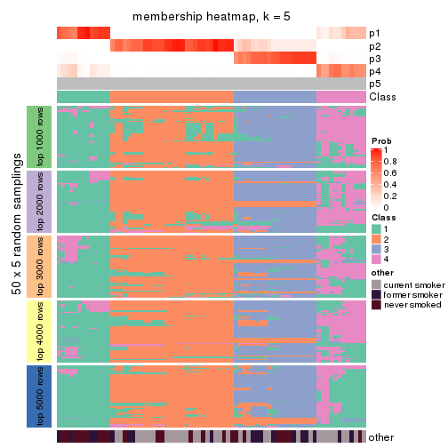
membership_heatmap(res, k = 6)
As soon as we have had the classes for columns, we can look for signatures which are significantly different between classes which can be candidate marks for certain classes. Following are the heatmaps for signatures.
Signature heatmaps where rows are scaled:
get_signatures(res, k = 2)

get_signatures(res, k = 3)
get_signatures(res, k = 4)
get_signatures(res, k = 5)
get_signatures(res, k = 6)
Signature heatmaps where rows are not scaled:
get_signatures(res, k = 2, scale_rows = FALSE)

get_signatures(res, k = 3, scale_rows = FALSE)
get_signatures(res, k = 4, scale_rows = FALSE)
get_signatures(res, k = 5, scale_rows = FALSE)
get_signatures(res, k = 6, scale_rows = FALSE)
Compare the overlap of signatures from different k:
compare_signatures(res)
get_signature() returns a data frame invisibly. TO get the list of signatures, the function
call should be assigned to a variable explicitly. In following code, if plot argument is set
to FALSE, no heatmap is plotted while only the differential analysis is performed.
# code only for demonstration
tb = get_signature(res, k = ..., plot = FALSE)
An example of the output of tb is:
#> which_row fdr mean_1 mean_2 scaled_mean_1 scaled_mean_2 km
#> 1 38 0.042760348 8.373488 9.131774 -0.5533452 0.5164555 1
#> 2 40 0.018707592 7.106213 8.469186 -0.6173731 0.5762149 1
#> 3 55 0.019134737 10.221463 11.207825 -0.6159697 0.5749050 1
#> 4 59 0.006059896 5.921854 7.869574 -0.6899429 0.6439467 1
#> 5 60 0.018055526 8.928898 10.211722 -0.6204761 0.5791110 1
#> 6 98 0.009384629 15.714769 14.887706 0.6635654 -0.6193277 2
...
The columns in tb are:
which_row: row indices corresponding to the input matrix.fdr: FDR for the differential test. mean_x: The mean value in group x.scaled_mean_x: The mean value in group x after rows are scaled.km: Row groups if k-means clustering is applied to rows.UMAP plot which shows how samples are separated.
dimension_reduction(res, k = 2, method = "UMAP")
dimension_reduction(res, k = 3, method = "UMAP")
dimension_reduction(res, k = 4, method = "UMAP")
dimension_reduction(res, k = 5, method = "UMAP")
dimension_reduction(res, k = 6, method = "UMAP")
Following heatmap shows how subgroups are split when increasing k:
collect_classes(res)
Test correlation between subgroups and known annotations. If the known annotation is numeric, one-way ANOVA test is applied, and if the known annotation is discrete, chi-squared contingency table test is applied.
test_to_known_factors(res)
#> n other(p) k
#> SD:kmeans 75 0.409465 2
#> SD:kmeans 75 0.076218 3
#> SD:kmeans 65 0.003632 4
#> SD:kmeans 75 0.000467 5
#> SD:kmeans 47 0.000948 6
If matrix rows can be associated to genes, consider to use functional_enrichment(res,
...) to perform function enrichment for the signature genes. See this vignette for more detailed explanations.
The object with results only for a single top-value method and a single partition method can be extracted as:
res = res_list["SD", "skmeans"]
# you can also extract it by
# res = res_list["SD:skmeans"]
A summary of res and all the functions that can be applied to it:
res
#> A 'ConsensusPartition' object with k = 2, 3, 4, 5, 6.
#> On a matrix with 21104 rows and 75 columns.
#> Top rows (1000, 2000, 3000, 4000, 5000) are extracted by 'SD' method.
#> Subgroups are detected by 'skmeans' method.
#> Performed in total 1250 partitions by row resampling.
#> Best k for subgroups seems to be 3.
#>
#> Following methods can be applied to this 'ConsensusPartition' object:
#> [1] "cola_report" "collect_classes" "collect_plots"
#> [4] "collect_stats" "colnames" "compare_signatures"
#> [7] "consensus_heatmap" "dimension_reduction" "functional_enrichment"
#> [10] "get_anno_col" "get_anno" "get_classes"
#> [13] "get_consensus" "get_matrix" "get_membership"
#> [16] "get_param" "get_signatures" "get_stats"
#> [19] "is_best_k" "is_stable_k" "membership_heatmap"
#> [22] "ncol" "nrow" "plot_ecdf"
#> [25] "rownames" "select_partition_number" "show"
#> [28] "suggest_best_k" "test_to_known_factors"
collect_plots() function collects all the plots made from res for all k (number of partitions)
into one single page to provide an easy and fast comparison between different k.
collect_plots(res)
The plots are:
k and the heatmap of
predicted classes for each k.k.k.k.All the plots in panels can be made by individual functions and they are plotted later in this section.
select_partition_number() produces several plots showing different
statistics for choosing “optimized” k. There are following statistics:
k;k, the area increased is defined as \(A_k - A_{k-1}\).The detailed explanations of these statistics can be found in the cola vignette.
Generally speaking, lower PAC score, higher mean silhouette score or higher
concordance corresponds to better partition. Rand index and Jaccard index
measure how similar the current partition is compared to partition with k-1.
If they are too similar, we won't accept k is better than k-1.
select_partition_number(res)
The numeric values for all these statistics can be obtained by get_stats().
get_stats(res)
#> k 1-PAC mean_silhouette concordance area_increased Rand Jaccard
#> 2 2 1.000 1.000 1.000 0.4510 0.550 0.550
#> 3 3 1.000 0.984 0.992 0.4802 0.784 0.607
#> 4 4 0.767 0.670 0.844 0.1125 0.937 0.810
#> 5 5 0.646 0.620 0.715 0.0576 0.931 0.767
#> 6 6 0.632 0.521 0.647 0.0414 0.942 0.784
suggest_best_k() suggests the best \(k\) based on these statistics. The rules are as follows:
suggest_best_k(res)
#> [1] 3
#> attr(,"optional")
#> [1] 2
There is also optional best \(k\) = 2 that is worth to check.
Following shows the table of the partitions (You need to click the show/hide
code output link to see it). The membership matrix (columns with name p*)
is inferred by
clue::cl_consensus()
function with the SE method. Basically the value in the membership matrix
represents the probability to belong to a certain group. The finall class
label for an item is determined with the group with highest probability it
belongs to.
In get_classes() function, the entropy is calculated from the membership
matrix and the silhouette score is calculated from the consensus matrix.
cbind(get_classes(res, k = 2), get_membership(res, k = 2))
#> class entropy silhouette p1 p2
#> GSM15684 1 0 1 1 0
#> GSM15685 1 0 1 1 0
#> GSM15686 1 0 1 1 0
#> GSM15687 1 0 1 1 0
#> GSM15688 1 0 1 1 0
#> GSM15689 1 0 1 1 0
#> GSM15690 1 0 1 1 0
#> GSM15691 1 0 1 1 0
#> GSM15692 1 0 1 1 0
#> GSM15693 2 0 1 0 1
#> GSM15694 2 0 1 0 1
#> GSM15695 2 0 1 0 1
#> GSM15696 2 0 1 0 1
#> GSM15697 2 0 1 0 1
#> GSM15698 2 0 1 0 1
#> GSM15699 2 0 1 0 1
#> GSM15700 2 0 1 0 1
#> GSM15701 2 0 1 0 1
#> GSM15702 2 0 1 0 1
#> GSM15703 2 0 1 0 1
#> GSM15704 2 0 1 0 1
#> GSM15705 2 0 1 0 1
#> GSM15706 2 0 1 0 1
#> GSM15707 2 0 1 0 1
#> GSM15708 2 0 1 0 1
#> GSM15709 2 0 1 0 1
#> GSM15710 2 0 1 0 1
#> GSM15711 2 0 1 0 1
#> GSM15712 2 0 1 0 1
#> GSM15713 2 0 1 0 1
#> GSM15714 2 0 1 0 1
#> GSM15715 2 0 1 0 1
#> GSM15716 2 0 1 0 1
#> GSM15717 2 0 1 0 1
#> GSM15718 1 0 1 1 0
#> GSM15719 2 0 1 0 1
#> GSM15720 1 0 1 1 0
#> GSM15721 1 0 1 1 0
#> GSM15722 1 0 1 1 0
#> GSM15723 1 0 1 1 0
#> GSM15724 1 0 1 1 0
#> GSM15725 1 0 1 1 0
#> GSM15726 1 0 1 1 0
#> GSM15727 1 0 1 1 0
#> GSM15728 1 0 1 1 0
#> GSM15729 2 0 1 0 1
#> GSM15730 2 0 1 0 1
#> GSM15731 2 0 1 0 1
#> GSM15732 2 0 1 0 1
#> GSM15733 2 0 1 0 1
#> GSM15734 2 0 1 0 1
#> GSM15735 2 0 1 0 1
#> GSM15736 2 0 1 0 1
#> GSM15737 2 0 1 0 1
#> GSM15738 2 0 1 0 1
#> GSM15739 2 0 1 0 1
#> GSM15740 2 0 1 0 1
#> GSM15741 1 0 1 1 0
#> GSM15742 1 0 1 1 0
#> GSM15743 1 0 1 1 0
#> GSM15744 1 0 1 1 0
#> GSM15745 1 0 1 1 0
#> GSM15746 1 0 1 1 0
#> GSM15747 2 0 1 0 1
#> GSM15748 2 0 1 0 1
#> GSM15749 2 0 1 0 1
#> GSM15750 2 0 1 0 1
#> GSM15751 2 0 1 0 1
#> GSM15752 2 0 1 0 1
#> GSM15753 2 0 1 0 1
#> GSM15754 2 0 1 0 1
#> GSM15755 2 0 1 0 1
#> GSM15756 2 0 1 0 1
#> GSM15757 2 0 1 0 1
#> GSM15758 2 0 1 0 1
cbind(get_classes(res, k = 3), get_membership(res, k = 3))
#> class entropy silhouette p1 p2 p3
#> GSM15684 1 0.0000 1.000 1 0.000 0.000
#> GSM15685 1 0.0000 1.000 1 0.000 0.000
#> GSM15686 1 0.0000 1.000 1 0.000 0.000
#> GSM15687 1 0.0000 1.000 1 0.000 0.000
#> GSM15688 1 0.0000 1.000 1 0.000 0.000
#> GSM15689 1 0.0000 1.000 1 0.000 0.000
#> GSM15690 1 0.0000 1.000 1 0.000 0.000
#> GSM15691 1 0.0000 1.000 1 0.000 0.000
#> GSM15692 1 0.0000 1.000 1 0.000 0.000
#> GSM15693 2 0.0000 0.985 0 1.000 0.000
#> GSM15694 2 0.0000 0.985 0 1.000 0.000
#> GSM15695 2 0.0000 0.985 0 1.000 0.000
#> GSM15696 2 0.0237 0.983 0 0.996 0.004
#> GSM15697 2 0.3116 0.885 0 0.892 0.108
#> GSM15698 2 0.0237 0.983 0 0.996 0.004
#> GSM15699 2 0.0000 0.985 0 1.000 0.000
#> GSM15700 3 0.1163 0.971 0 0.028 0.972
#> GSM15701 2 0.0000 0.985 0 1.000 0.000
#> GSM15702 3 0.1529 0.961 0 0.040 0.960
#> GSM15703 2 0.0000 0.985 0 1.000 0.000
#> GSM15704 2 0.0592 0.978 0 0.988 0.012
#> GSM15705 2 0.0000 0.985 0 1.000 0.000
#> GSM15706 2 0.0000 0.985 0 1.000 0.000
#> GSM15707 2 0.0000 0.985 0 1.000 0.000
#> GSM15708 3 0.0000 0.989 0 0.000 1.000
#> GSM15709 3 0.0000 0.989 0 0.000 1.000
#> GSM15710 2 0.0000 0.985 0 1.000 0.000
#> GSM15711 2 0.0237 0.983 0 0.996 0.004
#> GSM15712 3 0.1031 0.975 0 0.024 0.976
#> GSM15713 2 0.0000 0.985 0 1.000 0.000
#> GSM15714 2 0.0000 0.985 0 1.000 0.000
#> GSM15715 3 0.0000 0.989 0 0.000 1.000
#> GSM15716 2 0.0000 0.985 0 1.000 0.000
#> GSM15717 2 0.3619 0.853 0 0.864 0.136
#> GSM15718 1 0.0000 1.000 1 0.000 0.000
#> GSM15719 2 0.1289 0.963 0 0.968 0.032
#> GSM15720 1 0.0000 1.000 1 0.000 0.000
#> GSM15721 1 0.0000 1.000 1 0.000 0.000
#> GSM15722 1 0.0000 1.000 1 0.000 0.000
#> GSM15723 1 0.0000 1.000 1 0.000 0.000
#> GSM15724 1 0.0000 1.000 1 0.000 0.000
#> GSM15725 1 0.0000 1.000 1 0.000 0.000
#> GSM15726 1 0.0000 1.000 1 0.000 0.000
#> GSM15727 1 0.0000 1.000 1 0.000 0.000
#> GSM15728 1 0.0000 1.000 1 0.000 0.000
#> GSM15729 3 0.2625 0.913 0 0.084 0.916
#> GSM15730 2 0.0000 0.985 0 1.000 0.000
#> GSM15731 2 0.0000 0.985 0 1.000 0.000
#> GSM15732 3 0.0892 0.978 0 0.020 0.980
#> GSM15733 3 0.0000 0.989 0 0.000 1.000
#> GSM15734 2 0.0892 0.973 0 0.980 0.020
#> GSM15735 2 0.0000 0.985 0 1.000 0.000
#> GSM15736 3 0.0000 0.989 0 0.000 1.000
#> GSM15737 3 0.0000 0.989 0 0.000 1.000
#> GSM15738 3 0.0000 0.989 0 0.000 1.000
#> GSM15739 2 0.3038 0.891 0 0.896 0.104
#> GSM15740 2 0.0424 0.981 0 0.992 0.008
#> GSM15741 1 0.0000 1.000 1 0.000 0.000
#> GSM15742 1 0.0000 1.000 1 0.000 0.000
#> GSM15743 1 0.0000 1.000 1 0.000 0.000
#> GSM15744 1 0.0000 1.000 1 0.000 0.000
#> GSM15745 1 0.0000 1.000 1 0.000 0.000
#> GSM15746 1 0.0000 1.000 1 0.000 0.000
#> GSM15747 3 0.0000 0.989 0 0.000 1.000
#> GSM15748 2 0.0237 0.983 0 0.996 0.004
#> GSM15749 2 0.0000 0.985 0 1.000 0.000
#> GSM15750 3 0.0000 0.989 0 0.000 1.000
#> GSM15751 3 0.0000 0.989 0 0.000 1.000
#> GSM15752 3 0.0000 0.989 0 0.000 1.000
#> GSM15753 3 0.0000 0.989 0 0.000 1.000
#> GSM15754 2 0.0000 0.985 0 1.000 0.000
#> GSM15755 3 0.0000 0.989 0 0.000 1.000
#> GSM15756 3 0.0000 0.989 0 0.000 1.000
#> GSM15757 3 0.0000 0.989 0 0.000 1.000
#> GSM15758 2 0.0000 0.985 0 1.000 0.000
cbind(get_classes(res, k = 4), get_membership(res, k = 4))
#> class entropy silhouette p1 p2 p3 p4
#> GSM15684 1 0.0817 0.989398 0.976 0.000 0.000 0.024
#> GSM15685 1 0.0707 0.989916 0.980 0.000 0.000 0.020
#> GSM15686 1 0.0592 0.989370 0.984 0.000 0.000 0.016
#> GSM15687 1 0.0469 0.990401 0.988 0.000 0.000 0.012
#> GSM15688 1 0.0469 0.990675 0.988 0.000 0.000 0.012
#> GSM15689 1 0.0336 0.991701 0.992 0.000 0.000 0.008
#> GSM15690 1 0.0188 0.991610 0.996 0.000 0.000 0.004
#> GSM15691 1 0.0336 0.991266 0.992 0.000 0.000 0.008
#> GSM15692 1 0.0592 0.989370 0.984 0.000 0.000 0.016
#> GSM15693 2 0.4817 -0.002732 0.000 0.612 0.000 0.388
#> GSM15694 2 0.1474 0.559884 0.000 0.948 0.000 0.052
#> GSM15695 2 0.1867 0.559544 0.000 0.928 0.000 0.072
#> GSM15696 2 0.3606 0.542496 0.000 0.844 0.024 0.132
#> GSM15697 2 0.5080 0.433636 0.000 0.764 0.144 0.092
#> GSM15698 2 0.3668 0.450007 0.000 0.808 0.004 0.188
#> GSM15699 2 0.3266 0.475146 0.000 0.832 0.000 0.168
#> GSM15700 3 0.5171 0.715328 0.000 0.112 0.760 0.128
#> GSM15701 2 0.4718 0.432819 0.000 0.708 0.012 0.280
#> GSM15702 3 0.6757 0.475597 0.000 0.192 0.612 0.196
#> GSM15703 2 0.4543 0.154715 0.000 0.676 0.000 0.324
#> GSM15704 2 0.4248 0.514305 0.000 0.768 0.012 0.220
#> GSM15705 4 0.4961 0.203198 0.000 0.448 0.000 0.552
#> GSM15706 2 0.4907 0.224492 0.000 0.580 0.000 0.420
#> GSM15707 2 0.4008 0.487924 0.000 0.756 0.000 0.244
#> GSM15708 3 0.0188 0.853687 0.000 0.000 0.996 0.004
#> GSM15709 3 0.3731 0.785846 0.000 0.036 0.844 0.120
#> GSM15710 2 0.3975 0.488828 0.000 0.760 0.000 0.240
#> GSM15711 4 0.5436 0.310040 0.000 0.356 0.024 0.620
#> GSM15712 3 0.5349 0.557093 0.000 0.024 0.640 0.336
#> GSM15713 2 0.5273 0.133438 0.000 0.536 0.008 0.456
#> GSM15714 4 0.4382 0.480794 0.000 0.296 0.000 0.704
#> GSM15715 3 0.0469 0.852995 0.000 0.000 0.988 0.012
#> GSM15716 2 0.3172 0.501685 0.000 0.840 0.000 0.160
#> GSM15717 4 0.3934 0.554191 0.000 0.116 0.048 0.836
#> GSM15718 1 0.0921 0.989427 0.972 0.000 0.000 0.028
#> GSM15719 4 0.4599 0.484726 0.000 0.248 0.016 0.736
#> GSM15720 1 0.0469 0.990098 0.988 0.000 0.000 0.012
#> GSM15721 1 0.0592 0.989468 0.984 0.000 0.000 0.016
#> GSM15722 1 0.0336 0.991342 0.992 0.000 0.000 0.008
#> GSM15723 1 0.0336 0.991013 0.992 0.000 0.000 0.008
#> GSM15724 1 0.0592 0.989468 0.984 0.000 0.000 0.016
#> GSM15725 1 0.0592 0.989468 0.984 0.000 0.000 0.016
#> GSM15726 1 0.0592 0.989468 0.984 0.000 0.000 0.016
#> GSM15727 1 0.0336 0.990747 0.992 0.000 0.000 0.008
#> GSM15728 1 0.0188 0.991533 0.996 0.000 0.000 0.004
#> GSM15729 3 0.7565 0.177215 0.000 0.216 0.472 0.312
#> GSM15730 2 0.5150 0.266673 0.000 0.596 0.008 0.396
#> GSM15731 2 0.1716 0.536002 0.000 0.936 0.000 0.064
#> GSM15732 3 0.6969 0.048576 0.000 0.112 0.452 0.436
#> GSM15733 3 0.1118 0.847110 0.000 0.000 0.964 0.036
#> GSM15734 2 0.5182 0.369041 0.000 0.684 0.028 0.288
#> GSM15735 2 0.2149 0.535821 0.000 0.912 0.000 0.088
#> GSM15736 3 0.0000 0.854138 0.000 0.000 1.000 0.000
#> GSM15737 3 0.0000 0.854138 0.000 0.000 1.000 0.000
#> GSM15738 3 0.0000 0.854138 0.000 0.000 1.000 0.000
#> GSM15739 4 0.6500 0.240240 0.000 0.328 0.092 0.580
#> GSM15740 4 0.3908 0.554553 0.000 0.212 0.004 0.784
#> GSM15741 1 0.0707 0.990270 0.980 0.000 0.000 0.020
#> GSM15742 1 0.0188 0.991533 0.996 0.000 0.000 0.004
#> GSM15743 1 0.0592 0.990629 0.984 0.000 0.000 0.016
#> GSM15744 1 0.0188 0.991555 0.996 0.000 0.000 0.004
#> GSM15745 1 0.0592 0.990786 0.984 0.000 0.000 0.016
#> GSM15746 1 0.0469 0.991899 0.988 0.000 0.000 0.012
#> GSM15747 3 0.0592 0.854159 0.000 0.000 0.984 0.016
#> GSM15748 2 0.5097 -0.044299 0.000 0.568 0.004 0.428
#> GSM15749 2 0.4564 0.154093 0.000 0.672 0.000 0.328
#> GSM15750 3 0.2179 0.832164 0.000 0.012 0.924 0.064
#> GSM15751 3 0.0000 0.854138 0.000 0.000 1.000 0.000
#> GSM15752 3 0.0592 0.852492 0.000 0.000 0.984 0.016
#> GSM15753 3 0.2670 0.826385 0.000 0.040 0.908 0.052
#> GSM15754 2 0.5842 0.000377 0.000 0.520 0.032 0.448
#> GSM15755 3 0.0000 0.854138 0.000 0.000 1.000 0.000
#> GSM15756 3 0.3711 0.780641 0.000 0.024 0.836 0.140
#> GSM15757 3 0.2216 0.829136 0.000 0.000 0.908 0.092
#> GSM15758 4 0.4855 0.351645 0.000 0.400 0.000 0.600
cbind(get_classes(res, k = 5), get_membership(res, k = 5))
#> class entropy silhouette p1 p2 p3 p4 p5
#> GSM15684 1 0.3586 0.8771 0.736 0.000 0.000 0.000 NA
#> GSM15685 1 0.3109 0.8951 0.800 0.000 0.000 0.000 NA
#> GSM15686 1 0.3177 0.9008 0.792 0.000 0.000 0.000 NA
#> GSM15687 1 0.3210 0.8962 0.788 0.000 0.000 0.000 NA
#> GSM15688 1 0.2929 0.9072 0.820 0.000 0.000 0.000 NA
#> GSM15689 1 0.2966 0.9045 0.816 0.000 0.000 0.000 NA
#> GSM15690 1 0.2929 0.9053 0.820 0.000 0.000 0.000 NA
#> GSM15691 1 0.2966 0.9029 0.816 0.000 0.000 0.000 NA
#> GSM15692 1 0.2891 0.9058 0.824 0.000 0.000 0.000 NA
#> GSM15693 4 0.3700 0.3007 0.000 0.240 0.000 0.752 NA
#> GSM15694 2 0.4193 0.4888 0.000 0.720 0.000 0.256 NA
#> GSM15695 2 0.4210 0.5019 0.000 0.740 0.000 0.224 NA
#> GSM15696 2 0.4231 0.5287 0.000 0.796 0.020 0.132 NA
#> GSM15697 2 0.6744 0.4039 0.000 0.612 0.144 0.152 NA
#> GSM15698 2 0.6575 0.2743 0.000 0.452 0.012 0.392 NA
#> GSM15699 2 0.5856 0.3221 0.000 0.504 0.000 0.396 NA
#> GSM15700 3 0.6866 0.5423 0.000 0.156 0.592 0.080 NA
#> GSM15701 2 0.3154 0.4867 0.000 0.864 0.008 0.040 NA
#> GSM15702 3 0.6469 0.3352 0.000 0.360 0.492 0.012 NA
#> GSM15703 4 0.3990 0.2346 0.000 0.308 0.000 0.688 NA
#> GSM15704 2 0.4841 0.5113 0.000 0.748 0.024 0.164 NA
#> GSM15705 4 0.5768 0.1067 0.000 0.428 0.000 0.484 NA
#> GSM15706 2 0.5372 0.3994 0.000 0.668 0.000 0.152 NA
#> GSM15707 2 0.4139 0.5159 0.000 0.784 0.000 0.132 NA
#> GSM15708 3 0.0703 0.8403 0.000 0.000 0.976 0.000 NA
#> GSM15709 3 0.5520 0.6890 0.000 0.180 0.692 0.024 NA
#> GSM15710 2 0.2770 0.5319 0.000 0.880 0.000 0.076 NA
#> GSM15711 2 0.6671 -0.0793 0.000 0.464 0.012 0.360 NA
#> GSM15712 3 0.7612 0.4252 0.000 0.136 0.504 0.140 NA
#> GSM15713 2 0.5851 0.3037 0.000 0.644 0.012 0.180 NA
#> GSM15714 4 0.5877 0.3493 0.000 0.244 0.000 0.596 NA
#> GSM15715 3 0.1444 0.8359 0.000 0.000 0.948 0.012 NA
#> GSM15716 2 0.5352 0.3560 0.000 0.536 0.000 0.408 NA
#> GSM15717 4 0.6308 0.4160 0.000 0.108 0.044 0.616 NA
#> GSM15718 1 0.3662 0.8884 0.744 0.000 0.000 0.004 NA
#> GSM15719 4 0.5487 0.4304 0.004 0.088 0.008 0.668 NA
#> GSM15720 1 0.2377 0.9065 0.872 0.000 0.000 0.000 NA
#> GSM15721 1 0.2813 0.8920 0.832 0.000 0.000 0.000 NA
#> GSM15722 1 0.2329 0.9059 0.876 0.000 0.000 0.000 NA
#> GSM15723 1 0.2074 0.9085 0.896 0.000 0.000 0.000 NA
#> GSM15724 1 0.2648 0.8907 0.848 0.000 0.000 0.000 NA
#> GSM15725 1 0.2424 0.8955 0.868 0.000 0.000 0.000 NA
#> GSM15726 1 0.2561 0.8919 0.856 0.000 0.000 0.000 NA
#> GSM15727 1 0.2605 0.8943 0.852 0.000 0.000 0.000 NA
#> GSM15728 1 0.2074 0.9089 0.896 0.000 0.000 0.000 NA
#> GSM15729 2 0.7628 -0.1050 0.000 0.372 0.344 0.052 NA
#> GSM15730 2 0.5567 0.3806 0.000 0.700 0.032 0.116 NA
#> GSM15731 2 0.5068 0.3703 0.000 0.572 0.000 0.388 NA
#> GSM15732 4 0.7088 0.1018 0.000 0.020 0.344 0.420 NA
#> GSM15733 3 0.2423 0.8192 0.000 0.000 0.896 0.024 NA
#> GSM15734 2 0.6759 0.3930 0.000 0.584 0.052 0.188 NA
#> GSM15735 2 0.5378 0.3681 0.000 0.548 0.000 0.392 NA
#> GSM15736 3 0.0703 0.8402 0.000 0.000 0.976 0.000 NA
#> GSM15737 3 0.0510 0.8393 0.000 0.000 0.984 0.000 NA
#> GSM15738 3 0.0510 0.8393 0.000 0.000 0.984 0.000 NA
#> GSM15739 4 0.8068 0.0950 0.000 0.292 0.088 0.328 NA
#> GSM15740 4 0.6576 0.3623 0.000 0.200 0.016 0.548 NA
#> GSM15741 1 0.2891 0.9087 0.824 0.000 0.000 0.000 NA
#> GSM15742 1 0.2329 0.9098 0.876 0.000 0.000 0.000 NA
#> GSM15743 1 0.2561 0.9006 0.856 0.000 0.000 0.000 NA
#> GSM15744 1 0.1965 0.9023 0.904 0.000 0.000 0.000 NA
#> GSM15745 1 0.2605 0.9076 0.852 0.000 0.000 0.000 NA
#> GSM15746 1 0.3039 0.9068 0.808 0.000 0.000 0.000 NA
#> GSM15747 3 0.2005 0.8371 0.000 0.016 0.924 0.004 NA
#> GSM15748 4 0.4687 0.3627 0.000 0.164 0.008 0.748 NA
#> GSM15749 4 0.4009 0.1912 0.000 0.312 0.000 0.684 NA
#> GSM15750 3 0.3722 0.7806 0.000 0.004 0.812 0.040 NA
#> GSM15751 3 0.0671 0.8407 0.000 0.004 0.980 0.000 NA
#> GSM15752 3 0.1670 0.8373 0.000 0.012 0.936 0.000 NA
#> GSM15753 3 0.4539 0.7591 0.000 0.100 0.768 0.008 NA
#> GSM15754 2 0.5836 0.2434 0.000 0.612 0.020 0.288 NA
#> GSM15755 3 0.0609 0.8410 0.000 0.000 0.980 0.000 NA
#> GSM15756 3 0.4918 0.7355 0.000 0.140 0.740 0.012 NA
#> GSM15757 3 0.3875 0.7790 0.000 0.008 0.808 0.044 NA
#> GSM15758 4 0.3119 0.4610 0.000 0.068 0.000 0.860 NA
cbind(get_classes(res, k = 6), get_membership(res, k = 6))
#> class entropy silhouette p1 p2 p3 p4 p5 p6
#> GSM15684 1 0.4296 0.78762 0.544 0.000 0.000 0.008 0.008 NA
#> GSM15685 1 0.4502 0.80024 0.568 0.000 0.000 0.016 0.012 NA
#> GSM15686 1 0.3876 0.83504 0.700 0.000 0.000 0.024 0.000 NA
#> GSM15687 1 0.4337 0.81020 0.604 0.000 0.000 0.016 0.008 NA
#> GSM15688 1 0.3791 0.83365 0.688 0.000 0.000 0.008 0.004 NA
#> GSM15689 1 0.4052 0.82635 0.628 0.000 0.000 0.016 0.000 NA
#> GSM15690 1 0.3867 0.83255 0.688 0.000 0.000 0.012 0.004 NA
#> GSM15691 1 0.3756 0.83415 0.676 0.000 0.000 0.004 0.004 NA
#> GSM15692 1 0.3835 0.83129 0.684 0.000 0.000 0.016 0.000 NA
#> GSM15693 5 0.4284 0.07840 0.000 0.440 0.000 0.012 0.544 NA
#> GSM15694 2 0.2007 0.49625 0.000 0.916 0.000 0.044 0.036 NA
#> GSM15695 2 0.2685 0.49784 0.000 0.884 0.000 0.040 0.052 NA
#> GSM15696 2 0.5129 0.35975 0.000 0.704 0.028 0.188 0.040 NA
#> GSM15697 2 0.7706 0.17579 0.000 0.488 0.124 0.180 0.132 NA
#> GSM15698 2 0.6834 0.27846 0.000 0.524 0.012 0.108 0.240 NA
#> GSM15699 2 0.5593 0.36970 0.000 0.624 0.000 0.072 0.240 NA
#> GSM15700 3 0.8225 0.22856 0.000 0.084 0.400 0.188 0.200 NA
#> GSM15701 2 0.5311 -0.13451 0.000 0.500 0.004 0.432 0.032 NA
#> GSM15702 4 0.6766 0.20974 0.000 0.184 0.360 0.412 0.020 NA
#> GSM15703 2 0.4390 -0.06451 0.000 0.508 0.000 0.016 0.472 NA
#> GSM15704 2 0.6450 0.24851 0.000 0.572 0.036 0.248 0.096 NA
#> GSM15705 5 0.6641 0.01234 0.000 0.336 0.000 0.248 0.384 NA
#> GSM15706 4 0.6063 0.08915 0.000 0.408 0.000 0.444 0.116 NA
#> GSM15707 2 0.5405 0.30609 0.000 0.656 0.000 0.204 0.088 NA
#> GSM15708 3 0.1483 0.78117 0.000 0.000 0.944 0.036 0.008 NA
#> GSM15709 3 0.5774 0.49057 0.000 0.056 0.600 0.284 0.024 NA
#> GSM15710 2 0.4295 0.32038 0.000 0.720 0.000 0.224 0.036 NA
#> GSM15711 4 0.6826 0.22184 0.000 0.228 0.016 0.440 0.288 NA
#> GSM15712 3 0.7589 0.09993 0.000 0.024 0.376 0.304 0.208 NA
#> GSM15713 4 0.6731 0.26720 0.000 0.336 0.024 0.460 0.148 NA
#> GSM15714 5 0.6416 0.24050 0.000 0.148 0.004 0.284 0.516 NA
#> GSM15715 3 0.2401 0.77408 0.000 0.000 0.900 0.024 0.028 NA
#> GSM15716 2 0.4881 0.45099 0.000 0.720 0.000 0.060 0.152 NA
#> GSM15717 5 0.6558 0.31830 0.004 0.056 0.028 0.256 0.564 NA
#> GSM15718 1 0.4503 0.78424 0.560 0.000 0.000 0.008 0.020 NA
#> GSM15719 5 0.6659 0.33957 0.000 0.092 0.024 0.204 0.572 NA
#> GSM15720 1 0.2884 0.83231 0.824 0.000 0.000 0.008 0.004 NA
#> GSM15721 1 0.3133 0.80214 0.780 0.000 0.000 0.008 0.000 NA
#> GSM15722 1 0.3243 0.83483 0.780 0.000 0.000 0.008 0.004 NA
#> GSM15723 1 0.2980 0.83541 0.800 0.000 0.000 0.000 0.008 NA
#> GSM15724 1 0.3037 0.80551 0.808 0.000 0.000 0.016 0.000 NA
#> GSM15725 1 0.2848 0.80896 0.816 0.000 0.000 0.008 0.000 NA
#> GSM15726 1 0.3189 0.79616 0.796 0.000 0.000 0.020 0.000 NA
#> GSM15727 1 0.2595 0.81210 0.836 0.000 0.000 0.004 0.000 NA
#> GSM15728 1 0.2805 0.84095 0.828 0.000 0.000 0.000 0.012 NA
#> GSM15729 4 0.6368 0.38799 0.000 0.160 0.224 0.564 0.024 NA
#> GSM15730 4 0.5489 0.21314 0.000 0.384 0.008 0.516 0.088 NA
#> GSM15731 2 0.3277 0.49516 0.000 0.828 0.000 0.024 0.128 NA
#> GSM15732 5 0.7313 0.19952 0.000 0.032 0.236 0.144 0.488 NA
#> GSM15733 3 0.4062 0.72717 0.000 0.004 0.800 0.044 0.088 NA
#> GSM15734 2 0.6726 0.00476 0.000 0.472 0.024 0.344 0.108 NA
#> GSM15735 2 0.3780 0.49840 0.000 0.812 0.000 0.048 0.096 NA
#> GSM15736 3 0.1245 0.77852 0.000 0.000 0.952 0.032 0.000 NA
#> GSM15737 3 0.0820 0.77916 0.000 0.000 0.972 0.012 0.000 NA
#> GSM15738 3 0.1003 0.77859 0.000 0.000 0.964 0.020 0.000 NA
#> GSM15739 4 0.7142 0.09404 0.000 0.112 0.036 0.508 0.248 NA
#> GSM15740 5 0.6471 0.22447 0.000 0.100 0.004 0.320 0.500 NA
#> GSM15741 1 0.4062 0.83289 0.640 0.000 0.000 0.012 0.004 NA
#> GSM15742 1 0.2925 0.84453 0.832 0.000 0.000 0.016 0.004 NA
#> GSM15743 1 0.3168 0.83929 0.792 0.000 0.000 0.016 0.000 NA
#> GSM15744 1 0.2512 0.82818 0.868 0.000 0.000 0.008 0.008 NA
#> GSM15745 1 0.3457 0.83816 0.752 0.000 0.000 0.016 0.000 NA
#> GSM15746 1 0.3903 0.83792 0.680 0.000 0.000 0.012 0.004 NA
#> GSM15747 3 0.2679 0.76975 0.000 0.004 0.876 0.088 0.008 NA
#> GSM15748 5 0.5343 0.19694 0.000 0.312 0.004 0.048 0.600 NA
#> GSM15749 2 0.4169 -0.02487 0.000 0.532 0.000 0.012 0.456 NA
#> GSM15750 3 0.5838 0.59510 0.000 0.000 0.640 0.100 0.136 NA
#> GSM15751 3 0.0767 0.77854 0.000 0.000 0.976 0.008 0.004 NA
#> GSM15752 3 0.2762 0.76885 0.000 0.008 0.884 0.056 0.016 NA
#> GSM15753 3 0.6016 0.55944 0.000 0.056 0.620 0.232 0.036 NA
#> GSM15754 2 0.6983 -0.16475 0.000 0.404 0.032 0.328 0.216 NA
#> GSM15755 3 0.1418 0.78059 0.000 0.000 0.944 0.032 0.000 NA
#> GSM15756 3 0.4475 0.60581 0.000 0.028 0.700 0.248 0.012 NA
#> GSM15757 3 0.5366 0.63338 0.000 0.008 0.656 0.228 0.036 NA
#> GSM15758 5 0.4406 0.40988 0.000 0.220 0.000 0.056 0.712 NA
Heatmaps for the consensus matrix. It visualizes the probability of two samples to be in a same group.
consensus_heatmap(res, k = 2)
consensus_heatmap(res, k = 3)
consensus_heatmap(res, k = 4)
consensus_heatmap(res, k = 5)
consensus_heatmap(res, k = 6)
Heatmaps for the membership of samples in all partitions to see how consistent they are:
membership_heatmap(res, k = 2)

membership_heatmap(res, k = 3)
membership_heatmap(res, k = 4)
membership_heatmap(res, k = 5)
membership_heatmap(res, k = 6)
As soon as we have had the classes for columns, we can look for signatures which are significantly different between classes which can be candidate marks for certain classes. Following are the heatmaps for signatures.
Signature heatmaps where rows are scaled:
get_signatures(res, k = 2)

get_signatures(res, k = 3)
get_signatures(res, k = 4)
get_signatures(res, k = 5)
get_signatures(res, k = 6)
Signature heatmaps where rows are not scaled:
get_signatures(res, k = 2, scale_rows = FALSE)

get_signatures(res, k = 3, scale_rows = FALSE)
get_signatures(res, k = 4, scale_rows = FALSE)
get_signatures(res, k = 5, scale_rows = FALSE)
get_signatures(res, k = 6, scale_rows = FALSE)
Compare the overlap of signatures from different k:
compare_signatures(res)
get_signature() returns a data frame invisibly. TO get the list of signatures, the function
call should be assigned to a variable explicitly. In following code, if plot argument is set
to FALSE, no heatmap is plotted while only the differential analysis is performed.
# code only for demonstration
tb = get_signature(res, k = ..., plot = FALSE)
An example of the output of tb is:
#> which_row fdr mean_1 mean_2 scaled_mean_1 scaled_mean_2 km
#> 1 38 0.042760348 8.373488 9.131774 -0.5533452 0.5164555 1
#> 2 40 0.018707592 7.106213 8.469186 -0.6173731 0.5762149 1
#> 3 55 0.019134737 10.221463 11.207825 -0.6159697 0.5749050 1
#> 4 59 0.006059896 5.921854 7.869574 -0.6899429 0.6439467 1
#> 5 60 0.018055526 8.928898 10.211722 -0.6204761 0.5791110 1
#> 6 98 0.009384629 15.714769 14.887706 0.6635654 -0.6193277 2
...
The columns in tb are:
which_row: row indices corresponding to the input matrix.fdr: FDR for the differential test. mean_x: The mean value in group x.scaled_mean_x: The mean value in group x after rows are scaled.km: Row groups if k-means clustering is applied to rows.UMAP plot which shows how samples are separated.
dimension_reduction(res, k = 2, method = "UMAP")
dimension_reduction(res, k = 3, method = "UMAP")
dimension_reduction(res, k = 4, method = "UMAP")
dimension_reduction(res, k = 5, method = "UMAP")
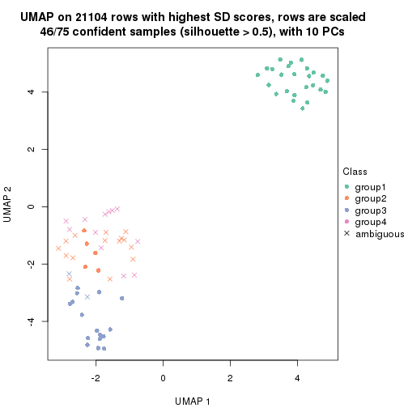
dimension_reduction(res, k = 6, method = "UMAP")
Following heatmap shows how subgroups are split when increasing k:
collect_classes(res)
Test correlation between subgroups and known annotations. If the known annotation is numeric, one-way ANOVA test is applied, and if the known annotation is discrete, chi-squared contingency table test is applied.
test_to_known_factors(res)
#> n other(p) k
#> SD:skmeans 75 0.4095 2
#> SD:skmeans 75 0.0762 3
#> SD:skmeans 51 0.2108 4
#> SD:skmeans 46 0.0180 5
#> SD:skmeans 39 0.1016 6
If matrix rows can be associated to genes, consider to use functional_enrichment(res,
...) to perform function enrichment for the signature genes. See this vignette for more detailed explanations.
The object with results only for a single top-value method and a single partition method can be extracted as:
res = res_list["SD", "pam"]
# you can also extract it by
# res = res_list["SD:pam"]
A summary of res and all the functions that can be applied to it:
res
#> A 'ConsensusPartition' object with k = 2, 3, 4, 5, 6.
#> On a matrix with 21104 rows and 75 columns.
#> Top rows (1000, 2000, 3000, 4000, 5000) are extracted by 'SD' method.
#> Subgroups are detected by 'pam' method.
#> Performed in total 1250 partitions by row resampling.
#> Best k for subgroups seems to be 2.
#>
#> Following methods can be applied to this 'ConsensusPartition' object:
#> [1] "cola_report" "collect_classes" "collect_plots"
#> [4] "collect_stats" "colnames" "compare_signatures"
#> [7] "consensus_heatmap" "dimension_reduction" "functional_enrichment"
#> [10] "get_anno_col" "get_anno" "get_classes"
#> [13] "get_consensus" "get_matrix" "get_membership"
#> [16] "get_param" "get_signatures" "get_stats"
#> [19] "is_best_k" "is_stable_k" "membership_heatmap"
#> [22] "ncol" "nrow" "plot_ecdf"
#> [25] "rownames" "select_partition_number" "show"
#> [28] "suggest_best_k" "test_to_known_factors"
collect_plots() function collects all the plots made from res for all k (number of partitions)
into one single page to provide an easy and fast comparison between different k.
collect_plots(res)
The plots are:
k and the heatmap of
predicted classes for each k.k.k.k.All the plots in panels can be made by individual functions and they are plotted later in this section.
select_partition_number() produces several plots showing different
statistics for choosing “optimized” k. There are following statistics:
k;k, the area increased is defined as \(A_k - A_{k-1}\).The detailed explanations of these statistics can be found in the cola vignette.
Generally speaking, lower PAC score, higher mean silhouette score or higher
concordance corresponds to better partition. Rand index and Jaccard index
measure how similar the current partition is compared to partition with k-1.
If they are too similar, we won't accept k is better than k-1.
select_partition_number(res)
The numeric values for all these statistics can be obtained by get_stats().
get_stats(res)
#> k 1-PAC mean_silhouette concordance area_increased Rand Jaccard
#> 2 2 0.418 0.752 0.877 0.2433 0.728 0.728
#> 3 3 0.301 0.685 0.855 0.2179 0.996 0.995
#> 4 4 0.328 0.646 0.838 0.0937 0.974 0.965
#> 5 5 0.318 0.621 0.826 0.0767 1.000 1.000
#> 6 6 0.307 0.606 0.828 0.0483 0.926 0.901
suggest_best_k() suggests the best \(k\) based on these statistics. The rules are as follows:
suggest_best_k(res)
#> [1] 2
Following shows the table of the partitions (You need to click the show/hide
code output link to see it). The membership matrix (columns with name p*)
is inferred by
clue::cl_consensus()
function with the SE method. Basically the value in the membership matrix
represents the probability to belong to a certain group. The finall class
label for an item is determined with the group with highest probability it
belongs to.
In get_classes() function, the entropy is calculated from the membership
matrix and the silhouette score is calculated from the consensus matrix.
cbind(get_classes(res, k = 2), get_membership(res, k = 2))
#> class entropy silhouette p1 p2
#> GSM15684 2 0.4022 0.840 0.080 0.920
#> GSM15685 2 0.0000 0.873 0.000 1.000
#> GSM15686 2 0.0672 0.872 0.008 0.992
#> GSM15687 1 0.9909 0.295 0.556 0.444
#> GSM15688 2 0.7602 0.404 0.220 0.780
#> GSM15689 2 0.9922 -0.368 0.448 0.552
#> GSM15690 2 0.0000 0.873 0.000 1.000
#> GSM15691 2 0.0376 0.871 0.004 0.996
#> GSM15692 1 0.9944 0.778 0.544 0.456
#> GSM15693 2 0.5059 0.813 0.112 0.888
#> GSM15694 2 0.4939 0.816 0.108 0.892
#> GSM15695 2 0.4939 0.816 0.108 0.892
#> GSM15696 2 0.2043 0.865 0.032 0.968
#> GSM15697 2 0.4690 0.823 0.100 0.900
#> GSM15698 2 0.4022 0.839 0.080 0.920
#> GSM15699 2 0.5059 0.813 0.112 0.888
#> GSM15700 2 0.0000 0.873 0.000 1.000
#> GSM15701 2 0.0000 0.873 0.000 1.000
#> GSM15702 2 0.0000 0.873 0.000 1.000
#> GSM15703 2 0.5059 0.813 0.112 0.888
#> GSM15704 2 0.0376 0.873 0.004 0.996
#> GSM15705 2 0.0376 0.873 0.004 0.996
#> GSM15706 2 0.4022 0.839 0.080 0.920
#> GSM15707 2 0.1414 0.869 0.020 0.980
#> GSM15708 2 0.0000 0.873 0.000 1.000
#> GSM15709 2 0.0000 0.873 0.000 1.000
#> GSM15710 2 0.2236 0.863 0.036 0.964
#> GSM15711 2 0.0000 0.873 0.000 1.000
#> GSM15712 2 0.0000 0.873 0.000 1.000
#> GSM15713 2 0.0376 0.873 0.004 0.996
#> GSM15714 2 0.0376 0.873 0.004 0.996
#> GSM15715 2 0.0000 0.873 0.000 1.000
#> GSM15716 2 0.4939 0.816 0.108 0.892
#> GSM15717 2 0.0000 0.873 0.000 1.000
#> GSM15718 2 0.8081 0.306 0.248 0.752
#> GSM15719 2 0.4815 0.820 0.104 0.896
#> GSM15720 1 0.9323 0.841 0.652 0.348
#> GSM15721 1 0.8955 0.836 0.688 0.312
#> GSM15722 2 0.9393 -0.285 0.356 0.644
#> GSM15723 2 0.9909 -0.607 0.444 0.556
#> GSM15724 2 0.7950 0.334 0.240 0.760
#> GSM15725 1 0.8955 0.836 0.688 0.312
#> GSM15726 1 0.8955 0.836 0.688 0.312
#> GSM15727 1 0.9881 0.722 0.564 0.436
#> GSM15728 1 0.9881 0.801 0.564 0.436
#> GSM15729 2 0.0000 0.873 0.000 1.000
#> GSM15730 2 0.0376 0.873 0.004 0.996
#> GSM15731 2 0.4939 0.816 0.108 0.892
#> GSM15732 2 0.0672 0.872 0.008 0.992
#> GSM15733 2 0.0000 0.873 0.000 1.000
#> GSM15734 2 0.4690 0.824 0.100 0.900
#> GSM15735 2 0.4939 0.816 0.108 0.892
#> GSM15736 2 0.0000 0.873 0.000 1.000
#> GSM15737 2 0.0000 0.873 0.000 1.000
#> GSM15738 2 0.0000 0.873 0.000 1.000
#> GSM15739 2 0.4690 0.824 0.100 0.900
#> GSM15740 2 0.4431 0.830 0.092 0.908
#> GSM15741 2 0.9460 -0.303 0.364 0.636
#> GSM15742 1 0.9608 0.837 0.616 0.384
#> GSM15743 1 0.9993 0.748 0.516 0.484
#> GSM15744 1 0.9881 0.802 0.564 0.436
#> GSM15745 1 0.8955 0.836 0.688 0.312
#> GSM15746 2 0.4690 0.757 0.100 0.900
#> GSM15747 2 0.0000 0.873 0.000 1.000
#> GSM15748 2 0.5059 0.813 0.112 0.888
#> GSM15749 2 0.5059 0.813 0.112 0.888
#> GSM15750 2 0.2948 0.855 0.052 0.948
#> GSM15751 2 0.0000 0.873 0.000 1.000
#> GSM15752 2 0.0000 0.873 0.000 1.000
#> GSM15753 2 0.0000 0.873 0.000 1.000
#> GSM15754 2 0.0000 0.873 0.000 1.000
#> GSM15755 2 0.0000 0.873 0.000 1.000
#> GSM15756 2 0.0000 0.873 0.000 1.000
#> GSM15757 2 0.0000 0.873 0.000 1.000
#> GSM15758 2 0.5059 0.813 0.112 0.888
cbind(get_classes(res, k = 3), get_membership(res, k = 3))
#> class entropy silhouette p1 p2 p3
#> GSM15684 2 0.3043 0.803 0.084 0.908 0.008
#> GSM15685 2 0.0000 0.838 0.000 1.000 0.000
#> GSM15686 2 0.0424 0.837 0.008 0.992 0.000
#> GSM15687 3 0.7923 0.000 0.156 0.180 0.664
#> GSM15688 2 0.5726 0.424 0.216 0.760 0.024
#> GSM15689 2 0.8165 -0.271 0.416 0.512 0.072
#> GSM15690 2 0.3213 0.742 0.008 0.900 0.092
#> GSM15691 2 0.0424 0.837 0.008 0.992 0.000
#> GSM15692 1 0.7139 0.205 0.688 0.244 0.068
#> GSM15693 2 0.7750 0.504 0.140 0.676 0.184
#> GSM15694 2 0.4033 0.757 0.136 0.856 0.008
#> GSM15695 2 0.4033 0.757 0.136 0.856 0.008
#> GSM15696 2 0.1711 0.829 0.032 0.960 0.008
#> GSM15697 2 0.3715 0.767 0.128 0.868 0.004
#> GSM15698 2 0.3532 0.783 0.108 0.884 0.008
#> GSM15699 2 0.4099 0.754 0.140 0.852 0.008
#> GSM15700 2 0.0000 0.838 0.000 1.000 0.000
#> GSM15701 2 0.0000 0.838 0.000 1.000 0.000
#> GSM15702 2 0.0000 0.838 0.000 1.000 0.000
#> GSM15703 2 0.7750 0.504 0.140 0.676 0.184
#> GSM15704 2 0.0237 0.838 0.004 0.996 0.000
#> GSM15705 2 0.0475 0.837 0.004 0.992 0.004
#> GSM15706 2 0.2711 0.802 0.088 0.912 0.000
#> GSM15707 2 0.1315 0.833 0.020 0.972 0.008
#> GSM15708 2 0.0000 0.838 0.000 1.000 0.000
#> GSM15709 2 0.0000 0.838 0.000 1.000 0.000
#> GSM15710 2 0.1529 0.827 0.040 0.960 0.000
#> GSM15711 2 0.0000 0.838 0.000 1.000 0.000
#> GSM15712 2 0.0000 0.838 0.000 1.000 0.000
#> GSM15713 2 0.0237 0.838 0.004 0.996 0.000
#> GSM15714 2 0.0237 0.838 0.004 0.996 0.000
#> GSM15715 2 0.0000 0.838 0.000 1.000 0.000
#> GSM15716 2 0.4033 0.757 0.136 0.856 0.008
#> GSM15717 2 0.0747 0.832 0.000 0.984 0.016
#> GSM15718 2 0.5420 0.419 0.240 0.752 0.008
#> GSM15719 2 0.4277 0.757 0.132 0.852 0.016
#> GSM15720 1 0.5810 0.775 0.664 0.336 0.000
#> GSM15721 1 0.5431 0.761 0.716 0.284 0.000
#> GSM15722 2 0.6629 -0.238 0.360 0.624 0.016
#> GSM15723 2 0.6252 -0.516 0.444 0.556 0.000
#> GSM15724 2 0.5201 0.442 0.236 0.760 0.004
#> GSM15725 1 0.5431 0.761 0.716 0.284 0.000
#> GSM15726 1 0.5431 0.761 0.716 0.284 0.000
#> GSM15727 1 0.6373 0.658 0.588 0.408 0.004
#> GSM15728 1 0.6783 0.687 0.588 0.396 0.016
#> GSM15729 2 0.0000 0.838 0.000 1.000 0.000
#> GSM15730 2 0.0237 0.838 0.004 0.996 0.000
#> GSM15731 2 0.6583 0.640 0.136 0.756 0.108
#> GSM15732 2 0.3213 0.767 0.008 0.900 0.092
#> GSM15733 2 0.0000 0.838 0.000 1.000 0.000
#> GSM15734 2 0.3482 0.770 0.128 0.872 0.000
#> GSM15735 2 0.4033 0.757 0.136 0.856 0.008
#> GSM15736 2 0.0000 0.838 0.000 1.000 0.000
#> GSM15737 2 0.0000 0.838 0.000 1.000 0.000
#> GSM15738 2 0.0000 0.838 0.000 1.000 0.000
#> GSM15739 2 0.3715 0.768 0.128 0.868 0.004
#> GSM15740 2 0.3267 0.781 0.116 0.884 0.000
#> GSM15741 2 0.7775 -0.172 0.304 0.620 0.076
#> GSM15742 1 0.7023 0.736 0.624 0.344 0.032
#> GSM15743 1 0.6823 0.660 0.504 0.484 0.012
#> GSM15744 1 0.6235 0.707 0.564 0.436 0.000
#> GSM15745 1 0.5986 0.759 0.704 0.284 0.012
#> GSM15746 2 0.3607 0.731 0.112 0.880 0.008
#> GSM15747 2 0.0000 0.838 0.000 1.000 0.000
#> GSM15748 2 0.7750 0.504 0.140 0.676 0.184
#> GSM15749 2 0.7750 0.504 0.140 0.676 0.184
#> GSM15750 2 0.2590 0.809 0.072 0.924 0.004
#> GSM15751 2 0.0000 0.838 0.000 1.000 0.000
#> GSM15752 2 0.0000 0.838 0.000 1.000 0.000
#> GSM15753 2 0.0000 0.838 0.000 1.000 0.000
#> GSM15754 2 0.0000 0.838 0.000 1.000 0.000
#> GSM15755 2 0.0000 0.838 0.000 1.000 0.000
#> GSM15756 2 0.0000 0.838 0.000 1.000 0.000
#> GSM15757 2 0.0000 0.838 0.000 1.000 0.000
#> GSM15758 2 0.7750 0.504 0.140 0.676 0.184
cbind(get_classes(res, k = 4), get_membership(res, k = 4))
#> class entropy silhouette p1 p2 p3 p4
#> GSM15684 2 0.2401 0.7872 0.004 0.904 0.092 NA
#> GSM15685 2 0.0000 0.8206 0.000 1.000 0.000 NA
#> GSM15686 2 0.0804 0.8181 0.000 0.980 0.008 NA
#> GSM15687 3 0.6838 0.0000 0.072 0.032 0.624 NA
#> GSM15688 2 0.5548 0.4369 0.168 0.740 0.008 NA
#> GSM15689 2 0.8420 -0.2253 0.264 0.496 0.188 NA
#> GSM15690 2 0.4454 0.3210 0.000 0.692 0.000 NA
#> GSM15691 2 0.0844 0.8156 0.004 0.980 0.004 NA
#> GSM15692 1 0.7187 -0.0552 0.656 0.120 0.060 NA
#> GSM15693 2 0.4713 0.4584 0.000 0.640 0.360 NA
#> GSM15694 2 0.3123 0.7377 0.000 0.844 0.156 NA
#> GSM15695 2 0.3123 0.7377 0.000 0.844 0.156 NA
#> GSM15696 2 0.1211 0.8126 0.000 0.960 0.040 NA
#> GSM15697 2 0.2973 0.7474 0.000 0.856 0.144 NA
#> GSM15698 2 0.2589 0.7725 0.000 0.884 0.116 NA
#> GSM15699 2 0.3219 0.7323 0.000 0.836 0.164 NA
#> GSM15700 2 0.0000 0.8206 0.000 1.000 0.000 NA
#> GSM15701 2 0.0000 0.8206 0.000 1.000 0.000 NA
#> GSM15702 2 0.0000 0.8206 0.000 1.000 0.000 NA
#> GSM15703 2 0.4713 0.4584 0.000 0.640 0.360 NA
#> GSM15704 2 0.0188 0.8203 0.000 0.996 0.004 NA
#> GSM15705 2 0.0469 0.8193 0.000 0.988 0.012 NA
#> GSM15706 2 0.2281 0.7842 0.000 0.904 0.096 NA
#> GSM15707 2 0.1022 0.8153 0.000 0.968 0.032 NA
#> GSM15708 2 0.0000 0.8206 0.000 1.000 0.000 NA
#> GSM15709 2 0.0000 0.8206 0.000 1.000 0.000 NA
#> GSM15710 2 0.1474 0.8062 0.000 0.948 0.052 NA
#> GSM15711 2 0.0000 0.8206 0.000 1.000 0.000 NA
#> GSM15712 2 0.0000 0.8206 0.000 1.000 0.000 NA
#> GSM15713 2 0.0188 0.8203 0.000 0.996 0.004 NA
#> GSM15714 2 0.0188 0.8203 0.000 0.996 0.004 NA
#> GSM15715 2 0.0000 0.8206 0.000 1.000 0.000 NA
#> GSM15716 2 0.3123 0.7377 0.000 0.844 0.156 NA
#> GSM15717 2 0.0592 0.8156 0.000 0.984 0.016 NA
#> GSM15718 2 0.4576 0.4635 0.232 0.748 0.020 NA
#> GSM15719 2 0.3172 0.7378 0.000 0.840 0.160 NA
#> GSM15720 1 0.6407 0.7691 0.584 0.332 0.084 NA
#> GSM15721 1 0.6851 0.7796 0.584 0.268 0.148 NA
#> GSM15722 2 0.6659 -0.2885 0.348 0.568 0.008 NA
#> GSM15723 2 0.5459 -0.3943 0.432 0.552 0.000 NA
#> GSM15724 2 0.4408 0.4809 0.232 0.756 0.008 NA
#> GSM15725 1 0.6851 0.7796 0.584 0.268 0.148 NA
#> GSM15726 1 0.6851 0.7796 0.584 0.268 0.148 NA
#> GSM15727 1 0.7737 0.5993 0.444 0.396 0.144 NA
#> GSM15728 1 0.6282 0.5879 0.624 0.304 0.008 NA
#> GSM15729 2 0.0000 0.8206 0.000 1.000 0.000 NA
#> GSM15730 2 0.0188 0.8203 0.000 0.996 0.004 NA
#> GSM15731 2 0.4193 0.6133 0.000 0.732 0.268 NA
#> GSM15732 2 0.2469 0.7505 0.000 0.892 0.108 NA
#> GSM15733 2 0.0000 0.8206 0.000 1.000 0.000 NA
#> GSM15734 2 0.2921 0.7505 0.000 0.860 0.140 NA
#> GSM15735 2 0.3123 0.7377 0.000 0.844 0.156 NA
#> GSM15736 2 0.0000 0.8206 0.000 1.000 0.000 NA
#> GSM15737 2 0.0000 0.8206 0.000 1.000 0.000 NA
#> GSM15738 2 0.0000 0.8206 0.000 1.000 0.000 NA
#> GSM15739 2 0.2973 0.7487 0.000 0.856 0.144 NA
#> GSM15740 2 0.2760 0.7605 0.000 0.872 0.128 NA
#> GSM15741 2 0.6919 -0.0489 0.276 0.612 0.088 NA
#> GSM15742 1 0.8426 0.6596 0.472 0.292 0.044 NA
#> GSM15743 2 0.6442 -0.5968 0.460 0.480 0.004 NA
#> GSM15744 1 0.4925 0.6702 0.572 0.428 0.000 NA
#> GSM15745 1 0.7746 0.7742 0.552 0.268 0.148 NA
#> GSM15746 2 0.3460 0.7287 0.084 0.876 0.016 NA
#> GSM15747 2 0.0000 0.8206 0.000 1.000 0.000 NA
#> GSM15748 2 0.4713 0.4584 0.000 0.640 0.360 NA
#> GSM15749 2 0.4713 0.4584 0.000 0.640 0.360 NA
#> GSM15750 2 0.2149 0.7887 0.000 0.912 0.088 NA
#> GSM15751 2 0.0000 0.8206 0.000 1.000 0.000 NA
#> GSM15752 2 0.0000 0.8206 0.000 1.000 0.000 NA
#> GSM15753 2 0.0000 0.8206 0.000 1.000 0.000 NA
#> GSM15754 2 0.0000 0.8206 0.000 1.000 0.000 NA
#> GSM15755 2 0.0000 0.8206 0.000 1.000 0.000 NA
#> GSM15756 2 0.0000 0.8206 0.000 1.000 0.000 NA
#> GSM15757 2 0.0000 0.8206 0.000 1.000 0.000 NA
#> GSM15758 2 0.4713 0.4584 0.000 0.640 0.360 NA
cbind(get_classes(res, k = 5), get_membership(res, k = 5))
#> class entropy silhouette p1 p2 p3 p4 p5
#> GSM15684 2 0.2407 0.78307 0.012 0.896 0.088 0.004 NA
#> GSM15685 2 0.0000 0.81191 0.000 1.000 0.000 0.000 NA
#> GSM15686 2 0.1877 0.78429 0.004 0.932 0.008 0.004 NA
#> GSM15687 3 0.4697 0.00000 0.008 0.012 0.620 0.000 NA
#> GSM15688 2 0.5532 0.42293 0.088 0.708 0.004 0.168 NA
#> GSM15689 2 0.7462 -0.18268 0.264 0.480 0.188 0.068 NA
#> GSM15690 2 0.4307 -0.16462 0.000 0.500 0.000 0.500 NA
#> GSM15691 2 0.0889 0.80819 0.004 0.976 0.004 0.012 NA
#> GSM15692 1 0.8664 -0.14801 0.416 0.072 0.060 0.240 NA
#> GSM15693 2 0.4380 0.44452 0.008 0.616 0.376 0.000 NA
#> GSM15694 2 0.2971 0.73260 0.008 0.836 0.156 0.000 NA
#> GSM15695 2 0.2971 0.73260 0.008 0.836 0.156 0.000 NA
#> GSM15696 2 0.1124 0.80726 0.004 0.960 0.036 0.000 NA
#> GSM15697 2 0.3001 0.74235 0.008 0.844 0.144 0.004 NA
#> GSM15698 2 0.2513 0.76602 0.008 0.876 0.116 0.000 NA
#> GSM15699 2 0.3093 0.72463 0.008 0.824 0.168 0.000 NA
#> GSM15700 2 0.0162 0.81208 0.000 0.996 0.000 0.004 NA
#> GSM15701 2 0.0000 0.81191 0.000 1.000 0.000 0.000 NA
#> GSM15702 2 0.0162 0.81208 0.000 0.996 0.000 0.004 NA
#> GSM15703 2 0.4380 0.44452 0.008 0.616 0.376 0.000 NA
#> GSM15704 2 0.0324 0.81176 0.004 0.992 0.004 0.000 NA
#> GSM15705 2 0.0566 0.81219 0.004 0.984 0.012 0.000 NA
#> GSM15706 2 0.2193 0.77977 0.008 0.900 0.092 0.000 NA
#> GSM15707 2 0.1041 0.80831 0.004 0.964 0.032 0.000 NA
#> GSM15708 2 0.0290 0.81197 0.000 0.992 0.000 0.008 NA
#> GSM15709 2 0.0000 0.81191 0.000 1.000 0.000 0.000 NA
#> GSM15710 2 0.1571 0.79672 0.004 0.936 0.060 0.000 NA
#> GSM15711 2 0.0162 0.81208 0.000 0.996 0.000 0.004 NA
#> GSM15712 2 0.0162 0.81208 0.000 0.996 0.000 0.004 NA
#> GSM15713 2 0.0324 0.81176 0.004 0.992 0.004 0.000 NA
#> GSM15714 2 0.0324 0.81176 0.004 0.992 0.004 0.000 NA
#> GSM15715 2 0.0290 0.81197 0.000 0.992 0.000 0.008 NA
#> GSM15716 2 0.2971 0.73260 0.008 0.836 0.156 0.000 NA
#> GSM15717 2 0.0771 0.80898 0.004 0.976 0.020 0.000 NA
#> GSM15718 2 0.3999 0.49046 0.240 0.740 0.020 0.000 NA
#> GSM15719 2 0.3013 0.73283 0.008 0.832 0.160 0.000 NA
#> GSM15720 1 0.5441 0.71671 0.596 0.324 0.080 0.000 NA
#> GSM15721 1 0.5841 0.73725 0.596 0.256 0.148 0.000 NA
#> GSM15722 2 0.7753 -0.46184 0.300 0.452 0.008 0.168 NA
#> GSM15723 2 0.5272 -0.28798 0.396 0.552 0.000 0.052 NA
#> GSM15724 2 0.3676 0.52049 0.232 0.760 0.004 0.004 NA
#> GSM15725 1 0.5841 0.73725 0.596 0.256 0.148 0.000 NA
#> GSM15726 1 0.5841 0.73725 0.596 0.256 0.148 0.000 NA
#> GSM15727 1 0.6784 0.53390 0.448 0.388 0.140 0.024 NA
#> GSM15728 1 0.6179 0.33118 0.648 0.200 0.000 0.072 NA
#> GSM15729 2 0.0162 0.81208 0.000 0.996 0.000 0.004 NA
#> GSM15730 2 0.0162 0.81212 0.000 0.996 0.004 0.000 NA
#> GSM15731 2 0.3885 0.61944 0.008 0.724 0.268 0.000 NA
#> GSM15732 2 0.2488 0.73305 0.000 0.872 0.124 0.004 NA
#> GSM15733 2 0.0000 0.81191 0.000 1.000 0.000 0.000 NA
#> GSM15734 2 0.2719 0.74470 0.004 0.852 0.144 0.000 NA
#> GSM15735 2 0.2971 0.73260 0.008 0.836 0.156 0.000 NA
#> GSM15736 2 0.0290 0.81197 0.000 0.992 0.000 0.008 NA
#> GSM15737 2 0.0290 0.81197 0.000 0.992 0.000 0.008 NA
#> GSM15738 2 0.0290 0.81197 0.000 0.992 0.000 0.008 NA
#> GSM15739 2 0.3001 0.74305 0.008 0.844 0.144 0.004 NA
#> GSM15740 2 0.2583 0.75436 0.004 0.864 0.132 0.000 NA
#> GSM15741 2 0.6279 0.00825 0.264 0.596 0.108 0.032 NA
#> GSM15742 1 0.7855 0.29599 0.520 0.164 0.024 0.088 NA
#> GSM15743 2 0.5746 -0.52698 0.452 0.472 0.004 0.072 NA
#> GSM15744 1 0.4235 0.59939 0.576 0.424 0.000 0.000 NA
#> GSM15745 1 0.6616 0.73129 0.564 0.256 0.148 0.032 NA
#> GSM15746 2 0.3232 0.71768 0.084 0.864 0.016 0.036 NA
#> GSM15747 2 0.0290 0.81197 0.000 0.992 0.000 0.008 NA
#> GSM15748 2 0.4380 0.44452 0.008 0.616 0.376 0.000 NA
#> GSM15749 2 0.4380 0.44452 0.008 0.616 0.376 0.000 NA
#> GSM15750 2 0.1908 0.78308 0.000 0.908 0.092 0.000 NA
#> GSM15751 2 0.0290 0.81197 0.000 0.992 0.000 0.008 NA
#> GSM15752 2 0.0162 0.81217 0.000 0.996 0.000 0.004 NA
#> GSM15753 2 0.0162 0.81208 0.000 0.996 0.000 0.004 NA
#> GSM15754 2 0.0000 0.81191 0.000 1.000 0.000 0.000 NA
#> GSM15755 2 0.0290 0.81197 0.000 0.992 0.000 0.008 NA
#> GSM15756 2 0.0290 0.81197 0.000 0.992 0.000 0.008 NA
#> GSM15757 2 0.0290 0.81197 0.000 0.992 0.000 0.008 NA
#> GSM15758 2 0.4380 0.44452 0.008 0.616 0.376 0.000 NA
cbind(get_classes(res, k = 6), get_membership(res, k = 6))
#> class entropy silhouette p1 p2 p3 p4 p5 p6
#> GSM15684 2 0.2144 0.804 0.092 0.896 0.004 0.000 0.004 0.004
#> GSM15685 2 0.0000 0.834 0.000 1.000 0.000 0.000 0.000 0.000
#> GSM15686 2 0.2875 0.742 0.008 0.880 0.008 0.024 0.012 0.068
#> GSM15687 3 0.0000 0.000 0.000 0.000 1.000 0.000 0.000 0.000
#> GSM15688 2 0.4808 0.236 0.048 0.656 0.004 0.280 0.004 0.008
#> GSM15689 2 0.5870 -0.223 0.408 0.480 0.004 0.068 0.000 0.040
#> GSM15690 5 0.5644 0.000 0.000 0.288 0.000 0.000 0.524 0.188
#> GSM15691 2 0.0912 0.828 0.008 0.972 0.004 0.012 0.004 0.000
#> GSM15692 4 0.5103 0.000 0.304 0.028 0.000 0.616 0.000 0.052
#> GSM15693 2 0.5299 0.435 0.156 0.612 0.004 0.000 0.000 0.228
#> GSM15694 2 0.2700 0.751 0.156 0.836 0.004 0.000 0.000 0.004
#> GSM15695 2 0.2700 0.751 0.156 0.836 0.004 0.000 0.000 0.004
#> GSM15696 2 0.1080 0.829 0.032 0.960 0.004 0.000 0.000 0.004
#> GSM15697 2 0.2624 0.761 0.148 0.844 0.004 0.000 0.004 0.000
#> GSM15698 2 0.2288 0.786 0.116 0.876 0.004 0.000 0.000 0.004
#> GSM15699 2 0.3000 0.742 0.156 0.824 0.004 0.000 0.000 0.016
#> GSM15700 2 0.0146 0.834 0.000 0.996 0.000 0.000 0.004 0.000
#> GSM15701 2 0.0000 0.834 0.000 1.000 0.000 0.000 0.000 0.000
#> GSM15702 2 0.0146 0.834 0.000 0.996 0.000 0.000 0.004 0.000
#> GSM15703 2 0.5299 0.435 0.156 0.612 0.004 0.000 0.000 0.228
#> GSM15704 2 0.0260 0.834 0.008 0.992 0.000 0.000 0.000 0.000
#> GSM15705 2 0.0520 0.834 0.008 0.984 0.000 0.000 0.000 0.008
#> GSM15706 2 0.1814 0.800 0.100 0.900 0.000 0.000 0.000 0.000
#> GSM15707 2 0.1003 0.830 0.028 0.964 0.004 0.000 0.000 0.004
#> GSM15708 2 0.0260 0.834 0.000 0.992 0.000 0.000 0.008 0.000
#> GSM15709 2 0.0000 0.834 0.000 1.000 0.000 0.000 0.000 0.000
#> GSM15710 2 0.1327 0.818 0.064 0.936 0.000 0.000 0.000 0.000
#> GSM15711 2 0.0146 0.834 0.000 0.996 0.000 0.000 0.004 0.000
#> GSM15712 2 0.0146 0.834 0.000 0.996 0.000 0.000 0.004 0.000
#> GSM15713 2 0.0260 0.834 0.008 0.992 0.000 0.000 0.000 0.000
#> GSM15714 2 0.0260 0.834 0.008 0.992 0.000 0.000 0.000 0.000
#> GSM15715 2 0.0260 0.834 0.000 0.992 0.000 0.000 0.008 0.000
#> GSM15716 2 0.2700 0.751 0.156 0.836 0.004 0.000 0.000 0.004
#> GSM15717 2 0.0692 0.830 0.004 0.976 0.000 0.000 0.000 0.020
#> GSM15718 2 0.3648 0.482 0.240 0.740 0.004 0.000 0.000 0.016
#> GSM15719 2 0.2872 0.751 0.152 0.832 0.004 0.000 0.000 0.012
#> GSM15720 1 0.3515 0.457 0.676 0.324 0.000 0.000 0.000 0.000
#> GSM15721 1 0.3175 0.525 0.744 0.256 0.000 0.000 0.000 0.000
#> GSM15722 6 0.7719 0.000 0.204 0.296 0.000 0.040 0.080 0.380
#> GSM15723 2 0.4892 -0.316 0.384 0.560 0.000 0.048 0.008 0.000
#> GSM15724 2 0.3302 0.515 0.232 0.760 0.004 0.004 0.000 0.000
#> GSM15725 1 0.3175 0.525 0.744 0.256 0.000 0.000 0.000 0.000
#> GSM15726 1 0.3175 0.525 0.744 0.256 0.000 0.000 0.000 0.000
#> GSM15727 1 0.4444 0.342 0.576 0.396 0.004 0.024 0.000 0.000
#> GSM15728 1 0.6366 -0.508 0.628 0.096 0.000 0.120 0.032 0.124
#> GSM15729 2 0.0146 0.834 0.000 0.996 0.000 0.000 0.004 0.000
#> GSM15730 2 0.0146 0.834 0.004 0.996 0.000 0.000 0.000 0.000
#> GSM15731 2 0.4440 0.630 0.156 0.724 0.004 0.000 0.000 0.116
#> GSM15732 2 0.2333 0.749 0.004 0.872 0.000 0.000 0.004 0.120
#> GSM15733 2 0.0000 0.834 0.000 1.000 0.000 0.000 0.000 0.000
#> GSM15734 2 0.2340 0.764 0.148 0.852 0.000 0.000 0.000 0.000
#> GSM15735 2 0.2700 0.751 0.156 0.836 0.004 0.000 0.000 0.004
#> GSM15736 2 0.0260 0.834 0.000 0.992 0.000 0.000 0.008 0.000
#> GSM15737 2 0.0260 0.834 0.000 0.992 0.000 0.000 0.008 0.000
#> GSM15738 2 0.0260 0.834 0.000 0.992 0.000 0.000 0.008 0.000
#> GSM15739 2 0.2624 0.762 0.148 0.844 0.000 0.000 0.004 0.004
#> GSM15740 2 0.2219 0.774 0.136 0.864 0.000 0.000 0.000 0.000
#> GSM15741 2 0.5705 -0.039 0.256 0.596 0.000 0.036 0.000 0.112
#> GSM15742 1 0.6810 -0.526 0.428 0.076 0.004 0.136 0.356 0.000
#> GSM15743 1 0.5034 0.244 0.464 0.464 0.000 0.072 0.000 0.000
#> GSM15744 1 0.3804 0.280 0.576 0.424 0.000 0.000 0.000 0.000
#> GSM15745 1 0.3911 0.514 0.712 0.256 0.000 0.032 0.000 0.000
#> GSM15746 2 0.2752 0.732 0.096 0.864 0.004 0.036 0.000 0.000
#> GSM15747 2 0.0260 0.834 0.000 0.992 0.000 0.000 0.008 0.000
#> GSM15748 2 0.5299 0.435 0.156 0.612 0.004 0.000 0.000 0.228
#> GSM15749 2 0.5299 0.435 0.156 0.612 0.004 0.000 0.000 0.228
#> GSM15750 2 0.1806 0.804 0.088 0.908 0.000 0.000 0.000 0.004
#> GSM15751 2 0.0260 0.834 0.000 0.992 0.000 0.000 0.008 0.000
#> GSM15752 2 0.0146 0.834 0.000 0.996 0.000 0.000 0.004 0.000
#> GSM15753 2 0.0146 0.834 0.000 0.996 0.000 0.000 0.004 0.000
#> GSM15754 2 0.0000 0.834 0.000 1.000 0.000 0.000 0.000 0.000
#> GSM15755 2 0.0260 0.834 0.000 0.992 0.000 0.000 0.008 0.000
#> GSM15756 2 0.0260 0.834 0.000 0.992 0.000 0.000 0.008 0.000
#> GSM15757 2 0.0260 0.834 0.000 0.992 0.000 0.000 0.008 0.000
#> GSM15758 2 0.5299 0.435 0.156 0.612 0.004 0.000 0.000 0.228
Heatmaps for the consensus matrix. It visualizes the probability of two samples to be in a same group.
consensus_heatmap(res, k = 2)
consensus_heatmap(res, k = 3)
consensus_heatmap(res, k = 4)
consensus_heatmap(res, k = 5)
consensus_heatmap(res, k = 6)
Heatmaps for the membership of samples in all partitions to see how consistent they are:
membership_heatmap(res, k = 2)
membership_heatmap(res, k = 3)
membership_heatmap(res, k = 4)
membership_heatmap(res, k = 5)
membership_heatmap(res, k = 6)
As soon as we have had the classes for columns, we can look for signatures which are significantly different between classes which can be candidate marks for certain classes. Following are the heatmaps for signatures.
Signature heatmaps where rows are scaled:
get_signatures(res, k = 2)
get_signatures(res, k = 3)
get_signatures(res, k = 4)
get_signatures(res, k = 5)
get_signatures(res, k = 6)
Signature heatmaps where rows are not scaled:
get_signatures(res, k = 2, scale_rows = FALSE)
get_signatures(res, k = 3, scale_rows = FALSE)
get_signatures(res, k = 4, scale_rows = FALSE)
get_signatures(res, k = 5, scale_rows = FALSE)
get_signatures(res, k = 6, scale_rows = FALSE)

Compare the overlap of signatures from different k:
compare_signatures(res)
get_signature() returns a data frame invisibly. TO get the list of signatures, the function
call should be assigned to a variable explicitly. In following code, if plot argument is set
to FALSE, no heatmap is plotted while only the differential analysis is performed.
# code only for demonstration
tb = get_signature(res, k = ..., plot = FALSE)
An example of the output of tb is:
#> which_row fdr mean_1 mean_2 scaled_mean_1 scaled_mean_2 km
#> 1 38 0.042760348 8.373488 9.131774 -0.5533452 0.5164555 1
#> 2 40 0.018707592 7.106213 8.469186 -0.6173731 0.5762149 1
#> 3 55 0.019134737 10.221463 11.207825 -0.6159697 0.5749050 1
#> 4 59 0.006059896 5.921854 7.869574 -0.6899429 0.6439467 1
#> 5 60 0.018055526 8.928898 10.211722 -0.6204761 0.5791110 1
#> 6 98 0.009384629 15.714769 14.887706 0.6635654 -0.6193277 2
...
The columns in tb are:
which_row: row indices corresponding to the input matrix.fdr: FDR for the differential test. mean_x: The mean value in group x.scaled_mean_x: The mean value in group x after rows are scaled.km: Row groups if k-means clustering is applied to rows.UMAP plot which shows how samples are separated.
dimension_reduction(res, k = 2, method = "UMAP")
dimension_reduction(res, k = 3, method = "UMAP")
dimension_reduction(res, k = 4, method = "UMAP")
dimension_reduction(res, k = 5, method = "UMAP")
dimension_reduction(res, k = 6, method = "UMAP")
Following heatmap shows how subgroups are split when increasing k:
collect_classes(res)
Test correlation between subgroups and known annotations. If the known annotation is numeric, one-way ANOVA test is applied, and if the known annotation is discrete, chi-squared contingency table test is applied.
test_to_known_factors(res)
#> n other(p) k
#> SD:pam 67 0.02085 2
#> SD:pam 66 0.00588 3
#> SD:pam 59 0.00913 4
#> SD:pam 58 0.02261 5
#> SD:pam 55 0.08696 6
If matrix rows can be associated to genes, consider to use functional_enrichment(res,
...) to perform function enrichment for the signature genes. See this vignette for more detailed explanations.
The object with results only for a single top-value method and a single partition method can be extracted as:
res = res_list["SD", "mclust"]
# you can also extract it by
# res = res_list["SD:mclust"]
A summary of res and all the functions that can be applied to it:
res
#> A 'ConsensusPartition' object with k = 2, 3, 4, 5, 6.
#> On a matrix with 21104 rows and 75 columns.
#> Top rows (1000, 2000, 3000, 4000, 5000) are extracted by 'SD' method.
#> Subgroups are detected by 'mclust' method.
#> Performed in total 1250 partitions by row resampling.
#> Best k for subgroups seems to be 2.
#>
#> Following methods can be applied to this 'ConsensusPartition' object:
#> [1] "cola_report" "collect_classes" "collect_plots"
#> [4] "collect_stats" "colnames" "compare_signatures"
#> [7] "consensus_heatmap" "dimension_reduction" "functional_enrichment"
#> [10] "get_anno_col" "get_anno" "get_classes"
#> [13] "get_consensus" "get_matrix" "get_membership"
#> [16] "get_param" "get_signatures" "get_stats"
#> [19] "is_best_k" "is_stable_k" "membership_heatmap"
#> [22] "ncol" "nrow" "plot_ecdf"
#> [25] "rownames" "select_partition_number" "show"
#> [28] "suggest_best_k" "test_to_known_factors"
collect_plots() function collects all the plots made from res for all k (number of partitions)
into one single page to provide an easy and fast comparison between different k.
collect_plots(res)
The plots are:
k and the heatmap of
predicted classes for each k.k.k.k.All the plots in panels can be made by individual functions and they are plotted later in this section.
select_partition_number() produces several plots showing different
statistics for choosing “optimized” k. There are following statistics:
k;k, the area increased is defined as \(A_k - A_{k-1}\).The detailed explanations of these statistics can be found in the cola vignette.
Generally speaking, lower PAC score, higher mean silhouette score or higher
concordance corresponds to better partition. Rand index and Jaccard index
measure how similar the current partition is compared to partition with k-1.
If they are too similar, we won't accept k is better than k-1.
select_partition_number(res)
The numeric values for all these statistics can be obtained by get_stats().
get_stats(res)
#> k 1-PAC mean_silhouette concordance area_increased Rand Jaccard
#> 2 2 1.000 1.000 1.000 0.4510 0.550 0.550
#> 3 3 0.792 0.926 0.938 0.4045 0.811 0.656
#> 4 4 0.754 0.786 0.815 0.1296 0.949 0.865
#> 5 5 0.781 0.835 0.910 0.0654 0.872 0.636
#> 6 6 0.701 0.720 0.819 0.0512 0.968 0.864
suggest_best_k() suggests the best \(k\) based on these statistics. The rules are as follows:
suggest_best_k(res)
#> [1] 2
Following shows the table of the partitions (You need to click the show/hide
code output link to see it). The membership matrix (columns with name p*)
is inferred by
clue::cl_consensus()
function with the SE method. Basically the value in the membership matrix
represents the probability to belong to a certain group. The finall class
label for an item is determined with the group with highest probability it
belongs to.
In get_classes() function, the entropy is calculated from the membership
matrix and the silhouette score is calculated from the consensus matrix.
cbind(get_classes(res, k = 2), get_membership(res, k = 2))
#> class entropy silhouette p1 p2
#> GSM15684 1 0 1 1 0
#> GSM15685 1 0 1 1 0
#> GSM15686 1 0 1 1 0
#> GSM15687 1 0 1 1 0
#> GSM15688 1 0 1 1 0
#> GSM15689 1 0 1 1 0
#> GSM15690 1 0 1 1 0
#> GSM15691 1 0 1 1 0
#> GSM15692 1 0 1 1 0
#> GSM15693 2 0 1 0 1
#> GSM15694 2 0 1 0 1
#> GSM15695 2 0 1 0 1
#> GSM15696 2 0 1 0 1
#> GSM15697 2 0 1 0 1
#> GSM15698 2 0 1 0 1
#> GSM15699 2 0 1 0 1
#> GSM15700 2 0 1 0 1
#> GSM15701 2 0 1 0 1
#> GSM15702 2 0 1 0 1
#> GSM15703 2 0 1 0 1
#> GSM15704 2 0 1 0 1
#> GSM15705 2 0 1 0 1
#> GSM15706 2 0 1 0 1
#> GSM15707 2 0 1 0 1
#> GSM15708 2 0 1 0 1
#> GSM15709 2 0 1 0 1
#> GSM15710 2 0 1 0 1
#> GSM15711 2 0 1 0 1
#> GSM15712 2 0 1 0 1
#> GSM15713 2 0 1 0 1
#> GSM15714 2 0 1 0 1
#> GSM15715 2 0 1 0 1
#> GSM15716 2 0 1 0 1
#> GSM15717 2 0 1 0 1
#> GSM15718 1 0 1 1 0
#> GSM15719 2 0 1 0 1
#> GSM15720 1 0 1 1 0
#> GSM15721 1 0 1 1 0
#> GSM15722 1 0 1 1 0
#> GSM15723 1 0 1 1 0
#> GSM15724 1 0 1 1 0
#> GSM15725 1 0 1 1 0
#> GSM15726 1 0 1 1 0
#> GSM15727 1 0 1 1 0
#> GSM15728 1 0 1 1 0
#> GSM15729 2 0 1 0 1
#> GSM15730 2 0 1 0 1
#> GSM15731 2 0 1 0 1
#> GSM15732 2 0 1 0 1
#> GSM15733 2 0 1 0 1
#> GSM15734 2 0 1 0 1
#> GSM15735 2 0 1 0 1
#> GSM15736 2 0 1 0 1
#> GSM15737 2 0 1 0 1
#> GSM15738 2 0 1 0 1
#> GSM15739 2 0 1 0 1
#> GSM15740 2 0 1 0 1
#> GSM15741 1 0 1 1 0
#> GSM15742 1 0 1 1 0
#> GSM15743 1 0 1 1 0
#> GSM15744 1 0 1 1 0
#> GSM15745 1 0 1 1 0
#> GSM15746 1 0 1 1 0
#> GSM15747 2 0 1 0 1
#> GSM15748 2 0 1 0 1
#> GSM15749 2 0 1 0 1
#> GSM15750 2 0 1 0 1
#> GSM15751 2 0 1 0 1
#> GSM15752 2 0 1 0 1
#> GSM15753 2 0 1 0 1
#> GSM15754 2 0 1 0 1
#> GSM15755 2 0 1 0 1
#> GSM15756 2 0 1 0 1
#> GSM15757 2 0 1 0 1
#> GSM15758 2 0 1 0 1
cbind(get_classes(res, k = 3), get_membership(res, k = 3))
#> class entropy silhouette p1 p2 p3
#> GSM15684 1 0.0000 1.000 1 0.000 0.000
#> GSM15685 1 0.0000 1.000 1 0.000 0.000
#> GSM15686 1 0.0000 1.000 1 0.000 0.000
#> GSM15687 1 0.0000 1.000 1 0.000 0.000
#> GSM15688 1 0.0000 1.000 1 0.000 0.000
#> GSM15689 1 0.0000 1.000 1 0.000 0.000
#> GSM15690 1 0.0000 1.000 1 0.000 0.000
#> GSM15691 1 0.0000 1.000 1 0.000 0.000
#> GSM15692 1 0.0000 1.000 1 0.000 0.000
#> GSM15693 2 0.1964 0.922 0 0.944 0.056
#> GSM15694 2 0.0000 0.918 0 1.000 0.000
#> GSM15695 2 0.0000 0.918 0 1.000 0.000
#> GSM15696 2 0.0000 0.918 0 1.000 0.000
#> GSM15697 2 0.1643 0.923 0 0.956 0.044
#> GSM15698 2 0.1860 0.922 0 0.948 0.052
#> GSM15699 2 0.1753 0.923 0 0.952 0.048
#> GSM15700 2 0.5016 0.696 0 0.760 0.240
#> GSM15701 2 0.0000 0.918 0 1.000 0.000
#> GSM15702 2 0.4346 0.718 0 0.816 0.184
#> GSM15703 2 0.1753 0.922 0 0.952 0.048
#> GSM15704 2 0.1643 0.923 0 0.956 0.044
#> GSM15705 2 0.1753 0.922 0 0.952 0.048
#> GSM15706 2 0.0000 0.918 0 1.000 0.000
#> GSM15707 2 0.0000 0.918 0 1.000 0.000
#> GSM15708 3 0.3686 0.952 0 0.140 0.860
#> GSM15709 3 0.5291 0.848 0 0.268 0.732
#> GSM15710 2 0.0237 0.919 0 0.996 0.004
#> GSM15711 2 0.1753 0.922 0 0.952 0.048
#> GSM15712 2 0.6140 0.277 0 0.596 0.404
#> GSM15713 2 0.1031 0.923 0 0.976 0.024
#> GSM15714 2 0.2878 0.904 0 0.904 0.096
#> GSM15715 3 0.0237 0.846 0 0.004 0.996
#> GSM15716 2 0.1860 0.922 0 0.948 0.052
#> GSM15717 2 0.4504 0.825 0 0.804 0.196
#> GSM15718 1 0.0000 1.000 1 0.000 0.000
#> GSM15719 2 0.4504 0.825 0 0.804 0.196
#> GSM15720 1 0.0000 1.000 1 0.000 0.000
#> GSM15721 1 0.0000 1.000 1 0.000 0.000
#> GSM15722 1 0.0000 1.000 1 0.000 0.000
#> GSM15723 1 0.0000 1.000 1 0.000 0.000
#> GSM15724 1 0.0000 1.000 1 0.000 0.000
#> GSM15725 1 0.0000 1.000 1 0.000 0.000
#> GSM15726 1 0.0000 1.000 1 0.000 0.000
#> GSM15727 1 0.0000 1.000 1 0.000 0.000
#> GSM15728 1 0.0000 1.000 1 0.000 0.000
#> GSM15729 2 0.3267 0.816 0 0.884 0.116
#> GSM15730 2 0.0000 0.918 0 1.000 0.000
#> GSM15731 2 0.0000 0.918 0 1.000 0.000
#> GSM15732 2 0.3619 0.878 0 0.864 0.136
#> GSM15733 3 0.1163 0.870 0 0.028 0.972
#> GSM15734 2 0.0000 0.918 0 1.000 0.000
#> GSM15735 2 0.0424 0.920 0 0.992 0.008
#> GSM15736 3 0.3686 0.952 0 0.140 0.860
#> GSM15737 3 0.3482 0.951 0 0.128 0.872
#> GSM15738 3 0.3551 0.952 0 0.132 0.868
#> GSM15739 2 0.2066 0.919 0 0.940 0.060
#> GSM15740 2 0.2356 0.916 0 0.928 0.072
#> GSM15741 1 0.0000 1.000 1 0.000 0.000
#> GSM15742 1 0.0000 1.000 1 0.000 0.000
#> GSM15743 1 0.0000 1.000 1 0.000 0.000
#> GSM15744 1 0.0000 1.000 1 0.000 0.000
#> GSM15745 1 0.0000 1.000 1 0.000 0.000
#> GSM15746 1 0.0000 1.000 1 0.000 0.000
#> GSM15747 3 0.3551 0.952 0 0.132 0.868
#> GSM15748 2 0.4346 0.835 0 0.816 0.184
#> GSM15749 2 0.1753 0.922 0 0.952 0.048
#> GSM15750 3 0.3192 0.942 0 0.112 0.888
#> GSM15751 3 0.3686 0.952 0 0.140 0.860
#> GSM15752 3 0.3686 0.952 0 0.140 0.860
#> GSM15753 3 0.4346 0.899 0 0.184 0.816
#> GSM15754 2 0.1753 0.922 0 0.952 0.048
#> GSM15755 3 0.3752 0.950 0 0.144 0.856
#> GSM15756 3 0.4654 0.909 0 0.208 0.792
#> GSM15757 3 0.3551 0.951 0 0.132 0.868
#> GSM15758 2 0.4452 0.827 0 0.808 0.192
cbind(get_classes(res, k = 4), get_membership(res, k = 4))
#> class entropy silhouette p1 p2 p3 p4
#> GSM15684 1 0.4999 0.763 0.508 0.000 0.000 NA
#> GSM15685 1 0.4999 0.763 0.508 0.000 0.000 NA
#> GSM15686 1 0.4989 0.770 0.528 0.000 0.000 NA
#> GSM15687 1 0.4996 0.766 0.516 0.000 0.000 NA
#> GSM15688 1 0.4994 0.768 0.520 0.000 0.000 NA
#> GSM15689 1 0.4925 0.777 0.572 0.000 0.000 NA
#> GSM15690 1 0.4989 0.770 0.528 0.000 0.000 NA
#> GSM15691 1 0.4454 0.791 0.692 0.000 0.000 NA
#> GSM15692 1 0.4996 0.766 0.516 0.000 0.000 NA
#> GSM15693 2 0.3942 0.818 0.000 0.764 0.000 NA
#> GSM15694 2 0.0000 0.829 0.000 1.000 0.000 NA
#> GSM15695 2 0.0000 0.829 0.000 1.000 0.000 NA
#> GSM15696 2 0.0000 0.829 0.000 1.000 0.000 NA
#> GSM15697 2 0.2983 0.775 0.000 0.892 0.068 NA
#> GSM15698 2 0.4072 0.813 0.000 0.748 0.000 NA
#> GSM15699 2 0.4134 0.810 0.000 0.740 0.000 NA
#> GSM15700 3 0.6356 0.390 0.000 0.308 0.604 NA
#> GSM15701 2 0.0804 0.822 0.000 0.980 0.012 NA
#> GSM15702 3 0.4790 0.471 0.000 0.380 0.620 NA
#> GSM15703 2 0.3942 0.819 0.000 0.764 0.000 NA
#> GSM15704 2 0.2751 0.784 0.000 0.904 0.056 NA
#> GSM15705 2 0.3569 0.825 0.000 0.804 0.000 NA
#> GSM15706 2 0.0000 0.829 0.000 1.000 0.000 NA
#> GSM15707 2 0.1557 0.835 0.000 0.944 0.000 NA
#> GSM15708 3 0.0000 0.894 0.000 0.000 1.000 NA
#> GSM15709 3 0.0817 0.888 0.000 0.024 0.976 NA
#> GSM15710 2 0.0000 0.829 0.000 1.000 0.000 NA
#> GSM15711 2 0.2928 0.789 0.000 0.896 0.052 NA
#> GSM15712 3 0.4617 0.681 0.000 0.204 0.764 NA
#> GSM15713 2 0.0188 0.830 0.000 0.996 0.000 NA
#> GSM15714 2 0.4222 0.805 0.000 0.728 0.000 NA
#> GSM15715 3 0.0469 0.893 0.000 0.000 0.988 NA
#> GSM15716 2 0.4103 0.811 0.000 0.744 0.000 NA
#> GSM15717 2 0.4985 0.679 0.000 0.532 0.000 NA
#> GSM15718 1 0.4999 0.763 0.508 0.000 0.000 NA
#> GSM15719 2 0.4985 0.679 0.000 0.532 0.000 NA
#> GSM15720 1 0.0000 0.800 1.000 0.000 0.000 NA
#> GSM15721 1 0.0000 0.800 1.000 0.000 0.000 NA
#> GSM15722 1 0.2408 0.801 0.896 0.000 0.000 NA
#> GSM15723 1 0.1022 0.803 0.968 0.000 0.000 NA
#> GSM15724 1 0.0000 0.800 1.000 0.000 0.000 NA
#> GSM15725 1 0.0000 0.800 1.000 0.000 0.000 NA
#> GSM15726 1 0.0000 0.800 1.000 0.000 0.000 NA
#> GSM15727 1 0.0000 0.800 1.000 0.000 0.000 NA
#> GSM15728 1 0.0000 0.800 1.000 0.000 0.000 NA
#> GSM15729 2 0.4103 0.533 0.000 0.744 0.256 NA
#> GSM15730 2 0.0804 0.822 0.000 0.980 0.012 NA
#> GSM15731 2 0.0000 0.829 0.000 1.000 0.000 NA
#> GSM15732 2 0.7396 0.597 0.000 0.516 0.216 NA
#> GSM15733 3 0.0469 0.893 0.000 0.000 0.988 NA
#> GSM15734 2 0.0188 0.830 0.000 0.996 0.000 NA
#> GSM15735 2 0.2216 0.835 0.000 0.908 0.000 NA
#> GSM15736 3 0.0000 0.894 0.000 0.000 1.000 NA
#> GSM15737 3 0.0000 0.894 0.000 0.000 1.000 NA
#> GSM15738 3 0.0000 0.894 0.000 0.000 1.000 NA
#> GSM15739 2 0.4797 0.802 0.000 0.720 0.020 NA
#> GSM15740 2 0.4193 0.807 0.000 0.732 0.000 NA
#> GSM15741 1 0.4996 0.766 0.516 0.000 0.000 NA
#> GSM15742 1 0.0469 0.802 0.988 0.000 0.000 NA
#> GSM15743 1 0.0592 0.803 0.984 0.000 0.000 NA
#> GSM15744 1 0.0000 0.800 1.000 0.000 0.000 NA
#> GSM15745 1 0.0000 0.800 1.000 0.000 0.000 NA
#> GSM15746 1 0.4877 0.782 0.592 0.000 0.000 NA
#> GSM15747 3 0.0336 0.894 0.000 0.000 0.992 NA
#> GSM15748 2 0.6187 0.672 0.000 0.516 0.052 NA
#> GSM15749 2 0.3907 0.819 0.000 0.768 0.000 NA
#> GSM15750 3 0.0469 0.893 0.000 0.000 0.988 NA
#> GSM15751 3 0.0000 0.894 0.000 0.000 1.000 NA
#> GSM15752 3 0.0000 0.894 0.000 0.000 1.000 NA
#> GSM15753 3 0.5279 0.287 0.000 0.400 0.588 NA
#> GSM15754 2 0.3071 0.777 0.000 0.888 0.068 NA
#> GSM15755 3 0.0000 0.894 0.000 0.000 1.000 NA
#> GSM15756 3 0.0592 0.891 0.000 0.016 0.984 NA
#> GSM15757 3 0.3217 0.800 0.000 0.128 0.860 NA
#> GSM15758 2 0.4985 0.679 0.000 0.532 0.000 NA
cbind(get_classes(res, k = 5), get_membership(res, k = 5))
#> class entropy silhouette p1 p2 p3 p4 p5
#> GSM15684 5 0.1908 0.9084 0.092 0.000 0.000 0.000 0.908
#> GSM15685 5 0.1908 0.9084 0.092 0.000 0.000 0.000 0.908
#> GSM15686 5 0.2605 0.8369 0.148 0.000 0.000 0.000 0.852
#> GSM15687 5 0.0609 0.8824 0.020 0.000 0.000 0.000 0.980
#> GSM15688 5 0.1704 0.9073 0.068 0.000 0.000 0.004 0.928
#> GSM15689 5 0.2280 0.8967 0.120 0.000 0.000 0.000 0.880
#> GSM15690 5 0.1956 0.9085 0.076 0.000 0.000 0.008 0.916
#> GSM15691 5 0.4183 0.6179 0.324 0.000 0.000 0.008 0.668
#> GSM15692 5 0.0510 0.8814 0.016 0.000 0.000 0.000 0.984
#> GSM15693 2 0.3662 0.7258 0.000 0.744 0.000 0.252 0.004
#> GSM15694 2 0.0162 0.9037 0.000 0.996 0.000 0.000 0.004
#> GSM15695 2 0.0162 0.9037 0.000 0.996 0.000 0.000 0.004
#> GSM15696 2 0.0162 0.9031 0.000 0.996 0.000 0.000 0.004
#> GSM15697 2 0.1928 0.8788 0.000 0.920 0.072 0.004 0.004
#> GSM15698 2 0.2011 0.8771 0.000 0.908 0.000 0.088 0.004
#> GSM15699 2 0.2389 0.8632 0.000 0.880 0.000 0.116 0.004
#> GSM15700 3 0.5570 0.4705 0.000 0.288 0.608 0.104 0.000
#> GSM15701 2 0.1518 0.8915 0.000 0.944 0.048 0.004 0.004
#> GSM15702 2 0.3554 0.7100 0.000 0.776 0.216 0.004 0.004
#> GSM15703 2 0.3579 0.7433 0.000 0.756 0.000 0.240 0.004
#> GSM15704 2 0.1991 0.8767 0.000 0.916 0.076 0.004 0.004
#> GSM15705 2 0.2329 0.8651 0.000 0.876 0.000 0.124 0.000
#> GSM15706 2 0.0000 0.9036 0.000 1.000 0.000 0.000 0.000
#> GSM15707 2 0.0451 0.9042 0.000 0.988 0.000 0.008 0.004
#> GSM15708 3 0.0000 0.8591 0.000 0.000 1.000 0.000 0.000
#> GSM15709 3 0.3491 0.6733 0.000 0.228 0.768 0.004 0.000
#> GSM15710 2 0.0162 0.9037 0.000 0.996 0.000 0.000 0.004
#> GSM15711 2 0.2419 0.8810 0.000 0.904 0.064 0.028 0.004
#> GSM15712 3 0.4575 0.6226 0.000 0.236 0.712 0.052 0.000
#> GSM15713 2 0.0290 0.9047 0.000 0.992 0.000 0.008 0.000
#> GSM15714 4 0.4294 -0.0796 0.000 0.468 0.000 0.532 0.000
#> GSM15715 3 0.0880 0.8523 0.000 0.000 0.968 0.032 0.000
#> GSM15716 2 0.2011 0.8771 0.000 0.908 0.000 0.088 0.004
#> GSM15717 4 0.0609 0.8105 0.000 0.020 0.000 0.980 0.000
#> GSM15718 5 0.1908 0.9084 0.092 0.000 0.000 0.000 0.908
#> GSM15719 4 0.0609 0.8099 0.000 0.020 0.000 0.980 0.000
#> GSM15720 1 0.0794 0.9415 0.972 0.000 0.000 0.000 0.028
#> GSM15721 1 0.0162 0.9391 0.996 0.000 0.000 0.000 0.004
#> GSM15722 1 0.2798 0.8527 0.852 0.000 0.000 0.008 0.140
#> GSM15723 1 0.1408 0.9369 0.948 0.000 0.000 0.008 0.044
#> GSM15724 1 0.0162 0.9391 0.996 0.000 0.000 0.000 0.004
#> GSM15725 1 0.0000 0.9402 1.000 0.000 0.000 0.000 0.000
#> GSM15726 1 0.0162 0.9391 0.996 0.000 0.000 0.000 0.004
#> GSM15727 1 0.0162 0.9415 0.996 0.000 0.000 0.000 0.004
#> GSM15728 1 0.1331 0.9382 0.952 0.000 0.000 0.008 0.040
#> GSM15729 2 0.2170 0.8678 0.000 0.904 0.088 0.004 0.004
#> GSM15730 2 0.1365 0.8946 0.000 0.952 0.040 0.004 0.004
#> GSM15731 2 0.0324 0.9043 0.000 0.992 0.000 0.004 0.004
#> GSM15732 4 0.3910 0.6131 0.000 0.032 0.196 0.772 0.000
#> GSM15733 3 0.2813 0.7682 0.000 0.000 0.832 0.168 0.000
#> GSM15734 2 0.0290 0.9046 0.000 0.992 0.000 0.008 0.000
#> GSM15735 2 0.0324 0.9043 0.000 0.992 0.000 0.004 0.004
#> GSM15736 3 0.0000 0.8591 0.000 0.000 1.000 0.000 0.000
#> GSM15737 3 0.0000 0.8591 0.000 0.000 1.000 0.000 0.000
#> GSM15738 3 0.0000 0.8591 0.000 0.000 1.000 0.000 0.000
#> GSM15739 2 0.2408 0.8716 0.000 0.892 0.016 0.092 0.000
#> GSM15740 2 0.2605 0.8421 0.000 0.852 0.000 0.148 0.000
#> GSM15741 5 0.0510 0.8814 0.016 0.000 0.000 0.000 0.984
#> GSM15742 1 0.1830 0.9233 0.924 0.000 0.000 0.008 0.068
#> GSM15743 1 0.3177 0.7511 0.792 0.000 0.000 0.000 0.208
#> GSM15744 1 0.0290 0.9422 0.992 0.000 0.000 0.000 0.008
#> GSM15745 1 0.1671 0.9195 0.924 0.000 0.000 0.000 0.076
#> GSM15746 5 0.3861 0.7306 0.264 0.000 0.000 0.008 0.728
#> GSM15747 3 0.0609 0.8565 0.000 0.000 0.980 0.020 0.000
#> GSM15748 4 0.0510 0.8025 0.000 0.000 0.016 0.984 0.000
#> GSM15749 2 0.3398 0.7752 0.000 0.780 0.000 0.216 0.004
#> GSM15750 3 0.2648 0.7824 0.000 0.000 0.848 0.152 0.000
#> GSM15751 3 0.0000 0.8591 0.000 0.000 1.000 0.000 0.000
#> GSM15752 3 0.0000 0.8591 0.000 0.000 1.000 0.000 0.000
#> GSM15753 3 0.3241 0.7517 0.000 0.144 0.832 0.024 0.000
#> GSM15754 2 0.2052 0.8742 0.000 0.912 0.080 0.004 0.004
#> GSM15755 3 0.0000 0.8591 0.000 0.000 1.000 0.000 0.000
#> GSM15756 3 0.3521 0.6656 0.000 0.232 0.764 0.004 0.000
#> GSM15757 3 0.1830 0.8403 0.000 0.040 0.932 0.028 0.000
#> GSM15758 4 0.0404 0.8098 0.000 0.012 0.000 0.988 0.000
cbind(get_classes(res, k = 6), get_membership(res, k = 6))
#> class entropy silhouette p1 p2 p3 p4 p5 p6
#> GSM15684 4 0.2489 0.862 0.128 0.000 0.000 0.860 0.000 NA
#> GSM15685 4 0.2572 0.861 0.136 0.000 0.000 0.852 0.000 NA
#> GSM15686 4 0.2340 0.793 0.148 0.000 0.000 0.852 0.000 NA
#> GSM15687 4 0.0547 0.828 0.020 0.000 0.000 0.980 0.000 NA
#> GSM15688 4 0.2346 0.862 0.124 0.000 0.000 0.868 0.000 NA
#> GSM15689 4 0.2793 0.831 0.200 0.000 0.000 0.800 0.000 NA
#> GSM15690 4 0.2778 0.847 0.168 0.000 0.000 0.824 0.000 NA
#> GSM15691 4 0.4150 0.537 0.392 0.000 0.000 0.592 0.000 NA
#> GSM15692 4 0.0363 0.826 0.012 0.000 0.000 0.988 0.000 NA
#> GSM15693 5 0.5597 0.557 0.000 0.224 0.000 0.004 0.568 NA
#> GSM15694 2 0.1444 0.680 0.000 0.928 0.000 0.000 0.000 NA
#> GSM15695 2 0.2092 0.662 0.000 0.876 0.000 0.000 0.000 NA
#> GSM15696 2 0.1204 0.692 0.000 0.944 0.000 0.000 0.000 NA
#> GSM15697 2 0.4616 0.570 0.000 0.596 0.040 0.000 0.004 NA
#> GSM15698 2 0.4359 0.464 0.000 0.664 0.008 0.000 0.296 NA
#> GSM15699 2 0.5623 0.181 0.000 0.476 0.000 0.000 0.372 NA
#> GSM15700 3 0.5616 0.641 0.000 0.176 0.652 0.000 0.092 NA
#> GSM15701 2 0.4199 0.644 0.000 0.748 0.100 0.000 0.004 NA
#> GSM15702 2 0.4988 0.217 0.000 0.484 0.448 0.000 0.000 NA
#> GSM15703 5 0.5659 0.540 0.000 0.232 0.000 0.004 0.556 NA
#> GSM15704 2 0.4493 0.569 0.000 0.596 0.040 0.000 0.000 NA
#> GSM15705 2 0.4894 0.232 0.000 0.532 0.004 0.000 0.412 NA
#> GSM15706 2 0.0146 0.691 0.000 0.996 0.000 0.000 0.000 NA
#> GSM15707 2 0.1265 0.687 0.000 0.948 0.000 0.000 0.008 NA
#> GSM15708 3 0.0000 0.882 0.000 0.000 1.000 0.000 0.000 NA
#> GSM15709 3 0.3041 0.791 0.000 0.128 0.832 0.000 0.000 NA
#> GSM15710 2 0.1007 0.686 0.000 0.956 0.000 0.000 0.000 NA
#> GSM15711 2 0.5900 0.503 0.000 0.516 0.040 0.000 0.092 NA
#> GSM15712 3 0.4434 0.784 0.000 0.092 0.768 0.000 0.068 NA
#> GSM15713 2 0.1536 0.694 0.000 0.944 0.020 0.000 0.012 NA
#> GSM15714 5 0.3588 0.655 0.000 0.180 0.000 0.000 0.776 NA
#> GSM15715 3 0.2908 0.846 0.000 0.000 0.848 0.000 0.048 NA
#> GSM15716 2 0.5335 0.391 0.000 0.568 0.000 0.000 0.292 NA
#> GSM15717 5 0.0777 0.746 0.000 0.004 0.000 0.000 0.972 NA
#> GSM15718 4 0.2489 0.862 0.128 0.000 0.000 0.860 0.000 NA
#> GSM15719 5 0.0993 0.745 0.000 0.012 0.000 0.000 0.964 NA
#> GSM15720 1 0.1151 0.914 0.956 0.000 0.000 0.032 0.000 NA
#> GSM15721 1 0.1471 0.897 0.932 0.000 0.000 0.004 0.000 NA
#> GSM15722 1 0.2846 0.868 0.856 0.000 0.000 0.084 0.000 NA
#> GSM15723 1 0.1930 0.908 0.916 0.000 0.000 0.036 0.000 NA
#> GSM15724 1 0.1471 0.897 0.932 0.000 0.000 0.004 0.000 NA
#> GSM15725 1 0.1007 0.905 0.956 0.000 0.000 0.000 0.000 NA
#> GSM15726 1 0.1471 0.897 0.932 0.000 0.000 0.004 0.000 NA
#> GSM15727 1 0.1225 0.912 0.952 0.000 0.000 0.012 0.000 NA
#> GSM15728 1 0.2119 0.904 0.904 0.000 0.000 0.036 0.000 NA
#> GSM15729 2 0.5089 0.355 0.000 0.548 0.380 0.000 0.008 NA
#> GSM15730 2 0.3710 0.661 0.000 0.788 0.064 0.000 0.004 NA
#> GSM15731 2 0.2219 0.658 0.000 0.864 0.000 0.000 0.000 NA
#> GSM15732 5 0.4964 0.595 0.000 0.024 0.160 0.000 0.696 NA
#> GSM15733 3 0.3997 0.787 0.000 0.000 0.760 0.000 0.132 NA
#> GSM15734 2 0.1138 0.693 0.000 0.960 0.012 0.000 0.004 NA
#> GSM15735 2 0.2664 0.658 0.000 0.848 0.000 0.000 0.016 NA
#> GSM15736 3 0.0937 0.873 0.000 0.000 0.960 0.000 0.000 NA
#> GSM15737 3 0.1007 0.872 0.000 0.000 0.956 0.000 0.000 NA
#> GSM15738 3 0.1007 0.872 0.000 0.000 0.956 0.000 0.000 NA
#> GSM15739 2 0.5095 0.473 0.000 0.632 0.104 0.000 0.256 NA
#> GSM15740 2 0.4959 0.278 0.000 0.556 0.016 0.000 0.388 NA
#> GSM15741 4 0.0363 0.826 0.012 0.000 0.000 0.988 0.000 NA
#> GSM15742 1 0.2325 0.898 0.892 0.000 0.000 0.048 0.000 NA
#> GSM15743 1 0.2915 0.744 0.808 0.000 0.000 0.184 0.000 NA
#> GSM15744 1 0.1644 0.916 0.932 0.000 0.000 0.028 0.000 NA
#> GSM15745 1 0.1267 0.906 0.940 0.000 0.000 0.060 0.000 NA
#> GSM15746 4 0.3992 0.608 0.364 0.000 0.000 0.624 0.000 NA
#> GSM15747 3 0.0993 0.881 0.000 0.000 0.964 0.000 0.024 NA
#> GSM15748 5 0.0260 0.747 0.000 0.000 0.000 0.000 0.992 NA
#> GSM15749 5 0.5823 0.470 0.000 0.260 0.000 0.004 0.520 NA
#> GSM15750 3 0.3787 0.803 0.000 0.000 0.780 0.000 0.120 NA
#> GSM15751 3 0.0000 0.882 0.000 0.000 1.000 0.000 0.000 NA
#> GSM15752 3 0.0146 0.883 0.000 0.000 0.996 0.000 0.000 NA
#> GSM15753 3 0.2867 0.855 0.000 0.064 0.872 0.000 0.040 NA
#> GSM15754 2 0.5335 0.551 0.000 0.556 0.076 0.000 0.016 NA
#> GSM15755 3 0.0000 0.882 0.000 0.000 1.000 0.000 0.000 NA
#> GSM15756 3 0.3315 0.748 0.000 0.156 0.804 0.000 0.000 NA
#> GSM15757 3 0.2024 0.877 0.000 0.028 0.920 0.000 0.036 NA
#> GSM15758 5 0.0291 0.748 0.000 0.004 0.000 0.000 0.992 NA
Heatmaps for the consensus matrix. It visualizes the probability of two samples to be in a same group.
consensus_heatmap(res, k = 2)

consensus_heatmap(res, k = 3)
consensus_heatmap(res, k = 4)
consensus_heatmap(res, k = 5)
consensus_heatmap(res, k = 6)
Heatmaps for the membership of samples in all partitions to see how consistent they are:
membership_heatmap(res, k = 2)

membership_heatmap(res, k = 3)
membership_heatmap(res, k = 4)
membership_heatmap(res, k = 5)
membership_heatmap(res, k = 6)
As soon as we have had the classes for columns, we can look for signatures which are significantly different between classes which can be candidate marks for certain classes. Following are the heatmaps for signatures.
Signature heatmaps where rows are scaled:
get_signatures(res, k = 2)

get_signatures(res, k = 3)
get_signatures(res, k = 4)
get_signatures(res, k = 5)
get_signatures(res, k = 6)
Signature heatmaps where rows are not scaled:
get_signatures(res, k = 2, scale_rows = FALSE)

get_signatures(res, k = 3, scale_rows = FALSE)
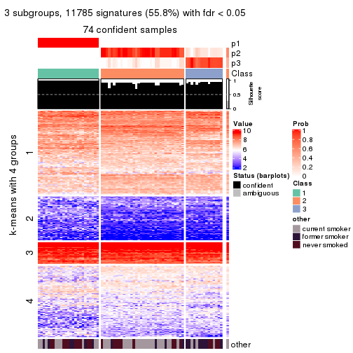
get_signatures(res, k = 4, scale_rows = FALSE)
get_signatures(res, k = 5, scale_rows = FALSE)
get_signatures(res, k = 6, scale_rows = FALSE)
Compare the overlap of signatures from different k:
compare_signatures(res)
get_signature() returns a data frame invisibly. TO get the list of signatures, the function
call should be assigned to a variable explicitly. In following code, if plot argument is set
to FALSE, no heatmap is plotted while only the differential analysis is performed.
# code only for demonstration
tb = get_signature(res, k = ..., plot = FALSE)
An example of the output of tb is:
#> which_row fdr mean_1 mean_2 scaled_mean_1 scaled_mean_2 km
#> 1 38 0.042760348 8.373488 9.131774 -0.5533452 0.5164555 1
#> 2 40 0.018707592 7.106213 8.469186 -0.6173731 0.5762149 1
#> 3 55 0.019134737 10.221463 11.207825 -0.6159697 0.5749050 1
#> 4 59 0.006059896 5.921854 7.869574 -0.6899429 0.6439467 1
#> 5 60 0.018055526 8.928898 10.211722 -0.6204761 0.5791110 1
#> 6 98 0.009384629 15.714769 14.887706 0.6635654 -0.6193277 2
...
The columns in tb are:
which_row: row indices corresponding to the input matrix.fdr: FDR for the differential test. mean_x: The mean value in group x.scaled_mean_x: The mean value in group x after rows are scaled.km: Row groups if k-means clustering is applied to rows.UMAP plot which shows how samples are separated.
dimension_reduction(res, k = 2, method = "UMAP")
dimension_reduction(res, k = 3, method = "UMAP")
dimension_reduction(res, k = 4, method = "UMAP")
dimension_reduction(res, k = 5, method = "UMAP")
dimension_reduction(res, k = 6, method = "UMAP")
Following heatmap shows how subgroups are split when increasing k:
collect_classes(res)
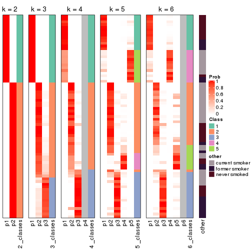
Test correlation between subgroups and known annotations. If the known annotation is numeric, one-way ANOVA test is applied, and if the known annotation is discrete, chi-squared contingency table test is applied.
test_to_known_factors(res)
#> n other(p) k
#> SD:mclust 75 0.409465 2
#> SD:mclust 74 0.010995 3
#> SD:mclust 72 0.063405 4
#> SD:mclust 73 0.000177 5
#> SD:mclust 66 0.000957 6
If matrix rows can be associated to genes, consider to use functional_enrichment(res,
...) to perform function enrichment for the signature genes. See this vignette for more detailed explanations.
The object with results only for a single top-value method and a single partition method can be extracted as:
res = res_list["SD", "NMF"]
# you can also extract it by
# res = res_list["SD:NMF"]
A summary of res and all the functions that can be applied to it:
res
#> A 'ConsensusPartition' object with k = 2, 3, 4, 5, 6.
#> On a matrix with 21104 rows and 75 columns.
#> Top rows (1000, 2000, 3000, 4000, 5000) are extracted by 'SD' method.
#> Subgroups are detected by 'NMF' method.
#> Performed in total 1250 partitions by row resampling.
#> Best k for subgroups seems to be 2.
#>
#> Following methods can be applied to this 'ConsensusPartition' object:
#> [1] "cola_report" "collect_classes" "collect_plots"
#> [4] "collect_stats" "colnames" "compare_signatures"
#> [7] "consensus_heatmap" "dimension_reduction" "functional_enrichment"
#> [10] "get_anno_col" "get_anno" "get_classes"
#> [13] "get_consensus" "get_matrix" "get_membership"
#> [16] "get_param" "get_signatures" "get_stats"
#> [19] "is_best_k" "is_stable_k" "membership_heatmap"
#> [22] "ncol" "nrow" "plot_ecdf"
#> [25] "rownames" "select_partition_number" "show"
#> [28] "suggest_best_k" "test_to_known_factors"
collect_plots() function collects all the plots made from res for all k (number of partitions)
into one single page to provide an easy and fast comparison between different k.
collect_plots(res)
The plots are:
k and the heatmap of
predicted classes for each k.k.k.k.All the plots in panels can be made by individual functions and they are plotted later in this section.
select_partition_number() produces several plots showing different
statistics for choosing “optimized” k. There are following statistics:
k;k, the area increased is defined as \(A_k - A_{k-1}\).The detailed explanations of these statistics can be found in the cola vignette.
Generally speaking, lower PAC score, higher mean silhouette score or higher
concordance corresponds to better partition. Rand index and Jaccard index
measure how similar the current partition is compared to partition with k-1.
If they are too similar, we won't accept k is better than k-1.
select_partition_number(res)
The numeric values for all these statistics can be obtained by get_stats().
get_stats(res)
#> k 1-PAC mean_silhouette concordance area_increased Rand Jaccard
#> 2 2 1.000 1.000 1.000 0.4510 0.550 0.550
#> 3 3 0.727 0.739 0.883 0.4316 0.781 0.601
#> 4 4 0.606 0.637 0.801 0.1289 0.909 0.741
#> 5 5 0.553 0.505 0.709 0.0593 0.913 0.726
#> 6 6 0.536 0.354 0.646 0.0372 0.912 0.695
suggest_best_k() suggests the best \(k\) based on these statistics. The rules are as follows:
suggest_best_k(res)
#> [1] 2
Following shows the table of the partitions (You need to click the show/hide
code output link to see it). The membership matrix (columns with name p*)
is inferred by
clue::cl_consensus()
function with the SE method. Basically the value in the membership matrix
represents the probability to belong to a certain group. The finall class
label for an item is determined with the group with highest probability it
belongs to.
In get_classes() function, the entropy is calculated from the membership
matrix and the silhouette score is calculated from the consensus matrix.
cbind(get_classes(res, k = 2), get_membership(res, k = 2))
#> class entropy silhouette p1 p2
#> GSM15684 1 0 1 1 0
#> GSM15685 1 0 1 1 0
#> GSM15686 1 0 1 1 0
#> GSM15687 1 0 1 1 0
#> GSM15688 1 0 1 1 0
#> GSM15689 1 0 1 1 0
#> GSM15690 1 0 1 1 0
#> GSM15691 1 0 1 1 0
#> GSM15692 1 0 1 1 0
#> GSM15693 2 0 1 0 1
#> GSM15694 2 0 1 0 1
#> GSM15695 2 0 1 0 1
#> GSM15696 2 0 1 0 1
#> GSM15697 2 0 1 0 1
#> GSM15698 2 0 1 0 1
#> GSM15699 2 0 1 0 1
#> GSM15700 2 0 1 0 1
#> GSM15701 2 0 1 0 1
#> GSM15702 2 0 1 0 1
#> GSM15703 2 0 1 0 1
#> GSM15704 2 0 1 0 1
#> GSM15705 2 0 1 0 1
#> GSM15706 2 0 1 0 1
#> GSM15707 2 0 1 0 1
#> GSM15708 2 0 1 0 1
#> GSM15709 2 0 1 0 1
#> GSM15710 2 0 1 0 1
#> GSM15711 2 0 1 0 1
#> GSM15712 2 0 1 0 1
#> GSM15713 2 0 1 0 1
#> GSM15714 2 0 1 0 1
#> GSM15715 2 0 1 0 1
#> GSM15716 2 0 1 0 1
#> GSM15717 2 0 1 0 1
#> GSM15718 1 0 1 1 0
#> GSM15719 2 0 1 0 1
#> GSM15720 1 0 1 1 0
#> GSM15721 1 0 1 1 0
#> GSM15722 1 0 1 1 0
#> GSM15723 1 0 1 1 0
#> GSM15724 1 0 1 1 0
#> GSM15725 1 0 1 1 0
#> GSM15726 1 0 1 1 0
#> GSM15727 1 0 1 1 0
#> GSM15728 1 0 1 1 0
#> GSM15729 2 0 1 0 1
#> GSM15730 2 0 1 0 1
#> GSM15731 2 0 1 0 1
#> GSM15732 2 0 1 0 1
#> GSM15733 2 0 1 0 1
#> GSM15734 2 0 1 0 1
#> GSM15735 2 0 1 0 1
#> GSM15736 2 0 1 0 1
#> GSM15737 2 0 1 0 1
#> GSM15738 2 0 1 0 1
#> GSM15739 2 0 1 0 1
#> GSM15740 2 0 1 0 1
#> GSM15741 1 0 1 1 0
#> GSM15742 1 0 1 1 0
#> GSM15743 1 0 1 1 0
#> GSM15744 1 0 1 1 0
#> GSM15745 1 0 1 1 0
#> GSM15746 1 0 1 1 0
#> GSM15747 2 0 1 0 1
#> GSM15748 2 0 1 0 1
#> GSM15749 2 0 1 0 1
#> GSM15750 2 0 1 0 1
#> GSM15751 2 0 1 0 1
#> GSM15752 2 0 1 0 1
#> GSM15753 2 0 1 0 1
#> GSM15754 2 0 1 0 1
#> GSM15755 2 0 1 0 1
#> GSM15756 2 0 1 0 1
#> GSM15757 2 0 1 0 1
#> GSM15758 2 0 1 0 1
cbind(get_classes(res, k = 3), get_membership(res, k = 3))
#> class entropy silhouette p1 p2 p3
#> GSM15684 1 0.1860 0.9552 0.948 0.052 0.000
#> GSM15685 1 0.0237 0.9743 0.996 0.004 0.000
#> GSM15686 1 0.0661 0.9760 0.988 0.004 0.008
#> GSM15687 1 0.0424 0.9765 0.992 0.000 0.008
#> GSM15688 1 0.0424 0.9765 0.992 0.000 0.008
#> GSM15689 1 0.2878 0.9257 0.904 0.096 0.000
#> GSM15690 1 0.0424 0.9765 0.992 0.000 0.008
#> GSM15691 1 0.0424 0.9765 0.992 0.000 0.008
#> GSM15692 1 0.0424 0.9765 0.992 0.000 0.008
#> GSM15693 2 0.1964 0.7934 0.000 0.944 0.056
#> GSM15694 2 0.3551 0.8027 0.000 0.868 0.132
#> GSM15695 2 0.4002 0.7986 0.000 0.840 0.160
#> GSM15696 3 0.6252 0.0960 0.000 0.444 0.556
#> GSM15697 3 0.5988 0.3095 0.000 0.368 0.632
#> GSM15698 2 0.5760 0.6573 0.000 0.672 0.328
#> GSM15699 2 0.0424 0.7614 0.000 0.992 0.008
#> GSM15700 3 0.1753 0.7657 0.000 0.048 0.952
#> GSM15701 3 0.6307 -0.0869 0.000 0.488 0.512
#> GSM15702 3 0.1643 0.7678 0.000 0.044 0.956
#> GSM15703 2 0.0747 0.7689 0.000 0.984 0.016
#> GSM15704 3 0.6302 -0.0501 0.000 0.480 0.520
#> GSM15705 2 0.4654 0.7830 0.000 0.792 0.208
#> GSM15706 2 0.5859 0.6271 0.000 0.656 0.344
#> GSM15707 2 0.5098 0.7609 0.000 0.752 0.248
#> GSM15708 3 0.0237 0.7801 0.000 0.004 0.996
#> GSM15709 3 0.0592 0.7798 0.000 0.012 0.988
#> GSM15710 2 0.5591 0.6973 0.000 0.696 0.304
#> GSM15711 3 0.6295 -0.0158 0.000 0.472 0.528
#> GSM15712 3 0.1289 0.7730 0.000 0.032 0.968
#> GSM15713 2 0.5905 0.6092 0.000 0.648 0.352
#> GSM15714 2 0.5254 0.7473 0.000 0.736 0.264
#> GSM15715 3 0.0237 0.7755 0.004 0.000 0.996
#> GSM15716 2 0.1031 0.7753 0.000 0.976 0.024
#> GSM15717 2 0.5497 0.7127 0.000 0.708 0.292
#> GSM15718 1 0.0424 0.9734 0.992 0.008 0.000
#> GSM15719 2 0.2711 0.8019 0.000 0.912 0.088
#> GSM15720 1 0.0237 0.9743 0.996 0.004 0.000
#> GSM15721 1 0.1860 0.9546 0.948 0.052 0.000
#> GSM15722 1 0.1753 0.9500 0.952 0.000 0.048
#> GSM15723 1 0.0424 0.9765 0.992 0.000 0.008
#> GSM15724 1 0.0424 0.9765 0.992 0.000 0.008
#> GSM15725 1 0.2959 0.9237 0.900 0.100 0.000
#> GSM15726 1 0.5098 0.7743 0.752 0.248 0.000
#> GSM15727 1 0.0424 0.9765 0.992 0.000 0.008
#> GSM15728 1 0.0424 0.9765 0.992 0.000 0.008
#> GSM15729 3 0.1860 0.7631 0.000 0.052 0.948
#> GSM15730 3 0.6244 0.1091 0.000 0.440 0.560
#> GSM15731 2 0.2537 0.8005 0.000 0.920 0.080
#> GSM15732 3 0.2959 0.7237 0.000 0.100 0.900
#> GSM15733 3 0.0000 0.7786 0.000 0.000 1.000
#> GSM15734 3 0.6307 -0.0956 0.000 0.488 0.512
#> GSM15735 2 0.1964 0.7935 0.000 0.944 0.056
#> GSM15736 3 0.0000 0.7786 0.000 0.000 1.000
#> GSM15737 3 0.0592 0.7675 0.012 0.000 0.988
#> GSM15738 3 0.0237 0.7755 0.004 0.000 0.996
#> GSM15739 3 0.6299 -0.0388 0.000 0.476 0.524
#> GSM15740 2 0.5948 0.5894 0.000 0.640 0.360
#> GSM15741 1 0.0475 0.9753 0.992 0.004 0.004
#> GSM15742 1 0.0424 0.9765 0.992 0.000 0.008
#> GSM15743 1 0.0237 0.9743 0.996 0.004 0.000
#> GSM15744 1 0.0424 0.9765 0.992 0.000 0.008
#> GSM15745 1 0.1411 0.9624 0.964 0.036 0.000
#> GSM15746 1 0.0424 0.9765 0.992 0.000 0.008
#> GSM15747 3 0.0237 0.7801 0.000 0.004 0.996
#> GSM15748 2 0.5058 0.7637 0.000 0.756 0.244
#> GSM15749 2 0.1163 0.7781 0.000 0.972 0.028
#> GSM15750 3 0.0000 0.7786 0.000 0.000 1.000
#> GSM15751 3 0.0000 0.7786 0.000 0.000 1.000
#> GSM15752 3 0.0424 0.7805 0.000 0.008 0.992
#> GSM15753 3 0.0424 0.7805 0.000 0.008 0.992
#> GSM15754 3 0.6192 0.1730 0.000 0.420 0.580
#> GSM15755 3 0.0237 0.7801 0.000 0.004 0.996
#> GSM15756 3 0.0424 0.7805 0.000 0.008 0.992
#> GSM15757 3 0.0424 0.7805 0.000 0.008 0.992
#> GSM15758 2 0.0475 0.7534 0.004 0.992 0.004
cbind(get_classes(res, k = 4), get_membership(res, k = 4))
#> class entropy silhouette p1 p2 p3 p4
#> GSM15684 1 0.4920 0.6474 0.628 0.004 0.000 0.368
#> GSM15685 1 0.4401 0.7551 0.724 0.000 0.004 0.272
#> GSM15686 1 0.4088 0.7810 0.764 0.000 0.004 0.232
#> GSM15687 1 0.4857 0.6982 0.668 0.000 0.008 0.324
#> GSM15688 1 0.3249 0.8266 0.852 0.000 0.008 0.140
#> GSM15689 1 0.3743 0.8206 0.824 0.016 0.000 0.160
#> GSM15690 1 0.3355 0.8249 0.836 0.000 0.004 0.160
#> GSM15691 1 0.1867 0.8426 0.928 0.000 0.000 0.072
#> GSM15692 1 0.4978 0.6336 0.612 0.000 0.004 0.384
#> GSM15693 2 0.4426 0.6161 0.000 0.772 0.024 0.204
#> GSM15694 2 0.1677 0.7140 0.000 0.948 0.040 0.012
#> GSM15695 2 0.1888 0.7041 0.000 0.940 0.044 0.016
#> GSM15696 3 0.5543 0.3575 0.000 0.360 0.612 0.028
#> GSM15697 3 0.6619 0.3104 0.000 0.332 0.568 0.100
#> GSM15698 2 0.6267 0.5686 0.000 0.664 0.148 0.188
#> GSM15699 2 0.2197 0.6748 0.000 0.916 0.004 0.080
#> GSM15700 3 0.4793 0.6064 0.000 0.040 0.756 0.204
#> GSM15701 2 0.5938 0.0232 0.000 0.488 0.476 0.036
#> GSM15702 3 0.1520 0.7623 0.000 0.024 0.956 0.020
#> GSM15703 2 0.3377 0.6646 0.000 0.848 0.012 0.140
#> GSM15704 2 0.6714 0.3590 0.000 0.540 0.360 0.100
#> GSM15705 2 0.4534 0.6781 0.000 0.800 0.068 0.132
#> GSM15706 2 0.3925 0.6772 0.000 0.808 0.176 0.016
#> GSM15707 2 0.3176 0.7142 0.000 0.880 0.084 0.036
#> GSM15708 3 0.0817 0.7599 0.000 0.000 0.976 0.024
#> GSM15709 3 0.1174 0.7628 0.000 0.020 0.968 0.012
#> GSM15710 2 0.3803 0.6836 0.000 0.836 0.132 0.032
#> GSM15711 2 0.7530 0.2255 0.000 0.436 0.376 0.188
#> GSM15712 3 0.4808 0.5707 0.000 0.028 0.736 0.236
#> GSM15713 2 0.4781 0.6439 0.000 0.752 0.212 0.036
#> GSM15714 2 0.6660 -0.0373 0.000 0.464 0.084 0.452
#> GSM15715 3 0.4809 0.4614 0.004 0.004 0.684 0.308
#> GSM15716 2 0.0895 0.6886 0.000 0.976 0.004 0.020
#> GSM15717 4 0.4590 0.7215 0.000 0.148 0.060 0.792
#> GSM15718 1 0.4543 0.7116 0.676 0.000 0.000 0.324
#> GSM15719 4 0.4849 0.7005 0.004 0.200 0.036 0.760
#> GSM15720 1 0.1004 0.8441 0.972 0.004 0.000 0.024
#> GSM15721 1 0.3840 0.7894 0.844 0.104 0.000 0.052
#> GSM15722 1 0.2101 0.8472 0.928 0.000 0.012 0.060
#> GSM15723 1 0.0895 0.8456 0.976 0.000 0.004 0.020
#> GSM15724 1 0.4439 0.7899 0.836 0.040 0.040 0.084
#> GSM15725 1 0.3674 0.7968 0.852 0.104 0.000 0.044
#> GSM15726 1 0.4719 0.7307 0.772 0.180 0.000 0.048
#> GSM15727 1 0.2234 0.8336 0.924 0.004 0.008 0.064
#> GSM15728 1 0.1118 0.8448 0.964 0.000 0.000 0.036
#> GSM15729 3 0.1624 0.7596 0.000 0.028 0.952 0.020
#> GSM15730 3 0.5649 0.2617 0.000 0.392 0.580 0.028
#> GSM15731 2 0.1109 0.6789 0.000 0.968 0.004 0.028
#> GSM15732 4 0.4685 0.6739 0.000 0.060 0.156 0.784
#> GSM15733 4 0.5277 0.0433 0.000 0.008 0.460 0.532
#> GSM15734 3 0.5688 0.0795 0.000 0.464 0.512 0.024
#> GSM15735 2 0.1256 0.6855 0.000 0.964 0.008 0.028
#> GSM15736 3 0.0707 0.7547 0.000 0.000 0.980 0.020
#> GSM15737 3 0.1022 0.7546 0.000 0.000 0.968 0.032
#> GSM15738 3 0.0817 0.7541 0.000 0.000 0.976 0.024
#> GSM15739 3 0.5771 0.0297 0.000 0.460 0.512 0.028
#> GSM15740 2 0.6873 0.4588 0.000 0.588 0.160 0.252
#> GSM15741 1 0.5165 0.4670 0.512 0.000 0.004 0.484
#> GSM15742 1 0.1209 0.8478 0.964 0.000 0.004 0.032
#> GSM15743 1 0.0707 0.8471 0.980 0.000 0.000 0.020
#> GSM15744 1 0.2198 0.8323 0.920 0.000 0.008 0.072
#> GSM15745 1 0.2021 0.8473 0.936 0.024 0.000 0.040
#> GSM15746 1 0.1211 0.8459 0.960 0.000 0.000 0.040
#> GSM15747 3 0.1042 0.7629 0.000 0.008 0.972 0.020
#> GSM15748 4 0.4956 0.7129 0.000 0.188 0.056 0.756
#> GSM15749 2 0.2928 0.6849 0.000 0.880 0.012 0.108
#> GSM15750 3 0.4917 0.4020 0.000 0.008 0.656 0.336
#> GSM15751 3 0.0707 0.7604 0.000 0.000 0.980 0.020
#> GSM15752 3 0.1743 0.7479 0.000 0.004 0.940 0.056
#> GSM15753 3 0.2549 0.7396 0.004 0.024 0.916 0.056
#> GSM15754 3 0.6583 0.1500 0.000 0.388 0.528 0.084
#> GSM15755 3 0.1151 0.7613 0.000 0.008 0.968 0.024
#> GSM15756 3 0.1297 0.7608 0.000 0.020 0.964 0.016
#> GSM15757 3 0.1256 0.7632 0.000 0.008 0.964 0.028
#> GSM15758 4 0.5259 0.4127 0.004 0.376 0.008 0.612
cbind(get_classes(res, k = 5), get_membership(res, k = 5))
#> class entropy silhouette p1 p2 p3 p4 p5
#> GSM15684 1 0.6464 0.37859 0.484 0.008 0.000 0.360 NA
#> GSM15685 1 0.6175 0.45431 0.528 0.000 0.000 0.312 NA
#> GSM15686 1 0.5444 0.64485 0.660 0.000 0.000 0.160 NA
#> GSM15687 1 0.6329 0.49863 0.528 0.000 0.000 0.232 NA
#> GSM15688 1 0.4247 0.71503 0.776 0.000 0.000 0.132 NA
#> GSM15689 1 0.5706 0.60969 0.640 0.012 0.000 0.244 NA
#> GSM15690 1 0.6062 0.51474 0.540 0.000 0.004 0.120 NA
#> GSM15691 1 0.3704 0.73295 0.820 0.000 0.000 0.092 NA
#> GSM15692 1 0.5915 0.47370 0.552 0.000 0.000 0.324 NA
#> GSM15693 2 0.3840 0.57389 0.000 0.780 0.008 0.196 NA
#> GSM15694 2 0.1442 0.65853 0.000 0.952 0.032 0.004 NA
#> GSM15695 2 0.2142 0.65572 0.000 0.920 0.048 0.004 NA
#> GSM15696 3 0.5709 0.15819 0.000 0.376 0.548 0.008 NA
#> GSM15697 2 0.7542 0.08408 0.000 0.376 0.376 0.056 NA
#> GSM15698 2 0.7080 0.36534 0.000 0.576 0.104 0.156 NA
#> GSM15699 2 0.2885 0.62458 0.004 0.880 0.000 0.064 NA
#> GSM15700 3 0.7308 0.30654 0.000 0.076 0.468 0.124 NA
#> GSM15701 3 0.5742 0.12787 0.000 0.384 0.548 0.024 NA
#> GSM15702 3 0.1885 0.70749 0.000 0.020 0.936 0.012 NA
#> GSM15703 2 0.3056 0.62503 0.000 0.860 0.008 0.112 NA
#> GSM15704 2 0.7108 0.36433 0.000 0.488 0.324 0.056 NA
#> GSM15705 2 0.6322 0.50887 0.000 0.632 0.064 0.208 NA
#> GSM15706 2 0.5943 0.42844 0.000 0.580 0.332 0.040 NA
#> GSM15707 2 0.5368 0.59531 0.000 0.688 0.208 0.016 NA
#> GSM15708 3 0.1568 0.71361 0.000 0.000 0.944 0.020 NA
#> GSM15709 3 0.2672 0.69929 0.000 0.024 0.896 0.016 NA
#> GSM15710 2 0.4479 0.62691 0.000 0.752 0.188 0.008 NA
#> GSM15711 3 0.7638 -0.05292 0.000 0.308 0.404 0.232 NA
#> GSM15712 3 0.5536 0.53362 0.000 0.032 0.668 0.240 NA
#> GSM15713 2 0.7411 0.25875 0.000 0.440 0.356 0.116 NA
#> GSM15714 4 0.7474 -0.07874 0.000 0.352 0.072 0.428 NA
#> GSM15715 3 0.6253 0.30342 0.000 0.000 0.532 0.280 NA
#> GSM15716 2 0.1547 0.63764 0.000 0.948 0.004 0.016 NA
#> GSM15717 4 0.3982 0.46800 0.000 0.116 0.060 0.812 NA
#> GSM15718 4 0.5943 -0.31748 0.444 0.008 0.000 0.468 NA
#> GSM15719 4 0.5586 0.46438 0.016 0.176 0.016 0.704 NA
#> GSM15720 1 0.1644 0.75897 0.940 0.008 0.000 0.004 NA
#> GSM15721 1 0.4855 0.66069 0.720 0.112 0.000 0.000 NA
#> GSM15722 1 0.4019 0.71602 0.792 0.000 0.004 0.052 NA
#> GSM15723 1 0.2077 0.75771 0.908 0.000 0.000 0.008 NA
#> GSM15724 1 0.4407 0.69369 0.756 0.020 0.028 0.000 NA
#> GSM15725 1 0.4801 0.66574 0.728 0.124 0.000 0.000 NA
#> GSM15726 1 0.5307 0.60991 0.676 0.168 0.000 0.000 NA
#> GSM15727 1 0.2660 0.74352 0.864 0.008 0.000 0.000 NA
#> GSM15728 1 0.1942 0.75906 0.920 0.000 0.000 0.012 NA
#> GSM15729 3 0.2103 0.70804 0.000 0.020 0.920 0.004 NA
#> GSM15730 3 0.5240 0.30920 0.000 0.336 0.616 0.020 NA
#> GSM15731 2 0.2359 0.63149 0.004 0.912 0.016 0.008 NA
#> GSM15732 4 0.6475 0.46792 0.000 0.056 0.096 0.596 NA
#> GSM15733 4 0.7140 0.12624 0.000 0.016 0.308 0.404 NA
#> GSM15734 2 0.5928 0.22569 0.000 0.520 0.388 0.008 NA
#> GSM15735 2 0.1983 0.62922 0.000 0.924 0.008 0.008 NA
#> GSM15736 3 0.1851 0.70789 0.000 0.000 0.912 0.000 NA
#> GSM15737 3 0.3595 0.65683 0.000 0.000 0.816 0.044 NA
#> GSM15738 3 0.2077 0.70191 0.000 0.000 0.908 0.008 NA
#> GSM15739 3 0.6269 0.29730 0.000 0.308 0.576 0.048 NA
#> GSM15740 2 0.7248 0.19692 0.000 0.416 0.188 0.360 NA
#> GSM15741 4 0.5819 -0.09035 0.368 0.004 0.000 0.540 NA
#> GSM15742 1 0.2104 0.75935 0.916 0.000 0.000 0.024 NA
#> GSM15743 1 0.2074 0.75952 0.920 0.000 0.000 0.036 NA
#> GSM15744 1 0.2280 0.75214 0.880 0.000 0.000 0.000 NA
#> GSM15745 1 0.3975 0.75051 0.816 0.020 0.000 0.048 NA
#> GSM15746 1 0.2676 0.74220 0.884 0.000 0.000 0.080 NA
#> GSM15747 3 0.1522 0.71433 0.000 0.000 0.944 0.012 NA
#> GSM15748 4 0.6982 0.41102 0.000 0.172 0.048 0.540 NA
#> GSM15749 2 0.2789 0.63146 0.000 0.880 0.008 0.092 NA
#> GSM15750 3 0.7690 0.00351 0.004 0.048 0.380 0.224 NA
#> GSM15751 3 0.1549 0.71398 0.000 0.000 0.944 0.016 NA
#> GSM15752 3 0.4893 0.58554 0.000 0.008 0.712 0.064 NA
#> GSM15753 3 0.2522 0.69969 0.000 0.012 0.880 0.000 NA
#> GSM15754 3 0.6439 -0.03621 0.000 0.408 0.480 0.072 NA
#> GSM15755 3 0.0992 0.71501 0.000 0.000 0.968 0.008 NA
#> GSM15756 3 0.1682 0.70909 0.000 0.004 0.940 0.012 NA
#> GSM15757 3 0.2214 0.71093 0.004 0.000 0.916 0.028 NA
#> GSM15758 4 0.4253 0.26850 0.000 0.332 0.004 0.660 NA
cbind(get_classes(res, k = 6), get_membership(res, k = 6))
#> class entropy silhouette p1 p2 p3 p4 p5 p6
#> GSM15684 5 0.652 -0.17624 0.300 0.004 0.000 0.268 0.412 0.016
#> GSM15685 5 0.652 -0.28866 0.332 0.000 0.000 0.276 0.372 0.020
#> GSM15686 1 0.691 -0.14278 0.456 0.004 0.000 0.312 0.124 0.104
#> GSM15687 1 0.721 -0.29603 0.372 0.000 0.000 0.340 0.152 0.136
#> GSM15688 1 0.572 0.04568 0.628 0.000 0.000 0.184 0.140 0.048
#> GSM15689 1 0.668 -0.37543 0.420 0.004 0.000 0.228 0.316 0.032
#> GSM15690 4 0.667 0.00000 0.384 0.000 0.004 0.424 0.080 0.108
#> GSM15691 1 0.601 0.12779 0.548 0.000 0.000 0.272 0.148 0.032
#> GSM15692 1 0.663 -0.04143 0.512 0.000 0.000 0.088 0.248 0.152
#> GSM15693 2 0.440 0.53674 0.000 0.696 0.008 0.000 0.244 0.052
#> GSM15694 2 0.174 0.66220 0.000 0.936 0.036 0.008 0.012 0.008
#> GSM15695 2 0.261 0.65761 0.000 0.888 0.048 0.020 0.000 0.044
#> GSM15696 2 0.687 0.22134 0.008 0.436 0.376 0.060 0.012 0.108
#> GSM15697 2 0.728 0.02914 0.000 0.380 0.280 0.064 0.012 0.264
#> GSM15698 2 0.598 0.13367 0.004 0.488 0.072 0.012 0.024 0.400
#> GSM15699 2 0.429 0.59989 0.004 0.780 0.008 0.044 0.032 0.132
#> GSM15700 6 0.702 0.29846 0.000 0.108 0.364 0.092 0.016 0.420
#> GSM15701 3 0.612 -0.04051 0.000 0.412 0.464 0.060 0.052 0.012
#> GSM15702 3 0.264 0.64804 0.000 0.040 0.892 0.032 0.004 0.032
#> GSM15703 2 0.350 0.60483 0.000 0.796 0.000 0.008 0.164 0.032
#> GSM15704 2 0.734 0.35305 0.000 0.472 0.268 0.084 0.040 0.136
#> GSM15705 2 0.650 0.46450 0.000 0.568 0.100 0.096 0.224 0.012
#> GSM15706 2 0.660 0.31223 0.000 0.496 0.324 0.048 0.112 0.020
#> GSM15707 2 0.635 0.53948 0.000 0.612 0.180 0.100 0.084 0.024
#> GSM15708 3 0.257 0.61703 0.000 0.000 0.852 0.012 0.000 0.136
#> GSM15709 3 0.336 0.63702 0.000 0.028 0.852 0.068 0.012 0.040
#> GSM15710 2 0.402 0.64042 0.000 0.800 0.116 0.040 0.012 0.032
#> GSM15711 3 0.728 0.20161 0.000 0.212 0.436 0.056 0.268 0.028
#> GSM15712 3 0.526 0.54618 0.000 0.032 0.700 0.048 0.180 0.040
#> GSM15713 3 0.758 0.04050 0.000 0.288 0.408 0.112 0.168 0.024
#> GSM15714 5 0.698 0.15426 0.000 0.232 0.080 0.136 0.524 0.028
#> GSM15715 3 0.548 0.13586 0.000 0.004 0.560 0.016 0.080 0.340
#> GSM15716 2 0.292 0.63310 0.004 0.880 0.004 0.044 0.036 0.032
#> GSM15717 5 0.319 0.32115 0.000 0.036 0.036 0.012 0.864 0.052
#> GSM15718 5 0.636 -0.06363 0.292 0.000 0.000 0.156 0.504 0.048
#> GSM15719 5 0.603 0.16912 0.000 0.128 0.016 0.048 0.624 0.184
#> GSM15720 1 0.228 0.49571 0.904 0.020 0.000 0.056 0.000 0.020
#> GSM15721 1 0.485 0.39319 0.724 0.132 0.000 0.100 0.000 0.044
#> GSM15722 1 0.567 0.26712 0.656 0.000 0.028 0.124 0.020 0.172
#> GSM15723 1 0.367 0.47944 0.816 0.004 0.000 0.104 0.016 0.060
#> GSM15724 1 0.442 0.42869 0.792 0.048 0.036 0.076 0.000 0.048
#> GSM15725 1 0.504 0.39424 0.724 0.116 0.000 0.088 0.004 0.068
#> GSM15726 1 0.521 0.32700 0.684 0.180 0.000 0.076 0.000 0.060
#> GSM15727 1 0.270 0.47516 0.884 0.032 0.000 0.048 0.000 0.036
#> GSM15728 1 0.297 0.47655 0.860 0.000 0.000 0.084 0.016 0.040
#> GSM15729 3 0.202 0.65961 0.000 0.016 0.920 0.036 0.000 0.028
#> GSM15730 3 0.503 0.36271 0.000 0.316 0.620 0.020 0.032 0.012
#> GSM15731 2 0.306 0.62818 0.016 0.872 0.008 0.032 0.008 0.064
#> GSM15732 6 0.599 0.50973 0.000 0.068 0.072 0.004 0.288 0.568
#> GSM15733 6 0.587 0.58900 0.000 0.020 0.224 0.008 0.156 0.592
#> GSM15734 2 0.584 0.45302 0.012 0.596 0.284 0.040 0.004 0.064
#> GSM15735 2 0.280 0.63401 0.004 0.884 0.004 0.044 0.016 0.048
#> GSM15736 3 0.262 0.62327 0.000 0.000 0.860 0.024 0.000 0.116
#> GSM15737 3 0.360 0.53633 0.000 0.000 0.760 0.032 0.000 0.208
#> GSM15738 3 0.335 0.57338 0.000 0.004 0.800 0.028 0.000 0.168
#> GSM15739 3 0.618 0.49014 0.000 0.208 0.616 0.060 0.088 0.028
#> GSM15740 5 0.703 0.00758 0.000 0.256 0.200 0.024 0.472 0.048
#> GSM15741 5 0.679 -0.10507 0.276 0.000 0.000 0.100 0.480 0.144
#> GSM15742 1 0.299 0.45713 0.852 0.000 0.000 0.104 0.012 0.032
#> GSM15743 1 0.300 0.45696 0.856 0.000 0.000 0.044 0.088 0.012
#> GSM15744 1 0.315 0.47073 0.844 0.004 0.008 0.108 0.000 0.036
#> GSM15745 1 0.534 0.38814 0.700 0.024 0.000 0.148 0.096 0.032
#> GSM15746 1 0.523 0.25032 0.664 0.000 0.000 0.196 0.112 0.028
#> GSM15747 3 0.238 0.65407 0.000 0.008 0.900 0.032 0.004 0.056
#> GSM15748 6 0.642 0.40782 0.000 0.188 0.028 0.008 0.268 0.508
#> GSM15749 2 0.396 0.62315 0.000 0.796 0.016 0.008 0.120 0.060
#> GSM15750 6 0.538 0.60666 0.004 0.048 0.196 0.036 0.028 0.688
#> GSM15751 3 0.236 0.63755 0.000 0.004 0.880 0.012 0.000 0.104
#> GSM15752 3 0.496 0.18844 0.000 0.024 0.568 0.032 0.000 0.376
#> GSM15753 3 0.251 0.64702 0.016 0.004 0.896 0.052 0.000 0.032
#> GSM15754 3 0.631 -0.00734 0.000 0.392 0.472 0.020 0.060 0.056
#> GSM15755 3 0.200 0.64765 0.000 0.004 0.900 0.004 0.000 0.092
#> GSM15756 3 0.187 0.65740 0.000 0.016 0.928 0.024 0.000 0.032
#> GSM15757 3 0.250 0.64641 0.000 0.000 0.892 0.032 0.016 0.060
#> GSM15758 5 0.457 0.24995 0.000 0.192 0.008 0.004 0.716 0.080
Heatmaps for the consensus matrix. It visualizes the probability of two samples to be in a same group.
consensus_heatmap(res, k = 2)

consensus_heatmap(res, k = 3)
consensus_heatmap(res, k = 4)
consensus_heatmap(res, k = 5)
consensus_heatmap(res, k = 6)

Heatmaps for the membership of samples in all partitions to see how consistent they are:
membership_heatmap(res, k = 2)

membership_heatmap(res, k = 3)
membership_heatmap(res, k = 4)
membership_heatmap(res, k = 5)
membership_heatmap(res, k = 6)
As soon as we have had the classes for columns, we can look for signatures which are significantly different between classes which can be candidate marks for certain classes. Following are the heatmaps for signatures.
Signature heatmaps where rows are scaled:
get_signatures(res, k = 2)

get_signatures(res, k = 3)
get_signatures(res, k = 4)
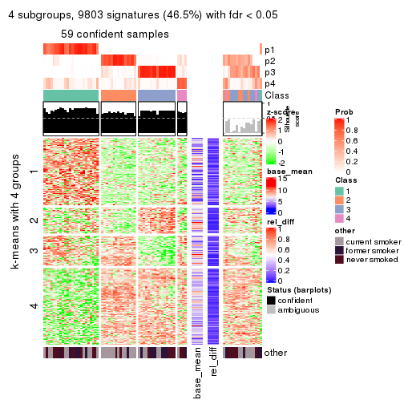
get_signatures(res, k = 5)
get_signatures(res, k = 6)
Signature heatmaps where rows are not scaled:
get_signatures(res, k = 2, scale_rows = FALSE)

get_signatures(res, k = 3, scale_rows = FALSE)
get_signatures(res, k = 4, scale_rows = FALSE)
get_signatures(res, k = 5, scale_rows = FALSE)
get_signatures(res, k = 6, scale_rows = FALSE)
Compare the overlap of signatures from different k:
compare_signatures(res)
get_signature() returns a data frame invisibly. TO get the list of signatures, the function
call should be assigned to a variable explicitly. In following code, if plot argument is set
to FALSE, no heatmap is plotted while only the differential analysis is performed.
# code only for demonstration
tb = get_signature(res, k = ..., plot = FALSE)
An example of the output of tb is:
#> which_row fdr mean_1 mean_2 scaled_mean_1 scaled_mean_2 km
#> 1 38 0.042760348 8.373488 9.131774 -0.5533452 0.5164555 1
#> 2 40 0.018707592 7.106213 8.469186 -0.6173731 0.5762149 1
#> 3 55 0.019134737 10.221463 11.207825 -0.6159697 0.5749050 1
#> 4 59 0.006059896 5.921854 7.869574 -0.6899429 0.6439467 1
#> 5 60 0.018055526 8.928898 10.211722 -0.6204761 0.5791110 1
#> 6 98 0.009384629 15.714769 14.887706 0.6635654 -0.6193277 2
...
The columns in tb are:
which_row: row indices corresponding to the input matrix.fdr: FDR for the differential test. mean_x: The mean value in group x.scaled_mean_x: The mean value in group x after rows are scaled.km: Row groups if k-means clustering is applied to rows.UMAP plot which shows how samples are separated.
dimension_reduction(res, k = 2, method = "UMAP")
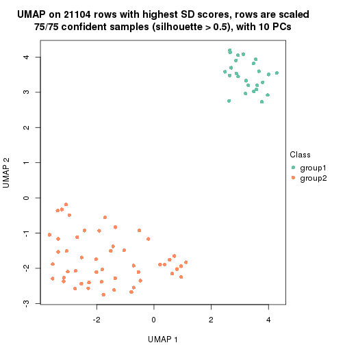
dimension_reduction(res, k = 3, method = "UMAP")
dimension_reduction(res, k = 4, method = "UMAP")
dimension_reduction(res, k = 5, method = "UMAP")
dimension_reduction(res, k = 6, method = "UMAP")
Following heatmap shows how subgroups are split when increasing k:
collect_classes(res)
Test correlation between subgroups and known annotations. If the known annotation is numeric, one-way ANOVA test is applied, and if the known annotation is discrete, chi-squared contingency table test is applied.
test_to_known_factors(res)
#> n other(p) k
#> SD:NMF 75 0.4095 2
#> SD:NMF 66 0.0900 3
#> SD:NMF 59 0.0425 4
#> SD:NMF 46 0.0242 5
#> SD:NMF 28 0.0700 6
If matrix rows can be associated to genes, consider to use functional_enrichment(res,
...) to perform function enrichment for the signature genes. See this vignette for more detailed explanations.
The object with results only for a single top-value method and a single partition method can be extracted as:
res = res_list["CV", "hclust"]
# you can also extract it by
# res = res_list["CV:hclust"]
A summary of res and all the functions that can be applied to it:
res
#> A 'ConsensusPartition' object with k = 2, 3, 4, 5, 6.
#> On a matrix with 21104 rows and 75 columns.
#> Top rows (1000, 2000, 3000, 4000, 5000) are extracted by 'CV' method.
#> Subgroups are detected by 'hclust' method.
#> Performed in total 1250 partitions by row resampling.
#> Best k for subgroups seems to be 4.
#>
#> Following methods can be applied to this 'ConsensusPartition' object:
#> [1] "cola_report" "collect_classes" "collect_plots"
#> [4] "collect_stats" "colnames" "compare_signatures"
#> [7] "consensus_heatmap" "dimension_reduction" "functional_enrichment"
#> [10] "get_anno_col" "get_anno" "get_classes"
#> [13] "get_consensus" "get_matrix" "get_membership"
#> [16] "get_param" "get_signatures" "get_stats"
#> [19] "is_best_k" "is_stable_k" "membership_heatmap"
#> [22] "ncol" "nrow" "plot_ecdf"
#> [25] "rownames" "select_partition_number" "show"
#> [28] "suggest_best_k" "test_to_known_factors"
collect_plots() function collects all the plots made from res for all k (number of partitions)
into one single page to provide an easy and fast comparison between different k.
collect_plots(res)
The plots are:
k and the heatmap of
predicted classes for each k.k.k.k.All the plots in panels can be made by individual functions and they are plotted later in this section.
select_partition_number() produces several plots showing different
statistics for choosing “optimized” k. There are following statistics:
k;k, the area increased is defined as \(A_k - A_{k-1}\).The detailed explanations of these statistics can be found in the cola vignette.
Generally speaking, lower PAC score, higher mean silhouette score or higher
concordance corresponds to better partition. Rand index and Jaccard index
measure how similar the current partition is compared to partition with k-1.
If they are too similar, we won't accept k is better than k-1.
select_partition_number(res)
The numeric values for all these statistics can be obtained by get_stats().
get_stats(res)
#> k 1-PAC mean_silhouette concordance area_increased Rand Jaccard
#> 2 2 0.763 0.940 0.965 0.110 0.922 0.922
#> 3 3 0.618 0.819 0.930 0.633 0.973 0.971
#> 4 4 0.642 0.681 0.881 0.504 0.879 0.865
#> 5 5 0.662 0.632 0.866 0.168 0.972 0.964
#> 6 6 0.686 0.606 0.862 0.110 0.952 0.936
suggest_best_k() suggests the best \(k\) based on these statistics. The rules are as follows:
suggest_best_k(res)
#> [1] 4
Following shows the table of the partitions (You need to click the show/hide
code output link to see it). The membership matrix (columns with name p*)
is inferred by
clue::cl_consensus()
function with the SE method. Basically the value in the membership matrix
represents the probability to belong to a certain group. The finall class
label for an item is determined with the group with highest probability it
belongs to.
In get_classes() function, the entropy is calculated from the membership
matrix and the silhouette score is calculated from the consensus matrix.
cbind(get_classes(res, k = 2), get_membership(res, k = 2))
#> class entropy silhouette p1 p2
#> GSM15684 2 0.0376 0.964 0.004 0.996
#> GSM15685 2 0.0000 0.967 0.000 1.000
#> GSM15686 1 0.6712 0.907 0.824 0.176
#> GSM15687 1 0.6048 0.899 0.852 0.148
#> GSM15688 2 0.5519 0.855 0.128 0.872
#> GSM15689 2 0.5737 0.846 0.136 0.864
#> GSM15690 1 0.8081 0.831 0.752 0.248
#> GSM15691 2 0.5519 0.859 0.128 0.872
#> GSM15692 2 0.2778 0.936 0.048 0.952
#> GSM15693 2 0.0000 0.967 0.000 1.000
#> GSM15694 2 0.0000 0.967 0.000 1.000
#> GSM15695 2 0.0000 0.967 0.000 1.000
#> GSM15696 2 0.0000 0.967 0.000 1.000
#> GSM15697 2 0.0000 0.967 0.000 1.000
#> GSM15698 2 0.0000 0.967 0.000 1.000
#> GSM15699 2 0.0000 0.967 0.000 1.000
#> GSM15700 2 0.0000 0.967 0.000 1.000
#> GSM15701 2 0.0000 0.967 0.000 1.000
#> GSM15702 2 0.0000 0.967 0.000 1.000
#> GSM15703 2 0.0000 0.967 0.000 1.000
#> GSM15704 2 0.0000 0.967 0.000 1.000
#> GSM15705 2 0.0000 0.967 0.000 1.000
#> GSM15706 2 0.0000 0.967 0.000 1.000
#> GSM15707 2 0.0000 0.967 0.000 1.000
#> GSM15708 2 0.0000 0.967 0.000 1.000
#> GSM15709 2 0.0000 0.967 0.000 1.000
#> GSM15710 2 0.0000 0.967 0.000 1.000
#> GSM15711 2 0.0000 0.967 0.000 1.000
#> GSM15712 2 0.0000 0.967 0.000 1.000
#> GSM15713 2 0.0000 0.967 0.000 1.000
#> GSM15714 2 0.0000 0.967 0.000 1.000
#> GSM15715 2 0.0000 0.967 0.000 1.000
#> GSM15716 2 0.0000 0.967 0.000 1.000
#> GSM15717 2 0.0000 0.967 0.000 1.000
#> GSM15718 2 0.1414 0.955 0.020 0.980
#> GSM15719 2 0.0000 0.967 0.000 1.000
#> GSM15720 2 0.7674 0.707 0.224 0.776
#> GSM15721 2 0.4298 0.902 0.088 0.912
#> GSM15722 2 0.4815 0.886 0.104 0.896
#> GSM15723 2 0.5294 0.867 0.120 0.880
#> GSM15724 2 0.4161 0.905 0.084 0.916
#> GSM15725 2 0.4690 0.890 0.100 0.900
#> GSM15726 2 0.4298 0.902 0.088 0.912
#> GSM15727 2 0.4161 0.906 0.084 0.916
#> GSM15728 2 0.6148 0.824 0.152 0.848
#> GSM15729 2 0.0000 0.967 0.000 1.000
#> GSM15730 2 0.0000 0.967 0.000 1.000
#> GSM15731 2 0.0000 0.967 0.000 1.000
#> GSM15732 2 0.0000 0.967 0.000 1.000
#> GSM15733 2 0.0000 0.967 0.000 1.000
#> GSM15734 2 0.0000 0.967 0.000 1.000
#> GSM15735 2 0.0000 0.967 0.000 1.000
#> GSM15736 2 0.0000 0.967 0.000 1.000
#> GSM15737 2 0.0000 0.967 0.000 1.000
#> GSM15738 2 0.0000 0.967 0.000 1.000
#> GSM15739 2 0.0000 0.967 0.000 1.000
#> GSM15740 2 0.0000 0.967 0.000 1.000
#> GSM15741 2 0.3274 0.924 0.060 0.940
#> GSM15742 2 0.5408 0.862 0.124 0.876
#> GSM15743 2 0.4161 0.905 0.084 0.916
#> GSM15744 2 0.5629 0.856 0.132 0.868
#> GSM15745 2 0.3879 0.914 0.076 0.924
#> GSM15746 2 0.4022 0.907 0.080 0.920
#> GSM15747 2 0.0000 0.967 0.000 1.000
#> GSM15748 2 0.0000 0.967 0.000 1.000
#> GSM15749 2 0.0000 0.967 0.000 1.000
#> GSM15750 2 0.0000 0.967 0.000 1.000
#> GSM15751 2 0.0000 0.967 0.000 1.000
#> GSM15752 2 0.0000 0.967 0.000 1.000
#> GSM15753 2 0.0000 0.967 0.000 1.000
#> GSM15754 2 0.0000 0.967 0.000 1.000
#> GSM15755 2 0.0000 0.967 0.000 1.000
#> GSM15756 2 0.0000 0.967 0.000 1.000
#> GSM15757 2 0.0000 0.967 0.000 1.000
#> GSM15758 2 0.0000 0.967 0.000 1.000
cbind(get_classes(res, k = 3), get_membership(res, k = 3))
#> class entropy silhouette p1 p2 p3
#> GSM15684 2 0.0592 0.9152 0.000 0.988 0.012
#> GSM15685 2 0.0237 0.9206 0.000 0.996 0.004
#> GSM15686 1 0.5247 0.8534 0.768 0.008 0.224
#> GSM15687 1 0.0237 0.8532 0.996 0.004 0.000
#> GSM15688 2 0.6625 0.5627 0.068 0.736 0.196
#> GSM15689 2 0.5503 0.6566 0.020 0.772 0.208
#> GSM15690 3 0.7956 -0.6783 0.424 0.060 0.516
#> GSM15691 2 0.6541 0.4041 0.024 0.672 0.304
#> GSM15692 2 0.3375 0.8278 0.008 0.892 0.100
#> GSM15693 2 0.0000 0.9237 0.000 1.000 0.000
#> GSM15694 2 0.0000 0.9237 0.000 1.000 0.000
#> GSM15695 2 0.0000 0.9237 0.000 1.000 0.000
#> GSM15696 2 0.0000 0.9237 0.000 1.000 0.000
#> GSM15697 2 0.0000 0.9237 0.000 1.000 0.000
#> GSM15698 2 0.0000 0.9237 0.000 1.000 0.000
#> GSM15699 2 0.0000 0.9237 0.000 1.000 0.000
#> GSM15700 2 0.0000 0.9237 0.000 1.000 0.000
#> GSM15701 2 0.0000 0.9237 0.000 1.000 0.000
#> GSM15702 2 0.0000 0.9237 0.000 1.000 0.000
#> GSM15703 2 0.0000 0.9237 0.000 1.000 0.000
#> GSM15704 2 0.0000 0.9237 0.000 1.000 0.000
#> GSM15705 2 0.0000 0.9237 0.000 1.000 0.000
#> GSM15706 2 0.0000 0.9237 0.000 1.000 0.000
#> GSM15707 2 0.0000 0.9237 0.000 1.000 0.000
#> GSM15708 2 0.0000 0.9237 0.000 1.000 0.000
#> GSM15709 2 0.0000 0.9237 0.000 1.000 0.000
#> GSM15710 2 0.0000 0.9237 0.000 1.000 0.000
#> GSM15711 2 0.0000 0.9237 0.000 1.000 0.000
#> GSM15712 2 0.0000 0.9237 0.000 1.000 0.000
#> GSM15713 2 0.0000 0.9237 0.000 1.000 0.000
#> GSM15714 2 0.0000 0.9237 0.000 1.000 0.000
#> GSM15715 2 0.0000 0.9237 0.000 1.000 0.000
#> GSM15716 2 0.0000 0.9237 0.000 1.000 0.000
#> GSM15717 2 0.0000 0.9237 0.000 1.000 0.000
#> GSM15718 2 0.1529 0.8937 0.000 0.960 0.040
#> GSM15719 2 0.0000 0.9237 0.000 1.000 0.000
#> GSM15720 3 0.6809 -0.0412 0.012 0.464 0.524
#> GSM15721 2 0.4897 0.7251 0.016 0.812 0.172
#> GSM15722 2 0.5517 0.5502 0.004 0.728 0.268
#> GSM15723 2 0.6211 0.5744 0.036 0.736 0.228
#> GSM15724 2 0.4634 0.7408 0.012 0.824 0.164
#> GSM15725 2 0.5219 0.6862 0.016 0.788 0.196
#> GSM15726 2 0.4897 0.7251 0.016 0.812 0.172
#> GSM15727 2 0.4805 0.7267 0.012 0.812 0.176
#> GSM15728 2 0.6770 0.4531 0.044 0.692 0.264
#> GSM15729 2 0.0000 0.9237 0.000 1.000 0.000
#> GSM15730 2 0.0000 0.9237 0.000 1.000 0.000
#> GSM15731 2 0.0000 0.9237 0.000 1.000 0.000
#> GSM15732 2 0.0000 0.9237 0.000 1.000 0.000
#> GSM15733 2 0.0000 0.9237 0.000 1.000 0.000
#> GSM15734 2 0.0000 0.9237 0.000 1.000 0.000
#> GSM15735 2 0.0000 0.9237 0.000 1.000 0.000
#> GSM15736 2 0.0000 0.9237 0.000 1.000 0.000
#> GSM15737 2 0.0000 0.9237 0.000 1.000 0.000
#> GSM15738 2 0.0000 0.9237 0.000 1.000 0.000
#> GSM15739 2 0.0000 0.9237 0.000 1.000 0.000
#> GSM15740 2 0.0000 0.9237 0.000 1.000 0.000
#> GSM15741 2 0.4345 0.7698 0.016 0.848 0.136
#> GSM15742 2 0.6765 0.5392 0.068 0.724 0.208
#> GSM15743 2 0.4634 0.7408 0.012 0.824 0.164
#> GSM15744 2 0.6769 0.3463 0.028 0.652 0.320
#> GSM15745 2 0.4629 0.7218 0.004 0.808 0.188
#> GSM15746 2 0.4196 0.7969 0.024 0.864 0.112
#> GSM15747 2 0.0000 0.9237 0.000 1.000 0.000
#> GSM15748 2 0.0000 0.9237 0.000 1.000 0.000
#> GSM15749 2 0.0000 0.9237 0.000 1.000 0.000
#> GSM15750 2 0.0000 0.9237 0.000 1.000 0.000
#> GSM15751 2 0.0000 0.9237 0.000 1.000 0.000
#> GSM15752 2 0.0000 0.9237 0.000 1.000 0.000
#> GSM15753 2 0.0000 0.9237 0.000 1.000 0.000
#> GSM15754 2 0.0000 0.9237 0.000 1.000 0.000
#> GSM15755 2 0.0000 0.9237 0.000 1.000 0.000
#> GSM15756 2 0.0000 0.9237 0.000 1.000 0.000
#> GSM15757 2 0.0000 0.9237 0.000 1.000 0.000
#> GSM15758 2 0.0000 0.9237 0.000 1.000 0.000
cbind(get_classes(res, k = 4), get_membership(res, k = 4))
#> class entropy silhouette p1 p2 p3 p4
#> GSM15684 2 0.0895 0.8528 0.020 0.976 0.004 0.000
#> GSM15685 2 0.0524 0.8665 0.008 0.988 0.004 0.000
#> GSM15686 4 0.5525 0.6697 0.076 0.004 0.192 0.728
#> GSM15687 4 0.0336 0.6277 0.008 0.000 0.000 0.992
#> GSM15688 2 0.7405 -0.4467 0.332 0.548 0.080 0.040
#> GSM15689 2 0.6820 -0.1190 0.224 0.616 0.156 0.004
#> GSM15690 3 0.6134 0.0000 0.032 0.020 0.620 0.328
#> GSM15691 1 0.5971 0.7379 0.544 0.420 0.032 0.004
#> GSM15692 2 0.5627 0.1463 0.268 0.684 0.040 0.008
#> GSM15693 2 0.0000 0.8793 0.000 1.000 0.000 0.000
#> GSM15694 2 0.0000 0.8793 0.000 1.000 0.000 0.000
#> GSM15695 2 0.0000 0.8793 0.000 1.000 0.000 0.000
#> GSM15696 2 0.0000 0.8793 0.000 1.000 0.000 0.000
#> GSM15697 2 0.0000 0.8793 0.000 1.000 0.000 0.000
#> GSM15698 2 0.0000 0.8793 0.000 1.000 0.000 0.000
#> GSM15699 2 0.0000 0.8793 0.000 1.000 0.000 0.000
#> GSM15700 2 0.0000 0.8793 0.000 1.000 0.000 0.000
#> GSM15701 2 0.0000 0.8793 0.000 1.000 0.000 0.000
#> GSM15702 2 0.0000 0.8793 0.000 1.000 0.000 0.000
#> GSM15703 2 0.0000 0.8793 0.000 1.000 0.000 0.000
#> GSM15704 2 0.0000 0.8793 0.000 1.000 0.000 0.000
#> GSM15705 2 0.0000 0.8793 0.000 1.000 0.000 0.000
#> GSM15706 2 0.0000 0.8793 0.000 1.000 0.000 0.000
#> GSM15707 2 0.0000 0.8793 0.000 1.000 0.000 0.000
#> GSM15708 2 0.0000 0.8793 0.000 1.000 0.000 0.000
#> GSM15709 2 0.0000 0.8793 0.000 1.000 0.000 0.000
#> GSM15710 2 0.0000 0.8793 0.000 1.000 0.000 0.000
#> GSM15711 2 0.0000 0.8793 0.000 1.000 0.000 0.000
#> GSM15712 2 0.0000 0.8793 0.000 1.000 0.000 0.000
#> GSM15713 2 0.0000 0.8793 0.000 1.000 0.000 0.000
#> GSM15714 2 0.0000 0.8793 0.000 1.000 0.000 0.000
#> GSM15715 2 0.0000 0.8793 0.000 1.000 0.000 0.000
#> GSM15716 2 0.0000 0.8793 0.000 1.000 0.000 0.000
#> GSM15717 2 0.0000 0.8793 0.000 1.000 0.000 0.000
#> GSM15718 2 0.1807 0.8063 0.052 0.940 0.008 0.000
#> GSM15719 2 0.0000 0.8793 0.000 1.000 0.000 0.000
#> GSM15720 1 0.7229 0.1189 0.536 0.184 0.280 0.000
#> GSM15721 2 0.5497 0.1509 0.296 0.668 0.032 0.004
#> GSM15722 1 0.6489 0.7293 0.504 0.436 0.052 0.008
#> GSM15723 1 0.5697 0.6763 0.512 0.468 0.008 0.012
#> GSM15724 2 0.5546 0.1349 0.292 0.664 0.044 0.000
#> GSM15725 2 0.6021 -0.0528 0.320 0.624 0.052 0.004
#> GSM15726 2 0.5497 0.1509 0.296 0.668 0.032 0.004
#> GSM15727 2 0.5793 -0.0431 0.324 0.628 0.048 0.000
#> GSM15728 1 0.8089 0.6248 0.412 0.404 0.156 0.028
#> GSM15729 2 0.0000 0.8793 0.000 1.000 0.000 0.000
#> GSM15730 2 0.0000 0.8793 0.000 1.000 0.000 0.000
#> GSM15731 2 0.0000 0.8793 0.000 1.000 0.000 0.000
#> GSM15732 2 0.0000 0.8793 0.000 1.000 0.000 0.000
#> GSM15733 2 0.0000 0.8793 0.000 1.000 0.000 0.000
#> GSM15734 2 0.0000 0.8793 0.000 1.000 0.000 0.000
#> GSM15735 2 0.0000 0.8793 0.000 1.000 0.000 0.000
#> GSM15736 2 0.0000 0.8793 0.000 1.000 0.000 0.000
#> GSM15737 2 0.0000 0.8793 0.000 1.000 0.000 0.000
#> GSM15738 2 0.0000 0.8793 0.000 1.000 0.000 0.000
#> GSM15739 2 0.0000 0.8793 0.000 1.000 0.000 0.000
#> GSM15740 2 0.0000 0.8793 0.000 1.000 0.000 0.000
#> GSM15741 2 0.6648 -0.1957 0.284 0.612 0.096 0.008
#> GSM15742 2 0.7549 -0.6403 0.412 0.472 0.072 0.044
#> GSM15743 2 0.5546 0.1349 0.292 0.664 0.044 0.000
#> GSM15744 1 0.6120 0.6496 0.616 0.328 0.048 0.008
#> GSM15745 2 0.5496 0.0764 0.312 0.652 0.036 0.000
#> GSM15746 2 0.5544 0.4280 0.160 0.752 0.068 0.020
#> GSM15747 2 0.0000 0.8793 0.000 1.000 0.000 0.000
#> GSM15748 2 0.0000 0.8793 0.000 1.000 0.000 0.000
#> GSM15749 2 0.0000 0.8793 0.000 1.000 0.000 0.000
#> GSM15750 2 0.0000 0.8793 0.000 1.000 0.000 0.000
#> GSM15751 2 0.0000 0.8793 0.000 1.000 0.000 0.000
#> GSM15752 2 0.0000 0.8793 0.000 1.000 0.000 0.000
#> GSM15753 2 0.0000 0.8793 0.000 1.000 0.000 0.000
#> GSM15754 2 0.0000 0.8793 0.000 1.000 0.000 0.000
#> GSM15755 2 0.0000 0.8793 0.000 1.000 0.000 0.000
#> GSM15756 2 0.0000 0.8793 0.000 1.000 0.000 0.000
#> GSM15757 2 0.0000 0.8793 0.000 1.000 0.000 0.000
#> GSM15758 2 0.0000 0.8793 0.000 1.000 0.000 0.000
cbind(get_classes(res, k = 5), get_membership(res, k = 5))
#> class entropy silhouette p1 p2 p3 p4 p5
#> GSM15684 2 0.0794 0.8466 0.000 0.972 0.000 0.000 0.028
#> GSM15685 2 0.0404 0.8634 0.000 0.988 0.000 0.000 0.012
#> GSM15686 4 0.3229 0.6530 0.032 0.000 0.000 0.840 0.128
#> GSM15687 4 0.2930 0.6157 0.000 0.000 0.164 0.832 0.004
#> GSM15688 2 0.8314 -0.5480 0.260 0.456 0.076 0.044 0.164
#> GSM15689 2 0.6756 -0.2100 0.040 0.540 0.132 0.000 0.288
#> GSM15690 3 0.3068 0.0000 0.008 0.012 0.880 0.072 0.028
#> GSM15691 1 0.7127 0.4890 0.488 0.332 0.016 0.024 0.140
#> GSM15692 2 0.6397 -0.1157 0.256 0.592 0.024 0.004 0.124
#> GSM15693 2 0.0000 0.8752 0.000 1.000 0.000 0.000 0.000
#> GSM15694 2 0.0000 0.8752 0.000 1.000 0.000 0.000 0.000
#> GSM15695 2 0.0000 0.8752 0.000 1.000 0.000 0.000 0.000
#> GSM15696 2 0.0000 0.8752 0.000 1.000 0.000 0.000 0.000
#> GSM15697 2 0.0000 0.8752 0.000 1.000 0.000 0.000 0.000
#> GSM15698 2 0.0000 0.8752 0.000 1.000 0.000 0.000 0.000
#> GSM15699 2 0.0000 0.8752 0.000 1.000 0.000 0.000 0.000
#> GSM15700 2 0.0000 0.8752 0.000 1.000 0.000 0.000 0.000
#> GSM15701 2 0.0000 0.8752 0.000 1.000 0.000 0.000 0.000
#> GSM15702 2 0.0000 0.8752 0.000 1.000 0.000 0.000 0.000
#> GSM15703 2 0.0000 0.8752 0.000 1.000 0.000 0.000 0.000
#> GSM15704 2 0.0000 0.8752 0.000 1.000 0.000 0.000 0.000
#> GSM15705 2 0.0000 0.8752 0.000 1.000 0.000 0.000 0.000
#> GSM15706 2 0.0000 0.8752 0.000 1.000 0.000 0.000 0.000
#> GSM15707 2 0.0000 0.8752 0.000 1.000 0.000 0.000 0.000
#> GSM15708 2 0.0000 0.8752 0.000 1.000 0.000 0.000 0.000
#> GSM15709 2 0.0000 0.8752 0.000 1.000 0.000 0.000 0.000
#> GSM15710 2 0.0000 0.8752 0.000 1.000 0.000 0.000 0.000
#> GSM15711 2 0.0000 0.8752 0.000 1.000 0.000 0.000 0.000
#> GSM15712 2 0.0000 0.8752 0.000 1.000 0.000 0.000 0.000
#> GSM15713 2 0.0000 0.8752 0.000 1.000 0.000 0.000 0.000
#> GSM15714 2 0.0000 0.8752 0.000 1.000 0.000 0.000 0.000
#> GSM15715 2 0.0000 0.8752 0.000 1.000 0.000 0.000 0.000
#> GSM15716 2 0.0000 0.8752 0.000 1.000 0.000 0.000 0.000
#> GSM15717 2 0.0000 0.8752 0.000 1.000 0.000 0.000 0.000
#> GSM15718 2 0.1809 0.7939 0.012 0.928 0.000 0.000 0.060
#> GSM15719 2 0.0000 0.8752 0.000 1.000 0.000 0.000 0.000
#> GSM15720 5 0.7697 0.1031 0.212 0.096 0.112 0.032 0.548
#> GSM15721 2 0.4504 -0.0540 0.008 0.564 0.000 0.000 0.428
#> GSM15722 1 0.6920 0.4710 0.496 0.336 0.024 0.008 0.136
#> GSM15723 1 0.6879 0.4740 0.460 0.384 0.012 0.016 0.128
#> GSM15724 2 0.4403 -0.0667 0.004 0.560 0.000 0.000 0.436
#> GSM15725 2 0.4964 -0.2191 0.020 0.516 0.004 0.000 0.460
#> GSM15726 2 0.4504 -0.0540 0.008 0.564 0.000 0.000 0.428
#> GSM15727 2 0.5092 -0.2109 0.036 0.524 0.000 0.000 0.440
#> GSM15728 5 0.8098 -0.0986 0.204 0.284 0.060 0.024 0.428
#> GSM15729 2 0.0000 0.8752 0.000 1.000 0.000 0.000 0.000
#> GSM15730 2 0.0000 0.8752 0.000 1.000 0.000 0.000 0.000
#> GSM15731 2 0.0000 0.8752 0.000 1.000 0.000 0.000 0.000
#> GSM15732 2 0.0000 0.8752 0.000 1.000 0.000 0.000 0.000
#> GSM15733 2 0.0000 0.8752 0.000 1.000 0.000 0.000 0.000
#> GSM15734 2 0.0000 0.8752 0.000 1.000 0.000 0.000 0.000
#> GSM15735 2 0.0000 0.8752 0.000 1.000 0.000 0.000 0.000
#> GSM15736 2 0.0000 0.8752 0.000 1.000 0.000 0.000 0.000
#> GSM15737 2 0.0000 0.8752 0.000 1.000 0.000 0.000 0.000
#> GSM15738 2 0.0000 0.8752 0.000 1.000 0.000 0.000 0.000
#> GSM15739 2 0.0000 0.8752 0.000 1.000 0.000 0.000 0.000
#> GSM15740 2 0.0000 0.8752 0.000 1.000 0.000 0.000 0.000
#> GSM15741 2 0.7213 -0.3996 0.280 0.504 0.044 0.004 0.168
#> GSM15742 1 0.8152 0.1671 0.432 0.300 0.052 0.040 0.176
#> GSM15743 2 0.4403 -0.0667 0.004 0.560 0.000 0.000 0.436
#> GSM15744 1 0.6238 -0.0256 0.608 0.168 0.004 0.012 0.208
#> GSM15745 2 0.5059 -0.1260 0.036 0.548 0.000 0.000 0.416
#> GSM15746 2 0.5854 0.3310 0.056 0.692 0.056 0.012 0.184
#> GSM15747 2 0.0000 0.8752 0.000 1.000 0.000 0.000 0.000
#> GSM15748 2 0.0000 0.8752 0.000 1.000 0.000 0.000 0.000
#> GSM15749 2 0.0000 0.8752 0.000 1.000 0.000 0.000 0.000
#> GSM15750 2 0.0000 0.8752 0.000 1.000 0.000 0.000 0.000
#> GSM15751 2 0.0000 0.8752 0.000 1.000 0.000 0.000 0.000
#> GSM15752 2 0.0000 0.8752 0.000 1.000 0.000 0.000 0.000
#> GSM15753 2 0.0000 0.8752 0.000 1.000 0.000 0.000 0.000
#> GSM15754 2 0.0000 0.8752 0.000 1.000 0.000 0.000 0.000
#> GSM15755 2 0.0000 0.8752 0.000 1.000 0.000 0.000 0.000
#> GSM15756 2 0.0000 0.8752 0.000 1.000 0.000 0.000 0.000
#> GSM15757 2 0.0000 0.8752 0.000 1.000 0.000 0.000 0.000
#> GSM15758 2 0.0000 0.8752 0.000 1.000 0.000 0.000 0.000
cbind(get_classes(res, k = 6), get_membership(res, k = 6))
#> class entropy silhouette p1 p2 p3 p4 p5 p6
#> GSM15684 2 0.1003 0.8492 0.000 0.964 0.000 0.016 0.000 0.020
#> GSM15685 2 0.0622 0.8658 0.000 0.980 0.000 0.012 0.000 0.008
#> GSM15686 5 0.1074 0.6301 0.012 0.000 0.000 0.000 0.960 0.028
#> GSM15687 5 0.6036 0.6056 0.032 0.000 0.100 0.084 0.660 0.124
#> GSM15688 2 0.8296 -0.5941 0.232 0.384 0.056 0.192 0.008 0.128
#> GSM15689 2 0.7039 -0.3191 0.048 0.484 0.132 0.044 0.000 0.292
#> GSM15690 3 0.1370 0.0000 0.004 0.000 0.948 0.000 0.036 0.012
#> GSM15691 1 0.5819 0.5225 0.632 0.212 0.000 0.032 0.020 0.104
#> GSM15692 2 0.6425 -0.4965 0.128 0.476 0.008 0.348 0.000 0.040
#> GSM15693 2 0.0000 0.8855 0.000 1.000 0.000 0.000 0.000 0.000
#> GSM15694 2 0.0000 0.8855 0.000 1.000 0.000 0.000 0.000 0.000
#> GSM15695 2 0.0000 0.8855 0.000 1.000 0.000 0.000 0.000 0.000
#> GSM15696 2 0.0000 0.8855 0.000 1.000 0.000 0.000 0.000 0.000
#> GSM15697 2 0.0000 0.8855 0.000 1.000 0.000 0.000 0.000 0.000
#> GSM15698 2 0.0000 0.8855 0.000 1.000 0.000 0.000 0.000 0.000
#> GSM15699 2 0.0000 0.8855 0.000 1.000 0.000 0.000 0.000 0.000
#> GSM15700 2 0.0000 0.8855 0.000 1.000 0.000 0.000 0.000 0.000
#> GSM15701 2 0.0000 0.8855 0.000 1.000 0.000 0.000 0.000 0.000
#> GSM15702 2 0.0000 0.8855 0.000 1.000 0.000 0.000 0.000 0.000
#> GSM15703 2 0.0000 0.8855 0.000 1.000 0.000 0.000 0.000 0.000
#> GSM15704 2 0.0000 0.8855 0.000 1.000 0.000 0.000 0.000 0.000
#> GSM15705 2 0.0000 0.8855 0.000 1.000 0.000 0.000 0.000 0.000
#> GSM15706 2 0.0000 0.8855 0.000 1.000 0.000 0.000 0.000 0.000
#> GSM15707 2 0.0000 0.8855 0.000 1.000 0.000 0.000 0.000 0.000
#> GSM15708 2 0.0000 0.8855 0.000 1.000 0.000 0.000 0.000 0.000
#> GSM15709 2 0.0000 0.8855 0.000 1.000 0.000 0.000 0.000 0.000
#> GSM15710 2 0.0000 0.8855 0.000 1.000 0.000 0.000 0.000 0.000
#> GSM15711 2 0.0000 0.8855 0.000 1.000 0.000 0.000 0.000 0.000
#> GSM15712 2 0.0000 0.8855 0.000 1.000 0.000 0.000 0.000 0.000
#> GSM15713 2 0.0000 0.8855 0.000 1.000 0.000 0.000 0.000 0.000
#> GSM15714 2 0.0000 0.8855 0.000 1.000 0.000 0.000 0.000 0.000
#> GSM15715 2 0.0000 0.8855 0.000 1.000 0.000 0.000 0.000 0.000
#> GSM15716 2 0.0000 0.8855 0.000 1.000 0.000 0.000 0.000 0.000
#> GSM15717 2 0.0000 0.8855 0.000 1.000 0.000 0.000 0.000 0.000
#> GSM15718 2 0.2045 0.7915 0.016 0.916 0.000 0.016 0.000 0.052
#> GSM15719 2 0.0000 0.8855 0.000 1.000 0.000 0.000 0.000 0.000
#> GSM15720 6 0.7300 -0.2845 0.220 0.060 0.068 0.088 0.020 0.544
#> GSM15721 2 0.4225 -0.2996 0.008 0.508 0.004 0.000 0.000 0.480
#> GSM15722 1 0.6240 0.4687 0.596 0.232 0.012 0.064 0.004 0.092
#> GSM15723 1 0.6053 0.4240 0.564 0.272 0.004 0.028 0.004 0.128
#> GSM15724 2 0.4128 -0.3106 0.004 0.504 0.000 0.004 0.000 0.488
#> GSM15725 6 0.4802 -0.0478 0.012 0.460 0.008 0.016 0.000 0.504
#> GSM15726 2 0.4225 -0.2996 0.008 0.508 0.004 0.000 0.000 0.480
#> GSM15727 2 0.5116 -0.4119 0.040 0.472 0.000 0.020 0.000 0.468
#> GSM15728 6 0.8247 -0.1315 0.196 0.196 0.044 0.124 0.020 0.420
#> GSM15729 2 0.0000 0.8855 0.000 1.000 0.000 0.000 0.000 0.000
#> GSM15730 2 0.0000 0.8855 0.000 1.000 0.000 0.000 0.000 0.000
#> GSM15731 2 0.0000 0.8855 0.000 1.000 0.000 0.000 0.000 0.000
#> GSM15732 2 0.0000 0.8855 0.000 1.000 0.000 0.000 0.000 0.000
#> GSM15733 2 0.0000 0.8855 0.000 1.000 0.000 0.000 0.000 0.000
#> GSM15734 2 0.0000 0.8855 0.000 1.000 0.000 0.000 0.000 0.000
#> GSM15735 2 0.0000 0.8855 0.000 1.000 0.000 0.000 0.000 0.000
#> GSM15736 2 0.0000 0.8855 0.000 1.000 0.000 0.000 0.000 0.000
#> GSM15737 2 0.0000 0.8855 0.000 1.000 0.000 0.000 0.000 0.000
#> GSM15738 2 0.0000 0.8855 0.000 1.000 0.000 0.000 0.000 0.000
#> GSM15739 2 0.0000 0.8855 0.000 1.000 0.000 0.000 0.000 0.000
#> GSM15740 2 0.0000 0.8855 0.000 1.000 0.000 0.000 0.000 0.000
#> GSM15741 4 0.6077 -0.1127 0.096 0.396 0.004 0.468 0.000 0.036
#> GSM15742 4 0.7839 -0.3656 0.316 0.140 0.028 0.372 0.004 0.140
#> GSM15743 2 0.4128 -0.3106 0.004 0.504 0.000 0.004 0.000 0.488
#> GSM15744 1 0.5578 0.0540 0.648 0.048 0.000 0.156 0.000 0.148
#> GSM15745 2 0.5228 -0.2943 0.040 0.508 0.000 0.028 0.000 0.424
#> GSM15746 2 0.6205 0.2277 0.056 0.640 0.040 0.084 0.004 0.176
#> GSM15747 2 0.0000 0.8855 0.000 1.000 0.000 0.000 0.000 0.000
#> GSM15748 2 0.0000 0.8855 0.000 1.000 0.000 0.000 0.000 0.000
#> GSM15749 2 0.0000 0.8855 0.000 1.000 0.000 0.000 0.000 0.000
#> GSM15750 2 0.0000 0.8855 0.000 1.000 0.000 0.000 0.000 0.000
#> GSM15751 2 0.0000 0.8855 0.000 1.000 0.000 0.000 0.000 0.000
#> GSM15752 2 0.0000 0.8855 0.000 1.000 0.000 0.000 0.000 0.000
#> GSM15753 2 0.0000 0.8855 0.000 1.000 0.000 0.000 0.000 0.000
#> GSM15754 2 0.0000 0.8855 0.000 1.000 0.000 0.000 0.000 0.000
#> GSM15755 2 0.0000 0.8855 0.000 1.000 0.000 0.000 0.000 0.000
#> GSM15756 2 0.0000 0.8855 0.000 1.000 0.000 0.000 0.000 0.000
#> GSM15757 2 0.0000 0.8855 0.000 1.000 0.000 0.000 0.000 0.000
#> GSM15758 2 0.0000 0.8855 0.000 1.000 0.000 0.000 0.000 0.000
Heatmaps for the consensus matrix. It visualizes the probability of two samples to be in a same group.
consensus_heatmap(res, k = 2)

consensus_heatmap(res, k = 3)
consensus_heatmap(res, k = 4)
consensus_heatmap(res, k = 5)
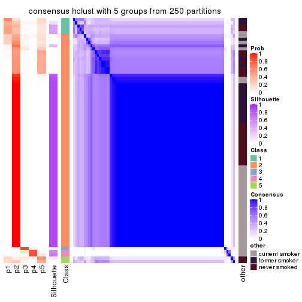
consensus_heatmap(res, k = 6)

Heatmaps for the membership of samples in all partitions to see how consistent they are:
membership_heatmap(res, k = 2)
membership_heatmap(res, k = 3)
membership_heatmap(res, k = 4)
membership_heatmap(res, k = 5)
membership_heatmap(res, k = 6)
As soon as we have had the classes for columns, we can look for signatures which are significantly different between classes which can be candidate marks for certain classes. Following are the heatmaps for signatures.
Signature heatmaps where rows are scaled:
get_signatures(res, k = 2)
get_signatures(res, k = 3)
get_signatures(res, k = 4)
get_signatures(res, k = 5)
get_signatures(res, k = 6)
Signature heatmaps where rows are not scaled:
get_signatures(res, k = 2, scale_rows = FALSE)
get_signatures(res, k = 3, scale_rows = FALSE)
get_signatures(res, k = 4, scale_rows = FALSE)
get_signatures(res, k = 5, scale_rows = FALSE)
get_signatures(res, k = 6, scale_rows = FALSE)

Compare the overlap of signatures from different k:
compare_signatures(res)
get_signature() returns a data frame invisibly. TO get the list of signatures, the function
call should be assigned to a variable explicitly. In following code, if plot argument is set
to FALSE, no heatmap is plotted while only the differential analysis is performed.
# code only for demonstration
tb = get_signature(res, k = ..., plot = FALSE)
An example of the output of tb is:
#> which_row fdr mean_1 mean_2 scaled_mean_1 scaled_mean_2 km
#> 1 38 0.042760348 8.373488 9.131774 -0.5533452 0.5164555 1
#> 2 40 0.018707592 7.106213 8.469186 -0.6173731 0.5762149 1
#> 3 55 0.019134737 10.221463 11.207825 -0.6159697 0.5749050 1
#> 4 59 0.006059896 5.921854 7.869574 -0.6899429 0.6439467 1
#> 5 60 0.018055526 8.928898 10.211722 -0.6204761 0.5791110 1
#> 6 98 0.009384629 15.714769 14.887706 0.6635654 -0.6193277 2
...
The columns in tb are:
which_row: row indices corresponding to the input matrix.fdr: FDR for the differential test. mean_x: The mean value in group x.scaled_mean_x: The mean value in group x after rows are scaled.km: Row groups if k-means clustering is applied to rows.UMAP plot which shows how samples are separated.
dimension_reduction(res, k = 2, method = "UMAP")
dimension_reduction(res, k = 3, method = "UMAP")
dimension_reduction(res, k = 4, method = "UMAP")
dimension_reduction(res, k = 5, method = "UMAP")
dimension_reduction(res, k = 6, method = "UMAP")
Following heatmap shows how subgroups are split when increasing k:
collect_classes(res)
Test correlation between subgroups and known annotations. If the known annotation is numeric, one-way ANOVA test is applied, and if the known annotation is discrete, chi-squared contingency table test is applied.
test_to_known_factors(res)
#> n other(p) k
#> CV:hclust 75 0.152 2
#> CV:hclust 70 0.295 3
#> CV:hclust 60 0.311 4
#> CV:hclust 55 0.394 5
#> CV:hclust 56 0.601 6
If matrix rows can be associated to genes, consider to use functional_enrichment(res,
...) to perform function enrichment for the signature genes. See this vignette for more detailed explanations.
The object with results only for a single top-value method and a single partition method can be extracted as:
res = res_list["CV", "kmeans"]
# you can also extract it by
# res = res_list["CV:kmeans"]
A summary of res and all the functions that can be applied to it:
res
#> A 'ConsensusPartition' object with k = 2, 3, 4, 5, 6.
#> On a matrix with 21104 rows and 75 columns.
#> Top rows (1000, 2000, 3000, 4000, 5000) are extracted by 'CV' method.
#> Subgroups are detected by 'kmeans' method.
#> Performed in total 1250 partitions by row resampling.
#> Best k for subgroups seems to be 2.
#>
#> Following methods can be applied to this 'ConsensusPartition' object:
#> [1] "cola_report" "collect_classes" "collect_plots"
#> [4] "collect_stats" "colnames" "compare_signatures"
#> [7] "consensus_heatmap" "dimension_reduction" "functional_enrichment"
#> [10] "get_anno_col" "get_anno" "get_classes"
#> [13] "get_consensus" "get_matrix" "get_membership"
#> [16] "get_param" "get_signatures" "get_stats"
#> [19] "is_best_k" "is_stable_k" "membership_heatmap"
#> [22] "ncol" "nrow" "plot_ecdf"
#> [25] "rownames" "select_partition_number" "show"
#> [28] "suggest_best_k" "test_to_known_factors"
collect_plots() function collects all the plots made from res for all k (number of partitions)
into one single page to provide an easy and fast comparison between different k.
collect_plots(res)

The plots are:
k and the heatmap of
predicted classes for each k.k.k.k.All the plots in panels can be made by individual functions and they are plotted later in this section.
select_partition_number() produces several plots showing different
statistics for choosing “optimized” k. There are following statistics:
k;k, the area increased is defined as \(A_k - A_{k-1}\).The detailed explanations of these statistics can be found in the cola vignette.
Generally speaking, lower PAC score, higher mean silhouette score or higher
concordance corresponds to better partition. Rand index and Jaccard index
measure how similar the current partition is compared to partition with k-1.
If they are too similar, we won't accept k is better than k-1.
select_partition_number(res)
The numeric values for all these statistics can be obtained by get_stats().
get_stats(res)
#> k 1-PAC mean_silhouette concordance area_increased Rand Jaccard
#> 2 2 1.000 1.000 1.000 0.4510 0.550 0.550
#> 3 3 0.703 0.714 0.821 0.2486 0.976 0.957
#> 4 4 0.704 0.663 0.790 0.1303 0.770 0.567
#> 5 5 0.631 0.840 0.831 0.0784 0.892 0.684
#> 6 6 0.564 0.791 0.810 0.0573 0.989 0.960
suggest_best_k() suggests the best \(k\) based on these statistics. The rules are as follows:
suggest_best_k(res)
#> [1] 2
Following shows the table of the partitions (You need to click the show/hide
code output link to see it). The membership matrix (columns with name p*)
is inferred by
clue::cl_consensus()
function with the SE method. Basically the value in the membership matrix
represents the probability to belong to a certain group. The finall class
label for an item is determined with the group with highest probability it
belongs to.
In get_classes() function, the entropy is calculated from the membership
matrix and the silhouette score is calculated from the consensus matrix.
cbind(get_classes(res, k = 2), get_membership(res, k = 2))
#> class entropy silhouette p1 p2
#> GSM15684 1 0 1 1 0
#> GSM15685 1 0 1 1 0
#> GSM15686 1 0 1 1 0
#> GSM15687 1 0 1 1 0
#> GSM15688 1 0 1 1 0
#> GSM15689 1 0 1 1 0
#> GSM15690 1 0 1 1 0
#> GSM15691 1 0 1 1 0
#> GSM15692 1 0 1 1 0
#> GSM15693 2 0 1 0 1
#> GSM15694 2 0 1 0 1
#> GSM15695 2 0 1 0 1
#> GSM15696 2 0 1 0 1
#> GSM15697 2 0 1 0 1
#> GSM15698 2 0 1 0 1
#> GSM15699 2 0 1 0 1
#> GSM15700 2 0 1 0 1
#> GSM15701 2 0 1 0 1
#> GSM15702 2 0 1 0 1
#> GSM15703 2 0 1 0 1
#> GSM15704 2 0 1 0 1
#> GSM15705 2 0 1 0 1
#> GSM15706 2 0 1 0 1
#> GSM15707 2 0 1 0 1
#> GSM15708 2 0 1 0 1
#> GSM15709 2 0 1 0 1
#> GSM15710 2 0 1 0 1
#> GSM15711 2 0 1 0 1
#> GSM15712 2 0 1 0 1
#> GSM15713 2 0 1 0 1
#> GSM15714 2 0 1 0 1
#> GSM15715 2 0 1 0 1
#> GSM15716 2 0 1 0 1
#> GSM15717 2 0 1 0 1
#> GSM15718 1 0 1 1 0
#> GSM15719 2 0 1 0 1
#> GSM15720 1 0 1 1 0
#> GSM15721 1 0 1 1 0
#> GSM15722 1 0 1 1 0
#> GSM15723 1 0 1 1 0
#> GSM15724 1 0 1 1 0
#> GSM15725 1 0 1 1 0
#> GSM15726 1 0 1 1 0
#> GSM15727 1 0 1 1 0
#> GSM15728 1 0 1 1 0
#> GSM15729 2 0 1 0 1
#> GSM15730 2 0 1 0 1
#> GSM15731 2 0 1 0 1
#> GSM15732 2 0 1 0 1
#> GSM15733 2 0 1 0 1
#> GSM15734 2 0 1 0 1
#> GSM15735 2 0 1 0 1
#> GSM15736 2 0 1 0 1
#> GSM15737 2 0 1 0 1
#> GSM15738 2 0 1 0 1
#> GSM15739 2 0 1 0 1
#> GSM15740 2 0 1 0 1
#> GSM15741 1 0 1 1 0
#> GSM15742 1 0 1 1 0
#> GSM15743 1 0 1 1 0
#> GSM15744 1 0 1 1 0
#> GSM15745 1 0 1 1 0
#> GSM15746 1 0 1 1 0
#> GSM15747 2 0 1 0 1
#> GSM15748 2 0 1 0 1
#> GSM15749 2 0 1 0 1
#> GSM15750 2 0 1 0 1
#> GSM15751 2 0 1 0 1
#> GSM15752 2 0 1 0 1
#> GSM15753 2 0 1 0 1
#> GSM15754 2 0 1 0 1
#> GSM15755 2 0 1 0 1
#> GSM15756 2 0 1 0 1
#> GSM15757 2 0 1 0 1
#> GSM15758 2 0 1 0 1
cbind(get_classes(res, k = 3), get_membership(res, k = 3))
#> class entropy silhouette p1 p2 p3
#> GSM15684 1 0.1964 0.6639 0.944 0.000 0.056
#> GSM15685 1 0.1964 0.6639 0.944 0.000 0.056
#> GSM15686 3 0.6154 0.9837 0.408 0.000 0.592
#> GSM15687 3 0.6168 0.9884 0.412 0.000 0.588
#> GSM15688 1 0.6062 -0.0346 0.616 0.000 0.384
#> GSM15689 1 0.0747 0.6868 0.984 0.000 0.016
#> GSM15690 3 0.6180 0.9835 0.416 0.000 0.584
#> GSM15691 1 0.6008 0.0515 0.628 0.000 0.372
#> GSM15692 1 0.5327 0.3740 0.728 0.000 0.272
#> GSM15693 2 0.0237 0.8404 0.000 0.996 0.004
#> GSM15694 2 0.0237 0.8404 0.000 0.996 0.004
#> GSM15695 2 0.0237 0.8404 0.000 0.996 0.004
#> GSM15696 2 0.0237 0.8404 0.000 0.996 0.004
#> GSM15697 2 0.0237 0.8411 0.000 0.996 0.004
#> GSM15698 2 0.0237 0.8411 0.000 0.996 0.004
#> GSM15699 2 0.0237 0.8404 0.000 0.996 0.004
#> GSM15700 2 0.5706 0.7607 0.000 0.680 0.320
#> GSM15701 2 0.0000 0.8410 0.000 1.000 0.000
#> GSM15702 2 0.5810 0.7576 0.000 0.664 0.336
#> GSM15703 2 0.0237 0.8404 0.000 0.996 0.004
#> GSM15704 2 0.0237 0.8411 0.000 0.996 0.004
#> GSM15705 2 0.0237 0.8404 0.000 0.996 0.004
#> GSM15706 2 0.0000 0.8410 0.000 1.000 0.000
#> GSM15707 2 0.0237 0.8404 0.000 0.996 0.004
#> GSM15708 2 0.6126 0.7326 0.000 0.600 0.400
#> GSM15709 2 0.6126 0.7326 0.000 0.600 0.400
#> GSM15710 2 0.0237 0.8404 0.000 0.996 0.004
#> GSM15711 2 0.0000 0.8410 0.000 1.000 0.000
#> GSM15712 2 0.5859 0.7551 0.000 0.656 0.344
#> GSM15713 2 0.0000 0.8410 0.000 1.000 0.000
#> GSM15714 2 0.0424 0.8410 0.000 0.992 0.008
#> GSM15715 2 0.6126 0.7326 0.000 0.600 0.400
#> GSM15716 2 0.0237 0.8404 0.000 0.996 0.004
#> GSM15717 2 0.1031 0.8385 0.000 0.976 0.024
#> GSM15718 1 0.1964 0.6639 0.944 0.000 0.056
#> GSM15719 2 0.1163 0.8377 0.000 0.972 0.028
#> GSM15720 1 0.5058 0.4037 0.756 0.000 0.244
#> GSM15721 1 0.0237 0.6888 0.996 0.000 0.004
#> GSM15722 1 0.5810 0.1705 0.664 0.000 0.336
#> GSM15723 1 0.5733 0.2097 0.676 0.000 0.324
#> GSM15724 1 0.0000 0.6892 1.000 0.000 0.000
#> GSM15725 1 0.0000 0.6892 1.000 0.000 0.000
#> GSM15726 1 0.0237 0.6888 0.996 0.000 0.004
#> GSM15727 1 0.0424 0.6902 0.992 0.000 0.008
#> GSM15728 1 0.5621 0.2482 0.692 0.000 0.308
#> GSM15729 2 0.5810 0.7576 0.000 0.664 0.336
#> GSM15730 2 0.0000 0.8410 0.000 1.000 0.000
#> GSM15731 2 0.0237 0.8404 0.000 0.996 0.004
#> GSM15732 2 0.5859 0.7547 0.000 0.656 0.344
#> GSM15733 2 0.6126 0.7326 0.000 0.600 0.400
#> GSM15734 2 0.0592 0.8404 0.000 0.988 0.012
#> GSM15735 2 0.0237 0.8404 0.000 0.996 0.004
#> GSM15736 2 0.6126 0.7326 0.000 0.600 0.400
#> GSM15737 2 0.6126 0.7326 0.000 0.600 0.400
#> GSM15738 2 0.6126 0.7326 0.000 0.600 0.400
#> GSM15739 2 0.1163 0.8377 0.000 0.972 0.028
#> GSM15740 2 0.0424 0.8409 0.000 0.992 0.008
#> GSM15741 1 0.3482 0.6200 0.872 0.000 0.128
#> GSM15742 1 0.5760 0.1927 0.672 0.000 0.328
#> GSM15743 1 0.0000 0.6892 1.000 0.000 0.000
#> GSM15744 1 0.5760 0.1739 0.672 0.000 0.328
#> GSM15745 1 0.0237 0.6893 0.996 0.000 0.004
#> GSM15746 1 0.2625 0.6619 0.916 0.000 0.084
#> GSM15747 2 0.6126 0.7326 0.000 0.600 0.400
#> GSM15748 2 0.0237 0.8404 0.000 0.996 0.004
#> GSM15749 2 0.0237 0.8404 0.000 0.996 0.004
#> GSM15750 2 0.6126 0.7326 0.000 0.600 0.400
#> GSM15751 2 0.6126 0.7326 0.000 0.600 0.400
#> GSM15752 2 0.6126 0.7326 0.000 0.600 0.400
#> GSM15753 2 0.6126 0.7326 0.000 0.600 0.400
#> GSM15754 2 0.0000 0.8410 0.000 1.000 0.000
#> GSM15755 2 0.6126 0.7326 0.000 0.600 0.400
#> GSM15756 2 0.6126 0.7326 0.000 0.600 0.400
#> GSM15757 2 0.6126 0.7326 0.000 0.600 0.400
#> GSM15758 2 0.0237 0.8404 0.000 0.996 0.004
cbind(get_classes(res, k = 4), get_membership(res, k = 4))
#> class entropy silhouette p1 p2 p3 p4
#> GSM15684 1 0.5121 0.6365 0.764 0.000 0.116 0.120
#> GSM15685 1 0.5174 0.6328 0.760 0.000 0.116 0.124
#> GSM15686 4 0.5820 0.5313 0.084 0.000 0.232 0.684
#> GSM15687 4 0.5962 0.5175 0.080 0.000 0.260 0.660
#> GSM15688 4 0.5386 0.5868 0.368 0.000 0.020 0.612
#> GSM15689 1 0.0895 0.7334 0.976 0.000 0.004 0.020
#> GSM15690 4 0.5968 0.5222 0.084 0.000 0.252 0.664
#> GSM15691 4 0.5300 0.5831 0.308 0.000 0.028 0.664
#> GSM15692 1 0.6788 -0.0444 0.480 0.000 0.096 0.424
#> GSM15693 2 0.0921 0.8494 0.000 0.972 0.000 0.028
#> GSM15694 2 0.0469 0.8524 0.000 0.988 0.000 0.012
#> GSM15695 2 0.0469 0.8524 0.000 0.988 0.000 0.012
#> GSM15696 2 0.0657 0.8530 0.000 0.984 0.004 0.012
#> GSM15697 2 0.0657 0.8530 0.000 0.984 0.004 0.012
#> GSM15698 2 0.1211 0.8447 0.000 0.960 0.000 0.040
#> GSM15699 2 0.1211 0.8447 0.000 0.960 0.000 0.040
#> GSM15700 2 0.5685 -0.6666 0.000 0.516 0.460 0.024
#> GSM15701 2 0.0336 0.8528 0.000 0.992 0.008 0.000
#> GSM15702 2 0.5151 -0.6480 0.000 0.532 0.464 0.004
#> GSM15703 2 0.0921 0.8494 0.000 0.972 0.000 0.028
#> GSM15704 2 0.0336 0.8528 0.000 0.992 0.008 0.000
#> GSM15705 2 0.0779 0.8533 0.000 0.980 0.004 0.016
#> GSM15706 2 0.0927 0.8491 0.000 0.976 0.008 0.016
#> GSM15707 2 0.0376 0.8537 0.000 0.992 0.004 0.004
#> GSM15708 3 0.4776 0.9884 0.000 0.376 0.624 0.000
#> GSM15709 3 0.5039 0.9548 0.000 0.404 0.592 0.004
#> GSM15710 2 0.0376 0.8537 0.000 0.992 0.004 0.004
#> GSM15711 2 0.1059 0.8490 0.000 0.972 0.012 0.016
#> GSM15712 2 0.5776 -0.6887 0.000 0.504 0.468 0.028
#> GSM15713 2 0.1042 0.8478 0.000 0.972 0.008 0.020
#> GSM15714 2 0.1356 0.8437 0.000 0.960 0.008 0.032
#> GSM15715 3 0.4776 0.9884 0.000 0.376 0.624 0.000
#> GSM15716 2 0.0817 0.8495 0.000 0.976 0.000 0.024
#> GSM15717 2 0.2224 0.8191 0.000 0.928 0.032 0.040
#> GSM15718 1 0.5010 0.6410 0.772 0.000 0.108 0.120
#> GSM15719 2 0.2197 0.8247 0.000 0.928 0.024 0.048
#> GSM15720 1 0.5476 -0.1994 0.584 0.000 0.020 0.396
#> GSM15721 1 0.0000 0.7366 1.000 0.000 0.000 0.000
#> GSM15722 4 0.5055 0.5925 0.368 0.000 0.008 0.624
#> GSM15723 4 0.5398 0.5673 0.404 0.000 0.016 0.580
#> GSM15724 1 0.0336 0.7346 0.992 0.000 0.000 0.008
#> GSM15725 1 0.0000 0.7366 1.000 0.000 0.000 0.000
#> GSM15726 1 0.0000 0.7366 1.000 0.000 0.000 0.000
#> GSM15727 1 0.0707 0.7289 0.980 0.000 0.000 0.020
#> GSM15728 1 0.5928 -0.4072 0.508 0.000 0.036 0.456
#> GSM15729 2 0.5288 -0.6748 0.000 0.520 0.472 0.008
#> GSM15730 2 0.0524 0.8520 0.000 0.988 0.008 0.004
#> GSM15731 2 0.0817 0.8495 0.000 0.976 0.000 0.024
#> GSM15732 2 0.5862 -0.7354 0.000 0.484 0.484 0.032
#> GSM15733 3 0.4950 0.9860 0.000 0.376 0.620 0.004
#> GSM15734 2 0.0927 0.8482 0.000 0.976 0.016 0.008
#> GSM15735 2 0.0817 0.8495 0.000 0.976 0.000 0.024
#> GSM15736 3 0.4776 0.9884 0.000 0.376 0.624 0.000
#> GSM15737 3 0.4776 0.9884 0.000 0.376 0.624 0.000
#> GSM15738 3 0.4776 0.9884 0.000 0.376 0.624 0.000
#> GSM15739 2 0.1837 0.8272 0.000 0.944 0.028 0.028
#> GSM15740 2 0.1488 0.8410 0.000 0.956 0.012 0.032
#> GSM15741 1 0.6454 0.2620 0.572 0.000 0.084 0.344
#> GSM15742 4 0.5708 0.5420 0.416 0.000 0.028 0.556
#> GSM15743 1 0.0376 0.7370 0.992 0.000 0.004 0.004
#> GSM15744 4 0.5097 0.5456 0.428 0.000 0.004 0.568
#> GSM15745 1 0.0469 0.7369 0.988 0.000 0.012 0.000
#> GSM15746 1 0.4761 0.6138 0.764 0.000 0.044 0.192
#> GSM15747 3 0.4776 0.9884 0.000 0.376 0.624 0.000
#> GSM15748 2 0.1211 0.8457 0.000 0.960 0.000 0.040
#> GSM15749 2 0.0921 0.8494 0.000 0.972 0.000 0.028
#> GSM15750 3 0.5204 0.9791 0.000 0.376 0.612 0.012
#> GSM15751 3 0.4776 0.9884 0.000 0.376 0.624 0.000
#> GSM15752 3 0.4776 0.9884 0.000 0.376 0.624 0.000
#> GSM15753 3 0.4817 0.9789 0.000 0.388 0.612 0.000
#> GSM15754 2 0.0336 0.8528 0.000 0.992 0.008 0.000
#> GSM15755 3 0.4776 0.9884 0.000 0.376 0.624 0.000
#> GSM15756 3 0.5050 0.9487 0.000 0.408 0.588 0.004
#> GSM15757 3 0.4978 0.9799 0.000 0.384 0.612 0.004
#> GSM15758 2 0.1557 0.8445 0.000 0.944 0.000 0.056
cbind(get_classes(res, k = 5), get_membership(res, k = 5))
#> class entropy silhouette p1 p2 p3 p4 p5
#> GSM15684 1 0.6174 0.605 0.656 0.000 0.104 0.176 0.064
#> GSM15685 1 0.6174 0.605 0.656 0.000 0.104 0.176 0.064
#> GSM15686 5 0.3511 0.948 0.004 0.000 0.012 0.184 0.800
#> GSM15687 5 0.2964 0.959 0.004 0.000 0.004 0.152 0.840
#> GSM15688 4 0.6264 0.719 0.208 0.000 0.096 0.636 0.060
#> GSM15689 1 0.1547 0.784 0.948 0.000 0.016 0.032 0.004
#> GSM15690 5 0.3801 0.948 0.012 0.000 0.028 0.152 0.808
#> GSM15691 4 0.3584 0.720 0.148 0.000 0.020 0.820 0.012
#> GSM15692 4 0.6984 0.463 0.288 0.000 0.108 0.532 0.072
#> GSM15693 2 0.1012 0.954 0.000 0.968 0.000 0.012 0.020
#> GSM15694 2 0.0693 0.956 0.000 0.980 0.000 0.008 0.012
#> GSM15695 2 0.0693 0.956 0.000 0.980 0.000 0.008 0.012
#> GSM15696 2 0.0404 0.957 0.000 0.988 0.000 0.000 0.012
#> GSM15697 2 0.0854 0.957 0.000 0.976 0.004 0.008 0.012
#> GSM15698 2 0.1471 0.951 0.000 0.952 0.004 0.020 0.024
#> GSM15699 2 0.1117 0.955 0.000 0.964 0.000 0.016 0.020
#> GSM15700 3 0.5635 0.757 0.000 0.392 0.548 0.028 0.032
#> GSM15701 2 0.0000 0.956 0.000 1.000 0.000 0.000 0.000
#> GSM15702 3 0.4367 0.760 0.000 0.416 0.580 0.000 0.004
#> GSM15703 2 0.1012 0.954 0.000 0.968 0.000 0.012 0.020
#> GSM15704 2 0.0451 0.954 0.000 0.988 0.008 0.000 0.004
#> GSM15705 2 0.0162 0.956 0.000 0.996 0.000 0.000 0.004
#> GSM15706 2 0.0324 0.956 0.000 0.992 0.000 0.004 0.004
#> GSM15707 2 0.0290 0.957 0.000 0.992 0.000 0.000 0.008
#> GSM15708 3 0.3550 0.930 0.000 0.236 0.760 0.000 0.004
#> GSM15709 3 0.3561 0.927 0.000 0.260 0.740 0.000 0.000
#> GSM15710 2 0.0000 0.956 0.000 1.000 0.000 0.000 0.000
#> GSM15711 2 0.0566 0.953 0.000 0.984 0.012 0.000 0.004
#> GSM15712 3 0.5807 0.792 0.000 0.352 0.572 0.032 0.044
#> GSM15713 2 0.1082 0.944 0.000 0.964 0.000 0.028 0.008
#> GSM15714 2 0.1996 0.921 0.000 0.928 0.004 0.032 0.036
#> GSM15715 3 0.3970 0.928 0.000 0.236 0.744 0.000 0.020
#> GSM15716 2 0.0912 0.956 0.000 0.972 0.000 0.012 0.016
#> GSM15717 2 0.3606 0.847 0.000 0.852 0.052 0.040 0.056
#> GSM15718 1 0.6128 0.608 0.660 0.000 0.100 0.176 0.064
#> GSM15719 2 0.3890 0.842 0.000 0.836 0.052 0.052 0.060
#> GSM15720 1 0.6023 -0.411 0.480 0.000 0.048 0.440 0.032
#> GSM15721 1 0.0162 0.791 0.996 0.000 0.000 0.000 0.004
#> GSM15722 4 0.3840 0.753 0.208 0.000 0.012 0.772 0.008
#> GSM15723 4 0.3487 0.753 0.212 0.000 0.008 0.780 0.000
#> GSM15724 1 0.0000 0.790 1.000 0.000 0.000 0.000 0.000
#> GSM15725 1 0.0000 0.790 1.000 0.000 0.000 0.000 0.000
#> GSM15726 1 0.0162 0.791 0.996 0.000 0.000 0.000 0.004
#> GSM15727 1 0.0771 0.775 0.976 0.000 0.004 0.020 0.000
#> GSM15728 4 0.7033 0.576 0.372 0.000 0.068 0.464 0.096
#> GSM15729 3 0.4182 0.787 0.000 0.400 0.600 0.000 0.000
#> GSM15730 2 0.0290 0.954 0.000 0.992 0.008 0.000 0.000
#> GSM15731 2 0.0807 0.955 0.000 0.976 0.000 0.012 0.012
#> GSM15732 3 0.6077 0.816 0.000 0.320 0.580 0.040 0.060
#> GSM15733 3 0.4888 0.915 0.000 0.236 0.704 0.012 0.048
#> GSM15734 2 0.0865 0.945 0.000 0.972 0.024 0.000 0.004
#> GSM15735 2 0.0807 0.955 0.000 0.976 0.000 0.012 0.012
#> GSM15736 3 0.3550 0.930 0.000 0.236 0.760 0.004 0.000
#> GSM15737 3 0.4033 0.927 0.000 0.236 0.744 0.004 0.016
#> GSM15738 3 0.4033 0.927 0.000 0.236 0.744 0.004 0.016
#> GSM15739 2 0.3297 0.857 0.000 0.868 0.060 0.032 0.040
#> GSM15740 2 0.2575 0.903 0.000 0.904 0.016 0.036 0.044
#> GSM15741 4 0.6940 0.440 0.304 0.000 0.108 0.524 0.064
#> GSM15742 4 0.5880 0.734 0.252 0.000 0.064 0.640 0.044
#> GSM15743 1 0.0798 0.788 0.976 0.000 0.008 0.016 0.000
#> GSM15744 4 0.5055 0.708 0.264 0.000 0.032 0.680 0.024
#> GSM15745 1 0.0865 0.789 0.972 0.000 0.004 0.024 0.000
#> GSM15746 1 0.5023 0.624 0.732 0.000 0.080 0.168 0.020
#> GSM15747 3 0.3395 0.929 0.000 0.236 0.764 0.000 0.000
#> GSM15748 2 0.1818 0.938 0.000 0.932 0.000 0.024 0.044
#> GSM15749 2 0.1012 0.954 0.000 0.968 0.000 0.012 0.020
#> GSM15750 3 0.4601 0.922 0.000 0.236 0.720 0.012 0.032
#> GSM15751 3 0.3550 0.930 0.000 0.236 0.760 0.000 0.004
#> GSM15752 3 0.3970 0.928 0.000 0.236 0.744 0.000 0.020
#> GSM15753 3 0.3534 0.928 0.000 0.256 0.744 0.000 0.000
#> GSM15754 2 0.0000 0.956 0.000 1.000 0.000 0.000 0.000
#> GSM15755 3 0.3550 0.929 0.000 0.236 0.760 0.000 0.004
#> GSM15756 3 0.3561 0.927 0.000 0.260 0.740 0.000 0.000
#> GSM15757 3 0.3790 0.930 0.000 0.248 0.744 0.004 0.004
#> GSM15758 2 0.2659 0.911 0.000 0.888 0.000 0.052 0.060
cbind(get_classes(res, k = 6), get_membership(res, k = 6))
#> class entropy silhouette p1 p2 p3 p4 p5 p6
#> GSM15684 6 0.5348 0.987 0.400 0.000 0.000 0.076 0.012 0.512
#> GSM15685 6 0.5348 0.987 0.400 0.000 0.000 0.076 0.012 0.512
#> GSM15686 5 0.3042 0.895 0.000 0.000 0.020 0.100 0.852 0.028
#> GSM15687 5 0.1531 0.909 0.000 0.000 0.000 0.068 0.928 0.004
#> GSM15688 4 0.6360 0.613 0.124 0.000 0.044 0.620 0.052 0.160
#> GSM15689 1 0.2432 0.670 0.888 0.000 0.008 0.024 0.000 0.080
#> GSM15690 5 0.4030 0.869 0.004 0.000 0.052 0.100 0.800 0.044
#> GSM15691 4 0.3508 0.655 0.076 0.000 0.008 0.840 0.032 0.044
#> GSM15692 4 0.6724 0.301 0.148 0.000 0.024 0.464 0.032 0.332
#> GSM15693 2 0.2404 0.901 0.000 0.872 0.000 0.000 0.016 0.112
#> GSM15694 2 0.1745 0.910 0.000 0.920 0.000 0.000 0.012 0.068
#> GSM15695 2 0.1745 0.910 0.000 0.920 0.000 0.000 0.012 0.068
#> GSM15696 2 0.1686 0.912 0.000 0.924 0.000 0.000 0.012 0.064
#> GSM15697 2 0.1531 0.913 0.000 0.928 0.000 0.000 0.004 0.068
#> GSM15698 2 0.2834 0.891 0.000 0.848 0.000 0.008 0.016 0.128
#> GSM15699 2 0.2959 0.891 0.000 0.844 0.000 0.008 0.024 0.124
#> GSM15700 3 0.5677 0.637 0.000 0.384 0.512 0.008 0.016 0.080
#> GSM15701 2 0.0260 0.911 0.000 0.992 0.000 0.000 0.000 0.008
#> GSM15702 3 0.4165 0.598 0.000 0.452 0.536 0.000 0.000 0.012
#> GSM15703 2 0.2404 0.901 0.000 0.872 0.000 0.000 0.016 0.112
#> GSM15704 2 0.0858 0.913 0.000 0.968 0.004 0.000 0.000 0.028
#> GSM15705 2 0.0777 0.911 0.000 0.972 0.000 0.000 0.004 0.024
#> GSM15706 2 0.0777 0.905 0.000 0.972 0.000 0.000 0.004 0.024
#> GSM15707 2 0.0717 0.915 0.000 0.976 0.000 0.000 0.008 0.016
#> GSM15708 3 0.2300 0.869 0.000 0.144 0.856 0.000 0.000 0.000
#> GSM15709 3 0.3560 0.831 0.000 0.256 0.732 0.000 0.004 0.008
#> GSM15710 2 0.0508 0.914 0.000 0.984 0.000 0.000 0.004 0.012
#> GSM15711 2 0.0964 0.904 0.000 0.968 0.012 0.000 0.004 0.016
#> GSM15712 3 0.5483 0.675 0.000 0.352 0.548 0.000 0.024 0.076
#> GSM15713 2 0.1297 0.897 0.000 0.948 0.000 0.000 0.012 0.040
#> GSM15714 2 0.2383 0.874 0.000 0.880 0.000 0.000 0.024 0.096
#> GSM15715 3 0.3248 0.867 0.000 0.144 0.824 0.008 0.016 0.008
#> GSM15716 2 0.2121 0.907 0.000 0.892 0.000 0.000 0.012 0.096
#> GSM15717 2 0.3650 0.826 0.000 0.812 0.024 0.008 0.024 0.132
#> GSM15718 6 0.5342 0.983 0.396 0.000 0.000 0.076 0.012 0.516
#> GSM15719 2 0.4105 0.817 0.000 0.776 0.028 0.008 0.032 0.156
#> GSM15720 1 0.6235 -0.145 0.484 0.000 0.044 0.384 0.020 0.068
#> GSM15721 1 0.0692 0.783 0.976 0.000 0.000 0.004 0.000 0.020
#> GSM15722 4 0.2622 0.673 0.088 0.000 0.008 0.880 0.008 0.016
#> GSM15723 4 0.2841 0.680 0.124 0.000 0.004 0.852 0.008 0.012
#> GSM15724 1 0.0291 0.783 0.992 0.000 0.000 0.004 0.000 0.004
#> GSM15725 1 0.0291 0.785 0.992 0.000 0.000 0.004 0.000 0.004
#> GSM15726 1 0.0603 0.784 0.980 0.000 0.000 0.004 0.000 0.016
#> GSM15727 1 0.0547 0.774 0.980 0.000 0.000 0.020 0.000 0.000
#> GSM15728 4 0.7694 0.350 0.364 0.000 0.064 0.364 0.084 0.124
#> GSM15729 3 0.4136 0.642 0.000 0.428 0.560 0.000 0.000 0.012
#> GSM15730 2 0.0405 0.908 0.000 0.988 0.004 0.000 0.000 0.008
#> GSM15731 2 0.2112 0.905 0.000 0.896 0.000 0.000 0.016 0.088
#> GSM15732 3 0.6043 0.719 0.000 0.252 0.568 0.012 0.020 0.148
#> GSM15733 3 0.3965 0.854 0.000 0.144 0.788 0.012 0.012 0.044
#> GSM15734 2 0.1232 0.899 0.000 0.956 0.016 0.000 0.004 0.024
#> GSM15735 2 0.2163 0.905 0.000 0.892 0.000 0.000 0.016 0.092
#> GSM15736 3 0.2442 0.869 0.000 0.144 0.852 0.004 0.000 0.000
#> GSM15737 3 0.2948 0.867 0.000 0.144 0.836 0.008 0.008 0.004
#> GSM15738 3 0.2948 0.867 0.000 0.144 0.836 0.008 0.008 0.004
#> GSM15739 2 0.2756 0.855 0.000 0.872 0.028 0.000 0.016 0.084
#> GSM15740 2 0.2686 0.864 0.000 0.868 0.008 0.000 0.024 0.100
#> GSM15741 4 0.6710 0.332 0.140 0.000 0.032 0.448 0.024 0.356
#> GSM15742 4 0.5851 0.649 0.148 0.000 0.036 0.664 0.040 0.112
#> GSM15743 1 0.0725 0.783 0.976 0.000 0.000 0.012 0.000 0.012
#> GSM15744 4 0.5290 0.632 0.212 0.000 0.028 0.676 0.020 0.064
#> GSM15745 1 0.1542 0.739 0.936 0.000 0.004 0.008 0.000 0.052
#> GSM15746 1 0.5923 -0.135 0.596 0.000 0.012 0.136 0.024 0.232
#> GSM15747 3 0.2553 0.869 0.000 0.144 0.848 0.000 0.000 0.008
#> GSM15748 2 0.3321 0.865 0.000 0.796 0.000 0.008 0.016 0.180
#> GSM15749 2 0.2404 0.901 0.000 0.872 0.000 0.000 0.016 0.112
#> GSM15750 3 0.4380 0.845 0.000 0.144 0.764 0.020 0.012 0.060
#> GSM15751 3 0.2300 0.869 0.000 0.144 0.856 0.000 0.000 0.000
#> GSM15752 3 0.3248 0.866 0.000 0.144 0.824 0.008 0.008 0.016
#> GSM15753 3 0.2964 0.857 0.000 0.204 0.792 0.000 0.000 0.004
#> GSM15754 2 0.0632 0.915 0.000 0.976 0.000 0.000 0.000 0.024
#> GSM15755 3 0.2442 0.869 0.000 0.144 0.852 0.004 0.000 0.000
#> GSM15756 3 0.3468 0.829 0.000 0.264 0.728 0.000 0.000 0.008
#> GSM15757 3 0.3018 0.866 0.000 0.168 0.816 0.000 0.004 0.012
#> GSM15758 2 0.3352 0.867 0.000 0.792 0.000 0.000 0.032 0.176
Heatmaps for the consensus matrix. It visualizes the probability of two samples to be in a same group.
consensus_heatmap(res, k = 2)

consensus_heatmap(res, k = 3)
consensus_heatmap(res, k = 4)
consensus_heatmap(res, k = 5)
consensus_heatmap(res, k = 6)
Heatmaps for the membership of samples in all partitions to see how consistent they are:
membership_heatmap(res, k = 2)

membership_heatmap(res, k = 3)
membership_heatmap(res, k = 4)
membership_heatmap(res, k = 5)
membership_heatmap(res, k = 6)
As soon as we have had the classes for columns, we can look for signatures which are significantly different between classes which can be candidate marks for certain classes. Following are the heatmaps for signatures.
Signature heatmaps where rows are scaled:
get_signatures(res, k = 2)

get_signatures(res, k = 3)
get_signatures(res, k = 4)
get_signatures(res, k = 5)
get_signatures(res, k = 6)
Signature heatmaps where rows are not scaled:
get_signatures(res, k = 2, scale_rows = FALSE)

get_signatures(res, k = 3, scale_rows = FALSE)

get_signatures(res, k = 4, scale_rows = FALSE)
get_signatures(res, k = 5, scale_rows = FALSE)
get_signatures(res, k = 6, scale_rows = FALSE)
Compare the overlap of signatures from different k:
compare_signatures(res)
get_signature() returns a data frame invisibly. TO get the list of signatures, the function
call should be assigned to a variable explicitly. In following code, if plot argument is set
to FALSE, no heatmap is plotted while only the differential analysis is performed.
# code only for demonstration
tb = get_signature(res, k = ..., plot = FALSE)
An example of the output of tb is:
#> which_row fdr mean_1 mean_2 scaled_mean_1 scaled_mean_2 km
#> 1 38 0.042760348 8.373488 9.131774 -0.5533452 0.5164555 1
#> 2 40 0.018707592 7.106213 8.469186 -0.6173731 0.5762149 1
#> 3 55 0.019134737 10.221463 11.207825 -0.6159697 0.5749050 1
#> 4 59 0.006059896 5.921854 7.869574 -0.6899429 0.6439467 1
#> 5 60 0.018055526 8.928898 10.211722 -0.6204761 0.5791110 1
#> 6 98 0.009384629 15.714769 14.887706 0.6635654 -0.6193277 2
...
The columns in tb are:
which_row: row indices corresponding to the input matrix.fdr: FDR for the differential test. mean_x: The mean value in group x.scaled_mean_x: The mean value in group x after rows are scaled.km: Row groups if k-means clustering is applied to rows.UMAP plot which shows how samples are separated.
dimension_reduction(res, k = 2, method = "UMAP")
dimension_reduction(res, k = 3, method = "UMAP")
dimension_reduction(res, k = 4, method = "UMAP")
dimension_reduction(res, k = 5, method = "UMAP")
dimension_reduction(res, k = 6, method = "UMAP")
Following heatmap shows how subgroups are split when increasing k:
collect_classes(res)
Test correlation between subgroups and known annotations. If the known annotation is numeric, one-way ANOVA test is applied, and if the known annotation is discrete, chi-squared contingency table test is applied.
test_to_known_factors(res)
#> n other(p) k
#> CV:kmeans 75 0.4095 2
#> CV:kmeans 66 0.1473 3
#> CV:kmeans 66 0.0278 4
#> CV:kmeans 72 0.0747 5
#> CV:kmeans 70 0.0778 6
If matrix rows can be associated to genes, consider to use functional_enrichment(res,
...) to perform function enrichment for the signature genes. See this vignette for more detailed explanations.
The object with results only for a single top-value method and a single partition method can be extracted as:
res = res_list["CV", "skmeans"]
# you can also extract it by
# res = res_list["CV:skmeans"]
A summary of res and all the functions that can be applied to it:
res
#> A 'ConsensusPartition' object with k = 2, 3, 4, 5, 6.
#> On a matrix with 21104 rows and 75 columns.
#> Top rows (1000, 2000, 3000, 4000, 5000) are extracted by 'CV' method.
#> Subgroups are detected by 'skmeans' method.
#> Performed in total 1250 partitions by row resampling.
#> Best k for subgroups seems to be 3.
#>
#> Following methods can be applied to this 'ConsensusPartition' object:
#> [1] "cola_report" "collect_classes" "collect_plots"
#> [4] "collect_stats" "colnames" "compare_signatures"
#> [7] "consensus_heatmap" "dimension_reduction" "functional_enrichment"
#> [10] "get_anno_col" "get_anno" "get_classes"
#> [13] "get_consensus" "get_matrix" "get_membership"
#> [16] "get_param" "get_signatures" "get_stats"
#> [19] "is_best_k" "is_stable_k" "membership_heatmap"
#> [22] "ncol" "nrow" "plot_ecdf"
#> [25] "rownames" "select_partition_number" "show"
#> [28] "suggest_best_k" "test_to_known_factors"
collect_plots() function collects all the plots made from res for all k (number of partitions)
into one single page to provide an easy and fast comparison between different k.
collect_plots(res)
The plots are:
k and the heatmap of
predicted classes for each k.k.k.k.All the plots in panels can be made by individual functions and they are plotted later in this section.
select_partition_number() produces several plots showing different
statistics for choosing “optimized” k. There are following statistics:
k;k, the area increased is defined as \(A_k - A_{k-1}\).The detailed explanations of these statistics can be found in the cola vignette.
Generally speaking, lower PAC score, higher mean silhouette score or higher
concordance corresponds to better partition. Rand index and Jaccard index
measure how similar the current partition is compared to partition with k-1.
If they are too similar, we won't accept k is better than k-1.
select_partition_number(res)
The numeric values for all these statistics can be obtained by get_stats().
get_stats(res)
#> k 1-PAC mean_silhouette concordance area_increased Rand Jaccard
#> 2 2 1.000 1.000 1.000 0.4510 0.550 0.550
#> 3 3 0.909 0.936 0.967 0.4808 0.784 0.607
#> 4 4 0.720 0.665 0.818 0.1062 0.939 0.818
#> 5 5 0.596 0.584 0.731 0.0573 0.956 0.848
#> 6 6 0.598 0.514 0.640 0.0414 0.948 0.816
suggest_best_k() suggests the best \(k\) based on these statistics. The rules are as follows:
suggest_best_k(res)
#> [1] 3
#> attr(,"optional")
#> [1] 2
There is also optional best \(k\) = 2 that is worth to check.
Following shows the table of the partitions (You need to click the show/hide
code output link to see it). The membership matrix (columns with name p*)
is inferred by
clue::cl_consensus()
function with the SE method. Basically the value in the membership matrix
represents the probability to belong to a certain group. The finall class
label for an item is determined with the group with highest probability it
belongs to.
In get_classes() function, the entropy is calculated from the membership
matrix and the silhouette score is calculated from the consensus matrix.
cbind(get_classes(res, k = 2), get_membership(res, k = 2))
#> class entropy silhouette p1 p2
#> GSM15684 1 0 1 1 0
#> GSM15685 1 0 1 1 0
#> GSM15686 1 0 1 1 0
#> GSM15687 1 0 1 1 0
#> GSM15688 1 0 1 1 0
#> GSM15689 1 0 1 1 0
#> GSM15690 1 0 1 1 0
#> GSM15691 1 0 1 1 0
#> GSM15692 1 0 1 1 0
#> GSM15693 2 0 1 0 1
#> GSM15694 2 0 1 0 1
#> GSM15695 2 0 1 0 1
#> GSM15696 2 0 1 0 1
#> GSM15697 2 0 1 0 1
#> GSM15698 2 0 1 0 1
#> GSM15699 2 0 1 0 1
#> GSM15700 2 0 1 0 1
#> GSM15701 2 0 1 0 1
#> GSM15702 2 0 1 0 1
#> GSM15703 2 0 1 0 1
#> GSM15704 2 0 1 0 1
#> GSM15705 2 0 1 0 1
#> GSM15706 2 0 1 0 1
#> GSM15707 2 0 1 0 1
#> GSM15708 2 0 1 0 1
#> GSM15709 2 0 1 0 1
#> GSM15710 2 0 1 0 1
#> GSM15711 2 0 1 0 1
#> GSM15712 2 0 1 0 1
#> GSM15713 2 0 1 0 1
#> GSM15714 2 0 1 0 1
#> GSM15715 2 0 1 0 1
#> GSM15716 2 0 1 0 1
#> GSM15717 2 0 1 0 1
#> GSM15718 1 0 1 1 0
#> GSM15719 2 0 1 0 1
#> GSM15720 1 0 1 1 0
#> GSM15721 1 0 1 1 0
#> GSM15722 1 0 1 1 0
#> GSM15723 1 0 1 1 0
#> GSM15724 1 0 1 1 0
#> GSM15725 1 0 1 1 0
#> GSM15726 1 0 1 1 0
#> GSM15727 1 0 1 1 0
#> GSM15728 1 0 1 1 0
#> GSM15729 2 0 1 0 1
#> GSM15730 2 0 1 0 1
#> GSM15731 2 0 1 0 1
#> GSM15732 2 0 1 0 1
#> GSM15733 2 0 1 0 1
#> GSM15734 2 0 1 0 1
#> GSM15735 2 0 1 0 1
#> GSM15736 2 0 1 0 1
#> GSM15737 2 0 1 0 1
#> GSM15738 2 0 1 0 1
#> GSM15739 2 0 1 0 1
#> GSM15740 2 0 1 0 1
#> GSM15741 1 0 1 1 0
#> GSM15742 1 0 1 1 0
#> GSM15743 1 0 1 1 0
#> GSM15744 1 0 1 1 0
#> GSM15745 1 0 1 1 0
#> GSM15746 1 0 1 1 0
#> GSM15747 2 0 1 0 1
#> GSM15748 2 0 1 0 1
#> GSM15749 2 0 1 0 1
#> GSM15750 2 0 1 0 1
#> GSM15751 2 0 1 0 1
#> GSM15752 2 0 1 0 1
#> GSM15753 2 0 1 0 1
#> GSM15754 2 0 1 0 1
#> GSM15755 2 0 1 0 1
#> GSM15756 2 0 1 0 1
#> GSM15757 2 0 1 0 1
#> GSM15758 2 0 1 0 1
cbind(get_classes(res, k = 3), get_membership(res, k = 3))
#> class entropy silhouette p1 p2 p3
#> GSM15684 1 0.0000 1.000 1 0.000 0.000
#> GSM15685 1 0.0000 1.000 1 0.000 0.000
#> GSM15686 1 0.0000 1.000 1 0.000 0.000
#> GSM15687 1 0.0000 1.000 1 0.000 0.000
#> GSM15688 1 0.0000 1.000 1 0.000 0.000
#> GSM15689 1 0.0000 1.000 1 0.000 0.000
#> GSM15690 1 0.0000 1.000 1 0.000 0.000
#> GSM15691 1 0.0000 1.000 1 0.000 0.000
#> GSM15692 1 0.0000 1.000 1 0.000 0.000
#> GSM15693 2 0.0000 0.943 0 1.000 0.000
#> GSM15694 2 0.0000 0.943 0 1.000 0.000
#> GSM15695 2 0.0000 0.943 0 1.000 0.000
#> GSM15696 2 0.1529 0.933 0 0.960 0.040
#> GSM15697 2 0.3686 0.844 0 0.860 0.140
#> GSM15698 2 0.2165 0.918 0 0.936 0.064
#> GSM15699 2 0.0000 0.943 0 1.000 0.000
#> GSM15700 3 0.4346 0.793 0 0.184 0.816
#> GSM15701 2 0.0237 0.943 0 0.996 0.004
#> GSM15702 3 0.5178 0.677 0 0.256 0.744
#> GSM15703 2 0.0000 0.943 0 1.000 0.000
#> GSM15704 2 0.1964 0.925 0 0.944 0.056
#> GSM15705 2 0.0237 0.943 0 0.996 0.004
#> GSM15706 2 0.0000 0.943 0 1.000 0.000
#> GSM15707 2 0.0000 0.943 0 1.000 0.000
#> GSM15708 3 0.0000 0.948 0 0.000 1.000
#> GSM15709 3 0.1529 0.932 0 0.040 0.960
#> GSM15710 2 0.0000 0.943 0 1.000 0.000
#> GSM15711 2 0.1753 0.930 0 0.952 0.048
#> GSM15712 3 0.2625 0.903 0 0.084 0.916
#> GSM15713 2 0.1643 0.932 0 0.956 0.044
#> GSM15714 2 0.1529 0.934 0 0.960 0.040
#> GSM15715 3 0.0000 0.948 0 0.000 1.000
#> GSM15716 2 0.0000 0.943 0 1.000 0.000
#> GSM15717 2 0.5926 0.476 0 0.644 0.356
#> GSM15718 1 0.0000 1.000 1 0.000 0.000
#> GSM15719 2 0.4887 0.731 0 0.772 0.228
#> GSM15720 1 0.0000 1.000 1 0.000 0.000
#> GSM15721 1 0.0000 1.000 1 0.000 0.000
#> GSM15722 1 0.0000 1.000 1 0.000 0.000
#> GSM15723 1 0.0000 1.000 1 0.000 0.000
#> GSM15724 1 0.0000 1.000 1 0.000 0.000
#> GSM15725 1 0.0000 1.000 1 0.000 0.000
#> GSM15726 1 0.0000 1.000 1 0.000 0.000
#> GSM15727 1 0.0000 1.000 1 0.000 0.000
#> GSM15728 1 0.0000 1.000 1 0.000 0.000
#> GSM15729 3 0.4002 0.825 0 0.160 0.840
#> GSM15730 2 0.1411 0.936 0 0.964 0.036
#> GSM15731 2 0.0000 0.943 0 1.000 0.000
#> GSM15732 3 0.3340 0.869 0 0.120 0.880
#> GSM15733 3 0.0000 0.948 0 0.000 1.000
#> GSM15734 2 0.2878 0.891 0 0.904 0.096
#> GSM15735 2 0.0000 0.943 0 1.000 0.000
#> GSM15736 3 0.0000 0.948 0 0.000 1.000
#> GSM15737 3 0.0000 0.948 0 0.000 1.000
#> GSM15738 3 0.0000 0.948 0 0.000 1.000
#> GSM15739 2 0.5497 0.621 0 0.708 0.292
#> GSM15740 2 0.2796 0.894 0 0.908 0.092
#> GSM15741 1 0.0000 1.000 1 0.000 0.000
#> GSM15742 1 0.0000 1.000 1 0.000 0.000
#> GSM15743 1 0.0000 1.000 1 0.000 0.000
#> GSM15744 1 0.0000 1.000 1 0.000 0.000
#> GSM15745 1 0.0000 1.000 1 0.000 0.000
#> GSM15746 1 0.0000 1.000 1 0.000 0.000
#> GSM15747 3 0.0000 0.948 0 0.000 1.000
#> GSM15748 2 0.0747 0.941 0 0.984 0.016
#> GSM15749 2 0.0000 0.943 0 1.000 0.000
#> GSM15750 3 0.0000 0.948 0 0.000 1.000
#> GSM15751 3 0.0000 0.948 0 0.000 1.000
#> GSM15752 3 0.0000 0.948 0 0.000 1.000
#> GSM15753 3 0.0747 0.942 0 0.016 0.984
#> GSM15754 2 0.0747 0.941 0 0.984 0.016
#> GSM15755 3 0.0000 0.948 0 0.000 1.000
#> GSM15756 3 0.2356 0.913 0 0.072 0.928
#> GSM15757 3 0.0000 0.948 0 0.000 1.000
#> GSM15758 2 0.0000 0.943 0 1.000 0.000
cbind(get_classes(res, k = 4), get_membership(res, k = 4))
#> class entropy silhouette p1 p2 p3 p4
#> GSM15684 1 0.0817 0.9872 0.976 0.000 0.000 0.024
#> GSM15685 1 0.0707 0.9880 0.980 0.000 0.000 0.020
#> GSM15686 1 0.0817 0.9874 0.976 0.000 0.000 0.024
#> GSM15687 1 0.0817 0.9865 0.976 0.000 0.000 0.024
#> GSM15688 1 0.0707 0.9867 0.980 0.000 0.000 0.020
#> GSM15689 1 0.1022 0.9870 0.968 0.000 0.000 0.032
#> GSM15690 1 0.0707 0.9873 0.980 0.000 0.000 0.020
#> GSM15691 1 0.0592 0.9882 0.984 0.000 0.000 0.016
#> GSM15692 1 0.0592 0.9872 0.984 0.000 0.000 0.016
#> GSM15693 2 0.2973 0.6267 0.000 0.856 0.000 0.144
#> GSM15694 2 0.1637 0.6507 0.000 0.940 0.000 0.060
#> GSM15695 2 0.1211 0.6495 0.000 0.960 0.000 0.040
#> GSM15696 2 0.4401 0.5947 0.000 0.812 0.076 0.112
#> GSM15697 2 0.6285 0.4007 0.000 0.664 0.168 0.168
#> GSM15698 2 0.5537 0.4518 0.000 0.688 0.056 0.256
#> GSM15699 2 0.3873 0.5832 0.000 0.772 0.000 0.228
#> GSM15700 3 0.7547 0.1187 0.000 0.236 0.488 0.276
#> GSM15701 2 0.4387 0.5750 0.000 0.752 0.012 0.236
#> GSM15702 3 0.7740 -0.0818 0.000 0.328 0.428 0.244
#> GSM15703 2 0.2814 0.6330 0.000 0.868 0.000 0.132
#> GSM15704 2 0.5533 0.5372 0.000 0.708 0.072 0.220
#> GSM15705 2 0.5085 0.3991 0.000 0.616 0.008 0.376
#> GSM15706 2 0.5028 0.3376 0.000 0.596 0.004 0.400
#> GSM15707 2 0.4792 0.5268 0.000 0.680 0.008 0.312
#> GSM15708 3 0.2081 0.7641 0.000 0.000 0.916 0.084
#> GSM15709 3 0.6195 0.5381 0.000 0.100 0.648 0.252
#> GSM15710 2 0.3831 0.6050 0.000 0.792 0.004 0.204
#> GSM15711 2 0.6340 0.1574 0.000 0.528 0.064 0.408
#> GSM15712 4 0.6498 -0.1658 0.000 0.072 0.440 0.488
#> GSM15713 4 0.5827 0.0621 0.000 0.436 0.032 0.532
#> GSM15714 4 0.5755 0.3970 0.000 0.332 0.044 0.624
#> GSM15715 3 0.1940 0.7596 0.000 0.000 0.924 0.076
#> GSM15716 2 0.4008 0.5686 0.000 0.756 0.000 0.244
#> GSM15717 4 0.5798 0.5225 0.000 0.184 0.112 0.704
#> GSM15718 1 0.0592 0.9875 0.984 0.000 0.000 0.016
#> GSM15719 4 0.6404 0.4365 0.000 0.296 0.096 0.608
#> GSM15720 1 0.0469 0.9888 0.988 0.000 0.000 0.012
#> GSM15721 1 0.1211 0.9852 0.960 0.000 0.000 0.040
#> GSM15722 1 0.0707 0.9876 0.980 0.000 0.000 0.020
#> GSM15723 1 0.0817 0.9883 0.976 0.000 0.000 0.024
#> GSM15724 1 0.1211 0.9854 0.960 0.000 0.000 0.040
#> GSM15725 1 0.0817 0.9879 0.976 0.000 0.000 0.024
#> GSM15726 1 0.1118 0.9848 0.964 0.000 0.000 0.036
#> GSM15727 1 0.0707 0.9881 0.980 0.000 0.000 0.020
#> GSM15728 1 0.0707 0.9883 0.980 0.000 0.000 0.020
#> GSM15729 3 0.7373 0.1992 0.000 0.184 0.500 0.316
#> GSM15730 2 0.5792 0.4454 0.000 0.648 0.056 0.296
#> GSM15731 2 0.1557 0.6503 0.000 0.944 0.000 0.056
#> GSM15732 3 0.6912 0.3742 0.000 0.152 0.576 0.272
#> GSM15733 3 0.2011 0.7529 0.000 0.000 0.920 0.080
#> GSM15734 2 0.6716 0.0423 0.000 0.504 0.092 0.404
#> GSM15735 2 0.2345 0.6471 0.000 0.900 0.000 0.100
#> GSM15736 3 0.0592 0.7665 0.000 0.000 0.984 0.016
#> GSM15737 3 0.0817 0.7662 0.000 0.000 0.976 0.024
#> GSM15738 3 0.0469 0.7651 0.000 0.000 0.988 0.012
#> GSM15739 4 0.6418 0.5023 0.000 0.216 0.140 0.644
#> GSM15740 4 0.5614 0.4264 0.000 0.336 0.036 0.628
#> GSM15741 1 0.0817 0.9878 0.976 0.000 0.000 0.024
#> GSM15742 1 0.0592 0.9884 0.984 0.000 0.000 0.016
#> GSM15743 1 0.1118 0.9866 0.964 0.000 0.000 0.036
#> GSM15744 1 0.0707 0.9889 0.980 0.000 0.000 0.020
#> GSM15745 1 0.1022 0.9869 0.968 0.000 0.000 0.032
#> GSM15746 1 0.0817 0.9879 0.976 0.000 0.000 0.024
#> GSM15747 3 0.2255 0.7653 0.000 0.012 0.920 0.068
#> GSM15748 2 0.5500 0.4493 0.000 0.708 0.068 0.224
#> GSM15749 2 0.2011 0.6400 0.000 0.920 0.000 0.080
#> GSM15750 3 0.2861 0.7496 0.000 0.016 0.888 0.096
#> GSM15751 3 0.0592 0.7676 0.000 0.000 0.984 0.016
#> GSM15752 3 0.1389 0.7674 0.000 0.000 0.952 0.048
#> GSM15753 3 0.5820 0.5948 0.000 0.100 0.696 0.204
#> GSM15754 2 0.5102 0.5795 0.000 0.748 0.064 0.188
#> GSM15755 3 0.1474 0.7679 0.000 0.000 0.948 0.052
#> GSM15756 3 0.6652 0.3737 0.000 0.108 0.576 0.316
#> GSM15757 3 0.3583 0.7139 0.000 0.004 0.816 0.180
#> GSM15758 2 0.4985 0.0387 0.000 0.532 0.000 0.468
cbind(get_classes(res, k = 5), get_membership(res, k = 5))
#> class entropy silhouette p1 p2 p3 p4 p5
#> GSM15684 1 0.339 0.90127 0.792 0.000 0.000 0.008 NA
#> GSM15685 1 0.304 0.91342 0.808 0.000 0.000 0.000 NA
#> GSM15686 1 0.173 0.92557 0.920 0.000 0.000 0.000 NA
#> GSM15687 1 0.191 0.92094 0.908 0.000 0.000 0.000 NA
#> GSM15688 1 0.213 0.93126 0.892 0.000 0.000 0.000 NA
#> GSM15689 1 0.281 0.92130 0.832 0.000 0.000 0.000 NA
#> GSM15690 1 0.189 0.92659 0.916 0.000 0.000 0.004 NA
#> GSM15691 1 0.223 0.92179 0.884 0.000 0.000 0.000 NA
#> GSM15692 1 0.229 0.92673 0.888 0.000 0.000 0.004 NA
#> GSM15693 2 0.445 0.44426 0.000 0.712 0.000 0.248 NA
#> GSM15694 2 0.239 0.54995 0.000 0.896 0.000 0.084 NA
#> GSM15695 2 0.167 0.55382 0.000 0.940 0.000 0.028 NA
#> GSM15696 2 0.440 0.51979 0.000 0.800 0.040 0.096 NA
#> GSM15697 2 0.691 0.33607 0.000 0.600 0.140 0.132 NA
#> GSM15698 2 0.735 0.21237 0.000 0.504 0.064 0.216 NA
#> GSM15699 2 0.559 0.38728 0.000 0.624 0.000 0.252 NA
#> GSM15700 3 0.854 -0.03390 0.000 0.216 0.316 0.244 NA
#> GSM15701 2 0.480 0.46833 0.000 0.724 0.008 0.204 NA
#> GSM15702 2 0.802 -0.00990 0.000 0.376 0.332 0.172 NA
#> GSM15703 2 0.425 0.46927 0.000 0.740 0.000 0.220 NA
#> GSM15704 2 0.666 0.37669 0.000 0.604 0.064 0.196 NA
#> GSM15705 4 0.589 0.00168 0.000 0.432 0.000 0.468 NA
#> GSM15706 4 0.579 -0.04872 0.000 0.460 0.004 0.460 NA
#> GSM15707 2 0.560 0.23648 0.000 0.580 0.004 0.340 NA
#> GSM15708 3 0.194 0.73416 0.000 0.000 0.924 0.020 NA
#> GSM15709 3 0.681 0.51637 0.000 0.096 0.604 0.172 NA
#> GSM15710 2 0.416 0.50383 0.000 0.776 0.000 0.156 NA
#> GSM15711 2 0.693 0.04040 0.000 0.444 0.060 0.404 NA
#> GSM15712 4 0.716 0.08072 0.000 0.044 0.332 0.464 NA
#> GSM15713 4 0.676 0.28142 0.000 0.308 0.040 0.528 NA
#> GSM15714 4 0.642 0.46955 0.000 0.192 0.076 0.632 NA
#> GSM15715 3 0.293 0.72845 0.000 0.000 0.864 0.032 NA
#> GSM15716 2 0.524 0.39322 0.000 0.656 0.000 0.252 NA
#> GSM15717 4 0.576 0.49056 0.000 0.056 0.100 0.696 NA
#> GSM15718 1 0.277 0.91488 0.836 0.000 0.000 0.000 NA
#> GSM15719 4 0.734 0.39331 0.004 0.188 0.068 0.532 NA
#> GSM15720 1 0.167 0.93007 0.924 0.000 0.000 0.000 NA
#> GSM15721 1 0.348 0.89405 0.752 0.000 0.000 0.000 NA
#> GSM15722 1 0.191 0.92990 0.908 0.000 0.000 0.000 NA
#> GSM15723 1 0.191 0.92929 0.908 0.000 0.000 0.000 NA
#> GSM15724 1 0.321 0.90284 0.788 0.000 0.000 0.000 NA
#> GSM15725 1 0.314 0.90354 0.796 0.000 0.000 0.000 NA
#> GSM15726 1 0.352 0.89358 0.764 0.000 0.000 0.004 NA
#> GSM15727 1 0.260 0.92034 0.852 0.000 0.000 0.000 NA
#> GSM15728 1 0.223 0.92923 0.892 0.000 0.000 0.004 NA
#> GSM15729 3 0.835 -0.14495 0.000 0.268 0.320 0.276 NA
#> GSM15730 2 0.670 0.29564 0.000 0.536 0.048 0.312 NA
#> GSM15731 2 0.249 0.54556 0.000 0.896 0.000 0.068 NA
#> GSM15732 3 0.827 0.01422 0.000 0.132 0.352 0.228 NA
#> GSM15733 3 0.387 0.70268 0.000 0.008 0.816 0.060 NA
#> GSM15734 2 0.780 -0.02973 0.000 0.396 0.084 0.332 NA
#> GSM15735 2 0.351 0.53845 0.000 0.832 0.000 0.104 NA
#> GSM15736 3 0.223 0.73358 0.000 0.004 0.916 0.032 NA
#> GSM15737 3 0.128 0.73161 0.000 0.000 0.956 0.012 NA
#> GSM15738 3 0.128 0.73034 0.000 0.000 0.952 0.004 NA
#> GSM15739 4 0.672 0.45055 0.000 0.152 0.084 0.612 NA
#> GSM15740 4 0.533 0.48875 0.000 0.168 0.048 0.720 NA
#> GSM15741 1 0.252 0.92674 0.860 0.000 0.000 0.000 NA
#> GSM15742 1 0.233 0.92899 0.876 0.000 0.000 0.000 NA
#> GSM15743 1 0.300 0.91272 0.812 0.000 0.000 0.000 NA
#> GSM15744 1 0.161 0.92876 0.928 0.000 0.000 0.000 NA
#> GSM15745 1 0.289 0.92653 0.836 0.000 0.000 0.004 NA
#> GSM15746 1 0.223 0.92608 0.892 0.000 0.000 0.004 NA
#> GSM15747 3 0.438 0.71369 0.000 0.012 0.784 0.080 NA
#> GSM15748 2 0.679 0.28760 0.000 0.552 0.036 0.240 NA
#> GSM15749 2 0.393 0.50789 0.000 0.792 0.000 0.152 NA
#> GSM15750 3 0.487 0.68481 0.000 0.020 0.752 0.092 NA
#> GSM15751 3 0.257 0.73396 0.000 0.004 0.896 0.032 NA
#> GSM15752 3 0.440 0.70569 0.000 0.036 0.788 0.040 NA
#> GSM15753 3 0.679 0.53765 0.000 0.120 0.612 0.120 NA
#> GSM15754 2 0.583 0.47171 0.000 0.668 0.032 0.188 NA
#> GSM15755 3 0.112 0.73323 0.000 0.000 0.964 0.016 NA
#> GSM15756 3 0.744 0.37543 0.000 0.120 0.524 0.220 NA
#> GSM15757 3 0.495 0.65714 0.000 0.008 0.732 0.132 NA
#> GSM15758 4 0.558 0.25347 0.000 0.336 0.000 0.576 NA
cbind(get_classes(res, k = 6), get_membership(res, k = 6))
#> class entropy silhouette p1 p2 p3 p4 p5 p6
#> GSM15684 1 0.496 0.797794 0.608 0.000 0.000 0.036 0.028 NA
#> GSM15685 1 0.476 0.802964 0.644 0.000 0.000 0.036 0.024 NA
#> GSM15686 1 0.271 0.864651 0.848 0.000 0.000 0.012 0.004 NA
#> GSM15687 1 0.240 0.854603 0.872 0.000 0.000 0.016 0.000 NA
#> GSM15688 1 0.296 0.865544 0.836 0.000 0.000 0.012 0.012 NA
#> GSM15689 1 0.365 0.845710 0.700 0.000 0.000 0.004 0.004 NA
#> GSM15690 1 0.283 0.861705 0.840 0.000 0.000 0.024 0.000 NA
#> GSM15691 1 0.216 0.863841 0.892 0.000 0.000 0.008 0.004 NA
#> GSM15692 1 0.303 0.859323 0.816 0.000 0.000 0.008 0.008 NA
#> GSM15693 2 0.438 0.416111 0.000 0.732 0.000 0.064 0.188 NA
#> GSM15694 2 0.323 0.491676 0.000 0.828 0.000 0.132 0.024 NA
#> GSM15695 2 0.359 0.485294 0.000 0.796 0.000 0.160 0.024 NA
#> GSM15696 2 0.604 0.322843 0.000 0.584 0.052 0.284 0.040 NA
#> GSM15697 2 0.784 0.113782 0.000 0.436 0.132 0.256 0.084 NA
#> GSM15698 2 0.795 0.168712 0.000 0.412 0.048 0.196 0.216 NA
#> GSM15699 2 0.565 0.415851 0.000 0.636 0.000 0.156 0.164 NA
#> GSM15700 4 0.870 0.147471 0.000 0.168 0.260 0.284 0.176 NA
#> GSM15701 2 0.552 0.230717 0.000 0.512 0.024 0.408 0.044 NA
#> GSM15702 4 0.736 0.352586 0.000 0.228 0.232 0.448 0.052 NA
#> GSM15703 2 0.319 0.468883 0.000 0.820 0.000 0.044 0.136 NA
#> GSM15704 2 0.719 0.105747 0.000 0.400 0.052 0.380 0.120 NA
#> GSM15705 2 0.659 0.070333 0.000 0.444 0.012 0.204 0.320 NA
#> GSM15706 2 0.638 0.111353 0.000 0.408 0.004 0.396 0.168 NA
#> GSM15707 2 0.648 0.216490 0.000 0.424 0.016 0.388 0.152 NA
#> GSM15708 3 0.378 0.670195 0.000 0.000 0.808 0.088 0.080 NA
#> GSM15709 3 0.717 0.226026 0.000 0.092 0.508 0.232 0.136 NA
#> GSM15710 2 0.531 0.394402 0.000 0.620 0.004 0.284 0.064 NA
#> GSM15711 4 0.699 -0.047409 0.000 0.380 0.044 0.408 0.136 NA
#> GSM15712 5 0.750 0.063568 0.000 0.040 0.256 0.268 0.388 NA
#> GSM15713 4 0.729 -0.046199 0.000 0.288 0.060 0.388 0.248 NA
#> GSM15714 5 0.607 0.363277 0.000 0.228 0.020 0.168 0.572 NA
#> GSM15715 3 0.427 0.658577 0.000 0.000 0.780 0.080 0.084 NA
#> GSM15716 2 0.540 0.415575 0.000 0.660 0.000 0.092 0.196 NA
#> GSM15717 5 0.617 0.418462 0.000 0.068 0.080 0.152 0.648 NA
#> GSM15718 1 0.457 0.817400 0.652 0.000 0.000 0.028 0.020 NA
#> GSM15719 5 0.759 0.325302 0.004 0.192 0.020 0.168 0.464 NA
#> GSM15720 1 0.285 0.867261 0.828 0.000 0.000 0.004 0.008 NA
#> GSM15721 1 0.390 0.795232 0.592 0.000 0.000 0.004 0.000 NA
#> GSM15722 1 0.267 0.864401 0.836 0.000 0.000 0.000 0.008 NA
#> GSM15723 1 0.298 0.864702 0.820 0.000 0.000 0.004 0.012 NA
#> GSM15724 1 0.427 0.813543 0.620 0.000 0.000 0.020 0.004 NA
#> GSM15725 1 0.356 0.828510 0.664 0.000 0.000 0.000 0.000 NA
#> GSM15726 1 0.419 0.792424 0.596 0.000 0.000 0.012 0.004 NA
#> GSM15727 1 0.301 0.860199 0.800 0.000 0.000 0.004 0.004 NA
#> GSM15728 1 0.261 0.863111 0.852 0.000 0.000 0.004 0.008 NA
#> GSM15729 4 0.770 0.210294 0.000 0.144 0.316 0.400 0.084 NA
#> GSM15730 2 0.630 0.060537 0.000 0.444 0.060 0.420 0.060 NA
#> GSM15731 2 0.295 0.504771 0.000 0.868 0.000 0.064 0.036 NA
#> GSM15732 3 0.871 0.010690 0.000 0.140 0.320 0.180 0.212 NA
#> GSM15733 3 0.531 0.612138 0.000 0.000 0.692 0.080 0.112 NA
#> GSM15734 2 0.797 0.000262 0.000 0.340 0.064 0.328 0.184 NA
#> GSM15735 2 0.337 0.504722 0.000 0.840 0.000 0.084 0.040 NA
#> GSM15736 3 0.321 0.674804 0.000 0.000 0.852 0.072 0.040 NA
#> GSM15737 3 0.179 0.678650 0.000 0.000 0.932 0.016 0.024 NA
#> GSM15738 3 0.240 0.680016 0.000 0.000 0.900 0.036 0.020 NA
#> GSM15739 5 0.752 0.263879 0.000 0.088 0.076 0.292 0.452 NA
#> GSM15740 5 0.691 0.331405 0.000 0.172 0.044 0.244 0.508 NA
#> GSM15741 1 0.358 0.853818 0.740 0.000 0.000 0.012 0.004 NA
#> GSM15742 1 0.261 0.865482 0.852 0.000 0.000 0.008 0.004 NA
#> GSM15743 1 0.387 0.839117 0.688 0.000 0.000 0.012 0.004 NA
#> GSM15744 1 0.261 0.867337 0.852 0.000 0.000 0.004 0.008 NA
#> GSM15745 1 0.368 0.856080 0.724 0.000 0.000 0.012 0.004 NA
#> GSM15746 1 0.299 0.863427 0.820 0.000 0.000 0.008 0.008 NA
#> GSM15747 3 0.516 0.625855 0.000 0.020 0.728 0.116 0.076 NA
#> GSM15748 2 0.669 0.327451 0.000 0.592 0.036 0.116 0.160 NA
#> GSM15749 2 0.225 0.493847 0.000 0.900 0.000 0.012 0.072 NA
#> GSM15750 3 0.625 0.573395 0.004 0.016 0.636 0.132 0.108 NA
#> GSM15751 3 0.348 0.676630 0.000 0.000 0.832 0.088 0.032 NA
#> GSM15752 3 0.563 0.584253 0.000 0.020 0.688 0.128 0.088 NA
#> GSM15753 3 0.717 0.250887 0.000 0.096 0.508 0.260 0.076 NA
#> GSM15754 2 0.647 0.242177 0.000 0.556 0.056 0.280 0.060 NA
#> GSM15755 3 0.207 0.679446 0.000 0.000 0.916 0.048 0.016 NA
#> GSM15756 3 0.698 0.088684 0.000 0.072 0.452 0.340 0.112 NA
#> GSM15757 3 0.584 0.549916 0.000 0.004 0.636 0.160 0.140 NA
#> GSM15758 5 0.572 0.203598 0.000 0.364 0.000 0.072 0.524 NA
Heatmaps for the consensus matrix. It visualizes the probability of two samples to be in a same group.
consensus_heatmap(res, k = 2)

consensus_heatmap(res, k = 3)
consensus_heatmap(res, k = 4)
consensus_heatmap(res, k = 5)
consensus_heatmap(res, k = 6)
Heatmaps for the membership of samples in all partitions to see how consistent they are:
membership_heatmap(res, k = 2)

membership_heatmap(res, k = 3)
membership_heatmap(res, k = 4)
membership_heatmap(res, k = 5)
membership_heatmap(res, k = 6)
As soon as we have had the classes for columns, we can look for signatures which are significantly different between classes which can be candidate marks for certain classes. Following are the heatmaps for signatures.
Signature heatmaps where rows are scaled:
get_signatures(res, k = 2)

get_signatures(res, k = 3)

get_signatures(res, k = 4)
get_signatures(res, k = 5)
get_signatures(res, k = 6)
Signature heatmaps where rows are not scaled:
get_signatures(res, k = 2, scale_rows = FALSE)

get_signatures(res, k = 3, scale_rows = FALSE)
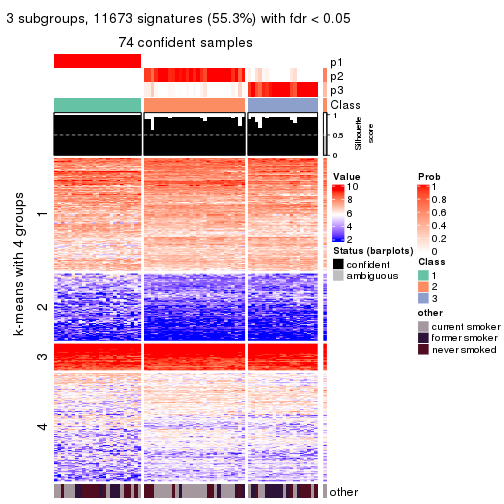
get_signatures(res, k = 4, scale_rows = FALSE)
get_signatures(res, k = 5, scale_rows = FALSE)
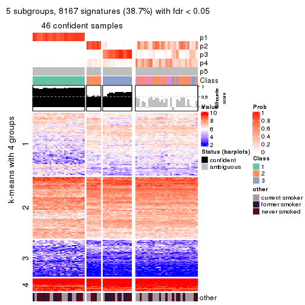
get_signatures(res, k = 6, scale_rows = FALSE)
Compare the overlap of signatures from different k:
compare_signatures(res)
get_signature() returns a data frame invisibly. TO get the list of signatures, the function
call should be assigned to a variable explicitly. In following code, if plot argument is set
to FALSE, no heatmap is plotted while only the differential analysis is performed.
# code only for demonstration
tb = get_signature(res, k = ..., plot = FALSE)
An example of the output of tb is:
#> which_row fdr mean_1 mean_2 scaled_mean_1 scaled_mean_2 km
#> 1 38 0.042760348 8.373488 9.131774 -0.5533452 0.5164555 1
#> 2 40 0.018707592 7.106213 8.469186 -0.6173731 0.5762149 1
#> 3 55 0.019134737 10.221463 11.207825 -0.6159697 0.5749050 1
#> 4 59 0.006059896 5.921854 7.869574 -0.6899429 0.6439467 1
#> 5 60 0.018055526 8.928898 10.211722 -0.6204761 0.5791110 1
#> 6 98 0.009384629 15.714769 14.887706 0.6635654 -0.6193277 2
...
The columns in tb are:
which_row: row indices corresponding to the input matrix.fdr: FDR for the differential test. mean_x: The mean value in group x.scaled_mean_x: The mean value in group x after rows are scaled.km: Row groups if k-means clustering is applied to rows.UMAP plot which shows how samples are separated.
dimension_reduction(res, k = 2, method = "UMAP")
dimension_reduction(res, k = 3, method = "UMAP")
dimension_reduction(res, k = 4, method = "UMAP")
dimension_reduction(res, k = 5, method = "UMAP")
dimension_reduction(res, k = 6, method = "UMAP")
Following heatmap shows how subgroups are split when increasing k:
collect_classes(res)
Test correlation between subgroups and known annotations. If the known annotation is numeric, one-way ANOVA test is applied, and if the known annotation is discrete, chi-squared contingency table test is applied.
test_to_known_factors(res)
#> n other(p) k
#> CV:skmeans 75 0.4095 2
#> CV:skmeans 74 0.0993 3
#> CV:skmeans 56 0.0630 4
#> CV:skmeans 46 0.3015 5
#> CV:skmeans 39 0.2011 6
If matrix rows can be associated to genes, consider to use functional_enrichment(res,
...) to perform function enrichment for the signature genes. See this vignette for more detailed explanations.
The object with results only for a single top-value method and a single partition method can be extracted as:
res = res_list["CV", "pam"]
# you can also extract it by
# res = res_list["CV:pam"]
A summary of res and all the functions that can be applied to it:
res
#> A 'ConsensusPartition' object with k = 2, 3, 4, 5, 6.
#> On a matrix with 21104 rows and 75 columns.
#> Top rows (1000, 2000, 3000, 4000, 5000) are extracted by 'CV' method.
#> Subgroups are detected by 'pam' method.
#> Performed in total 1250 partitions by row resampling.
#> Best k for subgroups seems to be 6.
#>
#> Following methods can be applied to this 'ConsensusPartition' object:
#> [1] "cola_report" "collect_classes" "collect_plots"
#> [4] "collect_stats" "colnames" "compare_signatures"
#> [7] "consensus_heatmap" "dimension_reduction" "functional_enrichment"
#> [10] "get_anno_col" "get_anno" "get_classes"
#> [13] "get_consensus" "get_matrix" "get_membership"
#> [16] "get_param" "get_signatures" "get_stats"
#> [19] "is_best_k" "is_stable_k" "membership_heatmap"
#> [22] "ncol" "nrow" "plot_ecdf"
#> [25] "rownames" "select_partition_number" "show"
#> [28] "suggest_best_k" "test_to_known_factors"
collect_plots() function collects all the plots made from res for all k (number of partitions)
into one single page to provide an easy and fast comparison between different k.
collect_plots(res)
The plots are:
k and the heatmap of
predicted classes for each k.k.k.k.All the plots in panels can be made by individual functions and they are plotted later in this section.
select_partition_number() produces several plots showing different
statistics for choosing “optimized” k. There are following statistics:
k;k, the area increased is defined as \(A_k - A_{k-1}\).The detailed explanations of these statistics can be found in the cola vignette.
Generally speaking, lower PAC score, higher mean silhouette score or higher
concordance corresponds to better partition. Rand index and Jaccard index
measure how similar the current partition is compared to partition with k-1.
If they are too similar, we won't accept k is better than k-1.
select_partition_number(res)
The numeric values for all these statistics can be obtained by get_stats().
get_stats(res)
#> k 1-PAC mean_silhouette concordance area_increased Rand Jaccard
#> 2 2 0.118 0.250 0.735 0.2851 0.828 0.828
#> 3 3 0.116 0.325 0.658 0.1879 0.748 0.704
#> 4 4 0.128 0.308 0.661 0.0807 0.954 0.927
#> 5 5 0.138 0.382 0.672 0.0608 0.877 0.804
#> 6 6 0.173 0.401 0.682 0.0462 0.632 0.586
suggest_best_k() suggests the best \(k\) based on these statistics. The rules are as follows:
suggest_best_k(res)
#> [1] 6
Following shows the table of the partitions (You need to click the show/hide
code output link to see it). The membership matrix (columns with name p*)
is inferred by
clue::cl_consensus()
function with the SE method. Basically the value in the membership matrix
represents the probability to belong to a certain group. The finall class
label for an item is determined with the group with highest probability it
belongs to.
In get_classes() function, the entropy is calculated from the membership
matrix and the silhouette score is calculated from the consensus matrix.
cbind(get_classes(res, k = 2), get_membership(res, k = 2))
#> class entropy silhouette p1 p2
#> GSM15684 2 0.9087 0.23600 0.324 0.676
#> GSM15685 2 0.2603 0.56085 0.044 0.956
#> GSM15686 2 0.8386 0.41827 0.268 0.732
#> GSM15687 1 0.6623 0.14295 0.828 0.172
#> GSM15688 2 0.4562 0.55470 0.096 0.904
#> GSM15689 1 0.9977 0.54922 0.528 0.472
#> GSM15690 2 0.7745 0.46497 0.228 0.772
#> GSM15691 2 0.5408 0.50073 0.124 0.876
#> GSM15692 2 0.7056 0.45552 0.192 0.808
#> GSM15693 2 0.9850 -0.31868 0.428 0.572
#> GSM15694 2 0.9988 -0.45420 0.480 0.520
#> GSM15695 2 0.9988 -0.45420 0.480 0.520
#> GSM15696 2 0.9209 0.19380 0.336 0.664
#> GSM15697 2 0.9491 -0.00808 0.368 0.632
#> GSM15698 2 0.9815 -0.23469 0.420 0.580
#> GSM15699 2 1.0000 -0.48624 0.496 0.504
#> GSM15700 2 0.4562 0.55281 0.096 0.904
#> GSM15701 2 0.4815 0.54999 0.104 0.896
#> GSM15702 2 0.0376 0.55064 0.004 0.996
#> GSM15703 2 0.9866 -0.33327 0.432 0.568
#> GSM15704 2 0.6887 0.48583 0.184 0.816
#> GSM15705 2 0.7528 0.44730 0.216 0.784
#> GSM15706 2 0.9129 0.24489 0.328 0.672
#> GSM15707 2 0.9248 0.21260 0.340 0.660
#> GSM15708 2 0.0938 0.55288 0.012 0.988
#> GSM15709 2 0.6801 0.50722 0.180 0.820
#> GSM15710 2 0.9635 -0.00510 0.388 0.612
#> GSM15711 2 0.0000 0.54859 0.000 1.000
#> GSM15712 2 0.0376 0.55044 0.004 0.996
#> GSM15713 2 0.7453 0.44922 0.212 0.788
#> GSM15714 2 0.7453 0.44655 0.212 0.788
#> GSM15715 2 0.0938 0.55236 0.012 0.988
#> GSM15716 2 0.9944 -0.38633 0.456 0.544
#> GSM15717 2 0.8443 0.38608 0.272 0.728
#> GSM15718 2 0.5946 0.53534 0.144 0.856
#> GSM15719 2 0.9944 -0.37554 0.456 0.544
#> GSM15720 2 0.9998 -0.47293 0.492 0.508
#> GSM15721 1 0.9944 0.61396 0.544 0.456
#> GSM15722 2 0.3733 0.50795 0.072 0.928
#> GSM15723 2 0.8763 0.29496 0.296 0.704
#> GSM15724 2 0.9710 -0.08965 0.400 0.600
#> GSM15725 1 0.9970 0.58967 0.532 0.468
#> GSM15726 1 0.9881 0.62651 0.564 0.436
#> GSM15727 1 0.9896 0.62895 0.560 0.440
#> GSM15728 2 0.8207 0.41953 0.256 0.744
#> GSM15729 2 0.4298 0.54519 0.088 0.912
#> GSM15730 2 0.7299 0.47013 0.204 0.796
#> GSM15731 2 0.9998 -0.47725 0.492 0.508
#> GSM15732 2 0.5519 0.49365 0.128 0.872
#> GSM15733 2 0.0672 0.55233 0.008 0.992
#> GSM15734 2 0.9635 -0.13493 0.388 0.612
#> GSM15735 2 1.0000 -0.48624 0.496 0.504
#> GSM15736 2 0.0938 0.55256 0.012 0.988
#> GSM15737 2 0.1843 0.55257 0.028 0.972
#> GSM15738 2 0.0000 0.54859 0.000 1.000
#> GSM15739 2 0.9522 -0.01153 0.372 0.628
#> GSM15740 2 0.9635 -0.10366 0.388 0.612
#> GSM15741 2 0.9427 0.18054 0.360 0.640
#> GSM15742 2 0.9866 0.00427 0.432 0.568
#> GSM15743 2 0.9896 -0.16590 0.440 0.560
#> GSM15744 2 0.9323 0.27872 0.348 0.652
#> GSM15745 1 0.9988 0.56039 0.520 0.480
#> GSM15746 2 0.9686 -0.11465 0.396 0.604
#> GSM15747 2 0.0376 0.55053 0.004 0.996
#> GSM15748 2 0.9815 -0.25420 0.420 0.580
#> GSM15749 2 0.9983 -0.44886 0.476 0.524
#> GSM15750 2 0.4161 0.55124 0.084 0.916
#> GSM15751 2 0.2603 0.55236 0.044 0.956
#> GSM15752 2 0.0376 0.55076 0.004 0.996
#> GSM15753 2 0.3584 0.54871 0.068 0.932
#> GSM15754 2 0.5294 0.53172 0.120 0.880
#> GSM15755 2 0.1843 0.55331 0.028 0.972
#> GSM15756 2 0.1633 0.55614 0.024 0.976
#> GSM15757 2 0.0376 0.55021 0.004 0.996
#> GSM15758 2 1.0000 -0.48624 0.496 0.504
cbind(get_classes(res, k = 3), get_membership(res, k = 3))
#> class entropy silhouette p1 p2 p3
#> GSM15684 2 0.5968 -0.1071 0.364 0.636 0.000
#> GSM15685 2 0.2165 0.5775 0.064 0.936 0.000
#> GSM15686 2 0.9438 0.1348 0.244 0.504 0.252
#> GSM15687 3 0.4551 0.0000 0.140 0.020 0.840
#> GSM15688 2 0.3532 0.5673 0.108 0.884 0.008
#> GSM15689 1 0.6126 0.8080 0.600 0.400 0.000
#> GSM15690 2 0.8505 0.2348 0.256 0.600 0.144
#> GSM15691 2 0.5998 0.4723 0.084 0.788 0.128
#> GSM15692 2 0.6025 0.3998 0.232 0.740 0.028
#> GSM15693 2 0.6302 -0.6949 0.480 0.520 0.000
#> GSM15694 1 0.6260 0.8157 0.552 0.448 0.000
#> GSM15695 1 0.6260 0.8157 0.552 0.448 0.000
#> GSM15696 2 0.6111 -0.2767 0.396 0.604 0.000
#> GSM15697 2 0.6180 -0.3450 0.416 0.584 0.000
#> GSM15698 2 0.6295 -0.6397 0.472 0.528 0.000
#> GSM15699 1 0.6235 0.8204 0.564 0.436 0.000
#> GSM15700 2 0.3192 0.5607 0.112 0.888 0.000
#> GSM15701 2 0.3340 0.5518 0.120 0.880 0.000
#> GSM15702 2 0.0424 0.5788 0.008 0.992 0.000
#> GSM15703 2 0.6307 -0.7103 0.488 0.512 0.000
#> GSM15704 2 0.4796 0.3790 0.220 0.780 0.000
#> GSM15705 2 0.5178 0.2963 0.256 0.744 0.000
#> GSM15706 2 0.6008 -0.1323 0.372 0.628 0.000
#> GSM15707 2 0.6140 -0.2332 0.404 0.596 0.000
#> GSM15708 2 0.1031 0.5808 0.024 0.976 0.000
#> GSM15709 2 0.4555 0.4566 0.200 0.800 0.000
#> GSM15710 2 0.6244 -0.4444 0.440 0.560 0.000
#> GSM15711 2 0.0000 0.5759 0.000 1.000 0.000
#> GSM15712 2 0.0424 0.5791 0.008 0.992 0.000
#> GSM15713 2 0.5098 0.3051 0.248 0.752 0.000
#> GSM15714 2 0.5098 0.3005 0.248 0.752 0.000
#> GSM15715 2 0.0592 0.5788 0.012 0.988 0.000
#> GSM15716 1 0.6302 0.7583 0.520 0.480 0.000
#> GSM15717 2 0.5650 0.1734 0.312 0.688 0.000
#> GSM15718 2 0.3941 0.5253 0.156 0.844 0.000
#> GSM15719 1 0.6309 0.7086 0.500 0.500 0.000
#> GSM15720 1 0.6500 0.6158 0.532 0.464 0.004
#> GSM15721 1 0.6111 0.8038 0.604 0.396 0.000
#> GSM15722 2 0.3293 0.5168 0.088 0.900 0.012
#> GSM15723 2 0.5929 0.2176 0.320 0.676 0.004
#> GSM15724 2 0.6274 -0.5194 0.456 0.544 0.000
#> GSM15725 1 0.6140 0.7670 0.596 0.404 0.000
#> GSM15726 1 0.5968 0.7625 0.636 0.364 0.000
#> GSM15727 1 0.6045 0.7820 0.620 0.380 0.000
#> GSM15728 2 0.5992 0.3459 0.268 0.716 0.016
#> GSM15729 2 0.3267 0.5513 0.116 0.884 0.000
#> GSM15730 2 0.4887 0.3696 0.228 0.772 0.000
#> GSM15731 1 0.6252 0.8183 0.556 0.444 0.000
#> GSM15732 2 0.3619 0.4828 0.136 0.864 0.000
#> GSM15733 2 0.0424 0.5793 0.008 0.992 0.000
#> GSM15734 2 0.6235 -0.5385 0.436 0.564 0.000
#> GSM15735 1 0.6235 0.8204 0.564 0.436 0.000
#> GSM15736 2 0.0747 0.5800 0.016 0.984 0.000
#> GSM15737 2 0.1289 0.5784 0.032 0.968 0.000
#> GSM15738 2 0.0000 0.5759 0.000 1.000 0.000
#> GSM15739 2 0.6140 -0.3697 0.404 0.596 0.000
#> GSM15740 2 0.6235 -0.5160 0.436 0.564 0.000
#> GSM15741 2 0.6373 -0.0789 0.408 0.588 0.004
#> GSM15742 1 0.7382 0.1037 0.512 0.456 0.032
#> GSM15743 2 0.6305 -0.4294 0.484 0.516 0.000
#> GSM15744 2 0.6899 0.1620 0.364 0.612 0.024
#> GSM15745 1 0.6754 0.7974 0.556 0.432 0.012
#> GSM15746 2 0.6260 -0.4554 0.448 0.552 0.000
#> GSM15747 2 0.0237 0.5776 0.004 0.996 0.000
#> GSM15748 2 0.6302 -0.6693 0.480 0.520 0.000
#> GSM15749 1 0.6280 0.8031 0.540 0.460 0.000
#> GSM15750 2 0.2878 0.5552 0.096 0.904 0.000
#> GSM15751 2 0.2165 0.5731 0.064 0.936 0.000
#> GSM15752 2 0.0592 0.5799 0.012 0.988 0.000
#> GSM15753 2 0.2625 0.5657 0.084 0.916 0.000
#> GSM15754 2 0.3686 0.5025 0.140 0.860 0.000
#> GSM15755 2 0.1031 0.5778 0.024 0.976 0.000
#> GSM15756 2 0.1289 0.5824 0.032 0.968 0.000
#> GSM15757 2 0.0237 0.5774 0.004 0.996 0.000
#> GSM15758 1 0.6235 0.8204 0.564 0.436 0.000
cbind(get_classes(res, k = 4), get_membership(res, k = 4))
#> class entropy silhouette p1 p2 p3 p4
#> GSM15684 2 0.4746 -0.0653 0.368 0.632 0.000 0.000
#> GSM15685 2 0.1792 0.5768 0.068 0.932 0.000 0.000
#> GSM15686 2 0.9361 -0.6493 0.092 0.340 0.252 0.316
#> GSM15687 3 0.1970 0.0000 0.060 0.008 0.932 0.000
#> GSM15688 2 0.3160 0.5591 0.120 0.868 0.004 0.008
#> GSM15689 1 0.4978 0.7838 0.612 0.384 0.000 0.004
#> GSM15690 4 0.8925 0.0000 0.168 0.372 0.080 0.380
#> GSM15691 2 0.5758 0.4037 0.052 0.764 0.096 0.088
#> GSM15692 2 0.6213 0.0831 0.260 0.656 0.008 0.076
#> GSM15693 2 0.4999 -0.6540 0.492 0.508 0.000 0.000
#> GSM15694 1 0.4925 0.7857 0.572 0.428 0.000 0.000
#> GSM15695 1 0.4925 0.7857 0.572 0.428 0.000 0.000
#> GSM15696 2 0.4888 -0.2875 0.412 0.588 0.000 0.000
#> GSM15697 2 0.4925 -0.3252 0.428 0.572 0.000 0.000
#> GSM15698 2 0.4998 -0.6109 0.488 0.512 0.000 0.000
#> GSM15699 1 0.4898 0.7900 0.584 0.416 0.000 0.000
#> GSM15700 2 0.2647 0.5583 0.120 0.880 0.000 0.000
#> GSM15701 2 0.2760 0.5481 0.128 0.872 0.000 0.000
#> GSM15702 2 0.0336 0.5789 0.008 0.992 0.000 0.000
#> GSM15703 2 0.5000 -0.6608 0.496 0.504 0.000 0.000
#> GSM15704 2 0.3873 0.3791 0.228 0.772 0.000 0.000
#> GSM15705 2 0.4134 0.3056 0.260 0.740 0.000 0.000
#> GSM15706 2 0.4804 -0.1366 0.384 0.616 0.000 0.000
#> GSM15707 2 0.4916 -0.2614 0.424 0.576 0.000 0.000
#> GSM15708 2 0.0921 0.5808 0.028 0.972 0.000 0.000
#> GSM15709 2 0.3801 0.4343 0.220 0.780 0.000 0.000
#> GSM15710 2 0.4977 -0.4516 0.460 0.540 0.000 0.000
#> GSM15711 2 0.0000 0.5760 0.000 1.000 0.000 0.000
#> GSM15712 2 0.0336 0.5791 0.008 0.992 0.000 0.000
#> GSM15713 2 0.4103 0.3037 0.256 0.744 0.000 0.000
#> GSM15714 2 0.4103 0.2989 0.256 0.744 0.000 0.000
#> GSM15715 2 0.0469 0.5789 0.012 0.988 0.000 0.000
#> GSM15716 1 0.4977 0.7318 0.540 0.460 0.000 0.000
#> GSM15717 2 0.4522 0.1759 0.320 0.680 0.000 0.000
#> GSM15718 2 0.3123 0.5278 0.156 0.844 0.000 0.000
#> GSM15719 1 0.4989 0.7070 0.528 0.472 0.000 0.000
#> GSM15720 1 0.5366 0.5669 0.548 0.440 0.000 0.012
#> GSM15721 1 0.4776 0.7797 0.624 0.376 0.000 0.000
#> GSM15722 2 0.3168 0.4932 0.068 0.888 0.004 0.040
#> GSM15723 2 0.5184 0.2132 0.304 0.672 0.000 0.024
#> GSM15724 2 0.4989 -0.5123 0.472 0.528 0.000 0.000
#> GSM15725 1 0.5004 0.7445 0.604 0.392 0.000 0.004
#> GSM15726 1 0.4837 0.7463 0.648 0.348 0.000 0.004
#> GSM15727 1 0.4713 0.7643 0.640 0.360 0.000 0.000
#> GSM15728 2 0.5171 0.3412 0.260 0.708 0.004 0.028
#> GSM15729 2 0.2647 0.5494 0.120 0.880 0.000 0.000
#> GSM15730 2 0.3942 0.3661 0.236 0.764 0.000 0.000
#> GSM15731 1 0.4916 0.7878 0.576 0.424 0.000 0.000
#> GSM15732 2 0.2868 0.4867 0.136 0.864 0.000 0.000
#> GSM15733 2 0.0336 0.5791 0.008 0.992 0.000 0.000
#> GSM15734 2 0.4955 -0.4899 0.444 0.556 0.000 0.000
#> GSM15735 1 0.4898 0.7900 0.584 0.416 0.000 0.000
#> GSM15736 2 0.0592 0.5802 0.016 0.984 0.000 0.000
#> GSM15737 2 0.1118 0.5785 0.036 0.964 0.000 0.000
#> GSM15738 2 0.0000 0.5760 0.000 1.000 0.000 0.000
#> GSM15739 2 0.4916 -0.3851 0.424 0.576 0.000 0.000
#> GSM15740 2 0.4961 -0.4810 0.448 0.552 0.000 0.000
#> GSM15741 2 0.5746 -0.1011 0.396 0.572 0.000 0.032
#> GSM15742 1 0.7619 -0.3003 0.436 0.356 0.000 0.208
#> GSM15743 1 0.5168 0.4243 0.500 0.496 0.000 0.004
#> GSM15744 2 0.6561 0.1172 0.344 0.564 0.000 0.092
#> GSM15745 1 0.5387 0.7707 0.584 0.400 0.000 0.016
#> GSM15746 2 0.5147 -0.4595 0.460 0.536 0.000 0.004
#> GSM15747 2 0.0000 0.5760 0.000 1.000 0.000 0.000
#> GSM15748 2 0.5000 -0.6408 0.496 0.504 0.000 0.000
#> GSM15749 1 0.4948 0.7749 0.560 0.440 0.000 0.000
#> GSM15750 2 0.2345 0.5528 0.100 0.900 0.000 0.000
#> GSM15751 2 0.1716 0.5734 0.064 0.936 0.000 0.000
#> GSM15752 2 0.0469 0.5800 0.012 0.988 0.000 0.000
#> GSM15753 2 0.2081 0.5660 0.084 0.916 0.000 0.000
#> GSM15754 2 0.2973 0.5030 0.144 0.856 0.000 0.000
#> GSM15755 2 0.1022 0.5771 0.032 0.968 0.000 0.000
#> GSM15756 2 0.1211 0.5827 0.040 0.960 0.000 0.000
#> GSM15757 2 0.0336 0.5792 0.008 0.992 0.000 0.000
#> GSM15758 1 0.4898 0.7900 0.584 0.416 0.000 0.000
cbind(get_classes(res, k = 5), get_membership(res, k = 5))
#> class entropy silhouette p1 p2 p3 p4 p5
#> GSM15684 2 0.4138 -0.1286 0.384 0.616 0.000 0.000 0.000
#> GSM15685 2 0.1544 0.6090 0.068 0.932 0.000 0.000 0.000
#> GSM15686 5 0.6733 0.2113 0.036 0.224 0.000 0.176 0.564
#> GSM15687 4 0.0510 0.0000 0.016 0.000 0.000 0.984 0.000
#> GSM15688 2 0.3031 0.5874 0.128 0.852 0.000 0.004 0.016
#> GSM15689 1 0.4392 0.8484 0.612 0.380 0.008 0.000 0.000
#> GSM15690 5 0.9193 0.1723 0.204 0.192 0.192 0.052 0.360
#> GSM15691 2 0.5440 0.4393 0.040 0.760 0.060 0.084 0.056
#> GSM15692 2 0.6187 -0.3244 0.156 0.556 0.284 0.004 0.000
#> GSM15693 1 0.4307 0.7369 0.504 0.496 0.000 0.000 0.000
#> GSM15694 1 0.4210 0.8587 0.588 0.412 0.000 0.000 0.000
#> GSM15695 1 0.4210 0.8587 0.588 0.412 0.000 0.000 0.000
#> GSM15696 2 0.4235 -0.3487 0.424 0.576 0.000 0.000 0.000
#> GSM15697 2 0.4278 -0.4201 0.452 0.548 0.000 0.000 0.000
#> GSM15698 2 0.4307 -0.6881 0.500 0.500 0.000 0.000 0.000
#> GSM15699 1 0.4171 0.8575 0.604 0.396 0.000 0.000 0.000
#> GSM15700 2 0.2377 0.5894 0.128 0.872 0.000 0.000 0.000
#> GSM15701 2 0.2424 0.5793 0.132 0.868 0.000 0.000 0.000
#> GSM15702 2 0.0290 0.6114 0.008 0.992 0.000 0.000 0.000
#> GSM15703 1 0.4305 0.7536 0.512 0.488 0.000 0.000 0.000
#> GSM15704 2 0.3395 0.3884 0.236 0.764 0.000 0.000 0.000
#> GSM15705 2 0.3561 0.3281 0.260 0.740 0.000 0.000 0.000
#> GSM15706 2 0.4161 -0.1655 0.392 0.608 0.000 0.000 0.000
#> GSM15707 2 0.4256 -0.3128 0.436 0.564 0.000 0.000 0.000
#> GSM15708 2 0.0703 0.6145 0.024 0.976 0.000 0.000 0.000
#> GSM15709 2 0.3366 0.4551 0.232 0.768 0.000 0.000 0.000
#> GSM15710 2 0.4297 -0.5095 0.472 0.528 0.000 0.000 0.000
#> GSM15711 2 0.0000 0.6081 0.000 1.000 0.000 0.000 0.000
#> GSM15712 2 0.0404 0.6123 0.012 0.988 0.000 0.000 0.000
#> GSM15713 2 0.3534 0.3259 0.256 0.744 0.000 0.000 0.000
#> GSM15714 2 0.3561 0.3107 0.260 0.740 0.000 0.000 0.000
#> GSM15715 2 0.0510 0.6116 0.016 0.984 0.000 0.000 0.000
#> GSM15716 1 0.4273 0.8130 0.552 0.448 0.000 0.000 0.000
#> GSM15717 2 0.3913 0.1900 0.324 0.676 0.000 0.000 0.000
#> GSM15718 2 0.2930 0.5556 0.164 0.832 0.004 0.000 0.000
#> GSM15719 1 0.4278 0.8046 0.548 0.452 0.000 0.000 0.000
#> GSM15720 1 0.4779 0.5223 0.584 0.396 0.016 0.000 0.004
#> GSM15721 1 0.4060 0.8337 0.640 0.360 0.000 0.000 0.000
#> GSM15722 2 0.3076 0.5376 0.052 0.884 0.028 0.004 0.032
#> GSM15723 2 0.4815 0.2351 0.304 0.660 0.008 0.000 0.028
#> GSM15724 2 0.4304 -0.5661 0.484 0.516 0.000 0.000 0.000
#> GSM15725 1 0.4527 0.8070 0.596 0.392 0.012 0.000 0.000
#> GSM15726 1 0.4371 0.8056 0.644 0.344 0.012 0.000 0.000
#> GSM15727 1 0.4166 0.8172 0.648 0.348 0.004 0.000 0.000
#> GSM15728 2 0.4629 0.3805 0.252 0.708 0.028 0.000 0.012
#> GSM15729 2 0.2377 0.5833 0.128 0.872 0.000 0.000 0.000
#> GSM15730 2 0.3424 0.3878 0.240 0.760 0.000 0.000 0.000
#> GSM15731 1 0.4192 0.8590 0.596 0.404 0.000 0.000 0.000
#> GSM15732 2 0.2516 0.5164 0.140 0.860 0.000 0.000 0.000
#> GSM15733 2 0.0290 0.6117 0.008 0.992 0.000 0.000 0.000
#> GSM15734 2 0.4278 -0.5676 0.452 0.548 0.000 0.000 0.000
#> GSM15735 1 0.4171 0.8575 0.604 0.396 0.000 0.000 0.000
#> GSM15736 2 0.0609 0.6132 0.020 0.980 0.000 0.000 0.000
#> GSM15737 2 0.1121 0.6107 0.044 0.956 0.000 0.000 0.000
#> GSM15738 2 0.0000 0.6081 0.000 1.000 0.000 0.000 0.000
#> GSM15739 2 0.4262 -0.4742 0.440 0.560 0.000 0.000 0.000
#> GSM15740 2 0.4287 -0.5648 0.460 0.540 0.000 0.000 0.000
#> GSM15741 2 0.5661 -0.0766 0.372 0.564 0.032 0.000 0.032
#> GSM15742 3 0.6482 0.0000 0.232 0.276 0.492 0.000 0.000
#> GSM15743 2 0.4659 -0.4552 0.492 0.496 0.012 0.000 0.000
#> GSM15744 2 0.6527 0.1461 0.336 0.532 0.092 0.000 0.040
#> GSM15745 1 0.4620 0.8278 0.592 0.392 0.016 0.000 0.000
#> GSM15746 2 0.4542 -0.4689 0.456 0.536 0.008 0.000 0.000
#> GSM15747 2 0.0162 0.6099 0.004 0.996 0.000 0.000 0.000
#> GSM15748 1 0.4305 0.7248 0.512 0.488 0.000 0.000 0.000
#> GSM15749 1 0.4227 0.8563 0.580 0.420 0.000 0.000 0.000
#> GSM15750 2 0.1965 0.5892 0.096 0.904 0.000 0.000 0.000
#> GSM15751 2 0.1544 0.6063 0.068 0.932 0.000 0.000 0.000
#> GSM15752 2 0.0404 0.6128 0.012 0.988 0.000 0.000 0.000
#> GSM15753 2 0.1908 0.6012 0.092 0.908 0.000 0.000 0.000
#> GSM15754 2 0.2561 0.5342 0.144 0.856 0.000 0.000 0.000
#> GSM15755 2 0.0880 0.6102 0.032 0.968 0.000 0.000 0.000
#> GSM15756 2 0.1121 0.6161 0.044 0.956 0.000 0.000 0.000
#> GSM15757 2 0.0290 0.6118 0.008 0.992 0.000 0.000 0.000
#> GSM15758 1 0.4171 0.8575 0.604 0.396 0.000 0.000 0.000
cbind(get_classes(res, k = 6), get_membership(res, k = 6))
#> class entropy silhouette p1 p2 p3 p4 p5 p6
#> GSM15684 2 0.4503 0.5424 0.000 0.696 0.000 0.100 0.204 0.000
#> GSM15685 2 0.3023 0.4026 0.000 0.784 0.000 0.212 0.004 0.000
#> GSM15686 1 0.4835 0.0000 0.712 0.116 0.152 0.016 0.004 0.000
#> GSM15687 3 0.0146 0.0000 0.000 0.000 0.996 0.000 0.004 0.000
#> GSM15688 2 0.4311 0.3831 0.000 0.708 0.004 0.228 0.060 0.000
#> GSM15689 2 0.3769 0.4942 0.000 0.640 0.000 0.004 0.356 0.000
#> GSM15690 6 0.2485 0.0000 0.000 0.040 0.024 0.032 0.004 0.900
#> GSM15691 2 0.5978 -0.0428 0.064 0.572 0.052 0.300 0.008 0.004
#> GSM15692 4 0.5266 0.0000 0.004 0.312 0.000 0.576 0.108 0.000
#> GSM15693 2 0.3606 0.5335 0.000 0.728 0.000 0.016 0.256 0.000
#> GSM15694 2 0.3652 0.5158 0.000 0.672 0.000 0.004 0.324 0.000
#> GSM15695 2 0.3652 0.5158 0.000 0.672 0.000 0.004 0.324 0.000
#> GSM15696 2 0.3156 0.5583 0.000 0.800 0.000 0.020 0.180 0.000
#> GSM15697 2 0.5504 0.4857 0.000 0.532 0.000 0.152 0.316 0.000
#> GSM15698 2 0.3189 0.5513 0.000 0.760 0.000 0.004 0.236 0.000
#> GSM15699 2 0.3547 0.5111 0.000 0.668 0.000 0.000 0.332 0.000
#> GSM15700 2 0.4255 0.4105 0.000 0.708 0.000 0.224 0.068 0.000
#> GSM15701 2 0.3867 0.4290 0.000 0.748 0.000 0.200 0.052 0.000
#> GSM15702 2 0.3555 0.3306 0.000 0.712 0.000 0.280 0.008 0.000
#> GSM15703 2 0.3950 0.5267 0.000 0.696 0.000 0.028 0.276 0.000
#> GSM15704 2 0.1829 0.5260 0.000 0.920 0.000 0.056 0.024 0.000
#> GSM15705 2 0.1794 0.5388 0.000 0.924 0.000 0.040 0.036 0.000
#> GSM15706 2 0.2907 0.5657 0.000 0.828 0.000 0.020 0.152 0.000
#> GSM15707 2 0.2703 0.5556 0.000 0.824 0.000 0.004 0.172 0.000
#> GSM15708 2 0.3695 0.3421 0.000 0.712 0.000 0.272 0.016 0.000
#> GSM15709 2 0.3138 0.5042 0.000 0.832 0.000 0.108 0.060 0.000
#> GSM15710 2 0.2912 0.5595 0.000 0.784 0.000 0.000 0.216 0.000
#> GSM15711 2 0.3309 0.3236 0.000 0.720 0.000 0.280 0.000 0.000
#> GSM15712 2 0.3405 0.3379 0.000 0.724 0.000 0.272 0.004 0.000
#> GSM15713 2 0.1176 0.5373 0.000 0.956 0.000 0.024 0.020 0.000
#> GSM15714 2 0.1341 0.5370 0.000 0.948 0.000 0.028 0.024 0.000
#> GSM15715 2 0.3738 0.3337 0.000 0.704 0.000 0.280 0.016 0.000
#> GSM15716 2 0.3468 0.5336 0.000 0.712 0.000 0.004 0.284 0.000
#> GSM15717 2 0.2487 0.5564 0.000 0.876 0.000 0.032 0.092 0.000
#> GSM15718 2 0.4215 0.4389 0.000 0.724 0.000 0.196 0.080 0.000
#> GSM15719 2 0.3555 0.5358 0.000 0.712 0.000 0.008 0.280 0.000
#> GSM15720 2 0.6179 0.2085 0.056 0.528 0.000 0.072 0.332 0.012
#> GSM15721 2 0.3672 0.4826 0.000 0.632 0.000 0.000 0.368 0.000
#> GSM15722 2 0.5853 -0.1378 0.008 0.564 0.000 0.304 0.096 0.028
#> GSM15723 2 0.5485 0.3799 0.004 0.588 0.000 0.200 0.208 0.000
#> GSM15724 2 0.4190 0.5488 0.000 0.692 0.000 0.048 0.260 0.000
#> GSM15725 2 0.3833 0.4849 0.000 0.648 0.000 0.008 0.344 0.000
#> GSM15726 2 0.3841 0.4651 0.000 0.616 0.000 0.004 0.380 0.000
#> GSM15727 2 0.3830 0.4679 0.000 0.620 0.000 0.004 0.376 0.000
#> GSM15728 2 0.4906 0.3625 0.008 0.692 0.004 0.200 0.092 0.004
#> GSM15729 2 0.4503 0.3875 0.000 0.680 0.000 0.240 0.080 0.000
#> GSM15730 2 0.1297 0.5328 0.000 0.948 0.000 0.040 0.012 0.000
#> GSM15731 2 0.3515 0.5155 0.000 0.676 0.000 0.000 0.324 0.000
#> GSM15732 2 0.5138 0.3650 0.000 0.604 0.000 0.268 0.128 0.000
#> GSM15733 2 0.3555 0.3301 0.000 0.712 0.000 0.280 0.008 0.000
#> GSM15734 2 0.3424 0.5463 0.000 0.772 0.000 0.024 0.204 0.000
#> GSM15735 2 0.3547 0.5111 0.000 0.668 0.000 0.000 0.332 0.000
#> GSM15736 2 0.3360 0.3428 0.000 0.732 0.000 0.264 0.004 0.000
#> GSM15737 2 0.3812 0.3507 0.000 0.712 0.000 0.264 0.024 0.000
#> GSM15738 2 0.3309 0.3236 0.000 0.720 0.000 0.280 0.000 0.000
#> GSM15739 2 0.4277 0.5452 0.000 0.700 0.000 0.064 0.236 0.000
#> GSM15740 2 0.3403 0.5480 0.000 0.768 0.000 0.020 0.212 0.000
#> GSM15741 2 0.4682 0.4330 0.044 0.752 0.000 0.048 0.140 0.016
#> GSM15742 5 0.6724 0.0000 0.108 0.220 0.004 0.084 0.564 0.020
#> GSM15743 2 0.4067 0.5149 0.000 0.700 0.000 0.040 0.260 0.000
#> GSM15744 2 0.6444 -0.1970 0.052 0.572 0.000 0.200 0.160 0.016
#> GSM15745 2 0.3758 0.5029 0.000 0.668 0.000 0.008 0.324 0.000
#> GSM15746 2 0.4963 0.5173 0.000 0.612 0.000 0.100 0.288 0.000
#> GSM15747 2 0.3309 0.3236 0.000 0.720 0.000 0.280 0.000 0.000
#> GSM15748 2 0.3518 0.5368 0.000 0.732 0.000 0.012 0.256 0.000
#> GSM15749 2 0.3601 0.5205 0.000 0.684 0.000 0.004 0.312 0.000
#> GSM15750 2 0.4191 0.4037 0.000 0.704 0.000 0.240 0.056 0.000
#> GSM15751 2 0.4044 0.3596 0.000 0.704 0.000 0.256 0.040 0.000
#> GSM15752 2 0.3405 0.3360 0.000 0.724 0.000 0.272 0.004 0.000
#> GSM15753 2 0.4239 0.3767 0.000 0.696 0.000 0.248 0.056 0.000
#> GSM15754 2 0.2048 0.4783 0.000 0.880 0.000 0.120 0.000 0.000
#> GSM15755 2 0.3970 0.3381 0.000 0.692 0.000 0.280 0.028 0.000
#> GSM15756 2 0.3240 0.3642 0.000 0.752 0.000 0.244 0.004 0.000
#> GSM15757 2 0.3448 0.3285 0.000 0.716 0.000 0.280 0.004 0.000
#> GSM15758 2 0.3547 0.5111 0.000 0.668 0.000 0.000 0.332 0.000
Heatmaps for the consensus matrix. It visualizes the probability of two samples to be in a same group.
consensus_heatmap(res, k = 2)
consensus_heatmap(res, k = 3)
consensus_heatmap(res, k = 4)
consensus_heatmap(res, k = 5)
consensus_heatmap(res, k = 6)
Heatmaps for the membership of samples in all partitions to see how consistent they are:
membership_heatmap(res, k = 2)

membership_heatmap(res, k = 3)
membership_heatmap(res, k = 4)
membership_heatmap(res, k = 5)
membership_heatmap(res, k = 6)
As soon as we have had the classes for columns, we can look for signatures which are significantly different between classes which can be candidate marks for certain classes. Following are the heatmaps for signatures.
Signature heatmaps where rows are scaled:
get_signatures(res, k = 2)
get_signatures(res, k = 3)
get_signatures(res, k = 4)
get_signatures(res, k = 5)
get_signatures(res, k = 6)

Signature heatmaps where rows are not scaled:
get_signatures(res, k = 2, scale_rows = FALSE)
get_signatures(res, k = 3, scale_rows = FALSE)
get_signatures(res, k = 4, scale_rows = FALSE)
get_signatures(res, k = 5, scale_rows = FALSE)
get_signatures(res, k = 6, scale_rows = FALSE)

Compare the overlap of signatures from different k:
compare_signatures(res)

get_signature() returns a data frame invisibly. TO get the list of signatures, the function
call should be assigned to a variable explicitly. In following code, if plot argument is set
to FALSE, no heatmap is plotted while only the differential analysis is performed.
# code only for demonstration
tb = get_signature(res, k = ..., plot = FALSE)
An example of the output of tb is:
#> which_row fdr mean_1 mean_2 scaled_mean_1 scaled_mean_2 km
#> 1 38 0.042760348 8.373488 9.131774 -0.5533452 0.5164555 1
#> 2 40 0.018707592 7.106213 8.469186 -0.6173731 0.5762149 1
#> 3 55 0.019134737 10.221463 11.207825 -0.6159697 0.5749050 1
#> 4 59 0.006059896 5.921854 7.869574 -0.6899429 0.6439467 1
#> 5 60 0.018055526 8.928898 10.211722 -0.6204761 0.5791110 1
#> 6 98 0.009384629 15.714769 14.887706 0.6635654 -0.6193277 2
...
The columns in tb are:
which_row: row indices corresponding to the input matrix.fdr: FDR for the differential test. mean_x: The mean value in group x.scaled_mean_x: The mean value in group x after rows are scaled.km: Row groups if k-means clustering is applied to rows.UMAP plot which shows how samples are separated.
dimension_reduction(res, k = 2, method = "UMAP")
dimension_reduction(res, k = 3, method = "UMAP")
dimension_reduction(res, k = 4, method = "UMAP")
dimension_reduction(res, k = 5, method = "UMAP")
dimension_reduction(res, k = 6, method = "UMAP")
Following heatmap shows how subgroups are split when increasing k:
collect_classes(res)
Test correlation between subgroups and known annotations. If the known annotation is numeric, one-way ANOVA test is applied, and if the known annotation is discrete, chi-squared contingency table test is applied.
test_to_known_factors(res)
#> n other(p) k
#> CV:pam 33 0.159 2
#> CV:pam 41 0.309 3
#> CV:pam 40 0.229 4
#> CV:pam 45 0.574 5
#> CV:pam 32 NA 6
If matrix rows can be associated to genes, consider to use functional_enrichment(res,
...) to perform function enrichment for the signature genes. See this vignette for more detailed explanations.
The object with results only for a single top-value method and a single partition method can be extracted as:
res = res_list["CV", "mclust"]
# you can also extract it by
# res = res_list["CV:mclust"]
A summary of res and all the functions that can be applied to it:
res
#> A 'ConsensusPartition' object with k = 2, 3, 4, 5, 6.
#> On a matrix with 21104 rows and 75 columns.
#> Top rows (1000, 2000, 3000, 4000, 5000) are extracted by 'CV' method.
#> Subgroups are detected by 'mclust' method.
#> Performed in total 1250 partitions by row resampling.
#> Best k for subgroups seems to be 2.
#>
#> Following methods can be applied to this 'ConsensusPartition' object:
#> [1] "cola_report" "collect_classes" "collect_plots"
#> [4] "collect_stats" "colnames" "compare_signatures"
#> [7] "consensus_heatmap" "dimension_reduction" "functional_enrichment"
#> [10] "get_anno_col" "get_anno" "get_classes"
#> [13] "get_consensus" "get_matrix" "get_membership"
#> [16] "get_param" "get_signatures" "get_stats"
#> [19] "is_best_k" "is_stable_k" "membership_heatmap"
#> [22] "ncol" "nrow" "plot_ecdf"
#> [25] "rownames" "select_partition_number" "show"
#> [28] "suggest_best_k" "test_to_known_factors"
collect_plots() function collects all the plots made from res for all k (number of partitions)
into one single page to provide an easy and fast comparison between different k.
collect_plots(res)
The plots are:
k and the heatmap of
predicted classes for each k.k.k.k.All the plots in panels can be made by individual functions and they are plotted later in this section.
select_partition_number() produces several plots showing different
statistics for choosing “optimized” k. There are following statistics:
k;k, the area increased is defined as \(A_k - A_{k-1}\).The detailed explanations of these statistics can be found in the cola vignette.
Generally speaking, lower PAC score, higher mean silhouette score or higher
concordance corresponds to better partition. Rand index and Jaccard index
measure how similar the current partition is compared to partition with k-1.
If they are too similar, we won't accept k is better than k-1.
select_partition_number(res)
The numeric values for all these statistics can be obtained by get_stats().
get_stats(res)
#> k 1-PAC mean_silhouette concordance area_increased Rand Jaccard
#> 2 2 1.000 1.000 1.000 0.4510 0.550 0.550
#> 3 3 0.795 0.881 0.934 0.4236 0.818 0.670
#> 4 4 0.662 0.714 0.855 0.1035 0.888 0.716
#> 5 5 0.628 0.562 0.767 0.0814 0.872 0.622
#> 6 6 0.670 0.550 0.754 0.0547 0.885 0.595
suggest_best_k() suggests the best \(k\) based on these statistics. The rules are as follows:
suggest_best_k(res)
#> [1] 2
Following shows the table of the partitions (You need to click the show/hide
code output link to see it). The membership matrix (columns with name p*)
is inferred by
clue::cl_consensus()
function with the SE method. Basically the value in the membership matrix
represents the probability to belong to a certain group. The finall class
label for an item is determined with the group with highest probability it
belongs to.
In get_classes() function, the entropy is calculated from the membership
matrix and the silhouette score is calculated from the consensus matrix.
cbind(get_classes(res, k = 2), get_membership(res, k = 2))
#> class entropy silhouette p1 p2
#> GSM15684 1 0 1 1 0
#> GSM15685 1 0 1 1 0
#> GSM15686 1 0 1 1 0
#> GSM15687 1 0 1 1 0
#> GSM15688 1 0 1 1 0
#> GSM15689 1 0 1 1 0
#> GSM15690 1 0 1 1 0
#> GSM15691 1 0 1 1 0
#> GSM15692 1 0 1 1 0
#> GSM15693 2 0 1 0 1
#> GSM15694 2 0 1 0 1
#> GSM15695 2 0 1 0 1
#> GSM15696 2 0 1 0 1
#> GSM15697 2 0 1 0 1
#> GSM15698 2 0 1 0 1
#> GSM15699 2 0 1 0 1
#> GSM15700 2 0 1 0 1
#> GSM15701 2 0 1 0 1
#> GSM15702 2 0 1 0 1
#> GSM15703 2 0 1 0 1
#> GSM15704 2 0 1 0 1
#> GSM15705 2 0 1 0 1
#> GSM15706 2 0 1 0 1
#> GSM15707 2 0 1 0 1
#> GSM15708 2 0 1 0 1
#> GSM15709 2 0 1 0 1
#> GSM15710 2 0 1 0 1
#> GSM15711 2 0 1 0 1
#> GSM15712 2 0 1 0 1
#> GSM15713 2 0 1 0 1
#> GSM15714 2 0 1 0 1
#> GSM15715 2 0 1 0 1
#> GSM15716 2 0 1 0 1
#> GSM15717 2 0 1 0 1
#> GSM15718 1 0 1 1 0
#> GSM15719 2 0 1 0 1
#> GSM15720 1 0 1 1 0
#> GSM15721 1 0 1 1 0
#> GSM15722 1 0 1 1 0
#> GSM15723 1 0 1 1 0
#> GSM15724 1 0 1 1 0
#> GSM15725 1 0 1 1 0
#> GSM15726 1 0 1 1 0
#> GSM15727 1 0 1 1 0
#> GSM15728 1 0 1 1 0
#> GSM15729 2 0 1 0 1
#> GSM15730 2 0 1 0 1
#> GSM15731 2 0 1 0 1
#> GSM15732 2 0 1 0 1
#> GSM15733 2 0 1 0 1
#> GSM15734 2 0 1 0 1
#> GSM15735 2 0 1 0 1
#> GSM15736 2 0 1 0 1
#> GSM15737 2 0 1 0 1
#> GSM15738 2 0 1 0 1
#> GSM15739 2 0 1 0 1
#> GSM15740 2 0 1 0 1
#> GSM15741 1 0 1 1 0
#> GSM15742 1 0 1 1 0
#> GSM15743 1 0 1 1 0
#> GSM15744 1 0 1 1 0
#> GSM15745 1 0 1 1 0
#> GSM15746 1 0 1 1 0
#> GSM15747 2 0 1 0 1
#> GSM15748 2 0 1 0 1
#> GSM15749 2 0 1 0 1
#> GSM15750 2 0 1 0 1
#> GSM15751 2 0 1 0 1
#> GSM15752 2 0 1 0 1
#> GSM15753 2 0 1 0 1
#> GSM15754 2 0 1 0 1
#> GSM15755 2 0 1 0 1
#> GSM15756 2 0 1 0 1
#> GSM15757 2 0 1 0 1
#> GSM15758 2 0 1 0 1
cbind(get_classes(res, k = 3), get_membership(res, k = 3))
#> class entropy silhouette p1 p2 p3
#> GSM15684 1 0.0000 1.000 1 0.000 0.000
#> GSM15685 1 0.0000 1.000 1 0.000 0.000
#> GSM15686 1 0.0000 1.000 1 0.000 0.000
#> GSM15687 1 0.0000 1.000 1 0.000 0.000
#> GSM15688 1 0.0000 1.000 1 0.000 0.000
#> GSM15689 1 0.0000 1.000 1 0.000 0.000
#> GSM15690 1 0.0000 1.000 1 0.000 0.000
#> GSM15691 1 0.0000 1.000 1 0.000 0.000
#> GSM15692 1 0.0000 1.000 1 0.000 0.000
#> GSM15693 2 0.0000 0.881 0 1.000 0.000
#> GSM15694 2 0.1031 0.875 0 0.976 0.024
#> GSM15695 2 0.0000 0.881 0 1.000 0.000
#> GSM15696 2 0.0237 0.881 0 0.996 0.004
#> GSM15697 2 0.4555 0.797 0 0.800 0.200
#> GSM15698 2 0.1031 0.881 0 0.976 0.024
#> GSM15699 2 0.1031 0.881 0 0.976 0.024
#> GSM15700 2 0.4346 0.813 0 0.816 0.184
#> GSM15701 2 0.4931 0.770 0 0.768 0.232
#> GSM15702 2 0.5733 0.646 0 0.676 0.324
#> GSM15703 2 0.0000 0.881 0 1.000 0.000
#> GSM15704 2 0.4931 0.770 0 0.768 0.232
#> GSM15705 2 0.0592 0.882 0 0.988 0.012
#> GSM15706 2 0.0237 0.882 0 0.996 0.004
#> GSM15707 2 0.0424 0.882 0 0.992 0.008
#> GSM15708 3 0.0000 0.907 0 0.000 1.000
#> GSM15709 3 0.4555 0.698 0 0.200 0.800
#> GSM15710 2 0.1860 0.873 0 0.948 0.052
#> GSM15711 2 0.4702 0.788 0 0.788 0.212
#> GSM15712 2 0.5497 0.687 0 0.708 0.292
#> GSM15713 2 0.3267 0.849 0 0.884 0.116
#> GSM15714 2 0.1163 0.881 0 0.972 0.028
#> GSM15715 3 0.2711 0.879 0 0.088 0.912
#> GSM15716 2 0.1031 0.881 0 0.976 0.024
#> GSM15717 2 0.1163 0.880 0 0.972 0.028
#> GSM15718 1 0.0000 1.000 1 0.000 0.000
#> GSM15719 2 0.1163 0.880 0 0.972 0.028
#> GSM15720 1 0.0000 1.000 1 0.000 0.000
#> GSM15721 1 0.0000 1.000 1 0.000 0.000
#> GSM15722 1 0.0000 1.000 1 0.000 0.000
#> GSM15723 1 0.0000 1.000 1 0.000 0.000
#> GSM15724 1 0.0000 1.000 1 0.000 0.000
#> GSM15725 1 0.0000 1.000 1 0.000 0.000
#> GSM15726 1 0.0000 1.000 1 0.000 0.000
#> GSM15727 1 0.0000 1.000 1 0.000 0.000
#> GSM15728 1 0.0000 1.000 1 0.000 0.000
#> GSM15729 2 0.5785 0.634 0 0.668 0.332
#> GSM15730 2 0.4931 0.770 0 0.768 0.232
#> GSM15731 2 0.0000 0.881 0 1.000 0.000
#> GSM15732 2 0.5291 0.723 0 0.732 0.268
#> GSM15733 3 0.2711 0.879 0 0.088 0.912
#> GSM15734 2 0.3816 0.828 0 0.852 0.148
#> GSM15735 2 0.0000 0.881 0 1.000 0.000
#> GSM15736 3 0.0424 0.906 0 0.008 0.992
#> GSM15737 3 0.0000 0.907 0 0.000 1.000
#> GSM15738 3 0.0000 0.907 0 0.000 1.000
#> GSM15739 2 0.1289 0.880 0 0.968 0.032
#> GSM15740 2 0.1753 0.879 0 0.952 0.048
#> GSM15741 1 0.0000 1.000 1 0.000 0.000
#> GSM15742 1 0.0000 1.000 1 0.000 0.000
#> GSM15743 1 0.0000 1.000 1 0.000 0.000
#> GSM15744 1 0.0000 1.000 1 0.000 0.000
#> GSM15745 1 0.0000 1.000 1 0.000 0.000
#> GSM15746 1 0.0000 1.000 1 0.000 0.000
#> GSM15747 3 0.1289 0.903 0 0.032 0.968
#> GSM15748 2 0.1031 0.881 0 0.976 0.024
#> GSM15749 2 0.0000 0.881 0 1.000 0.000
#> GSM15750 3 0.2261 0.888 0 0.068 0.932
#> GSM15751 3 0.0424 0.906 0 0.008 0.992
#> GSM15752 3 0.0237 0.907 0 0.004 0.996
#> GSM15753 3 0.6225 0.228 0 0.432 0.568
#> GSM15754 2 0.4796 0.781 0 0.780 0.220
#> GSM15755 3 0.0592 0.904 0 0.012 0.988
#> GSM15756 2 0.6308 0.206 0 0.508 0.492
#> GSM15757 3 0.3116 0.865 0 0.108 0.892
#> GSM15758 2 0.1031 0.881 0 0.976 0.024
cbind(get_classes(res, k = 4), get_membership(res, k = 4))
#> class entropy silhouette p1 p2 p3 p4
#> GSM15684 4 0.3074 0.851 0.152 0.000 0.000 0.848
#> GSM15685 4 0.3123 0.855 0.156 0.000 0.000 0.844
#> GSM15686 1 0.4981 -0.267 0.536 0.000 0.000 0.464
#> GSM15687 4 0.4981 0.381 0.464 0.000 0.000 0.536
#> GSM15688 1 0.4994 -0.272 0.520 0.000 0.000 0.480
#> GSM15689 1 0.4761 0.333 0.628 0.000 0.000 0.372
#> GSM15690 1 0.4981 -0.264 0.536 0.000 0.000 0.464
#> GSM15691 1 0.4992 -0.250 0.524 0.000 0.000 0.476
#> GSM15692 4 0.3801 0.837 0.220 0.000 0.000 0.780
#> GSM15693 2 0.0707 0.858 0.000 0.980 0.000 0.020
#> GSM15694 2 0.0592 0.858 0.000 0.984 0.000 0.016
#> GSM15695 2 0.0707 0.858 0.000 0.980 0.000 0.020
#> GSM15696 2 0.1297 0.858 0.000 0.964 0.020 0.016
#> GSM15697 2 0.5873 0.628 0.000 0.668 0.256 0.076
#> GSM15698 2 0.1256 0.857 0.000 0.964 0.008 0.028
#> GSM15699 2 0.1398 0.856 0.000 0.956 0.004 0.040
#> GSM15700 2 0.5972 0.607 0.000 0.632 0.304 0.064
#> GSM15701 2 0.5532 0.672 0.000 0.704 0.228 0.068
#> GSM15702 3 0.3808 0.776 0.000 0.176 0.812 0.012
#> GSM15703 2 0.0707 0.858 0.000 0.980 0.000 0.020
#> GSM15704 2 0.5927 0.617 0.000 0.660 0.264 0.076
#> GSM15705 2 0.0657 0.859 0.000 0.984 0.004 0.012
#> GSM15706 2 0.0817 0.856 0.000 0.976 0.000 0.024
#> GSM15707 2 0.0592 0.858 0.000 0.984 0.000 0.016
#> GSM15708 3 0.0336 0.921 0.000 0.008 0.992 0.000
#> GSM15709 3 0.2797 0.879 0.000 0.068 0.900 0.032
#> GSM15710 2 0.1724 0.852 0.000 0.948 0.020 0.032
#> GSM15711 2 0.5873 0.628 0.000 0.668 0.256 0.076
#> GSM15712 2 0.6209 0.253 0.000 0.492 0.456 0.052
#> GSM15713 2 0.2670 0.843 0.000 0.908 0.040 0.052
#> GSM15714 2 0.2060 0.852 0.000 0.932 0.016 0.052
#> GSM15715 3 0.0376 0.919 0.000 0.004 0.992 0.004
#> GSM15716 2 0.1489 0.856 0.000 0.952 0.004 0.044
#> GSM15717 2 0.2300 0.846 0.000 0.924 0.028 0.048
#> GSM15718 4 0.3123 0.855 0.156 0.000 0.000 0.844
#> GSM15719 2 0.2282 0.850 0.000 0.924 0.024 0.052
#> GSM15720 1 0.1302 0.716 0.956 0.000 0.000 0.044
#> GSM15721 1 0.3444 0.639 0.816 0.000 0.000 0.184
#> GSM15722 1 0.2530 0.659 0.888 0.000 0.000 0.112
#> GSM15723 1 0.2281 0.680 0.904 0.000 0.000 0.096
#> GSM15724 1 0.1302 0.713 0.956 0.000 0.000 0.044
#> GSM15725 1 0.0817 0.716 0.976 0.000 0.000 0.024
#> GSM15726 1 0.3266 0.653 0.832 0.000 0.000 0.168
#> GSM15727 1 0.0469 0.716 0.988 0.000 0.000 0.012
#> GSM15728 1 0.0336 0.714 0.992 0.000 0.000 0.008
#> GSM15729 3 0.5159 0.345 0.000 0.364 0.624 0.012
#> GSM15730 2 0.5111 0.711 0.000 0.740 0.204 0.056
#> GSM15731 2 0.0707 0.858 0.000 0.980 0.000 0.020
#> GSM15732 2 0.6052 0.584 0.000 0.616 0.320 0.064
#> GSM15733 3 0.0376 0.919 0.000 0.004 0.992 0.004
#> GSM15734 2 0.3497 0.814 0.000 0.860 0.104 0.036
#> GSM15735 2 0.0707 0.858 0.000 0.980 0.000 0.020
#> GSM15736 3 0.0336 0.921 0.000 0.008 0.992 0.000
#> GSM15737 3 0.0336 0.921 0.000 0.008 0.992 0.000
#> GSM15738 3 0.0336 0.921 0.000 0.008 0.992 0.000
#> GSM15739 2 0.2385 0.850 0.000 0.920 0.028 0.052
#> GSM15740 2 0.2255 0.853 0.000 0.920 0.012 0.068
#> GSM15741 4 0.3528 0.853 0.192 0.000 0.000 0.808
#> GSM15742 1 0.0188 0.714 0.996 0.000 0.000 0.004
#> GSM15743 1 0.3649 0.632 0.796 0.000 0.000 0.204
#> GSM15744 1 0.0188 0.714 0.996 0.000 0.000 0.004
#> GSM15745 1 0.3486 0.644 0.812 0.000 0.000 0.188
#> GSM15746 4 0.4250 0.771 0.276 0.000 0.000 0.724
#> GSM15747 3 0.0336 0.921 0.000 0.008 0.992 0.000
#> GSM15748 2 0.3533 0.832 0.000 0.864 0.080 0.056
#> GSM15749 2 0.0707 0.858 0.000 0.980 0.000 0.020
#> GSM15750 3 0.1474 0.899 0.000 0.052 0.948 0.000
#> GSM15751 3 0.0336 0.919 0.000 0.008 0.992 0.000
#> GSM15752 3 0.0188 0.919 0.000 0.004 0.996 0.000
#> GSM15753 2 0.5320 0.368 0.000 0.572 0.416 0.012
#> GSM15754 2 0.5953 0.610 0.000 0.656 0.268 0.076
#> GSM15755 3 0.0336 0.918 0.000 0.008 0.992 0.000
#> GSM15756 3 0.3335 0.844 0.000 0.120 0.860 0.020
#> GSM15757 3 0.2345 0.858 0.000 0.100 0.900 0.000
#> GSM15758 2 0.2179 0.847 0.000 0.924 0.012 0.064
cbind(get_classes(res, k = 5), get_membership(res, k = 5))
#> class entropy silhouette p1 p2 p3 p4 p5
#> GSM15684 5 0.2629 0.7146 0.136 0.000 0.000 0.004 0.860
#> GSM15685 5 0.2629 0.7146 0.136 0.000 0.000 0.004 0.860
#> GSM15686 5 0.4161 0.5900 0.392 0.000 0.000 0.000 0.608
#> GSM15687 5 0.3913 0.6454 0.324 0.000 0.000 0.000 0.676
#> GSM15688 5 0.4297 0.4710 0.472 0.000 0.000 0.000 0.528
#> GSM15689 1 0.4415 0.2714 0.604 0.000 0.000 0.008 0.388
#> GSM15690 5 0.4434 0.4745 0.460 0.000 0.000 0.004 0.536
#> GSM15691 5 0.4283 0.4791 0.456 0.000 0.000 0.000 0.544
#> GSM15692 5 0.2074 0.7275 0.104 0.000 0.000 0.000 0.896
#> GSM15693 2 0.2763 0.5075 0.000 0.848 0.004 0.148 0.000
#> GSM15694 2 0.0771 0.5858 0.000 0.976 0.004 0.020 0.000
#> GSM15695 2 0.1121 0.5801 0.000 0.956 0.000 0.044 0.000
#> GSM15696 2 0.1386 0.5911 0.000 0.952 0.016 0.032 0.000
#> GSM15697 2 0.6005 0.4450 0.000 0.620 0.128 0.236 0.016
#> GSM15698 2 0.3861 0.2457 0.000 0.712 0.004 0.284 0.000
#> GSM15699 2 0.3707 0.1907 0.000 0.716 0.000 0.284 0.000
#> GSM15700 2 0.6783 -0.2195 0.000 0.388 0.296 0.316 0.000
#> GSM15701 2 0.5882 0.4484 0.000 0.620 0.116 0.252 0.012
#> GSM15702 3 0.6328 0.1660 0.000 0.376 0.496 0.116 0.012
#> GSM15703 2 0.2848 0.4968 0.000 0.840 0.004 0.156 0.000
#> GSM15704 2 0.6079 0.4340 0.000 0.604 0.124 0.256 0.016
#> GSM15705 2 0.3039 0.4622 0.000 0.808 0.000 0.192 0.000
#> GSM15706 2 0.2116 0.5861 0.000 0.912 0.008 0.076 0.004
#> GSM15707 2 0.1043 0.5830 0.000 0.960 0.000 0.040 0.000
#> GSM15708 3 0.0000 0.8220 0.000 0.000 1.000 0.000 0.000
#> GSM15709 3 0.4300 0.6855 0.000 0.108 0.792 0.088 0.012
#> GSM15710 2 0.1809 0.5913 0.000 0.928 0.012 0.060 0.000
#> GSM15711 2 0.6079 0.4340 0.000 0.604 0.124 0.256 0.016
#> GSM15712 3 0.6727 0.0507 0.000 0.260 0.464 0.272 0.004
#> GSM15713 2 0.3937 0.5403 0.000 0.784 0.020 0.184 0.012
#> GSM15714 2 0.4704 -0.4338 0.000 0.508 0.008 0.480 0.004
#> GSM15715 3 0.1195 0.8134 0.000 0.012 0.960 0.028 0.000
#> GSM15716 2 0.3305 0.3515 0.000 0.776 0.000 0.224 0.000
#> GSM15717 4 0.4670 0.7541 0.000 0.328 0.016 0.648 0.008
#> GSM15718 5 0.2605 0.7154 0.148 0.000 0.000 0.000 0.852
#> GSM15719 4 0.4734 0.7475 0.000 0.344 0.016 0.632 0.008
#> GSM15720 1 0.2006 0.8242 0.916 0.000 0.000 0.012 0.072
#> GSM15721 1 0.3321 0.7710 0.832 0.000 0.000 0.032 0.136
#> GSM15722 1 0.2516 0.7206 0.860 0.000 0.000 0.000 0.140
#> GSM15723 1 0.2377 0.7558 0.872 0.000 0.000 0.000 0.128
#> GSM15724 1 0.1668 0.8226 0.940 0.000 0.000 0.028 0.032
#> GSM15725 1 0.1469 0.8210 0.948 0.000 0.000 0.036 0.016
#> GSM15726 1 0.3134 0.7825 0.848 0.000 0.000 0.032 0.120
#> GSM15727 1 0.1117 0.8229 0.964 0.000 0.000 0.020 0.016
#> GSM15728 1 0.1502 0.8006 0.940 0.000 0.000 0.004 0.056
#> GSM15729 2 0.6304 0.0349 0.000 0.464 0.416 0.108 0.012
#> GSM15730 2 0.5700 0.4656 0.000 0.652 0.120 0.216 0.012
#> GSM15731 2 0.1270 0.5775 0.000 0.948 0.000 0.052 0.000
#> GSM15732 4 0.6772 0.3467 0.000 0.316 0.240 0.440 0.004
#> GSM15733 3 0.1809 0.7940 0.000 0.012 0.928 0.060 0.000
#> GSM15734 2 0.3339 0.5686 0.000 0.856 0.068 0.068 0.008
#> GSM15735 2 0.1410 0.5740 0.000 0.940 0.000 0.060 0.000
#> GSM15736 3 0.0000 0.8220 0.000 0.000 1.000 0.000 0.000
#> GSM15737 3 0.0000 0.8220 0.000 0.000 1.000 0.000 0.000
#> GSM15738 3 0.0000 0.8220 0.000 0.000 1.000 0.000 0.000
#> GSM15739 2 0.4937 -0.1523 0.000 0.604 0.028 0.364 0.004
#> GSM15740 2 0.4403 -0.0749 0.000 0.608 0.008 0.384 0.000
#> GSM15741 5 0.1892 0.7204 0.080 0.000 0.000 0.004 0.916
#> GSM15742 1 0.1197 0.8066 0.952 0.000 0.000 0.000 0.048
#> GSM15743 1 0.3519 0.7127 0.776 0.000 0.000 0.008 0.216
#> GSM15744 1 0.1251 0.8049 0.956 0.000 0.000 0.008 0.036
#> GSM15745 1 0.3487 0.7145 0.780 0.000 0.000 0.008 0.212
#> GSM15746 5 0.3242 0.7077 0.216 0.000 0.000 0.000 0.784
#> GSM15747 3 0.0566 0.8199 0.000 0.004 0.984 0.012 0.000
#> GSM15748 4 0.4950 0.6652 0.000 0.384 0.020 0.588 0.008
#> GSM15749 2 0.2230 0.5295 0.000 0.884 0.000 0.116 0.000
#> GSM15750 3 0.1753 0.8041 0.000 0.032 0.936 0.032 0.000
#> GSM15751 3 0.0000 0.8220 0.000 0.000 1.000 0.000 0.000
#> GSM15752 3 0.0000 0.8220 0.000 0.000 1.000 0.000 0.000
#> GSM15753 3 0.4990 0.1367 0.000 0.384 0.580 0.036 0.000
#> GSM15754 2 0.6229 0.4170 0.000 0.588 0.140 0.256 0.016
#> GSM15755 3 0.0000 0.8220 0.000 0.000 1.000 0.000 0.000
#> GSM15756 3 0.6020 0.3606 0.000 0.308 0.576 0.104 0.012
#> GSM15757 3 0.2149 0.7910 0.000 0.048 0.916 0.036 0.000
#> GSM15758 4 0.4029 0.6899 0.000 0.316 0.000 0.680 0.004
cbind(get_classes(res, k = 6), get_membership(res, k = 6))
#> class entropy silhouette p1 p2 p3 p4 p5 p6
#> GSM15684 4 0.2164 0.7136 0.068 0.000 0.000 0.900 0.000 NA
#> GSM15685 4 0.2164 0.7136 0.068 0.000 0.000 0.900 0.000 NA
#> GSM15686 4 0.4318 0.2552 0.448 0.000 0.000 0.532 0.000 NA
#> GSM15687 4 0.4131 0.3603 0.384 0.000 0.000 0.600 0.000 NA
#> GSM15688 1 0.3993 -0.2531 0.520 0.000 0.000 0.476 0.000 NA
#> GSM15689 4 0.5268 0.0255 0.360 0.000 0.000 0.532 0.000 NA
#> GSM15690 1 0.4181 -0.2487 0.512 0.000 0.000 0.476 0.000 NA
#> GSM15691 1 0.3999 -0.2959 0.500 0.000 0.000 0.496 0.000 NA
#> GSM15692 4 0.1563 0.7003 0.056 0.000 0.000 0.932 0.000 NA
#> GSM15693 2 0.5012 0.3853 0.000 0.632 0.000 0.000 0.132 NA
#> GSM15694 2 0.1196 0.6159 0.000 0.952 0.000 0.000 0.040 NA
#> GSM15695 2 0.0717 0.6107 0.000 0.976 0.000 0.000 0.008 NA
#> GSM15696 2 0.1692 0.6288 0.000 0.932 0.008 0.000 0.048 NA
#> GSM15697 2 0.5806 0.5641 0.000 0.556 0.012 0.000 0.200 NA
#> GSM15698 5 0.3684 0.4911 0.000 0.332 0.000 0.000 0.664 NA
#> GSM15699 2 0.4018 -0.0790 0.000 0.580 0.000 0.000 0.412 NA
#> GSM15700 5 0.4427 0.4701 0.000 0.044 0.292 0.000 0.660 NA
#> GSM15701 2 0.6004 0.5659 0.000 0.560 0.028 0.000 0.204 NA
#> GSM15702 2 0.6752 0.5073 0.000 0.524 0.184 0.000 0.164 NA
#> GSM15703 2 0.4941 0.3895 0.000 0.640 0.000 0.000 0.124 NA
#> GSM15704 2 0.5942 0.5626 0.000 0.552 0.020 0.000 0.196 NA
#> GSM15705 5 0.3996 -0.0348 0.000 0.484 0.000 0.000 0.512 NA
#> GSM15706 2 0.3037 0.6039 0.000 0.808 0.000 0.000 0.176 NA
#> GSM15707 2 0.1588 0.6183 0.000 0.924 0.000 0.000 0.072 NA
#> GSM15708 3 0.0000 0.9058 0.000 0.000 1.000 0.000 0.000 NA
#> GSM15709 3 0.5114 0.5776 0.000 0.088 0.696 0.000 0.164 NA
#> GSM15710 2 0.1700 0.6256 0.000 0.916 0.000 0.000 0.080 NA
#> GSM15711 2 0.5848 0.5628 0.000 0.548 0.012 0.000 0.204 NA
#> GSM15712 3 0.4723 0.0375 0.000 0.036 0.488 0.000 0.472 NA
#> GSM15713 2 0.4697 0.2737 0.000 0.528 0.004 0.000 0.432 NA
#> GSM15714 5 0.1462 0.7617 0.000 0.056 0.000 0.000 0.936 NA
#> GSM15715 3 0.0777 0.8987 0.000 0.004 0.972 0.000 0.024 NA
#> GSM15716 2 0.3923 0.0541 0.000 0.620 0.000 0.000 0.372 NA
#> GSM15717 5 0.1074 0.7529 0.000 0.028 0.000 0.000 0.960 NA
#> GSM15718 4 0.2088 0.7124 0.068 0.000 0.000 0.904 0.000 NA
#> GSM15719 5 0.1500 0.7591 0.000 0.052 0.000 0.000 0.936 NA
#> GSM15720 1 0.3961 0.5484 0.764 0.000 0.000 0.124 0.000 NA
#> GSM15721 1 0.4886 0.5200 0.508 0.000 0.000 0.060 0.000 NA
#> GSM15722 1 0.1806 0.5082 0.908 0.000 0.000 0.088 0.000 NA
#> GSM15723 1 0.1588 0.5287 0.924 0.000 0.000 0.072 0.000 NA
#> GSM15724 1 0.4341 0.5384 0.564 0.000 0.000 0.024 0.000 NA
#> GSM15725 1 0.4318 0.5317 0.532 0.000 0.000 0.020 0.000 NA
#> GSM15726 1 0.4692 0.5238 0.512 0.000 0.000 0.044 0.000 NA
#> GSM15727 1 0.3917 0.5677 0.692 0.000 0.000 0.024 0.000 NA
#> GSM15728 1 0.1049 0.5528 0.960 0.000 0.000 0.032 0.000 NA
#> GSM15729 2 0.6697 0.4982 0.000 0.528 0.204 0.000 0.140 NA
#> GSM15730 2 0.6189 0.5637 0.000 0.560 0.048 0.000 0.204 NA
#> GSM15731 2 0.0717 0.6107 0.000 0.976 0.000 0.000 0.008 NA
#> GSM15732 5 0.3139 0.6594 0.000 0.028 0.160 0.000 0.812 NA
#> GSM15733 3 0.0935 0.8938 0.000 0.004 0.964 0.000 0.032 NA
#> GSM15734 2 0.3827 0.5831 0.000 0.752 0.024 0.000 0.212 NA
#> GSM15735 2 0.1196 0.6097 0.000 0.952 0.000 0.000 0.040 NA
#> GSM15736 3 0.0000 0.9058 0.000 0.000 1.000 0.000 0.000 NA
#> GSM15737 3 0.0000 0.9058 0.000 0.000 1.000 0.000 0.000 NA
#> GSM15738 3 0.0000 0.9058 0.000 0.000 1.000 0.000 0.000 NA
#> GSM15739 5 0.2737 0.7243 0.000 0.160 0.004 0.000 0.832 NA
#> GSM15740 5 0.2730 0.7185 0.000 0.152 0.000 0.000 0.836 NA
#> GSM15741 4 0.1594 0.6964 0.052 0.000 0.000 0.932 0.000 NA
#> GSM15742 1 0.0405 0.5573 0.988 0.000 0.000 0.008 0.000 NA
#> GSM15743 1 0.5574 0.3302 0.504 0.000 0.000 0.344 0.000 NA
#> GSM15744 1 0.1075 0.5687 0.952 0.000 0.000 0.000 0.000 NA
#> GSM15745 1 0.5634 0.3179 0.492 0.000 0.000 0.348 0.000 NA
#> GSM15746 4 0.2946 0.6550 0.176 0.000 0.000 0.812 0.000 NA
#> GSM15747 3 0.0713 0.8985 0.000 0.000 0.972 0.000 0.028 NA
#> GSM15748 5 0.1657 0.7583 0.000 0.056 0.000 0.000 0.928 NA
#> GSM15749 2 0.4704 0.3998 0.000 0.664 0.000 0.000 0.100 NA
#> GSM15750 3 0.1152 0.8934 0.000 0.000 0.952 0.000 0.044 NA
#> GSM15751 3 0.0000 0.9058 0.000 0.000 1.000 0.000 0.000 NA
#> GSM15752 3 0.0146 0.9048 0.000 0.004 0.996 0.000 0.000 NA
#> GSM15753 3 0.3897 0.7145 0.000 0.084 0.776 0.000 0.136 NA
#> GSM15754 2 0.5961 0.5598 0.000 0.548 0.020 0.000 0.196 NA
#> GSM15755 3 0.0000 0.9058 0.000 0.000 1.000 0.000 0.000 NA
#> GSM15756 2 0.7025 0.4138 0.000 0.448 0.272 0.000 0.168 NA
#> GSM15757 3 0.1285 0.8869 0.000 0.000 0.944 0.000 0.052 NA
#> GSM15758 5 0.3134 0.6580 0.000 0.168 0.000 0.000 0.808 NA
Heatmaps for the consensus matrix. It visualizes the probability of two samples to be in a same group.
consensus_heatmap(res, k = 2)

consensus_heatmap(res, k = 3)

consensus_heatmap(res, k = 4)
consensus_heatmap(res, k = 5)
consensus_heatmap(res, k = 6)
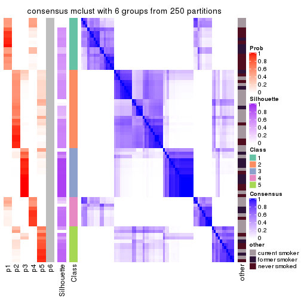
Heatmaps for the membership of samples in all partitions to see how consistent they are:
membership_heatmap(res, k = 2)

membership_heatmap(res, k = 3)
membership_heatmap(res, k = 4)
membership_heatmap(res, k = 5)
membership_heatmap(res, k = 6)
As soon as we have had the classes for columns, we can look for signatures which are significantly different between classes which can be candidate marks for certain classes. Following are the heatmaps for signatures.
Signature heatmaps where rows are scaled:
get_signatures(res, k = 2)

get_signatures(res, k = 3)
get_signatures(res, k = 4)
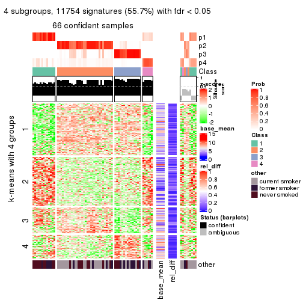
get_signatures(res, k = 5)
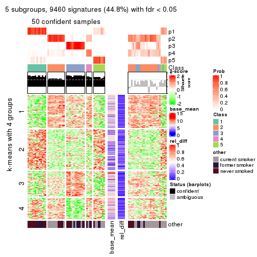
get_signatures(res, k = 6)
Signature heatmaps where rows are not scaled:
get_signatures(res, k = 2, scale_rows = FALSE)

get_signatures(res, k = 3, scale_rows = FALSE)
get_signatures(res, k = 4, scale_rows = FALSE)
get_signatures(res, k = 5, scale_rows = FALSE)
get_signatures(res, k = 6, scale_rows = FALSE)

Compare the overlap of signatures from different k:
compare_signatures(res)
get_signature() returns a data frame invisibly. TO get the list of signatures, the function
call should be assigned to a variable explicitly. In following code, if plot argument is set
to FALSE, no heatmap is plotted while only the differential analysis is performed.
# code only for demonstration
tb = get_signature(res, k = ..., plot = FALSE)
An example of the output of tb is:
#> which_row fdr mean_1 mean_2 scaled_mean_1 scaled_mean_2 km
#> 1 38 0.042760348 8.373488 9.131774 -0.5533452 0.5164555 1
#> 2 40 0.018707592 7.106213 8.469186 -0.6173731 0.5762149 1
#> 3 55 0.019134737 10.221463 11.207825 -0.6159697 0.5749050 1
#> 4 59 0.006059896 5.921854 7.869574 -0.6899429 0.6439467 1
#> 5 60 0.018055526 8.928898 10.211722 -0.6204761 0.5791110 1
#> 6 98 0.009384629 15.714769 14.887706 0.6635654 -0.6193277 2
...
The columns in tb are:
which_row: row indices corresponding to the input matrix.fdr: FDR for the differential test. mean_x: The mean value in group x.scaled_mean_x: The mean value in group x after rows are scaled.km: Row groups if k-means clustering is applied to rows.UMAP plot which shows how samples are separated.
dimension_reduction(res, k = 2, method = "UMAP")

dimension_reduction(res, k = 3, method = "UMAP")
dimension_reduction(res, k = 4, method = "UMAP")
dimension_reduction(res, k = 5, method = "UMAP")
dimension_reduction(res, k = 6, method = "UMAP")
Following heatmap shows how subgroups are split when increasing k:
collect_classes(res)
Test correlation between subgroups and known annotations. If the known annotation is numeric, one-way ANOVA test is applied, and if the known annotation is discrete, chi-squared contingency table test is applied.
test_to_known_factors(res)
#> n other(p) k
#> CV:mclust 75 0.40947 2
#> CV:mclust 73 0.03462 3
#> CV:mclust 66 0.00168 4
#> CV:mclust 50 0.00992 5
#> CV:mclust 55 0.00254 6
If matrix rows can be associated to genes, consider to use functional_enrichment(res,
...) to perform function enrichment for the signature genes. See this vignette for more detailed explanations.
The object with results only for a single top-value method and a single partition method can be extracted as:
res = res_list["CV", "NMF"]
# you can also extract it by
# res = res_list["CV:NMF"]
A summary of res and all the functions that can be applied to it:
res
#> A 'ConsensusPartition' object with k = 2, 3, 4, 5, 6.
#> On a matrix with 21104 rows and 75 columns.
#> Top rows (1000, 2000, 3000, 4000, 5000) are extracted by 'CV' method.
#> Subgroups are detected by 'NMF' method.
#> Performed in total 1250 partitions by row resampling.
#> Best k for subgroups seems to be 2.
#>
#> Following methods can be applied to this 'ConsensusPartition' object:
#> [1] "cola_report" "collect_classes" "collect_plots"
#> [4] "collect_stats" "colnames" "compare_signatures"
#> [7] "consensus_heatmap" "dimension_reduction" "functional_enrichment"
#> [10] "get_anno_col" "get_anno" "get_classes"
#> [13] "get_consensus" "get_matrix" "get_membership"
#> [16] "get_param" "get_signatures" "get_stats"
#> [19] "is_best_k" "is_stable_k" "membership_heatmap"
#> [22] "ncol" "nrow" "plot_ecdf"
#> [25] "rownames" "select_partition_number" "show"
#> [28] "suggest_best_k" "test_to_known_factors"
collect_plots() function collects all the plots made from res for all k (number of partitions)
into one single page to provide an easy and fast comparison between different k.
collect_plots(res)
The plots are:
k and the heatmap of
predicted classes for each k.k.k.k.All the plots in panels can be made by individual functions and they are plotted later in this section.
select_partition_number() produces several plots showing different
statistics for choosing “optimized” k. There are following statistics:
k;k, the area increased is defined as \(A_k - A_{k-1}\).The detailed explanations of these statistics can be found in the cola vignette.
Generally speaking, lower PAC score, higher mean silhouette score or higher
concordance corresponds to better partition. Rand index and Jaccard index
measure how similar the current partition is compared to partition with k-1.
If they are too similar, we won't accept k is better than k-1.
select_partition_number(res)
The numeric values for all these statistics can be obtained by get_stats().
get_stats(res)
#> k 1-PAC mean_silhouette concordance area_increased Rand Jaccard
#> 2 2 1.000 0.999 1.000 0.4512 0.550 0.550
#> 3 3 0.699 0.719 0.870 0.4236 0.781 0.601
#> 4 4 0.560 0.580 0.780 0.1268 0.929 0.795
#> 5 5 0.538 0.564 0.721 0.0544 0.898 0.691
#> 6 6 0.543 0.466 0.673 0.0350 0.960 0.854
suggest_best_k() suggests the best \(k\) based on these statistics. The rules are as follows:
suggest_best_k(res)
#> [1] 2
Following shows the table of the partitions (You need to click the show/hide
code output link to see it). The membership matrix (columns with name p*)
is inferred by
clue::cl_consensus()
function with the SE method. Basically the value in the membership matrix
represents the probability to belong to a certain group. The finall class
label for an item is determined with the group with highest probability it
belongs to.
In get_classes() function, the entropy is calculated from the membership
matrix and the silhouette score is calculated from the consensus matrix.
cbind(get_classes(res, k = 2), get_membership(res, k = 2))
#> class entropy silhouette p1 p2
#> GSM15684 1 0.0000 1.000 1.000 0.000
#> GSM15685 1 0.0000 1.000 1.000 0.000
#> GSM15686 1 0.0000 1.000 1.000 0.000
#> GSM15687 1 0.0000 1.000 1.000 0.000
#> GSM15688 1 0.0000 1.000 1.000 0.000
#> GSM15689 1 0.0000 1.000 1.000 0.000
#> GSM15690 1 0.0000 1.000 1.000 0.000
#> GSM15691 1 0.0000 1.000 1.000 0.000
#> GSM15692 1 0.0000 1.000 1.000 0.000
#> GSM15693 2 0.0000 0.999 0.000 1.000
#> GSM15694 2 0.0000 0.999 0.000 1.000
#> GSM15695 2 0.0000 0.999 0.000 1.000
#> GSM15696 2 0.0000 0.999 0.000 1.000
#> GSM15697 2 0.0000 0.999 0.000 1.000
#> GSM15698 2 0.0000 0.999 0.000 1.000
#> GSM15699 2 0.0000 0.999 0.000 1.000
#> GSM15700 2 0.0000 0.999 0.000 1.000
#> GSM15701 2 0.0000 0.999 0.000 1.000
#> GSM15702 2 0.0000 0.999 0.000 1.000
#> GSM15703 2 0.0000 0.999 0.000 1.000
#> GSM15704 2 0.0000 0.999 0.000 1.000
#> GSM15705 2 0.0000 0.999 0.000 1.000
#> GSM15706 2 0.0000 0.999 0.000 1.000
#> GSM15707 2 0.0000 0.999 0.000 1.000
#> GSM15708 2 0.0000 0.999 0.000 1.000
#> GSM15709 2 0.0000 0.999 0.000 1.000
#> GSM15710 2 0.0000 0.999 0.000 1.000
#> GSM15711 2 0.0000 0.999 0.000 1.000
#> GSM15712 2 0.0000 0.999 0.000 1.000
#> GSM15713 2 0.0000 0.999 0.000 1.000
#> GSM15714 2 0.0000 0.999 0.000 1.000
#> GSM15715 2 0.0376 0.996 0.004 0.996
#> GSM15716 2 0.0000 0.999 0.000 1.000
#> GSM15717 2 0.0672 0.992 0.008 0.992
#> GSM15718 1 0.0000 1.000 1.000 0.000
#> GSM15719 2 0.0000 0.999 0.000 1.000
#> GSM15720 1 0.0000 1.000 1.000 0.000
#> GSM15721 1 0.0000 1.000 1.000 0.000
#> GSM15722 1 0.0000 1.000 1.000 0.000
#> GSM15723 1 0.0000 1.000 1.000 0.000
#> GSM15724 1 0.0000 1.000 1.000 0.000
#> GSM15725 1 0.0000 1.000 1.000 0.000
#> GSM15726 1 0.0000 1.000 1.000 0.000
#> GSM15727 1 0.0000 1.000 1.000 0.000
#> GSM15728 1 0.0000 1.000 1.000 0.000
#> GSM15729 2 0.0000 0.999 0.000 1.000
#> GSM15730 2 0.0000 0.999 0.000 1.000
#> GSM15731 2 0.0000 0.999 0.000 1.000
#> GSM15732 2 0.0000 0.999 0.000 1.000
#> GSM15733 2 0.0000 0.999 0.000 1.000
#> GSM15734 2 0.0000 0.999 0.000 1.000
#> GSM15735 2 0.0000 0.999 0.000 1.000
#> GSM15736 2 0.0000 0.999 0.000 1.000
#> GSM15737 2 0.0000 0.999 0.000 1.000
#> GSM15738 2 0.0000 0.999 0.000 1.000
#> GSM15739 2 0.0000 0.999 0.000 1.000
#> GSM15740 2 0.0000 0.999 0.000 1.000
#> GSM15741 1 0.0000 1.000 1.000 0.000
#> GSM15742 1 0.0000 1.000 1.000 0.000
#> GSM15743 1 0.0000 1.000 1.000 0.000
#> GSM15744 1 0.0000 1.000 1.000 0.000
#> GSM15745 1 0.0000 1.000 1.000 0.000
#> GSM15746 1 0.0000 1.000 1.000 0.000
#> GSM15747 2 0.0000 0.999 0.000 1.000
#> GSM15748 2 0.0000 0.999 0.000 1.000
#> GSM15749 2 0.0000 0.999 0.000 1.000
#> GSM15750 2 0.0000 0.999 0.000 1.000
#> GSM15751 2 0.0000 0.999 0.000 1.000
#> GSM15752 2 0.0000 0.999 0.000 1.000
#> GSM15753 2 0.0000 0.999 0.000 1.000
#> GSM15754 2 0.0000 0.999 0.000 1.000
#> GSM15755 2 0.0000 0.999 0.000 1.000
#> GSM15756 2 0.0000 0.999 0.000 1.000
#> GSM15757 2 0.1184 0.984 0.016 0.984
#> GSM15758 2 0.0000 0.999 0.000 1.000
cbind(get_classes(res, k = 3), get_membership(res, k = 3))
#> class entropy silhouette p1 p2 p3
#> GSM15684 1 0.1411 0.9606 0.964 0.036 0.000
#> GSM15685 1 0.0424 0.9689 0.992 0.008 0.000
#> GSM15686 1 0.0661 0.9686 0.988 0.004 0.008
#> GSM15687 1 0.0661 0.9686 0.988 0.004 0.008
#> GSM15688 1 0.0475 0.9698 0.992 0.004 0.004
#> GSM15689 1 0.2959 0.9275 0.900 0.100 0.000
#> GSM15690 1 0.0829 0.9669 0.984 0.004 0.012
#> GSM15691 1 0.0475 0.9698 0.992 0.004 0.004
#> GSM15692 1 0.0475 0.9698 0.992 0.004 0.004
#> GSM15693 2 0.2796 0.7693 0.000 0.908 0.092
#> GSM15694 2 0.3619 0.7766 0.000 0.864 0.136
#> GSM15695 2 0.3752 0.7764 0.000 0.856 0.144
#> GSM15696 3 0.6305 -0.2040 0.000 0.484 0.516
#> GSM15697 3 0.5621 0.4002 0.000 0.308 0.692
#> GSM15698 2 0.6168 0.5025 0.000 0.588 0.412
#> GSM15699 2 0.1411 0.7311 0.000 0.964 0.036
#> GSM15700 3 0.1643 0.7722 0.000 0.044 0.956
#> GSM15701 3 0.6309 -0.2734 0.000 0.496 0.504
#> GSM15702 3 0.1643 0.7721 0.000 0.044 0.956
#> GSM15703 2 0.1964 0.7485 0.000 0.944 0.056
#> GSM15704 3 0.5882 0.3042 0.000 0.348 0.652
#> GSM15705 2 0.4750 0.7560 0.000 0.784 0.216
#> GSM15706 2 0.4654 0.7600 0.000 0.792 0.208
#> GSM15707 2 0.4702 0.7566 0.000 0.788 0.212
#> GSM15708 3 0.0424 0.7840 0.008 0.000 0.992
#> GSM15709 3 0.0424 0.7873 0.000 0.008 0.992
#> GSM15710 2 0.5560 0.6788 0.000 0.700 0.300
#> GSM15711 3 0.6280 -0.1223 0.000 0.460 0.540
#> GSM15712 3 0.0592 0.7864 0.000 0.012 0.988
#> GSM15713 2 0.6126 0.5279 0.000 0.600 0.400
#> GSM15714 2 0.6168 0.4995 0.000 0.588 0.412
#> GSM15715 3 0.1525 0.7604 0.032 0.004 0.964
#> GSM15716 2 0.1860 0.7463 0.000 0.948 0.052
#> GSM15717 2 0.6763 0.4240 0.012 0.552 0.436
#> GSM15718 1 0.0747 0.9672 0.984 0.016 0.000
#> GSM15719 2 0.5365 0.7177 0.004 0.744 0.252
#> GSM15720 1 0.0747 0.9672 0.984 0.016 0.000
#> GSM15721 1 0.2796 0.9323 0.908 0.092 0.000
#> GSM15722 1 0.1399 0.9565 0.968 0.004 0.028
#> GSM15723 1 0.0475 0.9698 0.992 0.004 0.004
#> GSM15724 1 0.0892 0.9667 0.980 0.020 0.000
#> GSM15725 1 0.3340 0.9130 0.880 0.120 0.000
#> GSM15726 1 0.5760 0.6810 0.672 0.328 0.000
#> GSM15727 1 0.0000 0.9697 1.000 0.000 0.000
#> GSM15728 1 0.0475 0.9698 0.992 0.004 0.004
#> GSM15729 3 0.1411 0.7766 0.000 0.036 0.964
#> GSM15730 3 0.6062 0.1930 0.000 0.384 0.616
#> GSM15731 2 0.2878 0.7710 0.000 0.904 0.096
#> GSM15732 3 0.1643 0.7721 0.000 0.044 0.956
#> GSM15733 3 0.0747 0.7790 0.016 0.000 0.984
#> GSM15734 3 0.6168 0.0859 0.000 0.412 0.588
#> GSM15735 2 0.3192 0.7746 0.000 0.888 0.112
#> GSM15736 3 0.0000 0.7870 0.000 0.000 1.000
#> GSM15737 3 0.1525 0.7605 0.032 0.004 0.964
#> GSM15738 3 0.1525 0.7605 0.032 0.004 0.964
#> GSM15739 3 0.5948 0.2729 0.000 0.360 0.640
#> GSM15740 2 0.6309 0.2463 0.000 0.504 0.496
#> GSM15741 1 0.0000 0.9697 1.000 0.000 0.000
#> GSM15742 1 0.0475 0.9698 0.992 0.004 0.004
#> GSM15743 1 0.0892 0.9661 0.980 0.020 0.000
#> GSM15744 1 0.0000 0.9697 1.000 0.000 0.000
#> GSM15745 1 0.2066 0.9497 0.940 0.060 0.000
#> GSM15746 1 0.0475 0.9698 0.992 0.004 0.004
#> GSM15747 3 0.0237 0.7858 0.004 0.000 0.996
#> GSM15748 2 0.6307 0.2740 0.000 0.512 0.488
#> GSM15749 2 0.2537 0.7635 0.000 0.920 0.080
#> GSM15750 3 0.0747 0.7790 0.016 0.000 0.984
#> GSM15751 3 0.0475 0.7871 0.004 0.004 0.992
#> GSM15752 3 0.0237 0.7875 0.000 0.004 0.996
#> GSM15753 3 0.0237 0.7875 0.000 0.004 0.996
#> GSM15754 3 0.6079 0.1816 0.000 0.388 0.612
#> GSM15755 3 0.0237 0.7875 0.000 0.004 0.996
#> GSM15756 3 0.0424 0.7873 0.000 0.008 0.992
#> GSM15757 3 0.0592 0.7817 0.012 0.000 0.988
#> GSM15758 2 0.1031 0.7198 0.000 0.976 0.024
cbind(get_classes(res, k = 4), get_membership(res, k = 4))
#> class entropy silhouette p1 p2 p3 p4
#> GSM15684 1 0.5167 0.1487 0.508 0.004 0.000 0.488
#> GSM15685 1 0.4967 0.2606 0.548 0.000 0.000 0.452
#> GSM15686 1 0.3266 0.7565 0.832 0.000 0.000 0.168
#> GSM15687 1 0.4382 0.6272 0.704 0.000 0.000 0.296
#> GSM15688 1 0.2868 0.7670 0.864 0.000 0.000 0.136
#> GSM15689 1 0.2888 0.7680 0.872 0.004 0.000 0.124
#> GSM15690 1 0.3355 0.7746 0.836 0.000 0.004 0.160
#> GSM15691 1 0.3444 0.7286 0.816 0.000 0.000 0.184
#> GSM15692 1 0.4941 0.3253 0.564 0.000 0.000 0.436
#> GSM15693 2 0.1677 0.6937 0.000 0.948 0.012 0.040
#> GSM15694 2 0.2797 0.7148 0.000 0.900 0.068 0.032
#> GSM15695 2 0.4389 0.6805 0.000 0.812 0.116 0.072
#> GSM15696 3 0.6016 0.1939 0.000 0.412 0.544 0.044
#> GSM15697 3 0.5200 0.5430 0.000 0.264 0.700 0.036
#> GSM15698 2 0.5420 0.6060 0.000 0.684 0.272 0.044
#> GSM15699 2 0.1109 0.6918 0.000 0.968 0.004 0.028
#> GSM15700 3 0.3899 0.7481 0.000 0.052 0.840 0.108
#> GSM15701 2 0.5964 0.2483 0.000 0.536 0.424 0.040
#> GSM15702 3 0.1833 0.7847 0.000 0.024 0.944 0.032
#> GSM15703 2 0.1576 0.6877 0.000 0.948 0.004 0.048
#> GSM15704 3 0.6041 0.3672 0.000 0.332 0.608 0.060
#> GSM15705 2 0.4542 0.6721 0.000 0.804 0.088 0.108
#> GSM15706 2 0.4071 0.7067 0.000 0.832 0.104 0.064
#> GSM15707 2 0.4289 0.6937 0.000 0.796 0.172 0.032
#> GSM15708 3 0.0817 0.7901 0.000 0.000 0.976 0.024
#> GSM15709 3 0.1635 0.7879 0.000 0.008 0.948 0.044
#> GSM15710 2 0.4365 0.6819 0.000 0.784 0.188 0.028
#> GSM15711 2 0.6875 0.3365 0.000 0.520 0.368 0.112
#> GSM15712 3 0.5497 0.5918 0.000 0.044 0.672 0.284
#> GSM15713 2 0.6613 0.5673 0.000 0.628 0.200 0.172
#> GSM15714 4 0.7372 -0.1983 0.000 0.420 0.160 0.420
#> GSM15715 3 0.3257 0.7442 0.004 0.000 0.844 0.152
#> GSM15716 2 0.1305 0.6926 0.000 0.960 0.004 0.036
#> GSM15717 4 0.7045 0.2932 0.020 0.232 0.128 0.620
#> GSM15718 4 0.5168 -0.3123 0.496 0.004 0.000 0.500
#> GSM15719 4 0.6736 0.1425 0.016 0.380 0.060 0.544
#> GSM15720 1 0.1398 0.7876 0.956 0.004 0.000 0.040
#> GSM15721 1 0.4364 0.7251 0.808 0.056 0.000 0.136
#> GSM15722 1 0.3931 0.7608 0.832 0.000 0.040 0.128
#> GSM15723 1 0.1978 0.7895 0.928 0.000 0.004 0.068
#> GSM15724 1 0.4059 0.7162 0.788 0.012 0.000 0.200
#> GSM15725 1 0.4706 0.7074 0.788 0.072 0.000 0.140
#> GSM15726 1 0.5321 0.6614 0.748 0.140 0.000 0.112
#> GSM15727 1 0.3306 0.7504 0.840 0.004 0.000 0.156
#> GSM15728 1 0.2281 0.7781 0.904 0.000 0.000 0.096
#> GSM15729 3 0.1610 0.7873 0.000 0.016 0.952 0.032
#> GSM15730 3 0.5915 0.1877 0.000 0.400 0.560 0.040
#> GSM15731 2 0.2882 0.6757 0.000 0.892 0.024 0.084
#> GSM15732 3 0.6156 0.4783 0.000 0.064 0.592 0.344
#> GSM15733 3 0.4155 0.6691 0.000 0.004 0.756 0.240
#> GSM15734 3 0.6223 0.2336 0.000 0.384 0.556 0.060
#> GSM15735 2 0.2111 0.6954 0.000 0.932 0.024 0.044
#> GSM15736 3 0.1118 0.7865 0.000 0.000 0.964 0.036
#> GSM15737 3 0.1209 0.7878 0.004 0.000 0.964 0.032
#> GSM15738 3 0.1305 0.7853 0.004 0.000 0.960 0.036
#> GSM15739 3 0.7674 -0.0048 0.004 0.360 0.448 0.188
#> GSM15740 2 0.7557 0.3119 0.000 0.484 0.232 0.284
#> GSM15741 4 0.5000 -0.3272 0.496 0.000 0.000 0.504
#> GSM15742 1 0.2197 0.7863 0.916 0.000 0.004 0.080
#> GSM15743 1 0.1398 0.7860 0.956 0.004 0.000 0.040
#> GSM15744 1 0.2944 0.7625 0.868 0.004 0.000 0.128
#> GSM15745 1 0.2466 0.7820 0.900 0.004 0.000 0.096
#> GSM15746 1 0.3486 0.7219 0.812 0.000 0.000 0.188
#> GSM15747 3 0.0817 0.7900 0.000 0.000 0.976 0.024
#> GSM15748 2 0.7190 0.4471 0.000 0.548 0.260 0.192
#> GSM15749 2 0.0804 0.6993 0.000 0.980 0.008 0.012
#> GSM15750 3 0.2647 0.7594 0.000 0.000 0.880 0.120
#> GSM15751 3 0.0469 0.7906 0.000 0.000 0.988 0.012
#> GSM15752 3 0.0921 0.7898 0.000 0.000 0.972 0.028
#> GSM15753 3 0.3122 0.7600 0.016 0.012 0.888 0.084
#> GSM15754 3 0.5881 0.1424 0.000 0.420 0.544 0.036
#> GSM15755 3 0.0707 0.7905 0.000 0.000 0.980 0.020
#> GSM15756 3 0.1635 0.7883 0.000 0.008 0.948 0.044
#> GSM15757 3 0.1389 0.7885 0.000 0.000 0.952 0.048
#> GSM15758 2 0.5345 0.0862 0.000 0.560 0.012 0.428
cbind(get_classes(res, k = 5), get_membership(res, k = 5))
#> class entropy silhouette p1 p2 p3 p4 p5
#> GSM15684 4 0.5475 0.272 0.308 0.000 0.000 0.604 NA
#> GSM15685 4 0.5629 0.249 0.312 0.000 0.000 0.588 NA
#> GSM15686 1 0.5783 0.556 0.540 0.000 0.004 0.084 NA
#> GSM15687 1 0.6219 0.393 0.440 0.000 0.000 0.140 NA
#> GSM15688 1 0.4823 0.678 0.700 0.000 0.000 0.072 NA
#> GSM15689 1 0.4938 0.596 0.696 0.008 0.000 0.240 NA
#> GSM15690 1 0.5781 0.505 0.508 0.000 0.008 0.068 NA
#> GSM15691 1 0.6079 0.577 0.604 0.000 0.008 0.180 NA
#> GSM15692 1 0.6532 0.106 0.420 0.000 0.000 0.384 NA
#> GSM15693 2 0.2635 0.622 0.000 0.888 0.016 0.088 NA
#> GSM15694 2 0.2011 0.655 0.000 0.928 0.044 0.008 NA
#> GSM15695 2 0.3899 0.608 0.004 0.840 0.040 0.056 NA
#> GSM15696 2 0.6077 0.288 0.004 0.488 0.432 0.024 NA
#> GSM15697 3 0.6005 0.281 0.000 0.308 0.588 0.024 NA
#> GSM15698 2 0.4993 0.646 0.000 0.740 0.168 0.036 NA
#> GSM15699 2 0.1854 0.628 0.000 0.936 0.008 0.036 NA
#> GSM15700 3 0.5947 0.651 0.000 0.072 0.652 0.052 NA
#> GSM15701 2 0.4791 0.552 0.000 0.636 0.336 0.008 NA
#> GSM15702 3 0.2379 0.789 0.000 0.028 0.912 0.012 NA
#> GSM15703 2 0.2177 0.622 0.000 0.908 0.008 0.080 NA
#> GSM15704 2 0.6162 0.252 0.000 0.460 0.444 0.020 NA
#> GSM15705 2 0.5085 0.594 0.000 0.736 0.072 0.160 NA
#> GSM15706 2 0.4756 0.660 0.000 0.768 0.128 0.072 NA
#> GSM15707 2 0.4126 0.673 0.000 0.800 0.140 0.032 NA
#> GSM15708 3 0.1202 0.805 0.004 0.000 0.960 0.004 NA
#> GSM15709 3 0.2537 0.790 0.000 0.016 0.904 0.024 NA
#> GSM15710 2 0.3246 0.675 0.000 0.848 0.120 0.008 NA
#> GSM15711 2 0.7105 0.433 0.000 0.468 0.344 0.140 NA
#> GSM15712 3 0.6643 0.419 0.000 0.064 0.540 0.320 NA
#> GSM15713 2 0.7191 0.419 0.000 0.496 0.200 0.260 NA
#> GSM15714 4 0.6654 0.150 0.000 0.332 0.088 0.528 NA
#> GSM15715 3 0.3862 0.762 0.000 0.000 0.808 0.088 NA
#> GSM15716 2 0.1934 0.627 0.000 0.928 0.004 0.052 NA
#> GSM15717 4 0.5518 0.491 0.004 0.152 0.072 0.720 NA
#> GSM15718 4 0.5524 0.271 0.320 0.004 0.000 0.600 NA
#> GSM15719 4 0.5427 0.479 0.016 0.236 0.036 0.688 NA
#> GSM15720 1 0.2962 0.713 0.868 0.000 0.000 0.048 NA
#> GSM15721 1 0.4966 0.658 0.764 0.060 0.000 0.072 NA
#> GSM15722 1 0.5510 0.632 0.676 0.000 0.048 0.044 NA
#> GSM15723 1 0.4817 0.672 0.728 0.000 0.016 0.052 NA
#> GSM15724 1 0.5202 0.658 0.748 0.044 0.008 0.060 NA
#> GSM15725 1 0.5267 0.648 0.744 0.084 0.000 0.072 NA
#> GSM15726 1 0.5682 0.598 0.704 0.144 0.000 0.060 NA
#> GSM15727 1 0.3118 0.705 0.872 0.008 0.004 0.036 NA
#> GSM15728 1 0.3154 0.718 0.836 0.000 0.004 0.012 NA
#> GSM15729 3 0.2467 0.792 0.000 0.024 0.908 0.016 NA
#> GSM15730 2 0.5300 0.282 0.000 0.492 0.468 0.008 NA
#> GSM15731 2 0.3311 0.595 0.004 0.868 0.016 0.048 NA
#> GSM15732 3 0.7757 0.348 0.000 0.084 0.444 0.216 NA
#> GSM15733 3 0.5447 0.663 0.000 0.004 0.660 0.112 NA
#> GSM15734 2 0.5654 0.388 0.004 0.528 0.416 0.016 NA
#> GSM15735 2 0.2269 0.630 0.000 0.920 0.020 0.028 NA
#> GSM15736 3 0.1843 0.798 0.004 0.004 0.936 0.012 NA
#> GSM15737 3 0.1831 0.802 0.004 0.000 0.920 0.000 NA
#> GSM15738 3 0.2517 0.796 0.004 0.000 0.884 0.008 NA
#> GSM15739 3 0.7964 -0.169 0.004 0.324 0.392 0.196 NA
#> GSM15740 2 0.7313 0.222 0.000 0.388 0.240 0.344 NA
#> GSM15741 4 0.6484 0.144 0.312 0.000 0.004 0.500 NA
#> GSM15742 1 0.3521 0.716 0.808 0.000 0.008 0.012 NA
#> GSM15743 1 0.3346 0.707 0.844 0.000 0.000 0.092 NA
#> GSM15744 1 0.2720 0.715 0.880 0.000 0.004 0.020 NA
#> GSM15745 1 0.4197 0.682 0.776 0.000 0.000 0.148 NA
#> GSM15746 1 0.5476 0.607 0.656 0.000 0.000 0.184 NA
#> GSM15747 3 0.1731 0.802 0.000 0.004 0.932 0.004 NA
#> GSM15748 2 0.8092 0.327 0.000 0.436 0.212 0.176 NA
#> GSM15749 2 0.1569 0.634 0.000 0.948 0.008 0.032 NA
#> GSM15750 3 0.4616 0.711 0.000 0.008 0.720 0.040 NA
#> GSM15751 3 0.0955 0.801 0.000 0.004 0.968 0.000 NA
#> GSM15752 3 0.3538 0.764 0.000 0.004 0.804 0.016 NA
#> GSM15753 3 0.3087 0.779 0.008 0.012 0.872 0.016 NA
#> GSM15754 2 0.5671 0.387 0.000 0.524 0.416 0.024 NA
#> GSM15755 3 0.1082 0.802 0.000 0.008 0.964 0.000 NA
#> GSM15756 3 0.2347 0.791 0.000 0.016 0.912 0.016 NA
#> GSM15757 3 0.2589 0.797 0.000 0.008 0.888 0.012 NA
#> GSM15758 4 0.4893 0.234 0.000 0.404 0.000 0.568 NA
cbind(get_classes(res, k = 6), get_membership(res, k = 6))
#> class entropy silhouette p1 p2 p3 p4 p5 p6
#> GSM15684 4 0.6756 0.1850 0.164 0.008 0.004 0.552 0.184 NA
#> GSM15685 4 0.7053 0.1149 0.164 0.004 0.000 0.484 0.224 NA
#> GSM15686 5 0.5241 0.4993 0.320 0.000 0.004 0.028 0.600 NA
#> GSM15687 5 0.5344 0.6135 0.232 0.000 0.012 0.044 0.660 NA
#> GSM15688 1 0.5886 0.0646 0.544 0.000 0.000 0.072 0.324 NA
#> GSM15689 1 0.6439 0.1524 0.528 0.004 0.000 0.200 0.224 NA
#> GSM15690 5 0.6129 0.4611 0.316 0.000 0.016 0.016 0.524 NA
#> GSM15691 1 0.6747 0.0659 0.464 0.000 0.000 0.076 0.296 NA
#> GSM15692 4 0.7669 -0.2587 0.276 0.000 0.000 0.296 0.232 NA
#> GSM15693 2 0.3376 0.6384 0.000 0.828 0.020 0.124 0.004 NA
#> GSM15694 2 0.1483 0.6648 0.008 0.944 0.036 0.000 0.000 NA
#> GSM15695 2 0.2698 0.6429 0.032 0.892 0.024 0.000 0.012 NA
#> GSM15696 2 0.5629 0.4347 0.016 0.544 0.360 0.004 0.008 NA
#> GSM15697 3 0.6260 -0.1077 0.000 0.380 0.432 0.012 0.008 NA
#> GSM15698 2 0.6652 0.5564 0.020 0.592 0.164 0.032 0.028 NA
#> GSM15699 2 0.2558 0.6489 0.000 0.896 0.012 0.028 0.012 NA
#> GSM15700 3 0.7125 0.4745 0.000 0.112 0.484 0.036 0.080 NA
#> GSM15701 2 0.4905 0.5759 0.000 0.624 0.316 0.012 0.008 NA
#> GSM15702 3 0.3175 0.7155 0.000 0.076 0.852 0.004 0.012 NA
#> GSM15703 2 0.3034 0.6364 0.000 0.852 0.008 0.108 0.008 NA
#> GSM15704 2 0.6474 0.3886 0.000 0.472 0.344 0.032 0.012 NA
#> GSM15705 2 0.5824 0.5796 0.000 0.652 0.072 0.192 0.024 NA
#> GSM15706 2 0.5225 0.6368 0.000 0.708 0.124 0.120 0.020 NA
#> GSM15707 2 0.4560 0.6686 0.000 0.764 0.116 0.056 0.008 NA
#> GSM15708 3 0.1788 0.7610 0.000 0.012 0.928 0.004 0.004 NA
#> GSM15709 3 0.3853 0.7124 0.000 0.052 0.808 0.012 0.016 NA
#> GSM15710 2 0.3118 0.6814 0.004 0.844 0.120 0.008 0.004 NA
#> GSM15711 2 0.6938 0.4319 0.000 0.440 0.320 0.172 0.012 NA
#> GSM15712 3 0.6180 0.4561 0.000 0.040 0.560 0.284 0.016 NA
#> GSM15713 2 0.7047 0.4163 0.000 0.476 0.184 0.256 0.016 NA
#> GSM15714 4 0.6754 0.2137 0.000 0.280 0.048 0.528 0.048 NA
#> GSM15715 3 0.4179 0.7276 0.000 0.004 0.772 0.072 0.016 NA
#> GSM15716 2 0.2135 0.6394 0.000 0.916 0.012 0.044 0.004 NA
#> GSM15717 4 0.4145 0.4346 0.000 0.080 0.016 0.800 0.028 NA
#> GSM15718 4 0.6179 0.2040 0.152 0.004 0.000 0.600 0.172 NA
#> GSM15719 4 0.4545 0.4498 0.000 0.124 0.020 0.768 0.048 NA
#> GSM15720 1 0.4685 0.4461 0.716 0.000 0.000 0.024 0.180 NA
#> GSM15721 1 0.5283 0.4631 0.728 0.100 0.004 0.020 0.068 NA
#> GSM15722 1 0.6682 0.2432 0.520 0.000 0.032 0.028 0.168 NA
#> GSM15723 1 0.6166 0.3801 0.592 0.000 0.012 0.040 0.160 NA
#> GSM15724 1 0.4355 0.4439 0.776 0.028 0.000 0.012 0.120 NA
#> GSM15725 1 0.4801 0.4465 0.752 0.092 0.000 0.012 0.092 NA
#> GSM15726 1 0.5534 0.3984 0.680 0.168 0.000 0.016 0.056 NA
#> GSM15727 1 0.2591 0.4988 0.880 0.004 0.000 0.000 0.064 NA
#> GSM15728 1 0.4667 0.4141 0.712 0.000 0.008 0.004 0.180 NA
#> GSM15729 3 0.2451 0.7331 0.000 0.060 0.884 0.000 0.000 NA
#> GSM15730 2 0.4946 0.3292 0.000 0.496 0.456 0.008 0.004 NA
#> GSM15731 2 0.2685 0.6131 0.048 0.892 0.008 0.004 0.012 NA
#> GSM15732 3 0.7576 0.3272 0.000 0.072 0.396 0.156 0.048 NA
#> GSM15733 3 0.5556 0.6120 0.000 0.000 0.604 0.084 0.040 NA
#> GSM15734 2 0.5261 0.4736 0.020 0.568 0.368 0.004 0.012 NA
#> GSM15735 2 0.2232 0.6405 0.012 0.920 0.020 0.012 0.008 NA
#> GSM15736 3 0.2032 0.7624 0.000 0.004 0.912 0.004 0.012 NA
#> GSM15737 3 0.3106 0.7485 0.000 0.000 0.840 0.016 0.024 NA
#> GSM15738 3 0.2949 0.7534 0.000 0.000 0.832 0.000 0.028 NA
#> GSM15739 3 0.8043 -0.0593 0.004 0.260 0.356 0.244 0.044 NA
#> GSM15740 4 0.6939 -0.0427 0.000 0.308 0.164 0.460 0.024 NA
#> GSM15741 4 0.7168 -0.0322 0.224 0.000 0.000 0.448 0.140 NA
#> GSM15742 1 0.5268 0.4023 0.668 0.000 0.004 0.020 0.172 NA
#> GSM15743 1 0.4110 0.4886 0.788 0.000 0.000 0.104 0.064 NA
#> GSM15744 1 0.3820 0.4872 0.780 0.000 0.000 0.004 0.144 NA
#> GSM15745 1 0.5807 0.3727 0.620 0.004 0.000 0.136 0.200 NA
#> GSM15746 1 0.6494 -0.1261 0.448 0.000 0.004 0.112 0.376 NA
#> GSM15747 3 0.2813 0.7616 0.000 0.008 0.864 0.000 0.036 NA
#> GSM15748 2 0.7988 0.2583 0.000 0.360 0.224 0.192 0.024 NA
#> GSM15749 2 0.2340 0.6513 0.004 0.912 0.012 0.040 0.012 NA
#> GSM15750 3 0.5324 0.6330 0.000 0.016 0.636 0.020 0.060 NA
#> GSM15751 3 0.1625 0.7615 0.000 0.000 0.928 0.000 0.012 NA
#> GSM15752 3 0.3828 0.7305 0.000 0.008 0.764 0.004 0.028 NA
#> GSM15753 3 0.3145 0.7468 0.012 0.008 0.860 0.008 0.024 NA
#> GSM15754 2 0.5115 0.4565 0.000 0.552 0.384 0.012 0.004 NA
#> GSM15755 3 0.0951 0.7589 0.000 0.004 0.968 0.000 0.008 NA
#> GSM15756 3 0.3274 0.7307 0.000 0.044 0.852 0.020 0.008 NA
#> GSM15757 3 0.2715 0.7528 0.000 0.000 0.860 0.024 0.004 NA
#> GSM15758 4 0.4798 0.3116 0.000 0.308 0.000 0.632 0.020 NA
Heatmaps for the consensus matrix. It visualizes the probability of two samples to be in a same group.
consensus_heatmap(res, k = 2)
consensus_heatmap(res, k = 3)
consensus_heatmap(res, k = 4)
consensus_heatmap(res, k = 5)
consensus_heatmap(res, k = 6)
Heatmaps for the membership of samples in all partitions to see how consistent they are:
membership_heatmap(res, k = 2)
membership_heatmap(res, k = 3)
membership_heatmap(res, k = 4)
membership_heatmap(res, k = 5)
membership_heatmap(res, k = 6)
As soon as we have had the classes for columns, we can look for signatures which are significantly different between classes which can be candidate marks for certain classes. Following are the heatmaps for signatures.
Signature heatmaps where rows are scaled:
get_signatures(res, k = 2)
get_signatures(res, k = 3)
get_signatures(res, k = 4)
get_signatures(res, k = 5)
get_signatures(res, k = 6)
Signature heatmaps where rows are not scaled:
get_signatures(res, k = 2, scale_rows = FALSE)
get_signatures(res, k = 3, scale_rows = FALSE)
get_signatures(res, k = 4, scale_rows = FALSE)
get_signatures(res, k = 5, scale_rows = FALSE)
get_signatures(res, k = 6, scale_rows = FALSE)
Compare the overlap of signatures from different k:
compare_signatures(res)
get_signature() returns a data frame invisibly. TO get the list of signatures, the function
call should be assigned to a variable explicitly. In following code, if plot argument is set
to FALSE, no heatmap is plotted while only the differential analysis is performed.
# code only for demonstration
tb = get_signature(res, k = ..., plot = FALSE)
An example of the output of tb is:
#> which_row fdr mean_1 mean_2 scaled_mean_1 scaled_mean_2 km
#> 1 38 0.042760348 8.373488 9.131774 -0.5533452 0.5164555 1
#> 2 40 0.018707592 7.106213 8.469186 -0.6173731 0.5762149 1
#> 3 55 0.019134737 10.221463 11.207825 -0.6159697 0.5749050 1
#> 4 59 0.006059896 5.921854 7.869574 -0.6899429 0.6439467 1
#> 5 60 0.018055526 8.928898 10.211722 -0.6204761 0.5791110 1
#> 6 98 0.009384629 15.714769 14.887706 0.6635654 -0.6193277 2
...
The columns in tb are:
which_row: row indices corresponding to the input matrix.fdr: FDR for the differential test. mean_x: The mean value in group x.scaled_mean_x: The mean value in group x after rows are scaled.km: Row groups if k-means clustering is applied to rows.UMAP plot which shows how samples are separated.
dimension_reduction(res, k = 2, method = "UMAP")

dimension_reduction(res, k = 3, method = "UMAP")
dimension_reduction(res, k = 4, method = "UMAP")
dimension_reduction(res, k = 5, method = "UMAP")
dimension_reduction(res, k = 6, method = "UMAP")
Following heatmap shows how subgroups are split when increasing k:
collect_classes(res)
Test correlation between subgroups and known annotations. If the known annotation is numeric, one-way ANOVA test is applied, and if the known annotation is discrete, chi-squared contingency table test is applied.
test_to_known_factors(res)
#> n other(p) k
#> CV:NMF 75 0.40947 2
#> CV:NMF 62 0.07280 3
#> CV:NMF 55 0.01493 4
#> CV:NMF 52 0.00546 5
#> CV:NMF 33 0.02022 6
If matrix rows can be associated to genes, consider to use functional_enrichment(res,
...) to perform function enrichment for the signature genes. See this vignette for more detailed explanations.
The object with results only for a single top-value method and a single partition method can be extracted as:
res = res_list["MAD", "hclust"]
# you can also extract it by
# res = res_list["MAD:hclust"]
A summary of res and all the functions that can be applied to it:
res
#> A 'ConsensusPartition' object with k = 2, 3, 4, 5, 6.
#> On a matrix with 21104 rows and 75 columns.
#> Top rows (1000, 2000, 3000, 4000, 5000) are extracted by 'MAD' method.
#> Subgroups are detected by 'hclust' method.
#> Performed in total 1250 partitions by row resampling.
#> Best k for subgroups seems to be 3.
#>
#> Following methods can be applied to this 'ConsensusPartition' object:
#> [1] "cola_report" "collect_classes" "collect_plots"
#> [4] "collect_stats" "colnames" "compare_signatures"
#> [7] "consensus_heatmap" "dimension_reduction" "functional_enrichment"
#> [10] "get_anno_col" "get_anno" "get_classes"
#> [13] "get_consensus" "get_matrix" "get_membership"
#> [16] "get_param" "get_signatures" "get_stats"
#> [19] "is_best_k" "is_stable_k" "membership_heatmap"
#> [22] "ncol" "nrow" "plot_ecdf"
#> [25] "rownames" "select_partition_number" "show"
#> [28] "suggest_best_k" "test_to_known_factors"
collect_plots() function collects all the plots made from res for all k (number of partitions)
into one single page to provide an easy and fast comparison between different k.
collect_plots(res)
The plots are:
k and the heatmap of
predicted classes for each k.k.k.k.All the plots in panels can be made by individual functions and they are plotted later in this section.
select_partition_number() produces several plots showing different
statistics for choosing “optimized” k. There are following statistics:
k;k, the area increased is defined as \(A_k - A_{k-1}\).The detailed explanations of these statistics can be found in the cola vignette.
Generally speaking, lower PAC score, higher mean silhouette score or higher
concordance corresponds to better partition. Rand index and Jaccard index
measure how similar the current partition is compared to partition with k-1.
If they are too similar, we won't accept k is better than k-1.
select_partition_number(res)
The numeric values for all these statistics can be obtained by get_stats().
get_stats(res)
#> k 1-PAC mean_silhouette concordance area_increased Rand Jaccard
#> 2 2 0.519 0.753 0.849 0.2502 0.645 0.645
#> 3 3 0.497 0.844 0.896 0.5494 0.855 0.785
#> 4 4 0.738 0.705 0.872 0.1610 0.986 0.974
#> 5 5 0.760 0.744 0.870 0.0710 0.938 0.887
#> 6 6 0.819 0.786 0.868 0.0392 0.979 0.957
suggest_best_k() suggests the best \(k\) based on these statistics. The rules are as follows:
suggest_best_k(res)
#> [1] 3
Following shows the table of the partitions (You need to click the show/hide
code output link to see it). The membership matrix (columns with name p*)
is inferred by
clue::cl_consensus()
function with the SE method. Basically the value in the membership matrix
represents the probability to belong to a certain group. The finall class
label for an item is determined with the group with highest probability it
belongs to.
In get_classes() function, the entropy is calculated from the membership
matrix and the silhouette score is calculated from the consensus matrix.
cbind(get_classes(res, k = 2), get_membership(res, k = 2))
#> class entropy silhouette p1 p2
#> GSM15684 1 0.9983 0.866 0.524 0.476
#> GSM15685 1 0.9993 0.868 0.516 0.484
#> GSM15686 2 0.8144 0.405 0.252 0.748
#> GSM15687 2 0.8555 0.345 0.280 0.720
#> GSM15688 2 0.9933 -0.692 0.452 0.548
#> GSM15689 1 0.9323 0.761 0.652 0.348
#> GSM15690 2 0.9977 -0.263 0.472 0.528
#> GSM15691 2 0.9970 -0.841 0.468 0.532
#> GSM15692 2 0.9963 -0.783 0.464 0.536
#> GSM15693 2 0.0376 0.887 0.004 0.996
#> GSM15694 2 0.0376 0.887 0.004 0.996
#> GSM15695 2 0.0376 0.887 0.004 0.996
#> GSM15696 2 0.0000 0.891 0.000 1.000
#> GSM15697 2 0.0000 0.891 0.000 1.000
#> GSM15698 2 0.0376 0.887 0.004 0.996
#> GSM15699 2 0.0376 0.887 0.004 0.996
#> GSM15700 2 0.0000 0.891 0.000 1.000
#> GSM15701 2 0.0000 0.891 0.000 1.000
#> GSM15702 2 0.0000 0.891 0.000 1.000
#> GSM15703 2 0.0376 0.887 0.004 0.996
#> GSM15704 2 0.0000 0.891 0.000 1.000
#> GSM15705 2 0.0000 0.891 0.000 1.000
#> GSM15706 2 0.0000 0.891 0.000 1.000
#> GSM15707 2 0.0000 0.891 0.000 1.000
#> GSM15708 2 0.0000 0.891 0.000 1.000
#> GSM15709 2 0.0000 0.891 0.000 1.000
#> GSM15710 2 0.0000 0.891 0.000 1.000
#> GSM15711 2 0.0000 0.891 0.000 1.000
#> GSM15712 2 0.0000 0.891 0.000 1.000
#> GSM15713 2 0.0000 0.891 0.000 1.000
#> GSM15714 2 0.0000 0.891 0.000 1.000
#> GSM15715 2 0.0000 0.891 0.000 1.000
#> GSM15716 2 0.0376 0.887 0.004 0.996
#> GSM15717 2 0.0000 0.891 0.000 1.000
#> GSM15718 1 0.9996 0.899 0.512 0.488
#> GSM15719 2 0.1414 0.863 0.020 0.980
#> GSM15720 1 0.9983 0.922 0.524 0.476
#> GSM15721 1 0.9983 0.926 0.524 0.476
#> GSM15722 1 1.0000 0.902 0.500 0.500
#> GSM15723 2 0.9970 -0.856 0.468 0.532
#> GSM15724 1 0.9977 0.926 0.528 0.472
#> GSM15725 1 0.9983 0.926 0.524 0.476
#> GSM15726 1 0.9983 0.926 0.524 0.476
#> GSM15727 1 0.9954 0.919 0.540 0.460
#> GSM15728 1 0.9996 0.912 0.512 0.488
#> GSM15729 2 0.0000 0.891 0.000 1.000
#> GSM15730 2 0.0000 0.891 0.000 1.000
#> GSM15731 2 0.0376 0.887 0.004 0.996
#> GSM15732 2 0.0000 0.891 0.000 1.000
#> GSM15733 2 0.0000 0.891 0.000 1.000
#> GSM15734 2 0.0000 0.891 0.000 1.000
#> GSM15735 2 0.0376 0.887 0.004 0.996
#> GSM15736 2 0.0000 0.891 0.000 1.000
#> GSM15737 2 0.0000 0.891 0.000 1.000
#> GSM15738 2 0.0000 0.891 0.000 1.000
#> GSM15739 2 0.0000 0.891 0.000 1.000
#> GSM15740 2 0.0000 0.891 0.000 1.000
#> GSM15741 2 0.9775 -0.647 0.412 0.588
#> GSM15742 1 0.9970 0.919 0.532 0.468
#> GSM15743 1 0.9996 0.917 0.512 0.488
#> GSM15744 1 0.9988 0.916 0.520 0.480
#> GSM15745 1 0.9983 0.923 0.524 0.476
#> GSM15746 1 0.9988 0.912 0.520 0.480
#> GSM15747 2 0.0000 0.891 0.000 1.000
#> GSM15748 2 0.0000 0.891 0.000 1.000
#> GSM15749 2 0.0376 0.887 0.004 0.996
#> GSM15750 2 0.0000 0.891 0.000 1.000
#> GSM15751 2 0.0000 0.891 0.000 1.000
#> GSM15752 2 0.0000 0.891 0.000 1.000
#> GSM15753 2 0.0000 0.891 0.000 1.000
#> GSM15754 2 0.0000 0.891 0.000 1.000
#> GSM15755 2 0.0000 0.891 0.000 1.000
#> GSM15756 2 0.0000 0.891 0.000 1.000
#> GSM15757 2 0.0000 0.891 0.000 1.000
#> GSM15758 2 0.0376 0.887 0.004 0.996
cbind(get_classes(res, k = 3), get_membership(res, k = 3))
#> class entropy silhouette p1 p2 p3
#> GSM15684 1 0.8079 0.694 0.628 0.260 0.112
#> GSM15685 1 0.7983 0.694 0.632 0.264 0.104
#> GSM15686 2 0.8307 -0.266 0.084 0.528 0.388
#> GSM15687 2 0.8261 -0.293 0.080 0.524 0.396
#> GSM15688 1 0.9100 0.404 0.516 0.324 0.160
#> GSM15689 1 0.7651 0.648 0.680 0.124 0.196
#> GSM15690 3 0.8703 0.000 0.160 0.256 0.584
#> GSM15691 1 0.7673 0.727 0.652 0.260 0.088
#> GSM15692 1 0.8719 0.518 0.548 0.324 0.128
#> GSM15693 2 0.0237 0.969 0.004 0.996 0.000
#> GSM15694 2 0.0237 0.969 0.004 0.996 0.000
#> GSM15695 2 0.0237 0.969 0.004 0.996 0.000
#> GSM15696 2 0.0000 0.971 0.000 1.000 0.000
#> GSM15697 2 0.0000 0.971 0.000 1.000 0.000
#> GSM15698 2 0.0237 0.969 0.004 0.996 0.000
#> GSM15699 2 0.0237 0.969 0.004 0.996 0.000
#> GSM15700 2 0.0000 0.971 0.000 1.000 0.000
#> GSM15701 2 0.0000 0.971 0.000 1.000 0.000
#> GSM15702 2 0.0000 0.971 0.000 1.000 0.000
#> GSM15703 2 0.0237 0.969 0.004 0.996 0.000
#> GSM15704 2 0.0000 0.971 0.000 1.000 0.000
#> GSM15705 2 0.0000 0.971 0.000 1.000 0.000
#> GSM15706 2 0.0000 0.971 0.000 1.000 0.000
#> GSM15707 2 0.0000 0.971 0.000 1.000 0.000
#> GSM15708 2 0.0237 0.968 0.004 0.996 0.000
#> GSM15709 2 0.0000 0.971 0.000 1.000 0.000
#> GSM15710 2 0.0000 0.971 0.000 1.000 0.000
#> GSM15711 2 0.0000 0.971 0.000 1.000 0.000
#> GSM15712 2 0.0000 0.971 0.000 1.000 0.000
#> GSM15713 2 0.0000 0.971 0.000 1.000 0.000
#> GSM15714 2 0.0000 0.971 0.000 1.000 0.000
#> GSM15715 2 0.0000 0.971 0.000 1.000 0.000
#> GSM15716 2 0.0237 0.969 0.004 0.996 0.000
#> GSM15717 2 0.0000 0.971 0.000 1.000 0.000
#> GSM15718 1 0.7633 0.717 0.652 0.264 0.084
#> GSM15719 2 0.0983 0.949 0.016 0.980 0.004
#> GSM15720 1 0.5598 0.748 0.800 0.148 0.052
#> GSM15721 1 0.4589 0.783 0.820 0.172 0.008
#> GSM15722 1 0.6258 0.739 0.752 0.196 0.052
#> GSM15723 1 0.6124 0.763 0.744 0.220 0.036
#> GSM15724 1 0.5092 0.786 0.804 0.176 0.020
#> GSM15725 1 0.4749 0.782 0.816 0.172 0.012
#> GSM15726 1 0.4589 0.783 0.820 0.172 0.008
#> GSM15727 1 0.5412 0.774 0.796 0.172 0.032
#> GSM15728 1 0.5573 0.734 0.796 0.160 0.044
#> GSM15729 2 0.0000 0.971 0.000 1.000 0.000
#> GSM15730 2 0.0000 0.971 0.000 1.000 0.000
#> GSM15731 2 0.0237 0.969 0.004 0.996 0.000
#> GSM15732 2 0.0000 0.971 0.000 1.000 0.000
#> GSM15733 2 0.0000 0.971 0.000 1.000 0.000
#> GSM15734 2 0.0000 0.971 0.000 1.000 0.000
#> GSM15735 2 0.0237 0.969 0.004 0.996 0.000
#> GSM15736 2 0.0661 0.960 0.008 0.988 0.004
#> GSM15737 2 0.0661 0.960 0.008 0.988 0.004
#> GSM15738 2 0.0661 0.960 0.008 0.988 0.004
#> GSM15739 2 0.0000 0.971 0.000 1.000 0.000
#> GSM15740 2 0.0000 0.971 0.000 1.000 0.000
#> GSM15741 1 0.8913 0.388 0.508 0.360 0.132
#> GSM15742 1 0.5932 0.732 0.780 0.164 0.056
#> GSM15743 1 0.6400 0.780 0.740 0.208 0.052
#> GSM15744 1 0.6012 0.688 0.788 0.124 0.088
#> GSM15745 1 0.6000 0.783 0.760 0.200 0.040
#> GSM15746 1 0.7380 0.761 0.684 0.228 0.088
#> GSM15747 2 0.0237 0.968 0.004 0.996 0.000
#> GSM15748 2 0.0000 0.971 0.000 1.000 0.000
#> GSM15749 2 0.0237 0.969 0.004 0.996 0.000
#> GSM15750 2 0.0000 0.971 0.000 1.000 0.000
#> GSM15751 2 0.0237 0.968 0.004 0.996 0.000
#> GSM15752 2 0.0000 0.971 0.000 1.000 0.000
#> GSM15753 2 0.0237 0.968 0.004 0.996 0.000
#> GSM15754 2 0.0000 0.971 0.000 1.000 0.000
#> GSM15755 2 0.0237 0.968 0.004 0.996 0.000
#> GSM15756 2 0.0237 0.968 0.004 0.996 0.000
#> GSM15757 2 0.0000 0.971 0.000 1.000 0.000
#> GSM15758 2 0.0237 0.969 0.004 0.996 0.000
cbind(get_classes(res, k = 4), get_membership(res, k = 4))
#> class entropy silhouette p1 p2 p3 p4
#> GSM15684 1 0.7317 0.3527 0.652 0.164 0.092 0.092
#> GSM15685 1 0.7241 0.3498 0.656 0.168 0.092 0.084
#> GSM15686 2 0.8759 -0.4004 0.060 0.432 0.196 0.312
#> GSM15687 2 0.8936 -0.4687 0.064 0.408 0.224 0.304
#> GSM15688 1 0.9160 -0.2283 0.436 0.284 0.136 0.144
#> GSM15689 1 0.6407 0.3945 0.692 0.040 0.200 0.068
#> GSM15690 3 0.5042 0.0000 0.044 0.176 0.768 0.012
#> GSM15691 1 0.7412 0.2939 0.600 0.156 0.028 0.216
#> GSM15692 1 0.8842 -0.4725 0.376 0.228 0.052 0.344
#> GSM15693 2 0.0376 0.9621 0.004 0.992 0.000 0.004
#> GSM15694 2 0.0188 0.9639 0.004 0.996 0.000 0.000
#> GSM15695 2 0.0188 0.9639 0.004 0.996 0.000 0.000
#> GSM15696 2 0.0000 0.9651 0.000 1.000 0.000 0.000
#> GSM15697 2 0.0000 0.9651 0.000 1.000 0.000 0.000
#> GSM15698 2 0.0188 0.9639 0.004 0.996 0.000 0.000
#> GSM15699 2 0.0188 0.9639 0.004 0.996 0.000 0.000
#> GSM15700 2 0.0376 0.9627 0.000 0.992 0.004 0.004
#> GSM15701 2 0.0000 0.9651 0.000 1.000 0.000 0.000
#> GSM15702 2 0.0000 0.9651 0.000 1.000 0.000 0.000
#> GSM15703 2 0.0376 0.9621 0.004 0.992 0.000 0.004
#> GSM15704 2 0.0000 0.9651 0.000 1.000 0.000 0.000
#> GSM15705 2 0.0000 0.9651 0.000 1.000 0.000 0.000
#> GSM15706 2 0.0000 0.9651 0.000 1.000 0.000 0.000
#> GSM15707 2 0.0000 0.9651 0.000 1.000 0.000 0.000
#> GSM15708 2 0.0564 0.9604 0.004 0.988 0.004 0.004
#> GSM15709 2 0.0188 0.9643 0.000 0.996 0.004 0.000
#> GSM15710 2 0.0000 0.9651 0.000 1.000 0.000 0.000
#> GSM15711 2 0.0000 0.9651 0.000 1.000 0.000 0.000
#> GSM15712 2 0.0188 0.9639 0.000 0.996 0.000 0.004
#> GSM15713 2 0.0000 0.9651 0.000 1.000 0.000 0.000
#> GSM15714 2 0.0000 0.9651 0.000 1.000 0.000 0.000
#> GSM15715 2 0.0376 0.9627 0.000 0.992 0.004 0.004
#> GSM15716 2 0.0188 0.9639 0.004 0.996 0.000 0.000
#> GSM15717 2 0.0376 0.9621 0.000 0.992 0.004 0.004
#> GSM15718 1 0.6644 0.3565 0.688 0.168 0.040 0.104
#> GSM15719 2 0.1114 0.9429 0.016 0.972 0.004 0.008
#> GSM15720 1 0.5900 0.2618 0.656 0.040 0.012 0.292
#> GSM15721 1 0.3071 0.5028 0.888 0.068 0.000 0.044
#> GSM15722 4 0.7292 -0.1141 0.420 0.116 0.008 0.456
#> GSM15723 1 0.6770 0.1811 0.592 0.140 0.000 0.268
#> GSM15724 1 0.4869 0.4517 0.788 0.080 0.004 0.128
#> GSM15725 1 0.2773 0.5084 0.900 0.072 0.000 0.028
#> GSM15726 1 0.3071 0.5028 0.888 0.068 0.000 0.044
#> GSM15727 1 0.6010 0.2765 0.684 0.076 0.008 0.232
#> GSM15728 1 0.7064 -0.0811 0.528 0.084 0.016 0.372
#> GSM15729 2 0.0000 0.9651 0.000 1.000 0.000 0.000
#> GSM15730 2 0.0000 0.9651 0.000 1.000 0.000 0.000
#> GSM15731 2 0.0188 0.9639 0.004 0.996 0.000 0.000
#> GSM15732 2 0.0336 0.9636 0.000 0.992 0.000 0.008
#> GSM15733 2 0.0336 0.9636 0.000 0.992 0.000 0.008
#> GSM15734 2 0.0000 0.9651 0.000 1.000 0.000 0.000
#> GSM15735 2 0.0188 0.9639 0.004 0.996 0.000 0.000
#> GSM15736 2 0.0992 0.9502 0.008 0.976 0.004 0.012
#> GSM15737 2 0.0992 0.9502 0.008 0.976 0.004 0.012
#> GSM15738 2 0.0992 0.9502 0.008 0.976 0.004 0.012
#> GSM15739 2 0.0000 0.9651 0.000 1.000 0.000 0.000
#> GSM15740 2 0.0376 0.9621 0.000 0.992 0.004 0.004
#> GSM15741 4 0.8867 0.1352 0.344 0.256 0.048 0.352
#> GSM15742 1 0.6460 0.2656 0.648 0.056 0.028 0.268
#> GSM15743 1 0.4796 0.4921 0.812 0.100 0.024 0.064
#> GSM15744 1 0.6125 0.2434 0.624 0.028 0.024 0.324
#> GSM15745 1 0.4136 0.5028 0.840 0.092 0.008 0.060
#> GSM15746 1 0.6477 0.4287 0.708 0.096 0.048 0.148
#> GSM15747 2 0.0564 0.9604 0.004 0.988 0.004 0.004
#> GSM15748 2 0.0336 0.9636 0.000 0.992 0.000 0.008
#> GSM15749 2 0.0376 0.9621 0.004 0.992 0.000 0.004
#> GSM15750 2 0.0336 0.9624 0.000 0.992 0.000 0.008
#> GSM15751 2 0.0564 0.9604 0.004 0.988 0.004 0.004
#> GSM15752 2 0.0524 0.9603 0.000 0.988 0.004 0.008
#> GSM15753 2 0.0188 0.9641 0.004 0.996 0.000 0.000
#> GSM15754 2 0.0000 0.9651 0.000 1.000 0.000 0.000
#> GSM15755 2 0.0712 0.9574 0.004 0.984 0.004 0.008
#> GSM15756 2 0.0376 0.9623 0.004 0.992 0.004 0.000
#> GSM15757 2 0.0188 0.9639 0.000 0.996 0.000 0.004
#> GSM15758 2 0.0564 0.9595 0.004 0.988 0.004 0.004
cbind(get_classes(res, k = 5), get_membership(res, k = 5))
#> class entropy silhouette p1 p2 p3 p4 p5
#> GSM15684 1 0.6091 0.44788 0.712 0.120 0.056 0.052 0.060
#> GSM15685 1 0.6000 0.44665 0.716 0.124 0.056 0.044 0.060
#> GSM15686 3 0.8201 0.22409 0.048 0.332 0.408 0.048 0.164
#> GSM15687 3 0.3940 0.00786 0.044 0.136 0.808 0.000 0.012
#> GSM15688 1 0.8414 -0.03588 0.424 0.244 0.016 0.180 0.136
#> GSM15689 1 0.5219 0.42723 0.728 0.008 0.028 0.056 0.180
#> GSM15690 5 0.3842 0.00000 0.028 0.156 0.000 0.012 0.804
#> GSM15691 1 0.6919 0.36236 0.600 0.100 0.088 0.204 0.008
#> GSM15692 4 0.8262 0.13401 0.340 0.176 0.072 0.384 0.028
#> GSM15693 2 0.0290 0.98805 0.008 0.992 0.000 0.000 0.000
#> GSM15694 2 0.0162 0.99004 0.004 0.996 0.000 0.000 0.000
#> GSM15695 2 0.0162 0.99004 0.004 0.996 0.000 0.000 0.000
#> GSM15696 2 0.0000 0.99131 0.000 1.000 0.000 0.000 0.000
#> GSM15697 2 0.0000 0.99131 0.000 1.000 0.000 0.000 0.000
#> GSM15698 2 0.0162 0.99004 0.004 0.996 0.000 0.000 0.000
#> GSM15699 2 0.0162 0.99004 0.004 0.996 0.000 0.000 0.000
#> GSM15700 2 0.0324 0.98863 0.000 0.992 0.004 0.004 0.000
#> GSM15701 2 0.0000 0.99131 0.000 1.000 0.000 0.000 0.000
#> GSM15702 2 0.0000 0.99131 0.000 1.000 0.000 0.000 0.000
#> GSM15703 2 0.0290 0.98805 0.008 0.992 0.000 0.000 0.000
#> GSM15704 2 0.0000 0.99131 0.000 1.000 0.000 0.000 0.000
#> GSM15705 2 0.0000 0.99131 0.000 1.000 0.000 0.000 0.000
#> GSM15706 2 0.0000 0.99131 0.000 1.000 0.000 0.000 0.000
#> GSM15707 2 0.0000 0.99131 0.000 1.000 0.000 0.000 0.000
#> GSM15708 2 0.0566 0.98307 0.000 0.984 0.012 0.004 0.000
#> GSM15709 2 0.0162 0.99044 0.000 0.996 0.004 0.000 0.000
#> GSM15710 2 0.0000 0.99131 0.000 1.000 0.000 0.000 0.000
#> GSM15711 2 0.0000 0.99131 0.000 1.000 0.000 0.000 0.000
#> GSM15712 2 0.0162 0.99009 0.000 0.996 0.000 0.004 0.000
#> GSM15713 2 0.0000 0.99131 0.000 1.000 0.000 0.000 0.000
#> GSM15714 2 0.0000 0.99131 0.000 1.000 0.000 0.000 0.000
#> GSM15715 2 0.0324 0.98863 0.000 0.992 0.004 0.004 0.000
#> GSM15716 2 0.0162 0.99004 0.004 0.996 0.000 0.000 0.000
#> GSM15717 2 0.0324 0.98795 0.004 0.992 0.004 0.000 0.000
#> GSM15718 1 0.5281 0.44551 0.752 0.128 0.044 0.060 0.016
#> GSM15719 2 0.0865 0.96779 0.024 0.972 0.004 0.000 0.000
#> GSM15720 4 0.5264 0.06912 0.480 0.008 0.012 0.488 0.012
#> GSM15721 1 0.3332 0.48709 0.844 0.028 0.008 0.120 0.000
#> GSM15722 4 0.5489 0.33213 0.208 0.072 0.032 0.688 0.000
#> GSM15723 1 0.6484 0.09354 0.504 0.100 0.028 0.368 0.000
#> GSM15724 1 0.4558 0.34879 0.708 0.036 0.004 0.252 0.000
#> GSM15725 1 0.2824 0.49962 0.880 0.024 0.008 0.088 0.000
#> GSM15726 1 0.3332 0.48709 0.844 0.028 0.008 0.120 0.000
#> GSM15727 1 0.5166 -0.10243 0.528 0.032 0.000 0.436 0.004
#> GSM15728 4 0.5718 0.29035 0.324 0.048 0.008 0.604 0.016
#> GSM15729 2 0.0000 0.99131 0.000 1.000 0.000 0.000 0.000
#> GSM15730 2 0.0000 0.99131 0.000 1.000 0.000 0.000 0.000
#> GSM15731 2 0.0162 0.99004 0.004 0.996 0.000 0.000 0.000
#> GSM15732 2 0.0324 0.98964 0.004 0.992 0.000 0.004 0.000
#> GSM15733 2 0.0324 0.98964 0.004 0.992 0.000 0.004 0.000
#> GSM15734 2 0.0000 0.99131 0.000 1.000 0.000 0.000 0.000
#> GSM15735 2 0.0162 0.99004 0.004 0.996 0.000 0.000 0.000
#> GSM15736 2 0.0912 0.97125 0.000 0.972 0.012 0.016 0.000
#> GSM15737 2 0.0912 0.97125 0.000 0.972 0.012 0.016 0.000
#> GSM15738 2 0.0912 0.97125 0.000 0.972 0.012 0.016 0.000
#> GSM15739 2 0.0000 0.99131 0.000 1.000 0.000 0.000 0.000
#> GSM15740 2 0.0324 0.98795 0.004 0.992 0.004 0.000 0.000
#> GSM15741 4 0.8858 0.10746 0.296 0.196 0.124 0.348 0.036
#> GSM15742 1 0.6602 -0.21131 0.472 0.040 0.044 0.424 0.020
#> GSM15743 1 0.3274 0.51964 0.868 0.044 0.008 0.072 0.008
#> GSM15744 4 0.6293 0.08456 0.416 0.004 0.092 0.476 0.012
#> GSM15745 1 0.3210 0.52036 0.868 0.036 0.020 0.076 0.000
#> GSM15746 1 0.5062 0.44917 0.760 0.044 0.028 0.144 0.024
#> GSM15747 2 0.0566 0.98307 0.000 0.984 0.012 0.004 0.000
#> GSM15748 2 0.0324 0.98964 0.004 0.992 0.000 0.004 0.000
#> GSM15749 2 0.0290 0.98805 0.008 0.992 0.000 0.000 0.000
#> GSM15750 2 0.0290 0.98832 0.000 0.992 0.000 0.008 0.000
#> GSM15751 2 0.0566 0.98307 0.000 0.984 0.012 0.004 0.000
#> GSM15752 2 0.0579 0.98298 0.000 0.984 0.008 0.008 0.000
#> GSM15753 2 0.0162 0.99034 0.000 0.996 0.004 0.000 0.000
#> GSM15754 2 0.0000 0.99131 0.000 1.000 0.000 0.000 0.000
#> GSM15755 2 0.0693 0.97924 0.000 0.980 0.012 0.008 0.000
#> GSM15756 2 0.0290 0.98839 0.000 0.992 0.008 0.000 0.000
#> GSM15757 2 0.0162 0.99009 0.000 0.996 0.000 0.004 0.000
#> GSM15758 2 0.0451 0.98501 0.008 0.988 0.004 0.000 0.000
cbind(get_classes(res, k = 6), get_membership(res, k = 6))
#> class entropy silhouette p1 p2 p3 p4 p5 p6
#> GSM15684 1 0.4801 0.5220 0.768 0.100 0.028 0.020 0.068 0.016
#> GSM15685 1 0.4763 0.5192 0.768 0.104 0.028 0.016 0.068 0.016
#> GSM15686 3 0.8068 0.0528 0.032 0.244 0.392 0.188 0.136 0.008
#> GSM15687 3 0.1856 0.0108 0.032 0.048 0.920 0.000 0.000 0.000
#> GSM15688 1 0.8630 -0.2036 0.388 0.216 0.024 0.072 0.144 0.156
#> GSM15689 1 0.4048 0.4909 0.760 0.004 0.004 0.036 0.188 0.008
#> GSM15690 5 0.2957 0.0000 0.012 0.132 0.004 0.004 0.844 0.004
#> GSM15691 1 0.6416 0.3392 0.620 0.064 0.036 0.080 0.008 0.192
#> GSM15692 4 0.7011 0.7531 0.236 0.116 0.000 0.496 0.008 0.144
#> GSM15693 2 0.0291 0.9896 0.004 0.992 0.000 0.004 0.000 0.000
#> GSM15694 2 0.0146 0.9911 0.004 0.996 0.000 0.000 0.000 0.000
#> GSM15695 2 0.0146 0.9911 0.004 0.996 0.000 0.000 0.000 0.000
#> GSM15696 2 0.0000 0.9923 0.000 1.000 0.000 0.000 0.000 0.000
#> GSM15697 2 0.0000 0.9923 0.000 1.000 0.000 0.000 0.000 0.000
#> GSM15698 2 0.0146 0.9911 0.004 0.996 0.000 0.000 0.000 0.000
#> GSM15699 2 0.0146 0.9911 0.004 0.996 0.000 0.000 0.000 0.000
#> GSM15700 2 0.0291 0.9899 0.000 0.992 0.004 0.004 0.000 0.000
#> GSM15701 2 0.0000 0.9923 0.000 1.000 0.000 0.000 0.000 0.000
#> GSM15702 2 0.0000 0.9923 0.000 1.000 0.000 0.000 0.000 0.000
#> GSM15703 2 0.0291 0.9896 0.004 0.992 0.000 0.004 0.000 0.000
#> GSM15704 2 0.0000 0.9923 0.000 1.000 0.000 0.000 0.000 0.000
#> GSM15705 2 0.0000 0.9923 0.000 1.000 0.000 0.000 0.000 0.000
#> GSM15706 2 0.0000 0.9923 0.000 1.000 0.000 0.000 0.000 0.000
#> GSM15707 2 0.0000 0.9923 0.000 1.000 0.000 0.000 0.000 0.000
#> GSM15708 2 0.0508 0.9849 0.000 0.984 0.012 0.004 0.000 0.000
#> GSM15709 2 0.0146 0.9915 0.000 0.996 0.004 0.000 0.000 0.000
#> GSM15710 2 0.0000 0.9923 0.000 1.000 0.000 0.000 0.000 0.000
#> GSM15711 2 0.0000 0.9923 0.000 1.000 0.000 0.000 0.000 0.000
#> GSM15712 2 0.0146 0.9912 0.000 0.996 0.000 0.004 0.000 0.000
#> GSM15713 2 0.0000 0.9923 0.000 1.000 0.000 0.000 0.000 0.000
#> GSM15714 2 0.0000 0.9923 0.000 1.000 0.000 0.000 0.000 0.000
#> GSM15715 2 0.0291 0.9899 0.000 0.992 0.004 0.004 0.000 0.000
#> GSM15716 2 0.0146 0.9911 0.004 0.996 0.000 0.000 0.000 0.000
#> GSM15717 2 0.0291 0.9894 0.000 0.992 0.004 0.004 0.000 0.000
#> GSM15718 1 0.4379 0.5191 0.776 0.104 0.020 0.084 0.000 0.016
#> GSM15719 2 0.0862 0.9718 0.016 0.972 0.004 0.008 0.000 0.000
#> GSM15720 6 0.4883 0.4991 0.272 0.008 0.004 0.056 0.004 0.656
#> GSM15721 1 0.4041 0.4662 0.752 0.016 0.012 0.016 0.000 0.204
#> GSM15722 6 0.5199 0.2526 0.044 0.056 0.020 0.160 0.004 0.716
#> GSM15723 6 0.6589 0.0461 0.412 0.076 0.016 0.072 0.000 0.424
#> GSM15724 1 0.5162 0.2197 0.600 0.028 0.000 0.052 0.000 0.320
#> GSM15725 1 0.3468 0.5091 0.808 0.012 0.012 0.012 0.000 0.156
#> GSM15726 1 0.4041 0.4662 0.752 0.016 0.012 0.016 0.000 0.204
#> GSM15727 6 0.5420 0.3238 0.380 0.020 0.000 0.060 0.004 0.536
#> GSM15728 6 0.4667 0.4623 0.140 0.032 0.004 0.072 0.004 0.748
#> GSM15729 2 0.0000 0.9923 0.000 1.000 0.000 0.000 0.000 0.000
#> GSM15730 2 0.0000 0.9923 0.000 1.000 0.000 0.000 0.000 0.000
#> GSM15731 2 0.0146 0.9911 0.004 0.996 0.000 0.000 0.000 0.000
#> GSM15732 2 0.0260 0.9907 0.000 0.992 0.000 0.008 0.000 0.000
#> GSM15733 2 0.0260 0.9907 0.000 0.992 0.000 0.008 0.000 0.000
#> GSM15734 2 0.0000 0.9923 0.000 1.000 0.000 0.000 0.000 0.000
#> GSM15735 2 0.0146 0.9911 0.004 0.996 0.000 0.000 0.000 0.000
#> GSM15736 2 0.0862 0.9747 0.000 0.972 0.016 0.004 0.000 0.008
#> GSM15737 2 0.0862 0.9747 0.000 0.972 0.016 0.004 0.000 0.008
#> GSM15738 2 0.0862 0.9747 0.000 0.972 0.016 0.004 0.000 0.008
#> GSM15739 2 0.0000 0.9923 0.000 1.000 0.000 0.000 0.000 0.000
#> GSM15740 2 0.0291 0.9894 0.000 0.992 0.004 0.004 0.000 0.000
#> GSM15741 4 0.6928 0.7430 0.168 0.120 0.052 0.572 0.000 0.088
#> GSM15742 6 0.7004 0.4557 0.264 0.032 0.020 0.148 0.024 0.512
#> GSM15743 1 0.3529 0.5565 0.832 0.024 0.000 0.052 0.004 0.088
#> GSM15744 6 0.6581 0.4809 0.216 0.000 0.052 0.180 0.012 0.540
#> GSM15745 1 0.3440 0.5457 0.824 0.020 0.000 0.040 0.000 0.116
#> GSM15746 1 0.4975 0.4709 0.732 0.028 0.000 0.120 0.020 0.100
#> GSM15747 2 0.0508 0.9849 0.000 0.984 0.012 0.004 0.000 0.000
#> GSM15748 2 0.0260 0.9907 0.000 0.992 0.000 0.008 0.000 0.000
#> GSM15749 2 0.0291 0.9896 0.004 0.992 0.000 0.004 0.000 0.000
#> GSM15750 2 0.0291 0.9901 0.000 0.992 0.004 0.004 0.000 0.000
#> GSM15751 2 0.0508 0.9849 0.000 0.984 0.012 0.004 0.000 0.000
#> GSM15752 2 0.0508 0.9852 0.000 0.984 0.012 0.004 0.000 0.000
#> GSM15753 2 0.0146 0.9914 0.000 0.996 0.004 0.000 0.000 0.000
#> GSM15754 2 0.0000 0.9923 0.000 1.000 0.000 0.000 0.000 0.000
#> GSM15755 2 0.0603 0.9819 0.000 0.980 0.016 0.004 0.000 0.000
#> GSM15756 2 0.0260 0.9897 0.000 0.992 0.008 0.000 0.000 0.000
#> GSM15757 2 0.0146 0.9912 0.000 0.996 0.000 0.004 0.000 0.000
#> GSM15758 2 0.0436 0.9869 0.004 0.988 0.004 0.004 0.000 0.000
Heatmaps for the consensus matrix. It visualizes the probability of two samples to be in a same group.
consensus_heatmap(res, k = 2)
consensus_heatmap(res, k = 3)
consensus_heatmap(res, k = 4)
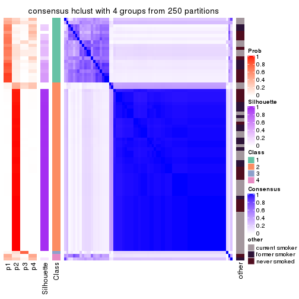
consensus_heatmap(res, k = 5)
consensus_heatmap(res, k = 6)
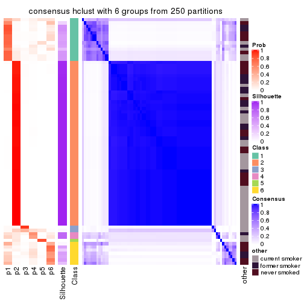
Heatmaps for the membership of samples in all partitions to see how consistent they are:
membership_heatmap(res, k = 2)
membership_heatmap(res, k = 3)
membership_heatmap(res, k = 4)
membership_heatmap(res, k = 5)
membership_heatmap(res, k = 6)
As soon as we have had the classes for columns, we can look for signatures which are significantly different between classes which can be candidate marks for certain classes. Following are the heatmaps for signatures.
Signature heatmaps where rows are scaled:
get_signatures(res, k = 2)
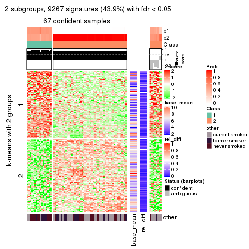
get_signatures(res, k = 3)
get_signatures(res, k = 4)
get_signatures(res, k = 5)
get_signatures(res, k = 6)
Signature heatmaps where rows are not scaled:
get_signatures(res, k = 2, scale_rows = FALSE)
get_signatures(res, k = 3, scale_rows = FALSE)
get_signatures(res, k = 4, scale_rows = FALSE)
get_signatures(res, k = 5, scale_rows = FALSE)
get_signatures(res, k = 6, scale_rows = FALSE)
Compare the overlap of signatures from different k:
compare_signatures(res)
get_signature() returns a data frame invisibly. TO get the list of signatures, the function
call should be assigned to a variable explicitly. In following code, if plot argument is set
to FALSE, no heatmap is plotted while only the differential analysis is performed.
# code only for demonstration
tb = get_signature(res, k = ..., plot = FALSE)
An example of the output of tb is:
#> which_row fdr mean_1 mean_2 scaled_mean_1 scaled_mean_2 km
#> 1 38 0.042760348 8.373488 9.131774 -0.5533452 0.5164555 1
#> 2 40 0.018707592 7.106213 8.469186 -0.6173731 0.5762149 1
#> 3 55 0.019134737 10.221463 11.207825 -0.6159697 0.5749050 1
#> 4 59 0.006059896 5.921854 7.869574 -0.6899429 0.6439467 1
#> 5 60 0.018055526 8.928898 10.211722 -0.6204761 0.5791110 1
#> 6 98 0.009384629 15.714769 14.887706 0.6635654 -0.6193277 2
...
The columns in tb are:
which_row: row indices corresponding to the input matrix.fdr: FDR for the differential test. mean_x: The mean value in group x.scaled_mean_x: The mean value in group x after rows are scaled.km: Row groups if k-means clustering is applied to rows.UMAP plot which shows how samples are separated.
dimension_reduction(res, k = 2, method = "UMAP")
dimension_reduction(res, k = 3, method = "UMAP")
dimension_reduction(res, k = 4, method = "UMAP")
dimension_reduction(res, k = 5, method = "UMAP")
dimension_reduction(res, k = 6, method = "UMAP")
Following heatmap shows how subgroups are split when increasing k:
collect_classes(res)
Test correlation between subgroups and known annotations. If the known annotation is numeric, one-way ANOVA test is applied, and if the known annotation is discrete, chi-squared contingency table test is applied.
test_to_known_factors(res)
#> n other(p) k
#> MAD:hclust 67 0.0467 2
#> MAD:hclust 70 0.1006 3
#> MAD:hclust 54 0.0820 4
#> MAD:hclust 52 0.0594 5
#> MAD:hclust 58 0.8081 6
If matrix rows can be associated to genes, consider to use functional_enrichment(res,
...) to perform function enrichment for the signature genes. See this vignette for more detailed explanations.
The object with results only for a single top-value method and a single partition method can be extracted as:
res = res_list["MAD", "kmeans"]
# you can also extract it by
# res = res_list["MAD:kmeans"]
A summary of res and all the functions that can be applied to it:
res
#> A 'ConsensusPartition' object with k = 2, 3, 4, 5, 6.
#> On a matrix with 21104 rows and 75 columns.
#> Top rows (1000, 2000, 3000, 4000, 5000) are extracted by 'MAD' method.
#> Subgroups are detected by 'kmeans' method.
#> Performed in total 1250 partitions by row resampling.
#> Best k for subgroups seems to be 2.
#>
#> Following methods can be applied to this 'ConsensusPartition' object:
#> [1] "cola_report" "collect_classes" "collect_plots"
#> [4] "collect_stats" "colnames" "compare_signatures"
#> [7] "consensus_heatmap" "dimension_reduction" "functional_enrichment"
#> [10] "get_anno_col" "get_anno" "get_classes"
#> [13] "get_consensus" "get_matrix" "get_membership"
#> [16] "get_param" "get_signatures" "get_stats"
#> [19] "is_best_k" "is_stable_k" "membership_heatmap"
#> [22] "ncol" "nrow" "plot_ecdf"
#> [25] "rownames" "select_partition_number" "show"
#> [28] "suggest_best_k" "test_to_known_factors"
collect_plots() function collects all the plots made from res for all k (number of partitions)
into one single page to provide an easy and fast comparison between different k.
collect_plots(res)
The plots are:
k and the heatmap of
predicted classes for each k.k.k.k.All the plots in panels can be made by individual functions and they are plotted later in this section.
select_partition_number() produces several plots showing different
statistics for choosing “optimized” k. There are following statistics:
k;k, the area increased is defined as \(A_k - A_{k-1}\).The detailed explanations of these statistics can be found in the cola vignette.
Generally speaking, lower PAC score, higher mean silhouette score or higher
concordance corresponds to better partition. Rand index and Jaccard index
measure how similar the current partition is compared to partition with k-1.
If they are too similar, we won't accept k is better than k-1.
select_partition_number(res)
The numeric values for all these statistics can be obtained by get_stats().
get_stats(res)
#> k 1-PAC mean_silhouette concordance area_increased Rand Jaccard
#> 2 2 1.000 0.998 0.998 0.4511 0.550 0.550
#> 3 3 0.720 0.955 0.848 0.3273 0.784 0.607
#> 4 4 0.585 0.846 0.813 0.1412 0.944 0.831
#> 5 5 0.590 0.796 0.815 0.0671 0.993 0.974
#> 6 6 0.664 0.620 0.774 0.0429 0.972 0.897
suggest_best_k() suggests the best \(k\) based on these statistics. The rules are as follows:
suggest_best_k(res)
#> [1] 2
Following shows the table of the partitions (You need to click the show/hide
code output link to see it). The membership matrix (columns with name p*)
is inferred by
clue::cl_consensus()
function with the SE method. Basically the value in the membership matrix
represents the probability to belong to a certain group. The finall class
label for an item is determined with the group with highest probability it
belongs to.
In get_classes() function, the entropy is calculated from the membership
matrix and the silhouette score is calculated from the consensus matrix.
cbind(get_classes(res, k = 2), get_membership(res, k = 2))
#> class entropy silhouette p1 p2
#> GSM15684 1 0.0376 0.998 0.996 0.004
#> GSM15685 1 0.0376 0.998 0.996 0.004
#> GSM15686 1 0.0376 0.998 0.996 0.004
#> GSM15687 1 0.0376 0.998 0.996 0.004
#> GSM15688 1 0.0000 0.997 1.000 0.000
#> GSM15689 1 0.0376 0.998 0.996 0.004
#> GSM15690 1 0.0000 0.997 1.000 0.000
#> GSM15691 1 0.0376 0.998 0.996 0.004
#> GSM15692 1 0.0376 0.998 0.996 0.004
#> GSM15693 2 0.0000 0.999 0.000 1.000
#> GSM15694 2 0.0000 0.999 0.000 1.000
#> GSM15695 2 0.0000 0.999 0.000 1.000
#> GSM15696 2 0.0000 0.999 0.000 1.000
#> GSM15697 2 0.0000 0.999 0.000 1.000
#> GSM15698 2 0.0000 0.999 0.000 1.000
#> GSM15699 2 0.0000 0.999 0.000 1.000
#> GSM15700 2 0.0000 0.999 0.000 1.000
#> GSM15701 2 0.0000 0.999 0.000 1.000
#> GSM15702 2 0.0376 0.997 0.004 0.996
#> GSM15703 2 0.0000 0.999 0.000 1.000
#> GSM15704 2 0.0000 0.999 0.000 1.000
#> GSM15705 2 0.0000 0.999 0.000 1.000
#> GSM15706 2 0.0000 0.999 0.000 1.000
#> GSM15707 2 0.0000 0.999 0.000 1.000
#> GSM15708 2 0.0376 0.997 0.004 0.996
#> GSM15709 2 0.0376 0.997 0.004 0.996
#> GSM15710 2 0.0000 0.999 0.000 1.000
#> GSM15711 2 0.0000 0.999 0.000 1.000
#> GSM15712 2 0.0376 0.997 0.004 0.996
#> GSM15713 2 0.0000 0.999 0.000 1.000
#> GSM15714 2 0.0000 0.999 0.000 1.000
#> GSM15715 2 0.0376 0.997 0.004 0.996
#> GSM15716 2 0.0000 0.999 0.000 1.000
#> GSM15717 2 0.0000 0.999 0.000 1.000
#> GSM15718 1 0.0376 0.998 0.996 0.004
#> GSM15719 2 0.0000 0.999 0.000 1.000
#> GSM15720 1 0.0376 0.998 0.996 0.004
#> GSM15721 1 0.0376 0.998 0.996 0.004
#> GSM15722 1 0.0000 0.997 1.000 0.000
#> GSM15723 1 0.0000 0.997 1.000 0.000
#> GSM15724 1 0.0000 0.997 1.000 0.000
#> GSM15725 1 0.0376 0.998 0.996 0.004
#> GSM15726 1 0.0376 0.998 0.996 0.004
#> GSM15727 1 0.0000 0.997 1.000 0.000
#> GSM15728 1 0.0000 0.997 1.000 0.000
#> GSM15729 2 0.0376 0.997 0.004 0.996
#> GSM15730 2 0.0000 0.999 0.000 1.000
#> GSM15731 2 0.0000 0.999 0.000 1.000
#> GSM15732 2 0.0000 0.999 0.000 1.000
#> GSM15733 2 0.0376 0.997 0.004 0.996
#> GSM15734 2 0.0000 0.999 0.000 1.000
#> GSM15735 2 0.0000 0.999 0.000 1.000
#> GSM15736 2 0.0376 0.997 0.004 0.996
#> GSM15737 2 0.0376 0.997 0.004 0.996
#> GSM15738 2 0.0376 0.997 0.004 0.996
#> GSM15739 2 0.0000 0.999 0.000 1.000
#> GSM15740 2 0.0000 0.999 0.000 1.000
#> GSM15741 1 0.0376 0.998 0.996 0.004
#> GSM15742 1 0.0000 0.997 1.000 0.000
#> GSM15743 1 0.0376 0.998 0.996 0.004
#> GSM15744 1 0.0000 0.997 1.000 0.000
#> GSM15745 1 0.0376 0.998 0.996 0.004
#> GSM15746 1 0.0376 0.998 0.996 0.004
#> GSM15747 2 0.0376 0.997 0.004 0.996
#> GSM15748 2 0.0000 0.999 0.000 1.000
#> GSM15749 2 0.0000 0.999 0.000 1.000
#> GSM15750 2 0.0376 0.997 0.004 0.996
#> GSM15751 2 0.0376 0.997 0.004 0.996
#> GSM15752 2 0.0376 0.997 0.004 0.996
#> GSM15753 2 0.0376 0.997 0.004 0.996
#> GSM15754 2 0.0000 0.999 0.000 1.000
#> GSM15755 2 0.0376 0.997 0.004 0.996
#> GSM15756 2 0.0376 0.997 0.004 0.996
#> GSM15757 2 0.0376 0.997 0.004 0.996
#> GSM15758 2 0.0000 0.999 0.000 1.000
cbind(get_classes(res, k = 3), get_membership(res, k = 3))
#> class entropy silhouette p1 p2 p3
#> GSM15684 1 0.4291 0.909 0.820 0.180 0.000
#> GSM15685 1 0.4235 0.909 0.824 0.176 0.000
#> GSM15686 1 0.5859 0.845 0.656 0.344 0.000
#> GSM15687 1 0.5905 0.842 0.648 0.352 0.000
#> GSM15688 1 0.5621 0.871 0.692 0.308 0.000
#> GSM15689 1 0.4235 0.910 0.824 0.176 0.000
#> GSM15690 1 0.5968 0.846 0.636 0.364 0.000
#> GSM15691 1 0.4002 0.914 0.840 0.160 0.000
#> GSM15692 1 0.4346 0.913 0.816 0.184 0.000
#> GSM15693 2 0.6111 0.993 0.000 0.604 0.396
#> GSM15694 2 0.6111 0.993 0.000 0.604 0.396
#> GSM15695 2 0.6111 0.993 0.000 0.604 0.396
#> GSM15696 2 0.6126 0.990 0.000 0.600 0.400
#> GSM15697 2 0.6126 0.990 0.000 0.600 0.400
#> GSM15698 2 0.6095 0.989 0.000 0.608 0.392
#> GSM15699 2 0.6095 0.989 0.000 0.608 0.392
#> GSM15700 3 0.1964 0.911 0.000 0.056 0.944
#> GSM15701 2 0.6111 0.993 0.000 0.604 0.396
#> GSM15702 3 0.0000 0.981 0.000 0.000 1.000
#> GSM15703 2 0.6111 0.993 0.000 0.604 0.396
#> GSM15704 2 0.6111 0.993 0.000 0.604 0.396
#> GSM15705 2 0.6111 0.993 0.000 0.604 0.396
#> GSM15706 2 0.6111 0.993 0.000 0.604 0.396
#> GSM15707 2 0.6111 0.993 0.000 0.604 0.396
#> GSM15708 3 0.0000 0.981 0.000 0.000 1.000
#> GSM15709 3 0.0000 0.981 0.000 0.000 1.000
#> GSM15710 2 0.6111 0.993 0.000 0.604 0.396
#> GSM15711 2 0.6111 0.993 0.000 0.604 0.396
#> GSM15712 3 0.2356 0.875 0.000 0.072 0.928
#> GSM15713 2 0.6111 0.993 0.000 0.604 0.396
#> GSM15714 2 0.6111 0.993 0.000 0.604 0.396
#> GSM15715 3 0.0000 0.981 0.000 0.000 1.000
#> GSM15716 2 0.6111 0.993 0.000 0.604 0.396
#> GSM15717 2 0.6140 0.979 0.000 0.596 0.404
#> GSM15718 1 0.4235 0.910 0.824 0.176 0.000
#> GSM15719 2 0.6154 0.966 0.000 0.592 0.408
#> GSM15720 1 0.0592 0.922 0.988 0.012 0.000
#> GSM15721 1 0.0000 0.920 1.000 0.000 0.000
#> GSM15722 1 0.2066 0.919 0.940 0.060 0.000
#> GSM15723 1 0.1031 0.921 0.976 0.024 0.000
#> GSM15724 1 0.1031 0.918 0.976 0.024 0.000
#> GSM15725 1 0.0424 0.922 0.992 0.008 0.000
#> GSM15726 1 0.0000 0.920 1.000 0.000 0.000
#> GSM15727 1 0.1163 0.918 0.972 0.028 0.000
#> GSM15728 1 0.1860 0.917 0.948 0.052 0.000
#> GSM15729 3 0.0000 0.981 0.000 0.000 1.000
#> GSM15730 2 0.6140 0.985 0.000 0.596 0.404
#> GSM15731 2 0.6111 0.993 0.000 0.604 0.396
#> GSM15732 3 0.2625 0.861 0.000 0.084 0.916
#> GSM15733 3 0.0237 0.977 0.000 0.004 0.996
#> GSM15734 2 0.6154 0.981 0.000 0.592 0.408
#> GSM15735 2 0.6111 0.993 0.000 0.604 0.396
#> GSM15736 3 0.0000 0.981 0.000 0.000 1.000
#> GSM15737 3 0.0000 0.981 0.000 0.000 1.000
#> GSM15738 3 0.0000 0.981 0.000 0.000 1.000
#> GSM15739 2 0.6192 0.963 0.000 0.580 0.420
#> GSM15740 2 0.6180 0.969 0.000 0.584 0.416
#> GSM15741 1 0.5058 0.896 0.756 0.244 0.000
#> GSM15742 1 0.2165 0.917 0.936 0.064 0.000
#> GSM15743 1 0.1163 0.923 0.972 0.028 0.000
#> GSM15744 1 0.1529 0.920 0.960 0.040 0.000
#> GSM15745 1 0.0424 0.921 0.992 0.008 0.000
#> GSM15746 1 0.4062 0.913 0.836 0.164 0.000
#> GSM15747 3 0.0000 0.981 0.000 0.000 1.000
#> GSM15748 2 0.6095 0.989 0.000 0.608 0.392
#> GSM15749 2 0.6111 0.993 0.000 0.604 0.396
#> GSM15750 3 0.0237 0.977 0.000 0.004 0.996
#> GSM15751 3 0.0000 0.981 0.000 0.000 1.000
#> GSM15752 3 0.0000 0.981 0.000 0.000 1.000
#> GSM15753 3 0.0000 0.981 0.000 0.000 1.000
#> GSM15754 2 0.6111 0.993 0.000 0.604 0.396
#> GSM15755 3 0.0000 0.981 0.000 0.000 1.000
#> GSM15756 3 0.0000 0.981 0.000 0.000 1.000
#> GSM15757 3 0.0000 0.981 0.000 0.000 1.000
#> GSM15758 2 0.6095 0.988 0.000 0.608 0.392
cbind(get_classes(res, k = 4), get_membership(res, k = 4))
#> class entropy silhouette p1 p2 p3 p4
#> GSM15684 4 0.4963 0.651 0.284 0.020 0.000 0.696
#> GSM15685 4 0.5013 0.651 0.292 0.020 0.000 0.688
#> GSM15686 4 0.4415 0.554 0.056 0.140 0.000 0.804
#> GSM15687 4 0.3731 0.569 0.036 0.120 0.000 0.844
#> GSM15688 4 0.4244 0.647 0.160 0.036 0.000 0.804
#> GSM15689 4 0.4980 0.644 0.304 0.016 0.000 0.680
#> GSM15690 4 0.3533 0.582 0.080 0.056 0.000 0.864
#> GSM15691 4 0.5233 0.571 0.332 0.020 0.000 0.648
#> GSM15692 4 0.5386 0.502 0.344 0.024 0.000 0.632
#> GSM15693 2 0.4820 0.929 0.060 0.772 0.168 0.000
#> GSM15694 2 0.4244 0.934 0.032 0.800 0.168 0.000
#> GSM15695 2 0.4149 0.934 0.028 0.804 0.168 0.000
#> GSM15696 2 0.3668 0.935 0.004 0.808 0.188 0.000
#> GSM15697 2 0.4281 0.936 0.028 0.792 0.180 0.000
#> GSM15698 2 0.5891 0.895 0.132 0.700 0.168 0.000
#> GSM15699 2 0.5582 0.903 0.108 0.724 0.168 0.000
#> GSM15700 3 0.4710 0.790 0.088 0.120 0.792 0.000
#> GSM15701 2 0.3725 0.936 0.008 0.812 0.180 0.000
#> GSM15702 3 0.1743 0.919 0.004 0.056 0.940 0.000
#> GSM15703 2 0.4820 0.929 0.060 0.772 0.168 0.000
#> GSM15704 2 0.3681 0.937 0.008 0.816 0.176 0.000
#> GSM15705 2 0.4139 0.936 0.024 0.800 0.176 0.000
#> GSM15706 2 0.4375 0.931 0.032 0.788 0.180 0.000
#> GSM15707 2 0.3583 0.937 0.004 0.816 0.180 0.000
#> GSM15708 3 0.0000 0.938 0.000 0.000 1.000 0.000
#> GSM15709 3 0.1118 0.931 0.000 0.036 0.964 0.000
#> GSM15710 2 0.3725 0.936 0.008 0.812 0.180 0.000
#> GSM15711 2 0.4553 0.931 0.040 0.780 0.180 0.000
#> GSM15712 3 0.4820 0.735 0.060 0.168 0.772 0.000
#> GSM15713 2 0.4182 0.933 0.024 0.796 0.180 0.000
#> GSM15714 2 0.4553 0.930 0.040 0.780 0.180 0.000
#> GSM15715 3 0.0336 0.937 0.008 0.000 0.992 0.000
#> GSM15716 2 0.4746 0.929 0.056 0.776 0.168 0.000
#> GSM15717 2 0.6258 0.876 0.108 0.688 0.192 0.012
#> GSM15718 4 0.5228 0.614 0.312 0.024 0.000 0.664
#> GSM15719 2 0.7187 0.828 0.200 0.608 0.176 0.016
#> GSM15720 1 0.4883 0.851 0.696 0.016 0.000 0.288
#> GSM15721 1 0.4647 0.844 0.704 0.008 0.000 0.288
#> GSM15722 1 0.5090 0.744 0.660 0.016 0.000 0.324
#> GSM15723 1 0.4594 0.855 0.712 0.008 0.000 0.280
#> GSM15724 1 0.3801 0.852 0.780 0.000 0.000 0.220
#> GSM15725 1 0.5062 0.826 0.680 0.020 0.000 0.300
#> GSM15726 1 0.4647 0.844 0.704 0.008 0.000 0.288
#> GSM15727 1 0.3801 0.852 0.780 0.000 0.000 0.220
#> GSM15728 1 0.4422 0.825 0.736 0.008 0.000 0.256
#> GSM15729 3 0.2256 0.912 0.020 0.056 0.924 0.000
#> GSM15730 2 0.3852 0.935 0.012 0.808 0.180 0.000
#> GSM15731 2 0.4746 0.929 0.056 0.776 0.168 0.000
#> GSM15732 3 0.6006 0.690 0.168 0.116 0.708 0.008
#> GSM15733 3 0.2799 0.885 0.108 0.000 0.884 0.008
#> GSM15734 2 0.4307 0.930 0.024 0.784 0.192 0.000
#> GSM15735 2 0.4746 0.929 0.056 0.776 0.168 0.000
#> GSM15736 3 0.0000 0.938 0.000 0.000 1.000 0.000
#> GSM15737 3 0.0000 0.938 0.000 0.000 1.000 0.000
#> GSM15738 3 0.0000 0.938 0.000 0.000 1.000 0.000
#> GSM15739 2 0.5681 0.885 0.088 0.704 0.208 0.000
#> GSM15740 2 0.5925 0.888 0.100 0.700 0.196 0.004
#> GSM15741 4 0.4399 0.636 0.212 0.020 0.000 0.768
#> GSM15742 1 0.4483 0.798 0.712 0.004 0.000 0.284
#> GSM15743 1 0.4819 0.737 0.652 0.004 0.000 0.344
#> GSM15744 1 0.4511 0.846 0.724 0.008 0.000 0.268
#> GSM15745 1 0.4857 0.805 0.668 0.008 0.000 0.324
#> GSM15746 4 0.4643 0.585 0.344 0.000 0.000 0.656
#> GSM15747 3 0.0000 0.938 0.000 0.000 1.000 0.000
#> GSM15748 2 0.6636 0.861 0.172 0.652 0.168 0.008
#> GSM15749 2 0.4820 0.929 0.060 0.772 0.168 0.000
#> GSM15750 3 0.2149 0.902 0.088 0.000 0.912 0.000
#> GSM15751 3 0.0000 0.938 0.000 0.000 1.000 0.000
#> GSM15752 3 0.0000 0.938 0.000 0.000 1.000 0.000
#> GSM15753 3 0.1109 0.932 0.004 0.028 0.968 0.000
#> GSM15754 2 0.3583 0.936 0.004 0.816 0.180 0.000
#> GSM15755 3 0.0000 0.938 0.000 0.000 1.000 0.000
#> GSM15756 3 0.0921 0.933 0.000 0.028 0.972 0.000
#> GSM15757 3 0.1629 0.929 0.024 0.024 0.952 0.000
#> GSM15758 2 0.6335 0.896 0.136 0.688 0.164 0.012
cbind(get_classes(res, k = 5), get_membership(res, k = 5))
#> class entropy silhouette p1 p2 p3 p4 p5
#> GSM15684 5 0.4990 0.607 0.248 0.000 0.008 0.056 0.688
#> GSM15685 5 0.4887 0.612 0.252 0.000 0.008 0.048 0.692
#> GSM15686 4 0.5878 0.890 0.096 0.000 0.008 0.576 0.320
#> GSM15687 4 0.5418 0.888 0.068 0.000 0.000 0.568 0.364
#> GSM15688 5 0.6177 0.172 0.164 0.000 0.032 0.168 0.636
#> GSM15689 5 0.4064 0.614 0.272 0.000 0.004 0.008 0.716
#> GSM15690 5 0.5964 -0.292 0.088 0.000 0.036 0.236 0.640
#> GSM15691 5 0.6112 0.581 0.308 0.000 0.020 0.096 0.576
#> GSM15692 5 0.6353 0.530 0.304 0.000 0.036 0.092 0.568
#> GSM15693 2 0.2612 0.880 0.000 0.868 0.000 0.124 0.008
#> GSM15694 2 0.1270 0.895 0.000 0.948 0.000 0.052 0.000
#> GSM15695 2 0.1197 0.895 0.000 0.952 0.000 0.048 0.000
#> GSM15696 2 0.1106 0.899 0.000 0.964 0.024 0.012 0.000
#> GSM15697 2 0.1597 0.897 0.000 0.940 0.012 0.048 0.000
#> GSM15698 2 0.3409 0.849 0.000 0.816 0.000 0.160 0.024
#> GSM15699 2 0.3278 0.852 0.000 0.824 0.000 0.156 0.020
#> GSM15700 3 0.5183 0.816 0.000 0.180 0.716 0.084 0.020
#> GSM15701 2 0.0912 0.898 0.000 0.972 0.016 0.012 0.000
#> GSM15702 3 0.3422 0.873 0.000 0.200 0.792 0.004 0.004
#> GSM15703 2 0.2563 0.881 0.000 0.872 0.000 0.120 0.008
#> GSM15704 2 0.1211 0.899 0.000 0.960 0.016 0.024 0.000
#> GSM15705 2 0.2393 0.890 0.000 0.900 0.016 0.080 0.004
#> GSM15706 2 0.2332 0.889 0.000 0.904 0.016 0.076 0.004
#> GSM15707 2 0.1626 0.897 0.000 0.940 0.016 0.044 0.000
#> GSM15708 3 0.1965 0.911 0.000 0.096 0.904 0.000 0.000
#> GSM15709 3 0.3006 0.898 0.000 0.156 0.836 0.004 0.004
#> GSM15710 2 0.0912 0.898 0.000 0.972 0.016 0.012 0.000
#> GSM15711 2 0.2452 0.889 0.000 0.896 0.016 0.084 0.004
#> GSM15712 3 0.5729 0.690 0.000 0.264 0.616 0.116 0.004
#> GSM15713 2 0.2206 0.891 0.000 0.912 0.016 0.068 0.004
#> GSM15714 2 0.2784 0.881 0.000 0.872 0.016 0.108 0.004
#> GSM15715 3 0.2305 0.908 0.000 0.092 0.896 0.012 0.000
#> GSM15716 2 0.2411 0.887 0.000 0.884 0.000 0.108 0.008
#> GSM15717 2 0.4065 0.825 0.000 0.760 0.020 0.212 0.008
#> GSM15718 5 0.5901 0.592 0.284 0.000 0.008 0.112 0.596
#> GSM15719 2 0.4586 0.754 0.000 0.644 0.004 0.336 0.016
#> GSM15720 1 0.2928 0.812 0.872 0.000 0.004 0.032 0.092
#> GSM15721 1 0.2972 0.791 0.864 0.000 0.004 0.024 0.108
#> GSM15722 1 0.4841 0.659 0.764 0.000 0.044 0.060 0.132
#> GSM15723 1 0.3095 0.791 0.868 0.000 0.016 0.024 0.092
#> GSM15724 1 0.0833 0.813 0.976 0.000 0.004 0.004 0.016
#> GSM15725 1 0.3160 0.783 0.852 0.000 0.004 0.028 0.116
#> GSM15726 1 0.2972 0.791 0.864 0.000 0.004 0.024 0.108
#> GSM15727 1 0.1059 0.813 0.968 0.000 0.004 0.008 0.020
#> GSM15728 1 0.3077 0.765 0.872 0.000 0.020 0.024 0.084
#> GSM15729 3 0.3916 0.867 0.000 0.204 0.772 0.012 0.012
#> GSM15730 2 0.0912 0.898 0.000 0.972 0.016 0.012 0.000
#> GSM15731 2 0.2193 0.884 0.000 0.900 0.000 0.092 0.008
#> GSM15732 3 0.6563 0.641 0.000 0.160 0.560 0.256 0.024
#> GSM15733 3 0.4733 0.829 0.000 0.092 0.748 0.152 0.008
#> GSM15734 2 0.1471 0.898 0.000 0.952 0.020 0.024 0.004
#> GSM15735 2 0.2077 0.886 0.000 0.908 0.000 0.084 0.008
#> GSM15736 3 0.2533 0.910 0.000 0.096 0.888 0.008 0.008
#> GSM15737 3 0.2533 0.910 0.000 0.096 0.888 0.008 0.008
#> GSM15738 3 0.2533 0.910 0.000 0.096 0.888 0.008 0.008
#> GSM15739 2 0.3733 0.847 0.000 0.808 0.028 0.156 0.008
#> GSM15740 2 0.3777 0.835 0.000 0.784 0.020 0.192 0.004
#> GSM15741 5 0.6440 0.427 0.208 0.000 0.032 0.160 0.600
#> GSM15742 1 0.4189 0.723 0.808 0.000 0.028 0.056 0.108
#> GSM15743 1 0.3563 0.665 0.780 0.000 0.000 0.012 0.208
#> GSM15744 1 0.2581 0.790 0.904 0.000 0.020 0.028 0.048
#> GSM15745 1 0.4019 0.717 0.792 0.000 0.004 0.052 0.152
#> GSM15746 5 0.5132 0.606 0.344 0.000 0.008 0.036 0.612
#> GSM15747 3 0.2124 0.911 0.000 0.096 0.900 0.000 0.004
#> GSM15748 2 0.4194 0.791 0.000 0.720 0.004 0.260 0.016
#> GSM15749 2 0.2612 0.880 0.000 0.868 0.000 0.124 0.008
#> GSM15750 3 0.4229 0.873 0.000 0.096 0.804 0.080 0.020
#> GSM15751 3 0.1965 0.911 0.000 0.096 0.904 0.000 0.000
#> GSM15752 3 0.1965 0.911 0.000 0.096 0.904 0.000 0.000
#> GSM15753 3 0.3190 0.904 0.000 0.140 0.840 0.008 0.012
#> GSM15754 2 0.1386 0.900 0.000 0.952 0.016 0.032 0.000
#> GSM15755 3 0.1965 0.911 0.000 0.096 0.904 0.000 0.000
#> GSM15756 3 0.2877 0.903 0.000 0.144 0.848 0.004 0.004
#> GSM15757 3 0.3477 0.902 0.000 0.140 0.828 0.024 0.008
#> GSM15758 2 0.3992 0.821 0.000 0.712 0.004 0.280 0.004
cbind(get_classes(res, k = 6), get_membership(res, k = 6))
#> class entropy silhouette p1 p2 p3 p4 p5 p6
#> GSM15684 4 0.3720 0.54880 0.132 0.000 0.008 0.808 0.032 0.020
#> GSM15685 4 0.3561 0.55105 0.132 0.000 0.008 0.816 0.028 0.016
#> GSM15686 6 0.3010 0.92830 0.028 0.000 0.000 0.132 0.004 0.836
#> GSM15687 6 0.3087 0.92722 0.012 0.000 0.004 0.160 0.004 0.820
#> GSM15688 4 0.6873 0.24913 0.080 0.000 0.012 0.520 0.196 0.192
#> GSM15689 4 0.4319 0.55929 0.152 0.000 0.008 0.764 0.052 0.024
#> GSM15690 4 0.7083 0.00927 0.056 0.000 0.032 0.492 0.172 0.248
#> GSM15691 4 0.6896 0.47291 0.236 0.000 0.020 0.528 0.096 0.120
#> GSM15692 4 0.7220 0.44964 0.248 0.000 0.016 0.464 0.184 0.088
#> GSM15693 2 0.3405 0.57108 0.000 0.724 0.000 0.000 0.272 0.004
#> GSM15694 2 0.2402 0.68962 0.000 0.856 0.000 0.000 0.140 0.004
#> GSM15695 2 0.2234 0.70011 0.000 0.872 0.000 0.000 0.124 0.004
#> GSM15696 2 0.1268 0.73365 0.000 0.952 0.008 0.000 0.036 0.004
#> GSM15697 2 0.2748 0.70124 0.000 0.856 0.008 0.000 0.120 0.016
#> GSM15698 2 0.4821 -0.04611 0.000 0.556 0.004 0.008 0.400 0.032
#> GSM15699 2 0.4590 0.10762 0.000 0.592 0.004 0.004 0.372 0.028
#> GSM15700 3 0.6513 0.38932 0.000 0.224 0.528 0.012 0.200 0.036
#> GSM15701 2 0.0291 0.73250 0.000 0.992 0.004 0.000 0.004 0.000
#> GSM15702 3 0.3528 0.68876 0.000 0.296 0.700 0.000 0.004 0.000
#> GSM15703 2 0.3405 0.57108 0.000 0.724 0.000 0.000 0.272 0.004
#> GSM15704 2 0.1707 0.73115 0.000 0.928 0.004 0.000 0.056 0.012
#> GSM15705 2 0.1787 0.71384 0.000 0.920 0.004 0.000 0.068 0.008
#> GSM15706 2 0.1707 0.71671 0.000 0.928 0.004 0.000 0.056 0.012
#> GSM15707 2 0.1672 0.73401 0.000 0.932 0.004 0.000 0.048 0.016
#> GSM15708 3 0.1501 0.82725 0.000 0.076 0.924 0.000 0.000 0.000
#> GSM15709 3 0.3133 0.77453 0.000 0.212 0.780 0.000 0.008 0.000
#> GSM15710 2 0.0291 0.73324 0.000 0.992 0.004 0.000 0.000 0.004
#> GSM15711 2 0.1845 0.70992 0.000 0.916 0.004 0.000 0.072 0.008
#> GSM15712 3 0.5890 0.29489 0.000 0.388 0.496 0.004 0.072 0.040
#> GSM15713 2 0.1672 0.71514 0.000 0.932 0.004 0.000 0.048 0.016
#> GSM15714 2 0.2945 0.67802 0.000 0.860 0.004 0.004 0.084 0.048
#> GSM15715 3 0.2058 0.82012 0.000 0.072 0.908 0.000 0.008 0.012
#> GSM15716 2 0.3431 0.60095 0.000 0.756 0.000 0.000 0.228 0.016
#> GSM15717 2 0.4452 0.50583 0.000 0.728 0.016 0.008 0.204 0.044
#> GSM15718 4 0.5315 0.52912 0.160 0.000 0.012 0.696 0.048 0.084
#> GSM15719 5 0.5727 0.19930 0.000 0.408 0.016 0.032 0.500 0.044
#> GSM15720 1 0.2507 0.79208 0.892 0.000 0.000 0.056 0.016 0.036
#> GSM15721 1 0.2344 0.78179 0.892 0.000 0.000 0.076 0.004 0.028
#> GSM15722 1 0.6219 0.48660 0.616 0.000 0.020 0.096 0.192 0.076
#> GSM15723 1 0.4687 0.71079 0.768 0.000 0.020 0.084 0.072 0.056
#> GSM15724 1 0.2059 0.78525 0.924 0.000 0.008 0.024 0.024 0.020
#> GSM15725 1 0.3096 0.76429 0.840 0.000 0.000 0.108 0.004 0.048
#> GSM15726 1 0.2452 0.77996 0.884 0.000 0.000 0.084 0.004 0.028
#> GSM15727 1 0.2280 0.78202 0.904 0.000 0.004 0.016 0.064 0.012
#> GSM15728 1 0.3961 0.72621 0.796 0.000 0.008 0.060 0.120 0.016
#> GSM15729 3 0.4008 0.66651 0.000 0.308 0.672 0.000 0.016 0.004
#> GSM15730 2 0.0146 0.73348 0.000 0.996 0.004 0.000 0.000 0.000
#> GSM15731 2 0.3217 0.60373 0.000 0.768 0.000 0.000 0.224 0.008
#> GSM15732 5 0.6555 -0.24654 0.000 0.132 0.400 0.016 0.420 0.032
#> GSM15733 3 0.5286 0.57244 0.000 0.072 0.660 0.020 0.232 0.016
#> GSM15734 2 0.1353 0.73039 0.000 0.952 0.012 0.000 0.024 0.012
#> GSM15735 2 0.3190 0.60454 0.000 0.772 0.000 0.000 0.220 0.008
#> GSM15736 3 0.2157 0.82605 0.000 0.076 0.904 0.004 0.008 0.008
#> GSM15737 3 0.2044 0.82663 0.000 0.076 0.908 0.004 0.008 0.004
#> GSM15738 3 0.2044 0.82663 0.000 0.076 0.908 0.004 0.008 0.004
#> GSM15739 2 0.4010 0.58618 0.000 0.800 0.040 0.004 0.104 0.052
#> GSM15740 2 0.4082 0.55309 0.000 0.768 0.020 0.004 0.168 0.040
#> GSM15741 4 0.7387 0.38543 0.152 0.000 0.008 0.448 0.196 0.196
#> GSM15742 1 0.4949 0.65457 0.720 0.000 0.008 0.056 0.164 0.052
#> GSM15743 1 0.3660 0.68062 0.772 0.000 0.000 0.188 0.036 0.004
#> GSM15744 1 0.3947 0.74948 0.812 0.000 0.012 0.028 0.080 0.068
#> GSM15745 1 0.3526 0.73772 0.816 0.000 0.000 0.124 0.020 0.040
#> GSM15746 4 0.6029 0.53626 0.288 0.000 0.008 0.568 0.084 0.052
#> GSM15747 3 0.1788 0.82723 0.000 0.076 0.916 0.000 0.004 0.004
#> GSM15748 5 0.4780 0.08148 0.000 0.468 0.004 0.012 0.496 0.020
#> GSM15749 2 0.3383 0.57195 0.000 0.728 0.000 0.000 0.268 0.004
#> GSM15750 3 0.5381 0.59244 0.000 0.072 0.668 0.016 0.212 0.032
#> GSM15751 3 0.1501 0.82725 0.000 0.076 0.924 0.000 0.000 0.000
#> GSM15752 3 0.1701 0.82324 0.000 0.072 0.920 0.000 0.000 0.008
#> GSM15753 3 0.3354 0.79316 0.000 0.184 0.792 0.000 0.016 0.008
#> GSM15754 2 0.1082 0.73732 0.000 0.956 0.004 0.000 0.040 0.000
#> GSM15755 3 0.1501 0.82725 0.000 0.076 0.924 0.000 0.000 0.000
#> GSM15756 3 0.2805 0.79621 0.000 0.184 0.812 0.000 0.004 0.000
#> GSM15757 3 0.3261 0.79870 0.000 0.172 0.804 0.000 0.012 0.012
#> GSM15758 2 0.4801 0.37238 0.000 0.596 0.000 0.008 0.348 0.048
Heatmaps for the consensus matrix. It visualizes the probability of two samples to be in a same group.
consensus_heatmap(res, k = 2)
consensus_heatmap(res, k = 3)
consensus_heatmap(res, k = 4)
consensus_heatmap(res, k = 5)
consensus_heatmap(res, k = 6)
Heatmaps for the membership of samples in all partitions to see how consistent they are:
membership_heatmap(res, k = 2)
membership_heatmap(res, k = 3)
membership_heatmap(res, k = 4)
membership_heatmap(res, k = 5)
membership_heatmap(res, k = 6)
As soon as we have had the classes for columns, we can look for signatures which are significantly different between classes which can be candidate marks for certain classes. Following are the heatmaps for signatures.
Signature heatmaps where rows are scaled:
get_signatures(res, k = 2)
get_signatures(res, k = 3)
get_signatures(res, k = 4)

get_signatures(res, k = 5)
get_signatures(res, k = 6)
Signature heatmaps where rows are not scaled:
get_signatures(res, k = 2, scale_rows = FALSE)
get_signatures(res, k = 3, scale_rows = FALSE)
get_signatures(res, k = 4, scale_rows = FALSE)
get_signatures(res, k = 5, scale_rows = FALSE)
get_signatures(res, k = 6, scale_rows = FALSE)
Compare the overlap of signatures from different k:
compare_signatures(res)
get_signature() returns a data frame invisibly. TO get the list of signatures, the function
call should be assigned to a variable explicitly. In following code, if plot argument is set
to FALSE, no heatmap is plotted while only the differential analysis is performed.
# code only for demonstration
tb = get_signature(res, k = ..., plot = FALSE)
An example of the output of tb is:
#> which_row fdr mean_1 mean_2 scaled_mean_1 scaled_mean_2 km
#> 1 38 0.042760348 8.373488 9.131774 -0.5533452 0.5164555 1
#> 2 40 0.018707592 7.106213 8.469186 -0.6173731 0.5762149 1
#> 3 55 0.019134737 10.221463 11.207825 -0.6159697 0.5749050 1
#> 4 59 0.006059896 5.921854 7.869574 -0.6899429 0.6439467 1
#> 5 60 0.018055526 8.928898 10.211722 -0.6204761 0.5791110 1
#> 6 98 0.009384629 15.714769 14.887706 0.6635654 -0.6193277 2
...
The columns in tb are:
which_row: row indices corresponding to the input matrix.fdr: FDR for the differential test. mean_x: The mean value in group x.scaled_mean_x: The mean value in group x after rows are scaled.km: Row groups if k-means clustering is applied to rows.UMAP plot which shows how samples are separated.
dimension_reduction(res, k = 2, method = "UMAP")

dimension_reduction(res, k = 3, method = "UMAP")
dimension_reduction(res, k = 4, method = "UMAP")
dimension_reduction(res, k = 5, method = "UMAP")
dimension_reduction(res, k = 6, method = "UMAP")
Following heatmap shows how subgroups are split when increasing k:
collect_classes(res)
Test correlation between subgroups and known annotations. If the known annotation is numeric, one-way ANOVA test is applied, and if the known annotation is discrete, chi-squared contingency table test is applied.
test_to_known_factors(res)
#> n other(p) k
#> MAD:kmeans 75 0.409465 2
#> MAD:kmeans 75 0.076218 3
#> MAD:kmeans 75 0.000467 4
#> MAD:kmeans 72 0.002300 5
#> MAD:kmeans 61 0.001441 6
If matrix rows can be associated to genes, consider to use functional_enrichment(res,
...) to perform function enrichment for the signature genes. See this vignette for more detailed explanations.
The object with results only for a single top-value method and a single partition method can be extracted as:
res = res_list["MAD", "skmeans"]
# you can also extract it by
# res = res_list["MAD:skmeans"]
A summary of res and all the functions that can be applied to it:
res
#> A 'ConsensusPartition' object with k = 2, 3, 4, 5, 6.
#> On a matrix with 21104 rows and 75 columns.
#> Top rows (1000, 2000, 3000, 4000, 5000) are extracted by 'MAD' method.
#> Subgroups are detected by 'skmeans' method.
#> Performed in total 1250 partitions by row resampling.
#> Best k for subgroups seems to be 2.
#>
#> Following methods can be applied to this 'ConsensusPartition' object:
#> [1] "cola_report" "collect_classes" "collect_plots"
#> [4] "collect_stats" "colnames" "compare_signatures"
#> [7] "consensus_heatmap" "dimension_reduction" "functional_enrichment"
#> [10] "get_anno_col" "get_anno" "get_classes"
#> [13] "get_consensus" "get_matrix" "get_membership"
#> [16] "get_param" "get_signatures" "get_stats"
#> [19] "is_best_k" "is_stable_k" "membership_heatmap"
#> [22] "ncol" "nrow" "plot_ecdf"
#> [25] "rownames" "select_partition_number" "show"
#> [28] "suggest_best_k" "test_to_known_factors"
collect_plots() function collects all the plots made from res for all k (number of partitions)
into one single page to provide an easy and fast comparison between different k.
collect_plots(res)
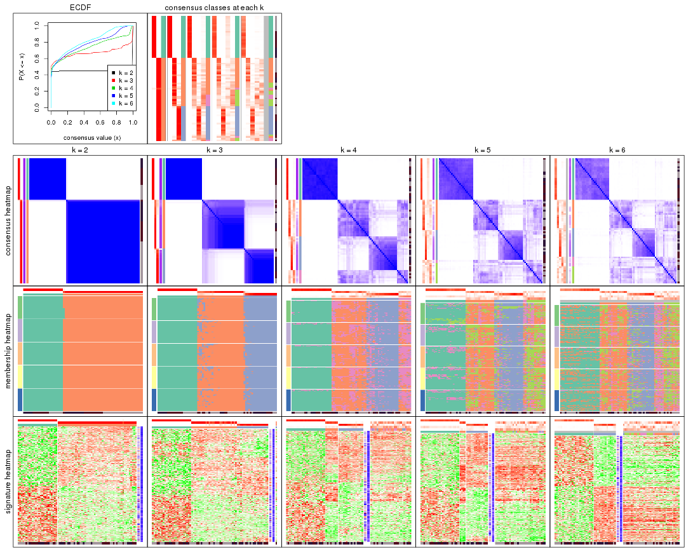
The plots are:
k and the heatmap of
predicted classes for each k.k.k.k.All the plots in panels can be made by individual functions and they are plotted later in this section.
select_partition_number() produces several plots showing different
statistics for choosing “optimized” k. There are following statistics:
k;k, the area increased is defined as \(A_k - A_{k-1}\).The detailed explanations of these statistics can be found in the cola vignette.
Generally speaking, lower PAC score, higher mean silhouette score or higher
concordance corresponds to better partition. Rand index and Jaccard index
measure how similar the current partition is compared to partition with k-1.
If they are too similar, we won't accept k is better than k-1.
select_partition_number(res)
The numeric values for all these statistics can be obtained by get_stats().
get_stats(res)
#> k 1-PAC mean_silhouette concordance area_increased Rand Jaccard
#> 2 2 1.000 0.997 0.999 0.4518 0.550 0.550
#> 3 3 0.868 0.924 0.963 0.4871 0.781 0.601
#> 4 4 0.706 0.639 0.814 0.1064 0.935 0.804
#> 5 5 0.610 0.556 0.707 0.0589 0.947 0.811
#> 6 6 0.612 0.513 0.648 0.0423 0.940 0.773
suggest_best_k() suggests the best \(k\) based on these statistics. The rules are as follows:
suggest_best_k(res)
#> [1] 2
Following shows the table of the partitions (You need to click the show/hide
code output link to see it). The membership matrix (columns with name p*)
is inferred by
clue::cl_consensus()
function with the SE method. Basically the value in the membership matrix
represents the probability to belong to a certain group. The finall class
label for an item is determined with the group with highest probability it
belongs to.
In get_classes() function, the entropy is calculated from the membership
matrix and the silhouette score is calculated from the consensus matrix.
cbind(get_classes(res, k = 2), get_membership(res, k = 2))
#> class entropy silhouette p1 p2
#> GSM15684 1 0.0000 1.000 1.000 0.000
#> GSM15685 1 0.0000 1.000 1.000 0.000
#> GSM15686 1 0.0000 1.000 1.000 0.000
#> GSM15687 1 0.0000 1.000 1.000 0.000
#> GSM15688 1 0.0000 1.000 1.000 0.000
#> GSM15689 1 0.0000 1.000 1.000 0.000
#> GSM15690 1 0.0000 1.000 1.000 0.000
#> GSM15691 1 0.0000 1.000 1.000 0.000
#> GSM15692 1 0.0000 1.000 1.000 0.000
#> GSM15693 2 0.0000 0.998 0.000 1.000
#> GSM15694 2 0.0000 0.998 0.000 1.000
#> GSM15695 2 0.0000 0.998 0.000 1.000
#> GSM15696 2 0.0000 0.998 0.000 1.000
#> GSM15697 2 0.0000 0.998 0.000 1.000
#> GSM15698 2 0.0000 0.998 0.000 1.000
#> GSM15699 2 0.0000 0.998 0.000 1.000
#> GSM15700 2 0.0000 0.998 0.000 1.000
#> GSM15701 2 0.0000 0.998 0.000 1.000
#> GSM15702 2 0.0000 0.998 0.000 1.000
#> GSM15703 2 0.0000 0.998 0.000 1.000
#> GSM15704 2 0.0000 0.998 0.000 1.000
#> GSM15705 2 0.0000 0.998 0.000 1.000
#> GSM15706 2 0.0000 0.998 0.000 1.000
#> GSM15707 2 0.0000 0.998 0.000 1.000
#> GSM15708 2 0.0000 0.998 0.000 1.000
#> GSM15709 2 0.0000 0.998 0.000 1.000
#> GSM15710 2 0.0000 0.998 0.000 1.000
#> GSM15711 2 0.0000 0.998 0.000 1.000
#> GSM15712 2 0.0000 0.998 0.000 1.000
#> GSM15713 2 0.0000 0.998 0.000 1.000
#> GSM15714 2 0.0000 0.998 0.000 1.000
#> GSM15715 2 0.0000 0.998 0.000 1.000
#> GSM15716 2 0.0000 0.998 0.000 1.000
#> GSM15717 2 0.0000 0.998 0.000 1.000
#> GSM15718 1 0.0000 1.000 1.000 0.000
#> GSM15719 2 0.4562 0.894 0.096 0.904
#> GSM15720 1 0.0000 1.000 1.000 0.000
#> GSM15721 1 0.0000 1.000 1.000 0.000
#> GSM15722 1 0.0000 1.000 1.000 0.000
#> GSM15723 1 0.0000 1.000 1.000 0.000
#> GSM15724 1 0.0000 1.000 1.000 0.000
#> GSM15725 1 0.0000 1.000 1.000 0.000
#> GSM15726 1 0.0000 1.000 1.000 0.000
#> GSM15727 1 0.0000 1.000 1.000 0.000
#> GSM15728 1 0.0000 1.000 1.000 0.000
#> GSM15729 2 0.0000 0.998 0.000 1.000
#> GSM15730 2 0.0000 0.998 0.000 1.000
#> GSM15731 2 0.0000 0.998 0.000 1.000
#> GSM15732 2 0.0000 0.998 0.000 1.000
#> GSM15733 2 0.0000 0.998 0.000 1.000
#> GSM15734 2 0.0000 0.998 0.000 1.000
#> GSM15735 2 0.0000 0.998 0.000 1.000
#> GSM15736 2 0.0000 0.998 0.000 1.000
#> GSM15737 2 0.0000 0.998 0.000 1.000
#> GSM15738 2 0.0000 0.998 0.000 1.000
#> GSM15739 2 0.0000 0.998 0.000 1.000
#> GSM15740 2 0.0000 0.998 0.000 1.000
#> GSM15741 1 0.0000 1.000 1.000 0.000
#> GSM15742 1 0.0000 1.000 1.000 0.000
#> GSM15743 1 0.0000 1.000 1.000 0.000
#> GSM15744 1 0.0000 1.000 1.000 0.000
#> GSM15745 1 0.0000 1.000 1.000 0.000
#> GSM15746 1 0.0000 1.000 1.000 0.000
#> GSM15747 2 0.0000 0.998 0.000 1.000
#> GSM15748 2 0.0000 0.998 0.000 1.000
#> GSM15749 2 0.0000 0.998 0.000 1.000
#> GSM15750 2 0.0000 0.998 0.000 1.000
#> GSM15751 2 0.0000 0.998 0.000 1.000
#> GSM15752 2 0.0000 0.998 0.000 1.000
#> GSM15753 2 0.0376 0.994 0.004 0.996
#> GSM15754 2 0.0000 0.998 0.000 1.000
#> GSM15755 2 0.0000 0.998 0.000 1.000
#> GSM15756 2 0.0000 0.998 0.000 1.000
#> GSM15757 2 0.0000 0.998 0.000 1.000
#> GSM15758 2 0.0000 0.998 0.000 1.000
cbind(get_classes(res, k = 3), get_membership(res, k = 3))
#> class entropy silhouette p1 p2 p3
#> GSM15684 1 0.0000 1.0000 1.000 0.000 0.000
#> GSM15685 1 0.0000 1.0000 1.000 0.000 0.000
#> GSM15686 1 0.0000 1.0000 1.000 0.000 0.000
#> GSM15687 1 0.0000 1.0000 1.000 0.000 0.000
#> GSM15688 1 0.0000 1.0000 1.000 0.000 0.000
#> GSM15689 1 0.0000 1.0000 1.000 0.000 0.000
#> GSM15690 1 0.0000 1.0000 1.000 0.000 0.000
#> GSM15691 1 0.0000 1.0000 1.000 0.000 0.000
#> GSM15692 1 0.0000 1.0000 1.000 0.000 0.000
#> GSM15693 2 0.0000 0.9285 0.000 1.000 0.000
#> GSM15694 2 0.0000 0.9285 0.000 1.000 0.000
#> GSM15695 2 0.0000 0.9285 0.000 1.000 0.000
#> GSM15696 2 0.3619 0.8545 0.000 0.864 0.136
#> GSM15697 2 0.3551 0.8563 0.000 0.868 0.132
#> GSM15698 2 0.0592 0.9259 0.000 0.988 0.012
#> GSM15699 2 0.0000 0.9285 0.000 1.000 0.000
#> GSM15700 3 0.3267 0.8530 0.000 0.116 0.884
#> GSM15701 2 0.1964 0.9074 0.000 0.944 0.056
#> GSM15702 3 0.1031 0.9417 0.000 0.024 0.976
#> GSM15703 2 0.0000 0.9285 0.000 1.000 0.000
#> GSM15704 2 0.0747 0.9244 0.000 0.984 0.016
#> GSM15705 2 0.0000 0.9285 0.000 1.000 0.000
#> GSM15706 2 0.0000 0.9285 0.000 1.000 0.000
#> GSM15707 2 0.0000 0.9285 0.000 1.000 0.000
#> GSM15708 3 0.0000 0.9562 0.000 0.000 1.000
#> GSM15709 3 0.0000 0.9562 0.000 0.000 1.000
#> GSM15710 2 0.0000 0.9285 0.000 1.000 0.000
#> GSM15711 2 0.3482 0.8639 0.000 0.872 0.128
#> GSM15712 3 0.1753 0.9231 0.000 0.048 0.952
#> GSM15713 2 0.1860 0.9110 0.000 0.948 0.052
#> GSM15714 2 0.0592 0.9263 0.000 0.988 0.012
#> GSM15715 3 0.0000 0.9562 0.000 0.000 1.000
#> GSM15716 2 0.0000 0.9285 0.000 1.000 0.000
#> GSM15717 2 0.5465 0.6337 0.000 0.712 0.288
#> GSM15718 1 0.0000 1.0000 1.000 0.000 0.000
#> GSM15719 2 0.6224 0.6843 0.032 0.728 0.240
#> GSM15720 1 0.0000 1.0000 1.000 0.000 0.000
#> GSM15721 1 0.0000 1.0000 1.000 0.000 0.000
#> GSM15722 1 0.0000 1.0000 1.000 0.000 0.000
#> GSM15723 1 0.0000 1.0000 1.000 0.000 0.000
#> GSM15724 1 0.0000 1.0000 1.000 0.000 0.000
#> GSM15725 1 0.0000 1.0000 1.000 0.000 0.000
#> GSM15726 1 0.0000 1.0000 1.000 0.000 0.000
#> GSM15727 1 0.0000 1.0000 1.000 0.000 0.000
#> GSM15728 1 0.0000 1.0000 1.000 0.000 0.000
#> GSM15729 3 0.1163 0.9392 0.000 0.028 0.972
#> GSM15730 2 0.5291 0.6894 0.000 0.732 0.268
#> GSM15731 2 0.0000 0.9285 0.000 1.000 0.000
#> GSM15732 3 0.2959 0.8748 0.000 0.100 0.900
#> GSM15733 3 0.0000 0.9562 0.000 0.000 1.000
#> GSM15734 2 0.4235 0.8052 0.000 0.824 0.176
#> GSM15735 2 0.0000 0.9285 0.000 1.000 0.000
#> GSM15736 3 0.0000 0.9562 0.000 0.000 1.000
#> GSM15737 3 0.0000 0.9562 0.000 0.000 1.000
#> GSM15738 3 0.0000 0.9562 0.000 0.000 1.000
#> GSM15739 3 0.6307 -0.0498 0.000 0.488 0.512
#> GSM15740 2 0.5178 0.6943 0.000 0.744 0.256
#> GSM15741 1 0.0000 1.0000 1.000 0.000 0.000
#> GSM15742 1 0.0000 1.0000 1.000 0.000 0.000
#> GSM15743 1 0.0000 1.0000 1.000 0.000 0.000
#> GSM15744 1 0.0000 1.0000 1.000 0.000 0.000
#> GSM15745 1 0.0000 1.0000 1.000 0.000 0.000
#> GSM15746 1 0.0000 1.0000 1.000 0.000 0.000
#> GSM15747 3 0.0000 0.9562 0.000 0.000 1.000
#> GSM15748 2 0.0237 0.9278 0.000 0.996 0.004
#> GSM15749 2 0.0000 0.9285 0.000 1.000 0.000
#> GSM15750 3 0.0424 0.9522 0.000 0.008 0.992
#> GSM15751 3 0.0000 0.9562 0.000 0.000 1.000
#> GSM15752 3 0.0000 0.9562 0.000 0.000 1.000
#> GSM15753 3 0.0000 0.9562 0.000 0.000 1.000
#> GSM15754 2 0.3412 0.8665 0.000 0.876 0.124
#> GSM15755 3 0.0000 0.9562 0.000 0.000 1.000
#> GSM15756 3 0.0000 0.9562 0.000 0.000 1.000
#> GSM15757 3 0.0000 0.9562 0.000 0.000 1.000
#> GSM15758 2 0.0000 0.9285 0.000 1.000 0.000
cbind(get_classes(res, k = 4), get_membership(res, k = 4))
#> class entropy silhouette p1 p2 p3 p4
#> GSM15684 1 0.1211 0.9828 0.960 0.000 0.000 0.040
#> GSM15685 1 0.1211 0.9840 0.960 0.000 0.000 0.040
#> GSM15686 1 0.0707 0.9864 0.980 0.000 0.000 0.020
#> GSM15687 1 0.1022 0.9845 0.968 0.000 0.000 0.032
#> GSM15688 1 0.0707 0.9858 0.980 0.000 0.000 0.020
#> GSM15689 1 0.1022 0.9853 0.968 0.000 0.000 0.032
#> GSM15690 1 0.0921 0.9850 0.972 0.000 0.000 0.028
#> GSM15691 1 0.0592 0.9868 0.984 0.000 0.000 0.016
#> GSM15692 1 0.0707 0.9876 0.980 0.000 0.000 0.020
#> GSM15693 2 0.2973 0.5110 0.000 0.856 0.000 0.144
#> GSM15694 2 0.2647 0.5230 0.000 0.880 0.000 0.120
#> GSM15695 2 0.2814 0.5091 0.000 0.868 0.000 0.132
#> GSM15696 2 0.7015 0.1068 0.000 0.568 0.168 0.264
#> GSM15697 2 0.6548 0.2691 0.000 0.636 0.188 0.176
#> GSM15698 2 0.4387 0.4554 0.000 0.776 0.024 0.200
#> GSM15699 2 0.3123 0.5184 0.000 0.844 0.000 0.156
#> GSM15700 3 0.6982 0.4126 0.000 0.172 0.576 0.252
#> GSM15701 2 0.6176 -0.0659 0.000 0.524 0.052 0.424
#> GSM15702 3 0.5867 0.5875 0.000 0.096 0.688 0.216
#> GSM15703 2 0.2647 0.5230 0.000 0.880 0.000 0.120
#> GSM15704 2 0.5420 0.3558 0.000 0.684 0.044 0.272
#> GSM15705 2 0.5163 -0.1415 0.000 0.516 0.004 0.480
#> GSM15706 4 0.5244 0.2698 0.000 0.436 0.008 0.556
#> GSM15707 2 0.5292 -0.1332 0.000 0.512 0.008 0.480
#> GSM15708 3 0.0592 0.8128 0.000 0.000 0.984 0.016
#> GSM15709 3 0.3831 0.7279 0.000 0.004 0.792 0.204
#> GSM15710 2 0.5040 0.1955 0.000 0.628 0.008 0.364
#> GSM15711 4 0.6854 0.3958 0.000 0.360 0.112 0.528
#> GSM15712 3 0.5937 0.1872 0.000 0.036 0.492 0.472
#> GSM15713 4 0.5903 0.4323 0.000 0.332 0.052 0.616
#> GSM15714 4 0.5203 0.4199 0.000 0.348 0.016 0.636
#> GSM15715 3 0.1902 0.8092 0.000 0.004 0.932 0.064
#> GSM15716 2 0.3873 0.4730 0.000 0.772 0.000 0.228
#> GSM15717 4 0.6116 0.4351 0.000 0.220 0.112 0.668
#> GSM15718 1 0.1389 0.9806 0.952 0.000 0.000 0.048
#> GSM15719 2 0.6952 -0.0551 0.008 0.456 0.084 0.452
#> GSM15720 1 0.0469 0.9864 0.988 0.000 0.000 0.012
#> GSM15721 1 0.0707 0.9855 0.980 0.000 0.000 0.020
#> GSM15722 1 0.0469 0.9872 0.988 0.000 0.000 0.012
#> GSM15723 1 0.0592 0.9866 0.984 0.000 0.000 0.016
#> GSM15724 1 0.0817 0.9864 0.976 0.000 0.000 0.024
#> GSM15725 1 0.1118 0.9858 0.964 0.000 0.000 0.036
#> GSM15726 1 0.0707 0.9855 0.980 0.000 0.000 0.020
#> GSM15727 1 0.0817 0.9868 0.976 0.000 0.000 0.024
#> GSM15728 1 0.0817 0.9862 0.976 0.000 0.000 0.024
#> GSM15729 3 0.6351 0.4931 0.000 0.104 0.628 0.268
#> GSM15730 4 0.7443 0.2557 0.000 0.392 0.172 0.436
#> GSM15731 2 0.1716 0.5445 0.000 0.936 0.000 0.064
#> GSM15732 3 0.7734 0.1116 0.000 0.284 0.444 0.272
#> GSM15733 3 0.3856 0.7538 0.000 0.032 0.832 0.136
#> GSM15734 2 0.7156 0.0336 0.000 0.520 0.152 0.328
#> GSM15735 2 0.1716 0.5438 0.000 0.936 0.000 0.064
#> GSM15736 3 0.0188 0.8118 0.000 0.000 0.996 0.004
#> GSM15737 3 0.0592 0.8134 0.000 0.000 0.984 0.016
#> GSM15738 3 0.0000 0.8116 0.000 0.000 1.000 0.000
#> GSM15739 4 0.6400 0.4676 0.000 0.168 0.180 0.652
#> GSM15740 4 0.6164 0.4638 0.000 0.240 0.104 0.656
#> GSM15741 1 0.0921 0.9827 0.972 0.000 0.000 0.028
#> GSM15742 1 0.0921 0.9870 0.972 0.000 0.000 0.028
#> GSM15743 1 0.0707 0.9873 0.980 0.000 0.000 0.020
#> GSM15744 1 0.0592 0.9868 0.984 0.000 0.000 0.016
#> GSM15745 1 0.0921 0.9851 0.972 0.000 0.000 0.028
#> GSM15746 1 0.0817 0.9864 0.976 0.000 0.000 0.024
#> GSM15747 3 0.1557 0.8145 0.000 0.000 0.944 0.056
#> GSM15748 2 0.4904 0.4028 0.000 0.744 0.040 0.216
#> GSM15749 2 0.1867 0.5340 0.000 0.928 0.000 0.072
#> GSM15750 3 0.4966 0.7129 0.000 0.076 0.768 0.156
#> GSM15751 3 0.0707 0.8126 0.000 0.000 0.980 0.020
#> GSM15752 3 0.1792 0.8086 0.000 0.000 0.932 0.068
#> GSM15753 3 0.3099 0.7926 0.000 0.020 0.876 0.104
#> GSM15754 2 0.6298 0.2436 0.000 0.632 0.100 0.268
#> GSM15755 3 0.1118 0.8135 0.000 0.000 0.964 0.036
#> GSM15756 3 0.2921 0.7802 0.000 0.000 0.860 0.140
#> GSM15757 3 0.2999 0.7837 0.000 0.004 0.864 0.132
#> GSM15758 2 0.4877 0.1434 0.000 0.592 0.000 0.408
cbind(get_classes(res, k = 5), get_membership(res, k = 5))
#> class entropy silhouette p1 p2 p3 p4 p5
#> GSM15684 1 0.3579 0.8729 0.756 0.000 0.000 0.240 0.004
#> GSM15685 1 0.3242 0.8935 0.784 0.000 0.000 0.216 0.000
#> GSM15686 1 0.3086 0.9062 0.816 0.000 0.000 0.180 0.004
#> GSM15687 1 0.2966 0.8983 0.816 0.000 0.000 0.184 0.000
#> GSM15688 1 0.2763 0.9107 0.848 0.000 0.000 0.148 0.004
#> GSM15689 1 0.3366 0.9028 0.784 0.000 0.000 0.212 0.004
#> GSM15690 1 0.2732 0.9097 0.840 0.000 0.000 0.160 0.000
#> GSM15691 1 0.2516 0.9160 0.860 0.000 0.000 0.140 0.000
#> GSM15692 1 0.2732 0.9188 0.840 0.000 0.000 0.160 0.000
#> GSM15693 2 0.4190 0.4492 0.000 0.768 0.000 0.060 0.172
#> GSM15694 2 0.3656 0.5058 0.000 0.800 0.000 0.032 0.168
#> GSM15695 2 0.4062 0.4905 0.000 0.764 0.000 0.040 0.196
#> GSM15696 2 0.6898 0.2355 0.000 0.544 0.092 0.080 0.284
#> GSM15697 2 0.7691 0.2497 0.000 0.496 0.156 0.136 0.212
#> GSM15698 2 0.6277 0.2518 0.000 0.620 0.036 0.216 0.128
#> GSM15699 2 0.4376 0.4480 0.000 0.764 0.000 0.144 0.092
#> GSM15700 3 0.8469 -0.2021 0.000 0.192 0.340 0.244 0.224
#> GSM15701 5 0.6235 0.0715 0.000 0.352 0.040 0.064 0.544
#> GSM15702 3 0.7294 0.2791 0.000 0.104 0.488 0.096 0.312
#> GSM15703 2 0.3691 0.4931 0.000 0.804 0.000 0.040 0.156
#> GSM15704 2 0.6503 0.3123 0.000 0.564 0.040 0.104 0.292
#> GSM15705 5 0.5932 0.1775 0.000 0.368 0.008 0.088 0.536
#> GSM15706 5 0.5789 0.3008 0.000 0.304 0.004 0.104 0.588
#> GSM15707 5 0.5884 0.1009 0.000 0.388 0.012 0.072 0.528
#> GSM15708 3 0.1469 0.7554 0.000 0.000 0.948 0.036 0.016
#> GSM15709 3 0.4755 0.6668 0.000 0.012 0.744 0.072 0.172
#> GSM15710 2 0.5611 0.1939 0.000 0.552 0.008 0.060 0.380
#> GSM15711 5 0.6461 0.3393 0.000 0.224 0.060 0.104 0.612
#> GSM15712 5 0.6894 0.0187 0.000 0.012 0.348 0.208 0.432
#> GSM15713 5 0.5731 0.3980 0.000 0.228 0.044 0.064 0.664
#> GSM15714 5 0.5594 0.3056 0.000 0.204 0.008 0.128 0.660
#> GSM15715 3 0.3090 0.7212 0.000 0.000 0.856 0.104 0.040
#> GSM15716 2 0.4010 0.4943 0.000 0.784 0.000 0.056 0.160
#> GSM15717 5 0.7223 -0.0866 0.004 0.120 0.064 0.312 0.500
#> GSM15718 1 0.4063 0.8517 0.708 0.000 0.000 0.280 0.012
#> GSM15719 4 0.7951 0.2216 0.012 0.328 0.048 0.360 0.252
#> GSM15720 1 0.2471 0.9176 0.864 0.000 0.000 0.136 0.000
#> GSM15721 1 0.2329 0.9096 0.876 0.000 0.000 0.124 0.000
#> GSM15722 1 0.1792 0.9164 0.916 0.000 0.000 0.084 0.000
#> GSM15723 1 0.1908 0.9172 0.908 0.000 0.000 0.092 0.000
#> GSM15724 1 0.2074 0.9092 0.896 0.000 0.000 0.104 0.000
#> GSM15725 1 0.2377 0.9167 0.872 0.000 0.000 0.128 0.000
#> GSM15726 1 0.2230 0.9101 0.884 0.000 0.000 0.116 0.000
#> GSM15727 1 0.2127 0.9095 0.892 0.000 0.000 0.108 0.000
#> GSM15728 1 0.1908 0.9170 0.908 0.000 0.000 0.092 0.000
#> GSM15729 3 0.7051 0.3015 0.000 0.072 0.504 0.104 0.320
#> GSM15730 5 0.7711 0.1424 0.000 0.296 0.132 0.120 0.452
#> GSM15731 2 0.1915 0.5507 0.000 0.928 0.000 0.032 0.040
#> GSM15732 4 0.8439 0.3414 0.000 0.272 0.264 0.308 0.156
#> GSM15733 3 0.5197 0.5925 0.000 0.036 0.732 0.152 0.080
#> GSM15734 2 0.8015 0.0129 0.000 0.420 0.148 0.152 0.280
#> GSM15735 2 0.3291 0.5462 0.000 0.848 0.000 0.064 0.088
#> GSM15736 3 0.1300 0.7543 0.000 0.000 0.956 0.028 0.016
#> GSM15737 3 0.0451 0.7519 0.000 0.000 0.988 0.008 0.004
#> GSM15738 3 0.1082 0.7538 0.000 0.000 0.964 0.028 0.008
#> GSM15739 5 0.7669 0.0678 0.000 0.120 0.148 0.248 0.484
#> GSM15740 5 0.7136 0.0277 0.000 0.144 0.072 0.248 0.536
#> GSM15741 1 0.2970 0.9142 0.828 0.000 0.000 0.168 0.004
#> GSM15742 1 0.2074 0.9195 0.896 0.000 0.000 0.104 0.000
#> GSM15743 1 0.2127 0.9223 0.892 0.000 0.000 0.108 0.000
#> GSM15744 1 0.2074 0.9175 0.896 0.000 0.000 0.104 0.000
#> GSM15745 1 0.2424 0.9189 0.868 0.000 0.000 0.132 0.000
#> GSM15746 1 0.2605 0.9199 0.852 0.000 0.000 0.148 0.000
#> GSM15747 3 0.3574 0.7342 0.000 0.004 0.836 0.088 0.072
#> GSM15748 2 0.6035 0.1015 0.000 0.636 0.024 0.208 0.132
#> GSM15749 2 0.2905 0.5147 0.000 0.868 0.000 0.036 0.096
#> GSM15750 3 0.6781 0.3237 0.000 0.112 0.580 0.236 0.072
#> GSM15751 3 0.2036 0.7542 0.000 0.000 0.920 0.056 0.024
#> GSM15752 3 0.2735 0.7406 0.000 0.000 0.880 0.084 0.036
#> GSM15753 3 0.4403 0.7112 0.000 0.012 0.784 0.092 0.112
#> GSM15754 2 0.7121 0.1306 0.000 0.472 0.056 0.128 0.344
#> GSM15755 3 0.1750 0.7561 0.000 0.000 0.936 0.036 0.028
#> GSM15756 3 0.3714 0.7186 0.000 0.000 0.812 0.056 0.132
#> GSM15757 3 0.4503 0.6795 0.000 0.000 0.756 0.120 0.124
#> GSM15758 2 0.6483 -0.1928 0.000 0.452 0.000 0.192 0.356
cbind(get_classes(res, k = 6), get_membership(res, k = 6))
#> class entropy silhouette p1 p2 p3 p4 p5 p6
#> GSM15684 1 0.469 0.78807 0.560 0.000 0.000 0.032 0.008 NA
#> GSM15685 1 0.459 0.78526 0.564 0.000 0.000 0.032 0.004 NA
#> GSM15686 1 0.405 0.83234 0.620 0.000 0.000 0.008 0.004 NA
#> GSM15687 1 0.438 0.80883 0.548 0.000 0.000 0.012 0.008 NA
#> GSM15688 1 0.398 0.83666 0.628 0.000 0.000 0.012 0.000 NA
#> GSM15689 1 0.405 0.83310 0.656 0.004 0.000 0.008 0.004 NA
#> GSM15690 1 0.423 0.83252 0.616 0.000 0.000 0.012 0.008 NA
#> GSM15691 1 0.371 0.84607 0.656 0.000 0.000 0.000 0.004 NA
#> GSM15692 1 0.367 0.85245 0.712 0.000 0.000 0.008 0.004 NA
#> GSM15693 2 0.401 0.42080 0.000 0.768 0.000 0.160 0.060 NA
#> GSM15694 2 0.425 0.27816 0.000 0.692 0.000 0.028 0.268 NA
#> GSM15695 2 0.470 0.27051 0.000 0.684 0.000 0.040 0.244 NA
#> GSM15696 5 0.717 0.18363 0.000 0.372 0.100 0.060 0.416 NA
#> GSM15697 2 0.778 0.03758 0.000 0.400 0.144 0.076 0.308 NA
#> GSM15698 2 0.710 0.30941 0.000 0.512 0.016 0.124 0.200 NA
#> GSM15699 2 0.573 0.38545 0.000 0.636 0.000 0.084 0.192 NA
#> GSM15700 3 0.862 -0.05949 0.000 0.112 0.304 0.160 0.264 NA
#> GSM15701 5 0.570 0.36544 0.000 0.280 0.044 0.068 0.600 NA
#> GSM15702 3 0.631 0.31208 0.000 0.036 0.508 0.052 0.356 NA
#> GSM15703 2 0.351 0.42747 0.000 0.796 0.000 0.144 0.060 NA
#> GSM15704 2 0.686 -0.04695 0.000 0.428 0.028 0.100 0.384 NA
#> GSM15705 2 0.676 -0.17060 0.000 0.348 0.008 0.316 0.308 NA
#> GSM15706 5 0.669 0.17327 0.000 0.228 0.000 0.336 0.396 NA
#> GSM15707 5 0.668 0.18799 0.000 0.300 0.004 0.256 0.412 NA
#> GSM15708 3 0.220 0.73662 0.000 0.000 0.912 0.024 0.028 NA
#> GSM15709 3 0.585 0.54639 0.000 0.004 0.628 0.140 0.176 NA
#> GSM15710 5 0.614 0.17194 0.000 0.368 0.012 0.100 0.492 NA
#> GSM15711 5 0.755 0.20813 0.000 0.188 0.092 0.308 0.388 NA
#> GSM15712 4 0.702 0.26849 0.000 0.020 0.264 0.496 0.136 NA
#> GSM15713 5 0.727 0.13382 0.000 0.120 0.064 0.368 0.404 NA
#> GSM15714 4 0.659 0.21001 0.000 0.176 0.028 0.568 0.180 NA
#> GSM15715 3 0.429 0.69553 0.000 0.000 0.776 0.100 0.048 NA
#> GSM15716 2 0.589 0.36009 0.004 0.628 0.000 0.152 0.160 NA
#> GSM15717 4 0.444 0.46512 0.004 0.064 0.044 0.796 0.032 NA
#> GSM15718 1 0.492 0.79692 0.616 0.000 0.000 0.052 0.016 NA
#> GSM15719 4 0.804 0.20459 0.008 0.260 0.052 0.416 0.116 NA
#> GSM15720 1 0.260 0.85379 0.836 0.000 0.000 0.004 0.000 NA
#> GSM15721 1 0.210 0.83680 0.884 0.000 0.000 0.004 0.000 NA
#> GSM15722 1 0.361 0.84859 0.756 0.000 0.004 0.008 0.008 NA
#> GSM15723 1 0.293 0.85001 0.796 0.000 0.000 0.004 0.000 NA
#> GSM15724 1 0.221 0.83930 0.888 0.000 0.000 0.008 0.004 NA
#> GSM15725 1 0.252 0.84674 0.844 0.000 0.000 0.004 0.000 NA
#> GSM15726 1 0.217 0.83816 0.884 0.000 0.000 0.008 0.000 NA
#> GSM15727 1 0.254 0.83768 0.852 0.000 0.000 0.004 0.004 NA
#> GSM15728 1 0.299 0.85043 0.812 0.000 0.000 0.008 0.004 NA
#> GSM15729 5 0.750 -0.00818 0.000 0.052 0.360 0.160 0.372 NA
#> GSM15730 5 0.736 0.36798 0.000 0.228 0.104 0.160 0.480 NA
#> GSM15731 2 0.293 0.43735 0.000 0.864 0.000 0.016 0.076 NA
#> GSM15732 2 0.887 -0.13405 0.000 0.284 0.188 0.180 0.180 NA
#> GSM15733 3 0.625 0.52319 0.000 0.020 0.624 0.156 0.084 NA
#> GSM15734 2 0.779 -0.09837 0.000 0.368 0.056 0.160 0.332 NA
#> GSM15735 2 0.376 0.42751 0.000 0.804 0.000 0.036 0.124 NA
#> GSM15736 3 0.172 0.73366 0.000 0.000 0.932 0.004 0.032 NA
#> GSM15737 3 0.186 0.73588 0.000 0.000 0.928 0.012 0.028 NA
#> GSM15738 3 0.136 0.73515 0.000 0.000 0.952 0.020 0.016 NA
#> GSM15739 4 0.755 0.29471 0.004 0.104 0.108 0.516 0.192 NA
#> GSM15740 4 0.598 0.42465 0.000 0.128 0.048 0.668 0.096 NA
#> GSM15741 1 0.412 0.84531 0.660 0.000 0.000 0.028 0.000 NA
#> GSM15742 1 0.295 0.85440 0.816 0.000 0.000 0.004 0.008 NA
#> GSM15743 1 0.285 0.85763 0.828 0.000 0.000 0.004 0.008 NA
#> GSM15744 1 0.266 0.84533 0.848 0.000 0.000 0.008 0.004 NA
#> GSM15745 1 0.288 0.85418 0.816 0.000 0.000 0.004 0.004 NA
#> GSM15746 1 0.348 0.84542 0.684 0.000 0.000 0.000 0.000 NA
#> GSM15747 3 0.417 0.72045 0.000 0.000 0.788 0.064 0.084 NA
#> GSM15748 2 0.620 0.36737 0.000 0.636 0.028 0.156 0.100 NA
#> GSM15749 2 0.305 0.44429 0.000 0.852 0.000 0.092 0.044 NA
#> GSM15750 3 0.771 0.34355 0.000 0.060 0.468 0.116 0.144 NA
#> GSM15751 3 0.234 0.73558 0.000 0.000 0.904 0.032 0.040 NA
#> GSM15752 3 0.424 0.70519 0.000 0.008 0.788 0.036 0.072 NA
#> GSM15753 3 0.616 0.57584 0.020 0.012 0.640 0.064 0.188 NA
#> GSM15754 5 0.728 0.19169 0.000 0.356 0.076 0.100 0.420 NA
#> GSM15755 3 0.222 0.73427 0.000 0.000 0.908 0.044 0.036 NA
#> GSM15756 3 0.470 0.65367 0.000 0.004 0.744 0.108 0.108 NA
#> GSM15757 3 0.562 0.59051 0.000 0.008 0.664 0.172 0.096 NA
#> GSM15758 2 0.546 0.01544 0.000 0.464 0.000 0.452 0.052 NA
Heatmaps for the consensus matrix. It visualizes the probability of two samples to be in a same group.
consensus_heatmap(res, k = 2)
consensus_heatmap(res, k = 3)
consensus_heatmap(res, k = 4)
consensus_heatmap(res, k = 5)
consensus_heatmap(res, k = 6)
Heatmaps for the membership of samples in all partitions to see how consistent they are:
membership_heatmap(res, k = 2)
membership_heatmap(res, k = 3)
membership_heatmap(res, k = 4)
membership_heatmap(res, k = 5)
membership_heatmap(res, k = 6)
As soon as we have had the classes for columns, we can look for signatures which are significantly different between classes which can be candidate marks for certain classes. Following are the heatmaps for signatures.
Signature heatmaps where rows are scaled:
get_signatures(res, k = 2)
get_signatures(res, k = 3)
get_signatures(res, k = 4)
get_signatures(res, k = 5)
get_signatures(res, k = 6)
Signature heatmaps where rows are not scaled:
get_signatures(res, k = 2, scale_rows = FALSE)
get_signatures(res, k = 3, scale_rows = FALSE)
get_signatures(res, k = 4, scale_rows = FALSE)
get_signatures(res, k = 5, scale_rows = FALSE)
get_signatures(res, k = 6, scale_rows = FALSE)
Compare the overlap of signatures from different k:
compare_signatures(res)
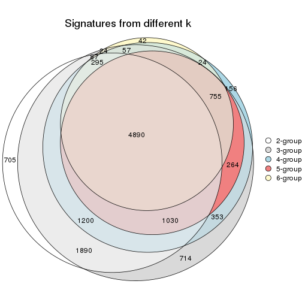
get_signature() returns a data frame invisibly. TO get the list of signatures, the function
call should be assigned to a variable explicitly. In following code, if plot argument is set
to FALSE, no heatmap is plotted while only the differential analysis is performed.
# code only for demonstration
tb = get_signature(res, k = ..., plot = FALSE)
An example of the output of tb is:
#> which_row fdr mean_1 mean_2 scaled_mean_1 scaled_mean_2 km
#> 1 38 0.042760348 8.373488 9.131774 -0.5533452 0.5164555 1
#> 2 40 0.018707592 7.106213 8.469186 -0.6173731 0.5762149 1
#> 3 55 0.019134737 10.221463 11.207825 -0.6159697 0.5749050 1
#> 4 59 0.006059896 5.921854 7.869574 -0.6899429 0.6439467 1
#> 5 60 0.018055526 8.928898 10.211722 -0.6204761 0.5791110 1
#> 6 98 0.009384629 15.714769 14.887706 0.6635654 -0.6193277 2
...
The columns in tb are:
which_row: row indices corresponding to the input matrix.fdr: FDR for the differential test. mean_x: The mean value in group x.scaled_mean_x: The mean value in group x after rows are scaled.km: Row groups if k-means clustering is applied to rows.UMAP plot which shows how samples are separated.
dimension_reduction(res, k = 2, method = "UMAP")
dimension_reduction(res, k = 3, method = "UMAP")
dimension_reduction(res, k = 4, method = "UMAP")
dimension_reduction(res, k = 5, method = "UMAP")
dimension_reduction(res, k = 6, method = "UMAP")
Following heatmap shows how subgroups are split when increasing k:
collect_classes(res)
Test correlation between subgroups and known annotations. If the known annotation is numeric, one-way ANOVA test is applied, and if the known annotation is discrete, chi-squared contingency table test is applied.
test_to_known_factors(res)
#> n other(p) k
#> MAD:skmeans 75 0.4095 2
#> MAD:skmeans 74 0.0589 3
#> MAD:skmeans 49 0.1938 4
#> MAD:skmeans 43 0.5380 5
#> MAD:skmeans 39 0.2508 6
If matrix rows can be associated to genes, consider to use functional_enrichment(res,
...) to perform function enrichment for the signature genes. See this vignette for more detailed explanations.
The object with results only for a single top-value method and a single partition method can be extracted as:
res = res_list["MAD", "pam"]
# you can also extract it by
# res = res_list["MAD:pam"]
A summary of res and all the functions that can be applied to it:
res
#> A 'ConsensusPartition' object with k = 2, 3, 4, 5, 6.
#> On a matrix with 21104 rows and 75 columns.
#> Top rows (1000, 2000, 3000, 4000, 5000) are extracted by 'MAD' method.
#> Subgroups are detected by 'pam' method.
#> Performed in total 1250 partitions by row resampling.
#> Best k for subgroups seems to be 2.
#>
#> Following methods can be applied to this 'ConsensusPartition' object:
#> [1] "cola_report" "collect_classes" "collect_plots"
#> [4] "collect_stats" "colnames" "compare_signatures"
#> [7] "consensus_heatmap" "dimension_reduction" "functional_enrichment"
#> [10] "get_anno_col" "get_anno" "get_classes"
#> [13] "get_consensus" "get_matrix" "get_membership"
#> [16] "get_param" "get_signatures" "get_stats"
#> [19] "is_best_k" "is_stable_k" "membership_heatmap"
#> [22] "ncol" "nrow" "plot_ecdf"
#> [25] "rownames" "select_partition_number" "show"
#> [28] "suggest_best_k" "test_to_known_factors"
collect_plots() function collects all the plots made from res for all k (number of partitions)
into one single page to provide an easy and fast comparison between different k.
collect_plots(res)
The plots are:
k and the heatmap of
predicted classes for each k.k.k.k.All the plots in panels can be made by individual functions and they are plotted later in this section.
select_partition_number() produces several plots showing different
statistics for choosing “optimized” k. There are following statistics:
k;k, the area increased is defined as \(A_k - A_{k-1}\).The detailed explanations of these statistics can be found in the cola vignette.
Generally speaking, lower PAC score, higher mean silhouette score or higher
concordance corresponds to better partition. Rand index and Jaccard index
measure how similar the current partition is compared to partition with k-1.
If they are too similar, we won't accept k is better than k-1.
select_partition_number(res)
The numeric values for all these statistics can be obtained by get_stats().
get_stats(res)
#> k 1-PAC mean_silhouette concordance area_increased Rand Jaccard
#> 2 2 0.283 0.674 0.851 0.3943 0.604 0.604
#> 3 3 0.258 0.528 0.816 0.1394 0.981 0.968
#> 4 4 0.260 0.555 0.799 0.0620 0.948 0.912
#> 5 5 0.299 0.588 0.804 0.0370 1.000 0.999
#> 6 6 0.320 0.577 0.808 0.0303 0.956 0.921
suggest_best_k() suggests the best \(k\) based on these statistics. The rules are as follows:
suggest_best_k(res)
#> [1] 2
Following shows the table of the partitions (You need to click the show/hide
code output link to see it). The membership matrix (columns with name p*)
is inferred by
clue::cl_consensus()
function with the SE method. Basically the value in the membership matrix
represents the probability to belong to a certain group. The finall class
label for an item is determined with the group with highest probability it
belongs to.
In get_classes() function, the entropy is calculated from the membership
matrix and the silhouette score is calculated from the consensus matrix.
cbind(get_classes(res, k = 2), get_membership(res, k = 2))
#> class entropy silhouette p1 p2
#> GSM15684 2 0.7602 0.634 0.220 0.780
#> GSM15685 2 0.1184 0.837 0.016 0.984
#> GSM15686 2 0.1184 0.835 0.016 0.984
#> GSM15687 1 0.9944 0.377 0.544 0.456
#> GSM15688 2 0.0672 0.837 0.008 0.992
#> GSM15689 1 0.8267 0.643 0.740 0.260
#> GSM15690 2 0.5842 0.746 0.140 0.860
#> GSM15691 2 0.0376 0.839 0.004 0.996
#> GSM15692 2 0.9866 0.163 0.432 0.568
#> GSM15693 1 0.3879 0.766 0.924 0.076
#> GSM15694 1 0.7745 0.770 0.772 0.228
#> GSM15695 1 0.9044 0.688 0.680 0.320
#> GSM15696 2 1.0000 -0.315 0.496 0.504
#> GSM15697 1 0.9850 0.517 0.572 0.428
#> GSM15698 1 0.9491 0.631 0.632 0.368
#> GSM15699 1 0.3879 0.766 0.924 0.076
#> GSM15700 2 0.3584 0.814 0.068 0.932
#> GSM15701 2 0.0938 0.838 0.012 0.988
#> GSM15702 2 0.0376 0.838 0.004 0.996
#> GSM15703 1 0.3879 0.766 0.924 0.076
#> GSM15704 2 0.6438 0.713 0.164 0.836
#> GSM15705 2 0.2778 0.816 0.048 0.952
#> GSM15706 2 0.9393 0.316 0.356 0.644
#> GSM15707 2 0.6973 0.677 0.188 0.812
#> GSM15708 2 0.0376 0.838 0.004 0.996
#> GSM15709 2 0.0376 0.838 0.004 0.996
#> GSM15710 2 0.8608 0.511 0.284 0.716
#> GSM15711 2 0.0376 0.838 0.004 0.996
#> GSM15712 2 0.0000 0.838 0.000 1.000
#> GSM15713 2 0.1184 0.837 0.016 0.984
#> GSM15714 2 0.4690 0.794 0.100 0.900
#> GSM15715 2 0.0376 0.838 0.004 0.996
#> GSM15716 1 0.5178 0.780 0.884 0.116
#> GSM15717 2 0.5946 0.743 0.144 0.856
#> GSM15718 2 0.5519 0.762 0.128 0.872
#> GSM15719 1 0.9988 0.390 0.520 0.480
#> GSM15720 2 0.4562 0.801 0.096 0.904
#> GSM15721 1 0.9087 0.677 0.676 0.324
#> GSM15722 2 0.0672 0.837 0.008 0.992
#> GSM15723 2 0.1414 0.831 0.020 0.980
#> GSM15724 2 0.5059 0.775 0.112 0.888
#> GSM15725 1 0.7139 0.777 0.804 0.196
#> GSM15726 1 0.7815 0.762 0.768 0.232
#> GSM15727 2 0.9608 0.190 0.384 0.616
#> GSM15728 2 0.7139 0.703 0.196 0.804
#> GSM15729 2 0.0376 0.838 0.004 0.996
#> GSM15730 2 0.0376 0.838 0.004 0.996
#> GSM15731 1 0.5946 0.784 0.856 0.144
#> GSM15732 2 0.9580 0.258 0.380 0.620
#> GSM15733 2 0.0000 0.838 0.000 1.000
#> GSM15734 2 1.0000 -0.381 0.496 0.504
#> GSM15735 1 0.7602 0.776 0.780 0.220
#> GSM15736 2 0.0672 0.838 0.008 0.992
#> GSM15737 2 0.0376 0.838 0.004 0.996
#> GSM15738 2 0.0376 0.838 0.004 0.996
#> GSM15739 2 1.0000 -0.373 0.496 0.504
#> GSM15740 2 0.9795 -0.105 0.416 0.584
#> GSM15741 2 0.7056 0.637 0.192 0.808
#> GSM15742 2 0.5737 0.773 0.136 0.864
#> GSM15743 2 0.2043 0.825 0.032 0.968
#> GSM15744 2 0.3584 0.814 0.068 0.932
#> GSM15745 1 0.9944 0.429 0.544 0.456
#> GSM15746 2 0.8016 0.617 0.244 0.756
#> GSM15747 2 0.0376 0.838 0.004 0.996
#> GSM15748 1 0.5408 0.758 0.876 0.124
#> GSM15749 1 0.3879 0.766 0.924 0.076
#> GSM15750 2 0.7745 0.597 0.228 0.772
#> GSM15751 2 0.0376 0.838 0.004 0.996
#> GSM15752 2 0.0000 0.838 0.000 1.000
#> GSM15753 2 0.0376 0.838 0.004 0.996
#> GSM15754 2 0.0376 0.838 0.004 0.996
#> GSM15755 2 0.0672 0.838 0.008 0.992
#> GSM15756 2 0.0376 0.838 0.004 0.996
#> GSM15757 2 0.0672 0.838 0.008 0.992
#> GSM15758 1 0.3879 0.765 0.924 0.076
cbind(get_classes(res, k = 3), get_membership(res, k = 3))
#> class entropy silhouette p1 p2 p3
#> GSM15684 1 0.5061 0.5601 0.784 0.208 0.008
#> GSM15685 1 0.1170 0.7539 0.976 0.016 0.008
#> GSM15686 1 0.1170 0.7523 0.976 0.016 0.008
#> GSM15687 2 0.9602 0.1298 0.320 0.460 0.220
#> GSM15688 1 0.1031 0.7484 0.976 0.000 0.024
#> GSM15689 2 0.6414 0.3961 0.248 0.716 0.036
#> GSM15690 1 0.4540 0.6548 0.848 0.124 0.028
#> GSM15691 1 0.0661 0.7542 0.988 0.008 0.004
#> GSM15692 1 0.9989 -0.6086 0.352 0.312 0.336
#> GSM15693 2 0.1529 0.6312 0.040 0.960 0.000
#> GSM15694 2 0.5335 0.6047 0.232 0.760 0.008
#> GSM15695 2 0.6008 0.5051 0.332 0.664 0.004
#> GSM15696 1 0.6678 -0.1621 0.512 0.480 0.008
#> GSM15697 2 0.6754 0.3249 0.432 0.556 0.012
#> GSM15698 2 0.6228 0.4462 0.372 0.624 0.004
#> GSM15699 2 0.1964 0.6375 0.056 0.944 0.000
#> GSM15700 1 0.3045 0.7303 0.916 0.064 0.020
#> GSM15701 1 0.0661 0.7535 0.988 0.008 0.004
#> GSM15702 1 0.0983 0.7528 0.980 0.004 0.016
#> GSM15703 2 0.1529 0.6312 0.040 0.960 0.000
#> GSM15704 1 0.4172 0.6326 0.840 0.156 0.004
#> GSM15705 1 0.1964 0.7271 0.944 0.056 0.000
#> GSM15706 1 0.6229 0.3267 0.652 0.340 0.008
#> GSM15707 1 0.4465 0.6036 0.820 0.176 0.004
#> GSM15708 1 0.1031 0.7539 0.976 0.000 0.024
#> GSM15709 1 0.0747 0.7540 0.984 0.000 0.016
#> GSM15710 1 0.5728 0.4565 0.720 0.272 0.008
#> GSM15711 1 0.0661 0.7525 0.988 0.004 0.008
#> GSM15712 1 0.0829 0.7545 0.984 0.004 0.012
#> GSM15713 1 0.0983 0.7525 0.980 0.016 0.004
#> GSM15714 1 0.3193 0.7057 0.896 0.100 0.004
#> GSM15715 1 0.1163 0.7512 0.972 0.000 0.028
#> GSM15716 2 0.3375 0.6512 0.100 0.892 0.008
#> GSM15717 1 0.4047 0.6420 0.848 0.148 0.004
#> GSM15718 1 0.4136 0.6702 0.864 0.116 0.020
#> GSM15719 2 0.7178 0.2396 0.464 0.512 0.024
#> GSM15720 1 0.7208 0.0816 0.644 0.048 0.308
#> GSM15721 2 0.9437 0.3594 0.208 0.492 0.300
#> GSM15722 1 0.1031 0.7506 0.976 0.000 0.024
#> GSM15723 1 0.3816 0.5942 0.852 0.000 0.148
#> GSM15724 1 0.3695 0.6906 0.880 0.108 0.012
#> GSM15725 2 0.8916 0.4277 0.152 0.544 0.304
#> GSM15726 2 0.9092 0.4156 0.168 0.528 0.304
#> GSM15727 1 0.7422 0.1943 0.608 0.344 0.048
#> GSM15728 1 0.7176 0.2872 0.684 0.068 0.248
#> GSM15729 1 0.0892 0.7504 0.980 0.000 0.020
#> GSM15730 1 0.0747 0.7506 0.984 0.000 0.016
#> GSM15731 2 0.3192 0.6519 0.112 0.888 0.000
#> GSM15732 1 0.7043 -0.0878 0.576 0.400 0.024
#> GSM15733 1 0.0983 0.7544 0.980 0.004 0.016
#> GSM15734 1 0.7075 -0.3285 0.492 0.488 0.020
#> GSM15735 2 0.5061 0.6234 0.208 0.784 0.008
#> GSM15736 1 0.1411 0.7525 0.964 0.000 0.036
#> GSM15737 1 0.1163 0.7512 0.972 0.000 0.028
#> GSM15738 1 0.1163 0.7512 0.972 0.000 0.028
#> GSM15739 1 0.7075 -0.2896 0.492 0.488 0.020
#> GSM15740 1 0.6962 -0.0730 0.568 0.412 0.020
#> GSM15741 1 0.5269 0.4494 0.784 0.200 0.016
#> GSM15742 3 0.6510 0.0000 0.364 0.012 0.624
#> GSM15743 1 0.4452 0.5062 0.808 0.000 0.192
#> GSM15744 1 0.5791 0.5305 0.784 0.048 0.168
#> GSM15745 2 0.9901 0.1264 0.300 0.404 0.296
#> GSM15746 1 0.5982 0.5393 0.744 0.228 0.028
#> GSM15747 1 0.1031 0.7548 0.976 0.000 0.024
#> GSM15748 2 0.2625 0.6232 0.084 0.916 0.000
#> GSM15749 2 0.1643 0.6302 0.044 0.956 0.000
#> GSM15750 1 0.5202 0.5185 0.772 0.220 0.008
#> GSM15751 1 0.0983 0.7528 0.980 0.004 0.016
#> GSM15752 1 0.1031 0.7528 0.976 0.000 0.024
#> GSM15753 1 0.1031 0.7543 0.976 0.000 0.024
#> GSM15754 1 0.0829 0.7539 0.984 0.004 0.012
#> GSM15755 1 0.1031 0.7542 0.976 0.000 0.024
#> GSM15756 1 0.0892 0.7535 0.980 0.000 0.020
#> GSM15757 1 0.0983 0.7548 0.980 0.004 0.016
#> GSM15758 2 0.1529 0.6312 0.040 0.960 0.000
cbind(get_classes(res, k = 4), get_membership(res, k = 4))
#> class entropy silhouette p1 p2 p3 p4
#> GSM15684 3 0.4978 0.673 0.004 0.180 0.764 0.052
#> GSM15685 3 0.1807 0.810 0.000 0.008 0.940 0.052
#> GSM15686 3 0.2075 0.812 0.004 0.016 0.936 0.044
#> GSM15687 4 0.7714 0.000 0.016 0.320 0.160 0.504
#> GSM15688 3 0.0804 0.808 0.008 0.000 0.980 0.012
#> GSM15689 2 0.4840 0.105 0.028 0.732 0.240 0.000
#> GSM15690 3 0.5506 0.555 0.016 0.024 0.692 0.268
#> GSM15691 3 0.1296 0.815 0.004 0.004 0.964 0.028
#> GSM15692 1 0.9430 0.210 0.412 0.252 0.196 0.140
#> GSM15693 2 0.0921 0.391 0.000 0.972 0.028 0.000
#> GSM15694 2 0.4961 0.395 0.004 0.748 0.212 0.036
#> GSM15695 2 0.5712 0.327 0.000 0.644 0.308 0.048
#> GSM15696 3 0.6207 -0.124 0.000 0.452 0.496 0.052
#> GSM15697 2 0.6326 0.199 0.004 0.532 0.412 0.052
#> GSM15698 2 0.5762 0.287 0.000 0.608 0.352 0.040
#> GSM15699 2 0.2197 0.404 0.000 0.928 0.048 0.024
#> GSM15700 3 0.3257 0.802 0.008 0.052 0.888 0.052
#> GSM15701 3 0.1743 0.808 0.000 0.004 0.940 0.056
#> GSM15702 3 0.1978 0.809 0.004 0.000 0.928 0.068
#> GSM15703 2 0.0921 0.391 0.000 0.972 0.028 0.000
#> GSM15704 3 0.4153 0.729 0.000 0.132 0.820 0.048
#> GSM15705 3 0.2759 0.799 0.000 0.052 0.904 0.044
#> GSM15706 3 0.5982 0.441 0.004 0.312 0.632 0.052
#> GSM15707 3 0.4436 0.708 0.000 0.148 0.800 0.052
#> GSM15708 3 0.1209 0.809 0.004 0.000 0.964 0.032
#> GSM15709 3 0.0895 0.811 0.004 0.000 0.976 0.020
#> GSM15710 3 0.5612 0.568 0.004 0.252 0.692 0.052
#> GSM15711 3 0.1389 0.808 0.000 0.000 0.952 0.048
#> GSM15712 3 0.1743 0.811 0.004 0.000 0.940 0.056
#> GSM15713 3 0.1938 0.807 0.000 0.012 0.936 0.052
#> GSM15714 3 0.3521 0.781 0.000 0.084 0.864 0.052
#> GSM15715 3 0.1151 0.806 0.008 0.000 0.968 0.024
#> GSM15716 2 0.3266 0.417 0.004 0.880 0.084 0.032
#> GSM15717 3 0.4356 0.731 0.004 0.140 0.812 0.044
#> GSM15718 3 0.3375 0.750 0.008 0.116 0.864 0.012
#> GSM15719 2 0.5811 0.238 0.012 0.508 0.468 0.012
#> GSM15720 3 0.5908 0.376 0.312 0.048 0.636 0.004
#> GSM15721 2 0.7494 0.245 0.312 0.484 0.204 0.000
#> GSM15722 3 0.1920 0.800 0.024 0.004 0.944 0.028
#> GSM15723 3 0.3497 0.712 0.124 0.000 0.852 0.024
#> GSM15724 3 0.3928 0.774 0.008 0.084 0.852 0.056
#> GSM15725 2 0.7098 0.274 0.312 0.536 0.152 0.000
#> GSM15726 2 0.7203 0.274 0.312 0.524 0.164 0.000
#> GSM15727 3 0.5695 0.319 0.028 0.324 0.640 0.008
#> GSM15728 3 0.6281 0.505 0.252 0.052 0.668 0.028
#> GSM15729 3 0.1151 0.807 0.008 0.000 0.968 0.024
#> GSM15730 3 0.0657 0.808 0.004 0.000 0.984 0.012
#> GSM15731 2 0.2345 0.437 0.000 0.900 0.100 0.000
#> GSM15732 3 0.5792 0.123 0.008 0.400 0.572 0.020
#> GSM15733 3 0.1661 0.812 0.004 0.000 0.944 0.052
#> GSM15734 2 0.5807 0.233 0.008 0.492 0.484 0.016
#> GSM15735 2 0.4730 0.397 0.004 0.772 0.188 0.036
#> GSM15736 3 0.1388 0.807 0.012 0.000 0.960 0.028
#> GSM15737 3 0.1151 0.806 0.008 0.000 0.968 0.024
#> GSM15738 3 0.1151 0.806 0.008 0.000 0.968 0.024
#> GSM15739 3 0.5591 -0.325 0.008 0.484 0.500 0.008
#> GSM15740 3 0.5730 -0.150 0.008 0.416 0.560 0.016
#> GSM15741 3 0.4074 0.588 0.004 0.196 0.792 0.008
#> GSM15742 1 0.5809 0.300 0.696 0.004 0.224 0.076
#> GSM15743 3 0.3710 0.650 0.192 0.000 0.804 0.004
#> GSM15744 3 0.4970 0.668 0.152 0.048 0.784 0.016
#> GSM15745 2 0.7844 0.155 0.308 0.404 0.288 0.000
#> GSM15746 3 0.4747 0.680 0.008 0.204 0.764 0.024
#> GSM15747 3 0.1356 0.812 0.008 0.000 0.960 0.032
#> GSM15748 2 0.1902 0.387 0.000 0.932 0.064 0.004
#> GSM15749 2 0.0921 0.391 0.000 0.972 0.028 0.000
#> GSM15750 3 0.5436 0.617 0.004 0.212 0.724 0.060
#> GSM15751 3 0.1978 0.809 0.004 0.000 0.928 0.068
#> GSM15752 3 0.0779 0.810 0.004 0.000 0.980 0.016
#> GSM15753 3 0.1356 0.810 0.008 0.000 0.960 0.032
#> GSM15754 3 0.1389 0.813 0.000 0.000 0.952 0.048
#> GSM15755 3 0.1635 0.813 0.008 0.000 0.948 0.044
#> GSM15756 3 0.1722 0.813 0.008 0.000 0.944 0.048
#> GSM15757 3 0.0712 0.812 0.004 0.004 0.984 0.008
#> GSM15758 2 0.0921 0.391 0.000 0.972 0.028 0.000
cbind(get_classes(res, k = 5), get_membership(res, k = 5))
#> class entropy silhouette p1 p2 p3 p4 p5
#> GSM15684 1 0.4424 0.6885 0.768 0.172 0.048 0.008 0.004
#> GSM15685 1 0.1569 0.8185 0.944 0.004 0.044 0.008 0.000
#> GSM15686 1 0.1917 0.8187 0.936 0.016 0.036 0.008 0.004
#> GSM15687 4 0.4453 0.0000 0.060 0.184 0.000 0.752 0.004
#> GSM15688 1 0.0854 0.8171 0.976 0.000 0.008 0.004 0.012
#> GSM15689 2 0.4054 0.3371 0.224 0.748 0.000 0.000 0.028
#> GSM15690 1 0.5029 0.2162 0.528 0.024 0.444 0.004 0.000
#> GSM15691 1 0.1093 0.8222 0.968 0.004 0.020 0.004 0.004
#> GSM15692 5 0.5160 0.0000 0.096 0.164 0.004 0.012 0.724
#> GSM15693 2 0.0510 0.4767 0.016 0.984 0.000 0.000 0.000
#> GSM15694 2 0.4439 0.5565 0.204 0.748 0.040 0.004 0.004
#> GSM15695 2 0.5140 0.5077 0.312 0.636 0.044 0.008 0.000
#> GSM15696 1 0.5482 -0.0979 0.500 0.448 0.044 0.008 0.000
#> GSM15697 2 0.5654 0.3455 0.416 0.524 0.048 0.008 0.004
#> GSM15698 2 0.5013 0.4899 0.352 0.612 0.028 0.008 0.000
#> GSM15699 2 0.1915 0.5099 0.040 0.928 0.032 0.000 0.000
#> GSM15700 1 0.3036 0.8092 0.888 0.052 0.032 0.016 0.012
#> GSM15701 1 0.1644 0.8143 0.940 0.004 0.048 0.008 0.000
#> GSM15702 1 0.1988 0.8171 0.928 0.000 0.048 0.016 0.008
#> GSM15703 2 0.0510 0.4767 0.016 0.984 0.000 0.000 0.000
#> GSM15704 1 0.3693 0.7424 0.824 0.124 0.044 0.008 0.000
#> GSM15705 1 0.2654 0.8077 0.896 0.056 0.040 0.008 0.000
#> GSM15706 1 0.5283 0.4755 0.644 0.296 0.048 0.008 0.004
#> GSM15707 1 0.3946 0.7219 0.804 0.140 0.048 0.008 0.000
#> GSM15708 1 0.1087 0.8175 0.968 0.000 0.016 0.008 0.008
#> GSM15709 1 0.0566 0.8186 0.984 0.000 0.012 0.000 0.004
#> GSM15710 1 0.4962 0.5855 0.700 0.240 0.048 0.008 0.004
#> GSM15711 1 0.1331 0.8161 0.952 0.000 0.040 0.008 0.000
#> GSM15712 1 0.1913 0.8190 0.932 0.000 0.044 0.016 0.008
#> GSM15713 1 0.1770 0.8139 0.936 0.008 0.048 0.008 0.000
#> GSM15714 1 0.3244 0.7896 0.860 0.084 0.048 0.008 0.000
#> GSM15715 1 0.1200 0.8143 0.964 0.000 0.012 0.008 0.016
#> GSM15716 2 0.2728 0.5310 0.068 0.892 0.032 0.004 0.004
#> GSM15717 1 0.3803 0.7393 0.816 0.140 0.032 0.008 0.004
#> GSM15718 1 0.3018 0.7609 0.860 0.116 0.012 0.000 0.012
#> GSM15719 2 0.5092 0.3594 0.464 0.508 0.012 0.000 0.016
#> GSM15720 1 0.4925 0.4893 0.632 0.044 0.000 0.000 0.324
#> GSM15721 2 0.6487 0.3531 0.208 0.476 0.000 0.000 0.316
#> GSM15722 1 0.4447 0.7090 0.800 0.000 0.072 0.048 0.080
#> GSM15723 1 0.3145 0.7458 0.844 0.000 0.012 0.008 0.136
#> GSM15724 1 0.3557 0.7861 0.856 0.076 0.044 0.012 0.012
#> GSM15725 2 0.6030 0.3748 0.140 0.544 0.000 0.000 0.316
#> GSM15726 2 0.6096 0.3751 0.148 0.536 0.000 0.000 0.316
#> GSM15727 1 0.4947 0.3501 0.644 0.316 0.008 0.000 0.032
#> GSM15728 1 0.5346 0.5899 0.672 0.048 0.000 0.028 0.252
#> GSM15729 1 0.1095 0.8155 0.968 0.000 0.012 0.008 0.012
#> GSM15730 1 0.0693 0.8163 0.980 0.000 0.012 0.000 0.008
#> GSM15731 2 0.1965 0.5502 0.096 0.904 0.000 0.000 0.000
#> GSM15732 1 0.5083 0.1862 0.556 0.416 0.004 0.008 0.016
#> GSM15733 1 0.1869 0.8193 0.936 0.000 0.036 0.016 0.012
#> GSM15734 2 0.5154 0.3301 0.480 0.492 0.012 0.004 0.012
#> GSM15735 2 0.4187 0.5576 0.192 0.768 0.032 0.004 0.004
#> GSM15736 1 0.1405 0.8153 0.956 0.000 0.016 0.008 0.020
#> GSM15737 1 0.1200 0.8143 0.964 0.000 0.012 0.008 0.016
#> GSM15738 1 0.1200 0.8143 0.964 0.000 0.012 0.008 0.016
#> GSM15739 1 0.4913 -0.3115 0.496 0.484 0.008 0.000 0.012
#> GSM15740 1 0.4944 -0.1334 0.560 0.416 0.012 0.000 0.012
#> GSM15741 1 0.3578 0.6392 0.784 0.204 0.004 0.000 0.008
#> GSM15742 3 0.7696 0.0000 0.096 0.004 0.480 0.152 0.268
#> GSM15743 1 0.3266 0.6956 0.796 0.000 0.004 0.000 0.200
#> GSM15744 1 0.4360 0.7104 0.780 0.044 0.008 0.008 0.160
#> GSM15745 2 0.6736 0.2833 0.276 0.412 0.000 0.000 0.312
#> GSM15746 1 0.4197 0.6949 0.768 0.196 0.020 0.004 0.012
#> GSM15747 1 0.1419 0.8201 0.956 0.000 0.016 0.012 0.016
#> GSM15748 2 0.1270 0.4807 0.052 0.948 0.000 0.000 0.000
#> GSM15749 2 0.0510 0.4767 0.016 0.984 0.000 0.000 0.000
#> GSM15750 1 0.4977 0.6085 0.720 0.216 0.040 0.016 0.008
#> GSM15751 1 0.1988 0.8171 0.928 0.000 0.048 0.016 0.008
#> GSM15752 1 0.0854 0.8178 0.976 0.000 0.008 0.004 0.012
#> GSM15753 1 0.1074 0.8184 0.968 0.000 0.016 0.004 0.012
#> GSM15754 1 0.1331 0.8204 0.952 0.000 0.040 0.008 0.000
#> GSM15755 1 0.1756 0.8214 0.940 0.000 0.036 0.008 0.016
#> GSM15756 1 0.1787 0.8212 0.940 0.000 0.032 0.012 0.016
#> GSM15757 1 0.0775 0.8189 0.980 0.004 0.004 0.004 0.008
#> GSM15758 2 0.0510 0.4767 0.016 0.984 0.000 0.000 0.000
cbind(get_classes(res, k = 6), get_membership(res, k = 6))
#> class entropy silhouette p1 p2 p3 p4 p5 p6
#> GSM15684 3 0.3846 0.667 0.000 0.172 0.776 0.000 0.028 0.024
#> GSM15685 3 0.1401 0.805 0.000 0.004 0.948 0.000 0.020 0.028
#> GSM15686 3 0.2145 0.803 0.000 0.016 0.920 0.012 0.032 0.020
#> GSM15687 1 0.2531 0.000 0.856 0.132 0.012 0.000 0.000 0.000
#> GSM15688 3 0.1015 0.802 0.004 0.000 0.968 0.012 0.012 0.004
#> GSM15689 2 0.3834 0.392 0.000 0.748 0.216 0.028 0.008 0.000
#> GSM15690 6 0.3175 0.000 0.000 0.000 0.256 0.000 0.000 0.744
#> GSM15691 3 0.0912 0.809 0.004 0.004 0.972 0.000 0.012 0.008
#> GSM15692 4 0.3727 0.000 0.000 0.112 0.044 0.816 0.016 0.012
#> GSM15693 2 0.0363 0.496 0.000 0.988 0.012 0.000 0.000 0.000
#> GSM15694 2 0.3888 0.602 0.000 0.752 0.208 0.000 0.024 0.016
#> GSM15695 2 0.4637 0.534 0.000 0.636 0.316 0.000 0.024 0.024
#> GSM15696 3 0.4930 -0.126 0.000 0.448 0.504 0.000 0.028 0.020
#> GSM15697 2 0.5100 0.379 0.000 0.528 0.416 0.004 0.028 0.024
#> GSM15698 2 0.4534 0.507 0.000 0.612 0.352 0.000 0.016 0.020
#> GSM15699 2 0.1750 0.532 0.000 0.932 0.040 0.000 0.016 0.012
#> GSM15700 3 0.2550 0.797 0.004 0.048 0.900 0.008 0.016 0.024
#> GSM15701 3 0.1485 0.800 0.000 0.004 0.944 0.000 0.028 0.024
#> GSM15702 3 0.1823 0.802 0.004 0.000 0.932 0.008 0.028 0.028
#> GSM15703 2 0.0363 0.496 0.000 0.988 0.012 0.000 0.000 0.000
#> GSM15704 3 0.3316 0.721 0.000 0.124 0.828 0.000 0.024 0.024
#> GSM15705 3 0.2358 0.789 0.000 0.056 0.900 0.000 0.028 0.016
#> GSM15706 3 0.4626 0.470 0.000 0.296 0.652 0.000 0.028 0.024
#> GSM15707 3 0.3556 0.698 0.000 0.140 0.808 0.000 0.028 0.024
#> GSM15708 3 0.1121 0.802 0.004 0.000 0.964 0.008 0.008 0.016
#> GSM15709 3 0.0665 0.804 0.000 0.000 0.980 0.004 0.008 0.008
#> GSM15710 3 0.4334 0.581 0.000 0.240 0.708 0.000 0.028 0.024
#> GSM15711 3 0.1176 0.802 0.000 0.000 0.956 0.000 0.024 0.020
#> GSM15712 3 0.1743 0.805 0.004 0.000 0.936 0.008 0.028 0.024
#> GSM15713 3 0.1599 0.799 0.000 0.008 0.940 0.000 0.028 0.024
#> GSM15714 3 0.2924 0.769 0.000 0.084 0.864 0.000 0.028 0.024
#> GSM15715 3 0.1223 0.799 0.004 0.000 0.960 0.016 0.008 0.012
#> GSM15716 2 0.2282 0.556 0.000 0.900 0.068 0.000 0.020 0.012
#> GSM15717 3 0.3374 0.722 0.000 0.140 0.820 0.004 0.016 0.020
#> GSM15718 3 0.2720 0.749 0.000 0.112 0.864 0.008 0.008 0.008
#> GSM15719 2 0.4634 0.392 0.000 0.512 0.460 0.012 0.008 0.008
#> GSM15720 3 0.4438 0.368 0.000 0.044 0.628 0.328 0.000 0.000
#> GSM15721 2 0.5817 0.419 0.000 0.476 0.204 0.320 0.000 0.000
#> GSM15722 3 0.6145 0.211 0.064 0.008 0.628 0.072 0.020 0.208
#> GSM15723 3 0.3118 0.689 0.008 0.000 0.832 0.140 0.008 0.012
#> GSM15724 3 0.3132 0.769 0.004 0.076 0.864 0.008 0.028 0.020
#> GSM15725 2 0.5366 0.418 0.000 0.548 0.132 0.320 0.000 0.000
#> GSM15726 2 0.5487 0.427 0.000 0.532 0.148 0.320 0.000 0.000
#> GSM15727 3 0.4511 0.338 0.000 0.316 0.644 0.028 0.008 0.004
#> GSM15728 3 0.6127 0.376 0.060 0.032 0.628 0.228 0.024 0.028
#> GSM15729 3 0.1026 0.800 0.004 0.000 0.968 0.008 0.008 0.012
#> GSM15730 3 0.0779 0.802 0.000 0.000 0.976 0.008 0.008 0.008
#> GSM15731 2 0.1765 0.578 0.000 0.904 0.096 0.000 0.000 0.000
#> GSM15732 3 0.4698 0.086 0.004 0.416 0.552 0.016 0.004 0.008
#> GSM15733 3 0.1680 0.805 0.004 0.000 0.940 0.012 0.024 0.020
#> GSM15734 2 0.4641 0.355 0.000 0.492 0.480 0.008 0.008 0.012
#> GSM15735 2 0.3691 0.602 0.000 0.764 0.204 0.000 0.020 0.012
#> GSM15736 3 0.1317 0.800 0.004 0.000 0.956 0.016 0.008 0.016
#> GSM15737 3 0.1223 0.799 0.004 0.000 0.960 0.016 0.008 0.012
#> GSM15738 3 0.1223 0.799 0.004 0.000 0.960 0.016 0.008 0.012
#> GSM15739 2 0.4543 0.316 0.000 0.488 0.488 0.012 0.008 0.004
#> GSM15740 3 0.4502 -0.178 0.000 0.420 0.556 0.008 0.008 0.008
#> GSM15741 3 0.3838 0.523 0.008 0.208 0.760 0.008 0.012 0.004
#> GSM15742 5 0.2176 0.000 0.000 0.000 0.024 0.080 0.896 0.000
#> GSM15743 3 0.3073 0.629 0.000 0.000 0.788 0.204 0.008 0.000
#> GSM15744 3 0.4125 0.646 0.004 0.044 0.768 0.168 0.008 0.008
#> GSM15745 2 0.6047 0.357 0.000 0.412 0.272 0.316 0.000 0.000
#> GSM15746 3 0.3838 0.676 0.004 0.196 0.768 0.008 0.008 0.016
#> GSM15747 3 0.1129 0.805 0.004 0.000 0.964 0.012 0.008 0.012
#> GSM15748 2 0.1075 0.504 0.000 0.952 0.048 0.000 0.000 0.000
#> GSM15749 2 0.0363 0.496 0.000 0.988 0.012 0.000 0.000 0.000
#> GSM15750 3 0.4463 0.612 0.004 0.212 0.728 0.008 0.024 0.024
#> GSM15751 3 0.1823 0.802 0.004 0.000 0.932 0.008 0.028 0.028
#> GSM15752 3 0.0870 0.803 0.000 0.000 0.972 0.012 0.004 0.012
#> GSM15753 3 0.1026 0.803 0.004 0.000 0.968 0.008 0.008 0.012
#> GSM15754 3 0.1341 0.807 0.000 0.000 0.948 0.000 0.028 0.024
#> GSM15755 3 0.1602 0.807 0.004 0.000 0.944 0.016 0.016 0.020
#> GSM15756 3 0.1602 0.807 0.004 0.000 0.944 0.016 0.020 0.016
#> GSM15757 3 0.0810 0.805 0.000 0.004 0.976 0.008 0.008 0.004
#> GSM15758 2 0.0363 0.496 0.000 0.988 0.012 0.000 0.000 0.000
Heatmaps for the consensus matrix. It visualizes the probability of two samples to be in a same group.
consensus_heatmap(res, k = 2)
consensus_heatmap(res, k = 3)
consensus_heatmap(res, k = 4)
consensus_heatmap(res, k = 5)
consensus_heatmap(res, k = 6)
Heatmaps for the membership of samples in all partitions to see how consistent they are:
membership_heatmap(res, k = 2)
membership_heatmap(res, k = 3)
membership_heatmap(res, k = 4)
membership_heatmap(res, k = 5)
membership_heatmap(res, k = 6)
As soon as we have had the classes for columns, we can look for signatures which are significantly different between classes which can be candidate marks for certain classes. Following are the heatmaps for signatures.
Signature heatmaps where rows are scaled:
get_signatures(res, k = 2)
get_signatures(res, k = 3)
get_signatures(res, k = 4)

get_signatures(res, k = 5)
get_signatures(res, k = 6)
Signature heatmaps where rows are not scaled:
get_signatures(res, k = 2, scale_rows = FALSE)

get_signatures(res, k = 3, scale_rows = FALSE)
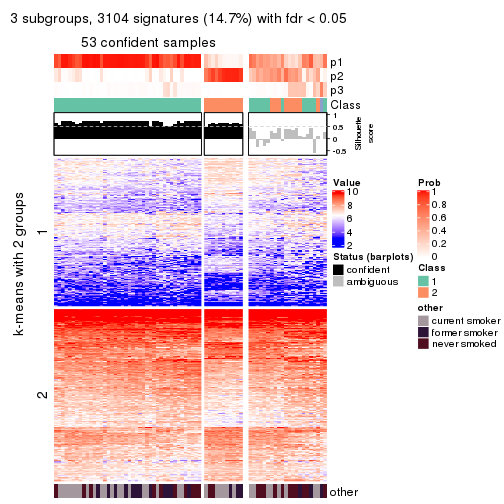
get_signatures(res, k = 4, scale_rows = FALSE)

get_signatures(res, k = 5, scale_rows = FALSE)
get_signatures(res, k = 6, scale_rows = FALSE)
Compare the overlap of signatures from different k:
compare_signatures(res)
get_signature() returns a data frame invisibly. TO get the list of signatures, the function
call should be assigned to a variable explicitly. In following code, if plot argument is set
to FALSE, no heatmap is plotted while only the differential analysis is performed.
# code only for demonstration
tb = get_signature(res, k = ..., plot = FALSE)
An example of the output of tb is:
#> which_row fdr mean_1 mean_2 scaled_mean_1 scaled_mean_2 km
#> 1 38 0.042760348 8.373488 9.131774 -0.5533452 0.5164555 1
#> 2 40 0.018707592 7.106213 8.469186 -0.6173731 0.5762149 1
#> 3 55 0.019134737 10.221463 11.207825 -0.6159697 0.5749050 1
#> 4 59 0.006059896 5.921854 7.869574 -0.6899429 0.6439467 1
#> 5 60 0.018055526 8.928898 10.211722 -0.6204761 0.5791110 1
#> 6 98 0.009384629 15.714769 14.887706 0.6635654 -0.6193277 2
...
The columns in tb are:
which_row: row indices corresponding to the input matrix.fdr: FDR for the differential test. mean_x: The mean value in group x.scaled_mean_x: The mean value in group x after rows are scaled.km: Row groups if k-means clustering is applied to rows.UMAP plot which shows how samples are separated.
dimension_reduction(res, k = 2, method = "UMAP")
dimension_reduction(res, k = 3, method = "UMAP")
dimension_reduction(res, k = 4, method = "UMAP")
dimension_reduction(res, k = 5, method = "UMAP")
dimension_reduction(res, k = 6, method = "UMAP")
Following heatmap shows how subgroups are split when increasing k:
collect_classes(res)
Test correlation between subgroups and known annotations. If the known annotation is numeric, one-way ANOVA test is applied, and if the known annotation is discrete, chi-squared contingency table test is applied.
test_to_known_factors(res)
#> n other(p) k
#> MAD:pam 64 0.623 2
#> MAD:pam 53 0.899 3
#> MAD:pam 45 NA 4
#> MAD:pam 50 0.300 5
#> MAD:pam 50 0.562 6
If matrix rows can be associated to genes, consider to use functional_enrichment(res,
...) to perform function enrichment for the signature genes. See this vignette for more detailed explanations.
The object with results only for a single top-value method and a single partition method can be extracted as:
res = res_list["MAD", "mclust"]
# you can also extract it by
# res = res_list["MAD:mclust"]
A summary of res and all the functions that can be applied to it:
res
#> A 'ConsensusPartition' object with k = 2, 3, 4, 5, 6.
#> On a matrix with 21104 rows and 75 columns.
#> Top rows (1000, 2000, 3000, 4000, 5000) are extracted by 'MAD' method.
#> Subgroups are detected by 'mclust' method.
#> Performed in total 1250 partitions by row resampling.
#> Best k for subgroups seems to be 2.
#>
#> Following methods can be applied to this 'ConsensusPartition' object:
#> [1] "cola_report" "collect_classes" "collect_plots"
#> [4] "collect_stats" "colnames" "compare_signatures"
#> [7] "consensus_heatmap" "dimension_reduction" "functional_enrichment"
#> [10] "get_anno_col" "get_anno" "get_classes"
#> [13] "get_consensus" "get_matrix" "get_membership"
#> [16] "get_param" "get_signatures" "get_stats"
#> [19] "is_best_k" "is_stable_k" "membership_heatmap"
#> [22] "ncol" "nrow" "plot_ecdf"
#> [25] "rownames" "select_partition_number" "show"
#> [28] "suggest_best_k" "test_to_known_factors"
collect_plots() function collects all the plots made from res for all k (number of partitions)
into one single page to provide an easy and fast comparison between different k.
collect_plots(res)
The plots are:
k and the heatmap of
predicted classes for each k.k.k.k.All the plots in panels can be made by individual functions and they are plotted later in this section.
select_partition_number() produces several plots showing different
statistics for choosing “optimized” k. There are following statistics:
k;k, the area increased is defined as \(A_k - A_{k-1}\).The detailed explanations of these statistics can be found in the cola vignette.
Generally speaking, lower PAC score, higher mean silhouette score or higher
concordance corresponds to better partition. Rand index and Jaccard index
measure how similar the current partition is compared to partition with k-1.
If they are too similar, we won't accept k is better than k-1.
select_partition_number(res)
The numeric values for all these statistics can be obtained by get_stats().
get_stats(res)
#> k 1-PAC mean_silhouette concordance area_increased Rand Jaccard
#> 2 2 1.000 1.000 1.000 0.4510 0.550 0.550
#> 3 3 0.729 0.837 0.822 0.4299 0.798 0.632
#> 4 4 0.732 0.779 0.809 0.1095 0.928 0.797
#> 5 5 0.843 0.838 0.919 0.0865 0.857 0.557
#> 6 6 0.741 0.701 0.842 0.0389 0.963 0.832
suggest_best_k() suggests the best \(k\) based on these statistics. The rules are as follows:
suggest_best_k(res)
#> [1] 2
Following shows the table of the partitions (You need to click the show/hide
code output link to see it). The membership matrix (columns with name p*)
is inferred by
clue::cl_consensus()
function with the SE method. Basically the value in the membership matrix
represents the probability to belong to a certain group. The finall class
label for an item is determined with the group with highest probability it
belongs to.
In get_classes() function, the entropy is calculated from the membership
matrix and the silhouette score is calculated from the consensus matrix.
cbind(get_classes(res, k = 2), get_membership(res, k = 2))
#> class entropy silhouette p1 p2
#> GSM15684 1 0 1 1 0
#> GSM15685 1 0 1 1 0
#> GSM15686 1 0 1 1 0
#> GSM15687 1 0 1 1 0
#> GSM15688 1 0 1 1 0
#> GSM15689 1 0 1 1 0
#> GSM15690 1 0 1 1 0
#> GSM15691 1 0 1 1 0
#> GSM15692 1 0 1 1 0
#> GSM15693 2 0 1 0 1
#> GSM15694 2 0 1 0 1
#> GSM15695 2 0 1 0 1
#> GSM15696 2 0 1 0 1
#> GSM15697 2 0 1 0 1
#> GSM15698 2 0 1 0 1
#> GSM15699 2 0 1 0 1
#> GSM15700 2 0 1 0 1
#> GSM15701 2 0 1 0 1
#> GSM15702 2 0 1 0 1
#> GSM15703 2 0 1 0 1
#> GSM15704 2 0 1 0 1
#> GSM15705 2 0 1 0 1
#> GSM15706 2 0 1 0 1
#> GSM15707 2 0 1 0 1
#> GSM15708 2 0 1 0 1
#> GSM15709 2 0 1 0 1
#> GSM15710 2 0 1 0 1
#> GSM15711 2 0 1 0 1
#> GSM15712 2 0 1 0 1
#> GSM15713 2 0 1 0 1
#> GSM15714 2 0 1 0 1
#> GSM15715 2 0 1 0 1
#> GSM15716 2 0 1 0 1
#> GSM15717 2 0 1 0 1
#> GSM15718 1 0 1 1 0
#> GSM15719 2 0 1 0 1
#> GSM15720 1 0 1 1 0
#> GSM15721 1 0 1 1 0
#> GSM15722 1 0 1 1 0
#> GSM15723 1 0 1 1 0
#> GSM15724 1 0 1 1 0
#> GSM15725 1 0 1 1 0
#> GSM15726 1 0 1 1 0
#> GSM15727 1 0 1 1 0
#> GSM15728 1 0 1 1 0
#> GSM15729 2 0 1 0 1
#> GSM15730 2 0 1 0 1
#> GSM15731 2 0 1 0 1
#> GSM15732 2 0 1 0 1
#> GSM15733 2 0 1 0 1
#> GSM15734 2 0 1 0 1
#> GSM15735 2 0 1 0 1
#> GSM15736 2 0 1 0 1
#> GSM15737 2 0 1 0 1
#> GSM15738 2 0 1 0 1
#> GSM15739 2 0 1 0 1
#> GSM15740 2 0 1 0 1
#> GSM15741 1 0 1 1 0
#> GSM15742 1 0 1 1 0
#> GSM15743 1 0 1 1 0
#> GSM15744 1 0 1 1 0
#> GSM15745 1 0 1 1 0
#> GSM15746 1 0 1 1 0
#> GSM15747 2 0 1 0 1
#> GSM15748 2 0 1 0 1
#> GSM15749 2 0 1 0 1
#> GSM15750 2 0 1 0 1
#> GSM15751 2 0 1 0 1
#> GSM15752 2 0 1 0 1
#> GSM15753 2 0 1 0 1
#> GSM15754 2 0 1 0 1
#> GSM15755 2 0 1 0 1
#> GSM15756 2 0 1 0 1
#> GSM15757 2 0 1 0 1
#> GSM15758 2 0 1 0 1
cbind(get_classes(res, k = 3), get_membership(res, k = 3))
#> class entropy silhouette p1 p2 p3
#> GSM15684 1 0.0000 1.0000 1 0.000 0.000
#> GSM15685 1 0.0000 1.0000 1 0.000 0.000
#> GSM15686 1 0.0000 1.0000 1 0.000 0.000
#> GSM15687 1 0.0000 1.0000 1 0.000 0.000
#> GSM15688 1 0.0000 1.0000 1 0.000 0.000
#> GSM15689 1 0.0000 1.0000 1 0.000 0.000
#> GSM15690 1 0.0000 1.0000 1 0.000 0.000
#> GSM15691 1 0.0000 1.0000 1 0.000 0.000
#> GSM15692 1 0.0000 1.0000 1 0.000 0.000
#> GSM15693 2 0.5810 0.8358 0 0.664 0.336
#> GSM15694 2 0.5810 0.8353 0 0.664 0.336
#> GSM15695 2 0.5810 0.8353 0 0.664 0.336
#> GSM15696 2 0.5810 0.8353 0 0.664 0.336
#> GSM15697 2 0.5835 0.8333 0 0.660 0.340
#> GSM15698 2 0.2796 0.7322 0 0.908 0.092
#> GSM15699 2 0.4605 0.7921 0 0.796 0.204
#> GSM15700 2 0.5016 0.6851 0 0.760 0.240
#> GSM15701 2 0.5810 0.8353 0 0.664 0.336
#> GSM15702 3 0.3941 0.5788 0 0.156 0.844
#> GSM15703 2 0.5810 0.8358 0 0.664 0.336
#> GSM15704 2 0.5810 0.8358 0 0.664 0.336
#> GSM15705 2 0.5058 0.8082 0 0.756 0.244
#> GSM15706 2 0.5810 0.8353 0 0.664 0.336
#> GSM15707 2 0.5760 0.8357 0 0.672 0.328
#> GSM15708 3 0.0424 0.8099 0 0.008 0.992
#> GSM15709 3 0.0424 0.8099 0 0.008 0.992
#> GSM15710 2 0.5810 0.8358 0 0.664 0.336
#> GSM15711 2 0.5810 0.8358 0 0.664 0.336
#> GSM15712 2 0.6111 0.0846 0 0.604 0.396
#> GSM15713 2 0.5810 0.8353 0 0.664 0.336
#> GSM15714 2 0.3340 0.7481 0 0.880 0.120
#> GSM15715 3 0.5706 0.6867 0 0.320 0.680
#> GSM15716 2 0.3482 0.7545 0 0.872 0.128
#> GSM15717 2 0.0424 0.6536 0 0.992 0.008
#> GSM15718 1 0.0000 1.0000 1 0.000 0.000
#> GSM15719 2 0.0424 0.6536 0 0.992 0.008
#> GSM15720 1 0.0000 1.0000 1 0.000 0.000
#> GSM15721 1 0.0000 1.0000 1 0.000 0.000
#> GSM15722 1 0.0000 1.0000 1 0.000 0.000
#> GSM15723 1 0.0000 1.0000 1 0.000 0.000
#> GSM15724 1 0.0000 1.0000 1 0.000 0.000
#> GSM15725 1 0.0000 1.0000 1 0.000 0.000
#> GSM15726 1 0.0000 1.0000 1 0.000 0.000
#> GSM15727 1 0.0000 1.0000 1 0.000 0.000
#> GSM15728 1 0.0000 1.0000 1 0.000 0.000
#> GSM15729 3 0.4887 0.3849 0 0.228 0.772
#> GSM15730 2 0.5835 0.8353 0 0.660 0.340
#> GSM15731 2 0.5810 0.8353 0 0.664 0.336
#> GSM15732 2 0.2878 0.7187 0 0.904 0.096
#> GSM15733 3 0.5706 0.6864 0 0.320 0.680
#> GSM15734 2 0.5810 0.8353 0 0.664 0.336
#> GSM15735 2 0.5810 0.8353 0 0.664 0.336
#> GSM15736 3 0.0237 0.8075 0 0.004 0.996
#> GSM15737 3 0.2448 0.7974 0 0.076 0.924
#> GSM15738 3 0.0424 0.8099 0 0.008 0.992
#> GSM15739 2 0.2625 0.7253 0 0.916 0.084
#> GSM15740 2 0.2878 0.7326 0 0.904 0.096
#> GSM15741 1 0.0000 1.0000 1 0.000 0.000
#> GSM15742 1 0.0000 1.0000 1 0.000 0.000
#> GSM15743 1 0.0000 1.0000 1 0.000 0.000
#> GSM15744 1 0.0000 1.0000 1 0.000 0.000
#> GSM15745 1 0.0000 1.0000 1 0.000 0.000
#> GSM15746 1 0.0000 1.0000 1 0.000 0.000
#> GSM15747 3 0.4504 0.7523 0 0.196 0.804
#> GSM15748 2 0.0424 0.6536 0 0.992 0.008
#> GSM15749 2 0.5810 0.8358 0 0.664 0.336
#> GSM15750 3 0.5465 0.7083 0 0.288 0.712
#> GSM15751 3 0.0424 0.8099 0 0.008 0.992
#> GSM15752 3 0.0424 0.8099 0 0.008 0.992
#> GSM15753 3 0.5560 0.7000 0 0.300 0.700
#> GSM15754 2 0.5810 0.8358 0 0.664 0.336
#> GSM15755 3 0.0424 0.8099 0 0.008 0.992
#> GSM15756 3 0.0237 0.8075 0 0.004 0.996
#> GSM15757 3 0.4796 0.7427 0 0.220 0.780
#> GSM15758 2 0.0424 0.6536 0 0.992 0.008
cbind(get_classes(res, k = 4), get_membership(res, k = 4))
#> class entropy silhouette p1 p2 p3 p4
#> GSM15684 4 0.4855 0.953 0.400 0.000 0.000 0.600
#> GSM15685 4 0.4866 0.959 0.404 0.000 0.000 0.596
#> GSM15686 4 0.4941 0.953 0.436 0.000 0.000 0.564
#> GSM15687 4 0.4941 0.963 0.436 0.000 0.000 0.564
#> GSM15688 4 0.4925 0.971 0.428 0.000 0.000 0.572
#> GSM15689 4 0.4948 0.955 0.440 0.000 0.000 0.560
#> GSM15690 4 0.4925 0.971 0.428 0.000 0.000 0.572
#> GSM15691 1 0.4624 -0.208 0.660 0.000 0.000 0.340
#> GSM15692 4 0.4916 0.972 0.424 0.000 0.000 0.576
#> GSM15693 2 0.1042 0.846 0.000 0.972 0.020 0.008
#> GSM15694 2 0.0592 0.845 0.000 0.984 0.016 0.000
#> GSM15695 2 0.0000 0.847 0.000 1.000 0.000 0.000
#> GSM15696 2 0.0000 0.847 0.000 1.000 0.000 0.000
#> GSM15697 2 0.2179 0.817 0.000 0.924 0.064 0.012
#> GSM15698 2 0.5010 0.738 0.000 0.700 0.024 0.276
#> GSM15699 2 0.3764 0.785 0.000 0.784 0.000 0.216
#> GSM15700 2 0.7459 0.436 0.000 0.508 0.248 0.244
#> GSM15701 2 0.0657 0.845 0.000 0.984 0.012 0.004
#> GSM15702 3 0.4643 0.550 0.000 0.344 0.656 0.000
#> GSM15703 2 0.1042 0.846 0.000 0.972 0.020 0.008
#> GSM15704 2 0.1854 0.828 0.000 0.940 0.048 0.012
#> GSM15705 2 0.2999 0.816 0.000 0.864 0.004 0.132
#> GSM15706 2 0.0000 0.847 0.000 1.000 0.000 0.000
#> GSM15707 2 0.1022 0.845 0.000 0.968 0.000 0.032
#> GSM15708 3 0.0469 0.845 0.000 0.012 0.988 0.000
#> GSM15709 3 0.1637 0.835 0.000 0.060 0.940 0.000
#> GSM15710 2 0.0000 0.847 0.000 1.000 0.000 0.000
#> GSM15711 2 0.2021 0.825 0.000 0.932 0.056 0.012
#> GSM15712 3 0.7416 0.415 0.000 0.244 0.516 0.240
#> GSM15713 2 0.0469 0.847 0.000 0.988 0.000 0.012
#> GSM15714 2 0.5272 0.728 0.000 0.680 0.032 0.288
#> GSM15715 3 0.3529 0.822 0.000 0.012 0.836 0.152
#> GSM15716 2 0.4086 0.782 0.000 0.776 0.008 0.216
#> GSM15717 2 0.5959 0.643 0.000 0.568 0.044 0.388
#> GSM15718 4 0.4866 0.959 0.404 0.000 0.000 0.596
#> GSM15719 2 0.5816 0.649 0.000 0.572 0.036 0.392
#> GSM15720 1 0.0000 0.865 1.000 0.000 0.000 0.000
#> GSM15721 1 0.0000 0.865 1.000 0.000 0.000 0.000
#> GSM15722 1 0.2469 0.751 0.892 0.000 0.000 0.108
#> GSM15723 1 0.0592 0.861 0.984 0.000 0.000 0.016
#> GSM15724 1 0.0469 0.863 0.988 0.000 0.000 0.012
#> GSM15725 1 0.0000 0.865 1.000 0.000 0.000 0.000
#> GSM15726 1 0.0000 0.865 1.000 0.000 0.000 0.000
#> GSM15727 1 0.0000 0.865 1.000 0.000 0.000 0.000
#> GSM15728 1 0.0707 0.859 0.980 0.000 0.000 0.020
#> GSM15729 3 0.4977 0.310 0.000 0.460 0.540 0.000
#> GSM15730 2 0.0524 0.846 0.000 0.988 0.008 0.004
#> GSM15731 2 0.0000 0.847 0.000 1.000 0.000 0.000
#> GSM15732 2 0.7188 0.560 0.000 0.536 0.172 0.292
#> GSM15733 3 0.3249 0.827 0.000 0.008 0.852 0.140
#> GSM15734 2 0.0188 0.847 0.000 0.996 0.000 0.004
#> GSM15735 2 0.0000 0.847 0.000 1.000 0.000 0.000
#> GSM15736 3 0.0592 0.845 0.000 0.016 0.984 0.000
#> GSM15737 3 0.1004 0.844 0.000 0.004 0.972 0.024
#> GSM15738 3 0.0469 0.845 0.000 0.012 0.988 0.000
#> GSM15739 2 0.5990 0.694 0.000 0.644 0.072 0.284
#> GSM15740 2 0.5446 0.725 0.000 0.680 0.044 0.276
#> GSM15741 4 0.4916 0.972 0.424 0.000 0.000 0.576
#> GSM15742 1 0.1637 0.823 0.940 0.000 0.000 0.060
#> GSM15743 1 0.2149 0.777 0.912 0.000 0.000 0.088
#> GSM15744 1 0.0000 0.865 1.000 0.000 0.000 0.000
#> GSM15745 1 0.0336 0.865 0.992 0.000 0.000 0.008
#> GSM15746 1 0.4898 -0.560 0.584 0.000 0.000 0.416
#> GSM15747 3 0.3501 0.829 0.000 0.020 0.848 0.132
#> GSM15748 2 0.5966 0.702 0.000 0.648 0.072 0.280
#> GSM15749 2 0.1042 0.846 0.000 0.972 0.020 0.008
#> GSM15750 3 0.5257 0.764 0.000 0.060 0.728 0.212
#> GSM15751 3 0.0469 0.845 0.000 0.012 0.988 0.000
#> GSM15752 3 0.0592 0.845 0.000 0.016 0.984 0.000
#> GSM15753 3 0.5536 0.760 0.000 0.096 0.724 0.180
#> GSM15754 2 0.1854 0.828 0.000 0.940 0.048 0.012
#> GSM15755 3 0.0592 0.845 0.000 0.016 0.984 0.000
#> GSM15756 3 0.1211 0.843 0.000 0.040 0.960 0.000
#> GSM15757 3 0.4849 0.793 0.000 0.064 0.772 0.164
#> GSM15758 2 0.5793 0.656 0.000 0.580 0.036 0.384
cbind(get_classes(res, k = 5), get_membership(res, k = 5))
#> class entropy silhouette p1 p2 p3 p4 p5
#> GSM15684 5 0.0162 0.942 0.004 0.000 0.000 0.000 0.996
#> GSM15685 5 0.0404 0.940 0.012 0.000 0.000 0.000 0.988
#> GSM15686 5 0.0880 0.927 0.032 0.000 0.000 0.000 0.968
#> GSM15687 5 0.0404 0.940 0.012 0.000 0.000 0.000 0.988
#> GSM15688 5 0.0162 0.942 0.004 0.000 0.000 0.000 0.996
#> GSM15689 5 0.0404 0.940 0.012 0.000 0.000 0.000 0.988
#> GSM15690 5 0.0162 0.942 0.004 0.000 0.000 0.000 0.996
#> GSM15691 5 0.3774 0.575 0.296 0.000 0.000 0.000 0.704
#> GSM15692 5 0.0162 0.942 0.004 0.000 0.000 0.000 0.996
#> GSM15693 2 0.0510 0.929 0.000 0.984 0.000 0.016 0.000
#> GSM15694 2 0.0324 0.930 0.000 0.992 0.004 0.000 0.004
#> GSM15695 2 0.0162 0.930 0.000 0.996 0.000 0.000 0.004
#> GSM15696 2 0.0162 0.931 0.000 0.996 0.000 0.004 0.000
#> GSM15697 2 0.0451 0.930 0.000 0.988 0.008 0.004 0.000
#> GSM15698 4 0.4446 0.147 0.000 0.476 0.000 0.520 0.004
#> GSM15699 2 0.2890 0.770 0.000 0.836 0.000 0.160 0.004
#> GSM15700 4 0.5316 0.614 0.000 0.084 0.284 0.632 0.000
#> GSM15701 2 0.0451 0.930 0.000 0.988 0.008 0.004 0.000
#> GSM15702 2 0.3983 0.483 0.000 0.660 0.340 0.000 0.000
#> GSM15703 2 0.0510 0.929 0.000 0.984 0.000 0.016 0.000
#> GSM15704 2 0.0451 0.930 0.000 0.988 0.008 0.004 0.000
#> GSM15705 2 0.1043 0.912 0.000 0.960 0.000 0.040 0.000
#> GSM15706 2 0.0324 0.931 0.000 0.992 0.000 0.004 0.004
#> GSM15707 2 0.0162 0.931 0.000 0.996 0.000 0.004 0.000
#> GSM15708 3 0.0000 0.960 0.000 0.000 1.000 0.000 0.000
#> GSM15709 3 0.1341 0.907 0.000 0.056 0.944 0.000 0.000
#> GSM15710 2 0.0162 0.930 0.000 0.996 0.000 0.000 0.004
#> GSM15711 2 0.0566 0.929 0.000 0.984 0.012 0.004 0.000
#> GSM15712 4 0.5856 0.415 0.000 0.100 0.396 0.504 0.000
#> GSM15713 2 0.0162 0.931 0.000 0.996 0.000 0.004 0.000
#> GSM15714 4 0.3932 0.498 0.000 0.328 0.000 0.672 0.000
#> GSM15715 4 0.4249 0.388 0.000 0.000 0.432 0.568 0.000
#> GSM15716 2 0.0865 0.919 0.000 0.972 0.000 0.024 0.004
#> GSM15717 4 0.0290 0.724 0.000 0.008 0.000 0.992 0.000
#> GSM15718 5 0.0162 0.942 0.004 0.000 0.000 0.000 0.996
#> GSM15719 4 0.0404 0.725 0.000 0.012 0.000 0.988 0.000
#> GSM15720 1 0.0162 0.936 0.996 0.000 0.000 0.000 0.004
#> GSM15721 1 0.0000 0.935 1.000 0.000 0.000 0.000 0.000
#> GSM15722 1 0.3796 0.598 0.700 0.000 0.000 0.000 0.300
#> GSM15723 1 0.0609 0.931 0.980 0.000 0.000 0.000 0.020
#> GSM15724 1 0.0162 0.936 0.996 0.000 0.000 0.000 0.004
#> GSM15725 1 0.0000 0.935 1.000 0.000 0.000 0.000 0.000
#> GSM15726 1 0.0000 0.935 1.000 0.000 0.000 0.000 0.000
#> GSM15727 1 0.0162 0.936 0.996 0.000 0.000 0.000 0.004
#> GSM15728 1 0.0404 0.934 0.988 0.000 0.000 0.000 0.012
#> GSM15729 2 0.3196 0.718 0.000 0.804 0.192 0.004 0.000
#> GSM15730 2 0.0451 0.931 0.000 0.988 0.008 0.004 0.000
#> GSM15731 2 0.0324 0.929 0.000 0.992 0.000 0.004 0.004
#> GSM15732 4 0.3390 0.723 0.000 0.060 0.100 0.840 0.000
#> GSM15733 4 0.3550 0.662 0.000 0.004 0.236 0.760 0.000
#> GSM15734 2 0.0324 0.931 0.000 0.992 0.004 0.004 0.000
#> GSM15735 2 0.0324 0.929 0.000 0.992 0.000 0.004 0.004
#> GSM15736 3 0.0000 0.960 0.000 0.000 1.000 0.000 0.000
#> GSM15737 3 0.0162 0.958 0.000 0.000 0.996 0.004 0.000
#> GSM15738 3 0.0000 0.960 0.000 0.000 1.000 0.000 0.000
#> GSM15739 2 0.4226 0.713 0.000 0.776 0.084 0.140 0.000
#> GSM15740 2 0.4482 0.318 0.000 0.612 0.012 0.376 0.000
#> GSM15741 5 0.0162 0.942 0.004 0.000 0.000 0.000 0.996
#> GSM15742 1 0.2561 0.831 0.856 0.000 0.000 0.000 0.144
#> GSM15743 1 0.3336 0.717 0.772 0.000 0.000 0.000 0.228
#> GSM15744 1 0.0000 0.935 1.000 0.000 0.000 0.000 0.000
#> GSM15745 1 0.0510 0.932 0.984 0.000 0.000 0.000 0.016
#> GSM15746 5 0.3424 0.683 0.240 0.000 0.000 0.000 0.760
#> GSM15747 3 0.1043 0.932 0.000 0.000 0.960 0.040 0.000
#> GSM15748 4 0.0162 0.723 0.000 0.004 0.000 0.996 0.000
#> GSM15749 2 0.0510 0.929 0.000 0.984 0.000 0.016 0.000
#> GSM15750 4 0.3928 0.616 0.000 0.004 0.296 0.700 0.000
#> GSM15751 3 0.0000 0.960 0.000 0.000 1.000 0.000 0.000
#> GSM15752 3 0.0000 0.960 0.000 0.000 1.000 0.000 0.000
#> GSM15753 3 0.2864 0.801 0.000 0.112 0.864 0.024 0.000
#> GSM15754 2 0.0451 0.930 0.000 0.988 0.008 0.004 0.000
#> GSM15755 3 0.0000 0.960 0.000 0.000 1.000 0.000 0.000
#> GSM15756 3 0.0703 0.944 0.000 0.024 0.976 0.000 0.000
#> GSM15757 3 0.1364 0.932 0.000 0.012 0.952 0.036 0.000
#> GSM15758 4 0.0290 0.722 0.000 0.008 0.000 0.992 0.000
cbind(get_classes(res, k = 6), get_membership(res, k = 6))
#> class entropy silhouette p1 p2 p3 p4 p5 p6
#> GSM15684 4 0.0363 0.902 0.000 0.000 0.000 0.988 0.000 0.012
#> GSM15685 4 0.0622 0.904 0.008 0.000 0.000 0.980 0.000 0.012
#> GSM15686 4 0.0935 0.910 0.032 0.000 0.000 0.964 0.000 0.004
#> GSM15687 4 0.0790 0.911 0.032 0.000 0.000 0.968 0.000 0.000
#> GSM15688 4 0.0547 0.914 0.020 0.000 0.000 0.980 0.000 0.000
#> GSM15689 4 0.1196 0.909 0.040 0.000 0.000 0.952 0.000 0.008
#> GSM15690 4 0.0632 0.914 0.024 0.000 0.000 0.976 0.000 0.000
#> GSM15691 4 0.4110 0.372 0.376 0.000 0.000 0.608 0.000 0.016
#> GSM15692 4 0.0547 0.914 0.020 0.000 0.000 0.980 0.000 0.000
#> GSM15693 6 0.3134 0.993 0.000 0.168 0.000 0.000 0.024 0.808
#> GSM15694 2 0.3361 0.654 0.000 0.788 0.020 0.000 0.004 0.188
#> GSM15695 2 0.2445 0.715 0.000 0.868 0.008 0.000 0.004 0.120
#> GSM15696 2 0.0508 0.757 0.000 0.984 0.012 0.000 0.000 0.004
#> GSM15697 2 0.2386 0.741 0.000 0.896 0.064 0.000 0.012 0.028
#> GSM15698 5 0.5356 0.394 0.000 0.248 0.000 0.000 0.584 0.168
#> GSM15699 2 0.6127 -0.166 0.000 0.352 0.000 0.000 0.320 0.328
#> GSM15700 5 0.5414 0.611 0.000 0.156 0.200 0.000 0.628 0.016
#> GSM15701 2 0.1116 0.755 0.000 0.960 0.028 0.000 0.004 0.008
#> GSM15702 2 0.3547 0.509 0.000 0.696 0.300 0.000 0.000 0.004
#> GSM15703 6 0.3134 0.993 0.000 0.168 0.000 0.000 0.024 0.808
#> GSM15704 2 0.2673 0.734 0.000 0.880 0.064 0.000 0.012 0.044
#> GSM15705 2 0.5261 0.405 0.000 0.620 0.004 0.000 0.216 0.160
#> GSM15706 2 0.1141 0.752 0.000 0.948 0.000 0.000 0.000 0.052
#> GSM15707 2 0.1462 0.750 0.000 0.936 0.000 0.000 0.008 0.056
#> GSM15708 3 0.0146 0.783 0.000 0.004 0.996 0.000 0.000 0.000
#> GSM15709 3 0.3528 0.543 0.000 0.296 0.700 0.000 0.000 0.004
#> GSM15710 2 0.1267 0.748 0.000 0.940 0.000 0.000 0.000 0.060
#> GSM15711 2 0.2817 0.729 0.000 0.868 0.072 0.000 0.008 0.052
#> GSM15712 5 0.5606 0.382 0.000 0.068 0.360 0.000 0.536 0.036
#> GSM15713 2 0.0790 0.754 0.000 0.968 0.000 0.000 0.000 0.032
#> GSM15714 5 0.4376 0.571 0.000 0.212 0.000 0.000 0.704 0.084
#> GSM15715 5 0.4325 0.333 0.000 0.004 0.412 0.000 0.568 0.016
#> GSM15716 2 0.5940 0.101 0.000 0.456 0.000 0.000 0.248 0.296
#> GSM15717 5 0.0405 0.661 0.000 0.004 0.000 0.000 0.988 0.008
#> GSM15718 4 0.0363 0.902 0.000 0.000 0.000 0.988 0.000 0.012
#> GSM15719 5 0.0622 0.661 0.000 0.008 0.000 0.000 0.980 0.012
#> GSM15720 1 0.0291 0.931 0.992 0.000 0.000 0.004 0.000 0.004
#> GSM15721 1 0.0260 0.930 0.992 0.000 0.000 0.000 0.000 0.008
#> GSM15722 1 0.3592 0.698 0.740 0.000 0.000 0.240 0.000 0.020
#> GSM15723 1 0.1176 0.924 0.956 0.000 0.000 0.024 0.000 0.020
#> GSM15724 1 0.0603 0.931 0.980 0.000 0.000 0.016 0.000 0.004
#> GSM15725 1 0.0260 0.930 0.992 0.000 0.000 0.000 0.000 0.008
#> GSM15726 1 0.0260 0.930 0.992 0.000 0.000 0.000 0.000 0.008
#> GSM15727 1 0.0405 0.932 0.988 0.000 0.000 0.008 0.000 0.004
#> GSM15728 1 0.1257 0.923 0.952 0.000 0.000 0.028 0.000 0.020
#> GSM15729 2 0.3053 0.665 0.000 0.812 0.172 0.000 0.004 0.012
#> GSM15730 2 0.0547 0.756 0.000 0.980 0.020 0.000 0.000 0.000
#> GSM15731 2 0.2964 0.627 0.000 0.792 0.000 0.000 0.004 0.204
#> GSM15732 5 0.3702 0.682 0.000 0.108 0.052 0.000 0.812 0.028
#> GSM15733 5 0.3721 0.598 0.000 0.004 0.252 0.000 0.728 0.016
#> GSM15734 2 0.0632 0.755 0.000 0.976 0.000 0.000 0.000 0.024
#> GSM15735 2 0.3314 0.596 0.000 0.764 0.000 0.000 0.012 0.224
#> GSM15736 3 0.0146 0.780 0.000 0.000 0.996 0.000 0.000 0.004
#> GSM15737 3 0.0935 0.765 0.000 0.000 0.964 0.000 0.032 0.004
#> GSM15738 3 0.0146 0.780 0.000 0.000 0.996 0.000 0.000 0.004
#> GSM15739 2 0.6259 0.178 0.000 0.524 0.096 0.000 0.304 0.076
#> GSM15740 5 0.5602 0.296 0.000 0.384 0.020 0.000 0.508 0.088
#> GSM15741 4 0.0692 0.914 0.020 0.000 0.000 0.976 0.000 0.004
#> GSM15742 1 0.2667 0.847 0.852 0.000 0.000 0.128 0.000 0.020
#> GSM15743 1 0.3320 0.736 0.772 0.000 0.000 0.212 0.000 0.016
#> GSM15744 1 0.0146 0.930 0.996 0.000 0.000 0.000 0.000 0.004
#> GSM15745 1 0.0806 0.929 0.972 0.000 0.000 0.020 0.000 0.008
#> GSM15746 4 0.3670 0.597 0.284 0.000 0.000 0.704 0.000 0.012
#> GSM15747 3 0.3721 0.477 0.000 0.004 0.728 0.000 0.252 0.016
#> GSM15748 5 0.1958 0.610 0.000 0.004 0.000 0.000 0.896 0.100
#> GSM15749 6 0.3202 0.986 0.000 0.176 0.000 0.000 0.024 0.800
#> GSM15750 5 0.4199 0.599 0.000 0.020 0.256 0.000 0.704 0.020
#> GSM15751 3 0.0622 0.783 0.000 0.008 0.980 0.000 0.000 0.012
#> GSM15752 3 0.0964 0.780 0.000 0.016 0.968 0.000 0.004 0.012
#> GSM15753 3 0.6764 0.234 0.000 0.188 0.492 0.000 0.236 0.084
#> GSM15754 2 0.2639 0.732 0.000 0.880 0.064 0.000 0.008 0.048
#> GSM15755 3 0.0622 0.783 0.000 0.008 0.980 0.000 0.000 0.012
#> GSM15756 3 0.3555 0.570 0.000 0.280 0.712 0.000 0.000 0.008
#> GSM15757 3 0.5557 0.404 0.000 0.076 0.624 0.000 0.244 0.056
#> GSM15758 5 0.1471 0.641 0.000 0.004 0.000 0.000 0.932 0.064
Heatmaps for the consensus matrix. It visualizes the probability of two samples to be in a same group.
consensus_heatmap(res, k = 2)
consensus_heatmap(res, k = 3)
consensus_heatmap(res, k = 4)

consensus_heatmap(res, k = 5)
consensus_heatmap(res, k = 6)
Heatmaps for the membership of samples in all partitions to see how consistent they are:
membership_heatmap(res, k = 2)

membership_heatmap(res, k = 3)
membership_heatmap(res, k = 4)
membership_heatmap(res, k = 5)
membership_heatmap(res, k = 6)
As soon as we have had the classes for columns, we can look for signatures which are significantly different between classes which can be candidate marks for certain classes. Following are the heatmaps for signatures.
Signature heatmaps where rows are scaled:
get_signatures(res, k = 2)

get_signatures(res, k = 3)
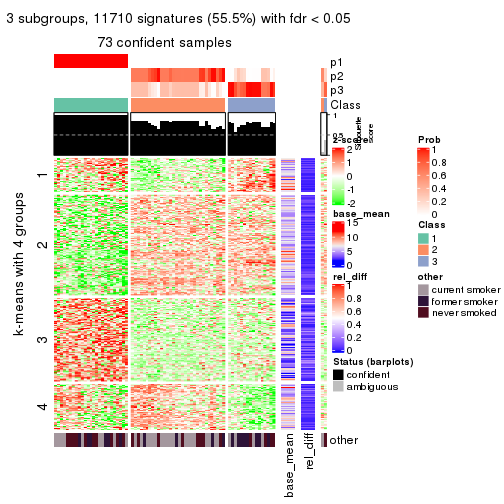
get_signatures(res, k = 4)
get_signatures(res, k = 5)
get_signatures(res, k = 6)
Signature heatmaps where rows are not scaled:
get_signatures(res, k = 2, scale_rows = FALSE)

get_signatures(res, k = 3, scale_rows = FALSE)
get_signatures(res, k = 4, scale_rows = FALSE)
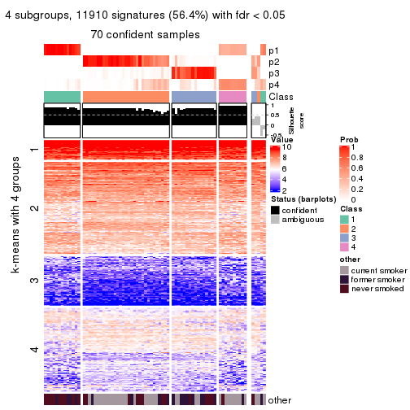
get_signatures(res, k = 5, scale_rows = FALSE)
get_signatures(res, k = 6, scale_rows = FALSE)
Compare the overlap of signatures from different k:
compare_signatures(res)
get_signature() returns a data frame invisibly. TO get the list of signatures, the function
call should be assigned to a variable explicitly. In following code, if plot argument is set
to FALSE, no heatmap is plotted while only the differential analysis is performed.
# code only for demonstration
tb = get_signature(res, k = ..., plot = FALSE)
An example of the output of tb is:
#> which_row fdr mean_1 mean_2 scaled_mean_1 scaled_mean_2 km
#> 1 38 0.042760348 8.373488 9.131774 -0.5533452 0.5164555 1
#> 2 40 0.018707592 7.106213 8.469186 -0.6173731 0.5762149 1
#> 3 55 0.019134737 10.221463 11.207825 -0.6159697 0.5749050 1
#> 4 59 0.006059896 5.921854 7.869574 -0.6899429 0.6439467 1
#> 5 60 0.018055526 8.928898 10.211722 -0.6204761 0.5791110 1
#> 6 98 0.009384629 15.714769 14.887706 0.6635654 -0.6193277 2
...
The columns in tb are:
which_row: row indices corresponding to the input matrix.fdr: FDR for the differential test. mean_x: The mean value in group x.scaled_mean_x: The mean value in group x after rows are scaled.km: Row groups if k-means clustering is applied to rows.UMAP plot which shows how samples are separated.
dimension_reduction(res, k = 2, method = "UMAP")

dimension_reduction(res, k = 3, method = "UMAP")
dimension_reduction(res, k = 4, method = "UMAP")
dimension_reduction(res, k = 5, method = "UMAP")
dimension_reduction(res, k = 6, method = "UMAP")
Following heatmap shows how subgroups are split when increasing k:
collect_classes(res)
Test correlation between subgroups and known annotations. If the known annotation is numeric, one-way ANOVA test is applied, and if the known annotation is discrete, chi-squared contingency table test is applied.
test_to_known_factors(res)
#> n other(p) k
#> MAD:mclust 75 0.409465 2
#> MAD:mclust 73 0.022917 3
#> MAD:mclust 70 0.000146 4
#> MAD:mclust 69 0.000119 5
#> MAD:mclust 63 0.005633 6
If matrix rows can be associated to genes, consider to use functional_enrichment(res,
...) to perform function enrichment for the signature genes. See this vignette for more detailed explanations.
The object with results only for a single top-value method and a single partition method can be extracted as:
res = res_list["MAD", "NMF"]
# you can also extract it by
# res = res_list["MAD:NMF"]
A summary of res and all the functions that can be applied to it:
res
#> A 'ConsensusPartition' object with k = 2, 3, 4, 5, 6.
#> On a matrix with 21104 rows and 75 columns.
#> Top rows (1000, 2000, 3000, 4000, 5000) are extracted by 'MAD' method.
#> Subgroups are detected by 'NMF' method.
#> Performed in total 1250 partitions by row resampling.
#> Best k for subgroups seems to be 2.
#>
#> Following methods can be applied to this 'ConsensusPartition' object:
#> [1] "cola_report" "collect_classes" "collect_plots"
#> [4] "collect_stats" "colnames" "compare_signatures"
#> [7] "consensus_heatmap" "dimension_reduction" "functional_enrichment"
#> [10] "get_anno_col" "get_anno" "get_classes"
#> [13] "get_consensus" "get_matrix" "get_membership"
#> [16] "get_param" "get_signatures" "get_stats"
#> [19] "is_best_k" "is_stable_k" "membership_heatmap"
#> [22] "ncol" "nrow" "plot_ecdf"
#> [25] "rownames" "select_partition_number" "show"
#> [28] "suggest_best_k" "test_to_known_factors"
collect_plots() function collects all the plots made from res for all k (number of partitions)
into one single page to provide an easy and fast comparison between different k.
collect_plots(res)
The plots are:
k and the heatmap of
predicted classes for each k.k.k.k.All the plots in panels can be made by individual functions and they are plotted later in this section.
select_partition_number() produces several plots showing different
statistics for choosing “optimized” k. There are following statistics:
k;k, the area increased is defined as \(A_k - A_{k-1}\).The detailed explanations of these statistics can be found in the cola vignette.
Generally speaking, lower PAC score, higher mean silhouette score or higher
concordance corresponds to better partition. Rand index and Jaccard index
measure how similar the current partition is compared to partition with k-1.
If they are too similar, we won't accept k is better than k-1.
select_partition_number(res)
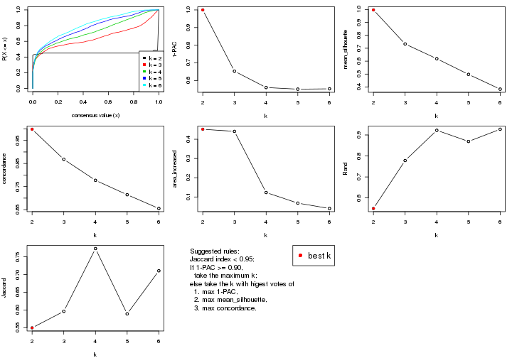
The numeric values for all these statistics can be obtained by get_stats().
get_stats(res)
#> k 1-PAC mean_silhouette concordance area_increased Rand Jaccard
#> 2 2 1.000 0.997 0.998 0.4520 0.550 0.550
#> 3 3 0.653 0.733 0.868 0.4409 0.778 0.596
#> 4 4 0.560 0.619 0.777 0.1231 0.922 0.773
#> 5 5 0.551 0.498 0.715 0.0680 0.869 0.589
#> 6 6 0.553 0.383 0.655 0.0401 0.927 0.711
suggest_best_k() suggests the best \(k\) based on these statistics. The rules are as follows:
suggest_best_k(res)
#> [1] 2
Following shows the table of the partitions (You need to click the show/hide
code output link to see it). The membership matrix (columns with name p*)
is inferred by
clue::cl_consensus()
function with the SE method. Basically the value in the membership matrix
represents the probability to belong to a certain group. The finall class
label for an item is determined with the group with highest probability it
belongs to.
In get_classes() function, the entropy is calculated from the membership
matrix and the silhouette score is calculated from the consensus matrix.
cbind(get_classes(res, k = 2), get_membership(res, k = 2))
#> class entropy silhouette p1 p2
#> GSM15684 1 0.0000 1.000 1.000 0.000
#> GSM15685 1 0.0000 1.000 1.000 0.000
#> GSM15686 1 0.0000 1.000 1.000 0.000
#> GSM15687 1 0.0000 1.000 1.000 0.000
#> GSM15688 1 0.0000 1.000 1.000 0.000
#> GSM15689 1 0.0000 1.000 1.000 0.000
#> GSM15690 1 0.0000 1.000 1.000 0.000
#> GSM15691 1 0.0000 1.000 1.000 0.000
#> GSM15692 1 0.0000 1.000 1.000 0.000
#> GSM15693 2 0.0000 0.998 0.000 1.000
#> GSM15694 2 0.0000 0.998 0.000 1.000
#> GSM15695 2 0.0000 0.998 0.000 1.000
#> GSM15696 2 0.0000 0.998 0.000 1.000
#> GSM15697 2 0.0000 0.998 0.000 1.000
#> GSM15698 2 0.0000 0.998 0.000 1.000
#> GSM15699 2 0.0000 0.998 0.000 1.000
#> GSM15700 2 0.0000 0.998 0.000 1.000
#> GSM15701 2 0.0000 0.998 0.000 1.000
#> GSM15702 2 0.0000 0.998 0.000 1.000
#> GSM15703 2 0.0000 0.998 0.000 1.000
#> GSM15704 2 0.0000 0.998 0.000 1.000
#> GSM15705 2 0.0000 0.998 0.000 1.000
#> GSM15706 2 0.0000 0.998 0.000 1.000
#> GSM15707 2 0.0000 0.998 0.000 1.000
#> GSM15708 2 0.0000 0.998 0.000 1.000
#> GSM15709 2 0.0000 0.998 0.000 1.000
#> GSM15710 2 0.0000 0.998 0.000 1.000
#> GSM15711 2 0.0000 0.998 0.000 1.000
#> GSM15712 2 0.0000 0.998 0.000 1.000
#> GSM15713 2 0.0000 0.998 0.000 1.000
#> GSM15714 2 0.0000 0.998 0.000 1.000
#> GSM15715 2 0.0000 0.998 0.000 1.000
#> GSM15716 2 0.0000 0.998 0.000 1.000
#> GSM15717 2 0.0376 0.994 0.004 0.996
#> GSM15718 1 0.0000 1.000 1.000 0.000
#> GSM15719 2 0.3733 0.924 0.072 0.928
#> GSM15720 1 0.0000 1.000 1.000 0.000
#> GSM15721 1 0.0000 1.000 1.000 0.000
#> GSM15722 1 0.0000 1.000 1.000 0.000
#> GSM15723 1 0.0000 1.000 1.000 0.000
#> GSM15724 1 0.0000 1.000 1.000 0.000
#> GSM15725 1 0.0000 1.000 1.000 0.000
#> GSM15726 1 0.0000 1.000 1.000 0.000
#> GSM15727 1 0.0000 1.000 1.000 0.000
#> GSM15728 1 0.0000 1.000 1.000 0.000
#> GSM15729 2 0.0000 0.998 0.000 1.000
#> GSM15730 2 0.0000 0.998 0.000 1.000
#> GSM15731 2 0.0000 0.998 0.000 1.000
#> GSM15732 2 0.0000 0.998 0.000 1.000
#> GSM15733 2 0.0000 0.998 0.000 1.000
#> GSM15734 2 0.0000 0.998 0.000 1.000
#> GSM15735 2 0.0000 0.998 0.000 1.000
#> GSM15736 2 0.0000 0.998 0.000 1.000
#> GSM15737 2 0.0000 0.998 0.000 1.000
#> GSM15738 2 0.0000 0.998 0.000 1.000
#> GSM15739 2 0.0000 0.998 0.000 1.000
#> GSM15740 2 0.0000 0.998 0.000 1.000
#> GSM15741 1 0.0000 1.000 1.000 0.000
#> GSM15742 1 0.0000 1.000 1.000 0.000
#> GSM15743 1 0.0000 1.000 1.000 0.000
#> GSM15744 1 0.0000 1.000 1.000 0.000
#> GSM15745 1 0.0000 1.000 1.000 0.000
#> GSM15746 1 0.0000 1.000 1.000 0.000
#> GSM15747 2 0.0000 0.998 0.000 1.000
#> GSM15748 2 0.0000 0.998 0.000 1.000
#> GSM15749 2 0.0000 0.998 0.000 1.000
#> GSM15750 2 0.0000 0.998 0.000 1.000
#> GSM15751 2 0.0000 0.998 0.000 1.000
#> GSM15752 2 0.0000 0.998 0.000 1.000
#> GSM15753 2 0.2603 0.955 0.044 0.956
#> GSM15754 2 0.0000 0.998 0.000 1.000
#> GSM15755 2 0.0000 0.998 0.000 1.000
#> GSM15756 2 0.0000 0.998 0.000 1.000
#> GSM15757 2 0.0000 0.998 0.000 1.000
#> GSM15758 2 0.0000 0.998 0.000 1.000
cbind(get_classes(res, k = 3), get_membership(res, k = 3))
#> class entropy silhouette p1 p2 p3
#> GSM15684 1 0.2537 0.9178 0.920 0.080 0.000
#> GSM15685 1 0.0424 0.9410 0.992 0.008 0.000
#> GSM15686 1 0.1267 0.9447 0.972 0.004 0.024
#> GSM15687 1 0.1529 0.9440 0.960 0.000 0.040
#> GSM15688 1 0.2356 0.9366 0.928 0.000 0.072
#> GSM15689 1 0.5016 0.7726 0.760 0.240 0.000
#> GSM15690 1 0.2356 0.9371 0.928 0.000 0.072
#> GSM15691 1 0.1860 0.9425 0.948 0.000 0.052
#> GSM15692 1 0.1015 0.9433 0.980 0.008 0.012
#> GSM15693 2 0.1529 0.8031 0.000 0.960 0.040
#> GSM15694 2 0.2959 0.8110 0.000 0.900 0.100
#> GSM15695 2 0.4002 0.7941 0.000 0.840 0.160
#> GSM15696 3 0.6111 0.3271 0.000 0.396 0.604
#> GSM15697 3 0.6299 0.0541 0.000 0.476 0.524
#> GSM15698 2 0.3038 0.8109 0.000 0.896 0.104
#> GSM15699 2 0.0983 0.7877 0.004 0.980 0.016
#> GSM15700 3 0.4002 0.6963 0.000 0.160 0.840
#> GSM15701 3 0.6309 -0.0400 0.000 0.496 0.504
#> GSM15702 3 0.3038 0.7409 0.000 0.104 0.896
#> GSM15703 2 0.0424 0.7847 0.000 0.992 0.008
#> GSM15704 2 0.6286 0.1538 0.000 0.536 0.464
#> GSM15705 2 0.4121 0.7895 0.000 0.832 0.168
#> GSM15706 2 0.5529 0.6426 0.000 0.704 0.296
#> GSM15707 2 0.5178 0.7054 0.000 0.744 0.256
#> GSM15708 3 0.0661 0.7645 0.008 0.004 0.988
#> GSM15709 3 0.2066 0.7623 0.000 0.060 0.940
#> GSM15710 2 0.5291 0.6898 0.000 0.732 0.268
#> GSM15711 3 0.6286 0.1050 0.000 0.464 0.536
#> GSM15712 3 0.2625 0.7534 0.000 0.084 0.916
#> GSM15713 2 0.6140 0.3851 0.000 0.596 0.404
#> GSM15714 2 0.4062 0.7905 0.000 0.836 0.164
#> GSM15715 3 0.1529 0.7390 0.040 0.000 0.960
#> GSM15716 2 0.1129 0.7911 0.004 0.976 0.020
#> GSM15717 2 0.5443 0.6969 0.004 0.736 0.260
#> GSM15718 1 0.1529 0.9355 0.960 0.040 0.000
#> GSM15719 2 0.3369 0.7799 0.040 0.908 0.052
#> GSM15720 1 0.1289 0.9363 0.968 0.032 0.000
#> GSM15721 1 0.1860 0.9308 0.948 0.052 0.000
#> GSM15722 1 0.3941 0.8721 0.844 0.000 0.156
#> GSM15723 1 0.2448 0.9347 0.924 0.000 0.076
#> GSM15724 1 0.2165 0.9394 0.936 0.000 0.064
#> GSM15725 1 0.3482 0.8884 0.872 0.128 0.000
#> GSM15726 1 0.3340 0.8934 0.880 0.120 0.000
#> GSM15727 1 0.1964 0.9415 0.944 0.000 0.056
#> GSM15728 1 0.3267 0.9084 0.884 0.000 0.116
#> GSM15729 3 0.2537 0.7548 0.000 0.080 0.920
#> GSM15730 3 0.5968 0.4002 0.000 0.364 0.636
#> GSM15731 2 0.2066 0.8077 0.000 0.940 0.060
#> GSM15732 3 0.5363 0.5589 0.000 0.276 0.724
#> GSM15733 3 0.0829 0.7689 0.004 0.012 0.984
#> GSM15734 3 0.6225 0.2198 0.000 0.432 0.568
#> GSM15735 2 0.1643 0.8039 0.000 0.956 0.044
#> GSM15736 3 0.1031 0.7521 0.024 0.000 0.976
#> GSM15737 3 0.1643 0.7354 0.044 0.000 0.956
#> GSM15738 3 0.0747 0.7577 0.016 0.000 0.984
#> GSM15739 3 0.6140 0.3048 0.000 0.404 0.596
#> GSM15740 2 0.6168 0.3669 0.000 0.588 0.412
#> GSM15741 1 0.1289 0.9375 0.968 0.032 0.000
#> GSM15742 1 0.2537 0.9326 0.920 0.000 0.080
#> GSM15743 1 0.0661 0.9428 0.988 0.004 0.008
#> GSM15744 1 0.1860 0.9425 0.948 0.000 0.052
#> GSM15745 1 0.2066 0.9275 0.940 0.060 0.000
#> GSM15746 1 0.1031 0.9444 0.976 0.000 0.024
#> GSM15747 3 0.0592 0.7608 0.012 0.000 0.988
#> GSM15748 2 0.3686 0.8032 0.000 0.860 0.140
#> GSM15749 2 0.1031 0.7958 0.000 0.976 0.024
#> GSM15750 3 0.0892 0.7700 0.000 0.020 0.980
#> GSM15751 3 0.0747 0.7698 0.000 0.016 0.984
#> GSM15752 3 0.1860 0.7651 0.000 0.052 0.948
#> GSM15753 3 0.1529 0.7407 0.040 0.000 0.960
#> GSM15754 3 0.6295 0.0731 0.000 0.472 0.528
#> GSM15755 3 0.0424 0.7689 0.000 0.008 0.992
#> GSM15756 3 0.1525 0.7698 0.004 0.032 0.964
#> GSM15757 3 0.0661 0.7678 0.004 0.008 0.988
#> GSM15758 2 0.1647 0.7483 0.036 0.960 0.004
cbind(get_classes(res, k = 4), get_membership(res, k = 4))
#> class entropy silhouette p1 p2 p3 p4
#> GSM15684 1 0.464 0.7742 0.740 0.020 0.000 0.240
#> GSM15685 1 0.434 0.7903 0.764 0.008 0.004 0.224
#> GSM15686 1 0.349 0.8209 0.824 0.000 0.004 0.172
#> GSM15687 1 0.433 0.7824 0.748 0.000 0.008 0.244
#> GSM15688 1 0.408 0.8102 0.800 0.000 0.020 0.180
#> GSM15689 1 0.554 0.7285 0.688 0.056 0.000 0.256
#> GSM15690 1 0.425 0.7954 0.768 0.000 0.012 0.220
#> GSM15691 1 0.233 0.8382 0.908 0.000 0.004 0.088
#> GSM15692 1 0.527 0.6314 0.608 0.004 0.008 0.380
#> GSM15693 2 0.445 0.6023 0.000 0.776 0.028 0.196
#> GSM15694 2 0.241 0.6888 0.000 0.916 0.064 0.020
#> GSM15695 2 0.292 0.6907 0.000 0.884 0.100 0.016
#> GSM15696 3 0.521 0.4090 0.000 0.328 0.652 0.020
#> GSM15697 2 0.715 0.3194 0.000 0.480 0.384 0.136
#> GSM15698 2 0.643 0.4097 0.004 0.604 0.080 0.312
#> GSM15699 2 0.363 0.5845 0.004 0.824 0.004 0.168
#> GSM15700 3 0.637 0.2598 0.000 0.072 0.556 0.372
#> GSM15701 2 0.576 0.2092 0.000 0.524 0.448 0.028
#> GSM15702 3 0.245 0.7212 0.000 0.072 0.912 0.016
#> GSM15703 2 0.340 0.6101 0.000 0.840 0.008 0.152
#> GSM15704 2 0.647 0.5541 0.000 0.612 0.280 0.108
#> GSM15705 2 0.522 0.6624 0.000 0.756 0.112 0.132
#> GSM15706 2 0.450 0.6681 0.000 0.776 0.192 0.032
#> GSM15707 2 0.438 0.6750 0.000 0.792 0.172 0.036
#> GSM15708 3 0.166 0.7262 0.004 0.000 0.944 0.052
#> GSM15709 3 0.212 0.7287 0.000 0.040 0.932 0.028
#> GSM15710 2 0.445 0.6551 0.000 0.776 0.196 0.028
#> GSM15711 3 0.683 0.1271 0.000 0.368 0.524 0.108
#> GSM15712 3 0.551 0.5418 0.000 0.056 0.692 0.252
#> GSM15713 2 0.594 0.4761 0.000 0.608 0.340 0.052
#> GSM15714 2 0.644 0.2435 0.000 0.548 0.076 0.376
#> GSM15715 3 0.522 0.2584 0.004 0.004 0.584 0.408
#> GSM15716 2 0.181 0.6486 0.000 0.940 0.008 0.052
#> GSM15717 4 0.519 0.6950 0.008 0.180 0.056 0.756
#> GSM15718 1 0.507 0.6891 0.656 0.008 0.004 0.332
#> GSM15719 4 0.524 0.6813 0.028 0.188 0.028 0.756
#> GSM15720 1 0.203 0.8377 0.936 0.028 0.000 0.036
#> GSM15721 1 0.347 0.8192 0.868 0.072 0.000 0.060
#> GSM15722 1 0.316 0.8290 0.884 0.000 0.052 0.064
#> GSM15723 1 0.130 0.8410 0.964 0.000 0.020 0.016
#> GSM15724 1 0.409 0.8018 0.852 0.024 0.048 0.076
#> GSM15725 1 0.441 0.7888 0.808 0.128 0.000 0.064
#> GSM15726 1 0.460 0.7779 0.796 0.132 0.000 0.072
#> GSM15727 1 0.267 0.8261 0.908 0.004 0.020 0.068
#> GSM15728 1 0.232 0.8344 0.924 0.000 0.040 0.036
#> GSM15729 3 0.238 0.7248 0.000 0.068 0.916 0.016
#> GSM15730 3 0.472 0.5289 0.000 0.264 0.720 0.016
#> GSM15731 2 0.223 0.6684 0.000 0.928 0.036 0.036
#> GSM15732 4 0.543 0.6565 0.004 0.088 0.164 0.744
#> GSM15733 4 0.560 0.2360 0.004 0.020 0.380 0.596
#> GSM15734 3 0.568 0.0179 0.000 0.452 0.524 0.024
#> GSM15735 2 0.231 0.6588 0.004 0.928 0.028 0.040
#> GSM15736 3 0.180 0.7208 0.016 0.000 0.944 0.040
#> GSM15737 3 0.249 0.7071 0.020 0.000 0.912 0.068
#> GSM15738 3 0.194 0.7225 0.012 0.000 0.936 0.052
#> GSM15739 3 0.557 0.4509 0.000 0.296 0.660 0.044
#> GSM15740 2 0.757 0.3316 0.000 0.484 0.248 0.268
#> GSM15741 1 0.533 0.4213 0.508 0.004 0.004 0.484
#> GSM15742 1 0.200 0.8427 0.936 0.000 0.020 0.044
#> GSM15743 1 0.119 0.8432 0.968 0.004 0.004 0.024
#> GSM15744 1 0.345 0.8163 0.880 0.016 0.032 0.072
#> GSM15745 1 0.283 0.8419 0.900 0.040 0.000 0.060
#> GSM15746 1 0.166 0.8420 0.944 0.000 0.004 0.052
#> GSM15747 3 0.164 0.7331 0.008 0.004 0.952 0.036
#> GSM15748 4 0.518 0.6845 0.000 0.204 0.060 0.736
#> GSM15749 2 0.405 0.6136 0.000 0.808 0.024 0.168
#> GSM15750 3 0.599 0.0093 0.008 0.024 0.500 0.468
#> GSM15751 3 0.190 0.7258 0.000 0.004 0.932 0.064
#> GSM15752 3 0.379 0.6614 0.000 0.016 0.820 0.164
#> GSM15753 3 0.290 0.7012 0.040 0.016 0.908 0.036
#> GSM15754 3 0.660 -0.1026 0.000 0.440 0.480 0.080
#> GSM15755 3 0.174 0.7298 0.000 0.004 0.940 0.056
#> GSM15756 3 0.203 0.7287 0.000 0.036 0.936 0.028
#> GSM15757 3 0.121 0.7309 0.000 0.000 0.960 0.040
#> GSM15758 4 0.526 0.2968 0.004 0.424 0.004 0.568
cbind(get_classes(res, k = 5), get_membership(res, k = 5))
#> class entropy silhouette p1 p2 p3 p4 p5
#> GSM15684 5 0.529 -0.1174 0.460 0.000 0.000 0.048 0.492
#> GSM15685 5 0.471 0.1000 0.404 0.000 0.004 0.012 0.580
#> GSM15686 1 0.505 0.6323 0.704 0.000 0.000 0.140 0.156
#> GSM15687 1 0.634 0.3635 0.532 0.000 0.004 0.172 0.292
#> GSM15688 1 0.538 0.5903 0.680 0.000 0.004 0.140 0.176
#> GSM15689 5 0.558 0.0285 0.420 0.016 0.000 0.040 0.524
#> GSM15690 1 0.610 0.2942 0.516 0.000 0.004 0.116 0.364
#> GSM15691 1 0.311 0.7202 0.852 0.000 0.000 0.036 0.112
#> GSM15692 1 0.652 0.1308 0.476 0.000 0.000 0.300 0.224
#> GSM15693 2 0.352 0.6719 0.000 0.844 0.008 0.072 0.076
#> GSM15694 2 0.108 0.7020 0.000 0.964 0.028 0.008 0.000
#> GSM15695 2 0.223 0.7024 0.000 0.916 0.056 0.020 0.008
#> GSM15696 3 0.576 0.3527 0.000 0.320 0.600 0.048 0.032
#> GSM15697 2 0.660 0.2597 0.000 0.496 0.268 0.232 0.004
#> GSM15698 2 0.579 0.2883 0.012 0.556 0.048 0.376 0.008
#> GSM15699 2 0.337 0.6713 0.004 0.852 0.008 0.104 0.032
#> GSM15700 4 0.585 0.3721 0.000 0.068 0.356 0.560 0.016
#> GSM15701 3 0.578 0.1674 0.000 0.388 0.536 0.012 0.064
#> GSM15702 3 0.184 0.6843 0.000 0.040 0.936 0.016 0.008
#> GSM15703 2 0.214 0.6881 0.000 0.916 0.000 0.032 0.052
#> GSM15704 2 0.652 0.5280 0.000 0.612 0.204 0.128 0.056
#> GSM15705 2 0.691 0.2722 0.000 0.452 0.140 0.032 0.376
#> GSM15706 2 0.650 0.4568 0.000 0.576 0.260 0.032 0.132
#> GSM15707 2 0.719 0.3247 0.000 0.468 0.272 0.032 0.228
#> GSM15708 3 0.301 0.6313 0.004 0.000 0.824 0.172 0.000
#> GSM15709 3 0.227 0.6736 0.000 0.008 0.916 0.028 0.048
#> GSM15710 2 0.404 0.6626 0.000 0.804 0.140 0.032 0.024
#> GSM15711 3 0.699 0.3741 0.000 0.188 0.544 0.048 0.220
#> GSM15712 3 0.609 0.2460 0.000 0.016 0.504 0.080 0.400
#> GSM15713 3 0.727 0.0916 0.000 0.276 0.432 0.028 0.264
#> GSM15714 5 0.573 0.2790 0.000 0.172 0.072 0.064 0.692
#> GSM15715 4 0.538 0.2020 0.000 0.000 0.424 0.520 0.056
#> GSM15716 2 0.121 0.6931 0.000 0.960 0.000 0.024 0.016
#> GSM15717 5 0.541 0.2788 0.004 0.064 0.016 0.240 0.676
#> GSM15718 1 0.654 0.0160 0.444 0.004 0.000 0.172 0.380
#> GSM15719 4 0.705 0.1454 0.008 0.180 0.016 0.468 0.328
#> GSM15720 1 0.247 0.7579 0.908 0.012 0.000 0.040 0.040
#> GSM15721 1 0.332 0.7364 0.868 0.052 0.000 0.036 0.044
#> GSM15722 1 0.428 0.6841 0.788 0.000 0.024 0.148 0.040
#> GSM15723 1 0.261 0.7586 0.896 0.004 0.000 0.056 0.044
#> GSM15724 1 0.335 0.7331 0.868 0.004 0.024 0.064 0.040
#> GSM15725 1 0.373 0.7185 0.840 0.084 0.000 0.048 0.028
#> GSM15726 1 0.414 0.6944 0.812 0.104 0.000 0.056 0.028
#> GSM15727 1 0.254 0.7472 0.908 0.008 0.008 0.052 0.024
#> GSM15728 1 0.234 0.7535 0.916 0.000 0.016 0.036 0.032
#> GSM15729 3 0.281 0.6849 0.004 0.036 0.896 0.048 0.016
#> GSM15730 3 0.367 0.6152 0.000 0.176 0.800 0.012 0.012
#> GSM15731 2 0.223 0.6885 0.008 0.924 0.008 0.036 0.024
#> GSM15732 4 0.521 0.5895 0.008 0.064 0.076 0.760 0.092
#> GSM15733 4 0.460 0.6382 0.004 0.016 0.176 0.760 0.044
#> GSM15734 2 0.617 0.4639 0.004 0.604 0.268 0.104 0.020
#> GSM15735 2 0.211 0.6884 0.004 0.928 0.008 0.036 0.024
#> GSM15736 3 0.301 0.6496 0.008 0.000 0.856 0.124 0.012
#> GSM15737 3 0.400 0.5205 0.008 0.000 0.740 0.244 0.008
#> GSM15738 3 0.351 0.5919 0.008 0.000 0.792 0.196 0.004
#> GSM15739 3 0.604 0.5389 0.004 0.172 0.676 0.060 0.088
#> GSM15740 5 0.837 -0.0687 0.000 0.284 0.208 0.164 0.344
#> GSM15741 5 0.673 0.1783 0.308 0.000 0.000 0.276 0.416
#> GSM15742 1 0.243 0.7566 0.900 0.000 0.000 0.064 0.036
#> GSM15743 1 0.226 0.7560 0.912 0.004 0.000 0.024 0.060
#> GSM15744 1 0.373 0.7299 0.848 0.004 0.032 0.068 0.048
#> GSM15745 1 0.315 0.7518 0.872 0.016 0.000 0.048 0.064
#> GSM15746 1 0.337 0.7112 0.828 0.000 0.000 0.032 0.140
#> GSM15747 3 0.242 0.6777 0.000 0.000 0.896 0.080 0.024
#> GSM15748 4 0.608 0.4882 0.004 0.216 0.036 0.648 0.096
#> GSM15749 2 0.230 0.6884 0.000 0.908 0.004 0.068 0.020
#> GSM15750 4 0.469 0.6184 0.016 0.048 0.196 0.740 0.000
#> GSM15751 3 0.260 0.6476 0.000 0.000 0.852 0.148 0.000
#> GSM15752 3 0.483 -0.0912 0.000 0.020 0.504 0.476 0.000
#> GSM15753 3 0.366 0.6515 0.032 0.012 0.856 0.068 0.032
#> GSM15754 2 0.648 0.0960 0.000 0.448 0.436 0.080 0.036
#> GSM15755 3 0.189 0.6809 0.000 0.000 0.920 0.072 0.008
#> GSM15756 3 0.139 0.6837 0.000 0.008 0.956 0.024 0.012
#> GSM15757 3 0.219 0.6777 0.000 0.000 0.904 0.084 0.012
#> GSM15758 5 0.608 0.2539 0.004 0.212 0.004 0.172 0.608
cbind(get_classes(res, k = 6), get_membership(res, k = 6))
#> class entropy silhouette p1 p2 p3 p4 p5 p6
#> GSM15684 1 0.684 -0.32209 0.384 0.008 0.004 0.364 0.212 0.028
#> GSM15685 4 0.648 -0.38574 0.344 0.000 0.004 0.420 0.212 0.020
#> GSM15686 1 0.696 -0.03333 0.512 0.008 0.016 0.052 0.240 0.172
#> GSM15687 1 0.719 -0.38002 0.412 0.004 0.008 0.076 0.332 0.168
#> GSM15688 1 0.604 0.19479 0.600 0.000 0.000 0.084 0.208 0.108
#> GSM15689 4 0.669 -0.48300 0.348 0.004 0.000 0.384 0.236 0.028
#> GSM15690 5 0.622 0.00000 0.304 0.000 0.004 0.088 0.536 0.068
#> GSM15691 1 0.461 0.48592 0.748 0.000 0.004 0.088 0.128 0.032
#> GSM15692 1 0.676 0.07593 0.500 0.000 0.000 0.204 0.088 0.208
#> GSM15693 2 0.420 0.61360 0.000 0.768 0.004 0.144 0.016 0.068
#> GSM15694 2 0.143 0.66522 0.000 0.952 0.016 0.016 0.008 0.008
#> GSM15695 2 0.248 0.66439 0.004 0.904 0.032 0.008 0.040 0.012
#> GSM15696 2 0.691 0.17153 0.000 0.432 0.368 0.024 0.116 0.060
#> GSM15697 2 0.648 0.25741 0.000 0.508 0.120 0.012 0.048 0.312
#> GSM15698 2 0.507 0.19776 0.004 0.512 0.016 0.008 0.020 0.440
#> GSM15699 2 0.366 0.61493 0.000 0.804 0.004 0.020 0.028 0.144
#> GSM15700 6 0.634 0.57879 0.000 0.084 0.208 0.028 0.076 0.604
#> GSM15701 3 0.668 -0.11503 0.000 0.392 0.428 0.100 0.068 0.012
#> GSM15702 3 0.273 0.66771 0.000 0.020 0.888 0.008 0.040 0.044
#> GSM15703 2 0.342 0.62785 0.000 0.824 0.004 0.128 0.020 0.024
#> GSM15704 2 0.696 0.52945 0.000 0.584 0.112 0.076 0.096 0.132
#> GSM15705 4 0.714 -0.08110 0.000 0.340 0.116 0.420 0.112 0.012
#> GSM15706 2 0.690 0.25924 0.000 0.428 0.312 0.196 0.060 0.004
#> GSM15707 2 0.762 0.17479 0.000 0.364 0.260 0.236 0.132 0.008
#> GSM15708 3 0.336 0.60522 0.000 0.000 0.792 0.012 0.012 0.184
#> GSM15709 3 0.288 0.65354 0.000 0.004 0.872 0.048 0.064 0.012
#> GSM15710 2 0.508 0.59062 0.016 0.720 0.172 0.036 0.048 0.008
#> GSM15711 3 0.699 0.16874 0.000 0.148 0.440 0.328 0.072 0.012
#> GSM15712 4 0.590 -0.13982 0.000 0.028 0.412 0.484 0.056 0.020
#> GSM15713 3 0.731 0.10981 0.000 0.136 0.420 0.296 0.140 0.008
#> GSM15714 4 0.584 0.29404 0.000 0.108 0.072 0.656 0.152 0.012
#> GSM15715 6 0.553 0.19017 0.000 0.000 0.420 0.092 0.012 0.476
#> GSM15716 2 0.384 0.62874 0.012 0.820 0.004 0.100 0.036 0.028
#> GSM15717 4 0.326 0.34074 0.000 0.024 0.020 0.844 0.008 0.104
#> GSM15718 4 0.709 -0.16042 0.336 0.004 0.000 0.412 0.132 0.116
#> GSM15719 4 0.670 -0.00171 0.012 0.148 0.000 0.448 0.044 0.348
#> GSM15720 1 0.255 0.59298 0.892 0.032 0.000 0.012 0.060 0.004
#> GSM15721 1 0.439 0.52964 0.772 0.100 0.004 0.008 0.100 0.016
#> GSM15722 1 0.593 0.41677 0.640 0.000 0.048 0.016 0.160 0.136
#> GSM15723 1 0.337 0.57629 0.824 0.000 0.012 0.000 0.120 0.044
#> GSM15724 1 0.427 0.53903 0.780 0.032 0.040 0.008 0.136 0.004
#> GSM15725 1 0.497 0.48256 0.720 0.140 0.000 0.012 0.104 0.024
#> GSM15726 1 0.444 0.50894 0.756 0.132 0.004 0.012 0.092 0.004
#> GSM15727 1 0.290 0.57765 0.864 0.012 0.016 0.004 0.100 0.004
#> GSM15728 1 0.373 0.55586 0.800 0.000 0.024 0.008 0.148 0.020
#> GSM15729 3 0.280 0.66637 0.000 0.028 0.876 0.000 0.064 0.032
#> GSM15730 3 0.439 0.57312 0.000 0.176 0.752 0.032 0.024 0.016
#> GSM15731 2 0.248 0.65220 0.008 0.904 0.008 0.008 0.028 0.044
#> GSM15732 6 0.552 0.49579 0.004 0.104 0.024 0.160 0.024 0.684
#> GSM15733 6 0.465 0.59739 0.000 0.032 0.084 0.100 0.020 0.764
#> GSM15734 2 0.581 0.57953 0.012 0.676 0.144 0.012 0.056 0.100
#> GSM15735 2 0.231 0.64954 0.008 0.908 0.000 0.008 0.040 0.036
#> GSM15736 3 0.349 0.61722 0.004 0.004 0.812 0.004 0.032 0.144
#> GSM15737 3 0.422 0.51303 0.000 0.000 0.720 0.012 0.040 0.228
#> GSM15738 3 0.365 0.54491 0.000 0.004 0.748 0.004 0.012 0.232
#> GSM15739 3 0.699 0.39125 0.000 0.156 0.548 0.184 0.064 0.048
#> GSM15740 4 0.671 0.30222 0.000 0.192 0.148 0.564 0.024 0.072
#> GSM15741 4 0.706 -0.10746 0.284 0.000 0.000 0.428 0.100 0.188
#> GSM15742 1 0.424 0.50299 0.764 0.008 0.008 0.004 0.160 0.056
#> GSM15743 1 0.265 0.57439 0.876 0.000 0.004 0.028 0.088 0.004
#> GSM15744 1 0.342 0.56361 0.816 0.004 0.032 0.008 0.140 0.000
#> GSM15745 1 0.407 0.56485 0.804 0.016 0.000 0.060 0.092 0.028
#> GSM15746 1 0.439 0.45385 0.740 0.000 0.000 0.096 0.152 0.012
#> GSM15747 3 0.436 0.62202 0.000 0.000 0.760 0.040 0.060 0.140
#> GSM15748 6 0.548 0.38354 0.004 0.244 0.004 0.104 0.016 0.628
#> GSM15749 2 0.344 0.64534 0.000 0.828 0.004 0.060 0.008 0.100
#> GSM15750 6 0.417 0.62828 0.004 0.068 0.104 0.000 0.036 0.788
#> GSM15751 3 0.380 0.58158 0.000 0.000 0.756 0.012 0.024 0.208
#> GSM15752 6 0.569 0.35646 0.000 0.036 0.364 0.012 0.048 0.540
#> GSM15753 3 0.323 0.63877 0.040 0.004 0.852 0.000 0.080 0.024
#> GSM15754 2 0.678 0.34664 0.000 0.492 0.320 0.064 0.028 0.096
#> GSM15755 3 0.288 0.66409 0.000 0.000 0.868 0.020 0.036 0.076
#> GSM15756 3 0.121 0.67434 0.000 0.008 0.960 0.004 0.020 0.008
#> GSM15757 3 0.320 0.65490 0.000 0.000 0.852 0.028 0.056 0.064
#> GSM15758 4 0.468 0.36777 0.004 0.168 0.000 0.708 0.004 0.116
Heatmaps for the consensus matrix. It visualizes the probability of two samples to be in a same group.
consensus_heatmap(res, k = 2)
consensus_heatmap(res, k = 3)

consensus_heatmap(res, k = 4)
consensus_heatmap(res, k = 5)

consensus_heatmap(res, k = 6)
Heatmaps for the membership of samples in all partitions to see how consistent they are:
membership_heatmap(res, k = 2)
membership_heatmap(res, k = 3)
membership_heatmap(res, k = 4)
membership_heatmap(res, k = 5)
membership_heatmap(res, k = 6)
As soon as we have had the classes for columns, we can look for signatures which are significantly different between classes which can be candidate marks for certain classes. Following are the heatmaps for signatures.
Signature heatmaps where rows are scaled:
get_signatures(res, k = 2)
get_signatures(res, k = 3)
get_signatures(res, k = 4)
get_signatures(res, k = 5)
get_signatures(res, k = 6)
Signature heatmaps where rows are not scaled:
get_signatures(res, k = 2, scale_rows = FALSE)
get_signatures(res, k = 3, scale_rows = FALSE)
get_signatures(res, k = 4, scale_rows = FALSE)
get_signatures(res, k = 5, scale_rows = FALSE)
get_signatures(res, k = 6, scale_rows = FALSE)
Compare the overlap of signatures from different k:
compare_signatures(res)
get_signature() returns a data frame invisibly. TO get the list of signatures, the function
call should be assigned to a variable explicitly. In following code, if plot argument is set
to FALSE, no heatmap is plotted while only the differential analysis is performed.
# code only for demonstration
tb = get_signature(res, k = ..., plot = FALSE)
An example of the output of tb is:
#> which_row fdr mean_1 mean_2 scaled_mean_1 scaled_mean_2 km
#> 1 38 0.042760348 8.373488 9.131774 -0.5533452 0.5164555 1
#> 2 40 0.018707592 7.106213 8.469186 -0.6173731 0.5762149 1
#> 3 55 0.019134737 10.221463 11.207825 -0.6159697 0.5749050 1
#> 4 59 0.006059896 5.921854 7.869574 -0.6899429 0.6439467 1
#> 5 60 0.018055526 8.928898 10.211722 -0.6204761 0.5791110 1
#> 6 98 0.009384629 15.714769 14.887706 0.6635654 -0.6193277 2
...
The columns in tb are:
which_row: row indices corresponding to the input matrix.fdr: FDR for the differential test. mean_x: The mean value in group x.scaled_mean_x: The mean value in group x after rows are scaled.km: Row groups if k-means clustering is applied to rows.UMAP plot which shows how samples are separated.
dimension_reduction(res, k = 2, method = "UMAP")
dimension_reduction(res, k = 3, method = "UMAP")
dimension_reduction(res, k = 4, method = "UMAP")
dimension_reduction(res, k = 5, method = "UMAP")
dimension_reduction(res, k = 6, method = "UMAP")
Following heatmap shows how subgroups are split when increasing k:
collect_classes(res)
Test correlation between subgroups and known annotations. If the known annotation is numeric, one-way ANOVA test is applied, and if the known annotation is discrete, chi-squared contingency table test is applied.
test_to_known_factors(res)
#> n other(p) k
#> MAD:NMF 75 0.4095 2
#> MAD:NMF 64 0.0833 3
#> MAD:NMF 58 0.0511 4
#> MAD:NMF 46 0.0360 5
#> MAD:NMF 40 0.0280 6
If matrix rows can be associated to genes, consider to use functional_enrichment(res,
...) to perform function enrichment for the signature genes. See this vignette for more detailed explanations.
The object with results only for a single top-value method and a single partition method can be extracted as:
res = res_list["ATC", "hclust"]
# you can also extract it by
# res = res_list["ATC:hclust"]
A summary of res and all the functions that can be applied to it:
res
#> A 'ConsensusPartition' object with k = 2, 3, 4, 5, 6.
#> On a matrix with 21104 rows and 75 columns.
#> Top rows (1000, 2000, 3000, 4000, 5000) are extracted by 'ATC' method.
#> Subgroups are detected by 'hclust' method.
#> Performed in total 1250 partitions by row resampling.
#> Best k for subgroups seems to be 3.
#>
#> Following methods can be applied to this 'ConsensusPartition' object:
#> [1] "cola_report" "collect_classes" "collect_plots"
#> [4] "collect_stats" "colnames" "compare_signatures"
#> [7] "consensus_heatmap" "dimension_reduction" "functional_enrichment"
#> [10] "get_anno_col" "get_anno" "get_classes"
#> [13] "get_consensus" "get_matrix" "get_membership"
#> [16] "get_param" "get_signatures" "get_stats"
#> [19] "is_best_k" "is_stable_k" "membership_heatmap"
#> [22] "ncol" "nrow" "plot_ecdf"
#> [25] "rownames" "select_partition_number" "show"
#> [28] "suggest_best_k" "test_to_known_factors"
collect_plots() function collects all the plots made from res for all k (number of partitions)
into one single page to provide an easy and fast comparison between different k.
collect_plots(res)
The plots are:
k and the heatmap of
predicted classes for each k.k.k.k.All the plots in panels can be made by individual functions and they are plotted later in this section.
select_partition_number() produces several plots showing different
statistics for choosing “optimized” k. There are following statistics:
k;k, the area increased is defined as \(A_k - A_{k-1}\).The detailed explanations of these statistics can be found in the cola vignette.
Generally speaking, lower PAC score, higher mean silhouette score or higher
concordance corresponds to better partition. Rand index and Jaccard index
measure how similar the current partition is compared to partition with k-1.
If they are too similar, we won't accept k is better than k-1.
select_partition_number(res)
The numeric values for all these statistics can be obtained by get_stats().
get_stats(res)
#> k 1-PAC mean_silhouette concordance area_increased Rand Jaccard
#> 2 2 1.000 1.000 1.000 0.4510 0.550 0.550
#> 3 3 0.961 0.956 0.978 0.2983 0.867 0.758
#> 4 4 0.870 0.913 0.947 0.0723 0.959 0.901
#> 5 5 0.844 0.881 0.929 0.0251 0.988 0.967
#> 6 6 0.854 0.879 0.916 0.0139 0.997 0.992
suggest_best_k() suggests the best \(k\) based on these statistics. The rules are as follows:
suggest_best_k(res)
#> [1] 3
#> attr(,"optional")
#> [1] 2
There is also optional best \(k\) = 2 that is worth to check.
Following shows the table of the partitions (You need to click the show/hide
code output link to see it). The membership matrix (columns with name p*)
is inferred by
clue::cl_consensus()
function with the SE method. Basically the value in the membership matrix
represents the probability to belong to a certain group. The finall class
label for an item is determined with the group with highest probability it
belongs to.
In get_classes() function, the entropy is calculated from the membership
matrix and the silhouette score is calculated from the consensus matrix.
cbind(get_classes(res, k = 2), get_membership(res, k = 2))
#> class entropy silhouette p1 p2
#> GSM15684 1 0 1 1 0
#> GSM15685 1 0 1 1 0
#> GSM15686 1 0 1 1 0
#> GSM15687 1 0 1 1 0
#> GSM15688 1 0 1 1 0
#> GSM15689 1 0 1 1 0
#> GSM15690 1 0 1 1 0
#> GSM15691 1 0 1 1 0
#> GSM15692 1 0 1 1 0
#> GSM15693 2 0 1 0 1
#> GSM15694 2 0 1 0 1
#> GSM15695 2 0 1 0 1
#> GSM15696 2 0 1 0 1
#> GSM15697 2 0 1 0 1
#> GSM15698 2 0 1 0 1
#> GSM15699 2 0 1 0 1
#> GSM15700 2 0 1 0 1
#> GSM15701 2 0 1 0 1
#> GSM15702 2 0 1 0 1
#> GSM15703 2 0 1 0 1
#> GSM15704 2 0 1 0 1
#> GSM15705 2 0 1 0 1
#> GSM15706 2 0 1 0 1
#> GSM15707 2 0 1 0 1
#> GSM15708 2 0 1 0 1
#> GSM15709 2 0 1 0 1
#> GSM15710 2 0 1 0 1
#> GSM15711 2 0 1 0 1
#> GSM15712 2 0 1 0 1
#> GSM15713 2 0 1 0 1
#> GSM15714 2 0 1 0 1
#> GSM15715 2 0 1 0 1
#> GSM15716 2 0 1 0 1
#> GSM15717 2 0 1 0 1
#> GSM15718 1 0 1 1 0
#> GSM15719 2 0 1 0 1
#> GSM15720 1 0 1 1 0
#> GSM15721 1 0 1 1 0
#> GSM15722 1 0 1 1 0
#> GSM15723 1 0 1 1 0
#> GSM15724 1 0 1 1 0
#> GSM15725 1 0 1 1 0
#> GSM15726 1 0 1 1 0
#> GSM15727 1 0 1 1 0
#> GSM15728 1 0 1 1 0
#> GSM15729 2 0 1 0 1
#> GSM15730 2 0 1 0 1
#> GSM15731 2 0 1 0 1
#> GSM15732 2 0 1 0 1
#> GSM15733 2 0 1 0 1
#> GSM15734 2 0 1 0 1
#> GSM15735 2 0 1 0 1
#> GSM15736 2 0 1 0 1
#> GSM15737 2 0 1 0 1
#> GSM15738 2 0 1 0 1
#> GSM15739 2 0 1 0 1
#> GSM15740 2 0 1 0 1
#> GSM15741 1 0 1 1 0
#> GSM15742 1 0 1 1 0
#> GSM15743 1 0 1 1 0
#> GSM15744 1 0 1 1 0
#> GSM15745 1 0 1 1 0
#> GSM15746 1 0 1 1 0
#> GSM15747 2 0 1 0 1
#> GSM15748 2 0 1 0 1
#> GSM15749 2 0 1 0 1
#> GSM15750 2 0 1 0 1
#> GSM15751 2 0 1 0 1
#> GSM15752 2 0 1 0 1
#> GSM15753 2 0 1 0 1
#> GSM15754 2 0 1 0 1
#> GSM15755 2 0 1 0 1
#> GSM15756 2 0 1 0 1
#> GSM15757 2 0 1 0 1
#> GSM15758 2 0 1 0 1
cbind(get_classes(res, k = 3), get_membership(res, k = 3))
#> class entropy silhouette p1 p2 p3
#> GSM15684 1 0.0000 1.000 1 0.000 0.000
#> GSM15685 1 0.0000 1.000 1 0.000 0.000
#> GSM15686 1 0.0000 1.000 1 0.000 0.000
#> GSM15687 1 0.0000 1.000 1 0.000 0.000
#> GSM15688 1 0.0000 1.000 1 0.000 0.000
#> GSM15689 1 0.0000 1.000 1 0.000 0.000
#> GSM15690 1 0.0000 1.000 1 0.000 0.000
#> GSM15691 1 0.0000 1.000 1 0.000 0.000
#> GSM15692 1 0.0000 1.000 1 0.000 0.000
#> GSM15693 2 0.0000 0.971 0 1.000 0.000
#> GSM15694 2 0.0000 0.971 0 1.000 0.000
#> GSM15695 2 0.0000 0.971 0 1.000 0.000
#> GSM15696 2 0.0000 0.971 0 1.000 0.000
#> GSM15697 2 0.1411 0.942 0 0.964 0.036
#> GSM15698 2 0.0000 0.971 0 1.000 0.000
#> GSM15699 2 0.0000 0.971 0 1.000 0.000
#> GSM15700 2 0.0000 0.971 0 1.000 0.000
#> GSM15701 2 0.0000 0.971 0 1.000 0.000
#> GSM15702 2 0.0000 0.971 0 1.000 0.000
#> GSM15703 2 0.0000 0.971 0 1.000 0.000
#> GSM15704 2 0.0000 0.971 0 1.000 0.000
#> GSM15705 2 0.0000 0.971 0 1.000 0.000
#> GSM15706 2 0.0000 0.971 0 1.000 0.000
#> GSM15707 2 0.0000 0.971 0 1.000 0.000
#> GSM15708 3 0.2165 0.933 0 0.064 0.936
#> GSM15709 2 0.4399 0.774 0 0.812 0.188
#> GSM15710 2 0.0000 0.971 0 1.000 0.000
#> GSM15711 2 0.0000 0.971 0 1.000 0.000
#> GSM15712 2 0.0892 0.956 0 0.980 0.020
#> GSM15713 2 0.0000 0.971 0 1.000 0.000
#> GSM15714 2 0.0000 0.971 0 1.000 0.000
#> GSM15715 3 0.2165 0.933 0 0.064 0.936
#> GSM15716 2 0.0000 0.971 0 1.000 0.000
#> GSM15717 2 0.0000 0.971 0 1.000 0.000
#> GSM15718 1 0.0000 1.000 1 0.000 0.000
#> GSM15719 2 0.0000 0.971 0 1.000 0.000
#> GSM15720 1 0.0000 1.000 1 0.000 0.000
#> GSM15721 1 0.0000 1.000 1 0.000 0.000
#> GSM15722 1 0.0000 1.000 1 0.000 0.000
#> GSM15723 1 0.0000 1.000 1 0.000 0.000
#> GSM15724 1 0.0000 1.000 1 0.000 0.000
#> GSM15725 1 0.0000 1.000 1 0.000 0.000
#> GSM15726 1 0.0000 1.000 1 0.000 0.000
#> GSM15727 1 0.0000 1.000 1 0.000 0.000
#> GSM15728 1 0.0000 1.000 1 0.000 0.000
#> GSM15729 2 0.0000 0.971 0 1.000 0.000
#> GSM15730 2 0.0000 0.971 0 1.000 0.000
#> GSM15731 2 0.0000 0.971 0 1.000 0.000
#> GSM15732 2 0.0000 0.971 0 1.000 0.000
#> GSM15733 3 0.5678 0.570 0 0.316 0.684
#> GSM15734 2 0.0000 0.971 0 1.000 0.000
#> GSM15735 2 0.0000 0.971 0 1.000 0.000
#> GSM15736 3 0.0424 0.909 0 0.008 0.992
#> GSM15737 3 0.0000 0.904 0 0.000 1.000
#> GSM15738 3 0.0000 0.904 0 0.000 1.000
#> GSM15739 2 0.0000 0.971 0 1.000 0.000
#> GSM15740 2 0.0000 0.971 0 1.000 0.000
#> GSM15741 1 0.0000 1.000 1 0.000 0.000
#> GSM15742 1 0.0000 1.000 1 0.000 0.000
#> GSM15743 1 0.0000 1.000 1 0.000 0.000
#> GSM15744 1 0.0000 1.000 1 0.000 0.000
#> GSM15745 1 0.0000 1.000 1 0.000 0.000
#> GSM15746 1 0.0000 1.000 1 0.000 0.000
#> GSM15747 2 0.4605 0.751 0 0.796 0.204
#> GSM15748 2 0.0000 0.971 0 1.000 0.000
#> GSM15749 2 0.0000 0.971 0 1.000 0.000
#> GSM15750 2 0.1529 0.940 0 0.960 0.040
#> GSM15751 3 0.2165 0.933 0 0.064 0.936
#> GSM15752 3 0.2165 0.933 0 0.064 0.936
#> GSM15753 2 0.4346 0.780 0 0.816 0.184
#> GSM15754 2 0.0000 0.971 0 1.000 0.000
#> GSM15755 3 0.2066 0.933 0 0.060 0.940
#> GSM15756 2 0.4399 0.774 0 0.812 0.188
#> GSM15757 2 0.4346 0.780 0 0.816 0.184
#> GSM15758 2 0.0000 0.971 0 1.000 0.000
cbind(get_classes(res, k = 4), get_membership(res, k = 4))
#> class entropy silhouette p1 p2 p3 p4
#> GSM15684 1 0.0336 0.900 0.992 0.000 0.000 0.008
#> GSM15685 1 0.0336 0.900 0.992 0.000 0.000 0.008
#> GSM15686 1 0.0336 0.900 0.992 0.000 0.000 0.008
#> GSM15687 1 0.0336 0.900 0.992 0.000 0.000 0.008
#> GSM15688 4 0.1637 0.912 0.060 0.000 0.000 0.940
#> GSM15689 1 0.0469 0.906 0.988 0.000 0.000 0.012
#> GSM15690 4 0.3486 0.847 0.188 0.000 0.000 0.812
#> GSM15691 1 0.0707 0.908 0.980 0.000 0.000 0.020
#> GSM15692 4 0.0336 0.894 0.008 0.000 0.000 0.992
#> GSM15693 2 0.0000 0.971 0.000 1.000 0.000 0.000
#> GSM15694 2 0.0000 0.971 0.000 1.000 0.000 0.000
#> GSM15695 2 0.0000 0.971 0.000 1.000 0.000 0.000
#> GSM15696 2 0.0000 0.971 0.000 1.000 0.000 0.000
#> GSM15697 2 0.1118 0.942 0.000 0.964 0.036 0.000
#> GSM15698 2 0.0000 0.971 0.000 1.000 0.000 0.000
#> GSM15699 2 0.0000 0.971 0.000 1.000 0.000 0.000
#> GSM15700 2 0.0000 0.971 0.000 1.000 0.000 0.000
#> GSM15701 2 0.0000 0.971 0.000 1.000 0.000 0.000
#> GSM15702 2 0.0000 0.971 0.000 1.000 0.000 0.000
#> GSM15703 2 0.0000 0.971 0.000 1.000 0.000 0.000
#> GSM15704 2 0.0000 0.971 0.000 1.000 0.000 0.000
#> GSM15705 2 0.0000 0.971 0.000 1.000 0.000 0.000
#> GSM15706 2 0.0000 0.971 0.000 1.000 0.000 0.000
#> GSM15707 2 0.0000 0.971 0.000 1.000 0.000 0.000
#> GSM15708 3 0.1716 0.897 0.000 0.064 0.936 0.000
#> GSM15709 2 0.3486 0.774 0.000 0.812 0.188 0.000
#> GSM15710 2 0.0000 0.971 0.000 1.000 0.000 0.000
#> GSM15711 2 0.0000 0.971 0.000 1.000 0.000 0.000
#> GSM15712 2 0.0707 0.956 0.000 0.980 0.020 0.000
#> GSM15713 2 0.0000 0.971 0.000 1.000 0.000 0.000
#> GSM15714 2 0.0000 0.971 0.000 1.000 0.000 0.000
#> GSM15715 3 0.1716 0.897 0.000 0.064 0.936 0.000
#> GSM15716 2 0.0000 0.971 0.000 1.000 0.000 0.000
#> GSM15717 2 0.0000 0.971 0.000 1.000 0.000 0.000
#> GSM15718 1 0.0336 0.900 0.992 0.000 0.000 0.008
#> GSM15719 2 0.0000 0.971 0.000 1.000 0.000 0.000
#> GSM15720 1 0.4040 0.787 0.752 0.000 0.000 0.248
#> GSM15721 1 0.2814 0.891 0.868 0.000 0.000 0.132
#> GSM15722 4 0.3172 0.875 0.160 0.000 0.000 0.840
#> GSM15723 1 0.2408 0.907 0.896 0.000 0.000 0.104
#> GSM15724 1 0.2345 0.893 0.900 0.000 0.000 0.100
#> GSM15725 1 0.2921 0.887 0.860 0.000 0.000 0.140
#> GSM15726 1 0.2814 0.891 0.868 0.000 0.000 0.132
#> GSM15727 1 0.2408 0.906 0.896 0.000 0.000 0.104
#> GSM15728 4 0.0336 0.894 0.008 0.000 0.000 0.992
#> GSM15729 2 0.0000 0.971 0.000 1.000 0.000 0.000
#> GSM15730 2 0.0000 0.971 0.000 1.000 0.000 0.000
#> GSM15731 2 0.0000 0.971 0.000 1.000 0.000 0.000
#> GSM15732 2 0.0000 0.971 0.000 1.000 0.000 0.000
#> GSM15733 3 0.4500 0.516 0.000 0.316 0.684 0.000
#> GSM15734 2 0.0000 0.971 0.000 1.000 0.000 0.000
#> GSM15735 2 0.0000 0.971 0.000 1.000 0.000 0.000
#> GSM15736 3 0.0336 0.859 0.000 0.008 0.992 0.000
#> GSM15737 3 0.0000 0.850 0.000 0.000 1.000 0.000
#> GSM15738 3 0.0000 0.850 0.000 0.000 1.000 0.000
#> GSM15739 2 0.0000 0.971 0.000 1.000 0.000 0.000
#> GSM15740 2 0.0000 0.971 0.000 1.000 0.000 0.000
#> GSM15741 4 0.2281 0.899 0.096 0.000 0.000 0.904
#> GSM15742 1 0.3942 0.802 0.764 0.000 0.000 0.236
#> GSM15743 1 0.2704 0.901 0.876 0.000 0.000 0.124
#> GSM15744 1 0.2814 0.876 0.868 0.000 0.000 0.132
#> GSM15745 1 0.2973 0.885 0.856 0.000 0.000 0.144
#> GSM15746 1 0.2281 0.907 0.904 0.000 0.000 0.096
#> GSM15747 2 0.3649 0.751 0.000 0.796 0.204 0.000
#> GSM15748 2 0.0000 0.971 0.000 1.000 0.000 0.000
#> GSM15749 2 0.0000 0.971 0.000 1.000 0.000 0.000
#> GSM15750 2 0.1211 0.940 0.000 0.960 0.040 0.000
#> GSM15751 3 0.1716 0.897 0.000 0.064 0.936 0.000
#> GSM15752 3 0.1716 0.897 0.000 0.064 0.936 0.000
#> GSM15753 2 0.3444 0.780 0.000 0.816 0.184 0.000
#> GSM15754 2 0.0000 0.971 0.000 1.000 0.000 0.000
#> GSM15755 3 0.1637 0.896 0.000 0.060 0.940 0.000
#> GSM15756 2 0.3486 0.774 0.000 0.812 0.188 0.000
#> GSM15757 2 0.3444 0.780 0.000 0.816 0.184 0.000
#> GSM15758 2 0.0000 0.971 0.000 1.000 0.000 0.000
cbind(get_classes(res, k = 5), get_membership(res, k = 5))
#> class entropy silhouette p1 p2 p3 p4 p5
#> GSM15684 1 0.3395 0.697 0.764 0.000 0.000 0.000 0.236
#> GSM15685 1 0.3395 0.697 0.764 0.000 0.000 0.000 0.236
#> GSM15686 5 0.2891 0.903 0.176 0.000 0.000 0.000 0.824
#> GSM15687 5 0.2074 0.901 0.104 0.000 0.000 0.000 0.896
#> GSM15688 4 0.2325 0.834 0.068 0.000 0.000 0.904 0.028
#> GSM15689 1 0.2732 0.773 0.840 0.000 0.000 0.000 0.160
#> GSM15690 4 0.5045 0.722 0.196 0.000 0.000 0.696 0.108
#> GSM15691 1 0.1764 0.830 0.928 0.000 0.000 0.008 0.064
#> GSM15692 4 0.0865 0.817 0.024 0.000 0.000 0.972 0.004
#> GSM15693 2 0.0162 0.969 0.000 0.996 0.000 0.000 0.004
#> GSM15694 2 0.0162 0.969 0.000 0.996 0.000 0.000 0.004
#> GSM15695 2 0.0000 0.970 0.000 1.000 0.000 0.000 0.000
#> GSM15696 2 0.0000 0.970 0.000 1.000 0.000 0.000 0.000
#> GSM15697 2 0.0963 0.942 0.000 0.964 0.036 0.000 0.000
#> GSM15698 2 0.0162 0.969 0.000 0.996 0.000 0.000 0.004
#> GSM15699 2 0.0162 0.969 0.000 0.996 0.000 0.000 0.004
#> GSM15700 2 0.0000 0.970 0.000 1.000 0.000 0.000 0.000
#> GSM15701 2 0.0000 0.970 0.000 1.000 0.000 0.000 0.000
#> GSM15702 2 0.0000 0.970 0.000 1.000 0.000 0.000 0.000
#> GSM15703 2 0.0162 0.969 0.000 0.996 0.000 0.000 0.004
#> GSM15704 2 0.0000 0.970 0.000 1.000 0.000 0.000 0.000
#> GSM15705 2 0.0000 0.970 0.000 1.000 0.000 0.000 0.000
#> GSM15706 2 0.0000 0.970 0.000 1.000 0.000 0.000 0.000
#> GSM15707 2 0.0000 0.970 0.000 1.000 0.000 0.000 0.000
#> GSM15708 3 0.1478 0.885 0.000 0.064 0.936 0.000 0.000
#> GSM15709 2 0.3003 0.774 0.000 0.812 0.188 0.000 0.000
#> GSM15710 2 0.0000 0.970 0.000 1.000 0.000 0.000 0.000
#> GSM15711 2 0.0000 0.970 0.000 1.000 0.000 0.000 0.000
#> GSM15712 2 0.0609 0.956 0.000 0.980 0.020 0.000 0.000
#> GSM15713 2 0.0000 0.970 0.000 1.000 0.000 0.000 0.000
#> GSM15714 2 0.0000 0.970 0.000 1.000 0.000 0.000 0.000
#> GSM15715 3 0.1478 0.885 0.000 0.064 0.936 0.000 0.000
#> GSM15716 2 0.0162 0.969 0.000 0.996 0.000 0.000 0.004
#> GSM15717 2 0.0162 0.969 0.000 0.996 0.000 0.000 0.004
#> GSM15718 1 0.3395 0.697 0.764 0.000 0.000 0.000 0.236
#> GSM15719 2 0.0162 0.969 0.000 0.996 0.000 0.000 0.004
#> GSM15720 1 0.4010 0.745 0.760 0.000 0.000 0.208 0.032
#> GSM15721 1 0.2850 0.829 0.872 0.000 0.000 0.092 0.036
#> GSM15722 4 0.4772 0.746 0.164 0.000 0.000 0.728 0.108
#> GSM15723 1 0.1082 0.844 0.964 0.000 0.000 0.028 0.008
#> GSM15724 1 0.2769 0.802 0.876 0.000 0.000 0.032 0.092
#> GSM15725 1 0.2959 0.827 0.864 0.000 0.000 0.100 0.036
#> GSM15726 1 0.2850 0.829 0.872 0.000 0.000 0.092 0.036
#> GSM15727 1 0.1310 0.841 0.956 0.000 0.000 0.024 0.020
#> GSM15728 4 0.0865 0.817 0.024 0.000 0.000 0.972 0.004
#> GSM15729 2 0.0000 0.970 0.000 1.000 0.000 0.000 0.000
#> GSM15730 2 0.0000 0.970 0.000 1.000 0.000 0.000 0.000
#> GSM15731 2 0.0162 0.969 0.000 0.996 0.000 0.000 0.004
#> GSM15732 2 0.0000 0.970 0.000 1.000 0.000 0.000 0.000
#> GSM15733 3 0.3876 0.461 0.000 0.316 0.684 0.000 0.000
#> GSM15734 2 0.0000 0.970 0.000 1.000 0.000 0.000 0.000
#> GSM15735 2 0.0162 0.969 0.000 0.996 0.000 0.000 0.004
#> GSM15736 3 0.0290 0.841 0.000 0.008 0.992 0.000 0.000
#> GSM15737 3 0.0000 0.832 0.000 0.000 1.000 0.000 0.000
#> GSM15738 3 0.0000 0.832 0.000 0.000 1.000 0.000 0.000
#> GSM15739 2 0.0000 0.970 0.000 1.000 0.000 0.000 0.000
#> GSM15740 2 0.0000 0.970 0.000 1.000 0.000 0.000 0.000
#> GSM15741 4 0.2563 0.807 0.120 0.000 0.000 0.872 0.008
#> GSM15742 1 0.3535 0.772 0.832 0.000 0.000 0.080 0.088
#> GSM15743 1 0.1661 0.838 0.940 0.000 0.000 0.024 0.036
#> GSM15744 1 0.3146 0.780 0.844 0.000 0.000 0.028 0.128
#> GSM15745 1 0.3012 0.825 0.860 0.000 0.000 0.104 0.036
#> GSM15746 1 0.1211 0.842 0.960 0.000 0.000 0.024 0.016
#> GSM15747 2 0.3143 0.751 0.000 0.796 0.204 0.000 0.000
#> GSM15748 2 0.0162 0.969 0.000 0.996 0.000 0.000 0.004
#> GSM15749 2 0.0162 0.969 0.000 0.996 0.000 0.000 0.004
#> GSM15750 2 0.1043 0.940 0.000 0.960 0.040 0.000 0.000
#> GSM15751 3 0.1478 0.885 0.000 0.064 0.936 0.000 0.000
#> GSM15752 3 0.1478 0.885 0.000 0.064 0.936 0.000 0.000
#> GSM15753 2 0.2966 0.779 0.000 0.816 0.184 0.000 0.000
#> GSM15754 2 0.0000 0.970 0.000 1.000 0.000 0.000 0.000
#> GSM15755 3 0.1410 0.884 0.000 0.060 0.940 0.000 0.000
#> GSM15756 2 0.3003 0.774 0.000 0.812 0.188 0.000 0.000
#> GSM15757 2 0.2966 0.779 0.000 0.816 0.184 0.000 0.000
#> GSM15758 2 0.0162 0.969 0.000 0.996 0.000 0.000 0.004
cbind(get_classes(res, k = 6), get_membership(res, k = 6))
#> class entropy silhouette p1 p2 p3 p4 p5 p6
#> GSM15684 1 0.3046 0.758 0.800 0.000 0.000 0.000 0.188 0.012
#> GSM15685 1 0.3046 0.758 0.800 0.000 0.000 0.000 0.188 0.012
#> GSM15686 5 0.2425 0.672 0.100 0.000 0.000 0.008 0.880 0.012
#> GSM15687 5 0.3659 0.671 0.012 0.000 0.000 0.012 0.752 0.224
#> GSM15688 4 0.2511 0.855 0.064 0.000 0.000 0.880 0.000 0.056
#> GSM15689 1 0.2257 0.806 0.876 0.000 0.000 0.000 0.116 0.008
#> GSM15690 6 0.4500 0.936 0.144 0.000 0.000 0.148 0.000 0.708
#> GSM15691 1 0.1421 0.840 0.944 0.000 0.000 0.000 0.028 0.028
#> GSM15692 4 0.0692 0.888 0.020 0.000 0.000 0.976 0.004 0.000
#> GSM15693 2 0.0547 0.957 0.000 0.980 0.000 0.000 0.000 0.020
#> GSM15694 2 0.0363 0.959 0.000 0.988 0.000 0.000 0.000 0.012
#> GSM15695 2 0.0000 0.960 0.000 1.000 0.000 0.000 0.000 0.000
#> GSM15696 2 0.0291 0.958 0.000 0.992 0.000 0.000 0.004 0.004
#> GSM15697 2 0.1268 0.938 0.000 0.952 0.036 0.000 0.004 0.008
#> GSM15698 2 0.0603 0.959 0.000 0.980 0.000 0.000 0.004 0.016
#> GSM15699 2 0.0458 0.958 0.000 0.984 0.000 0.000 0.000 0.016
#> GSM15700 2 0.0436 0.958 0.000 0.988 0.004 0.000 0.004 0.004
#> GSM15701 2 0.0291 0.958 0.000 0.992 0.000 0.000 0.004 0.004
#> GSM15702 2 0.0291 0.958 0.000 0.992 0.000 0.000 0.004 0.004
#> GSM15703 2 0.0547 0.957 0.000 0.980 0.000 0.000 0.000 0.020
#> GSM15704 2 0.0146 0.959 0.000 0.996 0.000 0.000 0.004 0.000
#> GSM15705 2 0.0146 0.960 0.000 0.996 0.000 0.000 0.000 0.004
#> GSM15706 2 0.0363 0.960 0.000 0.988 0.000 0.000 0.000 0.012
#> GSM15707 2 0.0260 0.959 0.000 0.992 0.000 0.000 0.000 0.008
#> GSM15708 3 0.1267 0.884 0.000 0.060 0.940 0.000 0.000 0.000
#> GSM15709 2 0.3011 0.765 0.000 0.800 0.192 0.000 0.004 0.004
#> GSM15710 2 0.0363 0.960 0.000 0.988 0.000 0.000 0.000 0.012
#> GSM15711 2 0.0291 0.958 0.000 0.992 0.000 0.000 0.004 0.004
#> GSM15712 2 0.0837 0.949 0.000 0.972 0.020 0.000 0.004 0.004
#> GSM15713 2 0.0260 0.960 0.000 0.992 0.000 0.000 0.000 0.008
#> GSM15714 2 0.0547 0.957 0.000 0.980 0.000 0.000 0.000 0.020
#> GSM15715 3 0.1267 0.884 0.000 0.060 0.940 0.000 0.000 0.000
#> GSM15716 2 0.0547 0.957 0.000 0.980 0.000 0.000 0.000 0.020
#> GSM15717 2 0.0790 0.952 0.000 0.968 0.000 0.000 0.000 0.032
#> GSM15718 1 0.3046 0.758 0.800 0.000 0.000 0.000 0.188 0.012
#> GSM15719 2 0.0790 0.952 0.000 0.968 0.000 0.000 0.000 0.032
#> GSM15720 1 0.3052 0.744 0.780 0.000 0.000 0.216 0.000 0.004
#> GSM15721 1 0.1958 0.830 0.896 0.000 0.000 0.100 0.000 0.004
#> GSM15722 6 0.4456 0.934 0.112 0.000 0.000 0.180 0.000 0.708
#> GSM15723 1 0.1480 0.845 0.940 0.000 0.000 0.020 0.000 0.040
#> GSM15724 1 0.2859 0.792 0.828 0.000 0.000 0.000 0.016 0.156
#> GSM15725 1 0.2053 0.827 0.888 0.000 0.000 0.108 0.000 0.004
#> GSM15726 1 0.1958 0.830 0.896 0.000 0.000 0.100 0.000 0.004
#> GSM15727 1 0.1801 0.841 0.924 0.000 0.000 0.016 0.004 0.056
#> GSM15728 4 0.0692 0.888 0.020 0.000 0.000 0.976 0.004 0.000
#> GSM15729 2 0.0291 0.958 0.000 0.992 0.000 0.000 0.004 0.004
#> GSM15730 2 0.0291 0.958 0.000 0.992 0.000 0.000 0.004 0.004
#> GSM15731 2 0.0363 0.959 0.000 0.988 0.000 0.000 0.000 0.012
#> GSM15732 2 0.0436 0.958 0.000 0.988 0.004 0.000 0.004 0.004
#> GSM15733 3 0.3703 0.451 0.000 0.304 0.688 0.000 0.004 0.004
#> GSM15734 2 0.0363 0.959 0.000 0.988 0.000 0.000 0.000 0.012
#> GSM15735 2 0.0458 0.958 0.000 0.984 0.000 0.000 0.000 0.016
#> GSM15736 3 0.0405 0.840 0.000 0.008 0.988 0.000 0.000 0.004
#> GSM15737 3 0.0146 0.832 0.000 0.000 0.996 0.000 0.000 0.004
#> GSM15738 3 0.0146 0.832 0.000 0.000 0.996 0.000 0.000 0.004
#> GSM15739 2 0.0363 0.959 0.000 0.988 0.000 0.000 0.000 0.012
#> GSM15740 2 0.0363 0.959 0.000 0.988 0.000 0.000 0.000 0.012
#> GSM15741 4 0.2191 0.812 0.120 0.000 0.000 0.876 0.000 0.004
#> GSM15742 1 0.3602 0.760 0.792 0.000 0.000 0.072 0.000 0.136
#> GSM15743 1 0.1967 0.835 0.904 0.000 0.000 0.012 0.000 0.084
#> GSM15744 1 0.3309 0.761 0.788 0.000 0.000 0.004 0.016 0.192
#> GSM15745 1 0.2100 0.826 0.884 0.000 0.000 0.112 0.000 0.004
#> GSM15746 1 0.1785 0.843 0.928 0.000 0.000 0.016 0.008 0.048
#> GSM15747 2 0.3134 0.742 0.000 0.784 0.208 0.000 0.004 0.004
#> GSM15748 2 0.0790 0.952 0.000 0.968 0.000 0.000 0.000 0.032
#> GSM15749 2 0.0547 0.957 0.000 0.980 0.000 0.000 0.000 0.020
#> GSM15750 2 0.1296 0.932 0.000 0.948 0.044 0.000 0.004 0.004
#> GSM15751 3 0.1267 0.884 0.000 0.060 0.940 0.000 0.000 0.000
#> GSM15752 3 0.1267 0.884 0.000 0.060 0.940 0.000 0.000 0.000
#> GSM15753 2 0.2979 0.771 0.000 0.804 0.188 0.000 0.004 0.004
#> GSM15754 2 0.0291 0.958 0.000 0.992 0.000 0.000 0.004 0.004
#> GSM15755 3 0.1204 0.883 0.000 0.056 0.944 0.000 0.000 0.000
#> GSM15756 2 0.3011 0.765 0.000 0.800 0.192 0.000 0.004 0.004
#> GSM15757 2 0.2979 0.771 0.000 0.804 0.188 0.000 0.004 0.004
#> GSM15758 2 0.0790 0.952 0.000 0.968 0.000 0.000 0.000 0.032
Heatmaps for the consensus matrix. It visualizes the probability of two samples to be in a same group.
consensus_heatmap(res, k = 2)
consensus_heatmap(res, k = 3)
consensus_heatmap(res, k = 4)

consensus_heatmap(res, k = 5)
consensus_heatmap(res, k = 6)
Heatmaps for the membership of samples in all partitions to see how consistent they are:
membership_heatmap(res, k = 2)

membership_heatmap(res, k = 3)
membership_heatmap(res, k = 4)
membership_heatmap(res, k = 5)
membership_heatmap(res, k = 6)
As soon as we have had the classes for columns, we can look for signatures which are significantly different between classes which can be candidate marks for certain classes. Following are the heatmaps for signatures.
Signature heatmaps where rows are scaled:
get_signatures(res, k = 2)

get_signatures(res, k = 3)

get_signatures(res, k = 4)
get_signatures(res, k = 5)
get_signatures(res, k = 6)
Signature heatmaps where rows are not scaled:
get_signatures(res, k = 2, scale_rows = FALSE)

get_signatures(res, k = 3, scale_rows = FALSE)
get_signatures(res, k = 4, scale_rows = FALSE)
get_signatures(res, k = 5, scale_rows = FALSE)
get_signatures(res, k = 6, scale_rows = FALSE)
Compare the overlap of signatures from different k:
compare_signatures(res)

get_signature() returns a data frame invisibly. TO get the list of signatures, the function
call should be assigned to a variable explicitly. In following code, if plot argument is set
to FALSE, no heatmap is plotted while only the differential analysis is performed.
# code only for demonstration
tb = get_signature(res, k = ..., plot = FALSE)
An example of the output of tb is:
#> which_row fdr mean_1 mean_2 scaled_mean_1 scaled_mean_2 km
#> 1 38 0.042760348 8.373488 9.131774 -0.5533452 0.5164555 1
#> 2 40 0.018707592 7.106213 8.469186 -0.6173731 0.5762149 1
#> 3 55 0.019134737 10.221463 11.207825 -0.6159697 0.5749050 1
#> 4 59 0.006059896 5.921854 7.869574 -0.6899429 0.6439467 1
#> 5 60 0.018055526 8.928898 10.211722 -0.6204761 0.5791110 1
#> 6 98 0.009384629 15.714769 14.887706 0.6635654 -0.6193277 2
...
The columns in tb are:
which_row: row indices corresponding to the input matrix.fdr: FDR for the differential test. mean_x: The mean value in group x.scaled_mean_x: The mean value in group x after rows are scaled.km: Row groups if k-means clustering is applied to rows.UMAP plot which shows how samples are separated.
dimension_reduction(res, k = 2, method = "UMAP")
dimension_reduction(res, k = 3, method = "UMAP")
dimension_reduction(res, k = 4, method = "UMAP")
dimension_reduction(res, k = 5, method = "UMAP")
dimension_reduction(res, k = 6, method = "UMAP")
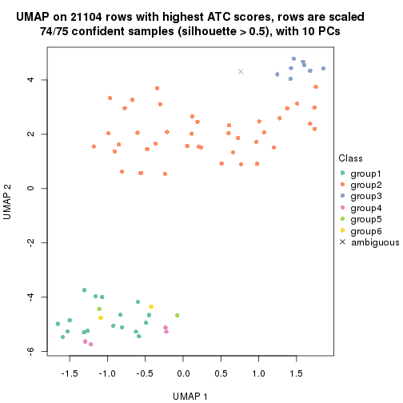
Following heatmap shows how subgroups are split when increasing k:
collect_classes(res)
Test correlation between subgroups and known annotations. If the known annotation is numeric, one-way ANOVA test is applied, and if the known annotation is discrete, chi-squared contingency table test is applied.
test_to_known_factors(res)
#> n other(p) k
#> ATC:hclust 75 0.409 2
#> ATC:hclust 75 0.261 3
#> ATC:hclust 75 0.434 4
#> ATC:hclust 74 0.291 5
#> ATC:hclust 74 0.417 6
If matrix rows can be associated to genes, consider to use functional_enrichment(res,
...) to perform function enrichment for the signature genes. See this vignette for more detailed explanations.
The object with results only for a single top-value method and a single partition method can be extracted as:
res = res_list["ATC", "kmeans"]
# you can also extract it by
# res = res_list["ATC:kmeans"]
A summary of res and all the functions that can be applied to it:
res
#> A 'ConsensusPartition' object with k = 2, 3, 4, 5, 6.
#> On a matrix with 21104 rows and 75 columns.
#> Top rows (1000, 2000, 3000, 4000, 5000) are extracted by 'ATC' method.
#> Subgroups are detected by 'kmeans' method.
#> Performed in total 1250 partitions by row resampling.
#> Best k for subgroups seems to be 2.
#>
#> Following methods can be applied to this 'ConsensusPartition' object:
#> [1] "cola_report" "collect_classes" "collect_plots"
#> [4] "collect_stats" "colnames" "compare_signatures"
#> [7] "consensus_heatmap" "dimension_reduction" "functional_enrichment"
#> [10] "get_anno_col" "get_anno" "get_classes"
#> [13] "get_consensus" "get_matrix" "get_membership"
#> [16] "get_param" "get_signatures" "get_stats"
#> [19] "is_best_k" "is_stable_k" "membership_heatmap"
#> [22] "ncol" "nrow" "plot_ecdf"
#> [25] "rownames" "select_partition_number" "show"
#> [28] "suggest_best_k" "test_to_known_factors"
collect_plots() function collects all the plots made from res for all k (number of partitions)
into one single page to provide an easy and fast comparison between different k.
collect_plots(res)
The plots are:
k and the heatmap of
predicted classes for each k.k.k.k.All the plots in panels can be made by individual functions and they are plotted later in this section.
select_partition_number() produces several plots showing different
statistics for choosing “optimized” k. There are following statistics:
k;k, the area increased is defined as \(A_k - A_{k-1}\).The detailed explanations of these statistics can be found in the cola vignette.
Generally speaking, lower PAC score, higher mean silhouette score or higher
concordance corresponds to better partition. Rand index and Jaccard index
measure how similar the current partition is compared to partition with k-1.
If they are too similar, we won't accept k is better than k-1.
select_partition_number(res)
The numeric values for all these statistics can be obtained by get_stats().
get_stats(res)
#> k 1-PAC mean_silhouette concordance area_increased Rand Jaccard
#> 2 2 1.000 1.000 1.000 0.4510 0.550 0.550
#> 3 3 0.763 0.974 0.926 0.3424 0.811 0.656
#> 4 4 0.555 0.834 0.840 0.1344 1.000 1.000
#> 5 5 0.652 0.555 0.638 0.0876 0.945 0.846
#> 6 6 0.681 0.522 0.692 0.0594 0.834 0.507
suggest_best_k() suggests the best \(k\) based on these statistics. The rules are as follows:
suggest_best_k(res)
#> [1] 2
Following shows the table of the partitions (You need to click the show/hide
code output link to see it). The membership matrix (columns with name p*)
is inferred by
clue::cl_consensus()
function with the SE method. Basically the value in the membership matrix
represents the probability to belong to a certain group. The finall class
label for an item is determined with the group with highest probability it
belongs to.
In get_classes() function, the entropy is calculated from the membership
matrix and the silhouette score is calculated from the consensus matrix.
cbind(get_classes(res, k = 2), get_membership(res, k = 2))
#> class entropy silhouette p1 p2
#> GSM15684 1 0 1 1 0
#> GSM15685 1 0 1 1 0
#> GSM15686 1 0 1 1 0
#> GSM15687 1 0 1 1 0
#> GSM15688 1 0 1 1 0
#> GSM15689 1 0 1 1 0
#> GSM15690 1 0 1 1 0
#> GSM15691 1 0 1 1 0
#> GSM15692 1 0 1 1 0
#> GSM15693 2 0 1 0 1
#> GSM15694 2 0 1 0 1
#> GSM15695 2 0 1 0 1
#> GSM15696 2 0 1 0 1
#> GSM15697 2 0 1 0 1
#> GSM15698 2 0 1 0 1
#> GSM15699 2 0 1 0 1
#> GSM15700 2 0 1 0 1
#> GSM15701 2 0 1 0 1
#> GSM15702 2 0 1 0 1
#> GSM15703 2 0 1 0 1
#> GSM15704 2 0 1 0 1
#> GSM15705 2 0 1 0 1
#> GSM15706 2 0 1 0 1
#> GSM15707 2 0 1 0 1
#> GSM15708 2 0 1 0 1
#> GSM15709 2 0 1 0 1
#> GSM15710 2 0 1 0 1
#> GSM15711 2 0 1 0 1
#> GSM15712 2 0 1 0 1
#> GSM15713 2 0 1 0 1
#> GSM15714 2 0 1 0 1
#> GSM15715 2 0 1 0 1
#> GSM15716 2 0 1 0 1
#> GSM15717 2 0 1 0 1
#> GSM15718 1 0 1 1 0
#> GSM15719 2 0 1 0 1
#> GSM15720 1 0 1 1 0
#> GSM15721 1 0 1 1 0
#> GSM15722 1 0 1 1 0
#> GSM15723 1 0 1 1 0
#> GSM15724 1 0 1 1 0
#> GSM15725 1 0 1 1 0
#> GSM15726 1 0 1 1 0
#> GSM15727 1 0 1 1 0
#> GSM15728 1 0 1 1 0
#> GSM15729 2 0 1 0 1
#> GSM15730 2 0 1 0 1
#> GSM15731 2 0 1 0 1
#> GSM15732 2 0 1 0 1
#> GSM15733 2 0 1 0 1
#> GSM15734 2 0 1 0 1
#> GSM15735 2 0 1 0 1
#> GSM15736 2 0 1 0 1
#> GSM15737 2 0 1 0 1
#> GSM15738 2 0 1 0 1
#> GSM15739 2 0 1 0 1
#> GSM15740 2 0 1 0 1
#> GSM15741 1 0 1 1 0
#> GSM15742 1 0 1 1 0
#> GSM15743 1 0 1 1 0
#> GSM15744 1 0 1 1 0
#> GSM15745 1 0 1 1 0
#> GSM15746 1 0 1 1 0
#> GSM15747 2 0 1 0 1
#> GSM15748 2 0 1 0 1
#> GSM15749 2 0 1 0 1
#> GSM15750 2 0 1 0 1
#> GSM15751 2 0 1 0 1
#> GSM15752 2 0 1 0 1
#> GSM15753 2 0 1 0 1
#> GSM15754 2 0 1 0 1
#> GSM15755 2 0 1 0 1
#> GSM15756 2 0 1 0 1
#> GSM15757 2 0 1 0 1
#> GSM15758 2 0 1 0 1
cbind(get_classes(res, k = 3), get_membership(res, k = 3))
#> class entropy silhouette p1 p2 p3
#> GSM15684 1 0.1529 0.934 0.960 0.000 0.040
#> GSM15685 1 0.1529 0.934 0.960 0.000 0.040
#> GSM15686 1 0.1529 0.934 0.960 0.000 0.040
#> GSM15687 1 0.1529 0.934 0.960 0.000 0.040
#> GSM15688 1 0.4605 0.882 0.796 0.000 0.204
#> GSM15689 1 0.1163 0.937 0.972 0.000 0.028
#> GSM15690 1 0.4605 0.882 0.796 0.000 0.204
#> GSM15691 1 0.0424 0.941 0.992 0.000 0.008
#> GSM15692 1 0.4605 0.882 0.796 0.000 0.204
#> GSM15693 2 0.0000 1.000 0.000 1.000 0.000
#> GSM15694 2 0.0000 1.000 0.000 1.000 0.000
#> GSM15695 2 0.0000 1.000 0.000 1.000 0.000
#> GSM15696 2 0.0000 1.000 0.000 1.000 0.000
#> GSM15697 2 0.0000 1.000 0.000 1.000 0.000
#> GSM15698 2 0.0000 1.000 0.000 1.000 0.000
#> GSM15699 2 0.0000 1.000 0.000 1.000 0.000
#> GSM15700 2 0.0000 1.000 0.000 1.000 0.000
#> GSM15701 2 0.0000 1.000 0.000 1.000 0.000
#> GSM15702 2 0.0000 1.000 0.000 1.000 0.000
#> GSM15703 2 0.0000 1.000 0.000 1.000 0.000
#> GSM15704 2 0.0000 1.000 0.000 1.000 0.000
#> GSM15705 2 0.0000 1.000 0.000 1.000 0.000
#> GSM15706 2 0.0000 1.000 0.000 1.000 0.000
#> GSM15707 2 0.0000 1.000 0.000 1.000 0.000
#> GSM15708 3 0.5058 1.000 0.000 0.244 0.756
#> GSM15709 3 0.5058 1.000 0.000 0.244 0.756
#> GSM15710 2 0.0000 1.000 0.000 1.000 0.000
#> GSM15711 2 0.0000 1.000 0.000 1.000 0.000
#> GSM15712 2 0.0000 1.000 0.000 1.000 0.000
#> GSM15713 2 0.0000 1.000 0.000 1.000 0.000
#> GSM15714 2 0.0000 1.000 0.000 1.000 0.000
#> GSM15715 3 0.5058 1.000 0.000 0.244 0.756
#> GSM15716 2 0.0000 1.000 0.000 1.000 0.000
#> GSM15717 2 0.0000 1.000 0.000 1.000 0.000
#> GSM15718 1 0.1529 0.934 0.960 0.000 0.040
#> GSM15719 2 0.0000 1.000 0.000 1.000 0.000
#> GSM15720 1 0.2356 0.929 0.928 0.000 0.072
#> GSM15721 1 0.0237 0.941 0.996 0.000 0.004
#> GSM15722 1 0.4605 0.882 0.796 0.000 0.204
#> GSM15723 1 0.1163 0.939 0.972 0.000 0.028
#> GSM15724 1 0.0892 0.940 0.980 0.000 0.020
#> GSM15725 1 0.1163 0.939 0.972 0.000 0.028
#> GSM15726 1 0.0747 0.940 0.984 0.000 0.016
#> GSM15727 1 0.0237 0.941 0.996 0.000 0.004
#> GSM15728 1 0.4605 0.882 0.796 0.000 0.204
#> GSM15729 2 0.0000 1.000 0.000 1.000 0.000
#> GSM15730 2 0.0000 1.000 0.000 1.000 0.000
#> GSM15731 2 0.0000 1.000 0.000 1.000 0.000
#> GSM15732 2 0.0000 1.000 0.000 1.000 0.000
#> GSM15733 3 0.5058 1.000 0.000 0.244 0.756
#> GSM15734 2 0.0000 1.000 0.000 1.000 0.000
#> GSM15735 2 0.0000 1.000 0.000 1.000 0.000
#> GSM15736 3 0.5058 1.000 0.000 0.244 0.756
#> GSM15737 3 0.5058 1.000 0.000 0.244 0.756
#> GSM15738 3 0.5058 1.000 0.000 0.244 0.756
#> GSM15739 2 0.0000 1.000 0.000 1.000 0.000
#> GSM15740 2 0.0000 1.000 0.000 1.000 0.000
#> GSM15741 1 0.4452 0.886 0.808 0.000 0.192
#> GSM15742 1 0.4605 0.882 0.796 0.000 0.204
#> GSM15743 1 0.0237 0.941 0.996 0.000 0.004
#> GSM15744 1 0.0237 0.941 0.996 0.000 0.004
#> GSM15745 1 0.1753 0.935 0.952 0.000 0.048
#> GSM15746 1 0.0424 0.941 0.992 0.000 0.008
#> GSM15747 3 0.5058 1.000 0.000 0.244 0.756
#> GSM15748 2 0.0000 1.000 0.000 1.000 0.000
#> GSM15749 2 0.0000 1.000 0.000 1.000 0.000
#> GSM15750 3 0.5058 1.000 0.000 0.244 0.756
#> GSM15751 3 0.5058 1.000 0.000 0.244 0.756
#> GSM15752 3 0.5058 1.000 0.000 0.244 0.756
#> GSM15753 3 0.5058 1.000 0.000 0.244 0.756
#> GSM15754 2 0.0000 1.000 0.000 1.000 0.000
#> GSM15755 3 0.5058 1.000 0.000 0.244 0.756
#> GSM15756 3 0.5058 1.000 0.000 0.244 0.756
#> GSM15757 3 0.5058 1.000 0.000 0.244 0.756
#> GSM15758 2 0.0000 1.000 0.000 1.000 0.000
cbind(get_classes(res, k = 4), get_membership(res, k = 4))
#> class entropy silhouette p1 p2 p3 p4
#> GSM15684 1 0.3732 0.824 0.852 0.000 0.056 0.092
#> GSM15685 1 0.3732 0.824 0.852 0.000 0.056 0.092
#> GSM15686 1 0.4549 0.812 0.804 0.000 0.100 0.096
#> GSM15687 1 0.4549 0.812 0.804 0.000 0.100 0.096
#> GSM15688 1 0.4866 0.745 0.596 0.000 0.000 0.404
#> GSM15689 1 0.2197 0.848 0.928 0.000 0.024 0.048
#> GSM15690 1 0.5150 0.746 0.596 0.000 0.008 0.396
#> GSM15691 1 0.0657 0.859 0.984 0.000 0.004 0.012
#> GSM15692 1 0.4866 0.745 0.596 0.000 0.000 0.404
#> GSM15693 2 0.3219 0.824 0.000 0.836 0.000 0.164
#> GSM15694 2 0.2704 0.837 0.000 0.876 0.000 0.124
#> GSM15695 2 0.0000 0.858 0.000 1.000 0.000 0.000
#> GSM15696 2 0.2973 0.819 0.000 0.856 0.000 0.144
#> GSM15697 2 0.4304 0.757 0.000 0.716 0.000 0.284
#> GSM15698 2 0.3486 0.822 0.000 0.812 0.000 0.188
#> GSM15699 2 0.3444 0.823 0.000 0.816 0.000 0.184
#> GSM15700 2 0.3528 0.802 0.000 0.808 0.000 0.192
#> GSM15701 2 0.2921 0.821 0.000 0.860 0.000 0.140
#> GSM15702 2 0.3123 0.812 0.000 0.844 0.000 0.156
#> GSM15703 2 0.3219 0.824 0.000 0.836 0.000 0.164
#> GSM15704 2 0.2973 0.819 0.000 0.856 0.000 0.144
#> GSM15705 2 0.0336 0.858 0.000 0.992 0.000 0.008
#> GSM15706 2 0.0000 0.858 0.000 1.000 0.000 0.000
#> GSM15707 2 0.1389 0.856 0.000 0.952 0.000 0.048
#> GSM15708 3 0.2469 0.924 0.000 0.108 0.892 0.000
#> GSM15709 3 0.6011 0.846 0.000 0.132 0.688 0.180
#> GSM15710 2 0.0000 0.858 0.000 1.000 0.000 0.000
#> GSM15711 2 0.2973 0.819 0.000 0.856 0.000 0.144
#> GSM15712 2 0.3649 0.790 0.000 0.796 0.000 0.204
#> GSM15713 2 0.0469 0.858 0.000 0.988 0.000 0.012
#> GSM15714 2 0.1867 0.858 0.000 0.928 0.000 0.072
#> GSM15715 3 0.2469 0.924 0.000 0.108 0.892 0.000
#> GSM15716 2 0.3266 0.831 0.000 0.832 0.000 0.168
#> GSM15717 2 0.3024 0.820 0.000 0.852 0.000 0.148
#> GSM15718 1 0.3732 0.824 0.852 0.000 0.056 0.092
#> GSM15719 2 0.4454 0.750 0.000 0.692 0.000 0.308
#> GSM15720 1 0.3356 0.831 0.824 0.000 0.000 0.176
#> GSM15721 1 0.0188 0.861 0.996 0.000 0.000 0.004
#> GSM15722 1 0.5150 0.746 0.596 0.000 0.008 0.396
#> GSM15723 1 0.1722 0.858 0.944 0.000 0.008 0.048
#> GSM15724 1 0.1174 0.861 0.968 0.000 0.012 0.020
#> GSM15725 1 0.1211 0.860 0.960 0.000 0.000 0.040
#> GSM15726 1 0.0469 0.859 0.988 0.000 0.000 0.012
#> GSM15727 1 0.0672 0.861 0.984 0.000 0.008 0.008
#> GSM15728 1 0.4866 0.745 0.596 0.000 0.000 0.404
#> GSM15729 2 0.3123 0.812 0.000 0.844 0.000 0.156
#> GSM15730 2 0.2921 0.821 0.000 0.860 0.000 0.140
#> GSM15731 2 0.2704 0.837 0.000 0.876 0.000 0.124
#> GSM15732 2 0.4008 0.821 0.000 0.756 0.000 0.244
#> GSM15733 3 0.3160 0.920 0.000 0.108 0.872 0.020
#> GSM15734 2 0.1302 0.857 0.000 0.956 0.000 0.044
#> GSM15735 2 0.2704 0.837 0.000 0.876 0.000 0.124
#> GSM15736 3 0.2469 0.924 0.000 0.108 0.892 0.000
#> GSM15737 3 0.2469 0.924 0.000 0.108 0.892 0.000
#> GSM15738 3 0.2469 0.924 0.000 0.108 0.892 0.000
#> GSM15739 2 0.2704 0.838 0.000 0.876 0.000 0.124
#> GSM15740 2 0.1716 0.854 0.000 0.936 0.000 0.064
#> GSM15741 1 0.4843 0.747 0.604 0.000 0.000 0.396
#> GSM15742 1 0.5150 0.746 0.596 0.000 0.008 0.396
#> GSM15743 1 0.0188 0.861 0.996 0.000 0.000 0.004
#> GSM15744 1 0.0672 0.861 0.984 0.000 0.008 0.008
#> GSM15745 1 0.2814 0.842 0.868 0.000 0.000 0.132
#> GSM15746 1 0.0524 0.860 0.988 0.000 0.008 0.004
#> GSM15747 3 0.4203 0.909 0.000 0.108 0.824 0.068
#> GSM15748 2 0.4477 0.744 0.000 0.688 0.000 0.312
#> GSM15749 2 0.3219 0.824 0.000 0.836 0.000 0.164
#> GSM15750 3 0.6031 0.848 0.000 0.108 0.676 0.216
#> GSM15751 3 0.2469 0.924 0.000 0.108 0.892 0.000
#> GSM15752 3 0.2469 0.924 0.000 0.108 0.892 0.000
#> GSM15753 3 0.6049 0.844 0.000 0.132 0.684 0.184
#> GSM15754 2 0.2921 0.821 0.000 0.860 0.000 0.140
#> GSM15755 3 0.2469 0.924 0.000 0.108 0.892 0.000
#> GSM15756 3 0.5863 0.854 0.000 0.120 0.700 0.180
#> GSM15757 3 0.7201 0.696 0.000 0.224 0.552 0.224
#> GSM15758 2 0.4382 0.756 0.000 0.704 0.000 0.296
cbind(get_classes(res, k = 5), get_membership(res, k = 5))
#> class entropy silhouette p1 p2 p3 p4 p5
#> GSM15684 5 0.5856 0.704 0.400 0.000 0.012 NA 0.520
#> GSM15685 5 0.5856 0.704 0.400 0.000 0.012 NA 0.520
#> GSM15686 5 0.6456 0.561 0.392 0.000 0.000 NA 0.428
#> GSM15687 5 0.6596 0.557 0.392 0.000 0.004 NA 0.424
#> GSM15688 1 0.0290 0.499 0.992 0.000 0.000 NA 0.000
#> GSM15689 5 0.4764 0.706 0.436 0.000 0.004 NA 0.548
#> GSM15690 1 0.0324 0.500 0.992 0.000 0.004 NA 0.004
#> GSM15691 5 0.4448 0.648 0.480 0.000 0.000 NA 0.516
#> GSM15692 1 0.1018 0.497 0.968 0.000 0.016 NA 0.000
#> GSM15693 2 0.6219 0.606 0.000 0.548 0.000 NA 0.240
#> GSM15694 2 0.4686 0.681 0.000 0.736 0.000 NA 0.104
#> GSM15695 2 0.0671 0.728 0.000 0.980 0.000 NA 0.004
#> GSM15696 2 0.3530 0.676 0.000 0.784 0.000 NA 0.012
#> GSM15697 2 0.5225 0.580 0.000 0.564 0.004 NA 0.040
#> GSM15698 2 0.6036 0.603 0.000 0.548 0.000 NA 0.144
#> GSM15699 2 0.6054 0.603 0.000 0.548 0.000 NA 0.148
#> GSM15700 2 0.4776 0.594 0.000 0.612 0.004 NA 0.020
#> GSM15701 2 0.3530 0.676 0.000 0.784 0.000 NA 0.012
#> GSM15702 2 0.3628 0.670 0.000 0.772 0.000 NA 0.012
#> GSM15703 2 0.6219 0.606 0.000 0.548 0.000 NA 0.240
#> GSM15704 2 0.3487 0.676 0.000 0.780 0.000 NA 0.008
#> GSM15705 2 0.0880 0.725 0.000 0.968 0.000 NA 0.000
#> GSM15706 2 0.0162 0.727 0.000 0.996 0.000 NA 0.000
#> GSM15707 2 0.2189 0.719 0.000 0.904 0.000 NA 0.012
#> GSM15708 3 0.1043 0.861 0.000 0.040 0.960 NA 0.000
#> GSM15709 3 0.5772 0.711 0.000 0.100 0.608 NA 0.008
#> GSM15710 2 0.0162 0.727 0.000 0.996 0.000 NA 0.000
#> GSM15711 2 0.3530 0.676 0.000 0.784 0.000 NA 0.012
#> GSM15712 2 0.4435 0.599 0.000 0.648 0.016 NA 0.000
#> GSM15713 2 0.1121 0.725 0.000 0.956 0.000 NA 0.000
#> GSM15714 2 0.2797 0.727 0.000 0.880 0.000 NA 0.060
#> GSM15715 3 0.1549 0.860 0.000 0.040 0.944 NA 0.016
#> GSM15716 2 0.5192 0.666 0.000 0.664 0.000 NA 0.092
#> GSM15717 2 0.4134 0.667 0.000 0.760 0.000 NA 0.044
#> GSM15718 5 0.5856 0.704 0.400 0.000 0.012 NA 0.520
#> GSM15719 2 0.6292 0.533 0.000 0.448 0.000 NA 0.152
#> GSM15720 1 0.4521 -0.113 0.664 0.000 0.008 NA 0.316
#> GSM15721 5 0.4306 0.618 0.492 0.000 0.000 NA 0.508
#> GSM15722 1 0.0486 0.499 0.988 0.000 0.004 NA 0.004
#> GSM15723 1 0.4542 -0.573 0.536 0.000 0.000 NA 0.456
#> GSM15724 5 0.4803 0.649 0.484 0.000 0.004 NA 0.500
#> GSM15725 1 0.4306 -0.633 0.508 0.000 0.000 NA 0.492
#> GSM15726 5 0.4291 0.676 0.464 0.000 0.000 NA 0.536
#> GSM15727 1 0.4705 -0.643 0.504 0.000 0.004 NA 0.484
#> GSM15728 1 0.0912 0.497 0.972 0.000 0.016 NA 0.000
#> GSM15729 2 0.3596 0.672 0.000 0.776 0.000 NA 0.012
#> GSM15730 2 0.3391 0.683 0.000 0.800 0.000 NA 0.012
#> GSM15731 2 0.5335 0.657 0.000 0.668 0.000 NA 0.132
#> GSM15732 2 0.6312 0.581 0.000 0.452 0.000 NA 0.156
#> GSM15733 3 0.2625 0.852 0.000 0.040 0.900 NA 0.012
#> GSM15734 2 0.2361 0.717 0.000 0.892 0.000 NA 0.012
#> GSM15735 2 0.5335 0.657 0.000 0.668 0.000 NA 0.132
#> GSM15736 3 0.1648 0.860 0.000 0.040 0.940 NA 0.020
#> GSM15737 3 0.1648 0.860 0.000 0.040 0.940 NA 0.020
#> GSM15738 3 0.1648 0.860 0.000 0.040 0.940 NA 0.020
#> GSM15739 2 0.3690 0.679 0.000 0.780 0.000 NA 0.020
#> GSM15740 2 0.3098 0.701 0.000 0.836 0.000 NA 0.016
#> GSM15741 1 0.0912 0.495 0.972 0.000 0.000 NA 0.016
#> GSM15742 1 0.0579 0.498 0.984 0.000 0.008 NA 0.000
#> GSM15743 1 0.4596 -0.650 0.500 0.000 0.004 NA 0.492
#> GSM15744 1 0.4705 -0.649 0.504 0.000 0.004 NA 0.484
#> GSM15745 1 0.4499 -0.402 0.584 0.000 0.004 NA 0.408
#> GSM15746 5 0.4658 0.655 0.484 0.000 0.000 NA 0.504
#> GSM15747 3 0.3910 0.827 0.000 0.040 0.808 NA 0.012
#> GSM15748 2 0.6822 0.467 0.000 0.344 0.000 NA 0.340
#> GSM15749 2 0.6219 0.606 0.000 0.548 0.000 NA 0.240
#> GSM15750 3 0.5623 0.694 0.000 0.040 0.544 NA 0.020
#> GSM15751 3 0.1043 0.861 0.000 0.040 0.960 NA 0.000
#> GSM15752 3 0.1043 0.861 0.000 0.040 0.960 NA 0.000
#> GSM15753 3 0.5692 0.719 0.000 0.076 0.604 NA 0.012
#> GSM15754 2 0.3530 0.676 0.000 0.784 0.000 NA 0.012
#> GSM15755 3 0.1648 0.860 0.000 0.040 0.940 NA 0.020
#> GSM15756 3 0.5330 0.744 0.000 0.068 0.648 NA 0.008
#> GSM15757 3 0.6952 0.415 0.000 0.216 0.392 NA 0.012
#> GSM15758 2 0.6792 0.496 0.000 0.372 0.000 NA 0.340
cbind(get_classes(res, k = 6), get_membership(res, k = 6))
#> class entropy silhouette p1 p2 p3 p4 p5 p6
#> GSM15684 1 0.4123 0.70564 0.792 0.000 0.000 0.072 0.060 0.076
#> GSM15685 1 0.4123 0.70564 0.792 0.000 0.000 0.072 0.060 0.076
#> GSM15686 1 0.5950 0.52193 0.620 0.000 0.000 0.084 0.172 0.124
#> GSM15687 1 0.5950 0.52193 0.620 0.000 0.000 0.084 0.172 0.124
#> GSM15688 4 0.3659 0.95125 0.364 0.000 0.000 0.636 0.000 0.000
#> GSM15689 1 0.2316 0.77952 0.904 0.000 0.000 0.040 0.016 0.040
#> GSM15690 4 0.4214 0.95062 0.380 0.000 0.004 0.604 0.004 0.008
#> GSM15691 1 0.0777 0.80204 0.972 0.000 0.000 0.000 0.004 0.024
#> GSM15692 4 0.4602 0.94313 0.364 0.000 0.004 0.600 0.008 0.024
#> GSM15693 5 0.3817 0.63168 0.000 0.432 0.000 0.000 0.568 0.000
#> GSM15694 2 0.3734 -0.08640 0.000 0.716 0.000 0.020 0.264 0.000
#> GSM15695 2 0.1320 0.44005 0.000 0.948 0.000 0.016 0.036 0.000
#> GSM15696 2 0.4228 0.37471 0.000 0.656 0.000 0.020 0.008 0.316
#> GSM15697 6 0.6285 0.06729 0.000 0.344 0.000 0.080 0.084 0.492
#> GSM15698 2 0.6024 -0.47308 0.000 0.456 0.000 0.104 0.404 0.036
#> GSM15699 2 0.5697 -0.45436 0.000 0.484 0.000 0.088 0.404 0.024
#> GSM15700 6 0.6008 -0.00332 0.000 0.400 0.000 0.096 0.040 0.464
#> GSM15701 2 0.4211 0.38118 0.000 0.660 0.000 0.020 0.008 0.312
#> GSM15702 2 0.4333 0.25678 0.000 0.596 0.000 0.020 0.004 0.380
#> GSM15703 5 0.3817 0.63168 0.000 0.432 0.000 0.000 0.568 0.000
#> GSM15704 2 0.4335 0.37009 0.000 0.644 0.000 0.024 0.008 0.324
#> GSM15705 2 0.1942 0.47828 0.000 0.916 0.000 0.012 0.008 0.064
#> GSM15706 2 0.0146 0.45648 0.000 0.996 0.000 0.000 0.004 0.000
#> GSM15707 2 0.3023 0.40477 0.000 0.864 0.000 0.036 0.036 0.064
#> GSM15708 3 0.0405 0.92436 0.000 0.008 0.988 0.000 0.000 0.004
#> GSM15709 6 0.4584 0.38753 0.000 0.040 0.404 0.000 0.000 0.556
#> GSM15710 2 0.0146 0.45648 0.000 0.996 0.000 0.000 0.004 0.000
#> GSM15711 2 0.4228 0.37945 0.000 0.656 0.000 0.020 0.008 0.316
#> GSM15712 6 0.3717 0.15507 0.000 0.384 0.000 0.000 0.000 0.616
#> GSM15713 2 0.1757 0.48267 0.000 0.916 0.000 0.008 0.000 0.076
#> GSM15714 2 0.3943 0.37612 0.000 0.776 0.000 0.008 0.140 0.076
#> GSM15715 3 0.0767 0.92101 0.000 0.008 0.976 0.012 0.000 0.004
#> GSM15716 2 0.5582 -0.19262 0.000 0.608 0.000 0.064 0.268 0.060
#> GSM15717 2 0.5949 0.17237 0.000 0.616 0.000 0.084 0.112 0.188
#> GSM15718 1 0.4123 0.70564 0.792 0.000 0.000 0.072 0.060 0.076
#> GSM15719 5 0.7213 0.31733 0.000 0.332 0.000 0.124 0.376 0.168
#> GSM15720 1 0.4105 0.33152 0.732 0.000 0.000 0.216 0.008 0.044
#> GSM15721 1 0.1088 0.79296 0.960 0.000 0.000 0.016 0.000 0.024
#> GSM15722 4 0.4255 0.94978 0.380 0.000 0.004 0.600 0.000 0.016
#> GSM15723 1 0.2106 0.75931 0.904 0.000 0.000 0.064 0.000 0.032
#> GSM15724 1 0.1334 0.79363 0.948 0.000 0.000 0.032 0.000 0.020
#> GSM15725 1 0.1644 0.77319 0.932 0.000 0.000 0.040 0.000 0.028
#> GSM15726 1 0.0891 0.80026 0.968 0.000 0.000 0.008 0.000 0.024
#> GSM15727 1 0.1257 0.78782 0.952 0.000 0.000 0.028 0.000 0.020
#> GSM15728 4 0.4211 0.94871 0.364 0.000 0.004 0.616 0.000 0.016
#> GSM15729 2 0.4278 0.30091 0.000 0.616 0.000 0.020 0.004 0.360
#> GSM15730 2 0.4141 0.39787 0.000 0.676 0.000 0.020 0.008 0.296
#> GSM15731 2 0.4278 -0.28274 0.000 0.632 0.000 0.032 0.336 0.000
#> GSM15732 5 0.7217 0.32416 0.000 0.324 0.000 0.120 0.380 0.176
#> GSM15733 3 0.2839 0.80912 0.000 0.008 0.860 0.032 0.000 0.100
#> GSM15734 2 0.3842 0.35500 0.000 0.808 0.000 0.052 0.044 0.096
#> GSM15735 2 0.4264 -0.27853 0.000 0.636 0.000 0.032 0.332 0.000
#> GSM15736 3 0.0622 0.92333 0.000 0.008 0.980 0.012 0.000 0.000
#> GSM15737 3 0.0717 0.92254 0.000 0.008 0.976 0.016 0.000 0.000
#> GSM15738 3 0.0622 0.92333 0.000 0.008 0.980 0.012 0.000 0.000
#> GSM15739 2 0.5593 0.21644 0.000 0.648 0.000 0.080 0.080 0.192
#> GSM15740 2 0.4970 0.28549 0.000 0.716 0.000 0.068 0.072 0.144
#> GSM15741 4 0.4709 0.87895 0.412 0.000 0.000 0.548 0.008 0.032
#> GSM15742 4 0.4283 0.94386 0.384 0.000 0.000 0.592 0.000 0.024
#> GSM15743 1 0.0914 0.79681 0.968 0.000 0.000 0.016 0.000 0.016
#> GSM15744 1 0.1341 0.78795 0.948 0.000 0.000 0.028 0.000 0.024
#> GSM15745 1 0.3231 0.63102 0.832 0.000 0.000 0.116 0.008 0.044
#> GSM15746 1 0.0777 0.80207 0.972 0.000 0.000 0.000 0.004 0.024
#> GSM15747 3 0.4308 0.43063 0.000 0.008 0.664 0.028 0.000 0.300
#> GSM15748 5 0.3669 0.62384 0.000 0.208 0.000 0.028 0.760 0.004
#> GSM15749 5 0.3817 0.63168 0.000 0.432 0.000 0.000 0.568 0.000
#> GSM15750 6 0.6627 0.29529 0.000 0.008 0.304 0.128 0.064 0.496
#> GSM15751 3 0.0405 0.92436 0.000 0.008 0.988 0.000 0.000 0.004
#> GSM15752 3 0.0881 0.91936 0.000 0.008 0.972 0.012 0.000 0.008
#> GSM15753 6 0.4978 0.38609 0.000 0.024 0.384 0.032 0.000 0.560
#> GSM15754 2 0.4211 0.38118 0.000 0.660 0.000 0.020 0.008 0.312
#> GSM15755 3 0.0622 0.92333 0.000 0.008 0.980 0.012 0.000 0.000
#> GSM15756 6 0.4229 0.32221 0.000 0.016 0.436 0.000 0.000 0.548
#> GSM15757 6 0.5786 0.53376 0.000 0.124 0.180 0.036 0.016 0.644
#> GSM15758 5 0.3622 0.63409 0.000 0.236 0.000 0.016 0.744 0.004
Heatmaps for the consensus matrix. It visualizes the probability of two samples to be in a same group.
consensus_heatmap(res, k = 2)

consensus_heatmap(res, k = 3)
consensus_heatmap(res, k = 4)
consensus_heatmap(res, k = 5)
consensus_heatmap(res, k = 6)
Heatmaps for the membership of samples in all partitions to see how consistent they are:
membership_heatmap(res, k = 2)

membership_heatmap(res, k = 3)
membership_heatmap(res, k = 4)
membership_heatmap(res, k = 5)
membership_heatmap(res, k = 6)
As soon as we have had the classes for columns, we can look for signatures which are significantly different between classes which can be candidate marks for certain classes. Following are the heatmaps for signatures.
Signature heatmaps where rows are scaled:
get_signatures(res, k = 2)

get_signatures(res, k = 3)
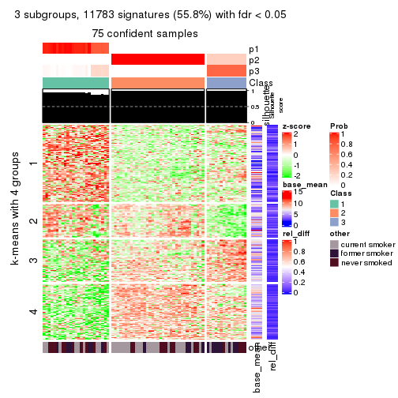
get_signatures(res, k = 4)

get_signatures(res, k = 5)
get_signatures(res, k = 6)
Signature heatmaps where rows are not scaled:
get_signatures(res, k = 2, scale_rows = FALSE)

get_signatures(res, k = 3, scale_rows = FALSE)
get_signatures(res, k = 4, scale_rows = FALSE)
get_signatures(res, k = 5, scale_rows = FALSE)
get_signatures(res, k = 6, scale_rows = FALSE)
Compare the overlap of signatures from different k:
compare_signatures(res)
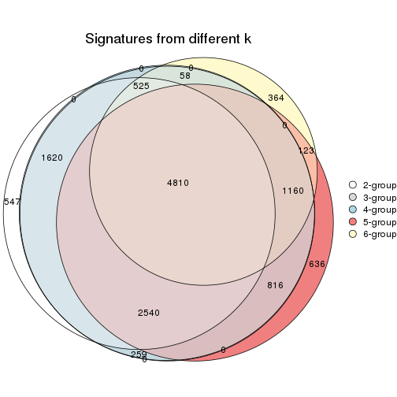
get_signature() returns a data frame invisibly. TO get the list of signatures, the function
call should be assigned to a variable explicitly. In following code, if plot argument is set
to FALSE, no heatmap is plotted while only the differential analysis is performed.
# code only for demonstration
tb = get_signature(res, k = ..., plot = FALSE)
An example of the output of tb is:
#> which_row fdr mean_1 mean_2 scaled_mean_1 scaled_mean_2 km
#> 1 38 0.042760348 8.373488 9.131774 -0.5533452 0.5164555 1
#> 2 40 0.018707592 7.106213 8.469186 -0.6173731 0.5762149 1
#> 3 55 0.019134737 10.221463 11.207825 -0.6159697 0.5749050 1
#> 4 59 0.006059896 5.921854 7.869574 -0.6899429 0.6439467 1
#> 5 60 0.018055526 8.928898 10.211722 -0.6204761 0.5791110 1
#> 6 98 0.009384629 15.714769 14.887706 0.6635654 -0.6193277 2
...
The columns in tb are:
which_row: row indices corresponding to the input matrix.fdr: FDR for the differential test. mean_x: The mean value in group x.scaled_mean_x: The mean value in group x after rows are scaled.km: Row groups if k-means clustering is applied to rows.UMAP plot which shows how samples are separated.
dimension_reduction(res, k = 2, method = "UMAP")

dimension_reduction(res, k = 3, method = "UMAP")

dimension_reduction(res, k = 4, method = "UMAP")
dimension_reduction(res, k = 5, method = "UMAP")
dimension_reduction(res, k = 6, method = "UMAP")
Following heatmap shows how subgroups are split when increasing k:
collect_classes(res)
Test correlation between subgroups and known annotations. If the known annotation is numeric, one-way ANOVA test is applied, and if the known annotation is discrete, chi-squared contingency table test is applied.
test_to_known_factors(res)
#> n other(p) k
#> ATC:kmeans 75 0.40947 2
#> ATC:kmeans 75 0.00822 3
#> ATC:kmeans 75 0.00822 4
#> ATC:kmeans 58 0.00371 5
#> ATC:kmeans 39 0.58300 6
If matrix rows can be associated to genes, consider to use functional_enrichment(res,
...) to perform function enrichment for the signature genes. See this vignette for more detailed explanations.
The object with results only for a single top-value method and a single partition method can be extracted as:
res = res_list["ATC", "skmeans"]
# you can also extract it by
# res = res_list["ATC:skmeans"]
A summary of res and all the functions that can be applied to it:
res
#> A 'ConsensusPartition' object with k = 2, 3, 4, 5, 6.
#> On a matrix with 21104 rows and 75 columns.
#> Top rows (1000, 2000, 3000, 4000, 5000) are extracted by 'ATC' method.
#> Subgroups are detected by 'skmeans' method.
#> Performed in total 1250 partitions by row resampling.
#> Best k for subgroups seems to be 3.
#>
#> Following methods can be applied to this 'ConsensusPartition' object:
#> [1] "cola_report" "collect_classes" "collect_plots"
#> [4] "collect_stats" "colnames" "compare_signatures"
#> [7] "consensus_heatmap" "dimension_reduction" "functional_enrichment"
#> [10] "get_anno_col" "get_anno" "get_classes"
#> [13] "get_consensus" "get_matrix" "get_membership"
#> [16] "get_param" "get_signatures" "get_stats"
#> [19] "is_best_k" "is_stable_k" "membership_heatmap"
#> [22] "ncol" "nrow" "plot_ecdf"
#> [25] "rownames" "select_partition_number" "show"
#> [28] "suggest_best_k" "test_to_known_factors"
collect_plots() function collects all the plots made from res for all k (number of partitions)
into one single page to provide an easy and fast comparison between different k.
collect_plots(res)
The plots are:
k and the heatmap of
predicted classes for each k.k.k.k.All the plots in panels can be made by individual functions and they are plotted later in this section.
select_partition_number() produces several plots showing different
statistics for choosing “optimized” k. There are following statistics:
k;k, the area increased is defined as \(A_k - A_{k-1}\).The detailed explanations of these statistics can be found in the cola vignette.
Generally speaking, lower PAC score, higher mean silhouette score or higher
concordance corresponds to better partition. Rand index and Jaccard index
measure how similar the current partition is compared to partition with k-1.
If they are too similar, we won't accept k is better than k-1.
select_partition_number(res)
The numeric values for all these statistics can be obtained by get_stats().
get_stats(res)
#> k 1-PAC mean_silhouette concordance area_increased Rand Jaccard
#> 2 2 1.000 1.000 1.000 0.4510 0.550 0.550
#> 3 3 1.000 0.985 0.993 0.4262 0.811 0.656
#> 4 4 0.823 0.769 0.885 0.1387 0.890 0.694
#> 5 5 0.810 0.750 0.831 0.0472 0.946 0.807
#> 6 6 0.736 0.635 0.760 0.0275 0.987 0.950
suggest_best_k() suggests the best \(k\) based on these statistics. The rules are as follows:
suggest_best_k(res)
#> [1] 3
#> attr(,"optional")
#> [1] 2
There is also optional best \(k\) = 2 that is worth to check.
Following shows the table of the partitions (You need to click the show/hide
code output link to see it). The membership matrix (columns with name p*)
is inferred by
clue::cl_consensus()
function with the SE method. Basically the value in the membership matrix
represents the probability to belong to a certain group. The finall class
label for an item is determined with the group with highest probability it
belongs to.
In get_classes() function, the entropy is calculated from the membership
matrix and the silhouette score is calculated from the consensus matrix.
cbind(get_classes(res, k = 2), get_membership(res, k = 2))
#> class entropy silhouette p1 p2
#> GSM15684 1 0 1 1 0
#> GSM15685 1 0 1 1 0
#> GSM15686 1 0 1 1 0
#> GSM15687 1 0 1 1 0
#> GSM15688 1 0 1 1 0
#> GSM15689 1 0 1 1 0
#> GSM15690 1 0 1 1 0
#> GSM15691 1 0 1 1 0
#> GSM15692 1 0 1 1 0
#> GSM15693 2 0 1 0 1
#> GSM15694 2 0 1 0 1
#> GSM15695 2 0 1 0 1
#> GSM15696 2 0 1 0 1
#> GSM15697 2 0 1 0 1
#> GSM15698 2 0 1 0 1
#> GSM15699 2 0 1 0 1
#> GSM15700 2 0 1 0 1
#> GSM15701 2 0 1 0 1
#> GSM15702 2 0 1 0 1
#> GSM15703 2 0 1 0 1
#> GSM15704 2 0 1 0 1
#> GSM15705 2 0 1 0 1
#> GSM15706 2 0 1 0 1
#> GSM15707 2 0 1 0 1
#> GSM15708 2 0 1 0 1
#> GSM15709 2 0 1 0 1
#> GSM15710 2 0 1 0 1
#> GSM15711 2 0 1 0 1
#> GSM15712 2 0 1 0 1
#> GSM15713 2 0 1 0 1
#> GSM15714 2 0 1 0 1
#> GSM15715 2 0 1 0 1
#> GSM15716 2 0 1 0 1
#> GSM15717 2 0 1 0 1
#> GSM15718 1 0 1 1 0
#> GSM15719 2 0 1 0 1
#> GSM15720 1 0 1 1 0
#> GSM15721 1 0 1 1 0
#> GSM15722 1 0 1 1 0
#> GSM15723 1 0 1 1 0
#> GSM15724 1 0 1 1 0
#> GSM15725 1 0 1 1 0
#> GSM15726 1 0 1 1 0
#> GSM15727 1 0 1 1 0
#> GSM15728 1 0 1 1 0
#> GSM15729 2 0 1 0 1
#> GSM15730 2 0 1 0 1
#> GSM15731 2 0 1 0 1
#> GSM15732 2 0 1 0 1
#> GSM15733 2 0 1 0 1
#> GSM15734 2 0 1 0 1
#> GSM15735 2 0 1 0 1
#> GSM15736 2 0 1 0 1
#> GSM15737 2 0 1 0 1
#> GSM15738 2 0 1 0 1
#> GSM15739 2 0 1 0 1
#> GSM15740 2 0 1 0 1
#> GSM15741 1 0 1 1 0
#> GSM15742 1 0 1 1 0
#> GSM15743 1 0 1 1 0
#> GSM15744 1 0 1 1 0
#> GSM15745 1 0 1 1 0
#> GSM15746 1 0 1 1 0
#> GSM15747 2 0 1 0 1
#> GSM15748 2 0 1 0 1
#> GSM15749 2 0 1 0 1
#> GSM15750 2 0 1 0 1
#> GSM15751 2 0 1 0 1
#> GSM15752 2 0 1 0 1
#> GSM15753 2 0 1 0 1
#> GSM15754 2 0 1 0 1
#> GSM15755 2 0 1 0 1
#> GSM15756 2 0 1 0 1
#> GSM15757 2 0 1 0 1
#> GSM15758 2 0 1 0 1
cbind(get_classes(res, k = 3), get_membership(res, k = 3))
#> class entropy silhouette p1 p2 p3
#> GSM15684 1 0.000 1.000 1 0.000 0.000
#> GSM15685 1 0.000 1.000 1 0.000 0.000
#> GSM15686 1 0.000 1.000 1 0.000 0.000
#> GSM15687 1 0.000 1.000 1 0.000 0.000
#> GSM15688 1 0.000 1.000 1 0.000 0.000
#> GSM15689 1 0.000 1.000 1 0.000 0.000
#> GSM15690 1 0.000 1.000 1 0.000 0.000
#> GSM15691 1 0.000 1.000 1 0.000 0.000
#> GSM15692 1 0.000 1.000 1 0.000 0.000
#> GSM15693 2 0.000 0.985 0 1.000 0.000
#> GSM15694 2 0.000 0.985 0 1.000 0.000
#> GSM15695 2 0.000 0.985 0 1.000 0.000
#> GSM15696 2 0.000 0.985 0 1.000 0.000
#> GSM15697 2 0.000 0.985 0 1.000 0.000
#> GSM15698 2 0.000 0.985 0 1.000 0.000
#> GSM15699 2 0.000 0.985 0 1.000 0.000
#> GSM15700 2 0.470 0.744 0 0.788 0.212
#> GSM15701 2 0.000 0.985 0 1.000 0.000
#> GSM15702 2 0.245 0.913 0 0.924 0.076
#> GSM15703 2 0.000 0.985 0 1.000 0.000
#> GSM15704 2 0.000 0.985 0 1.000 0.000
#> GSM15705 2 0.000 0.985 0 1.000 0.000
#> GSM15706 2 0.000 0.985 0 1.000 0.000
#> GSM15707 2 0.000 0.985 0 1.000 0.000
#> GSM15708 3 0.000 1.000 0 0.000 1.000
#> GSM15709 3 0.000 1.000 0 0.000 1.000
#> GSM15710 2 0.000 0.985 0 1.000 0.000
#> GSM15711 2 0.000 0.985 0 1.000 0.000
#> GSM15712 2 0.480 0.732 0 0.780 0.220
#> GSM15713 2 0.000 0.985 0 1.000 0.000
#> GSM15714 2 0.000 0.985 0 1.000 0.000
#> GSM15715 3 0.000 1.000 0 0.000 1.000
#> GSM15716 2 0.000 0.985 0 1.000 0.000
#> GSM15717 2 0.000 0.985 0 1.000 0.000
#> GSM15718 1 0.000 1.000 1 0.000 0.000
#> GSM15719 2 0.000 0.985 0 1.000 0.000
#> GSM15720 1 0.000 1.000 1 0.000 0.000
#> GSM15721 1 0.000 1.000 1 0.000 0.000
#> GSM15722 1 0.000 1.000 1 0.000 0.000
#> GSM15723 1 0.000 1.000 1 0.000 0.000
#> GSM15724 1 0.000 1.000 1 0.000 0.000
#> GSM15725 1 0.000 1.000 1 0.000 0.000
#> GSM15726 1 0.000 1.000 1 0.000 0.000
#> GSM15727 1 0.000 1.000 1 0.000 0.000
#> GSM15728 1 0.000 1.000 1 0.000 0.000
#> GSM15729 2 0.000 0.985 0 1.000 0.000
#> GSM15730 2 0.000 0.985 0 1.000 0.000
#> GSM15731 2 0.000 0.985 0 1.000 0.000
#> GSM15732 2 0.000 0.985 0 1.000 0.000
#> GSM15733 3 0.000 1.000 0 0.000 1.000
#> GSM15734 2 0.000 0.985 0 1.000 0.000
#> GSM15735 2 0.000 0.985 0 1.000 0.000
#> GSM15736 3 0.000 1.000 0 0.000 1.000
#> GSM15737 3 0.000 1.000 0 0.000 1.000
#> GSM15738 3 0.000 1.000 0 0.000 1.000
#> GSM15739 2 0.000 0.985 0 1.000 0.000
#> GSM15740 2 0.000 0.985 0 1.000 0.000
#> GSM15741 1 0.000 1.000 1 0.000 0.000
#> GSM15742 1 0.000 1.000 1 0.000 0.000
#> GSM15743 1 0.000 1.000 1 0.000 0.000
#> GSM15744 1 0.000 1.000 1 0.000 0.000
#> GSM15745 1 0.000 1.000 1 0.000 0.000
#> GSM15746 1 0.000 1.000 1 0.000 0.000
#> GSM15747 3 0.000 1.000 0 0.000 1.000
#> GSM15748 2 0.000 0.985 0 1.000 0.000
#> GSM15749 2 0.000 0.985 0 1.000 0.000
#> GSM15750 3 0.000 1.000 0 0.000 1.000
#> GSM15751 3 0.000 1.000 0 0.000 1.000
#> GSM15752 3 0.000 1.000 0 0.000 1.000
#> GSM15753 3 0.000 1.000 0 0.000 1.000
#> GSM15754 2 0.000 0.985 0 1.000 0.000
#> GSM15755 3 0.000 1.000 0 0.000 1.000
#> GSM15756 3 0.000 1.000 0 0.000 1.000
#> GSM15757 3 0.000 1.000 0 0.000 1.000
#> GSM15758 2 0.000 0.985 0 1.000 0.000
cbind(get_classes(res, k = 4), get_membership(res, k = 4))
#> class entropy silhouette p1 p2 p3 p4
#> GSM15684 1 0.0188 0.9971 0.996 0.000 0.000 0.004
#> GSM15685 1 0.0188 0.9971 0.996 0.000 0.000 0.004
#> GSM15686 1 0.0000 0.9972 1.000 0.000 0.000 0.000
#> GSM15687 1 0.0000 0.9972 1.000 0.000 0.000 0.000
#> GSM15688 1 0.0188 0.9971 0.996 0.000 0.000 0.004
#> GSM15689 1 0.0000 0.9972 1.000 0.000 0.000 0.000
#> GSM15690 1 0.0188 0.9971 0.996 0.000 0.000 0.004
#> GSM15691 1 0.0000 0.9972 1.000 0.000 0.000 0.000
#> GSM15692 1 0.0188 0.9971 0.996 0.000 0.000 0.004
#> GSM15693 4 0.3266 0.7606 0.000 0.168 0.000 0.832
#> GSM15694 4 0.4977 0.2841 0.000 0.460 0.000 0.540
#> GSM15695 2 0.4998 -0.1964 0.000 0.512 0.000 0.488
#> GSM15696 2 0.0188 0.7326 0.000 0.996 0.000 0.004
#> GSM15697 2 0.2814 0.6556 0.000 0.868 0.000 0.132
#> GSM15698 4 0.3219 0.7616 0.000 0.164 0.000 0.836
#> GSM15699 4 0.3266 0.7612 0.000 0.168 0.000 0.832
#> GSM15700 2 0.0524 0.7244 0.000 0.988 0.008 0.004
#> GSM15701 2 0.0336 0.7337 0.000 0.992 0.000 0.008
#> GSM15702 2 0.0336 0.7258 0.000 0.992 0.008 0.000
#> GSM15703 4 0.3219 0.7601 0.000 0.164 0.000 0.836
#> GSM15704 2 0.0592 0.7322 0.000 0.984 0.000 0.016
#> GSM15705 2 0.4382 0.4219 0.000 0.704 0.000 0.296
#> GSM15706 2 0.4972 -0.0590 0.000 0.544 0.000 0.456
#> GSM15707 2 0.4977 -0.0744 0.000 0.540 0.000 0.460
#> GSM15708 3 0.0000 0.9622 0.000 0.000 1.000 0.000
#> GSM15709 3 0.3172 0.8697 0.000 0.160 0.840 0.000
#> GSM15710 2 0.4961 -0.0285 0.000 0.552 0.000 0.448
#> GSM15711 2 0.0336 0.7337 0.000 0.992 0.000 0.008
#> GSM15712 2 0.0469 0.7232 0.000 0.988 0.012 0.000
#> GSM15713 2 0.4277 0.4494 0.000 0.720 0.000 0.280
#> GSM15714 2 0.4817 0.2451 0.000 0.612 0.000 0.388
#> GSM15715 3 0.0000 0.9622 0.000 0.000 1.000 0.000
#> GSM15716 4 0.3528 0.7528 0.000 0.192 0.000 0.808
#> GSM15717 4 0.2973 0.7098 0.000 0.144 0.000 0.856
#> GSM15718 1 0.0188 0.9971 0.996 0.000 0.000 0.004
#> GSM15719 4 0.0336 0.6655 0.000 0.008 0.000 0.992
#> GSM15720 1 0.0000 0.9972 1.000 0.000 0.000 0.000
#> GSM15721 1 0.0188 0.9971 0.996 0.000 0.000 0.004
#> GSM15722 1 0.0188 0.9971 0.996 0.000 0.000 0.004
#> GSM15723 1 0.0336 0.9970 0.992 0.000 0.000 0.008
#> GSM15724 1 0.0336 0.9970 0.992 0.000 0.000 0.008
#> GSM15725 1 0.0188 0.9971 0.996 0.000 0.000 0.004
#> GSM15726 1 0.0188 0.9971 0.996 0.000 0.000 0.004
#> GSM15727 1 0.0336 0.9970 0.992 0.000 0.000 0.008
#> GSM15728 1 0.0188 0.9971 0.996 0.000 0.000 0.004
#> GSM15729 2 0.0000 0.7308 0.000 1.000 0.000 0.000
#> GSM15730 2 0.0336 0.7337 0.000 0.992 0.000 0.008
#> GSM15731 4 0.3486 0.7573 0.000 0.188 0.000 0.812
#> GSM15732 4 0.4994 0.2136 0.000 0.480 0.000 0.520
#> GSM15733 3 0.0000 0.9622 0.000 0.000 1.000 0.000
#> GSM15734 4 0.4998 0.1857 0.000 0.488 0.000 0.512
#> GSM15735 4 0.3610 0.7509 0.000 0.200 0.000 0.800
#> GSM15736 3 0.0000 0.9622 0.000 0.000 1.000 0.000
#> GSM15737 3 0.0000 0.9622 0.000 0.000 1.000 0.000
#> GSM15738 3 0.0000 0.9622 0.000 0.000 1.000 0.000
#> GSM15739 4 0.4999 0.1664 0.000 0.492 0.000 0.508
#> GSM15740 4 0.4981 0.2639 0.000 0.464 0.000 0.536
#> GSM15741 1 0.0188 0.9971 0.996 0.000 0.000 0.004
#> GSM15742 1 0.0188 0.9971 0.996 0.000 0.000 0.004
#> GSM15743 1 0.0188 0.9971 0.996 0.000 0.000 0.004
#> GSM15744 1 0.0336 0.9970 0.992 0.000 0.000 0.008
#> GSM15745 1 0.0188 0.9971 0.996 0.000 0.000 0.004
#> GSM15746 1 0.0188 0.9971 0.996 0.000 0.000 0.004
#> GSM15747 3 0.0000 0.9622 0.000 0.000 1.000 0.000
#> GSM15748 4 0.0592 0.6716 0.000 0.016 0.000 0.984
#> GSM15749 4 0.3266 0.7606 0.000 0.168 0.000 0.832
#> GSM15750 3 0.1004 0.9516 0.000 0.024 0.972 0.004
#> GSM15751 3 0.0000 0.9622 0.000 0.000 1.000 0.000
#> GSM15752 3 0.0000 0.9622 0.000 0.000 1.000 0.000
#> GSM15753 3 0.2530 0.9066 0.000 0.112 0.888 0.000
#> GSM15754 2 0.0336 0.7337 0.000 0.992 0.000 0.008
#> GSM15755 3 0.0000 0.9622 0.000 0.000 1.000 0.000
#> GSM15756 3 0.2704 0.8977 0.000 0.124 0.876 0.000
#> GSM15757 3 0.3306 0.8711 0.000 0.156 0.840 0.004
#> GSM15758 4 0.0707 0.6738 0.000 0.020 0.000 0.980
cbind(get_classes(res, k = 5), get_membership(res, k = 5))
#> class entropy silhouette p1 p2 p3 p4 p5
#> GSM15684 1 0.1608 0.9535 0.928 0.000 0.000 0.000 NA
#> GSM15685 1 0.1544 0.9569 0.932 0.000 0.000 0.000 NA
#> GSM15686 1 0.1197 0.9657 0.952 0.000 0.000 0.000 NA
#> GSM15687 1 0.0703 0.9746 0.976 0.000 0.000 0.000 NA
#> GSM15688 1 0.0963 0.9723 0.964 0.000 0.000 0.000 NA
#> GSM15689 1 0.0880 0.9733 0.968 0.000 0.000 0.000 NA
#> GSM15690 1 0.0963 0.9723 0.964 0.000 0.000 0.000 NA
#> GSM15691 1 0.0404 0.9766 0.988 0.000 0.000 0.000 NA
#> GSM15692 1 0.0963 0.9723 0.964 0.000 0.000 0.000 NA
#> GSM15693 2 0.3844 0.6090 0.000 0.792 0.000 0.044 NA
#> GSM15694 2 0.4106 0.5907 0.000 0.724 0.000 0.256 NA
#> GSM15695 2 0.4497 0.4869 0.000 0.632 0.000 0.352 NA
#> GSM15696 4 0.1121 0.8079 0.000 0.044 0.000 0.956 NA
#> GSM15697 4 0.5838 0.5175 0.000 0.192 0.012 0.644 NA
#> GSM15698 2 0.3682 0.6356 0.000 0.820 0.000 0.072 NA
#> GSM15699 2 0.2863 0.6525 0.000 0.876 0.000 0.064 NA
#> GSM15700 4 0.3241 0.6970 0.000 0.024 0.000 0.832 NA
#> GSM15701 4 0.1357 0.8073 0.000 0.048 0.000 0.948 NA
#> GSM15702 4 0.0566 0.7851 0.000 0.004 0.000 0.984 NA
#> GSM15703 2 0.3844 0.6090 0.000 0.792 0.000 0.044 NA
#> GSM15704 4 0.2293 0.7721 0.000 0.084 0.000 0.900 NA
#> GSM15705 4 0.6420 -0.2466 0.000 0.376 0.000 0.448 NA
#> GSM15706 2 0.6056 0.4600 0.000 0.536 0.000 0.324 NA
#> GSM15707 2 0.6121 0.4522 0.000 0.528 0.000 0.324 NA
#> GSM15708 3 0.0000 0.8781 0.000 0.000 1.000 0.000 NA
#> GSM15709 3 0.5260 0.5809 0.000 0.000 0.592 0.348 NA
#> GSM15710 2 0.6068 0.4535 0.000 0.532 0.000 0.328 NA
#> GSM15711 4 0.1197 0.8080 0.000 0.048 0.000 0.952 NA
#> GSM15712 4 0.2170 0.7332 0.000 0.004 0.004 0.904 NA
#> GSM15713 4 0.6021 -0.0461 0.000 0.348 0.000 0.524 NA
#> GSM15714 2 0.6518 0.3754 0.000 0.484 0.000 0.276 NA
#> GSM15715 3 0.0000 0.8781 0.000 0.000 1.000 0.000 NA
#> GSM15716 2 0.4617 0.6380 0.000 0.744 0.000 0.108 NA
#> GSM15717 2 0.5331 0.5567 0.000 0.568 0.000 0.060 NA
#> GSM15718 1 0.1544 0.9559 0.932 0.000 0.000 0.000 NA
#> GSM15719 2 0.3983 0.5339 0.000 0.660 0.000 0.000 NA
#> GSM15720 1 0.0609 0.9758 0.980 0.000 0.000 0.000 NA
#> GSM15721 1 0.0880 0.9716 0.968 0.000 0.000 0.000 NA
#> GSM15722 1 0.0963 0.9723 0.964 0.000 0.000 0.000 NA
#> GSM15723 1 0.0794 0.9757 0.972 0.000 0.000 0.000 NA
#> GSM15724 1 0.0703 0.9766 0.976 0.000 0.000 0.000 NA
#> GSM15725 1 0.0880 0.9716 0.968 0.000 0.000 0.000 NA
#> GSM15726 1 0.0880 0.9716 0.968 0.000 0.000 0.000 NA
#> GSM15727 1 0.0703 0.9762 0.976 0.000 0.000 0.000 NA
#> GSM15728 1 0.0963 0.9723 0.964 0.000 0.000 0.000 NA
#> GSM15729 4 0.0671 0.7989 0.000 0.016 0.000 0.980 NA
#> GSM15730 4 0.1557 0.8039 0.000 0.052 0.000 0.940 NA
#> GSM15731 2 0.2338 0.6540 0.000 0.884 0.000 0.112 NA
#> GSM15732 2 0.6504 0.3109 0.000 0.488 0.000 0.240 NA
#> GSM15733 3 0.1251 0.8668 0.000 0.000 0.956 0.008 NA
#> GSM15734 2 0.5940 0.5139 0.000 0.572 0.000 0.284 NA
#> GSM15735 2 0.2513 0.6541 0.000 0.876 0.000 0.116 NA
#> GSM15736 3 0.0000 0.8781 0.000 0.000 1.000 0.000 NA
#> GSM15737 3 0.0000 0.8781 0.000 0.000 1.000 0.000 NA
#> GSM15738 3 0.0000 0.8781 0.000 0.000 1.000 0.000 NA
#> GSM15739 2 0.6359 0.5089 0.000 0.520 0.000 0.220 NA
#> GSM15740 2 0.6033 0.5500 0.000 0.580 0.000 0.220 NA
#> GSM15741 1 0.0609 0.9762 0.980 0.000 0.000 0.000 NA
#> GSM15742 1 0.0880 0.9730 0.968 0.000 0.000 0.000 NA
#> GSM15743 1 0.0290 0.9761 0.992 0.000 0.000 0.000 NA
#> GSM15744 1 0.0703 0.9763 0.976 0.000 0.000 0.000 NA
#> GSM15745 1 0.0880 0.9716 0.968 0.000 0.000 0.000 NA
#> GSM15746 1 0.0609 0.9761 0.980 0.000 0.000 0.000 NA
#> GSM15747 3 0.1251 0.8671 0.000 0.000 0.956 0.008 NA
#> GSM15748 2 0.4151 0.4989 0.000 0.652 0.000 0.004 NA
#> GSM15749 2 0.3844 0.6090 0.000 0.792 0.000 0.044 NA
#> GSM15750 3 0.5244 0.7245 0.000 0.020 0.700 0.072 NA
#> GSM15751 3 0.0000 0.8781 0.000 0.000 1.000 0.000 NA
#> GSM15752 3 0.0000 0.8781 0.000 0.000 1.000 0.000 NA
#> GSM15753 3 0.5018 0.6813 0.000 0.000 0.664 0.268 NA
#> GSM15754 4 0.1197 0.8080 0.000 0.048 0.000 0.952 NA
#> GSM15755 3 0.0000 0.8781 0.000 0.000 1.000 0.000 NA
#> GSM15756 3 0.4949 0.6645 0.000 0.000 0.656 0.288 NA
#> GSM15757 3 0.6119 0.5689 0.000 0.000 0.544 0.296 NA
#> GSM15758 2 0.3783 0.5645 0.000 0.740 0.000 0.008 NA
cbind(get_classes(res, k = 6), get_membership(res, k = 6))
#> class entropy silhouette p1 p2 p3 p4 p5 p6
#> GSM15684 1 0.2821 0.860 0.832 0.000 0.000 0.016 0.000 NA
#> GSM15685 1 0.2572 0.875 0.852 0.000 0.000 0.012 0.000 NA
#> GSM15686 1 0.2170 0.905 0.888 0.000 0.000 0.012 0.000 NA
#> GSM15687 1 0.2163 0.922 0.892 0.000 0.000 0.016 0.000 NA
#> GSM15688 1 0.1957 0.915 0.888 0.000 0.000 0.000 0.000 NA
#> GSM15689 1 0.1471 0.921 0.932 0.000 0.000 0.004 0.000 NA
#> GSM15690 1 0.2092 0.914 0.876 0.000 0.000 0.000 0.000 NA
#> GSM15691 1 0.1007 0.932 0.956 0.000 0.000 0.000 0.000 NA
#> GSM15692 1 0.1610 0.924 0.916 0.000 0.000 0.000 0.000 NA
#> GSM15693 2 0.4572 0.415 0.000 0.712 0.000 0.212 0.036 NA
#> GSM15694 2 0.3560 0.568 0.000 0.732 0.000 0.004 0.256 NA
#> GSM15695 2 0.4100 0.423 0.000 0.600 0.000 0.004 0.388 NA
#> GSM15696 5 0.0790 0.761 0.000 0.032 0.000 0.000 0.968 NA
#> GSM15697 5 0.6735 0.316 0.000 0.136 0.008 0.244 0.524 NA
#> GSM15698 2 0.4983 0.422 0.000 0.668 0.000 0.228 0.084 NA
#> GSM15699 2 0.3306 0.582 0.000 0.840 0.000 0.052 0.088 NA
#> GSM15700 5 0.4231 0.352 0.000 0.008 0.000 0.364 0.616 NA
#> GSM15701 5 0.0937 0.762 0.000 0.040 0.000 0.000 0.960 NA
#> GSM15702 5 0.0717 0.725 0.000 0.000 0.000 0.016 0.976 NA
#> GSM15703 2 0.4610 0.415 0.000 0.712 0.000 0.208 0.040 NA
#> GSM15704 5 0.2307 0.736 0.000 0.064 0.000 0.024 0.900 NA
#> GSM15705 5 0.6407 -0.245 0.000 0.400 0.000 0.104 0.428 NA
#> GSM15706 2 0.4905 0.443 0.000 0.580 0.000 0.000 0.344 NA
#> GSM15707 2 0.5385 0.476 0.000 0.580 0.000 0.008 0.296 NA
#> GSM15708 3 0.0000 0.787 0.000 0.000 1.000 0.000 0.000 NA
#> GSM15709 3 0.6102 0.342 0.000 0.000 0.528 0.080 0.320 NA
#> GSM15710 2 0.4938 0.426 0.000 0.568 0.000 0.000 0.356 NA
#> GSM15711 5 0.0865 0.762 0.000 0.036 0.000 0.000 0.964 NA
#> GSM15712 5 0.3915 0.533 0.000 0.000 0.004 0.188 0.756 NA
#> GSM15713 5 0.5315 -0.027 0.000 0.380 0.000 0.012 0.532 NA
#> GSM15714 2 0.6829 0.274 0.000 0.476 0.000 0.224 0.220 NA
#> GSM15715 3 0.0405 0.785 0.000 0.000 0.988 0.008 0.000 NA
#> GSM15716 2 0.3274 0.597 0.000 0.824 0.000 0.000 0.096 NA
#> GSM15717 2 0.5667 0.344 0.000 0.488 0.000 0.072 0.032 NA
#> GSM15718 1 0.2744 0.866 0.840 0.000 0.000 0.016 0.000 NA
#> GSM15719 2 0.5919 0.120 0.000 0.452 0.000 0.228 0.000 NA
#> GSM15720 1 0.0713 0.928 0.972 0.000 0.000 0.000 0.000 NA
#> GSM15721 1 0.1643 0.917 0.924 0.000 0.000 0.008 0.000 NA
#> GSM15722 1 0.2146 0.913 0.880 0.000 0.000 0.004 0.000 NA
#> GSM15723 1 0.1531 0.930 0.928 0.000 0.000 0.004 0.000 NA
#> GSM15724 1 0.1644 0.925 0.920 0.000 0.000 0.004 0.000 NA
#> GSM15725 1 0.1584 0.916 0.928 0.000 0.000 0.008 0.000 NA
#> GSM15726 1 0.1757 0.914 0.916 0.000 0.000 0.008 0.000 NA
#> GSM15727 1 0.1411 0.931 0.936 0.000 0.000 0.004 0.000 NA
#> GSM15728 1 0.2146 0.913 0.880 0.000 0.000 0.004 0.000 NA
#> GSM15729 5 0.0767 0.746 0.000 0.012 0.000 0.008 0.976 NA
#> GSM15730 5 0.1285 0.756 0.000 0.052 0.000 0.000 0.944 NA
#> GSM15731 2 0.2488 0.594 0.000 0.864 0.000 0.008 0.124 NA
#> GSM15732 4 0.5923 -0.161 0.000 0.312 0.000 0.496 0.184 NA
#> GSM15733 3 0.3068 0.671 0.000 0.000 0.840 0.124 0.016 NA
#> GSM15734 2 0.5282 0.490 0.000 0.584 0.000 0.004 0.296 NA
#> GSM15735 2 0.2362 0.598 0.000 0.860 0.000 0.000 0.136 NA
#> GSM15736 3 0.0146 0.787 0.000 0.000 0.996 0.000 0.000 NA
#> GSM15737 3 0.0291 0.786 0.000 0.000 0.992 0.004 0.000 NA
#> GSM15738 3 0.0146 0.787 0.000 0.000 0.996 0.000 0.000 NA
#> GSM15739 2 0.6294 0.471 0.000 0.508 0.000 0.036 0.180 NA
#> GSM15740 2 0.5439 0.544 0.000 0.608 0.000 0.008 0.200 NA
#> GSM15741 1 0.1267 0.930 0.940 0.000 0.000 0.000 0.000 NA
#> GSM15742 1 0.2003 0.915 0.884 0.000 0.000 0.000 0.000 NA
#> GSM15743 1 0.0547 0.930 0.980 0.000 0.000 0.000 0.000 NA
#> GSM15744 1 0.1753 0.928 0.912 0.000 0.000 0.004 0.000 NA
#> GSM15745 1 0.1411 0.920 0.936 0.000 0.000 0.004 0.000 NA
#> GSM15746 1 0.1588 0.930 0.924 0.000 0.000 0.004 0.000 NA
#> GSM15747 3 0.2119 0.748 0.000 0.000 0.912 0.036 0.008 NA
#> GSM15748 2 0.5457 0.151 0.000 0.544 0.000 0.328 0.004 NA
#> GSM15749 2 0.4645 0.416 0.000 0.712 0.000 0.204 0.040 NA
#> GSM15750 4 0.5362 -0.257 0.000 0.000 0.448 0.476 0.044 NA
#> GSM15751 3 0.0291 0.786 0.000 0.000 0.992 0.004 0.004 NA
#> GSM15752 3 0.0260 0.786 0.000 0.000 0.992 0.008 0.000 NA
#> GSM15753 3 0.6065 0.476 0.000 0.000 0.604 0.108 0.192 NA
#> GSM15754 5 0.0937 0.762 0.000 0.040 0.000 0.000 0.960 NA
#> GSM15755 3 0.0146 0.787 0.000 0.000 0.996 0.000 0.000 NA
#> GSM15756 3 0.5711 0.470 0.000 0.000 0.612 0.076 0.244 NA
#> GSM15757 3 0.7475 0.159 0.000 0.000 0.384 0.192 0.236 NA
#> GSM15758 2 0.4687 0.331 0.000 0.668 0.000 0.256 0.008 NA
Heatmaps for the consensus matrix. It visualizes the probability of two samples to be in a same group.
consensus_heatmap(res, k = 2)

consensus_heatmap(res, k = 3)
consensus_heatmap(res, k = 4)
consensus_heatmap(res, k = 5)

consensus_heatmap(res, k = 6)
Heatmaps for the membership of samples in all partitions to see how consistent they are:
membership_heatmap(res, k = 2)

membership_heatmap(res, k = 3)
membership_heatmap(res, k = 4)
membership_heatmap(res, k = 5)
membership_heatmap(res, k = 6)
As soon as we have had the classes for columns, we can look for signatures which are significantly different between classes which can be candidate marks for certain classes. Following are the heatmaps for signatures.
Signature heatmaps where rows are scaled:
get_signatures(res, k = 2)

get_signatures(res, k = 3)
get_signatures(res, k = 4)
get_signatures(res, k = 5)
get_signatures(res, k = 6)
Signature heatmaps where rows are not scaled:
get_signatures(res, k = 2, scale_rows = FALSE)

get_signatures(res, k = 3, scale_rows = FALSE)
get_signatures(res, k = 4, scale_rows = FALSE)
get_signatures(res, k = 5, scale_rows = FALSE)
get_signatures(res, k = 6, scale_rows = FALSE)
Compare the overlap of signatures from different k:
compare_signatures(res)

get_signature() returns a data frame invisibly. TO get the list of signatures, the function
call should be assigned to a variable explicitly. In following code, if plot argument is set
to FALSE, no heatmap is plotted while only the differential analysis is performed.
# code only for demonstration
tb = get_signature(res, k = ..., plot = FALSE)
An example of the output of tb is:
#> which_row fdr mean_1 mean_2 scaled_mean_1 scaled_mean_2 km
#> 1 38 0.042760348 8.373488 9.131774 -0.5533452 0.5164555 1
#> 2 40 0.018707592 7.106213 8.469186 -0.6173731 0.5762149 1
#> 3 55 0.019134737 10.221463 11.207825 -0.6159697 0.5749050 1
#> 4 59 0.006059896 5.921854 7.869574 -0.6899429 0.6439467 1
#> 5 60 0.018055526 8.928898 10.211722 -0.6204761 0.5791110 1
#> 6 98 0.009384629 15.714769 14.887706 0.6635654 -0.6193277 2
...
The columns in tb are:
which_row: row indices corresponding to the input matrix.fdr: FDR for the differential test. mean_x: The mean value in group x.scaled_mean_x: The mean value in group x after rows are scaled.km: Row groups if k-means clustering is applied to rows.UMAP plot which shows how samples are separated.
dimension_reduction(res, k = 2, method = "UMAP")

dimension_reduction(res, k = 3, method = "UMAP")
dimension_reduction(res, k = 4, method = "UMAP")
dimension_reduction(res, k = 5, method = "UMAP")
dimension_reduction(res, k = 6, method = "UMAP")
Following heatmap shows how subgroups are split when increasing k:
collect_classes(res)
Test correlation between subgroups and known annotations. If the known annotation is numeric, one-way ANOVA test is applied, and if the known annotation is discrete, chi-squared contingency table test is applied.
test_to_known_factors(res)
#> n other(p) k
#> ATC:skmeans 75 0.40947 2
#> ATC:skmeans 75 0.00822 3
#> ATC:skmeans 63 0.08591 4
#> ATC:skmeans 66 0.04933 5
#> ATC:skmeans 50 0.31835 6
If matrix rows can be associated to genes, consider to use functional_enrichment(res,
...) to perform function enrichment for the signature genes. See this vignette for more detailed explanations.
The object with results only for a single top-value method and a single partition method can be extracted as:
res = res_list["ATC", "pam"]
# you can also extract it by
# res = res_list["ATC:pam"]
A summary of res and all the functions that can be applied to it:
res
#> A 'ConsensusPartition' object with k = 2, 3, 4, 5, 6.
#> On a matrix with 21104 rows and 75 columns.
#> Top rows (1000, 2000, 3000, 4000, 5000) are extracted by 'ATC' method.
#> Subgroups are detected by 'pam' method.
#> Performed in total 1250 partitions by row resampling.
#> Best k for subgroups seems to be 3.
#>
#> Following methods can be applied to this 'ConsensusPartition' object:
#> [1] "cola_report" "collect_classes" "collect_plots"
#> [4] "collect_stats" "colnames" "compare_signatures"
#> [7] "consensus_heatmap" "dimension_reduction" "functional_enrichment"
#> [10] "get_anno_col" "get_anno" "get_classes"
#> [13] "get_consensus" "get_matrix" "get_membership"
#> [16] "get_param" "get_signatures" "get_stats"
#> [19] "is_best_k" "is_stable_k" "membership_heatmap"
#> [22] "ncol" "nrow" "plot_ecdf"
#> [25] "rownames" "select_partition_number" "show"
#> [28] "suggest_best_k" "test_to_known_factors"
collect_plots() function collects all the plots made from res for all k (number of partitions)
into one single page to provide an easy and fast comparison between different k.
collect_plots(res)
The plots are:
k and the heatmap of
predicted classes for each k.k.k.k.All the plots in panels can be made by individual functions and they are plotted later in this section.
select_partition_number() produces several plots showing different
statistics for choosing “optimized” k. There are following statistics:
k;k, the area increased is defined as \(A_k - A_{k-1}\).The detailed explanations of these statistics can be found in the cola vignette.
Generally speaking, lower PAC score, higher mean silhouette score or higher
concordance corresponds to better partition. Rand index and Jaccard index
measure how similar the current partition is compared to partition with k-1.
If they are too similar, we won't accept k is better than k-1.
select_partition_number(res)

The numeric values for all these statistics can be obtained by get_stats().
get_stats(res)
#> k 1-PAC mean_silhouette concordance area_increased Rand Jaccard
#> 2 2 1.000 1.000 1.000 0.4510 0.550 0.550
#> 3 3 0.984 0.953 0.980 0.3500 0.856 0.738
#> 4 4 0.849 0.895 0.936 0.2124 0.856 0.644
#> 5 5 0.780 0.850 0.909 0.0443 0.970 0.884
#> 6 6 0.771 0.774 0.903 0.0179 0.993 0.969
suggest_best_k() suggests the best \(k\) based on these statistics. The rules are as follows:
suggest_best_k(res)
#> [1] 3
#> attr(,"optional")
#> [1] 2
There is also optional best \(k\) = 2 that is worth to check.
Following shows the table of the partitions (You need to click the show/hide
code output link to see it). The membership matrix (columns with name p*)
is inferred by
clue::cl_consensus()
function with the SE method. Basically the value in the membership matrix
represents the probability to belong to a certain group. The finall class
label for an item is determined with the group with highest probability it
belongs to.
In get_classes() function, the entropy is calculated from the membership
matrix and the silhouette score is calculated from the consensus matrix.
cbind(get_classes(res, k = 2), get_membership(res, k = 2))
#> class entropy silhouette p1 p2
#> GSM15684 1 0 1 1 0
#> GSM15685 1 0 1 1 0
#> GSM15686 1 0 1 1 0
#> GSM15687 1 0 1 1 0
#> GSM15688 1 0 1 1 0
#> GSM15689 1 0 1 1 0
#> GSM15690 1 0 1 1 0
#> GSM15691 1 0 1 1 0
#> GSM15692 1 0 1 1 0
#> GSM15693 2 0 1 0 1
#> GSM15694 2 0 1 0 1
#> GSM15695 2 0 1 0 1
#> GSM15696 2 0 1 0 1
#> GSM15697 2 0 1 0 1
#> GSM15698 2 0 1 0 1
#> GSM15699 2 0 1 0 1
#> GSM15700 2 0 1 0 1
#> GSM15701 2 0 1 0 1
#> GSM15702 2 0 1 0 1
#> GSM15703 2 0 1 0 1
#> GSM15704 2 0 1 0 1
#> GSM15705 2 0 1 0 1
#> GSM15706 2 0 1 0 1
#> GSM15707 2 0 1 0 1
#> GSM15708 2 0 1 0 1
#> GSM15709 2 0 1 0 1
#> GSM15710 2 0 1 0 1
#> GSM15711 2 0 1 0 1
#> GSM15712 2 0 1 0 1
#> GSM15713 2 0 1 0 1
#> GSM15714 2 0 1 0 1
#> GSM15715 2 0 1 0 1
#> GSM15716 2 0 1 0 1
#> GSM15717 2 0 1 0 1
#> GSM15718 1 0 1 1 0
#> GSM15719 2 0 1 0 1
#> GSM15720 1 0 1 1 0
#> GSM15721 1 0 1 1 0
#> GSM15722 1 0 1 1 0
#> GSM15723 1 0 1 1 0
#> GSM15724 1 0 1 1 0
#> GSM15725 1 0 1 1 0
#> GSM15726 1 0 1 1 0
#> GSM15727 1 0 1 1 0
#> GSM15728 1 0 1 1 0
#> GSM15729 2 0 1 0 1
#> GSM15730 2 0 1 0 1
#> GSM15731 2 0 1 0 1
#> GSM15732 2 0 1 0 1
#> GSM15733 2 0 1 0 1
#> GSM15734 2 0 1 0 1
#> GSM15735 2 0 1 0 1
#> GSM15736 2 0 1 0 1
#> GSM15737 2 0 1 0 1
#> GSM15738 2 0 1 0 1
#> GSM15739 2 0 1 0 1
#> GSM15740 2 0 1 0 1
#> GSM15741 1 0 1 1 0
#> GSM15742 1 0 1 1 0
#> GSM15743 1 0 1 1 0
#> GSM15744 1 0 1 1 0
#> GSM15745 1 0 1 1 0
#> GSM15746 1 0 1 1 0
#> GSM15747 2 0 1 0 1
#> GSM15748 2 0 1 0 1
#> GSM15749 2 0 1 0 1
#> GSM15750 2 0 1 0 1
#> GSM15751 2 0 1 0 1
#> GSM15752 2 0 1 0 1
#> GSM15753 2 0 1 0 1
#> GSM15754 2 0 1 0 1
#> GSM15755 2 0 1 0 1
#> GSM15756 2 0 1 0 1
#> GSM15757 2 0 1 0 1
#> GSM15758 2 0 1 0 1
cbind(get_classes(res, k = 3), get_membership(res, k = 3))
#> class entropy silhouette p1 p2 p3
#> GSM15684 1 0.0000 1.000 1 0.000 0.000
#> GSM15685 1 0.0000 1.000 1 0.000 0.000
#> GSM15686 1 0.0000 1.000 1 0.000 0.000
#> GSM15687 1 0.0000 1.000 1 0.000 0.000
#> GSM15688 1 0.0000 1.000 1 0.000 0.000
#> GSM15689 1 0.0000 1.000 1 0.000 0.000
#> GSM15690 1 0.0000 1.000 1 0.000 0.000
#> GSM15691 1 0.0000 1.000 1 0.000 0.000
#> GSM15692 1 0.0000 1.000 1 0.000 0.000
#> GSM15693 2 0.0000 0.962 0 1.000 0.000
#> GSM15694 2 0.0000 0.962 0 1.000 0.000
#> GSM15695 2 0.0000 0.962 0 1.000 0.000
#> GSM15696 2 0.0000 0.962 0 1.000 0.000
#> GSM15697 2 0.0000 0.962 0 1.000 0.000
#> GSM15698 2 0.0000 0.962 0 1.000 0.000
#> GSM15699 2 0.0000 0.962 0 1.000 0.000
#> GSM15700 2 0.0237 0.959 0 0.996 0.004
#> GSM15701 2 0.0000 0.962 0 1.000 0.000
#> GSM15702 2 0.0237 0.959 0 0.996 0.004
#> GSM15703 2 0.0000 0.962 0 1.000 0.000
#> GSM15704 2 0.0000 0.962 0 1.000 0.000
#> GSM15705 2 0.0000 0.962 0 1.000 0.000
#> GSM15706 2 0.0000 0.962 0 1.000 0.000
#> GSM15707 2 0.0000 0.962 0 1.000 0.000
#> GSM15708 3 0.0000 1.000 0 0.000 1.000
#> GSM15709 2 0.2959 0.871 0 0.900 0.100
#> GSM15710 2 0.0000 0.962 0 1.000 0.000
#> GSM15711 2 0.0000 0.962 0 1.000 0.000
#> GSM15712 2 0.0237 0.959 0 0.996 0.004
#> GSM15713 2 0.0000 0.962 0 1.000 0.000
#> GSM15714 2 0.0000 0.962 0 1.000 0.000
#> GSM15715 3 0.0000 1.000 0 0.000 1.000
#> GSM15716 2 0.0000 0.962 0 1.000 0.000
#> GSM15717 2 0.0000 0.962 0 1.000 0.000
#> GSM15718 1 0.0000 1.000 1 0.000 0.000
#> GSM15719 2 0.0000 0.962 0 1.000 0.000
#> GSM15720 1 0.0000 1.000 1 0.000 0.000
#> GSM15721 1 0.0000 1.000 1 0.000 0.000
#> GSM15722 1 0.0000 1.000 1 0.000 0.000
#> GSM15723 1 0.0000 1.000 1 0.000 0.000
#> GSM15724 1 0.0000 1.000 1 0.000 0.000
#> GSM15725 1 0.0000 1.000 1 0.000 0.000
#> GSM15726 1 0.0000 1.000 1 0.000 0.000
#> GSM15727 1 0.0000 1.000 1 0.000 0.000
#> GSM15728 1 0.0000 1.000 1 0.000 0.000
#> GSM15729 2 0.0237 0.959 0 0.996 0.004
#> GSM15730 2 0.0000 0.962 0 1.000 0.000
#> GSM15731 2 0.0000 0.962 0 1.000 0.000
#> GSM15732 2 0.0000 0.962 0 1.000 0.000
#> GSM15733 3 0.0000 1.000 0 0.000 1.000
#> GSM15734 2 0.0000 0.962 0 1.000 0.000
#> GSM15735 2 0.0000 0.962 0 1.000 0.000
#> GSM15736 3 0.0000 1.000 0 0.000 1.000
#> GSM15737 3 0.0000 1.000 0 0.000 1.000
#> GSM15738 3 0.0000 1.000 0 0.000 1.000
#> GSM15739 2 0.0000 0.962 0 1.000 0.000
#> GSM15740 2 0.0000 0.962 0 1.000 0.000
#> GSM15741 1 0.0000 1.000 1 0.000 0.000
#> GSM15742 1 0.0000 1.000 1 0.000 0.000
#> GSM15743 1 0.0000 1.000 1 0.000 0.000
#> GSM15744 1 0.0000 1.000 1 0.000 0.000
#> GSM15745 1 0.0000 1.000 1 0.000 0.000
#> GSM15746 1 0.0000 1.000 1 0.000 0.000
#> GSM15747 3 0.0000 1.000 0 0.000 1.000
#> GSM15748 2 0.0000 0.962 0 1.000 0.000
#> GSM15749 2 0.0000 0.962 0 1.000 0.000
#> GSM15750 2 0.6307 0.128 0 0.512 0.488
#> GSM15751 3 0.0000 1.000 0 0.000 1.000
#> GSM15752 3 0.0000 1.000 0 0.000 1.000
#> GSM15753 2 0.5291 0.655 0 0.732 0.268
#> GSM15754 2 0.0000 0.962 0 1.000 0.000
#> GSM15755 3 0.0000 1.000 0 0.000 1.000
#> GSM15756 2 0.5926 0.491 0 0.644 0.356
#> GSM15757 2 0.5098 0.686 0 0.752 0.248
#> GSM15758 2 0.0000 0.962 0 1.000 0.000
cbind(get_classes(res, k = 4), get_membership(res, k = 4))
#> class entropy silhouette p1 p2 p3 p4
#> GSM15684 1 0.0188 0.997 0.996 0.004 0.000 0.000
#> GSM15685 1 0.0188 0.997 0.996 0.004 0.000 0.000
#> GSM15686 1 0.0188 0.997 0.996 0.004 0.000 0.000
#> GSM15687 1 0.0188 0.997 0.996 0.004 0.000 0.000
#> GSM15688 1 0.0000 0.999 1.000 0.000 0.000 0.000
#> GSM15689 1 0.0000 0.999 1.000 0.000 0.000 0.000
#> GSM15690 1 0.0000 0.999 1.000 0.000 0.000 0.000
#> GSM15691 1 0.0000 0.999 1.000 0.000 0.000 0.000
#> GSM15692 1 0.0000 0.999 1.000 0.000 0.000 0.000
#> GSM15693 2 0.3074 0.850 0.000 0.848 0.000 0.152
#> GSM15694 2 0.3726 0.822 0.000 0.788 0.000 0.212
#> GSM15695 2 0.3400 0.839 0.000 0.820 0.000 0.180
#> GSM15696 4 0.0000 0.902 0.000 0.000 0.000 1.000
#> GSM15697 4 0.3942 0.703 0.000 0.236 0.000 0.764
#> GSM15698 2 0.2921 0.852 0.000 0.860 0.000 0.140
#> GSM15699 2 0.1557 0.842 0.000 0.944 0.000 0.056
#> GSM15700 4 0.0000 0.902 0.000 0.000 0.000 1.000
#> GSM15701 4 0.0000 0.902 0.000 0.000 0.000 1.000
#> GSM15702 4 0.0000 0.902 0.000 0.000 0.000 1.000
#> GSM15703 2 0.3873 0.810 0.000 0.772 0.000 0.228
#> GSM15704 4 0.0188 0.900 0.000 0.004 0.000 0.996
#> GSM15705 4 0.0336 0.899 0.000 0.008 0.000 0.992
#> GSM15706 2 0.4543 0.698 0.000 0.676 0.000 0.324
#> GSM15707 2 0.4164 0.652 0.000 0.736 0.000 0.264
#> GSM15708 3 0.0000 1.000 0.000 0.000 1.000 0.000
#> GSM15709 4 0.1474 0.876 0.000 0.000 0.052 0.948
#> GSM15710 2 0.3024 0.851 0.000 0.852 0.000 0.148
#> GSM15711 4 0.0000 0.902 0.000 0.000 0.000 1.000
#> GSM15712 4 0.0000 0.902 0.000 0.000 0.000 1.000
#> GSM15713 4 0.1302 0.874 0.000 0.044 0.000 0.956
#> GSM15714 4 0.1637 0.868 0.000 0.060 0.000 0.940
#> GSM15715 3 0.0000 1.000 0.000 0.000 1.000 0.000
#> GSM15716 2 0.0336 0.825 0.000 0.992 0.000 0.008
#> GSM15717 2 0.4898 0.234 0.000 0.584 0.000 0.416
#> GSM15718 1 0.0188 0.997 0.996 0.004 0.000 0.000
#> GSM15719 2 0.0188 0.824 0.000 0.996 0.000 0.004
#> GSM15720 1 0.0000 0.999 1.000 0.000 0.000 0.000
#> GSM15721 1 0.0000 0.999 1.000 0.000 0.000 0.000
#> GSM15722 1 0.0000 0.999 1.000 0.000 0.000 0.000
#> GSM15723 1 0.0000 0.999 1.000 0.000 0.000 0.000
#> GSM15724 1 0.0000 0.999 1.000 0.000 0.000 0.000
#> GSM15725 1 0.0000 0.999 1.000 0.000 0.000 0.000
#> GSM15726 1 0.0000 0.999 1.000 0.000 0.000 0.000
#> GSM15727 1 0.0000 0.999 1.000 0.000 0.000 0.000
#> GSM15728 1 0.0000 0.999 1.000 0.000 0.000 0.000
#> GSM15729 4 0.0000 0.902 0.000 0.000 0.000 1.000
#> GSM15730 4 0.0000 0.902 0.000 0.000 0.000 1.000
#> GSM15731 2 0.2973 0.851 0.000 0.856 0.000 0.144
#> GSM15732 4 0.0188 0.899 0.000 0.004 0.000 0.996
#> GSM15733 3 0.0188 0.996 0.000 0.004 0.996 0.000
#> GSM15734 2 0.2281 0.811 0.000 0.904 0.000 0.096
#> GSM15735 2 0.2973 0.851 0.000 0.856 0.000 0.144
#> GSM15736 3 0.0000 1.000 0.000 0.000 1.000 0.000
#> GSM15737 3 0.0000 1.000 0.000 0.000 1.000 0.000
#> GSM15738 3 0.0000 1.000 0.000 0.000 1.000 0.000
#> GSM15739 2 0.3123 0.764 0.000 0.844 0.000 0.156
#> GSM15740 2 0.3356 0.754 0.000 0.824 0.000 0.176
#> GSM15741 1 0.0000 0.999 1.000 0.000 0.000 0.000
#> GSM15742 1 0.0000 0.999 1.000 0.000 0.000 0.000
#> GSM15743 1 0.0000 0.999 1.000 0.000 0.000 0.000
#> GSM15744 1 0.0000 0.999 1.000 0.000 0.000 0.000
#> GSM15745 1 0.0000 0.999 1.000 0.000 0.000 0.000
#> GSM15746 1 0.0000 0.999 1.000 0.000 0.000 0.000
#> GSM15747 3 0.0000 1.000 0.000 0.000 1.000 0.000
#> GSM15748 2 0.0188 0.824 0.000 0.996 0.000 0.004
#> GSM15749 2 0.3837 0.813 0.000 0.776 0.000 0.224
#> GSM15750 4 0.6652 0.322 0.000 0.088 0.396 0.516
#> GSM15751 3 0.0000 1.000 0.000 0.000 1.000 0.000
#> GSM15752 3 0.0000 1.000 0.000 0.000 1.000 0.000
#> GSM15753 4 0.4464 0.737 0.000 0.024 0.208 0.768
#> GSM15754 4 0.0000 0.902 0.000 0.000 0.000 1.000
#> GSM15755 3 0.0000 1.000 0.000 0.000 1.000 0.000
#> GSM15756 4 0.4356 0.638 0.000 0.000 0.292 0.708
#> GSM15757 4 0.5724 0.711 0.000 0.140 0.144 0.716
#> GSM15758 2 0.0188 0.824 0.000 0.996 0.000 0.004
cbind(get_classes(res, k = 5), get_membership(res, k = 5))
#> class entropy silhouette p1 p2 p3 p4 p5
#> GSM15684 1 0.3039 0.785 0.808 0.000 0.000 0.000 0.192
#> GSM15685 1 0.3039 0.785 0.808 0.000 0.000 0.000 0.192
#> GSM15686 1 0.3039 0.785 0.808 0.000 0.000 0.000 0.192
#> GSM15687 1 0.3003 0.788 0.812 0.000 0.000 0.000 0.188
#> GSM15688 5 0.3177 0.956 0.208 0.000 0.000 0.000 0.792
#> GSM15689 1 0.0000 0.919 1.000 0.000 0.000 0.000 0.000
#> GSM15690 1 0.3707 0.414 0.716 0.000 0.000 0.000 0.284
#> GSM15691 1 0.0000 0.919 1.000 0.000 0.000 0.000 0.000
#> GSM15692 5 0.3039 0.958 0.192 0.000 0.000 0.000 0.808
#> GSM15693 2 0.2605 0.841 0.000 0.852 0.000 0.148 0.000
#> GSM15694 2 0.3210 0.814 0.000 0.788 0.000 0.212 0.000
#> GSM15695 2 0.2929 0.830 0.000 0.820 0.000 0.180 0.000
#> GSM15696 4 0.0000 0.901 0.000 0.000 0.000 1.000 0.000
#> GSM15697 4 0.3424 0.700 0.000 0.240 0.000 0.760 0.000
#> GSM15698 2 0.2471 0.842 0.000 0.864 0.000 0.136 0.000
#> GSM15699 2 0.1270 0.824 0.000 0.948 0.000 0.052 0.000
#> GSM15700 4 0.0000 0.901 0.000 0.000 0.000 1.000 0.000
#> GSM15701 4 0.0000 0.901 0.000 0.000 0.000 1.000 0.000
#> GSM15702 4 0.0000 0.901 0.000 0.000 0.000 1.000 0.000
#> GSM15703 2 0.3336 0.803 0.000 0.772 0.000 0.228 0.000
#> GSM15704 4 0.0162 0.900 0.000 0.004 0.000 0.996 0.000
#> GSM15705 4 0.0290 0.899 0.000 0.008 0.000 0.992 0.000
#> GSM15706 2 0.3895 0.699 0.000 0.680 0.000 0.320 0.000
#> GSM15707 2 0.3561 0.653 0.000 0.740 0.000 0.260 0.000
#> GSM15708 3 0.0000 0.999 0.000 0.000 1.000 0.000 0.000
#> GSM15709 4 0.1270 0.877 0.000 0.000 0.052 0.948 0.000
#> GSM15710 2 0.2561 0.842 0.000 0.856 0.000 0.144 0.000
#> GSM15711 4 0.0000 0.901 0.000 0.000 0.000 1.000 0.000
#> GSM15712 4 0.0000 0.901 0.000 0.000 0.000 1.000 0.000
#> GSM15713 4 0.1197 0.871 0.000 0.048 0.000 0.952 0.000
#> GSM15714 4 0.1478 0.865 0.000 0.064 0.000 0.936 0.000
#> GSM15715 3 0.0000 0.999 0.000 0.000 1.000 0.000 0.000
#> GSM15716 2 0.0162 0.801 0.000 0.996 0.000 0.004 0.000
#> GSM15717 2 0.4210 0.237 0.000 0.588 0.000 0.412 0.000
#> GSM15718 1 0.3039 0.785 0.808 0.000 0.000 0.000 0.192
#> GSM15719 2 0.0000 0.800 0.000 1.000 0.000 0.000 0.000
#> GSM15720 1 0.0000 0.919 1.000 0.000 0.000 0.000 0.000
#> GSM15721 1 0.0000 0.919 1.000 0.000 0.000 0.000 0.000
#> GSM15722 5 0.3636 0.891 0.272 0.000 0.000 0.000 0.728
#> GSM15723 1 0.0000 0.919 1.000 0.000 0.000 0.000 0.000
#> GSM15724 1 0.0290 0.914 0.992 0.000 0.000 0.000 0.008
#> GSM15725 1 0.0000 0.919 1.000 0.000 0.000 0.000 0.000
#> GSM15726 1 0.0000 0.919 1.000 0.000 0.000 0.000 0.000
#> GSM15727 1 0.0000 0.919 1.000 0.000 0.000 0.000 0.000
#> GSM15728 5 0.3039 0.958 0.192 0.000 0.000 0.000 0.808
#> GSM15729 4 0.0000 0.901 0.000 0.000 0.000 1.000 0.000
#> GSM15730 4 0.0000 0.901 0.000 0.000 0.000 1.000 0.000
#> GSM15731 2 0.2516 0.842 0.000 0.860 0.000 0.140 0.000
#> GSM15732 4 0.0162 0.899 0.000 0.004 0.000 0.996 0.000
#> GSM15733 3 0.0162 0.995 0.000 0.004 0.996 0.000 0.000
#> GSM15734 2 0.1908 0.795 0.000 0.908 0.000 0.092 0.000
#> GSM15735 2 0.2516 0.842 0.000 0.860 0.000 0.140 0.000
#> GSM15736 3 0.0000 0.999 0.000 0.000 1.000 0.000 0.000
#> GSM15737 3 0.0000 0.999 0.000 0.000 1.000 0.000 0.000
#> GSM15738 3 0.0000 0.999 0.000 0.000 1.000 0.000 0.000
#> GSM15739 2 0.2648 0.756 0.000 0.848 0.000 0.152 0.000
#> GSM15740 2 0.2852 0.749 0.000 0.828 0.000 0.172 0.000
#> GSM15741 1 0.0000 0.919 1.000 0.000 0.000 0.000 0.000
#> GSM15742 1 0.0000 0.919 1.000 0.000 0.000 0.000 0.000
#> GSM15743 1 0.0000 0.919 1.000 0.000 0.000 0.000 0.000
#> GSM15744 1 0.0000 0.919 1.000 0.000 0.000 0.000 0.000
#> GSM15745 1 0.0000 0.919 1.000 0.000 0.000 0.000 0.000
#> GSM15746 1 0.0000 0.919 1.000 0.000 0.000 0.000 0.000
#> GSM15747 3 0.0000 0.999 0.000 0.000 1.000 0.000 0.000
#> GSM15748 2 0.0000 0.800 0.000 1.000 0.000 0.000 0.000
#> GSM15749 2 0.3305 0.805 0.000 0.776 0.000 0.224 0.000
#> GSM15750 4 0.5729 0.323 0.000 0.088 0.396 0.516 0.000
#> GSM15751 3 0.0000 0.999 0.000 0.000 1.000 0.000 0.000
#> GSM15752 3 0.0000 0.999 0.000 0.000 1.000 0.000 0.000
#> GSM15753 4 0.3845 0.738 0.000 0.024 0.208 0.768 0.000
#> GSM15754 4 0.0000 0.901 0.000 0.000 0.000 1.000 0.000
#> GSM15755 3 0.0000 0.999 0.000 0.000 1.000 0.000 0.000
#> GSM15756 4 0.3752 0.639 0.000 0.000 0.292 0.708 0.000
#> GSM15757 4 0.4930 0.705 0.000 0.140 0.144 0.716 0.000
#> GSM15758 2 0.0000 0.800 0.000 1.000 0.000 0.000 0.000
cbind(get_classes(res, k = 6), get_membership(res, k = 6))
#> class entropy silhouette p1 p2 p3 p4 p5 p6
#> GSM15684 1 0.3833 0.0355 0.556 0.000 0.000 0.000 0.000 0.444
#> GSM15685 1 0.3833 0.0355 0.556 0.000 0.000 0.000 0.000 0.444
#> GSM15686 1 0.3810 0.0873 0.572 0.000 0.000 0.000 0.000 0.428
#> GSM15687 6 0.2664 0.0000 0.184 0.000 0.000 0.000 0.000 0.816
#> GSM15688 4 0.0458 0.8049 0.016 0.000 0.000 0.984 0.000 0.000
#> GSM15689 1 0.0000 0.8551 1.000 0.000 0.000 0.000 0.000 0.000
#> GSM15690 1 0.3819 0.5532 0.764 0.000 0.000 0.064 0.000 0.172
#> GSM15691 1 0.0000 0.8551 1.000 0.000 0.000 0.000 0.000 0.000
#> GSM15692 4 0.0000 0.8099 0.000 0.000 0.000 1.000 0.000 0.000
#> GSM15693 2 0.2260 0.8347 0.000 0.860 0.140 0.000 0.000 0.000
#> GSM15694 2 0.2883 0.8037 0.000 0.788 0.212 0.000 0.000 0.000
#> GSM15695 2 0.2631 0.8211 0.000 0.820 0.180 0.000 0.000 0.000
#> GSM15696 3 0.0000 0.8984 0.000 0.000 1.000 0.000 0.000 0.000
#> GSM15697 3 0.3189 0.7018 0.000 0.236 0.760 0.000 0.000 0.004
#> GSM15698 2 0.2178 0.8359 0.000 0.868 0.132 0.000 0.000 0.000
#> GSM15699 2 0.1075 0.8167 0.000 0.952 0.048 0.000 0.000 0.000
#> GSM15700 3 0.0000 0.8984 0.000 0.000 1.000 0.000 0.000 0.000
#> GSM15701 3 0.0000 0.8984 0.000 0.000 1.000 0.000 0.000 0.000
#> GSM15702 3 0.0000 0.8984 0.000 0.000 1.000 0.000 0.000 0.000
#> GSM15703 2 0.2969 0.7924 0.000 0.776 0.224 0.000 0.000 0.000
#> GSM15704 3 0.0146 0.8969 0.000 0.004 0.996 0.000 0.000 0.000
#> GSM15705 3 0.0260 0.8955 0.000 0.008 0.992 0.000 0.000 0.000
#> GSM15706 2 0.3482 0.7016 0.000 0.684 0.316 0.000 0.000 0.000
#> GSM15707 2 0.3337 0.6534 0.000 0.736 0.260 0.000 0.000 0.004
#> GSM15708 5 0.0000 0.9994 0.000 0.000 0.000 0.000 1.000 0.000
#> GSM15709 3 0.1204 0.8691 0.000 0.000 0.944 0.000 0.056 0.000
#> GSM15710 2 0.2260 0.8353 0.000 0.860 0.140 0.000 0.000 0.000
#> GSM15711 3 0.0000 0.8984 0.000 0.000 1.000 0.000 0.000 0.000
#> GSM15712 3 0.0000 0.8984 0.000 0.000 1.000 0.000 0.000 0.000
#> GSM15713 3 0.1141 0.8677 0.000 0.052 0.948 0.000 0.000 0.000
#> GSM15714 3 0.1387 0.8614 0.000 0.068 0.932 0.000 0.000 0.000
#> GSM15715 5 0.0000 0.9994 0.000 0.000 0.000 0.000 1.000 0.000
#> GSM15716 2 0.0291 0.7945 0.000 0.992 0.004 0.000 0.000 0.004
#> GSM15717 2 0.3915 0.2380 0.000 0.584 0.412 0.000 0.000 0.004
#> GSM15718 1 0.3833 0.0355 0.556 0.000 0.000 0.000 0.000 0.444
#> GSM15719 2 0.0146 0.7925 0.000 0.996 0.000 0.000 0.000 0.004
#> GSM15720 1 0.0000 0.8551 1.000 0.000 0.000 0.000 0.000 0.000
#> GSM15721 1 0.0000 0.8551 1.000 0.000 0.000 0.000 0.000 0.000
#> GSM15722 4 0.3428 0.4004 0.304 0.000 0.000 0.696 0.000 0.000
#> GSM15723 1 0.0000 0.8551 1.000 0.000 0.000 0.000 0.000 0.000
#> GSM15724 1 0.0713 0.8315 0.972 0.000 0.000 0.000 0.000 0.028
#> GSM15725 1 0.0000 0.8551 1.000 0.000 0.000 0.000 0.000 0.000
#> GSM15726 1 0.0000 0.8551 1.000 0.000 0.000 0.000 0.000 0.000
#> GSM15727 1 0.0000 0.8551 1.000 0.000 0.000 0.000 0.000 0.000
#> GSM15728 4 0.0000 0.8099 0.000 0.000 0.000 1.000 0.000 0.000
#> GSM15729 3 0.0000 0.8984 0.000 0.000 1.000 0.000 0.000 0.000
#> GSM15730 3 0.0000 0.8984 0.000 0.000 1.000 0.000 0.000 0.000
#> GSM15731 2 0.2178 0.8356 0.000 0.868 0.132 0.000 0.000 0.000
#> GSM15732 3 0.0260 0.8953 0.000 0.008 0.992 0.000 0.000 0.000
#> GSM15733 5 0.0146 0.9948 0.000 0.004 0.000 0.000 0.996 0.000
#> GSM15734 2 0.1858 0.7869 0.000 0.904 0.092 0.000 0.000 0.004
#> GSM15735 2 0.2178 0.8356 0.000 0.868 0.132 0.000 0.000 0.000
#> GSM15736 5 0.0000 0.9994 0.000 0.000 0.000 0.000 1.000 0.000
#> GSM15737 5 0.0000 0.9994 0.000 0.000 0.000 0.000 1.000 0.000
#> GSM15738 5 0.0000 0.9994 0.000 0.000 0.000 0.000 1.000 0.000
#> GSM15739 2 0.2520 0.7441 0.000 0.844 0.152 0.000 0.000 0.004
#> GSM15740 2 0.2703 0.7352 0.000 0.824 0.172 0.000 0.000 0.004
#> GSM15741 1 0.0000 0.8551 1.000 0.000 0.000 0.000 0.000 0.000
#> GSM15742 1 0.0000 0.8551 1.000 0.000 0.000 0.000 0.000 0.000
#> GSM15743 1 0.0000 0.8551 1.000 0.000 0.000 0.000 0.000 0.000
#> GSM15744 1 0.0000 0.8551 1.000 0.000 0.000 0.000 0.000 0.000
#> GSM15745 1 0.0000 0.8551 1.000 0.000 0.000 0.000 0.000 0.000
#> GSM15746 1 0.0000 0.8551 1.000 0.000 0.000 0.000 0.000 0.000
#> GSM15747 5 0.0000 0.9994 0.000 0.000 0.000 0.000 1.000 0.000
#> GSM15748 2 0.0000 0.7935 0.000 1.000 0.000 0.000 0.000 0.000
#> GSM15749 2 0.2941 0.7951 0.000 0.780 0.220 0.000 0.000 0.000
#> GSM15750 3 0.5112 0.3210 0.000 0.084 0.516 0.000 0.400 0.000
#> GSM15751 5 0.0000 0.9994 0.000 0.000 0.000 0.000 1.000 0.000
#> GSM15752 5 0.0000 0.9994 0.000 0.000 0.000 0.000 1.000 0.000
#> GSM15753 3 0.3483 0.7231 0.000 0.024 0.764 0.000 0.212 0.000
#> GSM15754 3 0.0000 0.8984 0.000 0.000 1.000 0.000 0.000 0.000
#> GSM15755 5 0.0000 0.9994 0.000 0.000 0.000 0.000 1.000 0.000
#> GSM15756 3 0.3390 0.6338 0.000 0.000 0.704 0.000 0.296 0.000
#> GSM15757 3 0.4528 0.6901 0.000 0.132 0.716 0.000 0.148 0.004
#> GSM15758 2 0.0000 0.7935 0.000 1.000 0.000 0.000 0.000 0.000
Heatmaps for the consensus matrix. It visualizes the probability of two samples to be in a same group.
consensus_heatmap(res, k = 2)
consensus_heatmap(res, k = 3)
consensus_heatmap(res, k = 4)
consensus_heatmap(res, k = 5)
consensus_heatmap(res, k = 6)
Heatmaps for the membership of samples in all partitions to see how consistent they are:
membership_heatmap(res, k = 2)
membership_heatmap(res, k = 3)
membership_heatmap(res, k = 4)
membership_heatmap(res, k = 5)
membership_heatmap(res, k = 6)
As soon as we have had the classes for columns, we can look for signatures which are significantly different between classes which can be candidate marks for certain classes. Following are the heatmaps for signatures.
Signature heatmaps where rows are scaled:
get_signatures(res, k = 2)

get_signatures(res, k = 3)
get_signatures(res, k = 4)
get_signatures(res, k = 5)
get_signatures(res, k = 6)
Signature heatmaps where rows are not scaled:
get_signatures(res, k = 2, scale_rows = FALSE)

get_signatures(res, k = 3, scale_rows = FALSE)
get_signatures(res, k = 4, scale_rows = FALSE)
get_signatures(res, k = 5, scale_rows = FALSE)
get_signatures(res, k = 6, scale_rows = FALSE)
Compare the overlap of signatures from different k:
compare_signatures(res)
get_signature() returns a data frame invisibly. TO get the list of signatures, the function
call should be assigned to a variable explicitly. In following code, if plot argument is set
to FALSE, no heatmap is plotted while only the differential analysis is performed.
# code only for demonstration
tb = get_signature(res, k = ..., plot = FALSE)
An example of the output of tb is:
#> which_row fdr mean_1 mean_2 scaled_mean_1 scaled_mean_2 km
#> 1 38 0.042760348 8.373488 9.131774 -0.5533452 0.5164555 1
#> 2 40 0.018707592 7.106213 8.469186 -0.6173731 0.5762149 1
#> 3 55 0.019134737 10.221463 11.207825 -0.6159697 0.5749050 1
#> 4 59 0.006059896 5.921854 7.869574 -0.6899429 0.6439467 1
#> 5 60 0.018055526 8.928898 10.211722 -0.6204761 0.5791110 1
#> 6 98 0.009384629 15.714769 14.887706 0.6635654 -0.6193277 2
...
The columns in tb are:
which_row: row indices corresponding to the input matrix.fdr: FDR for the differential test. mean_x: The mean value in group x.scaled_mean_x: The mean value in group x after rows are scaled.km: Row groups if k-means clustering is applied to rows.UMAP plot which shows how samples are separated.
dimension_reduction(res, k = 2, method = "UMAP")

dimension_reduction(res, k = 3, method = "UMAP")
dimension_reduction(res, k = 4, method = "UMAP")
dimension_reduction(res, k = 5, method = "UMAP")
dimension_reduction(res, k = 6, method = "UMAP")
Following heatmap shows how subgroups are split when increasing k:
collect_classes(res)
Test correlation between subgroups and known annotations. If the known annotation is numeric, one-way ANOVA test is applied, and if the known annotation is discrete, chi-squared contingency table test is applied.
test_to_known_factors(res)
#> n other(p) k
#> ATC:pam 75 0.409 2
#> ATC:pam 73 0.115 3
#> ATC:pam 73 0.281 4
#> ATC:pam 72 0.291 5
#> ATC:pam 67 0.159 6
If matrix rows can be associated to genes, consider to use functional_enrichment(res,
...) to perform function enrichment for the signature genes. See this vignette for more detailed explanations.
The object with results only for a single top-value method and a single partition method can be extracted as:
res = res_list["ATC", "mclust"]
# you can also extract it by
# res = res_list["ATC:mclust"]
A summary of res and all the functions that can be applied to it:
res
#> A 'ConsensusPartition' object with k = 2, 3, 4, 5, 6.
#> On a matrix with 21104 rows and 75 columns.
#> Top rows (1000, 2000, 3000, 4000, 5000) are extracted by 'ATC' method.
#> Subgroups are detected by 'mclust' method.
#> Performed in total 1250 partitions by row resampling.
#> Best k for subgroups seems to be 6.
#>
#> Following methods can be applied to this 'ConsensusPartition' object:
#> [1] "cola_report" "collect_classes" "collect_plots"
#> [4] "collect_stats" "colnames" "compare_signatures"
#> [7] "consensus_heatmap" "dimension_reduction" "functional_enrichment"
#> [10] "get_anno_col" "get_anno" "get_classes"
#> [13] "get_consensus" "get_matrix" "get_membership"
#> [16] "get_param" "get_signatures" "get_stats"
#> [19] "is_best_k" "is_stable_k" "membership_heatmap"
#> [22] "ncol" "nrow" "plot_ecdf"
#> [25] "rownames" "select_partition_number" "show"
#> [28] "suggest_best_k" "test_to_known_factors"
collect_plots() function collects all the plots made from res for all k (number of partitions)
into one single page to provide an easy and fast comparison between different k.
collect_plots(res)
The plots are:
k and the heatmap of
predicted classes for each k.k.k.k.All the plots in panels can be made by individual functions and they are plotted later in this section.
select_partition_number() produces several plots showing different
statistics for choosing “optimized” k. There are following statistics:
k;k, the area increased is defined as \(A_k - A_{k-1}\).The detailed explanations of these statistics can be found in the cola vignette.
Generally speaking, lower PAC score, higher mean silhouette score or higher
concordance corresponds to better partition. Rand index and Jaccard index
measure how similar the current partition is compared to partition with k-1.
If they are too similar, we won't accept k is better than k-1.
select_partition_number(res)
The numeric values for all these statistics can be obtained by get_stats().
get_stats(res)
#> k 1-PAC mean_silhouette concordance area_increased Rand Jaccard
#> 2 2 1.000 1.000 1.000 0.4510 0.550 0.550
#> 3 3 1.000 0.953 0.981 0.3629 0.827 0.685
#> 4 4 0.904 0.930 0.954 0.0896 0.941 0.846
#> 5 5 0.800 0.745 0.892 0.0851 0.970 0.909
#> 6 6 0.941 0.875 0.944 0.0474 0.922 0.746
suggest_best_k() suggests the best \(k\) based on these statistics. The rules are as follows:
suggest_best_k(res)
#> [1] 6
#> attr(,"optional")
#> [1] 2 3 4
There is also optional best \(k\) = 2 3 4 that is worth to check.
Following shows the table of the partitions (You need to click the show/hide
code output link to see it). The membership matrix (columns with name p*)
is inferred by
clue::cl_consensus()
function with the SE method. Basically the value in the membership matrix
represents the probability to belong to a certain group. The finall class
label for an item is determined with the group with highest probability it
belongs to.
In get_classes() function, the entropy is calculated from the membership
matrix and the silhouette score is calculated from the consensus matrix.
cbind(get_classes(res, k = 2), get_membership(res, k = 2))
#> class entropy silhouette p1 p2
#> GSM15684 1 0 1 1 0
#> GSM15685 1 0 1 1 0
#> GSM15686 1 0 1 1 0
#> GSM15687 1 0 1 1 0
#> GSM15688 1 0 1 1 0
#> GSM15689 1 0 1 1 0
#> GSM15690 1 0 1 1 0
#> GSM15691 1 0 1 1 0
#> GSM15692 1 0 1 1 0
#> GSM15693 2 0 1 0 1
#> GSM15694 2 0 1 0 1
#> GSM15695 2 0 1 0 1
#> GSM15696 2 0 1 0 1
#> GSM15697 2 0 1 0 1
#> GSM15698 2 0 1 0 1
#> GSM15699 2 0 1 0 1
#> GSM15700 2 0 1 0 1
#> GSM15701 2 0 1 0 1
#> GSM15702 2 0 1 0 1
#> GSM15703 2 0 1 0 1
#> GSM15704 2 0 1 0 1
#> GSM15705 2 0 1 0 1
#> GSM15706 2 0 1 0 1
#> GSM15707 2 0 1 0 1
#> GSM15708 2 0 1 0 1
#> GSM15709 2 0 1 0 1
#> GSM15710 2 0 1 0 1
#> GSM15711 2 0 1 0 1
#> GSM15712 2 0 1 0 1
#> GSM15713 2 0 1 0 1
#> GSM15714 2 0 1 0 1
#> GSM15715 2 0 1 0 1
#> GSM15716 2 0 1 0 1
#> GSM15717 2 0 1 0 1
#> GSM15718 1 0 1 1 0
#> GSM15719 2 0 1 0 1
#> GSM15720 1 0 1 1 0
#> GSM15721 1 0 1 1 0
#> GSM15722 1 0 1 1 0
#> GSM15723 1 0 1 1 0
#> GSM15724 1 0 1 1 0
#> GSM15725 1 0 1 1 0
#> GSM15726 1 0 1 1 0
#> GSM15727 1 0 1 1 0
#> GSM15728 1 0 1 1 0
#> GSM15729 2 0 1 0 1
#> GSM15730 2 0 1 0 1
#> GSM15731 2 0 1 0 1
#> GSM15732 2 0 1 0 1
#> GSM15733 2 0 1 0 1
#> GSM15734 2 0 1 0 1
#> GSM15735 2 0 1 0 1
#> GSM15736 2 0 1 0 1
#> GSM15737 2 0 1 0 1
#> GSM15738 2 0 1 0 1
#> GSM15739 2 0 1 0 1
#> GSM15740 2 0 1 0 1
#> GSM15741 1 0 1 1 0
#> GSM15742 1 0 1 1 0
#> GSM15743 1 0 1 1 0
#> GSM15744 1 0 1 1 0
#> GSM15745 1 0 1 1 0
#> GSM15746 1 0 1 1 0
#> GSM15747 2 0 1 0 1
#> GSM15748 2 0 1 0 1
#> GSM15749 2 0 1 0 1
#> GSM15750 2 0 1 0 1
#> GSM15751 2 0 1 0 1
#> GSM15752 2 0 1 0 1
#> GSM15753 2 0 1 0 1
#> GSM15754 2 0 1 0 1
#> GSM15755 2 0 1 0 1
#> GSM15756 2 0 1 0 1
#> GSM15757 2 0 1 0 1
#> GSM15758 2 0 1 0 1
cbind(get_classes(res, k = 3), get_membership(res, k = 3))
#> class entropy silhouette p1 p2 p3
#> GSM15684 1 0.0000 1.000 1 0.000 0.000
#> GSM15685 1 0.0000 1.000 1 0.000 0.000
#> GSM15686 1 0.0000 1.000 1 0.000 0.000
#> GSM15687 1 0.0000 1.000 1 0.000 0.000
#> GSM15688 1 0.0000 1.000 1 0.000 0.000
#> GSM15689 1 0.0000 1.000 1 0.000 0.000
#> GSM15690 1 0.0000 1.000 1 0.000 0.000
#> GSM15691 1 0.0000 1.000 1 0.000 0.000
#> GSM15692 1 0.0000 1.000 1 0.000 0.000
#> GSM15693 2 0.0000 0.992 0 1.000 0.000
#> GSM15694 2 0.0000 0.992 0 1.000 0.000
#> GSM15695 2 0.0000 0.992 0 1.000 0.000
#> GSM15696 2 0.0000 0.992 0 1.000 0.000
#> GSM15697 2 0.0000 0.992 0 1.000 0.000
#> GSM15698 2 0.0000 0.992 0 1.000 0.000
#> GSM15699 2 0.0000 0.992 0 1.000 0.000
#> GSM15700 2 0.0000 0.992 0 1.000 0.000
#> GSM15701 2 0.0000 0.992 0 1.000 0.000
#> GSM15702 2 0.0000 0.992 0 1.000 0.000
#> GSM15703 2 0.0000 0.992 0 1.000 0.000
#> GSM15704 2 0.0000 0.992 0 1.000 0.000
#> GSM15705 2 0.0000 0.992 0 1.000 0.000
#> GSM15706 2 0.0000 0.992 0 1.000 0.000
#> GSM15707 2 0.0000 0.992 0 1.000 0.000
#> GSM15708 3 0.0000 0.884 0 0.000 1.000
#> GSM15709 3 0.6280 0.257 0 0.460 0.540
#> GSM15710 2 0.0000 0.992 0 1.000 0.000
#> GSM15711 2 0.0000 0.992 0 1.000 0.000
#> GSM15712 2 0.0000 0.992 0 1.000 0.000
#> GSM15713 2 0.0000 0.992 0 1.000 0.000
#> GSM15714 2 0.0000 0.992 0 1.000 0.000
#> GSM15715 3 0.0000 0.884 0 0.000 1.000
#> GSM15716 2 0.0000 0.992 0 1.000 0.000
#> GSM15717 2 0.0000 0.992 0 1.000 0.000
#> GSM15718 1 0.0000 1.000 1 0.000 0.000
#> GSM15719 2 0.0000 0.992 0 1.000 0.000
#> GSM15720 1 0.0000 1.000 1 0.000 0.000
#> GSM15721 1 0.0000 1.000 1 0.000 0.000
#> GSM15722 1 0.0000 1.000 1 0.000 0.000
#> GSM15723 1 0.0000 1.000 1 0.000 0.000
#> GSM15724 1 0.0000 1.000 1 0.000 0.000
#> GSM15725 1 0.0000 1.000 1 0.000 0.000
#> GSM15726 1 0.0000 1.000 1 0.000 0.000
#> GSM15727 1 0.0000 1.000 1 0.000 0.000
#> GSM15728 1 0.0000 1.000 1 0.000 0.000
#> GSM15729 2 0.0000 0.992 0 1.000 0.000
#> GSM15730 2 0.0000 0.992 0 1.000 0.000
#> GSM15731 2 0.0000 0.992 0 1.000 0.000
#> GSM15732 2 0.0424 0.984 0 0.992 0.008
#> GSM15733 3 0.0000 0.884 0 0.000 1.000
#> GSM15734 2 0.0000 0.992 0 1.000 0.000
#> GSM15735 2 0.0000 0.992 0 1.000 0.000
#> GSM15736 3 0.0000 0.884 0 0.000 1.000
#> GSM15737 3 0.0000 0.884 0 0.000 1.000
#> GSM15738 3 0.0000 0.884 0 0.000 1.000
#> GSM15739 2 0.0000 0.992 0 1.000 0.000
#> GSM15740 2 0.0000 0.992 0 1.000 0.000
#> GSM15741 1 0.0000 1.000 1 0.000 0.000
#> GSM15742 1 0.0000 1.000 1 0.000 0.000
#> GSM15743 1 0.0000 1.000 1 0.000 0.000
#> GSM15744 1 0.0000 1.000 1 0.000 0.000
#> GSM15745 1 0.0000 1.000 1 0.000 0.000
#> GSM15746 1 0.0000 1.000 1 0.000 0.000
#> GSM15747 3 0.1163 0.869 0 0.028 0.972
#> GSM15748 2 0.0424 0.984 0 0.992 0.008
#> GSM15749 2 0.0000 0.992 0 1.000 0.000
#> GSM15750 2 0.4062 0.783 0 0.836 0.164
#> GSM15751 3 0.0000 0.884 0 0.000 1.000
#> GSM15752 3 0.0000 0.884 0 0.000 1.000
#> GSM15753 3 0.6180 0.380 0 0.416 0.584
#> GSM15754 2 0.0000 0.992 0 1.000 0.000
#> GSM15755 3 0.0000 0.884 0 0.000 1.000
#> GSM15756 3 0.5560 0.603 0 0.300 0.700
#> GSM15757 2 0.2448 0.906 0 0.924 0.076
#> GSM15758 2 0.0000 0.992 0 1.000 0.000
cbind(get_classes(res, k = 4), get_membership(res, k = 4))
#> class entropy silhouette p1 p2 p3 p4
#> GSM15684 1 0.0000 0.989 1.000 0.000 0.000 0.000
#> GSM15685 1 0.0000 0.989 1.000 0.000 0.000 0.000
#> GSM15686 1 0.0000 0.989 1.000 0.000 0.000 0.000
#> GSM15687 1 0.2081 0.889 0.916 0.000 0.000 0.084
#> GSM15688 4 0.3610 0.996 0.200 0.000 0.000 0.800
#> GSM15689 1 0.1557 0.927 0.944 0.000 0.000 0.056
#> GSM15690 4 0.3726 0.985 0.212 0.000 0.000 0.788
#> GSM15691 1 0.0000 0.989 1.000 0.000 0.000 0.000
#> GSM15692 4 0.3610 0.996 0.200 0.000 0.000 0.800
#> GSM15693 2 0.1118 0.947 0.000 0.964 0.000 0.036
#> GSM15694 2 0.0000 0.965 0.000 1.000 0.000 0.000
#> GSM15695 2 0.0000 0.965 0.000 1.000 0.000 0.000
#> GSM15696 2 0.0000 0.965 0.000 1.000 0.000 0.000
#> GSM15697 2 0.0592 0.957 0.000 0.984 0.016 0.000
#> GSM15698 2 0.0000 0.965 0.000 1.000 0.000 0.000
#> GSM15699 2 0.0336 0.963 0.000 0.992 0.000 0.008
#> GSM15700 2 0.0336 0.961 0.000 0.992 0.008 0.000
#> GSM15701 2 0.0000 0.965 0.000 1.000 0.000 0.000
#> GSM15702 2 0.0000 0.965 0.000 1.000 0.000 0.000
#> GSM15703 2 0.1302 0.941 0.000 0.956 0.000 0.044
#> GSM15704 2 0.0000 0.965 0.000 1.000 0.000 0.000
#> GSM15705 2 0.0000 0.965 0.000 1.000 0.000 0.000
#> GSM15706 2 0.0000 0.965 0.000 1.000 0.000 0.000
#> GSM15707 2 0.0000 0.965 0.000 1.000 0.000 0.000
#> GSM15708 3 0.0000 0.898 0.000 0.000 1.000 0.000
#> GSM15709 3 0.3907 0.708 0.000 0.232 0.768 0.000
#> GSM15710 2 0.0000 0.965 0.000 1.000 0.000 0.000
#> GSM15711 2 0.0000 0.965 0.000 1.000 0.000 0.000
#> GSM15712 2 0.0000 0.965 0.000 1.000 0.000 0.000
#> GSM15713 2 0.0000 0.965 0.000 1.000 0.000 0.000
#> GSM15714 2 0.0188 0.964 0.000 0.996 0.004 0.000
#> GSM15715 3 0.0000 0.898 0.000 0.000 1.000 0.000
#> GSM15716 2 0.0469 0.961 0.000 0.988 0.000 0.012
#> GSM15717 2 0.0592 0.957 0.000 0.984 0.016 0.000
#> GSM15718 1 0.0000 0.989 1.000 0.000 0.000 0.000
#> GSM15719 2 0.0592 0.957 0.000 0.984 0.016 0.000
#> GSM15720 1 0.0000 0.989 1.000 0.000 0.000 0.000
#> GSM15721 1 0.0000 0.989 1.000 0.000 0.000 0.000
#> GSM15722 4 0.3610 0.996 0.200 0.000 0.000 0.800
#> GSM15723 1 0.0000 0.989 1.000 0.000 0.000 0.000
#> GSM15724 1 0.0000 0.989 1.000 0.000 0.000 0.000
#> GSM15725 1 0.0000 0.989 1.000 0.000 0.000 0.000
#> GSM15726 1 0.0000 0.989 1.000 0.000 0.000 0.000
#> GSM15727 1 0.0000 0.989 1.000 0.000 0.000 0.000
#> GSM15728 4 0.3610 0.996 0.200 0.000 0.000 0.800
#> GSM15729 2 0.0000 0.965 0.000 1.000 0.000 0.000
#> GSM15730 2 0.0000 0.965 0.000 1.000 0.000 0.000
#> GSM15731 2 0.0000 0.965 0.000 1.000 0.000 0.000
#> GSM15732 2 0.1716 0.910 0.000 0.936 0.064 0.000
#> GSM15733 3 0.0000 0.898 0.000 0.000 1.000 0.000
#> GSM15734 2 0.0000 0.965 0.000 1.000 0.000 0.000
#> GSM15735 2 0.0336 0.963 0.000 0.992 0.000 0.008
#> GSM15736 3 0.0000 0.898 0.000 0.000 1.000 0.000
#> GSM15737 3 0.0000 0.898 0.000 0.000 1.000 0.000
#> GSM15738 3 0.0000 0.898 0.000 0.000 1.000 0.000
#> GSM15739 2 0.0000 0.965 0.000 1.000 0.000 0.000
#> GSM15740 2 0.0000 0.965 0.000 1.000 0.000 0.000
#> GSM15741 4 0.3649 0.994 0.204 0.000 0.000 0.796
#> GSM15742 1 0.0469 0.978 0.988 0.000 0.000 0.012
#> GSM15743 1 0.0000 0.989 1.000 0.000 0.000 0.000
#> GSM15744 1 0.0000 0.989 1.000 0.000 0.000 0.000
#> GSM15745 1 0.0188 0.986 0.996 0.000 0.000 0.004
#> GSM15746 1 0.0000 0.989 1.000 0.000 0.000 0.000
#> GSM15747 3 0.1637 0.864 0.000 0.060 0.940 0.000
#> GSM15748 2 0.5839 0.654 0.000 0.696 0.104 0.200
#> GSM15749 2 0.1118 0.947 0.000 0.964 0.000 0.036
#> GSM15750 3 0.3400 0.743 0.000 0.180 0.820 0.000
#> GSM15751 3 0.0000 0.898 0.000 0.000 1.000 0.000
#> GSM15752 3 0.0000 0.898 0.000 0.000 1.000 0.000
#> GSM15753 3 0.3649 0.743 0.000 0.204 0.796 0.000
#> GSM15754 2 0.0000 0.965 0.000 1.000 0.000 0.000
#> GSM15755 3 0.0000 0.898 0.000 0.000 1.000 0.000
#> GSM15756 3 0.3486 0.759 0.000 0.188 0.812 0.000
#> GSM15757 2 0.4948 0.102 0.000 0.560 0.440 0.000
#> GSM15758 2 0.3610 0.792 0.000 0.800 0.000 0.200
cbind(get_classes(res, k = 5), get_membership(res, k = 5))
#> class entropy silhouette p1 p2 p3 p4 p5
#> GSM15684 1 0.0000 0.9903 1.000 0.000 0.000 0.000 0.000
#> GSM15685 1 0.0000 0.9903 1.000 0.000 0.000 0.000 0.000
#> GSM15686 1 0.0000 0.9903 1.000 0.000 0.000 0.000 0.000
#> GSM15687 1 0.1544 0.9247 0.932 0.000 0.000 0.000 0.068
#> GSM15688 5 0.1732 0.9943 0.080 0.000 0.000 0.000 0.920
#> GSM15689 1 0.1671 0.9155 0.924 0.000 0.000 0.000 0.076
#> GSM15690 5 0.2020 0.9713 0.100 0.000 0.000 0.000 0.900
#> GSM15691 1 0.0000 0.9903 1.000 0.000 0.000 0.000 0.000
#> GSM15692 5 0.1732 0.9943 0.080 0.000 0.000 0.000 0.920
#> GSM15693 2 0.4305 -0.2071 0.000 0.512 0.000 0.488 0.000
#> GSM15694 2 0.0000 0.8180 0.000 1.000 0.000 0.000 0.000
#> GSM15695 2 0.0000 0.8180 0.000 1.000 0.000 0.000 0.000
#> GSM15696 2 0.3177 0.6753 0.000 0.792 0.000 0.208 0.000
#> GSM15697 2 0.3928 0.5674 0.000 0.700 0.004 0.296 0.000
#> GSM15698 2 0.0609 0.8101 0.000 0.980 0.000 0.020 0.000
#> GSM15699 2 0.0000 0.8180 0.000 1.000 0.000 0.000 0.000
#> GSM15700 2 0.3730 0.5820 0.000 0.712 0.000 0.288 0.000
#> GSM15701 2 0.0162 0.8169 0.000 0.996 0.000 0.004 0.000
#> GSM15702 2 0.3684 0.5931 0.000 0.720 0.000 0.280 0.000
#> GSM15703 2 0.4305 -0.2071 0.000 0.512 0.000 0.488 0.000
#> GSM15704 2 0.3452 0.6428 0.000 0.756 0.000 0.244 0.000
#> GSM15705 2 0.0290 0.8146 0.000 0.992 0.000 0.008 0.000
#> GSM15706 2 0.0000 0.8180 0.000 1.000 0.000 0.000 0.000
#> GSM15707 2 0.0000 0.8180 0.000 1.000 0.000 0.000 0.000
#> GSM15708 3 0.0609 0.7891 0.000 0.000 0.980 0.020 0.000
#> GSM15709 4 0.6790 -0.1599 0.000 0.284 0.352 0.364 0.000
#> GSM15710 2 0.0000 0.8180 0.000 1.000 0.000 0.000 0.000
#> GSM15711 2 0.2891 0.7057 0.000 0.824 0.000 0.176 0.000
#> GSM15712 2 0.3816 0.5579 0.000 0.696 0.000 0.304 0.000
#> GSM15713 2 0.0000 0.8180 0.000 1.000 0.000 0.000 0.000
#> GSM15714 2 0.2074 0.7710 0.000 0.896 0.000 0.104 0.000
#> GSM15715 3 0.0000 0.7926 0.000 0.000 1.000 0.000 0.000
#> GSM15716 2 0.0000 0.8180 0.000 1.000 0.000 0.000 0.000
#> GSM15717 2 0.0000 0.8180 0.000 1.000 0.000 0.000 0.000
#> GSM15718 1 0.0000 0.9903 1.000 0.000 0.000 0.000 0.000
#> GSM15719 2 0.0000 0.8180 0.000 1.000 0.000 0.000 0.000
#> GSM15720 1 0.0000 0.9903 1.000 0.000 0.000 0.000 0.000
#> GSM15721 1 0.0000 0.9903 1.000 0.000 0.000 0.000 0.000
#> GSM15722 5 0.1732 0.9943 0.080 0.000 0.000 0.000 0.920
#> GSM15723 1 0.0000 0.9903 1.000 0.000 0.000 0.000 0.000
#> GSM15724 1 0.0000 0.9903 1.000 0.000 0.000 0.000 0.000
#> GSM15725 1 0.0000 0.9903 1.000 0.000 0.000 0.000 0.000
#> GSM15726 1 0.0000 0.9903 1.000 0.000 0.000 0.000 0.000
#> GSM15727 1 0.0000 0.9903 1.000 0.000 0.000 0.000 0.000
#> GSM15728 5 0.1732 0.9943 0.080 0.000 0.000 0.000 0.920
#> GSM15729 2 0.2074 0.7578 0.000 0.896 0.000 0.104 0.000
#> GSM15730 2 0.0000 0.8180 0.000 1.000 0.000 0.000 0.000
#> GSM15731 2 0.0000 0.8180 0.000 1.000 0.000 0.000 0.000
#> GSM15732 2 0.3838 0.6011 0.000 0.716 0.004 0.280 0.000
#> GSM15733 3 0.2280 0.7412 0.000 0.000 0.880 0.120 0.000
#> GSM15734 2 0.0000 0.8180 0.000 1.000 0.000 0.000 0.000
#> GSM15735 2 0.0000 0.8180 0.000 1.000 0.000 0.000 0.000
#> GSM15736 3 0.0404 0.7906 0.000 0.000 0.988 0.000 0.012
#> GSM15737 3 0.0963 0.7766 0.000 0.000 0.964 0.000 0.036
#> GSM15738 3 0.0404 0.7906 0.000 0.000 0.988 0.000 0.012
#> GSM15739 2 0.0162 0.8169 0.000 0.996 0.000 0.004 0.000
#> GSM15740 2 0.0000 0.8180 0.000 1.000 0.000 0.000 0.000
#> GSM15741 5 0.1732 0.9943 0.080 0.000 0.000 0.000 0.920
#> GSM15742 1 0.0510 0.9766 0.984 0.000 0.000 0.000 0.016
#> GSM15743 1 0.0000 0.9903 1.000 0.000 0.000 0.000 0.000
#> GSM15744 1 0.0000 0.9903 1.000 0.000 0.000 0.000 0.000
#> GSM15745 1 0.0000 0.9903 1.000 0.000 0.000 0.000 0.000
#> GSM15746 1 0.0000 0.9903 1.000 0.000 0.000 0.000 0.000
#> GSM15747 3 0.5030 0.4676 0.000 0.044 0.604 0.352 0.000
#> GSM15748 4 0.3393 0.3784 0.000 0.100 0.008 0.848 0.044
#> GSM15749 2 0.4305 -0.2071 0.000 0.512 0.000 0.488 0.000
#> GSM15750 3 0.5711 0.4275 0.000 0.136 0.612 0.252 0.000
#> GSM15751 3 0.0000 0.7926 0.000 0.000 1.000 0.000 0.000
#> GSM15752 3 0.0290 0.7919 0.000 0.000 0.992 0.008 0.000
#> GSM15753 3 0.6538 0.0468 0.000 0.204 0.444 0.352 0.000
#> GSM15754 2 0.1671 0.7832 0.000 0.924 0.000 0.076 0.000
#> GSM15755 3 0.0404 0.7906 0.000 0.000 0.988 0.000 0.012
#> GSM15756 3 0.5913 0.3058 0.000 0.112 0.524 0.364 0.000
#> GSM15757 2 0.5583 0.2520 0.000 0.564 0.084 0.352 0.000
#> GSM15758 4 0.4908 0.3648 0.000 0.320 0.000 0.636 0.044
cbind(get_classes(res, k = 6), get_membership(res, k = 6))
#> class entropy silhouette p1 p2 p3 p4 p5 p6
#> GSM15684 1 0.0000 0.98979 1.000 0.000 0.000 0.000 0.000 0.000
#> GSM15685 1 0.0000 0.98979 1.000 0.000 0.000 0.000 0.000 0.000
#> GSM15686 1 0.0000 0.98979 1.000 0.000 0.000 0.000 0.000 0.000
#> GSM15687 1 0.1141 0.94859 0.948 0.000 0.000 0.052 0.000 0.000
#> GSM15688 4 0.0000 0.99642 0.000 0.000 0.000 1.000 0.000 0.000
#> GSM15689 1 0.0547 0.97689 0.980 0.000 0.000 0.020 0.000 0.000
#> GSM15690 4 0.0363 0.98204 0.012 0.000 0.000 0.988 0.000 0.000
#> GSM15691 1 0.0000 0.98979 1.000 0.000 0.000 0.000 0.000 0.000
#> GSM15692 4 0.0000 0.99642 0.000 0.000 0.000 1.000 0.000 0.000
#> GSM15693 5 0.3563 0.73791 0.000 0.336 0.000 0.000 0.664 0.000
#> GSM15694 2 0.0000 0.91809 0.000 1.000 0.000 0.000 0.000 0.000
#> GSM15695 2 0.0000 0.91809 0.000 1.000 0.000 0.000 0.000 0.000
#> GSM15696 2 0.1765 0.85708 0.000 0.904 0.000 0.000 0.000 0.096
#> GSM15697 6 0.3843 -0.00544 0.000 0.452 0.000 0.000 0.000 0.548
#> GSM15698 2 0.0508 0.91177 0.000 0.984 0.000 0.000 0.004 0.012
#> GSM15699 2 0.0000 0.91809 0.000 1.000 0.000 0.000 0.000 0.000
#> GSM15700 2 0.3578 0.52078 0.000 0.660 0.000 0.000 0.000 0.340
#> GSM15701 2 0.0260 0.91503 0.000 0.992 0.000 0.000 0.000 0.008
#> GSM15702 2 0.3578 0.52078 0.000 0.660 0.000 0.000 0.000 0.340
#> GSM15703 5 0.3482 0.75693 0.000 0.316 0.000 0.000 0.684 0.000
#> GSM15704 2 0.1765 0.85708 0.000 0.904 0.000 0.000 0.000 0.096
#> GSM15705 2 0.0000 0.91809 0.000 1.000 0.000 0.000 0.000 0.000
#> GSM15706 2 0.0000 0.91809 0.000 1.000 0.000 0.000 0.000 0.000
#> GSM15707 2 0.0000 0.91809 0.000 1.000 0.000 0.000 0.000 0.000
#> GSM15708 3 0.1556 0.93284 0.000 0.000 0.920 0.000 0.000 0.080
#> GSM15709 6 0.0000 0.82058 0.000 0.000 0.000 0.000 0.000 1.000
#> GSM15710 2 0.0000 0.91809 0.000 1.000 0.000 0.000 0.000 0.000
#> GSM15711 2 0.1714 0.86048 0.000 0.908 0.000 0.000 0.000 0.092
#> GSM15712 2 0.3868 0.10347 0.000 0.504 0.000 0.000 0.000 0.496
#> GSM15713 2 0.0000 0.91809 0.000 1.000 0.000 0.000 0.000 0.000
#> GSM15714 2 0.0363 0.91326 0.000 0.988 0.000 0.000 0.000 0.012
#> GSM15715 3 0.1075 0.95254 0.000 0.000 0.952 0.000 0.000 0.048
#> GSM15716 2 0.0000 0.91809 0.000 1.000 0.000 0.000 0.000 0.000
#> GSM15717 2 0.0000 0.91809 0.000 1.000 0.000 0.000 0.000 0.000
#> GSM15718 1 0.0000 0.98979 1.000 0.000 0.000 0.000 0.000 0.000
#> GSM15719 2 0.0000 0.91809 0.000 1.000 0.000 0.000 0.000 0.000
#> GSM15720 1 0.0547 0.97778 0.980 0.000 0.000 0.020 0.000 0.000
#> GSM15721 1 0.0000 0.98979 1.000 0.000 0.000 0.000 0.000 0.000
#> GSM15722 4 0.0000 0.99642 0.000 0.000 0.000 1.000 0.000 0.000
#> GSM15723 1 0.0000 0.98979 1.000 0.000 0.000 0.000 0.000 0.000
#> GSM15724 1 0.0000 0.98979 1.000 0.000 0.000 0.000 0.000 0.000
#> GSM15725 1 0.0000 0.98979 1.000 0.000 0.000 0.000 0.000 0.000
#> GSM15726 1 0.0000 0.98979 1.000 0.000 0.000 0.000 0.000 0.000
#> GSM15727 1 0.0000 0.98979 1.000 0.000 0.000 0.000 0.000 0.000
#> GSM15728 4 0.0000 0.99642 0.000 0.000 0.000 1.000 0.000 0.000
#> GSM15729 2 0.2300 0.80636 0.000 0.856 0.000 0.000 0.000 0.144
#> GSM15730 2 0.0000 0.91809 0.000 1.000 0.000 0.000 0.000 0.000
#> GSM15731 2 0.0000 0.91809 0.000 1.000 0.000 0.000 0.000 0.000
#> GSM15732 2 0.2039 0.86071 0.000 0.904 0.000 0.000 0.020 0.076
#> GSM15733 6 0.2969 0.60517 0.000 0.000 0.224 0.000 0.000 0.776
#> GSM15734 2 0.0000 0.91809 0.000 1.000 0.000 0.000 0.000 0.000
#> GSM15735 2 0.0000 0.91809 0.000 1.000 0.000 0.000 0.000 0.000
#> GSM15736 3 0.0146 0.95913 0.000 0.000 0.996 0.000 0.000 0.004
#> GSM15737 3 0.0000 0.95659 0.000 0.000 1.000 0.000 0.000 0.000
#> GSM15738 3 0.0146 0.95913 0.000 0.000 0.996 0.000 0.000 0.004
#> GSM15739 2 0.0000 0.91809 0.000 1.000 0.000 0.000 0.000 0.000
#> GSM15740 2 0.0000 0.91809 0.000 1.000 0.000 0.000 0.000 0.000
#> GSM15741 4 0.0000 0.99642 0.000 0.000 0.000 1.000 0.000 0.000
#> GSM15742 1 0.1444 0.92896 0.928 0.000 0.000 0.072 0.000 0.000
#> GSM15743 1 0.0000 0.98979 1.000 0.000 0.000 0.000 0.000 0.000
#> GSM15744 1 0.0000 0.98979 1.000 0.000 0.000 0.000 0.000 0.000
#> GSM15745 1 0.0547 0.97778 0.980 0.000 0.000 0.020 0.000 0.000
#> GSM15746 1 0.0000 0.98979 1.000 0.000 0.000 0.000 0.000 0.000
#> GSM15747 6 0.0363 0.81768 0.000 0.000 0.012 0.000 0.000 0.988
#> GSM15748 5 0.0000 0.54363 0.000 0.000 0.000 0.000 1.000 0.000
#> GSM15749 5 0.3499 0.75573 0.000 0.320 0.000 0.000 0.680 0.000
#> GSM15750 6 0.2416 0.70232 0.000 0.000 0.156 0.000 0.000 0.844
#> GSM15751 3 0.0865 0.95661 0.000 0.000 0.964 0.000 0.000 0.036
#> GSM15752 3 0.2135 0.88511 0.000 0.000 0.872 0.000 0.000 0.128
#> GSM15753 6 0.0000 0.82058 0.000 0.000 0.000 0.000 0.000 1.000
#> GSM15754 2 0.1327 0.88104 0.000 0.936 0.000 0.000 0.000 0.064
#> GSM15755 3 0.0146 0.95913 0.000 0.000 0.996 0.000 0.000 0.004
#> GSM15756 6 0.0000 0.82058 0.000 0.000 0.000 0.000 0.000 1.000
#> GSM15757 6 0.0000 0.82058 0.000 0.000 0.000 0.000 0.000 1.000
#> GSM15758 5 0.1141 0.60350 0.000 0.052 0.000 0.000 0.948 0.000
Heatmaps for the consensus matrix. It visualizes the probability of two samples to be in a same group.
consensus_heatmap(res, k = 2)

consensus_heatmap(res, k = 3)
consensus_heatmap(res, k = 4)
consensus_heatmap(res, k = 5)
consensus_heatmap(res, k = 6)
Heatmaps for the membership of samples in all partitions to see how consistent they are:
membership_heatmap(res, k = 2)

membership_heatmap(res, k = 3)
membership_heatmap(res, k = 4)
membership_heatmap(res, k = 5)
membership_heatmap(res, k = 6)
As soon as we have had the classes for columns, we can look for signatures which are significantly different between classes which can be candidate marks for certain classes. Following are the heatmaps for signatures.
Signature heatmaps where rows are scaled:
get_signatures(res, k = 2)
get_signatures(res, k = 3)
get_signatures(res, k = 4)
get_signatures(res, k = 5)
get_signatures(res, k = 6)
Signature heatmaps where rows are not scaled:
get_signatures(res, k = 2, scale_rows = FALSE)

get_signatures(res, k = 3, scale_rows = FALSE)
get_signatures(res, k = 4, scale_rows = FALSE)
get_signatures(res, k = 5, scale_rows = FALSE)
get_signatures(res, k = 6, scale_rows = FALSE)
Compare the overlap of signatures from different k:
compare_signatures(res)
get_signature() returns a data frame invisibly. TO get the list of signatures, the function
call should be assigned to a variable explicitly. In following code, if plot argument is set
to FALSE, no heatmap is plotted while only the differential analysis is performed.
# code only for demonstration
tb = get_signature(res, k = ..., plot = FALSE)
An example of the output of tb is:
#> which_row fdr mean_1 mean_2 scaled_mean_1 scaled_mean_2 km
#> 1 38 0.042760348 8.373488 9.131774 -0.5533452 0.5164555 1
#> 2 40 0.018707592 7.106213 8.469186 -0.6173731 0.5762149 1
#> 3 55 0.019134737 10.221463 11.207825 -0.6159697 0.5749050 1
#> 4 59 0.006059896 5.921854 7.869574 -0.6899429 0.6439467 1
#> 5 60 0.018055526 8.928898 10.211722 -0.6204761 0.5791110 1
#> 6 98 0.009384629 15.714769 14.887706 0.6635654 -0.6193277 2
...
The columns in tb are:
which_row: row indices corresponding to the input matrix.fdr: FDR for the differential test. mean_x: The mean value in group x.scaled_mean_x: The mean value in group x after rows are scaled.km: Row groups if k-means clustering is applied to rows.UMAP plot which shows how samples are separated.
dimension_reduction(res, k = 2, method = "UMAP")

dimension_reduction(res, k = 3, method = "UMAP")
dimension_reduction(res, k = 4, method = "UMAP")
dimension_reduction(res, k = 5, method = "UMAP")
dimension_reduction(res, k = 6, method = "UMAP")
Following heatmap shows how subgroups are split when increasing k:
collect_classes(res)
Test correlation between subgroups and known annotations. If the known annotation is numeric, one-way ANOVA test is applied, and if the known annotation is discrete, chi-squared contingency table test is applied.
test_to_known_factors(res)
#> n other(p) k
#> ATC:mclust 75 0.4095 2
#> ATC:mclust 73 0.0815 3
#> ATC:mclust 74 0.0486 4
#> ATC:mclust 64 0.0812 5
#> ATC:mclust 73 0.0109 6
If matrix rows can be associated to genes, consider to use functional_enrichment(res,
...) to perform function enrichment for the signature genes. See this vignette for more detailed explanations.
The object with results only for a single top-value method and a single partition method can be extracted as:
res = res_list["ATC", "NMF"]
# you can also extract it by
# res = res_list["ATC:NMF"]
A summary of res and all the functions that can be applied to it:
res
#> A 'ConsensusPartition' object with k = 2, 3, 4, 5, 6.
#> On a matrix with 21104 rows and 75 columns.
#> Top rows (1000, 2000, 3000, 4000, 5000) are extracted by 'ATC' method.
#> Subgroups are detected by 'NMF' method.
#> Performed in total 1250 partitions by row resampling.
#> Best k for subgroups seems to be 3.
#>
#> Following methods can be applied to this 'ConsensusPartition' object:
#> [1] "cola_report" "collect_classes" "collect_plots"
#> [4] "collect_stats" "colnames" "compare_signatures"
#> [7] "consensus_heatmap" "dimension_reduction" "functional_enrichment"
#> [10] "get_anno_col" "get_anno" "get_classes"
#> [13] "get_consensus" "get_matrix" "get_membership"
#> [16] "get_param" "get_signatures" "get_stats"
#> [19] "is_best_k" "is_stable_k" "membership_heatmap"
#> [22] "ncol" "nrow" "plot_ecdf"
#> [25] "rownames" "select_partition_number" "show"
#> [28] "suggest_best_k" "test_to_known_factors"
collect_plots() function collects all the plots made from res for all k (number of partitions)
into one single page to provide an easy and fast comparison between different k.
collect_plots(res)
The plots are:
k and the heatmap of
predicted classes for each k.k.k.k.All the plots in panels can be made by individual functions and they are plotted later in this section.
select_partition_number() produces several plots showing different
statistics for choosing “optimized” k. There are following statistics:
k;k, the area increased is defined as \(A_k - A_{k-1}\).The detailed explanations of these statistics can be found in the cola vignette.
Generally speaking, lower PAC score, higher mean silhouette score or higher
concordance corresponds to better partition. Rand index and Jaccard index
measure how similar the current partition is compared to partition with k-1.
If they are too similar, we won't accept k is better than k-1.
select_partition_number(res)
The numeric values for all these statistics can be obtained by get_stats().
get_stats(res)
#> k 1-PAC mean_silhouette concordance area_increased Rand Jaccard
#> 2 2 1.000 1.000 1.000 0.4510 0.550 0.550
#> 3 3 0.932 0.925 0.966 0.4578 0.788 0.614
#> 4 4 0.755 0.760 0.890 0.0602 0.955 0.876
#> 5 5 0.642 0.692 0.820 0.0473 0.991 0.973
#> 6 6 0.593 0.582 0.769 0.0253 0.943 0.839
suggest_best_k() suggests the best \(k\) based on these statistics. The rules are as follows:
suggest_best_k(res)
#> [1] 3
#> attr(,"optional")
#> [1] 2
There is also optional best \(k\) = 2 that is worth to check.
Following shows the table of the partitions (You need to click the show/hide
code output link to see it). The membership matrix (columns with name p*)
is inferred by
clue::cl_consensus()
function with the SE method. Basically the value in the membership matrix
represents the probability to belong to a certain group. The finall class
label for an item is determined with the group with highest probability it
belongs to.
In get_classes() function, the entropy is calculated from the membership
matrix and the silhouette score is calculated from the consensus matrix.
cbind(get_classes(res, k = 2), get_membership(res, k = 2))
#> class entropy silhouette p1 p2
#> GSM15684 1 0 1 1 0
#> GSM15685 1 0 1 1 0
#> GSM15686 1 0 1 1 0
#> GSM15687 1 0 1 1 0
#> GSM15688 1 0 1 1 0
#> GSM15689 1 0 1 1 0
#> GSM15690 1 0 1 1 0
#> GSM15691 1 0 1 1 0
#> GSM15692 1 0 1 1 0
#> GSM15693 2 0 1 0 1
#> GSM15694 2 0 1 0 1
#> GSM15695 2 0 1 0 1
#> GSM15696 2 0 1 0 1
#> GSM15697 2 0 1 0 1
#> GSM15698 2 0 1 0 1
#> GSM15699 2 0 1 0 1
#> GSM15700 2 0 1 0 1
#> GSM15701 2 0 1 0 1
#> GSM15702 2 0 1 0 1
#> GSM15703 2 0 1 0 1
#> GSM15704 2 0 1 0 1
#> GSM15705 2 0 1 0 1
#> GSM15706 2 0 1 0 1
#> GSM15707 2 0 1 0 1
#> GSM15708 2 0 1 0 1
#> GSM15709 2 0 1 0 1
#> GSM15710 2 0 1 0 1
#> GSM15711 2 0 1 0 1
#> GSM15712 2 0 1 0 1
#> GSM15713 2 0 1 0 1
#> GSM15714 2 0 1 0 1
#> GSM15715 2 0 1 0 1
#> GSM15716 2 0 1 0 1
#> GSM15717 2 0 1 0 1
#> GSM15718 1 0 1 1 0
#> GSM15719 2 0 1 0 1
#> GSM15720 1 0 1 1 0
#> GSM15721 1 0 1 1 0
#> GSM15722 1 0 1 1 0
#> GSM15723 1 0 1 1 0
#> GSM15724 1 0 1 1 0
#> GSM15725 1 0 1 1 0
#> GSM15726 1 0 1 1 0
#> GSM15727 1 0 1 1 0
#> GSM15728 1 0 1 1 0
#> GSM15729 2 0 1 0 1
#> GSM15730 2 0 1 0 1
#> GSM15731 2 0 1 0 1
#> GSM15732 2 0 1 0 1
#> GSM15733 2 0 1 0 1
#> GSM15734 2 0 1 0 1
#> GSM15735 2 0 1 0 1
#> GSM15736 2 0 1 0 1
#> GSM15737 2 0 1 0 1
#> GSM15738 2 0 1 0 1
#> GSM15739 2 0 1 0 1
#> GSM15740 2 0 1 0 1
#> GSM15741 1 0 1 1 0
#> GSM15742 1 0 1 1 0
#> GSM15743 1 0 1 1 0
#> GSM15744 1 0 1 1 0
#> GSM15745 1 0 1 1 0
#> GSM15746 1 0 1 1 0
#> GSM15747 2 0 1 0 1
#> GSM15748 2 0 1 0 1
#> GSM15749 2 0 1 0 1
#> GSM15750 2 0 1 0 1
#> GSM15751 2 0 1 0 1
#> GSM15752 2 0 1 0 1
#> GSM15753 2 0 1 0 1
#> GSM15754 2 0 1 0 1
#> GSM15755 2 0 1 0 1
#> GSM15756 2 0 1 0 1
#> GSM15757 2 0 1 0 1
#> GSM15758 2 0 1 0 1
cbind(get_classes(res, k = 3), get_membership(res, k = 3))
#> class entropy silhouette p1 p2 p3
#> GSM15684 1 0.0237 0.996 0.996 0.004 0.000
#> GSM15685 1 0.0000 1.000 1.000 0.000 0.000
#> GSM15686 1 0.0000 1.000 1.000 0.000 0.000
#> GSM15687 1 0.0000 1.000 1.000 0.000 0.000
#> GSM15688 1 0.0000 1.000 1.000 0.000 0.000
#> GSM15689 1 0.0000 1.000 1.000 0.000 0.000
#> GSM15690 1 0.0000 1.000 1.000 0.000 0.000
#> GSM15691 1 0.0000 1.000 1.000 0.000 0.000
#> GSM15692 1 0.0000 1.000 1.000 0.000 0.000
#> GSM15693 2 0.0000 0.957 0.000 1.000 0.000
#> GSM15694 2 0.0000 0.957 0.000 1.000 0.000
#> GSM15695 2 0.0424 0.957 0.000 0.992 0.008
#> GSM15696 2 0.5178 0.666 0.000 0.744 0.256
#> GSM15697 2 0.5621 0.559 0.000 0.692 0.308
#> GSM15698 2 0.0000 0.957 0.000 1.000 0.000
#> GSM15699 2 0.0000 0.957 0.000 1.000 0.000
#> GSM15700 3 0.5678 0.556 0.000 0.316 0.684
#> GSM15701 2 0.2165 0.926 0.000 0.936 0.064
#> GSM15702 3 0.3551 0.818 0.000 0.132 0.868
#> GSM15703 2 0.0000 0.957 0.000 1.000 0.000
#> GSM15704 2 0.3116 0.885 0.000 0.892 0.108
#> GSM15705 2 0.0892 0.954 0.000 0.980 0.020
#> GSM15706 2 0.0237 0.957 0.000 0.996 0.004
#> GSM15707 2 0.0237 0.957 0.000 0.996 0.004
#> GSM15708 3 0.0000 0.918 0.000 0.000 1.000
#> GSM15709 3 0.0000 0.918 0.000 0.000 1.000
#> GSM15710 2 0.0424 0.957 0.000 0.992 0.008
#> GSM15711 2 0.3192 0.880 0.000 0.888 0.112
#> GSM15712 3 0.5621 0.572 0.000 0.308 0.692
#> GSM15713 2 0.0747 0.955 0.000 0.984 0.016
#> GSM15714 2 0.0747 0.955 0.000 0.984 0.016
#> GSM15715 3 0.0000 0.918 0.000 0.000 1.000
#> GSM15716 2 0.0000 0.957 0.000 1.000 0.000
#> GSM15717 2 0.0000 0.957 0.000 1.000 0.000
#> GSM15718 1 0.0000 1.000 1.000 0.000 0.000
#> GSM15719 2 0.0000 0.957 0.000 1.000 0.000
#> GSM15720 1 0.0000 1.000 1.000 0.000 0.000
#> GSM15721 1 0.0000 1.000 1.000 0.000 0.000
#> GSM15722 1 0.0000 1.000 1.000 0.000 0.000
#> GSM15723 1 0.0000 1.000 1.000 0.000 0.000
#> GSM15724 1 0.0000 1.000 1.000 0.000 0.000
#> GSM15725 1 0.0000 1.000 1.000 0.000 0.000
#> GSM15726 1 0.0000 1.000 1.000 0.000 0.000
#> GSM15727 1 0.0000 1.000 1.000 0.000 0.000
#> GSM15728 1 0.0000 1.000 1.000 0.000 0.000
#> GSM15729 3 0.6308 0.036 0.000 0.492 0.508
#> GSM15730 2 0.1860 0.935 0.000 0.948 0.052
#> GSM15731 2 0.0000 0.957 0.000 1.000 0.000
#> GSM15732 2 0.1860 0.935 0.000 0.948 0.052
#> GSM15733 3 0.0000 0.918 0.000 0.000 1.000
#> GSM15734 2 0.1163 0.950 0.000 0.972 0.028
#> GSM15735 2 0.0000 0.957 0.000 1.000 0.000
#> GSM15736 3 0.0000 0.918 0.000 0.000 1.000
#> GSM15737 3 0.0000 0.918 0.000 0.000 1.000
#> GSM15738 3 0.0000 0.918 0.000 0.000 1.000
#> GSM15739 2 0.1031 0.952 0.000 0.976 0.024
#> GSM15740 2 0.0424 0.957 0.000 0.992 0.008
#> GSM15741 1 0.0000 1.000 1.000 0.000 0.000
#> GSM15742 1 0.0000 1.000 1.000 0.000 0.000
#> GSM15743 1 0.0000 1.000 1.000 0.000 0.000
#> GSM15744 1 0.0000 1.000 1.000 0.000 0.000
#> GSM15745 1 0.0000 1.000 1.000 0.000 0.000
#> GSM15746 1 0.0000 1.000 1.000 0.000 0.000
#> GSM15747 3 0.0000 0.918 0.000 0.000 1.000
#> GSM15748 2 0.0000 0.957 0.000 1.000 0.000
#> GSM15749 2 0.0000 0.957 0.000 1.000 0.000
#> GSM15750 3 0.0747 0.909 0.000 0.016 0.984
#> GSM15751 3 0.0000 0.918 0.000 0.000 1.000
#> GSM15752 3 0.0000 0.918 0.000 0.000 1.000
#> GSM15753 3 0.0000 0.918 0.000 0.000 1.000
#> GSM15754 2 0.2878 0.897 0.000 0.904 0.096
#> GSM15755 3 0.0000 0.918 0.000 0.000 1.000
#> GSM15756 3 0.0000 0.918 0.000 0.000 1.000
#> GSM15757 3 0.2878 0.852 0.000 0.096 0.904
#> GSM15758 2 0.0000 0.957 0.000 1.000 0.000
cbind(get_classes(res, k = 4), get_membership(res, k = 4))
#> class entropy silhouette p1 p2 p3 p4
#> GSM15684 1 0.0921 0.9504 0.972 0.000 0.000 0.028
#> GSM15685 1 0.0188 0.9569 0.996 0.000 0.000 0.004
#> GSM15686 1 0.0592 0.9548 0.984 0.000 0.000 0.016
#> GSM15687 1 0.1211 0.9463 0.960 0.000 0.000 0.040
#> GSM15688 1 0.0469 0.9565 0.988 0.000 0.000 0.012
#> GSM15689 1 0.2081 0.9160 0.916 0.000 0.000 0.084
#> GSM15690 1 0.1557 0.9360 0.944 0.000 0.000 0.056
#> GSM15691 1 0.0000 0.9569 1.000 0.000 0.000 0.000
#> GSM15692 1 0.0469 0.9569 0.988 0.000 0.000 0.012
#> GSM15693 2 0.2973 0.7203 0.000 0.856 0.000 0.144
#> GSM15694 2 0.1022 0.7567 0.000 0.968 0.000 0.032
#> GSM15695 2 0.0707 0.7535 0.000 0.980 0.000 0.020
#> GSM15696 2 0.4864 0.5417 0.000 0.768 0.172 0.060
#> GSM15697 2 0.4423 0.6329 0.000 0.792 0.168 0.040
#> GSM15698 2 0.3217 0.7350 0.000 0.860 0.012 0.128
#> GSM15699 2 0.2149 0.7534 0.000 0.912 0.000 0.088
#> GSM15700 2 0.5646 0.3554 0.000 0.656 0.296 0.048
#> GSM15701 2 0.2635 0.7238 0.000 0.904 0.020 0.076
#> GSM15702 3 0.5559 0.5211 0.000 0.240 0.696 0.064
#> GSM15703 2 0.3123 0.7104 0.000 0.844 0.000 0.156
#> GSM15704 2 0.3435 0.7354 0.000 0.864 0.036 0.100
#> GSM15705 2 0.1211 0.7600 0.000 0.960 0.000 0.040
#> GSM15706 2 0.3266 0.6383 0.000 0.832 0.000 0.168
#> GSM15707 2 0.3873 0.5268 0.000 0.772 0.000 0.228
#> GSM15708 3 0.0524 0.8703 0.000 0.008 0.988 0.004
#> GSM15709 3 0.1256 0.8664 0.000 0.008 0.964 0.028
#> GSM15710 2 0.3837 0.5334 0.000 0.776 0.000 0.224
#> GSM15711 2 0.2908 0.7313 0.000 0.896 0.040 0.064
#> GSM15712 2 0.6071 -0.0155 0.000 0.504 0.452 0.044
#> GSM15713 2 0.2530 0.7052 0.000 0.888 0.000 0.112
#> GSM15714 2 0.2868 0.7304 0.000 0.864 0.000 0.136
#> GSM15715 3 0.0927 0.8692 0.000 0.008 0.976 0.016
#> GSM15716 2 0.2921 0.6787 0.000 0.860 0.000 0.140
#> GSM15717 2 0.2469 0.7110 0.000 0.892 0.000 0.108
#> GSM15718 1 0.0707 0.9534 0.980 0.000 0.000 0.020
#> GSM15719 2 0.2452 0.7520 0.004 0.908 0.004 0.084
#> GSM15720 1 0.0000 0.9569 1.000 0.000 0.000 0.000
#> GSM15721 1 0.0188 0.9570 0.996 0.000 0.000 0.004
#> GSM15722 1 0.0469 0.9570 0.988 0.000 0.000 0.012
#> GSM15723 1 0.0000 0.9569 1.000 0.000 0.000 0.000
#> GSM15724 1 0.4295 0.7535 0.752 0.000 0.008 0.240
#> GSM15725 1 0.2647 0.8826 0.880 0.000 0.000 0.120
#> GSM15726 1 0.4454 0.6688 0.692 0.000 0.000 0.308
#> GSM15727 1 0.0188 0.9571 0.996 0.000 0.000 0.004
#> GSM15728 1 0.0188 0.9569 0.996 0.000 0.000 0.004
#> GSM15729 3 0.6309 0.2287 0.000 0.336 0.588 0.076
#> GSM15730 2 0.3428 0.6700 0.000 0.844 0.012 0.144
#> GSM15731 2 0.1557 0.7566 0.000 0.944 0.000 0.056
#> GSM15732 2 0.4225 0.6729 0.000 0.792 0.024 0.184
#> GSM15733 3 0.2313 0.8431 0.000 0.032 0.924 0.044
#> GSM15734 2 0.3972 0.5885 0.000 0.788 0.008 0.204
#> GSM15735 2 0.1389 0.7553 0.000 0.952 0.000 0.048
#> GSM15736 3 0.0469 0.8675 0.000 0.000 0.988 0.012
#> GSM15737 3 0.0921 0.8629 0.000 0.000 0.972 0.028
#> GSM15738 3 0.0592 0.8659 0.000 0.000 0.984 0.016
#> GSM15739 4 0.4991 0.0000 0.000 0.388 0.004 0.608
#> GSM15740 2 0.2654 0.7086 0.000 0.888 0.004 0.108
#> GSM15741 1 0.1389 0.9417 0.952 0.000 0.000 0.048
#> GSM15742 1 0.0336 0.9571 0.992 0.000 0.000 0.008
#> GSM15743 1 0.0188 0.9571 0.996 0.000 0.000 0.004
#> GSM15744 1 0.2530 0.8908 0.888 0.000 0.000 0.112
#> GSM15745 1 0.0188 0.9570 0.996 0.000 0.000 0.004
#> GSM15746 1 0.0188 0.9569 0.996 0.000 0.000 0.004
#> GSM15747 3 0.1004 0.8680 0.000 0.004 0.972 0.024
#> GSM15748 2 0.4343 0.5784 0.000 0.732 0.004 0.264
#> GSM15749 2 0.2760 0.7304 0.000 0.872 0.000 0.128
#> GSM15750 3 0.6626 0.1177 0.000 0.364 0.544 0.092
#> GSM15751 3 0.0336 0.8704 0.000 0.008 0.992 0.000
#> GSM15752 3 0.0927 0.8683 0.000 0.008 0.976 0.016
#> GSM15753 3 0.2500 0.8392 0.000 0.044 0.916 0.040
#> GSM15754 2 0.2376 0.7459 0.000 0.916 0.016 0.068
#> GSM15755 3 0.0592 0.8667 0.000 0.000 0.984 0.016
#> GSM15756 3 0.1798 0.8573 0.000 0.016 0.944 0.040
#> GSM15757 3 0.4188 0.7432 0.000 0.112 0.824 0.064
#> GSM15758 2 0.3907 0.6249 0.000 0.768 0.000 0.232
cbind(get_classes(res, k = 5), get_membership(res, k = 5))
#> class entropy silhouette p1 p2 p3 p4 p5
#> GSM15684 1 0.4707 0.6756 0.716 0.000 0.000 0.072 NA
#> GSM15685 1 0.3098 0.7846 0.836 0.000 0.000 0.016 NA
#> GSM15686 1 0.5345 0.5926 0.668 0.000 0.000 0.136 NA
#> GSM15687 1 0.4498 0.6331 0.688 0.000 0.000 0.032 NA
#> GSM15688 1 0.1300 0.8318 0.956 0.000 0.000 0.028 NA
#> GSM15689 1 0.4297 0.6238 0.692 0.000 0.000 0.020 NA
#> GSM15690 1 0.2959 0.8008 0.864 0.000 0.000 0.036 NA
#> GSM15691 1 0.1997 0.8252 0.924 0.000 0.000 0.036 NA
#> GSM15692 1 0.1012 0.8328 0.968 0.000 0.000 0.020 NA
#> GSM15693 2 0.3196 0.7488 0.000 0.804 0.000 0.004 NA
#> GSM15694 2 0.1012 0.7916 0.000 0.968 0.000 0.012 NA
#> GSM15695 2 0.1372 0.7926 0.000 0.956 0.004 0.024 NA
#> GSM15696 2 0.4903 0.6913 0.000 0.752 0.152 0.036 NA
#> GSM15697 2 0.4114 0.7225 0.000 0.776 0.164 0.000 NA
#> GSM15698 2 0.4380 0.7614 0.000 0.792 0.044 0.036 NA
#> GSM15699 2 0.3274 0.7851 0.000 0.856 0.004 0.064 NA
#> GSM15700 2 0.5297 0.5501 0.000 0.660 0.260 0.008 NA
#> GSM15701 2 0.3597 0.7685 0.000 0.848 0.024 0.052 NA
#> GSM15702 3 0.6552 0.1321 0.000 0.416 0.464 0.044 NA
#> GSM15703 2 0.3551 0.7320 0.000 0.772 0.000 0.008 NA
#> GSM15704 2 0.2712 0.7883 0.000 0.880 0.032 0.000 NA
#> GSM15705 2 0.2351 0.7891 0.000 0.896 0.000 0.016 NA
#> GSM15706 2 0.3758 0.7561 0.000 0.816 0.004 0.128 NA
#> GSM15707 2 0.4096 0.7404 0.000 0.784 0.000 0.144 NA
#> GSM15708 3 0.0579 0.8186 0.000 0.008 0.984 0.000 NA
#> GSM15709 3 0.2351 0.8116 0.000 0.036 0.916 0.020 NA
#> GSM15710 2 0.3863 0.7418 0.000 0.796 0.000 0.152 NA
#> GSM15711 2 0.4163 0.7640 0.000 0.816 0.056 0.040 NA
#> GSM15712 2 0.6273 0.2518 0.000 0.532 0.360 0.032 NA
#> GSM15713 2 0.3234 0.7771 0.000 0.856 0.004 0.048 NA
#> GSM15714 2 0.4200 0.6304 0.000 0.672 0.004 0.004 NA
#> GSM15715 3 0.1168 0.8143 0.000 0.000 0.960 0.008 NA
#> GSM15716 2 0.3574 0.7474 0.000 0.804 0.000 0.168 NA
#> GSM15717 2 0.3090 0.7788 0.000 0.860 0.000 0.088 NA
#> GSM15718 1 0.3267 0.7954 0.844 0.000 0.000 0.044 NA
#> GSM15719 2 0.5769 0.5056 0.000 0.624 0.004 0.236 NA
#> GSM15720 1 0.0162 0.8304 0.996 0.000 0.000 0.004 NA
#> GSM15721 1 0.1671 0.8108 0.924 0.000 0.000 0.076 NA
#> GSM15722 1 0.2696 0.8094 0.892 0.000 0.012 0.024 NA
#> GSM15723 1 0.0693 0.8315 0.980 0.000 0.000 0.008 NA
#> GSM15724 1 0.4537 0.2802 0.592 0.000 0.000 0.396 NA
#> GSM15725 1 0.4465 0.4796 0.672 0.000 0.000 0.304 NA
#> GSM15726 4 0.4897 -0.3452 0.460 0.000 0.000 0.516 NA
#> GSM15727 1 0.0992 0.8289 0.968 0.000 0.000 0.024 NA
#> GSM15728 1 0.1018 0.8326 0.968 0.000 0.000 0.016 NA
#> GSM15729 3 0.6150 0.0831 0.000 0.436 0.476 0.048 NA
#> GSM15730 2 0.3765 0.7645 0.000 0.836 0.020 0.080 NA
#> GSM15731 2 0.2872 0.7851 0.000 0.884 0.008 0.048 NA
#> GSM15732 2 0.4199 0.7453 0.000 0.772 0.040 0.008 NA
#> GSM15733 3 0.3981 0.7396 0.000 0.084 0.812 0.008 NA
#> GSM15734 2 0.4528 0.7177 0.000 0.748 0.024 0.200 NA
#> GSM15735 2 0.2770 0.7809 0.000 0.880 0.000 0.076 NA
#> GSM15736 3 0.0865 0.8148 0.000 0.000 0.972 0.004 NA
#> GSM15737 3 0.1331 0.8103 0.000 0.000 0.952 0.008 NA
#> GSM15738 3 0.1082 0.8125 0.000 0.000 0.964 0.008 NA
#> GSM15739 4 0.4585 -0.1533 0.000 0.352 0.000 0.628 NA
#> GSM15740 2 0.2299 0.7851 0.000 0.912 0.004 0.052 NA
#> GSM15741 1 0.2416 0.8118 0.888 0.000 0.000 0.012 NA
#> GSM15742 1 0.0510 0.8326 0.984 0.000 0.000 0.000 NA
#> GSM15743 1 0.0992 0.8327 0.968 0.000 0.000 0.024 NA
#> GSM15744 1 0.4454 0.5843 0.708 0.000 0.004 0.260 NA
#> GSM15745 1 0.2017 0.8107 0.912 0.000 0.000 0.080 NA
#> GSM15746 1 0.1168 0.8336 0.960 0.000 0.000 0.008 NA
#> GSM15747 3 0.1914 0.8134 0.000 0.004 0.932 0.032 NA
#> GSM15748 2 0.3983 0.6051 0.000 0.660 0.000 0.000 NA
#> GSM15749 2 0.3246 0.7507 0.000 0.808 0.000 0.008 NA
#> GSM15750 3 0.6812 0.3303 0.000 0.288 0.504 0.020 NA
#> GSM15751 3 0.0854 0.8189 0.000 0.008 0.976 0.004 NA
#> GSM15752 3 0.1278 0.8163 0.000 0.016 0.960 0.004 NA
#> GSM15753 3 0.2151 0.8089 0.000 0.040 0.924 0.020 NA
#> GSM15754 2 0.3248 0.7837 0.000 0.864 0.020 0.032 NA
#> GSM15755 3 0.1300 0.8131 0.000 0.000 0.956 0.016 NA
#> GSM15756 3 0.3294 0.7867 0.000 0.028 0.868 0.056 NA
#> GSM15757 3 0.5685 0.6222 0.000 0.180 0.692 0.068 NA
#> GSM15758 2 0.4511 0.5790 0.000 0.628 0.000 0.016 NA
cbind(get_classes(res, k = 6), get_membership(res, k = 6))
#> class entropy silhouette p1 p2 p3 p4 p5 p6
#> GSM15684 4 0.5646 0.745 0.416 0.000 0.000 0.484 0.064 NA
#> GSM15685 1 0.5483 -0.376 0.564 0.000 0.000 0.304 0.008 NA
#> GSM15686 4 0.4338 0.782 0.420 0.000 0.000 0.560 0.016 NA
#> GSM15687 4 0.5638 0.728 0.428 0.000 0.000 0.468 0.024 NA
#> GSM15688 1 0.2655 0.603 0.872 0.000 0.000 0.096 0.012 NA
#> GSM15689 1 0.5892 -0.234 0.432 0.000 0.000 0.140 0.012 NA
#> GSM15690 1 0.5570 0.306 0.656 0.000 0.008 0.156 0.032 NA
#> GSM15691 1 0.3136 0.404 0.796 0.000 0.000 0.188 0.016 NA
#> GSM15692 1 0.2566 0.597 0.868 0.000 0.000 0.112 0.012 NA
#> GSM15693 2 0.3109 0.683 0.000 0.772 0.000 0.000 0.004 NA
#> GSM15694 2 0.1553 0.752 0.000 0.944 0.004 0.012 0.008 NA
#> GSM15695 2 0.1584 0.752 0.000 0.928 0.000 0.000 0.008 NA
#> GSM15696 2 0.3376 0.726 0.000 0.844 0.088 0.008 0.036 NA
#> GSM15697 2 0.4635 0.691 0.000 0.748 0.144 0.036 0.008 NA
#> GSM15698 2 0.4526 0.723 0.000 0.784 0.036 0.076 0.040 NA
#> GSM15699 2 0.3738 0.737 0.000 0.828 0.008 0.044 0.056 NA
#> GSM15700 2 0.5941 0.546 0.000 0.636 0.200 0.096 0.036 NA
#> GSM15701 2 0.3523 0.734 0.000 0.848 0.056 0.028 0.036 NA
#> GSM15702 2 0.6374 0.297 0.000 0.524 0.328 0.036 0.072 NA
#> GSM15703 2 0.3508 0.631 0.000 0.704 0.000 0.000 0.004 NA
#> GSM15704 2 0.3410 0.751 0.000 0.848 0.048 0.024 0.012 NA
#> GSM15705 2 0.2567 0.747 0.000 0.876 0.004 0.012 0.008 NA
#> GSM15706 2 0.2492 0.741 0.000 0.888 0.004 0.008 0.080 NA
#> GSM15707 2 0.3550 0.717 0.000 0.816 0.000 0.020 0.120 NA
#> GSM15708 3 0.1218 0.861 0.000 0.028 0.956 0.012 0.000 NA
#> GSM15709 3 0.3455 0.822 0.000 0.084 0.844 0.020 0.028 NA
#> GSM15710 2 0.3022 0.730 0.000 0.852 0.004 0.012 0.108 NA
#> GSM15711 2 0.3620 0.729 0.000 0.840 0.056 0.016 0.040 NA
#> GSM15712 2 0.6248 0.380 0.000 0.560 0.292 0.072 0.028 NA
#> GSM15713 2 0.3631 0.733 0.000 0.832 0.004 0.052 0.048 NA
#> GSM15714 2 0.5232 0.338 0.000 0.504 0.004 0.052 0.012 NA
#> GSM15715 3 0.1121 0.860 0.000 0.008 0.964 0.016 0.004 NA
#> GSM15716 2 0.2760 0.737 0.000 0.856 0.000 0.004 0.116 NA
#> GSM15717 2 0.3517 0.732 0.000 0.832 0.004 0.060 0.084 NA
#> GSM15718 1 0.5881 -0.224 0.588 0.000 0.000 0.248 0.048 NA
#> GSM15719 2 0.6820 0.199 0.008 0.508 0.008 0.268 0.152 NA
#> GSM15720 1 0.1053 0.629 0.964 0.000 0.000 0.012 0.020 NA
#> GSM15721 1 0.3000 0.580 0.840 0.000 0.000 0.032 0.124 NA
#> GSM15722 1 0.3976 0.550 0.812 0.000 0.028 0.096 0.024 NA
#> GSM15723 1 0.1672 0.625 0.932 0.000 0.000 0.016 0.048 NA
#> GSM15724 1 0.4778 0.279 0.588 0.000 0.000 0.044 0.360 NA
#> GSM15725 1 0.5186 0.220 0.584 0.000 0.000 0.068 0.332 NA
#> GSM15726 5 0.5249 -0.461 0.460 0.004 0.000 0.052 0.472 NA
#> GSM15727 1 0.1268 0.630 0.952 0.000 0.000 0.008 0.036 NA
#> GSM15728 1 0.2373 0.615 0.888 0.000 0.000 0.084 0.024 NA
#> GSM15729 2 0.5813 0.407 0.000 0.556 0.332 0.028 0.068 NA
#> GSM15730 2 0.2774 0.739 0.000 0.884 0.048 0.008 0.044 NA
#> GSM15731 2 0.3126 0.743 0.000 0.864 0.012 0.020 0.036 NA
#> GSM15732 2 0.4952 0.709 0.000 0.748 0.048 0.048 0.040 NA
#> GSM15733 3 0.4684 0.755 0.000 0.112 0.764 0.044 0.024 NA
#> GSM15734 2 0.3761 0.727 0.000 0.812 0.024 0.020 0.124 NA
#> GSM15735 2 0.2778 0.739 0.000 0.872 0.000 0.016 0.032 NA
#> GSM15736 3 0.0893 0.854 0.000 0.004 0.972 0.016 0.004 NA
#> GSM15737 3 0.1485 0.836 0.000 0.000 0.944 0.028 0.004 NA
#> GSM15738 3 0.1147 0.851 0.000 0.004 0.960 0.028 0.004 NA
#> GSM15739 5 0.4689 -0.237 0.004 0.400 0.008 0.012 0.568 NA
#> GSM15740 2 0.1914 0.750 0.000 0.928 0.012 0.012 0.040 NA
#> GSM15741 1 0.4321 0.449 0.744 0.000 0.000 0.140 0.008 NA
#> GSM15742 1 0.1757 0.625 0.928 0.000 0.000 0.052 0.012 NA
#> GSM15743 1 0.0993 0.628 0.964 0.000 0.000 0.012 0.024 NA
#> GSM15744 1 0.4711 0.378 0.676 0.000 0.000 0.052 0.252 NA
#> GSM15745 1 0.3537 0.544 0.808 0.000 0.000 0.072 0.116 NA
#> GSM15746 1 0.1946 0.602 0.912 0.000 0.000 0.072 0.004 NA
#> GSM15747 3 0.1911 0.854 0.000 0.012 0.928 0.036 0.004 NA
#> GSM15748 2 0.4684 0.486 0.000 0.580 0.000 0.024 0.016 NA
#> GSM15749 2 0.3052 0.691 0.000 0.780 0.000 0.000 0.004 NA
#> GSM15750 3 0.7448 0.239 0.000 0.304 0.440 0.120 0.044 NA
#> GSM15751 3 0.1257 0.861 0.000 0.028 0.952 0.020 0.000 NA
#> GSM15752 3 0.1994 0.855 0.000 0.040 0.924 0.020 0.008 NA
#> GSM15753 3 0.3169 0.831 0.000 0.088 0.856 0.024 0.020 NA
#> GSM15754 2 0.3010 0.742 0.000 0.876 0.036 0.016 0.044 NA
#> GSM15755 3 0.0922 0.855 0.000 0.004 0.968 0.024 0.000 NA
#> GSM15756 3 0.4192 0.801 0.000 0.084 0.804 0.032 0.040 NA
#> GSM15757 3 0.6360 0.557 0.000 0.224 0.600 0.052 0.068 NA
#> GSM15758 2 0.4080 0.408 0.000 0.536 0.000 0.008 0.000 NA
Heatmaps for the consensus matrix. It visualizes the probability of two samples to be in a same group.
consensus_heatmap(res, k = 2)

consensus_heatmap(res, k = 3)
consensus_heatmap(res, k = 4)
consensus_heatmap(res, k = 5)
consensus_heatmap(res, k = 6)
Heatmaps for the membership of samples in all partitions to see how consistent they are:
membership_heatmap(res, k = 2)

membership_heatmap(res, k = 3)
membership_heatmap(res, k = 4)
membership_heatmap(res, k = 5)
membership_heatmap(res, k = 6)
As soon as we have had the classes for columns, we can look for signatures which are significantly different between classes which can be candidate marks for certain classes. Following are the heatmaps for signatures.
Signature heatmaps where rows are scaled:
get_signatures(res, k = 2)

get_signatures(res, k = 3)
get_signatures(res, k = 4)
get_signatures(res, k = 5)
get_signatures(res, k = 6)
Signature heatmaps where rows are not scaled:
get_signatures(res, k = 2, scale_rows = FALSE)
get_signatures(res, k = 3, scale_rows = FALSE)
get_signatures(res, k = 4, scale_rows = FALSE)
get_signatures(res, k = 5, scale_rows = FALSE)
get_signatures(res, k = 6, scale_rows = FALSE)
Compare the overlap of signatures from different k:
compare_signatures(res)

get_signature() returns a data frame invisibly. TO get the list of signatures, the function
call should be assigned to a variable explicitly. In following code, if plot argument is set
to FALSE, no heatmap is plotted while only the differential analysis is performed.
# code only for demonstration
tb = get_signature(res, k = ..., plot = FALSE)
An example of the output of tb is:
#> which_row fdr mean_1 mean_2 scaled_mean_1 scaled_mean_2 km
#> 1 38 0.042760348 8.373488 9.131774 -0.5533452 0.5164555 1
#> 2 40 0.018707592 7.106213 8.469186 -0.6173731 0.5762149 1
#> 3 55 0.019134737 10.221463 11.207825 -0.6159697 0.5749050 1
#> 4 59 0.006059896 5.921854 7.869574 -0.6899429 0.6439467 1
#> 5 60 0.018055526 8.928898 10.211722 -0.6204761 0.5791110 1
#> 6 98 0.009384629 15.714769 14.887706 0.6635654 -0.6193277 2
...
The columns in tb are:
which_row: row indices corresponding to the input matrix.fdr: FDR for the differential test. mean_x: The mean value in group x.scaled_mean_x: The mean value in group x after rows are scaled.km: Row groups if k-means clustering is applied to rows.UMAP plot which shows how samples are separated.
dimension_reduction(res, k = 2, method = "UMAP")

dimension_reduction(res, k = 3, method = "UMAP")
dimension_reduction(res, k = 4, method = "UMAP")
dimension_reduction(res, k = 5, method = "UMAP")
dimension_reduction(res, k = 6, method = "UMAP")
Following heatmap shows how subgroups are split when increasing k:
collect_classes(res)
Test correlation between subgroups and known annotations. If the known annotation is numeric, one-way ANOVA test is applied, and if the known annotation is discrete, chi-squared contingency table test is applied.
test_to_known_factors(res)
#> n other(p) k
#> ATC:NMF 75 0.40947 2
#> ATC:NMF 74 0.06635 3
#> ATC:NMF 70 0.04669 4
#> ATC:NMF 67 0.04437 5
#> ATC:NMF 56 0.00216 6
If matrix rows can be associated to genes, consider to use functional_enrichment(res,
...) to perform function enrichment for the signature genes. See this vignette for more detailed explanations.
sessionInfo()
#> R version 3.6.0 (2019-04-26)
#> Platform: x86_64-pc-linux-gnu (64-bit)
#> Running under: CentOS Linux 7 (Core)
#>
#> Matrix products: default
#> BLAS: /usr/lib64/libblas.so.3.4.2
#> LAPACK: /usr/lib64/liblapack.so.3.4.2
#>
#> locale:
#> [1] LC_CTYPE=en_GB.UTF-8 LC_NUMERIC=C LC_TIME=en_GB.UTF-8
#> [4] LC_COLLATE=en_GB.UTF-8 LC_MONETARY=en_GB.UTF-8 LC_MESSAGES=en_GB.UTF-8
#> [7] LC_PAPER=en_GB.UTF-8 LC_NAME=C LC_ADDRESS=C
#> [10] LC_TELEPHONE=C LC_MEASUREMENT=en_GB.UTF-8 LC_IDENTIFICATION=C
#>
#> attached base packages:
#> [1] grid stats graphics grDevices utils datasets methods base
#>
#> other attached packages:
#> [1] genefilter_1.66.0 ComplexHeatmap_2.3.1 markdown_1.1 knitr_1.26
#> [5] GetoptLong_0.1.7 cola_1.3.2
#>
#> loaded via a namespace (and not attached):
#> [1] circlize_0.4.8 shape_1.4.4 xfun_0.11 slam_0.1-46
#> [5] lattice_0.20-38 splines_3.6.0 colorspace_1.4-1 vctrs_0.2.0
#> [9] stats4_3.6.0 blob_1.2.0 XML_3.98-1.20 survival_2.44-1.1
#> [13] rlang_0.4.2 pillar_1.4.2 DBI_1.0.0 BiocGenerics_0.30.0
#> [17] bit64_0.9-7 RColorBrewer_1.1-2 matrixStats_0.55.0 stringr_1.4.0
#> [21] GlobalOptions_0.1.1 evaluate_0.14 memoise_1.1.0 Biobase_2.44.0
#> [25] IRanges_2.18.3 parallel_3.6.0 AnnotationDbi_1.46.1 highr_0.8
#> [29] Rcpp_1.0.3 xtable_1.8-4 backports_1.1.5 S4Vectors_0.22.1
#> [33] annotate_1.62.0 skmeans_0.2-11 bit_1.1-14 microbenchmark_1.4-7
#> [37] brew_1.0-6 impute_1.58.0 rjson_0.2.20 png_0.1-7
#> [41] digest_0.6.23 stringi_1.4.3 polyclip_1.10-0 clue_0.3-57
#> [45] tools_3.6.0 bitops_1.0-6 magrittr_1.5 eulerr_6.0.0
#> [49] RCurl_1.95-4.12 RSQLite_2.1.4 tibble_2.1.3 cluster_2.1.0
#> [53] crayon_1.3.4 pkgconfig_2.0.3 zeallot_0.1.0 Matrix_1.2-17
#> [57] xml2_1.2.2 httr_1.4.1 R6_2.4.1 mclust_5.4.5
#> [61] compiler_3.6.0